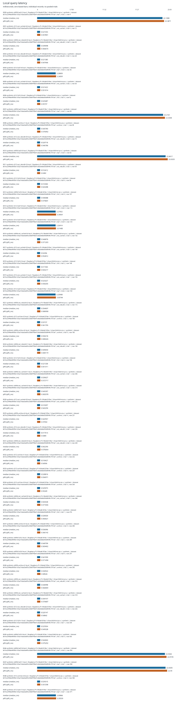
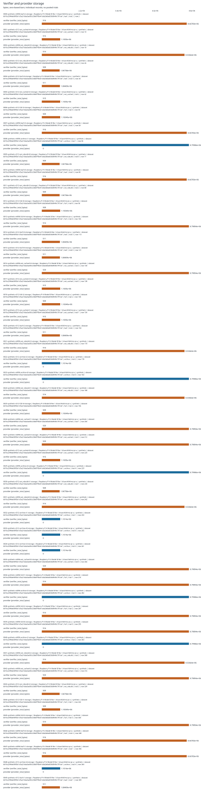
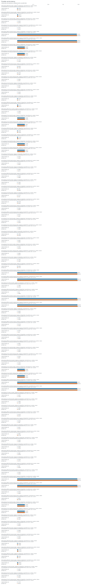

Recorded run profile: paper. Results describe the measured platform and dataset recorded on each row. Desktop and loopback smoke runs are not Raspberry Pi or remote-host evidence. Synthetic fixtures are not real chain workloads. Ethereum RPC JSON replay does not validate native finality or integrate sharded consensus. Verifier-local offloading is not compression or a system-wide storage saving; provider state must be counted separately.
Valid records: 478. Successful: 475. Failed: 0. Malformed lines: 0.
Exactly seven whole-comment rows; evidence status does not assert reviewer acceptance.
| comment_id | whole_comment_scope | status | available_evidence | missing_evidence |
|---|---|---|---|---|
| R1-1 | Storage accounting and provider-side overhead | measured_here | storage_accounting; provider_latency; filesystem | |
| R1-2 | IoT deployment and blockchain integration scope | partial | real_pi_platform; remote_tcp; memory_pressure; filesystem; service_disconnect | energy; native_finality |
| R2-1 | Evaluation on constrained hardware | measured_here | real_pi_platform; memory_pressure | |
| R2-2 | CPU, RAM and latency measurements | measured_here | cpu; ram; local_latency | |
| R2-3 | Presentation of experimental evidence | measured_here | presentation | |
| R2-4 | Reproducible repository, real data and hardware evidence | partial | repository_metadata; real_pi_platform | real_data |
| R2-8 | Real-world benchmarking | partial | real_pi_platform | real_data |
| evidence | status | reason |
|---|---|---|
| real_pi_platform | measured_here | Successful measurement with a Raspberry Pi device model in system_info. |
| remote_tcp | measured_here | TCP measurement records distinct client and server machine identities. |
| real_data | missing | No successful real-data measurement includes source metadata and an input hash; synthetic/test data do not establish real-world workloads. |
| energy | missing | No measured energy in joules is present; CPU time and estimated power are not energy measurements. |
| filesystem | measured_here | Storage experiment includes actual allocated/filesystem byte measurements. |
| memory_pressure | measured_here | Memory-pressure experiment records an enforced limit or pressure configuration. |
| service_disconnect | measured_here | Remote TCP service-disconnection experiment records observed detection or failure. |
| native_finality | missing | Native finality and sharded-consensus integration are absent. Ethereum RPC JSON replay is an ingestion/verification adapter, not native finality validation or consensus integration. |
| storage_accounting | measured_here | Verifier and provider byte accounting is available. |
| provider_latency | measured_here | Provider latency is measured. |
| cpu | measured_here | CPU-time or CPU-utilization metrics are present. |
| ram | measured_here | Resident/peak memory metrics are present. |
| local_latency | measured_here | Local latency metrics are present. |
| presentation | measured_here | This run provides machine-readable tables, escaped LaTeX and an offline report; manuscript revision and reviewer acceptance are not assessed. |
| repository_metadata | measured_here | Run metadata records a code version and configuration; public repository availability is not verified. |
| experiment | records | successful |
|---|---|---|
| original_e2 | 40 | 40 |
| local | 50 | 50 |
| archive_retrieval | 10 | 10 |
| network | 40 | 40 |
| storage | 50 | 50 |
| provider | 90 | 90 |
| migration | 60 | 60 |
| integrity | 50 | 50 |
| memory_pressure | 40 | 40 |
| disconnect | 40 | 40 |
| energy_workload | 5 | 5 |
| energy | 1 | 0 |
| real_dataset | 1 | 0 |
| native_finality | 1 | 0 |
Individual records; no pooling or inferred confidence intervals.



| experiment | case_id | role | platform | data_kind | status | metrics | metrics.accept_median_ms | metrics.accepted | metrics.accounting_scope | metrics.active_mode | metrics.baseline_rss_bytes | metrics.block_bytes | metrics.blocks | metrics.canonical_envelope_overhead_bytes | metrics.case_wall_ns | metrics.cases | metrics.certificate_bytes | metrics.checks.active_mode_correct | metrics.checks.active_state_valid | metrics.checks.allowed_metadata_difference_only | metrics.checks.anchor_bytes_equal | metrics.checks.dataset_matches_case | metrics.checks.injected_exit_code_matches | metrics.checks.no_partial_metadata | metrics.checks.no_pending_journals | metrics.checks.post_queries_accept | metrics.checks.pre_queries_accept | metrics.checks.protected_bytes_equal | metrics.checks.recovery_checks_pass | metrics.checks.root_equal | metrics.child_exit_code | metrics.cpu_ms_per_query | metrics.crash_cases | metrics.crash_failures | metrics.descriptor_serialized_bytes | metrics.disconnect_cases | metrics.epoch_substitution_rejected | metrics.expected_active_mode | metrics.failure_detection_ms | metrics.failures | metrics.false_accepts | metrics.fault | metrics.hash_calls | metrics.hash_calls.internal | metrics.hash_calls.leaf | metrics.hash_calls.total | metrics.honest | metrics.io | metrics.io.bytes_read | metrics.io.bytes_written | metrics.logical_payload_bytes | metrics.mean_json_body_bytes | metrics.measured_duration_seconds | metrics.median_ms | metrics.memory_limit_mib | metrics.metadata_bytes_written | metrics.metadata_differences | metrics.migration_cpu_ns | metrics.migration_wall_ns | metrics.mode | metrics.mode_substitution_rejected | metrics.n | metrics.n_prime | metrics.operational_total_bytes | metrics.p95_ms | metrics.p99_ms | metrics.padded_blocks | metrics.paper_descriptor_bytes | metrics.payload_read_bytes_per_query | metrics.payload_tamper_rejected | metrics.peak_rss_bytes | metrics.physical_case_bytes_on_provider_device | metrics.physical_deployed_case_total_bytes | metrics.physical_descriptor_bytes_on_verifier_device | metrics.post_query_audit.all_accept | metrics.post_query_audit.exact_leaf_resolver_failures | metrics.post_query_audit.exact_leaf_resolver_positions_checked | metrics.post_query_audit.failures | metrics.post_query_audit.mode | metrics.post_query_audit.positions_checked | metrics.pre_query_audit.all_accept | metrics.pre_query_audit.exact_leaf_resolver_failures | metrics.pre_query_audit.exact_leaf_resolver_positions_checked | metrics.pre_query_audit.failures | metrics.pre_query_audit.mode | metrics.pre_query_audit.positions_checked | metrics.pressure_buffer_bytes | metrics.protected_sha256_after | metrics.protected_sha256_before | metrics.provider_allocated_bytes | metrics.provider_cpu_ms_per_query | metrics.provider_file_count | metrics.provider_internal_cached_support_bytes | metrics.provider_payload_bytes | metrics.provider_setup_descriptor_replica_bytes | metrics.provider_support_bytes | metrics.provider_total_bytes | metrics.queries | metrics.queries_equivalent | metrics.raw_opaque_payload_bytes | metrics.recovered | metrics.recovery | metrics.recovery.active_mode | metrics.recovery.active_mode_correct | metrics.recovery.active_state_valid | metrics.recovery.allowed_metadata_difference_only | metrics.recovery.expected_active_mode | metrics.recovery.journals_found | metrics.recovery.metadata_differences | metrics.recovery.mixed_state_detected | metrics.recovery.protected_bytes_equal | metrics.recovery.recovery_ns | metrics.recovery.recovery_status | metrics.recovery.temporary_metadata_files | metrics.recovery.unreferenced_target_objects_cleaned | metrics.repeat | metrics.retrieval_failed_safely | metrics.root_hex_after | metrics.root_hex_before | metrics.root_hex_tamper_rejected | metrics.root_preserved | metrics.rss_bytes | metrics.setup_allocated_bytes | metrics.setup_file_count | metrics.setup_payload_bytes | metrics.setup_signing_key_bytes | metrics.setup_support_bytes | metrics.setup_total_bytes | metrics.shard_substitution_rejected | metrics.signature_hex_tamper_rejected | metrics.snapshot_after.io.cancelled_write_bytes | metrics.snapshot_after.io.rchar | metrics.snapshot_after.io.read_bytes | metrics.snapshot_after.io.syscr | metrics.snapshot_after.io.syscw | metrics.snapshot_after.io.wchar | metrics.snapshot_after.io.write_bytes | metrics.snapshot_after.major_faults | metrics.snapshot_after.minor_faults | metrics.snapshot_after.peak_rss_bytes | metrics.snapshot_after.process_cpu_ns | metrics.snapshot_after.rss_bytes | metrics.snapshot_after.temp_C | metrics.snapshot_after.throttled | metrics.snapshot_after.timestamp_unix_ns | metrics.snapshot_after.timestamp_utc | metrics.snapshot_after.utc_ns | metrics.snapshot_before.io.cancelled_write_bytes | metrics.snapshot_before.io.rchar | metrics.snapshot_before.io.read_bytes | metrics.snapshot_before.io.syscr | metrics.snapshot_before.io.syscw | metrics.snapshot_before.io.wchar | metrics.snapshot_before.io.write_bytes | metrics.snapshot_before.major_faults | metrics.snapshot_before.minor_faults | metrics.snapshot_before.peak_rss_bytes | metrics.snapshot_before.process_cpu_ns | metrics.snapshot_before.rss_bytes | metrics.snapshot_before.temp_C | metrics.snapshot_before.throttled | metrics.snapshot_before.timestamp_unix_ns | metrics.snapshot_before.timestamp_utc | metrics.snapshot_before.utc_ns | metrics.successful_clean_repeats | metrics.support_metadata_bytes | metrics.support_read_bytes_per_query | metrics.target_serialized_bytes | metrics.temporary_disk_bytes | metrics.total_materialized_bytes | metrics.transition | metrics.trial_kind | metrics.verifier_allocated_bytes | metrics.verifier_file_count | metrics.verifier_payload_bytes | metrics.verifier_support_bytes | metrics.verifier_total_bytes | metrics.witness_generate_median_ms | metrics.worker_including_startup_wall_ns | metrics.worker_resources.major_faults | metrics.worker_resources.minor_faults | metrics.worker_resources.peak_rss_kib | metrics.worker_resources.scope | metrics.write_amplification | platform.architecture | platform.cpu_count | platform.filesystem.block_size | platform.filesystem.blocks_available | platform.filesystem.device | platform.filesystem.filesystem_type | platform.filesystem.fragment_size | platform.filesystem.mount_point | platform.filesystem.path | platform.hostname | platform.kernel | platform.machine_id | platform.machine_id_source | platform.mem_total_bytes | platform.network.available | platform.network.interfaces | platform.openssl | platform.os.id | platform.os.name | platform.os.pretty_name | platform.os.version | platform.os.version_id | platform.pi_model | platform.platform | platform.provider_storage.block_device | platform.provider_storage.device.capacity_bytes | platform.provider_storage.device.model | platform.provider_storage.device.name | platform.provider_storage.device.rotational | platform.provider_storage.device.vendor | platform.provider_storage.filesystem | platform.provider_storage.free_bytes | platform.provider_storage.mountpoint | platform.provider_storage.path | platform.provider_storage.total_bytes | platform.provider_storage.used_bytes | platform.python | platform.python_implementation | platform.result_storage.block_device | platform.result_storage.device.capacity_bytes | platform.result_storage.device.model | platform.result_storage.device.name | platform.result_storage.device.rotational | platform.result_storage.device.vendor | platform.result_storage.filesystem | platform.result_storage.free_bytes | platform.result_storage.mountpoint | platform.result_storage.path | platform.result_storage.total_bytes | platform.result_storage.used_bytes | platform.storage.block_device | platform.storage.device.capacity_bytes | platform.storage.device.model | platform.storage.device.name | platform.storage.device.rotational | platform.storage.device.vendor | platform.storage.filesystem | platform.storage.free_bytes | platform.storage.mountpoint | platform.storage.path | platform.storage.total_bytes | platform.storage.used_bytes | provenance.actual_chain_integration_tested | provenance.cache_policy | provenance.cache_state | provenance.chain_id | provenance.client_machine_id | provenance.cpu_scope | provenance.crash_model | provenance.dataset_id | provenance.dataset_seed | provenance.dataset_sha256 | provenance.dataset_source.generator | provenance.dataset_source.source | provenance.ext_backend | provenance.fault | provenance.implementation | provenance.io_scope | provenance.measurement_scope | provenance.memory_limit_kind | provenance.memory_limit_mib | provenance.memory_scope | provenance.mode | provenance.n | provenance.native_finality_verified | provenance.network_kind | provenance.not_tested | provenance.physical_power_loss_tested | provenance.pressure_mib | provenance.profile | provenance.provider_case_id | provenance.queries | provenance.query_equivalence_scope | provenance.raw_e6_result | provenance.reason | provenance.run_directory | provenance.sample_count | provenance.scheme | provenance.scope | provenance.selected_count | provenance.selected_payload_sha256 | provenance.selection | provenance.server_machine_id | provenance.snapshot_scope | provenance.source | provenance.source_relative_path | provenance.source_sha256.__init__.py | provenance.source_sha256.__main__.py | provenance.source_sha256.analysis.py | provenance.source_sha256.catalog.py | provenance.source_sha256.cli.py | provenance.source_sha256.config.py | provenance.source_sha256.crypto.py | provenance.source_sha256.dataset.py | provenance.source_sha256.execution.py | provenance.source_sha256.merkle.py | provenance.source_sha256.migration.py | provenance.source_sha256.policy.py | provenance.source_sha256.state.py | provenance.source_sha256.svg_base.py | provenance.source_sha256.util.py | provenance.storage_scope | provenance.summary_scope | provenance.timing_scope | provenance.transport | provenance.trial | provenance.trust_anchor | provenance.warmup | provenance.wire_format | provenance.worker_log | provenance.workload_seed |
|---|---|---|---|---|---|---|---|---|---|---|---|---|---|---|---|---|---|---|---|---|---|---|---|---|---|---|---|---|---|---|---|---|---|---|---|---|---|---|---|---|---|---|---|---|---|---|---|---|---|---|---|---|---|---|---|---|---|---|---|---|---|---|---|---|---|---|---|---|---|---|---|---|---|---|---|---|---|---|---|---|---|---|---|---|---|---|---|---|---|---|---|---|---|---|---|---|---|---|---|---|---|---|---|---|---|---|---|---|---|---|---|---|---|---|---|---|---|---|---|---|---|---|---|---|---|---|---|---|---|---|---|---|---|---|---|---|---|---|---|---|---|---|---|---|---|---|---|---|---|---|---|---|---|---|---|---|---|---|---|---|---|---|---|---|---|---|---|---|---|---|---|---|---|---|---|---|---|---|---|---|---|---|---|---|---|---|---|---|---|---|---|---|---|---|---|---|---|---|---|---|---|---|---|---|---|---|---|---|---|---|---|---|---|---|---|---|---|---|---|---|---|---|---|---|---|---|---|---|---|---|---|---|---|---|---|---|---|---|---|---|---|---|---|---|---|---|---|---|---|---|---|---|---|---|---|---|---|---|---|---|---|---|---|---|---|---|---|---|---|---|---|---|---|---|---|---|---|---|---|---|---|---|---|---|---|---|---|---|---|---|---|---|---|---|---|---|---|---|---|---|---|---|---|---|---|---|---|---|---|---|---|---|---|---|---|
| real_dataset | no-supplied-real-dataset | pi-verifier | synthetic | skipped | {} | aarch64 | 4 | msi-pi-a | 6.12.47+rpt-rpi-v8 | f8c5ed94511a0d7f7b74e6e55a8499bd265b7cfbe00e6c3af4400223a99102c0 | device_tree_serial_sha256 | 8200613888 | True | [{"is_wireless": false, "name": "eth0", "operstate": "up"}, {"is_wireless": false, "name": "lo", "operstate": "unknown"}, {"is_wireless": true, "name": "wlan0", "operstate": "down"}] | OpenSSL 3.5.7 9 Jun 2026 | debian | Debian GNU/Linux | Debian GNU/Linux 13 (trixie) | 13 (trixie) | 13 | Raspberry Pi 4 Model B Rev 1.4 | Linux | 3.13.5 | CPython | /dev/mmcblk0p2 | 31914983424 | None | mmcblk0 | 0 | None | ext4 | 22241345536 | / | /home/reza/msi_pi_suite/outputs/pi-a-paper_synthetic_ethernet_retry1 | 30794059776 | 7222124544 | /dev/mmcblk0p2 | 31914983424 | None | mmcblk0 | 0 | None | ext4 | 22241345536 | / | /home/reza/msi_pi_suite | 30794059776 | 7222124544 | Pass --dataset after Ethereum RPC export; synthetic data are never relabelled. | ||||||||||||||||||||||||||||||||||||||||||||||||||||||||||||||||||||||||||||||||||||||||||||||||||||||||||||||||||||||||||||||||||||||||||||||||||||||||||||||||||||||||||||||||||||||||||||||||||||||||||||||||||||||||||||||||||||||||||||||||||||||||||||||||||||||||||
| storage | 0000-synthetic-n4096-leaf-t2-storage | pi-verifier | synthetic | ok | regular file lengths; allocated file blocks also reported; excludes directories, inodes, journal, and OS cache | 147456 | 253 | 916 | leaf | 4096 | 4096 | 8668750 | 126 | 8668782 | 8669698 | 916 | 16920576 | 4100 | 0 | 8536064 | 916 | 131072 | 8667834 | 8388608 | 4096 | 1 | 0 | 32 | 0 | 32 | 123 | 8668782 | 4096 | 1 | 0 | 0 | 916 | aarch64 | 4 | msi-pi-a | 6.12.47+rpt-rpi-v8 | f8c5ed94511a0d7f7b74e6e55a8499bd265b7cfbe00e6c3af4400223a99102c0 | device_tree_serial_sha256 | 8200613888 | True | [{"is_wireless": false, "name": "eth0", "operstate": "up"}, {"is_wireless": false, "name": "lo", "operstate": "unknown"}, {"is_wireless": true, "name": "wlan0", "operstate": "down"}] | OpenSSL 3.5.7 9 Jun 2026 | debian | Debian GNU/Linux | Debian GNU/Linux 13 (trixie) | 13 (trixie) | 13 | Raspberry Pi 4 Model B Rev 1.4 | Linux | 3.13.5 | CPython | /dev/mmcblk0p2 | 31914983424 | None | mmcblk0 | 0 | None | ext4 | 22241345536 | / | /home/reza/msi_pi_suite/outputs/pi-a-paper_synthetic_ethernet_retry1 | 30794059776 | 7222124544 | /dev/mmcblk0p2 | 31914983424 | None | mmcblk0 | 0 | None | ext4 | 22241345536 | / | /home/reza/msi_pi_suite | 30794059776 | 7222124544 | OS page cache uncontrolled; warm query repetition; no cold-flash claim | None | f8c5ed94511a0d7f7b74e6e55a8499bd265b7cfbe00e6c3af4400223a99102c0 | b016c29f4de90f5b1cf3a216da5a605c33b87f5b41cbb2b6bd5568949c797cef | sha256-counter-v1 | synthetic | leaf | 4096 | False | ethernet | paper | 6d7f75c857ce27c6daab9f35 | 4096 | 0687bb27f05141a424b31da9247a1c02625c10a06caaa5ff34a33daeb97eabec | contiguous prefix | 7e7e6946191efbf0784478e26f1c2325eba3d95d44cbbc419b2cf966290b4c94 | logical role ownership; experiment fixtures and setup reported separately | tcp | 2 | experiment-generated Ed25519 descriptor provisioned at setup | http1-json-base64 | ||||||||||||||||||||||||||||||||||||||||||||||||||||||||||||||||||||||||||||||||||||||||||||||||||||||||||||||||||||||||||||||||||||||||||||||||||||||||||||||||||||||||||||||||||||||||||||||||||||||||||||||||||||||
| provider | 0000-synthetic-n4096-leaf-t2-provider | provider | synthetic | ok | 4.478590499999999 | 4.66258875 | 2084.0 | 4.5019225 | 16 | 63197184 | 131072.0 | 2.352271 | aarch64 | 4 | msi-pi-b | 6.12.47+rpt-rpi-v8 | 7e7e6946191efbf0784478e26f1c2325eba3d95d44cbbc419b2cf966290b4c94 | device_tree_serial_sha256 | 3981172736 | True | [{"is_wireless": false, "name": "eth0", "operstate": "up"}, {"is_wireless": false, "name": "lo", "operstate": "unknown"}, {"is_wireless": false, "name": "ovs-system", "operstate": "down"}, {"is_wireless": false, "name": "s1", "operstate": "down"}, {"is_wireless": false, "name": "s2", "operstate": "down"}, {"is_wireless": false, "name": "s3", "operstate": "down"}, {"is_wireless": true, "name": "wlan0", "operstate": "down"}] | OpenSSL 3.0.15 3 Sep 2024 | debian | Debian GNU/Linux | Debian GNU/Linux 13 (trixie) | 13 (trixie) | 13 | Raspberry Pi 4 Model B Rev 1.4 | Linux | /dev/mmcblk0p2 | 31914983424 | None | mmcblk0 | 0 | None | ext4 | 12486815744 | / | /home/reza/msi_pi_suite/provider-data | 30794059776 | 16976654336 | 3.12.7 | CPython | /dev/mmcblk0p2 | 31914983424 | None | mmcblk0 | 0 | None | ext4 | 12486815744 | / | /home/reza/msi_pi_suite | 30794059776 | 16976654336 | OS page cache uncontrolled; warm query repetition; no cold-flash claim | None | f8c5ed94511a0d7f7b74e6e55a8499bd265b7cfbe00e6c3af4400223a99102c0 | b016c29f4de90f5b1cf3a216da5a605c33b87f5b41cbb2b6bd5568949c797cef | sha256-counter-v1 | synthetic | leaf | 4096 | False | ethernet | paper | 6d7f75c857ce27c6daab9f35 | 16 | 4096 | 0687bb27f05141a424b31da9247a1c02625c10a06caaa5ff34a33daeb97eabec | contiguous prefix | 7e7e6946191efbf0784478e26f1c2325eba3d95d44cbbc419b2cf966290b4c94 | proof_fixture_preparation | logical role ownership; experiment fixtures and setup reported separately | payload/support read and proof construction; JSON serialization and network excluded | tcp | 2 | experiment-generated Ed25519 descriptor provisioned at setup | http1-json-base64 | ||||||||||||||||||||||||||||||||||||||||||||||||||||||||||||||||||||||||||||||||||||||||||||||||||||||||||||||||||||||||||||||||||||||||||||||||||||||||||||||||||||||||||||||||||||||||||||||||||||||||||||||||||||||||||||||||||||||||||||
| local | 0000-synthetic-n4096-leaf-t2-local | pi-verifier | synthetic | ok | 22.1053985 | 200 | 25137152 | 22.34213596 | 0 | 5.064196578 | 22.108833 | 0 | 22.38706345 | 28.725695789999886 | 73039872 | 0 | 200 | 27344896 | aarch64 | 4 | msi-pi-a | 6.12.47+rpt-rpi-v8 | f8c5ed94511a0d7f7b74e6e55a8499bd265b7cfbe00e6c3af4400223a99102c0 | device_tree_serial_sha256 | 8200613888 | True | [{"is_wireless": false, "name": "eth0", "operstate": "up"}, {"is_wireless": false, "name": "lo", "operstate": "unknown"}, {"is_wireless": true, "name": "wlan0", "operstate": "down"}] | OpenSSL 3.5.7 9 Jun 2026 | debian | Debian GNU/Linux | Debian GNU/Linux 13 (trixie) | 13 (trixie) | 13 | Raspberry Pi 4 Model B Rev 1.4 | Linux | 3.13.5 | CPython | /dev/mmcblk0p2 | 31914983424 | None | mmcblk0 | 0 | None | ext4 | 22241345536 | / | /home/reza/msi_pi_suite/outputs/pi-a-paper_synthetic_ethernet_retry1 | 30794059776 | 7222124544 | /dev/mmcblk0p2 | 31914983424 | None | mmcblk0 | 0 | None | ext4 | 22241345536 | / | /home/reza/msi_pi_suite | 30794059776 | 7222124544 | OS page cache uncontrolled; warm query repetition; no cold-flash claim | None | f8c5ed94511a0d7f7b74e6e55a8499bd265b7cfbe00e6c3af4400223a99102c0 | verifier acceptance CPU only | b016c29f4de90f5b1cf3a216da5a605c33b87f5b41cbb2b6bd5568949c797cef | sha256-counter-v1 | synthetic | persistent_adapter_original_crypto | none | 0 | fresh worker, one live response, optional pressure buffer; fixtures excluded | leaf | 4096 | False | ethernet | 0 | paper | 6d7f75c857ce27c6daab9f35 | 4096 | 0687bb27f05141a424b31da9247a1c02625c10a06caaa5ff34a33daeb97eabec | contiguous prefix | 7e7e6946191efbf0784478e26f1c2325eba3d95d44cbbc419b2cf966290b4c94 | pool | logical role ownership; experiment fixtures and setup reported separately | pre-delivered response acceptance only | tcp | 2 | experiment-generated Ed25519 descriptor provisioned at setup | http1-json-base64 | |||||||||||||||||||||||||||||||||||||||||||||||||||||||||||||||||||||||||||||||||||||||||||||||||||||||||||||||||||||||||||||||||||||||||||||||||||||||||||||||||||||||||||||||||||||||||||||||||||||||||||||||||||||||||||||||||
| memory_pressure | 0000-synthetic-n4096-leaf-t2-memory_pressure | pi-verifier | synthetic | ok | 22.166148 | 200 | 92237824 | 22.31508157 | 0 | 5.054904189 | 22.169815 | 256 | 22.451796599999998 | 29.875496739999946 | 94826496 | 67108864 | 200 | 94441472 | aarch64 | 4 | msi-pi-a | 6.12.47+rpt-rpi-v8 | f8c5ed94511a0d7f7b74e6e55a8499bd265b7cfbe00e6c3af4400223a99102c0 | device_tree_serial_sha256 | 8200613888 | True | [{"is_wireless": false, "name": "eth0", "operstate": "up"}, {"is_wireless": false, "name": "lo", "operstate": "unknown"}, {"is_wireless": true, "name": "wlan0", "operstate": "down"}] | OpenSSL 3.5.7 9 Jun 2026 | debian | Debian GNU/Linux | Debian GNU/Linux 13 (trixie) | 13 (trixie) | 13 | Raspberry Pi 4 Model B Rev 1.4 | Linux | 3.13.5 | CPython | /dev/mmcblk0p2 | 31914983424 | None | mmcblk0 | 0 | None | ext4 | 22241345536 | / | /home/reza/msi_pi_suite/outputs/pi-a-paper_synthetic_ethernet_retry1 | 30794059776 | 7222124544 | /dev/mmcblk0p2 | 31914983424 | None | mmcblk0 | 0 | None | ext4 | 22241345536 | / | /home/reza/msi_pi_suite | 30794059776 | 7222124544 | OS page cache uncontrolled; warm query repetition; no cold-flash claim | None | f8c5ed94511a0d7f7b74e6e55a8499bd265b7cfbe00e6c3af4400223a99102c0 | verifier acceptance CPU only | b016c29f4de90f5b1cf3a216da5a605c33b87f5b41cbb2b6bd5568949c797cef | sha256-counter-v1 | synthetic | persistent_adapter_original_crypto | RLIMIT_AS virtual address space | 256 | fresh worker, one live response, optional pressure buffer; fixtures excluded | leaf | 4096 | False | ethernet | 64 | paper | 6d7f75c857ce27c6daab9f35 | 4096 | 0687bb27f05141a424b31da9247a1c02625c10a06caaa5ff34a33daeb97eabec | contiguous prefix | 7e7e6946191efbf0784478e26f1c2325eba3d95d44cbbc419b2cf966290b4c94 | pool | logical role ownership; experiment fixtures and setup reported separately | pre-delivered response acceptance only | tcp | 2 | experiment-generated Ed25519 descriptor provisioned at setup | http1-json-base64 | |||||||||||||||||||||||||||||||||||||||||||||||||||||||||||||||||||||||||||||||||||||||||||||||||||||||||||||||||||||||||||||||||||||||||||||||||||||||||||||||||||||||||||||||||||||||||||||||||||||||||||||||||||||||||||||||||
| network | 0000-synthetic-n4096-leaf-t2-network | pi-verifier | synthetic | ok | 22.6890235 | 200 | 25202688 | 23.01898811 | 278301.555 | 13.19900634 | 66.10217800000001 | 0 | 68.70072345 | 79.13837998999996 | 73039872 | 0 | 200 | 28573696 | aarch64 | 4 | msi-pi-a | 6.12.47+rpt-rpi-v8 | f8c5ed94511a0d7f7b74e6e55a8499bd265b7cfbe00e6c3af4400223a99102c0 | device_tree_serial_sha256 | 8200613888 | True | [{"is_wireless": false, "name": "eth0", "operstate": "up"}, {"is_wireless": false, "name": "lo", "operstate": "unknown"}, {"is_wireless": true, "name": "wlan0", "operstate": "down"}] | OpenSSL 3.5.7 9 Jun 2026 | debian | Debian GNU/Linux | Debian GNU/Linux 13 (trixie) | 13 (trixie) | 13 | Raspberry Pi 4 Model B Rev 1.4 | Linux | 3.13.5 | CPython | /dev/mmcblk0p2 | 31914983424 | None | mmcblk0 | 0 | None | ext4 | 22241345536 | / | /home/reza/msi_pi_suite/outputs/pi-a-paper_synthetic_ethernet_retry1 | 30794059776 | 7222124544 | /dev/mmcblk0p2 | 31914983424 | None | mmcblk0 | 0 | None | ext4 | 22241345536 | / | /home/reza/msi_pi_suite | 30794059776 | 7222124544 | OS page cache uncontrolled; warm query repetition; no cold-flash claim | None | f8c5ed94511a0d7f7b74e6e55a8499bd265b7cfbe00e6c3af4400223a99102c0 | verifier acceptance CPU only | b016c29f4de90f5b1cf3a216da5a605c33b87f5b41cbb2b6bd5568949c797cef | sha256-counter-v1 | synthetic | persistent_adapter_original_crypto | none | 0 | fresh worker, one live response, optional pressure buffer; fixtures excluded | leaf | 4096 | False | ethernet | 0 | paper | 6d7f75c857ce27c6daab9f35 | 4096 | 0687bb27f05141a424b31da9247a1c02625c10a06caaa5ff34a33daeb97eabec | contiguous prefix | 7e7e6946191efbf0784478e26f1c2325eba3d95d44cbbc419b2cf966290b4c94 | network | logical role ownership; experiment fixtures and setup reported separately | request/read through verified acceptance | tcp | 2 | experiment-generated Ed25519 descriptor provisioned at setup | http1-json-base64 | |||||||||||||||||||||||||||||||||||||||||||||||||||||||||||||||||||||||||||||||||||||||||||||||||||||||||||||||||||||||||||||||||||||||||||||||||||||||||||||||||||||||||||||||||||||||||||||||||||||||||||||||||||||||||||||||||
| provider | 0000-synthetic-n4096-leaf-t2-network-provider | provider | synthetic | ok | 8.282188999999999 | 9.45328415 | 2084.0 | 7.995097445 | 200 | 63197184 | 131072.0 | 4.4672765000000005 | aarch64 | 4 | msi-pi-b | 6.12.47+rpt-rpi-v8 | 7e7e6946191efbf0784478e26f1c2325eba3d95d44cbbc419b2cf966290b4c94 | device_tree_serial_sha256 | 3981172736 | True | [{"is_wireless": false, "name": "eth0", "operstate": "up"}, {"is_wireless": false, "name": "lo", "operstate": "unknown"}, {"is_wireless": false, "name": "ovs-system", "operstate": "down"}, {"is_wireless": false, "name": "s1", "operstate": "down"}, {"is_wireless": false, "name": "s2", "operstate": "down"}, {"is_wireless": false, "name": "s3", "operstate": "down"}, {"is_wireless": true, "name": "wlan0", "operstate": "down"}] | OpenSSL 3.0.15 3 Sep 2024 | debian | Debian GNU/Linux | Debian GNU/Linux 13 (trixie) | 13 (trixie) | 13 | Raspberry Pi 4 Model B Rev 1.4 | Linux | /dev/mmcblk0p2 | 31914983424 | None | mmcblk0 | 0 | None | ext4 | 12486815744 | / | /home/reza/msi_pi_suite/provider-data | 30794059776 | 16976654336 | 3.12.7 | CPython | /dev/mmcblk0p2 | 31914983424 | None | mmcblk0 | 0 | None | ext4 | 12486815744 | / | /home/reza/msi_pi_suite | 30794059776 | 16976654336 | OS page cache uncontrolled; warm query repetition; no cold-flash claim | None | f8c5ed94511a0d7f7b74e6e55a8499bd265b7cfbe00e6c3af4400223a99102c0 | b016c29f4de90f5b1cf3a216da5a605c33b87f5b41cbb2b6bd5568949c797cef | sha256-counter-v1 | synthetic | leaf | 4096 | False | ethernet | paper | 6d7f75c857ce27c6daab9f35 | 4096 | 0687bb27f05141a424b31da9247a1c02625c10a06caaa5ff34a33daeb97eabec | contiguous prefix | 7e7e6946191efbf0784478e26f1c2325eba3d95d44cbbc419b2cf966290b4c94 | warm_network_queries | logical role ownership; experiment fixtures and setup reported separately | provider processing for measured network queries; JSON serialization and network excluded | tcp | 2 | experiment-generated Ed25519 descriptor provisioned at setup | http1-json-base64 | |||||||||||||||||||||||||||||||||||||||||||||||||||||||||||||||||||||||||||||||||||||||||||||||||||||||||||||||||||||||||||||||||||||||||||||||||||||||||||||||||||||||||||||||||||||||||||||||||||||||||||||||||||||||||||||||||||||||||||||
| integrity | 0000-synthetic-n4096-leaf-t2-integrity | pi-verifier | synthetic | ok | 7 | True | 0 | True | True | True | True | True | True | aarch64 | 4 | msi-pi-a | 6.12.47+rpt-rpi-v8 | f8c5ed94511a0d7f7b74e6e55a8499bd265b7cfbe00e6c3af4400223a99102c0 | device_tree_serial_sha256 | 8200613888 | True | [{"is_wireless": false, "name": "eth0", "operstate": "up"}, {"is_wireless": false, "name": "lo", "operstate": "unknown"}, {"is_wireless": true, "name": "wlan0", "operstate": "down"}] | OpenSSL 3.5.7 9 Jun 2026 | debian | Debian GNU/Linux | Debian GNU/Linux 13 (trixie) | 13 (trixie) | 13 | Raspberry Pi 4 Model B Rev 1.4 | Linux | 3.13.5 | CPython | /dev/mmcblk0p2 | 31914983424 | None | mmcblk0 | 0 | None | ext4 | 22241345536 | / | /home/reza/msi_pi_suite/outputs/pi-a-paper_synthetic_ethernet_retry1 | 30794059776 | 7222124544 | /dev/mmcblk0p2 | 31914983424 | None | mmcblk0 | 0 | None | ext4 | 22241345536 | / | /home/reza/msi_pi_suite | 30794059776 | 7222124544 | OS page cache uncontrolled; warm query repetition; no cold-flash claim | None | f8c5ed94511a0d7f7b74e6e55a8499bd265b7cfbe00e6c3af4400223a99102c0 | b016c29f4de90f5b1cf3a216da5a605c33b87f5b41cbb2b6bd5568949c797cef | sha256-counter-v1 | synthetic | leaf | 4096 | False | ethernet | paper | 6d7f75c857ce27c6daab9f35 | finite adversarial regression cases, not a cryptographic security bound | 4096 | 0687bb27f05141a424b31da9247a1c02625c10a06caaa5ff34a33daeb97eabec | contiguous prefix | 7e7e6946191efbf0784478e26f1c2325eba3d95d44cbbc419b2cf966290b4c94 | logical role ownership; experiment fixtures and setup reported separately | tcp | 2 | experiment-generated Ed25519 descriptor provisioned at setup | http1-json-base64 | |||||||||||||||||||||||||||||||||||||||||||||||||||||||||||||||||||||||||||||||||||||||||||||||||||||||||||||||||||||||||||||||||||||||||||||||||||||||||||||||||||||||||||||||||||||||||||||||||||||||||||||||||||||||||||||||||||||||||||||
| disconnect | 0000-synthetic-n4096-leaf-t2-disconnect | pi-verifier | synthetic | ok | 1 | 3.280696 | 0 | True | True | aarch64 | 4 | msi-pi-a | 6.12.47+rpt-rpi-v8 | f8c5ed94511a0d7f7b74e6e55a8499bd265b7cfbe00e6c3af4400223a99102c0 | device_tree_serial_sha256 | 8200613888 | True | [{"is_wireless": false, "name": "eth0", "operstate": "up"}, {"is_wireless": false, "name": "lo", "operstate": "unknown"}, {"is_wireless": true, "name": "wlan0", "operstate": "down"}] | OpenSSL 3.5.7 9 Jun 2026 | debian | Debian GNU/Linux | Debian GNU/Linux 13 (trixie) | 13 (trixie) | 13 | Raspberry Pi 4 Model B Rev 1.4 | Linux | 3.13.5 | CPython | /dev/mmcblk0p2 | 31914983424 | None | mmcblk0 | 0 | None | ext4 | 22241345536 | / | /home/reza/msi_pi_suite/outputs/pi-a-paper_synthetic_ethernet_retry1 | 30794059776 | 7222124544 | /dev/mmcblk0p2 | 31914983424 | None | mmcblk0 | 0 | None | ext4 | 22241345536 | / | /home/reza/msi_pi_suite | 30794059776 | 7222124544 | OS page cache uncontrolled; warm query repetition; no cold-flash claim | None | f8c5ed94511a0d7f7b74e6e55a8499bd265b7cfbe00e6c3af4400223a99102c0 | b016c29f4de90f5b1cf3a216da5a605c33b87f5b41cbb2b6bd5568949c797cef | sha256-counter-v1 | synthetic | server closes actual TCP query connection; next request reconnects | leaf | 4096 | False | ethernet | RF loss, board outage, physical link disconnection | paper | 6d7f75c857ce27c6daab9f35 | 4096 | 0687bb27f05141a424b31da9247a1c02625c10a06caaa5ff34a33daeb97eabec | contiguous prefix | 7e7e6946191efbf0784478e26f1c2325eba3d95d44cbbc419b2cf966290b4c94 | logical role ownership; experiment fixtures and setup reported separately | tcp | 2 | experiment-generated Ed25519 descriptor provisioned at setup | http1-json-base64 | ||||||||||||||||||||||||||||||||||||||||||||||||||||||||||||||||||||||||||||||||||||||||||||||||||||||||||||||||||||||||||||||||||||||||||||||||||||||||||||||||||||||||||||||||||||||||||||||||||||||||||||||||||||||||||||||||||||||||||||||||
| storage | 0001-synthetic-n512-ext_cached-t4-storage | pi-verifier | synthetic | ok | regular file lengths; allocated file blocks also reported; excludes directories, inodes, journal, and OS cache | 18432 | 253 | 915 | ext_cached | 512 | 512 | 1101410 | 126 | 1101442 | 1102357 | 915 | 2142208 | 516 | 32736 | 1067008 | 915 | 32736 | 1100495 | 1048576 | 4096 | 1 | 0 | 32 | 0 | 32 | 174 | 1101442 | 4096 | 1 | 0 | 0 | 915 | aarch64 | 4 | msi-pi-a | 6.12.47+rpt-rpi-v8 | f8c5ed94511a0d7f7b74e6e55a8499bd265b7cfbe00e6c3af4400223a99102c0 | device_tree_serial_sha256 | 8200613888 | True | [{"is_wireless": false, "name": "eth0", "operstate": "up"}, {"is_wireless": false, "name": "lo", "operstate": "unknown"}, {"is_wireless": true, "name": "wlan0", "operstate": "down"}] | OpenSSL 3.5.7 9 Jun 2026 | debian | Debian GNU/Linux | Debian GNU/Linux 13 (trixie) | 13 (trixie) | 13 | Raspberry Pi 4 Model B Rev 1.4 | Linux | 3.13.5 | CPython | /dev/mmcblk0p2 | 31914983424 | None | mmcblk0 | 0 | None | ext4 | 22241345536 | / | /home/reza/msi_pi_suite/outputs/pi-a-paper_synthetic_ethernet_retry1 | 30794059776 | 7222124544 | /dev/mmcblk0p2 | 31914983424 | None | mmcblk0 | 0 | None | ext4 | 22241345536 | / | /home/reza/msi_pi_suite | 30794059776 | 7222124544 | OS page cache uncontrolled; warm query repetition; no cold-flash claim | None | f8c5ed94511a0d7f7b74e6e55a8499bd265b7cfbe00e6c3af4400223a99102c0 | b016c29f4de90f5b1cf3a216da5a605c33b87f5b41cbb2b6bd5568949c797cef | sha256-counter-v1 | synthetic | ext_cached | 512 | False | ethernet | paper | 9df27d55cce516b64ae5e1f3 | 512 | 399484347219683dce319075ea78057e1e8ffcce90859b513ec913109fec9398 | contiguous prefix | 7e7e6946191efbf0784478e26f1c2325eba3d95d44cbbc419b2cf966290b4c94 | logical role ownership; experiment fixtures and setup reported separately | tcp | 4 | experiment-generated Ed25519 descriptor provisioned at setup | http1-json-base64 | ||||||||||||||||||||||||||||||||||||||||||||||||||||||||||||||||||||||||||||||||||||||||||||||||||||||||||||||||||||||||||||||||||||||||||||||||||||||||||||||||||||||||||||||||||||||||||||||||||||||||||||||||||||||
| provider | 0001-synthetic-n512-ext_cached-t4-provider | provider | synthetic | ok | 1.347346 | 1.66792175 | 2084.0 | 1.4052881875 | 16 | 63197184 | 288.0 | 0.4202175 | aarch64 | 4 | msi-pi-b | 6.12.47+rpt-rpi-v8 | 7e7e6946191efbf0784478e26f1c2325eba3d95d44cbbc419b2cf966290b4c94 | device_tree_serial_sha256 | 3981172736 | True | [{"is_wireless": false, "name": "eth0", "operstate": "up"}, {"is_wireless": false, "name": "lo", "operstate": "unknown"}, {"is_wireless": false, "name": "ovs-system", "operstate": "down"}, {"is_wireless": false, "name": "s1", "operstate": "down"}, {"is_wireless": false, "name": "s2", "operstate": "down"}, {"is_wireless": false, "name": "s3", "operstate": "down"}, {"is_wireless": true, "name": "wlan0", "operstate": "down"}] | OpenSSL 3.0.15 3 Sep 2024 | debian | Debian GNU/Linux | Debian GNU/Linux 13 (trixie) | 13 (trixie) | 13 | Raspberry Pi 4 Model B Rev 1.4 | Linux | /dev/mmcblk0p2 | 31914983424 | None | mmcblk0 | 0 | None | ext4 | 12486815744 | / | /home/reza/msi_pi_suite/provider-data | 30794059776 | 16976654336 | 3.12.7 | CPython | /dev/mmcblk0p2 | 31914983424 | None | mmcblk0 | 0 | None | ext4 | 12486815744 | / | /home/reza/msi_pi_suite | 30794059776 | 16976654336 | OS page cache uncontrolled; warm query repetition; no cold-flash claim | None | f8c5ed94511a0d7f7b74e6e55a8499bd265b7cfbe00e6c3af4400223a99102c0 | b016c29f4de90f5b1cf3a216da5a605c33b87f5b41cbb2b6bd5568949c797cef | sha256-counter-v1 | synthetic | ext_cached | 512 | False | ethernet | paper | 9df27d55cce516b64ae5e1f3 | 16 | 512 | 399484347219683dce319075ea78057e1e8ffcce90859b513ec913109fec9398 | contiguous prefix | 7e7e6946191efbf0784478e26f1c2325eba3d95d44cbbc419b2cf966290b4c94 | proof_fixture_preparation | logical role ownership; experiment fixtures and setup reported separately | payload/support read and proof construction; JSON serialization and network excluded | tcp | 4 | experiment-generated Ed25519 descriptor provisioned at setup | http1-json-base64 | ||||||||||||||||||||||||||||||||||||||||||||||||||||||||||||||||||||||||||||||||||||||||||||||||||||||||||||||||||||||||||||||||||||||||||||||||||||||||||||||||||||||||||||||||||||||||||||||||||||||||||||||||||||||||||||||||||||||||||||
| local | 0001-synthetic-n512-ext_cached-t4-local | pi-verifier | synthetic | ok | 0.5259405 | 200 | 25124864 | 0.527404245 | 0 | 0.147587086 | 0.527255 | 0 | 0.5578008499999999 | 0.5801983299999998 | 73039872 | 0 | 200 | 25493504 | aarch64 | 4 | msi-pi-a | 6.12.47+rpt-rpi-v8 | f8c5ed94511a0d7f7b74e6e55a8499bd265b7cfbe00e6c3af4400223a99102c0 | device_tree_serial_sha256 | 8200613888 | True | [{"is_wireless": false, "name": "eth0", "operstate": "up"}, {"is_wireless": false, "name": "lo", "operstate": "unknown"}, {"is_wireless": true, "name": "wlan0", "operstate": "down"}] | OpenSSL 3.5.7 9 Jun 2026 | debian | Debian GNU/Linux | Debian GNU/Linux 13 (trixie) | 13 (trixie) | 13 | Raspberry Pi 4 Model B Rev 1.4 | Linux | 3.13.5 | CPython | /dev/mmcblk0p2 | 31914983424 | None | mmcblk0 | 0 | None | ext4 | 22241345536 | / | /home/reza/msi_pi_suite/outputs/pi-a-paper_synthetic_ethernet_retry1 | 30794059776 | 7222124544 | /dev/mmcblk0p2 | 31914983424 | None | mmcblk0 | 0 | None | ext4 | 22241345536 | / | /home/reza/msi_pi_suite | 30794059776 | 7222124544 | OS page cache uncontrolled; warm query repetition; no cold-flash claim | None | f8c5ed94511a0d7f7b74e6e55a8499bd265b7cfbe00e6c3af4400223a99102c0 | verifier acceptance CPU only | b016c29f4de90f5b1cf3a216da5a605c33b87f5b41cbb2b6bd5568949c797cef | sha256-counter-v1 | synthetic | persistent_adapter_original_crypto | none | 0 | fresh worker, one live response, optional pressure buffer; fixtures excluded | ext_cached | 512 | False | ethernet | 0 | paper | 9df27d55cce516b64ae5e1f3 | 512 | 399484347219683dce319075ea78057e1e8ffcce90859b513ec913109fec9398 | contiguous prefix | 7e7e6946191efbf0784478e26f1c2325eba3d95d44cbbc419b2cf966290b4c94 | pool | logical role ownership; experiment fixtures and setup reported separately | pre-delivered response acceptance only | tcp | 4 | experiment-generated Ed25519 descriptor provisioned at setup | http1-json-base64 | |||||||||||||||||||||||||||||||||||||||||||||||||||||||||||||||||||||||||||||||||||||||||||||||||||||||||||||||||||||||||||||||||||||||||||||||||||||||||||||||||||||||||||||||||||||||||||||||||||||||||||||||||||||||||||||||||
| memory_pressure | 0001-synthetic-n512-ext_cached-t4-memory_pressure | pi-verifier | synthetic | ok | 0.5204495 | 200 | 92221440 | 0.7748511 | 0 | 0.213605598 | 0.5215795 | 256 | 1.5598085000000002 | 1.7159364099999999 | 92602368 | 67108864 | 200 | 92614656 | aarch64 | 4 | msi-pi-a | 6.12.47+rpt-rpi-v8 | f8c5ed94511a0d7f7b74e6e55a8499bd265b7cfbe00e6c3af4400223a99102c0 | device_tree_serial_sha256 | 8200613888 | True | [{"is_wireless": false, "name": "eth0", "operstate": "up"}, {"is_wireless": false, "name": "lo", "operstate": "unknown"}, {"is_wireless": true, "name": "wlan0", "operstate": "down"}] | OpenSSL 3.5.7 9 Jun 2026 | debian | Debian GNU/Linux | Debian GNU/Linux 13 (trixie) | 13 (trixie) | 13 | Raspberry Pi 4 Model B Rev 1.4 | Linux | 3.13.5 | CPython | /dev/mmcblk0p2 | 31914983424 | None | mmcblk0 | 0 | None | ext4 | 22241345536 | / | /home/reza/msi_pi_suite/outputs/pi-a-paper_synthetic_ethernet_retry1 | 30794059776 | 7222124544 | /dev/mmcblk0p2 | 31914983424 | None | mmcblk0 | 0 | None | ext4 | 22241345536 | / | /home/reza/msi_pi_suite | 30794059776 | 7222124544 | OS page cache uncontrolled; warm query repetition; no cold-flash claim | None | f8c5ed94511a0d7f7b74e6e55a8499bd265b7cfbe00e6c3af4400223a99102c0 | verifier acceptance CPU only | b016c29f4de90f5b1cf3a216da5a605c33b87f5b41cbb2b6bd5568949c797cef | sha256-counter-v1 | synthetic | persistent_adapter_original_crypto | RLIMIT_AS virtual address space | 256 | fresh worker, one live response, optional pressure buffer; fixtures excluded | ext_cached | 512 | False | ethernet | 64 | paper | 9df27d55cce516b64ae5e1f3 | 512 | 399484347219683dce319075ea78057e1e8ffcce90859b513ec913109fec9398 | contiguous prefix | 7e7e6946191efbf0784478e26f1c2325eba3d95d44cbbc419b2cf966290b4c94 | pool | logical role ownership; experiment fixtures and setup reported separately | pre-delivered response acceptance only | tcp | 4 | experiment-generated Ed25519 descriptor provisioned at setup | http1-json-base64 | |||||||||||||||||||||||||||||||||||||||||||||||||||||||||||||||||||||||||||||||||||||||||||||||||||||||||||||||||||||||||||||||||||||||||||||||||||||||||||||||||||||||||||||||||||||||||||||||||||||||||||||||||||||||||||||||||
| network | 0001-synthetic-n512-ext_cached-t4-network | pi-verifier | synthetic | ok | 0.610513 | 200 | 25202688 | 0.6096879749999999 | 4728.76 | 0.776065664 | 3.85908 | 0 | 3.9294862999999998 | 4.3305409899999985 | 73039872 | 0 | 200 | 26415104 | aarch64 | 4 | msi-pi-a | 6.12.47+rpt-rpi-v8 | f8c5ed94511a0d7f7b74e6e55a8499bd265b7cfbe00e6c3af4400223a99102c0 | device_tree_serial_sha256 | 8200613888 | True | [{"is_wireless": false, "name": "eth0", "operstate": "up"}, {"is_wireless": false, "name": "lo", "operstate": "unknown"}, {"is_wireless": true, "name": "wlan0", "operstate": "down"}] | OpenSSL 3.5.7 9 Jun 2026 | debian | Debian GNU/Linux | Debian GNU/Linux 13 (trixie) | 13 (trixie) | 13 | Raspberry Pi 4 Model B Rev 1.4 | Linux | 3.13.5 | CPython | /dev/mmcblk0p2 | 31914983424 | None | mmcblk0 | 0 | None | ext4 | 22241345536 | / | /home/reza/msi_pi_suite/outputs/pi-a-paper_synthetic_ethernet_retry1 | 30794059776 | 7222124544 | /dev/mmcblk0p2 | 31914983424 | None | mmcblk0 | 0 | None | ext4 | 22241345536 | / | /home/reza/msi_pi_suite | 30794059776 | 7222124544 | OS page cache uncontrolled; warm query repetition; no cold-flash claim | None | f8c5ed94511a0d7f7b74e6e55a8499bd265b7cfbe00e6c3af4400223a99102c0 | verifier acceptance CPU only | b016c29f4de90f5b1cf3a216da5a605c33b87f5b41cbb2b6bd5568949c797cef | sha256-counter-v1 | synthetic | persistent_adapter_original_crypto | none | 0 | fresh worker, one live response, optional pressure buffer; fixtures excluded | ext_cached | 512 | False | ethernet | 0 | paper | 9df27d55cce516b64ae5e1f3 | 512 | 399484347219683dce319075ea78057e1e8ffcce90859b513ec913109fec9398 | contiguous prefix | 7e7e6946191efbf0784478e26f1c2325eba3d95d44cbbc419b2cf966290b4c94 | network | logical role ownership; experiment fixtures and setup reported separately | request/read through verified acceptance | tcp | 4 | experiment-generated Ed25519 descriptor provisioned at setup | http1-json-base64 | |||||||||||||||||||||||||||||||||||||||||||||||||||||||||||||||||||||||||||||||||||||||||||||||||||||||||||||||||||||||||||||||||||||||||||||||||||||||||||||||||||||||||||||||||||||||||||||||||||||||||||||||||||||||||||||||||
| provider | 0001-synthetic-n512-ext_cached-t4-network-provider | provider | synthetic | ok | 1.3371620000000002 | 1.38154705 | 2084.0 | 1.3413103100000001 | 200 | 63197184 | 288.0 | 0.4192925 | aarch64 | 4 | msi-pi-b | 6.12.47+rpt-rpi-v8 | 7e7e6946191efbf0784478e26f1c2325eba3d95d44cbbc419b2cf966290b4c94 | device_tree_serial_sha256 | 3981172736 | True | [{"is_wireless": false, "name": "eth0", "operstate": "up"}, {"is_wireless": false, "name": "lo", "operstate": "unknown"}, {"is_wireless": false, "name": "ovs-system", "operstate": "down"}, {"is_wireless": false, "name": "s1", "operstate": "down"}, {"is_wireless": false, "name": "s2", "operstate": "down"}, {"is_wireless": false, "name": "s3", "operstate": "down"}, {"is_wireless": true, "name": "wlan0", "operstate": "down"}] | OpenSSL 3.0.15 3 Sep 2024 | debian | Debian GNU/Linux | Debian GNU/Linux 13 (trixie) | 13 (trixie) | 13 | Raspberry Pi 4 Model B Rev 1.4 | Linux | /dev/mmcblk0p2 | 31914983424 | None | mmcblk0 | 0 | None | ext4 | 12486815744 | / | /home/reza/msi_pi_suite/provider-data | 30794059776 | 16976654336 | 3.12.7 | CPython | /dev/mmcblk0p2 | 31914983424 | None | mmcblk0 | 0 | None | ext4 | 12486815744 | / | /home/reza/msi_pi_suite | 30794059776 | 16976654336 | OS page cache uncontrolled; warm query repetition; no cold-flash claim | None | f8c5ed94511a0d7f7b74e6e55a8499bd265b7cfbe00e6c3af4400223a99102c0 | b016c29f4de90f5b1cf3a216da5a605c33b87f5b41cbb2b6bd5568949c797cef | sha256-counter-v1 | synthetic | ext_cached | 512 | False | ethernet | paper | 9df27d55cce516b64ae5e1f3 | 512 | 399484347219683dce319075ea78057e1e8ffcce90859b513ec913109fec9398 | contiguous prefix | 7e7e6946191efbf0784478e26f1c2325eba3d95d44cbbc419b2cf966290b4c94 | warm_network_queries | logical role ownership; experiment fixtures and setup reported separately | provider processing for measured network queries; JSON serialization and network excluded | tcp | 4 | experiment-generated Ed25519 descriptor provisioned at setup | http1-json-base64 | |||||||||||||||||||||||||||||||||||||||||||||||||||||||||||||||||||||||||||||||||||||||||||||||||||||||||||||||||||||||||||||||||||||||||||||||||||||||||||||||||||||||||||||||||||||||||||||||||||||||||||||||||||||||||||||||||||||||||||||
| integrity | 0001-synthetic-n512-ext_cached-t4-integrity | pi-verifier | synthetic | ok | 7 | True | 0 | True | True | True | True | True | True | aarch64 | 4 | msi-pi-a | 6.12.47+rpt-rpi-v8 | f8c5ed94511a0d7f7b74e6e55a8499bd265b7cfbe00e6c3af4400223a99102c0 | device_tree_serial_sha256 | 8200613888 | True | [{"is_wireless": false, "name": "eth0", "operstate": "up"}, {"is_wireless": false, "name": "lo", "operstate": "unknown"}, {"is_wireless": true, "name": "wlan0", "operstate": "down"}] | OpenSSL 3.5.7 9 Jun 2026 | debian | Debian GNU/Linux | Debian GNU/Linux 13 (trixie) | 13 (trixie) | 13 | Raspberry Pi 4 Model B Rev 1.4 | Linux | 3.13.5 | CPython | /dev/mmcblk0p2 | 31914983424 | None | mmcblk0 | 0 | None | ext4 | 22241345536 | / | /home/reza/msi_pi_suite/outputs/pi-a-paper_synthetic_ethernet_retry1 | 30794059776 | 7222124544 | /dev/mmcblk0p2 | 31914983424 | None | mmcblk0 | 0 | None | ext4 | 22241345536 | / | /home/reza/msi_pi_suite | 30794059776 | 7222124544 | OS page cache uncontrolled; warm query repetition; no cold-flash claim | None | f8c5ed94511a0d7f7b74e6e55a8499bd265b7cfbe00e6c3af4400223a99102c0 | b016c29f4de90f5b1cf3a216da5a605c33b87f5b41cbb2b6bd5568949c797cef | sha256-counter-v1 | synthetic | ext_cached | 512 | False | ethernet | paper | 9df27d55cce516b64ae5e1f3 | finite adversarial regression cases, not a cryptographic security bound | 512 | 399484347219683dce319075ea78057e1e8ffcce90859b513ec913109fec9398 | contiguous prefix | 7e7e6946191efbf0784478e26f1c2325eba3d95d44cbbc419b2cf966290b4c94 | logical role ownership; experiment fixtures and setup reported separately | tcp | 4 | experiment-generated Ed25519 descriptor provisioned at setup | http1-json-base64 | |||||||||||||||||||||||||||||||||||||||||||||||||||||||||||||||||||||||||||||||||||||||||||||||||||||||||||||||||||||||||||||||||||||||||||||||||||||||||||||||||||||||||||||||||||||||||||||||||||||||||||||||||||||||||||||||||||||||||||||
| disconnect | 0001-synthetic-n512-ext_cached-t4-disconnect | pi-verifier | synthetic | ok | 1 | 1.90493 | 0 | True | True | aarch64 | 4 | msi-pi-a | 6.12.47+rpt-rpi-v8 | f8c5ed94511a0d7f7b74e6e55a8499bd265b7cfbe00e6c3af4400223a99102c0 | device_tree_serial_sha256 | 8200613888 | True | [{"is_wireless": false, "name": "eth0", "operstate": "up"}, {"is_wireless": false, "name": "lo", "operstate": "unknown"}, {"is_wireless": true, "name": "wlan0", "operstate": "down"}] | OpenSSL 3.5.7 9 Jun 2026 | debian | Debian GNU/Linux | Debian GNU/Linux 13 (trixie) | 13 (trixie) | 13 | Raspberry Pi 4 Model B Rev 1.4 | Linux | 3.13.5 | CPython | /dev/mmcblk0p2 | 31914983424 | None | mmcblk0 | 0 | None | ext4 | 22241345536 | / | /home/reza/msi_pi_suite/outputs/pi-a-paper_synthetic_ethernet_retry1 | 30794059776 | 7222124544 | /dev/mmcblk0p2 | 31914983424 | None | mmcblk0 | 0 | None | ext4 | 22241345536 | / | /home/reza/msi_pi_suite | 30794059776 | 7222124544 | OS page cache uncontrolled; warm query repetition; no cold-flash claim | None | f8c5ed94511a0d7f7b74e6e55a8499bd265b7cfbe00e6c3af4400223a99102c0 | b016c29f4de90f5b1cf3a216da5a605c33b87f5b41cbb2b6bd5568949c797cef | sha256-counter-v1 | synthetic | server closes actual TCP query connection; next request reconnects | ext_cached | 512 | False | ethernet | RF loss, board outage, physical link disconnection | paper | 9df27d55cce516b64ae5e1f3 | 512 | 399484347219683dce319075ea78057e1e8ffcce90859b513ec913109fec9398 | contiguous prefix | 7e7e6946191efbf0784478e26f1c2325eba3d95d44cbbc419b2cf966290b4c94 | logical role ownership; experiment fixtures and setup reported separately | tcp | 4 | experiment-generated Ed25519 descriptor provisioned at setup | http1-json-base64 | ||||||||||||||||||||||||||||||||||||||||||||||||||||||||||||||||||||||||||||||||||||||||||||||||||||||||||||||||||||||||||||||||||||||||||||||||||||||||||||||||||||||||||||||||||||||||||||||||||||||||||||||||||||||||||||||||||||||||||||||||
| storage | 0002-synthetic-n4096-ext_rebuild-t0-storage | pi-verifier | synthetic | ok | regular file lengths; allocated file blocks also reported; excludes directories, inodes, journal, and OS cache | 147456 | 253 | 914 | ext_rebuild | 4096 | 4096 | 8537551 | 126 | 8537583 | 8538497 | 914 | 16785408 | 4098 | 0 | 8536064 | 914 | 0 | 8536637 | 8388608 | 4096 | 1 | 0 | 32 | 0 | 32 | 0 | 8537583 | 4096 | 1 | 0 | 0 | 914 | aarch64 | 4 | msi-pi-a | 6.12.47+rpt-rpi-v8 | f8c5ed94511a0d7f7b74e6e55a8499bd265b7cfbe00e6c3af4400223a99102c0 | device_tree_serial_sha256 | 8200613888 | True | [{"is_wireless": false, "name": "eth0", "operstate": "up"}, {"is_wireless": false, "name": "lo", "operstate": "unknown"}, {"is_wireless": true, "name": "wlan0", "operstate": "down"}] | OpenSSL 3.5.7 9 Jun 2026 | debian | Debian GNU/Linux | Debian GNU/Linux 13 (trixie) | 13 (trixie) | 13 | Raspberry Pi 4 Model B Rev 1.4 | Linux | 3.13.5 | CPython | /dev/mmcblk0p2 | 31914983424 | None | mmcblk0 | 0 | None | ext4 | 22241345536 | / | /home/reza/msi_pi_suite/outputs/pi-a-paper_synthetic_ethernet_retry1 | 30794059776 | 7222124544 | /dev/mmcblk0p2 | 31914983424 | None | mmcblk0 | 0 | None | ext4 | 22241345536 | / | /home/reza/msi_pi_suite | 30794059776 | 7222124544 | OS page cache uncontrolled; warm query repetition; no cold-flash claim | None | f8c5ed94511a0d7f7b74e6e55a8499bd265b7cfbe00e6c3af4400223a99102c0 | b016c29f4de90f5b1cf3a216da5a605c33b87f5b41cbb2b6bd5568949c797cef | sha256-counter-v1 | synthetic | ext_rebuild | 4096 | False | ethernet | paper | 103d3048575489946cc54ed7 | 4096 | 0687bb27f05141a424b31da9247a1c02625c10a06caaa5ff34a33daeb97eabec | contiguous prefix | 7e7e6946191efbf0784478e26f1c2325eba3d95d44cbbc419b2cf966290b4c94 | logical role ownership; experiment fixtures and setup reported separately | tcp | 0 | experiment-generated Ed25519 descriptor provisioned at setup | http1-json-base64 | ||||||||||||||||||||||||||||||||||||||||||||||||||||||||||||||||||||||||||||||||||||||||||||||||||||||||||||||||||||||||||||||||||||||||||||||||||||||||||||||||||||||||||||||||||||||||||||||||||||||||||||||||||||||
| provider | 0002-synthetic-n4096-ext_rebuild-t0-provider | provider | synthetic | ok | 596.9055780000001 | 598.78557675 | 8536064.0 | 596.8728300625 | 16 | 68542464 | 0.0 | 150.21286700000002 | aarch64 | 4 | msi-pi-b | 6.12.47+rpt-rpi-v8 | 7e7e6946191efbf0784478e26f1c2325eba3d95d44cbbc419b2cf966290b4c94 | device_tree_serial_sha256 | 3981172736 | True | [{"is_wireless": false, "name": "eth0", "operstate": "up"}, {"is_wireless": false, "name": "lo", "operstate": "unknown"}, {"is_wireless": false, "name": "ovs-system", "operstate": "down"}, {"is_wireless": false, "name": "s1", "operstate": "down"}, {"is_wireless": false, "name": "s2", "operstate": "down"}, {"is_wireless": false, "name": "s3", "operstate": "down"}, {"is_wireless": true, "name": "wlan0", "operstate": "down"}] | OpenSSL 3.0.15 3 Sep 2024 | debian | Debian GNU/Linux | Debian GNU/Linux 13 (trixie) | 13 (trixie) | 13 | Raspberry Pi 4 Model B Rev 1.4 | Linux | /dev/mmcblk0p2 | 31914983424 | None | mmcblk0 | 0 | None | ext4 | 12486815744 | / | /home/reza/msi_pi_suite/provider-data | 30794059776 | 16976654336 | 3.12.7 | CPython | /dev/mmcblk0p2 | 31914983424 | None | mmcblk0 | 0 | None | ext4 | 12486815744 | / | /home/reza/msi_pi_suite | 30794059776 | 16976654336 | OS page cache uncontrolled; warm query repetition; no cold-flash claim | None | f8c5ed94511a0d7f7b74e6e55a8499bd265b7cfbe00e6c3af4400223a99102c0 | b016c29f4de90f5b1cf3a216da5a605c33b87f5b41cbb2b6bd5568949c797cef | sha256-counter-v1 | synthetic | ext_rebuild | 4096 | False | ethernet | paper | 103d3048575489946cc54ed7 | 16 | 4096 | 0687bb27f05141a424b31da9247a1c02625c10a06caaa5ff34a33daeb97eabec | contiguous prefix | 7e7e6946191efbf0784478e26f1c2325eba3d95d44cbbc419b2cf966290b4c94 | proof_fixture_preparation | logical role ownership; experiment fixtures and setup reported separately | payload/support read and proof construction; JSON serialization and network excluded | tcp | 0 | experiment-generated Ed25519 descriptor provisioned at setup | http1-json-base64 | ||||||||||||||||||||||||||||||||||||||||||||||||||||||||||||||||||||||||||||||||||||||||||||||||||||||||||||||||||||||||||||||||||||||||||||||||||||||||||||||||||||||||||||||||||||||||||||||||||||||||||||||||||||||||||||||||||||||||||||
| local | 0002-synthetic-n4096-ext_rebuild-t0-local | pi-verifier | synthetic | ok | 0.537829 | 200 | 25145344 | 0.539003095 | 0 | 0.149202666 | 0.5390975 | 0 | 0.56667405 | 0.5956782099999999 | 73924608 | 0 | 200 | 25518080 | aarch64 | 4 | msi-pi-a | 6.12.47+rpt-rpi-v8 | f8c5ed94511a0d7f7b74e6e55a8499bd265b7cfbe00e6c3af4400223a99102c0 | device_tree_serial_sha256 | 8200613888 | True | [{"is_wireless": false, "name": "eth0", "operstate": "up"}, {"is_wireless": false, "name": "lo", "operstate": "unknown"}, {"is_wireless": true, "name": "wlan0", "operstate": "down"}] | OpenSSL 3.5.7 9 Jun 2026 | debian | Debian GNU/Linux | Debian GNU/Linux 13 (trixie) | 13 (trixie) | 13 | Raspberry Pi 4 Model B Rev 1.4 | Linux | 3.13.5 | CPython | /dev/mmcblk0p2 | 31914983424 | None | mmcblk0 | 0 | None | ext4 | 22241345536 | / | /home/reza/msi_pi_suite/outputs/pi-a-paper_synthetic_ethernet_retry1 | 30794059776 | 7222124544 | /dev/mmcblk0p2 | 31914983424 | None | mmcblk0 | 0 | None | ext4 | 22241345536 | / | /home/reza/msi_pi_suite | 30794059776 | 7222124544 | OS page cache uncontrolled; warm query repetition; no cold-flash claim | None | f8c5ed94511a0d7f7b74e6e55a8499bd265b7cfbe00e6c3af4400223a99102c0 | verifier acceptance CPU only | b016c29f4de90f5b1cf3a216da5a605c33b87f5b41cbb2b6bd5568949c797cef | sha256-counter-v1 | synthetic | persistent_adapter_original_crypto | none | 0 | fresh worker, one live response, optional pressure buffer; fixtures excluded | ext_rebuild | 4096 | False | ethernet | 0 | paper | 103d3048575489946cc54ed7 | 4096 | 0687bb27f05141a424b31da9247a1c02625c10a06caaa5ff34a33daeb97eabec | contiguous prefix | 7e7e6946191efbf0784478e26f1c2325eba3d95d44cbbc419b2cf966290b4c94 | pool | logical role ownership; experiment fixtures and setup reported separately | pre-delivered response acceptance only | tcp | 0 | experiment-generated Ed25519 descriptor provisioned at setup | http1-json-base64 | |||||||||||||||||||||||||||||||||||||||||||||||||||||||||||||||||||||||||||||||||||||||||||||||||||||||||||||||||||||||||||||||||||||||||||||||||||||||||||||||||||||||||||||||||||||||||||||||||||||||||||||||||||||||||||||||||
| memory_pressure | 0002-synthetic-n4096-ext_rebuild-t0-memory_pressure | pi-verifier | synthetic | ok | 0.542468 | 200 | 92254208 | 0.796993105 | 0 | 0.218344894 | 0.5436624999999999 | 256 | 1.6260818499999998 | 1.64888533 | 92614656 | 67108864 | 200 | 92631040 | aarch64 | 4 | msi-pi-a | 6.12.47+rpt-rpi-v8 | f8c5ed94511a0d7f7b74e6e55a8499bd265b7cfbe00e6c3af4400223a99102c0 | device_tree_serial_sha256 | 8200613888 | True | [{"is_wireless": false, "name": "eth0", "operstate": "up"}, {"is_wireless": false, "name": "lo", "operstate": "unknown"}, {"is_wireless": true, "name": "wlan0", "operstate": "down"}] | OpenSSL 3.5.7 9 Jun 2026 | debian | Debian GNU/Linux | Debian GNU/Linux 13 (trixie) | 13 (trixie) | 13 | Raspberry Pi 4 Model B Rev 1.4 | Linux | 3.13.5 | CPython | /dev/mmcblk0p2 | 31914983424 | None | mmcblk0 | 0 | None | ext4 | 22241345536 | / | /home/reza/msi_pi_suite/outputs/pi-a-paper_synthetic_ethernet_retry1 | 30794059776 | 7222124544 | /dev/mmcblk0p2 | 31914983424 | None | mmcblk0 | 0 | None | ext4 | 22241345536 | / | /home/reza/msi_pi_suite | 30794059776 | 7222124544 | OS page cache uncontrolled; warm query repetition; no cold-flash claim | None | f8c5ed94511a0d7f7b74e6e55a8499bd265b7cfbe00e6c3af4400223a99102c0 | verifier acceptance CPU only | b016c29f4de90f5b1cf3a216da5a605c33b87f5b41cbb2b6bd5568949c797cef | sha256-counter-v1 | synthetic | persistent_adapter_original_crypto | RLIMIT_AS virtual address space | 256 | fresh worker, one live response, optional pressure buffer; fixtures excluded | ext_rebuild | 4096 | False | ethernet | 64 | paper | 103d3048575489946cc54ed7 | 4096 | 0687bb27f05141a424b31da9247a1c02625c10a06caaa5ff34a33daeb97eabec | contiguous prefix | 7e7e6946191efbf0784478e26f1c2325eba3d95d44cbbc419b2cf966290b4c94 | pool | logical role ownership; experiment fixtures and setup reported separately | pre-delivered response acceptance only | tcp | 0 | experiment-generated Ed25519 descriptor provisioned at setup | http1-json-base64 | |||||||||||||||||||||||||||||||||||||||||||||||||||||||||||||||||||||||||||||||||||||||||||||||||||||||||||||||||||||||||||||||||||||||||||||||||||||||||||||||||||||||||||||||||||||||||||||||||||||||||||||||||||||||||||||||||
| network | 0002-synthetic-n4096-ext_rebuild-t0-network | pi-verifier | synthetic | ok | 1.815198 | 200 | 25202688 | 1.8083583049999998 | 5036.36 | 120.778992925 | 603.557415 | 0 | 605.70430105 | 607.1307220099999 | 73924608 | 0 | 200 | 26415104 | aarch64 | 4 | msi-pi-a | 6.12.47+rpt-rpi-v8 | f8c5ed94511a0d7f7b74e6e55a8499bd265b7cfbe00e6c3af4400223a99102c0 | device_tree_serial_sha256 | 8200613888 | True | [{"is_wireless": false, "name": "eth0", "operstate": "up"}, {"is_wireless": false, "name": "lo", "operstate": "unknown"}, {"is_wireless": true, "name": "wlan0", "operstate": "down"}] | OpenSSL 3.5.7 9 Jun 2026 | debian | Debian GNU/Linux | Debian GNU/Linux 13 (trixie) | 13 (trixie) | 13 | Raspberry Pi 4 Model B Rev 1.4 | Linux | 3.13.5 | CPython | /dev/mmcblk0p2 | 31914983424 | None | mmcblk0 | 0 | None | ext4 | 22241345536 | / | /home/reza/msi_pi_suite/outputs/pi-a-paper_synthetic_ethernet_retry1 | 30794059776 | 7222124544 | /dev/mmcblk0p2 | 31914983424 | None | mmcblk0 | 0 | None | ext4 | 22241345536 | / | /home/reza/msi_pi_suite | 30794059776 | 7222124544 | OS page cache uncontrolled; warm query repetition; no cold-flash claim | None | f8c5ed94511a0d7f7b74e6e55a8499bd265b7cfbe00e6c3af4400223a99102c0 | verifier acceptance CPU only | b016c29f4de90f5b1cf3a216da5a605c33b87f5b41cbb2b6bd5568949c797cef | sha256-counter-v1 | synthetic | persistent_adapter_original_crypto | none | 0 | fresh worker, one live response, optional pressure buffer; fixtures excluded | ext_rebuild | 4096 | False | ethernet | 0 | paper | 103d3048575489946cc54ed7 | 4096 | 0687bb27f05141a424b31da9247a1c02625c10a06caaa5ff34a33daeb97eabec | contiguous prefix | 7e7e6946191efbf0784478e26f1c2325eba3d95d44cbbc419b2cf966290b4c94 | network | logical role ownership; experiment fixtures and setup reported separately | request/read through verified acceptance | tcp | 0 | experiment-generated Ed25519 descriptor provisioned at setup | http1-json-base64 | |||||||||||||||||||||||||||||||||||||||||||||||||||||||||||||||||||||||||||||||||||||||||||||||||||||||||||||||||||||||||||||||||||||||||||||||||||||||||||||||||||||||||||||||||||||||||||||||||||||||||||||||||||||||||||||||||
| provider | 0002-synthetic-n4096-ext_rebuild-t0-network-provider | provider | synthetic | ok | 598.91912 | 600.9907807999999 | 8536064.0 | 598.9612222100001 | 200 | 68542464 | 0.0 | 150.4920665 | aarch64 | 4 | msi-pi-b | 6.12.47+rpt-rpi-v8 | 7e7e6946191efbf0784478e26f1c2325eba3d95d44cbbc419b2cf966290b4c94 | device_tree_serial_sha256 | 3981172736 | True | [{"is_wireless": false, "name": "eth0", "operstate": "up"}, {"is_wireless": false, "name": "lo", "operstate": "unknown"}, {"is_wireless": false, "name": "ovs-system", "operstate": "down"}, {"is_wireless": false, "name": "s1", "operstate": "down"}, {"is_wireless": false, "name": "s2", "operstate": "down"}, {"is_wireless": false, "name": "s3", "operstate": "down"}, {"is_wireless": true, "name": "wlan0", "operstate": "down"}] | OpenSSL 3.0.15 3 Sep 2024 | debian | Debian GNU/Linux | Debian GNU/Linux 13 (trixie) | 13 (trixie) | 13 | Raspberry Pi 4 Model B Rev 1.4 | Linux | /dev/mmcblk0p2 | 31914983424 | None | mmcblk0 | 0 | None | ext4 | 12486815744 | / | /home/reza/msi_pi_suite/provider-data | 30794059776 | 16976654336 | 3.12.7 | CPython | /dev/mmcblk0p2 | 31914983424 | None | mmcblk0 | 0 | None | ext4 | 12486815744 | / | /home/reza/msi_pi_suite | 30794059776 | 16976654336 | OS page cache uncontrolled; warm query repetition; no cold-flash claim | None | f8c5ed94511a0d7f7b74e6e55a8499bd265b7cfbe00e6c3af4400223a99102c0 | b016c29f4de90f5b1cf3a216da5a605c33b87f5b41cbb2b6bd5568949c797cef | sha256-counter-v1 | synthetic | ext_rebuild | 4096 | False | ethernet | paper | 103d3048575489946cc54ed7 | 4096 | 0687bb27f05141a424b31da9247a1c02625c10a06caaa5ff34a33daeb97eabec | contiguous prefix | 7e7e6946191efbf0784478e26f1c2325eba3d95d44cbbc419b2cf966290b4c94 | warm_network_queries | logical role ownership; experiment fixtures and setup reported separately | provider processing for measured network queries; JSON serialization and network excluded | tcp | 0 | experiment-generated Ed25519 descriptor provisioned at setup | http1-json-base64 | |||||||||||||||||||||||||||||||||||||||||||||||||||||||||||||||||||||||||||||||||||||||||||||||||||||||||||||||||||||||||||||||||||||||||||||||||||||||||||||||||||||||||||||||||||||||||||||||||||||||||||||||||||||||||||||||||||||||||||||
| integrity | 0002-synthetic-n4096-ext_rebuild-t0-integrity | pi-verifier | synthetic | ok | 7 | True | 0 | True | True | True | True | True | True | aarch64 | 4 | msi-pi-a | 6.12.47+rpt-rpi-v8 | f8c5ed94511a0d7f7b74e6e55a8499bd265b7cfbe00e6c3af4400223a99102c0 | device_tree_serial_sha256 | 8200613888 | True | [{"is_wireless": false, "name": "eth0", "operstate": "up"}, {"is_wireless": false, "name": "lo", "operstate": "unknown"}, {"is_wireless": true, "name": "wlan0", "operstate": "down"}] | OpenSSL 3.5.7 9 Jun 2026 | debian | Debian GNU/Linux | Debian GNU/Linux 13 (trixie) | 13 (trixie) | 13 | Raspberry Pi 4 Model B Rev 1.4 | Linux | 3.13.5 | CPython | /dev/mmcblk0p2 | 31914983424 | None | mmcblk0 | 0 | None | ext4 | 22241345536 | / | /home/reza/msi_pi_suite/outputs/pi-a-paper_synthetic_ethernet_retry1 | 30794059776 | 7222124544 | /dev/mmcblk0p2 | 31914983424 | None | mmcblk0 | 0 | None | ext4 | 22241345536 | / | /home/reza/msi_pi_suite | 30794059776 | 7222124544 | OS page cache uncontrolled; warm query repetition; no cold-flash claim | None | f8c5ed94511a0d7f7b74e6e55a8499bd265b7cfbe00e6c3af4400223a99102c0 | b016c29f4de90f5b1cf3a216da5a605c33b87f5b41cbb2b6bd5568949c797cef | sha256-counter-v1 | synthetic | ext_rebuild | 4096 | False | ethernet | paper | 103d3048575489946cc54ed7 | finite adversarial regression cases, not a cryptographic security bound | 4096 | 0687bb27f05141a424b31da9247a1c02625c10a06caaa5ff34a33daeb97eabec | contiguous prefix | 7e7e6946191efbf0784478e26f1c2325eba3d95d44cbbc419b2cf966290b4c94 | logical role ownership; experiment fixtures and setup reported separately | tcp | 0 | experiment-generated Ed25519 descriptor provisioned at setup | http1-json-base64 | |||||||||||||||||||||||||||||||||||||||||||||||||||||||||||||||||||||||||||||||||||||||||||||||||||||||||||||||||||||||||||||||||||||||||||||||||||||||||||||||||||||||||||||||||||||||||||||||||||||||||||||||||||||||||||||||||||||||||||||
| disconnect | 0002-synthetic-n4096-ext_rebuild-t0-disconnect | pi-verifier | synthetic | ok | 1 | 1.870466 | 0 | True | True | aarch64 | 4 | msi-pi-a | 6.12.47+rpt-rpi-v8 | f8c5ed94511a0d7f7b74e6e55a8499bd265b7cfbe00e6c3af4400223a99102c0 | device_tree_serial_sha256 | 8200613888 | True | [{"is_wireless": false, "name": "eth0", "operstate": "up"}, {"is_wireless": false, "name": "lo", "operstate": "unknown"}, {"is_wireless": true, "name": "wlan0", "operstate": "down"}] | OpenSSL 3.5.7 9 Jun 2026 | debian | Debian GNU/Linux | Debian GNU/Linux 13 (trixie) | 13 (trixie) | 13 | Raspberry Pi 4 Model B Rev 1.4 | Linux | 3.13.5 | CPython | /dev/mmcblk0p2 | 31914983424 | None | mmcblk0 | 0 | None | ext4 | 22241345536 | / | /home/reza/msi_pi_suite/outputs/pi-a-paper_synthetic_ethernet_retry1 | 30794059776 | 7222124544 | /dev/mmcblk0p2 | 31914983424 | None | mmcblk0 | 0 | None | ext4 | 22241345536 | / | /home/reza/msi_pi_suite | 30794059776 | 7222124544 | OS page cache uncontrolled; warm query repetition; no cold-flash claim | None | f8c5ed94511a0d7f7b74e6e55a8499bd265b7cfbe00e6c3af4400223a99102c0 | b016c29f4de90f5b1cf3a216da5a605c33b87f5b41cbb2b6bd5568949c797cef | sha256-counter-v1 | synthetic | server closes actual TCP query connection; next request reconnects | ext_rebuild | 4096 | False | ethernet | RF loss, board outage, physical link disconnection | paper | 103d3048575489946cc54ed7 | 4096 | 0687bb27f05141a424b31da9247a1c02625c10a06caaa5ff34a33daeb97eabec | contiguous prefix | 7e7e6946191efbf0784478e26f1c2325eba3d95d44cbbc419b2cf966290b4c94 | logical role ownership; experiment fixtures and setup reported separately | tcp | 0 | experiment-generated Ed25519 descriptor provisioned at setup | http1-json-base64 | ||||||||||||||||||||||||||||||||||||||||||||||||||||||||||||||||||||||||||||||||||||||||||||||||||||||||||||||||||||||||||||||||||||||||||||||||||||||||||||||||||||||||||||||||||||||||||||||||||||||||||||||||||||||||||||||||||||||||||||||||
| storage | 0003-synthetic-n512-ext_rebuild-t4-storage | pi-verifier | synthetic | ok | regular file lengths; allocated file blocks also reported; excludes directories, inodes, journal, and OS cache | 18432 | 253 | 909 | ext_rebuild | 512 | 512 | 1068488 | 126 | 1068520 | 1069429 | 909 | 2105344 | 514 | 0 | 1067008 | 909 | 0 | 1067579 | 1048576 | 4096 | 1 | 0 | 32 | 0 | 32 | 0 | 1068520 | 4096 | 1 | 0 | 0 | 909 | aarch64 | 4 | msi-pi-a | 6.12.47+rpt-rpi-v8 | f8c5ed94511a0d7f7b74e6e55a8499bd265b7cfbe00e6c3af4400223a99102c0 | device_tree_serial_sha256 | 8200613888 | True | [{"is_wireless": false, "name": "eth0", "operstate": "up"}, {"is_wireless": false, "name": "lo", "operstate": "unknown"}, {"is_wireless": true, "name": "wlan0", "operstate": "down"}] | OpenSSL 3.5.7 9 Jun 2026 | debian | Debian GNU/Linux | Debian GNU/Linux 13 (trixie) | 13 (trixie) | 13 | Raspberry Pi 4 Model B Rev 1.4 | Linux | 3.13.5 | CPython | /dev/mmcblk0p2 | 31914983424 | None | mmcblk0 | 0 | None | ext4 | 22241345536 | / | /home/reza/msi_pi_suite/outputs/pi-a-paper_synthetic_ethernet_retry1 | 30794059776 | 7222124544 | /dev/mmcblk0p2 | 31914983424 | None | mmcblk0 | 0 | None | ext4 | 22241345536 | / | /home/reza/msi_pi_suite | 30794059776 | 7222124544 | OS page cache uncontrolled; warm query repetition; no cold-flash claim | None | f8c5ed94511a0d7f7b74e6e55a8499bd265b7cfbe00e6c3af4400223a99102c0 | b016c29f4de90f5b1cf3a216da5a605c33b87f5b41cbb2b6bd5568949c797cef | sha256-counter-v1 | synthetic | ext_rebuild | 512 | False | ethernet | paper | 7024996d89f1a19cd73c9a75 | 512 | 399484347219683dce319075ea78057e1e8ffcce90859b513ec913109fec9398 | contiguous prefix | 7e7e6946191efbf0784478e26f1c2325eba3d95d44cbbc419b2cf966290b4c94 | logical role ownership; experiment fixtures and setup reported separately | tcp | 4 | experiment-generated Ed25519 descriptor provisioned at setup | http1-json-base64 | ||||||||||||||||||||||||||||||||||||||||||||||||||||||||||||||||||||||||||||||||||||||||||||||||||||||||||||||||||||||||||||||||||||||||||||||||||||||||||||||||||||||||||||||||||||||||||||||||||||||||||||||||||||||
| provider | 0003-synthetic-n512-ext_rebuild-t4-provider | provider | synthetic | ok | 75.855829 | 76.46838775 | 1067008.0 | 75.9465460625 | 16 | 68542464 | 0.0 | 18.9105675 | aarch64 | 4 | msi-pi-b | 6.12.47+rpt-rpi-v8 | 7e7e6946191efbf0784478e26f1c2325eba3d95d44cbbc419b2cf966290b4c94 | device_tree_serial_sha256 | 3981172736 | True | [{"is_wireless": false, "name": "eth0", "operstate": "up"}, {"is_wireless": false, "name": "lo", "operstate": "unknown"}, {"is_wireless": false, "name": "ovs-system", "operstate": "down"}, {"is_wireless": false, "name": "s1", "operstate": "down"}, {"is_wireless": false, "name": "s2", "operstate": "down"}, {"is_wireless": false, "name": "s3", "operstate": "down"}, {"is_wireless": true, "name": "wlan0", "operstate": "down"}] | OpenSSL 3.0.15 3 Sep 2024 | debian | Debian GNU/Linux | Debian GNU/Linux 13 (trixie) | 13 (trixie) | 13 | Raspberry Pi 4 Model B Rev 1.4 | Linux | /dev/mmcblk0p2 | 31914983424 | None | mmcblk0 | 0 | None | ext4 | 12486815744 | / | /home/reza/msi_pi_suite/provider-data | 30794059776 | 16976654336 | 3.12.7 | CPython | /dev/mmcblk0p2 | 31914983424 | None | mmcblk0 | 0 | None | ext4 | 12486815744 | / | /home/reza/msi_pi_suite | 30794059776 | 16976654336 | OS page cache uncontrolled; warm query repetition; no cold-flash claim | None | f8c5ed94511a0d7f7b74e6e55a8499bd265b7cfbe00e6c3af4400223a99102c0 | b016c29f4de90f5b1cf3a216da5a605c33b87f5b41cbb2b6bd5568949c797cef | sha256-counter-v1 | synthetic | ext_rebuild | 512 | False | ethernet | paper | 7024996d89f1a19cd73c9a75 | 16 | 512 | 399484347219683dce319075ea78057e1e8ffcce90859b513ec913109fec9398 | contiguous prefix | 7e7e6946191efbf0784478e26f1c2325eba3d95d44cbbc419b2cf966290b4c94 | proof_fixture_preparation | logical role ownership; experiment fixtures and setup reported separately | payload/support read and proof construction; JSON serialization and network excluded | tcp | 4 | experiment-generated Ed25519 descriptor provisioned at setup | http1-json-base64 | ||||||||||||||||||||||||||||||||||||||||||||||||||||||||||||||||||||||||||||||||||||||||||||||||||||||||||||||||||||||||||||||||||||||||||||||||||||||||||||||||||||||||||||||||||||||||||||||||||||||||||||||||||||||||||||||||||||||||||||
| local | 0003-synthetic-n512-ext_rebuild-t4-local | pi-verifier | synthetic | ok | 0.5201165000000001 | 200 | 25145344 | 0.52133051 | 0 | 0.144161317 | 0.5213845 | 0 | 0.54706635 | 0.6039105899999994 | 73924608 | 0 | 200 | 25518080 | aarch64 | 4 | msi-pi-a | 6.12.47+rpt-rpi-v8 | f8c5ed94511a0d7f7b74e6e55a8499bd265b7cfbe00e6c3af4400223a99102c0 | device_tree_serial_sha256 | 8200613888 | True | [{"is_wireless": false, "name": "eth0", "operstate": "up"}, {"is_wireless": false, "name": "lo", "operstate": "unknown"}, {"is_wireless": true, "name": "wlan0", "operstate": "down"}] | OpenSSL 3.5.7 9 Jun 2026 | debian | Debian GNU/Linux | Debian GNU/Linux 13 (trixie) | 13 (trixie) | 13 | Raspberry Pi 4 Model B Rev 1.4 | Linux | 3.13.5 | CPython | /dev/mmcblk0p2 | 31914983424 | None | mmcblk0 | 0 | None | ext4 | 22241345536 | / | /home/reza/msi_pi_suite/outputs/pi-a-paper_synthetic_ethernet_retry1 | 30794059776 | 7222124544 | /dev/mmcblk0p2 | 31914983424 | None | mmcblk0 | 0 | None | ext4 | 22241345536 | / | /home/reza/msi_pi_suite | 30794059776 | 7222124544 | OS page cache uncontrolled; warm query repetition; no cold-flash claim | None | f8c5ed94511a0d7f7b74e6e55a8499bd265b7cfbe00e6c3af4400223a99102c0 | verifier acceptance CPU only | b016c29f4de90f5b1cf3a216da5a605c33b87f5b41cbb2b6bd5568949c797cef | sha256-counter-v1 | synthetic | persistent_adapter_original_crypto | none | 0 | fresh worker, one live response, optional pressure buffer; fixtures excluded | ext_rebuild | 512 | False | ethernet | 0 | paper | 7024996d89f1a19cd73c9a75 | 512 | 399484347219683dce319075ea78057e1e8ffcce90859b513ec913109fec9398 | contiguous prefix | 7e7e6946191efbf0784478e26f1c2325eba3d95d44cbbc419b2cf966290b4c94 | pool | logical role ownership; experiment fixtures and setup reported separately | pre-delivered response acceptance only | tcp | 4 | experiment-generated Ed25519 descriptor provisioned at setup | http1-json-base64 | |||||||||||||||||||||||||||||||||||||||||||||||||||||||||||||||||||||||||||||||||||||||||||||||||||||||||||||||||||||||||||||||||||||||||||||||||||||||||||||||||||||||||||||||||||||||||||||||||||||||||||||||||||||||||||||||||
| memory_pressure | 0003-synthetic-n512-ext_rebuild-t4-memory_pressure | pi-verifier | synthetic | ok | 0.523218 | 200 | 92246016 | 0.777109605 | 0 | 0.21400778 | 0.5244314999999999 | 256 | 1.5736378999999998 | 1.6028359499999982 | 92483584 | 67108864 | 200 | 92614656 | aarch64 | 4 | msi-pi-a | 6.12.47+rpt-rpi-v8 | f8c5ed94511a0d7f7b74e6e55a8499bd265b7cfbe00e6c3af4400223a99102c0 | device_tree_serial_sha256 | 8200613888 | True | [{"is_wireless": false, "name": "eth0", "operstate": "up"}, {"is_wireless": false, "name": "lo", "operstate": "unknown"}, {"is_wireless": true, "name": "wlan0", "operstate": "down"}] | OpenSSL 3.5.7 9 Jun 2026 | debian | Debian GNU/Linux | Debian GNU/Linux 13 (trixie) | 13 (trixie) | 13 | Raspberry Pi 4 Model B Rev 1.4 | Linux | 3.13.5 | CPython | /dev/mmcblk0p2 | 31914983424 | None | mmcblk0 | 0 | None | ext4 | 22241345536 | / | /home/reza/msi_pi_suite/outputs/pi-a-paper_synthetic_ethernet_retry1 | 30794059776 | 7222124544 | /dev/mmcblk0p2 | 31914983424 | None | mmcblk0 | 0 | None | ext4 | 22241345536 | / | /home/reza/msi_pi_suite | 30794059776 | 7222124544 | OS page cache uncontrolled; warm query repetition; no cold-flash claim | None | f8c5ed94511a0d7f7b74e6e55a8499bd265b7cfbe00e6c3af4400223a99102c0 | verifier acceptance CPU only | b016c29f4de90f5b1cf3a216da5a605c33b87f5b41cbb2b6bd5568949c797cef | sha256-counter-v1 | synthetic | persistent_adapter_original_crypto | RLIMIT_AS virtual address space | 256 | fresh worker, one live response, optional pressure buffer; fixtures excluded | ext_rebuild | 512 | False | ethernet | 64 | paper | 7024996d89f1a19cd73c9a75 | 512 | 399484347219683dce319075ea78057e1e8ffcce90859b513ec913109fec9398 | contiguous prefix | 7e7e6946191efbf0784478e26f1c2325eba3d95d44cbbc419b2cf966290b4c94 | pool | logical role ownership; experiment fixtures and setup reported separately | pre-delivered response acceptance only | tcp | 4 | experiment-generated Ed25519 descriptor provisioned at setup | http1-json-base64 | |||||||||||||||||||||||||||||||||||||||||||||||||||||||||||||||||||||||||||||||||||||||||||||||||||||||||||||||||||||||||||||||||||||||||||||||||||||||||||||||||||||||||||||||||||||||||||||||||||||||||||||||||||||||||||||||||
| network | 0003-synthetic-n512-ext_rebuild-t4-network | pi-verifier | synthetic | ok | 1.661848 | 200 | 25210880 | 1.617618035 | 4738.775 | 16.060303818 | 80.043178 | 0 | 80.67658845 | 81.87774332 | 73924608 | 0 | 200 | 26419200 | aarch64 | 4 | msi-pi-a | 6.12.47+rpt-rpi-v8 | f8c5ed94511a0d7f7b74e6e55a8499bd265b7cfbe00e6c3af4400223a99102c0 | device_tree_serial_sha256 | 8200613888 | True | [{"is_wireless": false, "name": "eth0", "operstate": "up"}, {"is_wireless": false, "name": "lo", "operstate": "unknown"}, {"is_wireless": true, "name": "wlan0", "operstate": "down"}] | OpenSSL 3.5.7 9 Jun 2026 | debian | Debian GNU/Linux | Debian GNU/Linux 13 (trixie) | 13 (trixie) | 13 | Raspberry Pi 4 Model B Rev 1.4 | Linux | 3.13.5 | CPython | /dev/mmcblk0p2 | 31914983424 | None | mmcblk0 | 0 | None | ext4 | 22241345536 | / | /home/reza/msi_pi_suite/outputs/pi-a-paper_synthetic_ethernet_retry1 | 30794059776 | 7222124544 | /dev/mmcblk0p2 | 31914983424 | None | mmcblk0 | 0 | None | ext4 | 22241345536 | / | /home/reza/msi_pi_suite | 30794059776 | 7222124544 | OS page cache uncontrolled; warm query repetition; no cold-flash claim | None | f8c5ed94511a0d7f7b74e6e55a8499bd265b7cfbe00e6c3af4400223a99102c0 | verifier acceptance CPU only | b016c29f4de90f5b1cf3a216da5a605c33b87f5b41cbb2b6bd5568949c797cef | sha256-counter-v1 | synthetic | persistent_adapter_original_crypto | none | 0 | fresh worker, one live response, optional pressure buffer; fixtures excluded | ext_rebuild | 512 | False | ethernet | 0 | paper | 7024996d89f1a19cd73c9a75 | 512 | 399484347219683dce319075ea78057e1e8ffcce90859b513ec913109fec9398 | contiguous prefix | 7e7e6946191efbf0784478e26f1c2325eba3d95d44cbbc419b2cf966290b4c94 | network | logical role ownership; experiment fixtures and setup reported separately | request/read through verified acceptance | tcp | 4 | experiment-generated Ed25519 descriptor provisioned at setup | http1-json-base64 | |||||||||||||||||||||||||||||||||||||||||||||||||||||||||||||||||||||||||||||||||||||||||||||||||||||||||||||||||||||||||||||||||||||||||||||||||||||||||||||||||||||||||||||||||||||||||||||||||||||||||||||||||||||||||||||||||
| provider | 0003-synthetic-n512-ext_rebuild-t4-network-provider | provider | synthetic | ok | 75.93521899999999 | 76.54229925 | 1067008.0 | 76.14602709 | 200 | 68542464 | 0.0 | 18.90224 | aarch64 | 4 | msi-pi-b | 6.12.47+rpt-rpi-v8 | 7e7e6946191efbf0784478e26f1c2325eba3d95d44cbbc419b2cf966290b4c94 | device_tree_serial_sha256 | 3981172736 | True | [{"is_wireless": false, "name": "eth0", "operstate": "up"}, {"is_wireless": false, "name": "lo", "operstate": "unknown"}, {"is_wireless": false, "name": "ovs-system", "operstate": "down"}, {"is_wireless": false, "name": "s1", "operstate": "down"}, {"is_wireless": false, "name": "s2", "operstate": "down"}, {"is_wireless": false, "name": "s3", "operstate": "down"}, {"is_wireless": true, "name": "wlan0", "operstate": "down"}] | OpenSSL 3.0.15 3 Sep 2024 | debian | Debian GNU/Linux | Debian GNU/Linux 13 (trixie) | 13 (trixie) | 13 | Raspberry Pi 4 Model B Rev 1.4 | Linux | /dev/mmcblk0p2 | 31914983424 | None | mmcblk0 | 0 | None | ext4 | 12486815744 | / | /home/reza/msi_pi_suite/provider-data | 30794059776 | 16976654336 | 3.12.7 | CPython | /dev/mmcblk0p2 | 31914983424 | None | mmcblk0 | 0 | None | ext4 | 12486815744 | / | /home/reza/msi_pi_suite | 30794059776 | 16976654336 | OS page cache uncontrolled; warm query repetition; no cold-flash claim | None | f8c5ed94511a0d7f7b74e6e55a8499bd265b7cfbe00e6c3af4400223a99102c0 | b016c29f4de90f5b1cf3a216da5a605c33b87f5b41cbb2b6bd5568949c797cef | sha256-counter-v1 | synthetic | ext_rebuild | 512 | False | ethernet | paper | 7024996d89f1a19cd73c9a75 | 512 | 399484347219683dce319075ea78057e1e8ffcce90859b513ec913109fec9398 | contiguous prefix | 7e7e6946191efbf0784478e26f1c2325eba3d95d44cbbc419b2cf966290b4c94 | warm_network_queries | logical role ownership; experiment fixtures and setup reported separately | provider processing for measured network queries; JSON serialization and network excluded | tcp | 4 | experiment-generated Ed25519 descriptor provisioned at setup | http1-json-base64 | |||||||||||||||||||||||||||||||||||||||||||||||||||||||||||||||||||||||||||||||||||||||||||||||||||||||||||||||||||||||||||||||||||||||||||||||||||||||||||||||||||||||||||||||||||||||||||||||||||||||||||||||||||||||||||||||||||||||||||||
| integrity | 0003-synthetic-n512-ext_rebuild-t4-integrity | pi-verifier | synthetic | ok | 7 | True | 0 | True | True | True | True | True | True | aarch64 | 4 | msi-pi-a | 6.12.47+rpt-rpi-v8 | f8c5ed94511a0d7f7b74e6e55a8499bd265b7cfbe00e6c3af4400223a99102c0 | device_tree_serial_sha256 | 8200613888 | True | [{"is_wireless": false, "name": "eth0", "operstate": "up"}, {"is_wireless": false, "name": "lo", "operstate": "unknown"}, {"is_wireless": true, "name": "wlan0", "operstate": "down"}] | OpenSSL 3.5.7 9 Jun 2026 | debian | Debian GNU/Linux | Debian GNU/Linux 13 (trixie) | 13 (trixie) | 13 | Raspberry Pi 4 Model B Rev 1.4 | Linux | 3.13.5 | CPython | /dev/mmcblk0p2 | 31914983424 | None | mmcblk0 | 0 | None | ext4 | 22241345536 | / | /home/reza/msi_pi_suite/outputs/pi-a-paper_synthetic_ethernet_retry1 | 30794059776 | 7222124544 | /dev/mmcblk0p2 | 31914983424 | None | mmcblk0 | 0 | None | ext4 | 22241345536 | / | /home/reza/msi_pi_suite | 30794059776 | 7222124544 | OS page cache uncontrolled; warm query repetition; no cold-flash claim | None | f8c5ed94511a0d7f7b74e6e55a8499bd265b7cfbe00e6c3af4400223a99102c0 | b016c29f4de90f5b1cf3a216da5a605c33b87f5b41cbb2b6bd5568949c797cef | sha256-counter-v1 | synthetic | ext_rebuild | 512 | False | ethernet | paper | 7024996d89f1a19cd73c9a75 | finite adversarial regression cases, not a cryptographic security bound | 512 | 399484347219683dce319075ea78057e1e8ffcce90859b513ec913109fec9398 | contiguous prefix | 7e7e6946191efbf0784478e26f1c2325eba3d95d44cbbc419b2cf966290b4c94 | logical role ownership; experiment fixtures and setup reported separately | tcp | 4 | experiment-generated Ed25519 descriptor provisioned at setup | http1-json-base64 | |||||||||||||||||||||||||||||||||||||||||||||||||||||||||||||||||||||||||||||||||||||||||||||||||||||||||||||||||||||||||||||||||||||||||||||||||||||||||||||||||||||||||||||||||||||||||||||||||||||||||||||||||||||||||||||||||||||||||||||
| disconnect | 0003-synthetic-n512-ext_rebuild-t4-disconnect | pi-verifier | synthetic | ok | 1 | 1.976966 | 0 | True | True | aarch64 | 4 | msi-pi-a | 6.12.47+rpt-rpi-v8 | f8c5ed94511a0d7f7b74e6e55a8499bd265b7cfbe00e6c3af4400223a99102c0 | device_tree_serial_sha256 | 8200613888 | True | [{"is_wireless": false, "name": "eth0", "operstate": "up"}, {"is_wireless": false, "name": "lo", "operstate": "unknown"}, {"is_wireless": true, "name": "wlan0", "operstate": "down"}] | OpenSSL 3.5.7 9 Jun 2026 | debian | Debian GNU/Linux | Debian GNU/Linux 13 (trixie) | 13 (trixie) | 13 | Raspberry Pi 4 Model B Rev 1.4 | Linux | 3.13.5 | CPython | /dev/mmcblk0p2 | 31914983424 | None | mmcblk0 | 0 | None | ext4 | 22241345536 | / | /home/reza/msi_pi_suite/outputs/pi-a-paper_synthetic_ethernet_retry1 | 30794059776 | 7222124544 | /dev/mmcblk0p2 | 31914983424 | None | mmcblk0 | 0 | None | ext4 | 22241345536 | / | /home/reza/msi_pi_suite | 30794059776 | 7222124544 | OS page cache uncontrolled; warm query repetition; no cold-flash claim | None | f8c5ed94511a0d7f7b74e6e55a8499bd265b7cfbe00e6c3af4400223a99102c0 | b016c29f4de90f5b1cf3a216da5a605c33b87f5b41cbb2b6bd5568949c797cef | sha256-counter-v1 | synthetic | server closes actual TCP query connection; next request reconnects | ext_rebuild | 512 | False | ethernet | RF loss, board outage, physical link disconnection | paper | 7024996d89f1a19cd73c9a75 | 512 | 399484347219683dce319075ea78057e1e8ffcce90859b513ec913109fec9398 | contiguous prefix | 7e7e6946191efbf0784478e26f1c2325eba3d95d44cbbc419b2cf966290b4c94 | logical role ownership; experiment fixtures and setup reported separately | tcp | 4 | experiment-generated Ed25519 descriptor provisioned at setup | http1-json-base64 | ||||||||||||||||||||||||||||||||||||||||||||||||||||||||||||||||||||||||||||||||||||||||||||||||||||||||||||||||||||||||||||||||||||||||||||||||||||||||||||||||||||||||||||||||||||||||||||||||||||||||||||||||||||||||||||||||||||||||||||||||
| storage | 0004-synthetic-n512-leaf-t4-storage | pi-verifier | synthetic | ok | regular file lengths; allocated file blocks also reported; excludes directories, inodes, journal, and OS cache | 18432 | 253 | 911 | leaf | 512 | 512 | 1084998 | 126 | 1085030 | 1085941 | 911 | 2125824 | 516 | 0 | 1067008 | 911 | 16384 | 1084087 | 1048576 | 4096 | 1 | 0 | 32 | 0 | 32 | 122 | 1085030 | 4096 | 1 | 0 | 0 | 911 | aarch64 | 4 | msi-pi-a | 6.12.47+rpt-rpi-v8 | f8c5ed94511a0d7f7b74e6e55a8499bd265b7cfbe00e6c3af4400223a99102c0 | device_tree_serial_sha256 | 8200613888 | True | [{"is_wireless": false, "name": "eth0", "operstate": "up"}, {"is_wireless": false, "name": "lo", "operstate": "unknown"}, {"is_wireless": true, "name": "wlan0", "operstate": "down"}] | OpenSSL 3.5.7 9 Jun 2026 | debian | Debian GNU/Linux | Debian GNU/Linux 13 (trixie) | 13 (trixie) | 13 | Raspberry Pi 4 Model B Rev 1.4 | Linux | 3.13.5 | CPython | /dev/mmcblk0p2 | 31914983424 | None | mmcblk0 | 0 | None | ext4 | 22241345536 | / | /home/reza/msi_pi_suite/outputs/pi-a-paper_synthetic_ethernet_retry1 | 30794059776 | 7222124544 | /dev/mmcblk0p2 | 31914983424 | None | mmcblk0 | 0 | None | ext4 | 22241345536 | / | /home/reza/msi_pi_suite | 30794059776 | 7222124544 | OS page cache uncontrolled; warm query repetition; no cold-flash claim | None | f8c5ed94511a0d7f7b74e6e55a8499bd265b7cfbe00e6c3af4400223a99102c0 | b016c29f4de90f5b1cf3a216da5a605c33b87f5b41cbb2b6bd5568949c797cef | sha256-counter-v1 | synthetic | leaf | 512 | False | ethernet | paper | 20b9e548e0655c119938dae9 | 512 | 399484347219683dce319075ea78057e1e8ffcce90859b513ec913109fec9398 | contiguous prefix | 7e7e6946191efbf0784478e26f1c2325eba3d95d44cbbc419b2cf966290b4c94 | logical role ownership; experiment fixtures and setup reported separately | tcp | 4 | experiment-generated Ed25519 descriptor provisioned at setup | http1-json-base64 | ||||||||||||||||||||||||||||||||||||||||||||||||||||||||||||||||||||||||||||||||||||||||||||||||||||||||||||||||||||||||||||||||||||||||||||||||||||||||||||||||||||||||||||||||||||||||||||||||||||||||||||||||||||||
| provider | 0004-synthetic-n512-leaf-t4-provider | provider | synthetic | ok | 1.7145934999999999 | 1.755589 | 2084.0 | 1.702072875 | 16 | 68542464 | 16384.0 | 0.596716 | aarch64 | 4 | msi-pi-b | 6.12.47+rpt-rpi-v8 | 7e7e6946191efbf0784478e26f1c2325eba3d95d44cbbc419b2cf966290b4c94 | device_tree_serial_sha256 | 3981172736 | True | [{"is_wireless": false, "name": "eth0", "operstate": "up"}, {"is_wireless": false, "name": "lo", "operstate": "unknown"}, {"is_wireless": false, "name": "ovs-system", "operstate": "down"}, {"is_wireless": false, "name": "s1", "operstate": "down"}, {"is_wireless": false, "name": "s2", "operstate": "down"}, {"is_wireless": false, "name": "s3", "operstate": "down"}, {"is_wireless": true, "name": "wlan0", "operstate": "down"}] | OpenSSL 3.0.15 3 Sep 2024 | debian | Debian GNU/Linux | Debian GNU/Linux 13 (trixie) | 13 (trixie) | 13 | Raspberry Pi 4 Model B Rev 1.4 | Linux | /dev/mmcblk0p2 | 31914983424 | None | mmcblk0 | 0 | None | ext4 | 12486815744 | / | /home/reza/msi_pi_suite/provider-data | 30794059776 | 16976654336 | 3.12.7 | CPython | /dev/mmcblk0p2 | 31914983424 | None | mmcblk0 | 0 | None | ext4 | 12486815744 | / | /home/reza/msi_pi_suite | 30794059776 | 16976654336 | OS page cache uncontrolled; warm query repetition; no cold-flash claim | None | f8c5ed94511a0d7f7b74e6e55a8499bd265b7cfbe00e6c3af4400223a99102c0 | b016c29f4de90f5b1cf3a216da5a605c33b87f5b41cbb2b6bd5568949c797cef | sha256-counter-v1 | synthetic | leaf | 512 | False | ethernet | paper | 20b9e548e0655c119938dae9 | 16 | 512 | 399484347219683dce319075ea78057e1e8ffcce90859b513ec913109fec9398 | contiguous prefix | 7e7e6946191efbf0784478e26f1c2325eba3d95d44cbbc419b2cf966290b4c94 | proof_fixture_preparation | logical role ownership; experiment fixtures and setup reported separately | payload/support read and proof construction; JSON serialization and network excluded | tcp | 4 | experiment-generated Ed25519 descriptor provisioned at setup | http1-json-base64 | ||||||||||||||||||||||||||||||||||||||||||||||||||||||||||||||||||||||||||||||||||||||||||||||||||||||||||||||||||||||||||||||||||||||||||||||||||||||||||||||||||||||||||||||||||||||||||||||||||||||||||||||||||||||||||||||||||||||||||||
| local | 0004-synthetic-n512-leaf-t4-local | pi-verifier | synthetic | ok | 3.2774555 | 200 | 25137152 | 3.2732566299999997 | 0 | 0.761217819 | 3.2800945 | 0 | 3.3459051 | 3.40081929 | 73924608 | 0 | 200 | 25886720 | aarch64 | 4 | msi-pi-a | 6.12.47+rpt-rpi-v8 | f8c5ed94511a0d7f7b74e6e55a8499bd265b7cfbe00e6c3af4400223a99102c0 | device_tree_serial_sha256 | 8200613888 | True | [{"is_wireless": false, "name": "eth0", "operstate": "up"}, {"is_wireless": false, "name": "lo", "operstate": "unknown"}, {"is_wireless": true, "name": "wlan0", "operstate": "down"}] | OpenSSL 3.5.7 9 Jun 2026 | debian | Debian GNU/Linux | Debian GNU/Linux 13 (trixie) | 13 (trixie) | 13 | Raspberry Pi 4 Model B Rev 1.4 | Linux | 3.13.5 | CPython | /dev/mmcblk0p2 | 31914983424 | None | mmcblk0 | 0 | None | ext4 | 22241345536 | / | /home/reza/msi_pi_suite/outputs/pi-a-paper_synthetic_ethernet_retry1 | 30794059776 | 7222124544 | /dev/mmcblk0p2 | 31914983424 | None | mmcblk0 | 0 | None | ext4 | 22241345536 | / | /home/reza/msi_pi_suite | 30794059776 | 7222124544 | OS page cache uncontrolled; warm query repetition; no cold-flash claim | None | f8c5ed94511a0d7f7b74e6e55a8499bd265b7cfbe00e6c3af4400223a99102c0 | verifier acceptance CPU only | b016c29f4de90f5b1cf3a216da5a605c33b87f5b41cbb2b6bd5568949c797cef | sha256-counter-v1 | synthetic | persistent_adapter_original_crypto | none | 0 | fresh worker, one live response, optional pressure buffer; fixtures excluded | leaf | 512 | False | ethernet | 0 | paper | 20b9e548e0655c119938dae9 | 512 | 399484347219683dce319075ea78057e1e8ffcce90859b513ec913109fec9398 | contiguous prefix | 7e7e6946191efbf0784478e26f1c2325eba3d95d44cbbc419b2cf966290b4c94 | pool | logical role ownership; experiment fixtures and setup reported separately | pre-delivered response acceptance only | tcp | 4 | experiment-generated Ed25519 descriptor provisioned at setup | http1-json-base64 | |||||||||||||||||||||||||||||||||||||||||||||||||||||||||||||||||||||||||||||||||||||||||||||||||||||||||||||||||||||||||||||||||||||||||||||||||||||||||||||||||||||||||||||||||||||||||||||||||||||||||||||||||||||||||||||||||
| memory_pressure | 0004-synthetic-n512-leaf-t4-memory_pressure | pi-verifier | synthetic | ok | 3.3378625 | 200 | 92258304 | 3.52906893 | 0 | 0.816753897 | 3.3397145000000004 | 256 | 3.4308291499999997 | 9.78452345 | 92876800 | 67108864 | 200 | 92991488 | aarch64 | 4 | msi-pi-a | 6.12.47+rpt-rpi-v8 | f8c5ed94511a0d7f7b74e6e55a8499bd265b7cfbe00e6c3af4400223a99102c0 | device_tree_serial_sha256 | 8200613888 | True | [{"is_wireless": false, "name": "eth0", "operstate": "up"}, {"is_wireless": false, "name": "lo", "operstate": "unknown"}, {"is_wireless": true, "name": "wlan0", "operstate": "down"}] | OpenSSL 3.5.7 9 Jun 2026 | debian | Debian GNU/Linux | Debian GNU/Linux 13 (trixie) | 13 (trixie) | 13 | Raspberry Pi 4 Model B Rev 1.4 | Linux | 3.13.5 | CPython | /dev/mmcblk0p2 | 31914983424 | None | mmcblk0 | 0 | None | ext4 | 22241345536 | / | /home/reza/msi_pi_suite/outputs/pi-a-paper_synthetic_ethernet_retry1 | 30794059776 | 7222124544 | /dev/mmcblk0p2 | 31914983424 | None | mmcblk0 | 0 | None | ext4 | 22241345536 | / | /home/reza/msi_pi_suite | 30794059776 | 7222124544 | OS page cache uncontrolled; warm query repetition; no cold-flash claim | None | f8c5ed94511a0d7f7b74e6e55a8499bd265b7cfbe00e6c3af4400223a99102c0 | verifier acceptance CPU only | b016c29f4de90f5b1cf3a216da5a605c33b87f5b41cbb2b6bd5568949c797cef | sha256-counter-v1 | synthetic | persistent_adapter_original_crypto | RLIMIT_AS virtual address space | 256 | fresh worker, one live response, optional pressure buffer; fixtures excluded | leaf | 512 | False | ethernet | 64 | paper | 20b9e548e0655c119938dae9 | 512 | 399484347219683dce319075ea78057e1e8ffcce90859b513ec913109fec9398 | contiguous prefix | 7e7e6946191efbf0784478e26f1c2325eba3d95d44cbbc419b2cf966290b4c94 | pool | logical role ownership; experiment fixtures and setup reported separately | pre-delivered response acceptance only | tcp | 4 | experiment-generated Ed25519 descriptor provisioned at setup | http1-json-base64 | |||||||||||||||||||||||||||||||||||||||||||||||||||||||||||||||||||||||||||||||||||||||||||||||||||||||||||||||||||||||||||||||||||||||||||||||||||||||||||||||||||||||||||||||||||||||||||||||||||||||||||||||||||||||||||||||||
| network | 0004-synthetic-n512-leaf-t4-network | pi-verifier | synthetic | ok | 3.3816215 | 200 | 25206784 | 3.481603205 | 38165.85 | 2.499390799 | 12.23269 | 0 | 15.6696281 | 15.78250286 | 73924608 | 0 | 200 | 26710016 | aarch64 | 4 | msi-pi-a | 6.12.47+rpt-rpi-v8 | f8c5ed94511a0d7f7b74e6e55a8499bd265b7cfbe00e6c3af4400223a99102c0 | device_tree_serial_sha256 | 8200613888 | True | [{"is_wireless": false, "name": "eth0", "operstate": "up"}, {"is_wireless": false, "name": "lo", "operstate": "unknown"}, {"is_wireless": true, "name": "wlan0", "operstate": "down"}] | OpenSSL 3.5.7 9 Jun 2026 | debian | Debian GNU/Linux | Debian GNU/Linux 13 (trixie) | 13 (trixie) | 13 | Raspberry Pi 4 Model B Rev 1.4 | Linux | 3.13.5 | CPython | /dev/mmcblk0p2 | 31914983424 | None | mmcblk0 | 0 | None | ext4 | 22241345536 | / | /home/reza/msi_pi_suite/outputs/pi-a-paper_synthetic_ethernet_retry1 | 30794059776 | 7222124544 | /dev/mmcblk0p2 | 31914983424 | None | mmcblk0 | 0 | None | ext4 | 22241345536 | / | /home/reza/msi_pi_suite | 30794059776 | 7222124544 | OS page cache uncontrolled; warm query repetition; no cold-flash claim | None | f8c5ed94511a0d7f7b74e6e55a8499bd265b7cfbe00e6c3af4400223a99102c0 | verifier acceptance CPU only | b016c29f4de90f5b1cf3a216da5a605c33b87f5b41cbb2b6bd5568949c797cef | sha256-counter-v1 | synthetic | persistent_adapter_original_crypto | none | 0 | fresh worker, one live response, optional pressure buffer; fixtures excluded | leaf | 512 | False | ethernet | 0 | paper | 20b9e548e0655c119938dae9 | 512 | 399484347219683dce319075ea78057e1e8ffcce90859b513ec913109fec9398 | contiguous prefix | 7e7e6946191efbf0784478e26f1c2325eba3d95d44cbbc419b2cf966290b4c94 | network | logical role ownership; experiment fixtures and setup reported separately | request/read through verified acceptance | tcp | 4 | experiment-generated Ed25519 descriptor provisioned at setup | http1-json-base64 | |||||||||||||||||||||||||||||||||||||||||||||||||||||||||||||||||||||||||||||||||||||||||||||||||||||||||||||||||||||||||||||||||||||||||||||||||||||||||||||||||||||||||||||||||||||||||||||||||||||||||||||||||||||||||||||||||
| provider | 0004-synthetic-n512-leaf-t4-network-provider | provider | synthetic | ok | 2.6045565 | 3.1386363499999996 | 2084.0 | 2.66065196 | 200 | 68542464 | 16384.0 | 0.9312405 | aarch64 | 4 | msi-pi-b | 6.12.47+rpt-rpi-v8 | 7e7e6946191efbf0784478e26f1c2325eba3d95d44cbbc419b2cf966290b4c94 | device_tree_serial_sha256 | 3981172736 | True | [{"is_wireless": false, "name": "eth0", "operstate": "up"}, {"is_wireless": false, "name": "lo", "operstate": "unknown"}, {"is_wireless": false, "name": "ovs-system", "operstate": "down"}, {"is_wireless": false, "name": "s1", "operstate": "down"}, {"is_wireless": false, "name": "s2", "operstate": "down"}, {"is_wireless": false, "name": "s3", "operstate": "down"}, {"is_wireless": true, "name": "wlan0", "operstate": "down"}] | OpenSSL 3.0.15 3 Sep 2024 | debian | Debian GNU/Linux | Debian GNU/Linux 13 (trixie) | 13 (trixie) | 13 | Raspberry Pi 4 Model B Rev 1.4 | Linux | /dev/mmcblk0p2 | 31914983424 | None | mmcblk0 | 0 | None | ext4 | 12486815744 | / | /home/reza/msi_pi_suite/provider-data | 30794059776 | 16976654336 | 3.12.7 | CPython | /dev/mmcblk0p2 | 31914983424 | None | mmcblk0 | 0 | None | ext4 | 12486815744 | / | /home/reza/msi_pi_suite | 30794059776 | 16976654336 | OS page cache uncontrolled; warm query repetition; no cold-flash claim | None | f8c5ed94511a0d7f7b74e6e55a8499bd265b7cfbe00e6c3af4400223a99102c0 | b016c29f4de90f5b1cf3a216da5a605c33b87f5b41cbb2b6bd5568949c797cef | sha256-counter-v1 | synthetic | leaf | 512 | False | ethernet | paper | 20b9e548e0655c119938dae9 | 512 | 399484347219683dce319075ea78057e1e8ffcce90859b513ec913109fec9398 | contiguous prefix | 7e7e6946191efbf0784478e26f1c2325eba3d95d44cbbc419b2cf966290b4c94 | warm_network_queries | logical role ownership; experiment fixtures and setup reported separately | provider processing for measured network queries; JSON serialization and network excluded | tcp | 4 | experiment-generated Ed25519 descriptor provisioned at setup | http1-json-base64 | |||||||||||||||||||||||||||||||||||||||||||||||||||||||||||||||||||||||||||||||||||||||||||||||||||||||||||||||||||||||||||||||||||||||||||||||||||||||||||||||||||||||||||||||||||||||||||||||||||||||||||||||||||||||||||||||||||||||||||||
| integrity | 0004-synthetic-n512-leaf-t4-integrity | pi-verifier | synthetic | ok | 7 | True | 0 | True | True | True | True | True | True | aarch64 | 4 | msi-pi-a | 6.12.47+rpt-rpi-v8 | f8c5ed94511a0d7f7b74e6e55a8499bd265b7cfbe00e6c3af4400223a99102c0 | device_tree_serial_sha256 | 8200613888 | True | [{"is_wireless": false, "name": "eth0", "operstate": "up"}, {"is_wireless": false, "name": "lo", "operstate": "unknown"}, {"is_wireless": true, "name": "wlan0", "operstate": "down"}] | OpenSSL 3.5.7 9 Jun 2026 | debian | Debian GNU/Linux | Debian GNU/Linux 13 (trixie) | 13 (trixie) | 13 | Raspberry Pi 4 Model B Rev 1.4 | Linux | 3.13.5 | CPython | /dev/mmcblk0p2 | 31914983424 | None | mmcblk0 | 0 | None | ext4 | 22241345536 | / | /home/reza/msi_pi_suite/outputs/pi-a-paper_synthetic_ethernet_retry1 | 30794059776 | 7222124544 | /dev/mmcblk0p2 | 31914983424 | None | mmcblk0 | 0 | None | ext4 | 22241345536 | / | /home/reza/msi_pi_suite | 30794059776 | 7222124544 | OS page cache uncontrolled; warm query repetition; no cold-flash claim | None | f8c5ed94511a0d7f7b74e6e55a8499bd265b7cfbe00e6c3af4400223a99102c0 | b016c29f4de90f5b1cf3a216da5a605c33b87f5b41cbb2b6bd5568949c797cef | sha256-counter-v1 | synthetic | leaf | 512 | False | ethernet | paper | 20b9e548e0655c119938dae9 | finite adversarial regression cases, not a cryptographic security bound | 512 | 399484347219683dce319075ea78057e1e8ffcce90859b513ec913109fec9398 | contiguous prefix | 7e7e6946191efbf0784478e26f1c2325eba3d95d44cbbc419b2cf966290b4c94 | logical role ownership; experiment fixtures and setup reported separately | tcp | 4 | experiment-generated Ed25519 descriptor provisioned at setup | http1-json-base64 | |||||||||||||||||||||||||||||||||||||||||||||||||||||||||||||||||||||||||||||||||||||||||||||||||||||||||||||||||||||||||||||||||||||||||||||||||||||||||||||||||||||||||||||||||||||||||||||||||||||||||||||||||||||||||||||||||||||||||||||
| disconnect | 0004-synthetic-n512-leaf-t4-disconnect | pi-verifier | synthetic | ok | 1 | 2.360704 | 0 | True | True | aarch64 | 4 | msi-pi-a | 6.12.47+rpt-rpi-v8 | f8c5ed94511a0d7f7b74e6e55a8499bd265b7cfbe00e6c3af4400223a99102c0 | device_tree_serial_sha256 | 8200613888 | True | [{"is_wireless": false, "name": "eth0", "operstate": "up"}, {"is_wireless": false, "name": "lo", "operstate": "unknown"}, {"is_wireless": true, "name": "wlan0", "operstate": "down"}] | OpenSSL 3.5.7 9 Jun 2026 | debian | Debian GNU/Linux | Debian GNU/Linux 13 (trixie) | 13 (trixie) | 13 | Raspberry Pi 4 Model B Rev 1.4 | Linux | 3.13.5 | CPython | /dev/mmcblk0p2 | 31914983424 | None | mmcblk0 | 0 | None | ext4 | 22241345536 | / | /home/reza/msi_pi_suite/outputs/pi-a-paper_synthetic_ethernet_retry1 | 30794059776 | 7222124544 | /dev/mmcblk0p2 | 31914983424 | None | mmcblk0 | 0 | None | ext4 | 22241345536 | / | /home/reza/msi_pi_suite | 30794059776 | 7222124544 | OS page cache uncontrolled; warm query repetition; no cold-flash claim | None | f8c5ed94511a0d7f7b74e6e55a8499bd265b7cfbe00e6c3af4400223a99102c0 | b016c29f4de90f5b1cf3a216da5a605c33b87f5b41cbb2b6bd5568949c797cef | sha256-counter-v1 | synthetic | server closes actual TCP query connection; next request reconnects | leaf | 512 | False | ethernet | RF loss, board outage, physical link disconnection | paper | 20b9e548e0655c119938dae9 | 512 | 399484347219683dce319075ea78057e1e8ffcce90859b513ec913109fec9398 | contiguous prefix | 7e7e6946191efbf0784478e26f1c2325eba3d95d44cbbc419b2cf966290b4c94 | logical role ownership; experiment fixtures and setup reported separately | tcp | 4 | experiment-generated Ed25519 descriptor provisioned at setup | http1-json-base64 | ||||||||||||||||||||||||||||||||||||||||||||||||||||||||||||||||||||||||||||||||||||||||||||||||||||||||||||||||||||||||||||||||||||||||||||||||||||||||||||||||||||||||||||||||||||||||||||||||||||||||||||||||||||||||||||||||||||||||||||||||
| storage | 0005-synthetic-n512-ext_cached-t2-storage | pi-verifier | synthetic | ok | regular file lengths; allocated file blocks also reported; excludes directories, inodes, journal, and OS cache | 18432 | 253 | 915 | ext_cached | 512 | 512 | 1101410 | 126 | 1101442 | 1102357 | 915 | 2142208 | 516 | 32736 | 1067008 | 915 | 32736 | 1100495 | 1048576 | 4096 | 1 | 0 | 32 | 0 | 32 | 174 | 1101442 | 4096 | 1 | 0 | 0 | 915 | aarch64 | 4 | msi-pi-a | 6.12.47+rpt-rpi-v8 | f8c5ed94511a0d7f7b74e6e55a8499bd265b7cfbe00e6c3af4400223a99102c0 | device_tree_serial_sha256 | 8200613888 | True | [{"is_wireless": false, "name": "eth0", "operstate": "up"}, {"is_wireless": false, "name": "lo", "operstate": "unknown"}, {"is_wireless": true, "name": "wlan0", "operstate": "down"}] | OpenSSL 3.5.7 9 Jun 2026 | debian | Debian GNU/Linux | Debian GNU/Linux 13 (trixie) | 13 (trixie) | 13 | Raspberry Pi 4 Model B Rev 1.4 | Linux | 3.13.5 | CPython | /dev/mmcblk0p2 | 31914983424 | None | mmcblk0 | 0 | None | ext4 | 22241345536 | / | /home/reza/msi_pi_suite/outputs/pi-a-paper_synthetic_ethernet_retry1 | 30794059776 | 7222124544 | /dev/mmcblk0p2 | 31914983424 | None | mmcblk0 | 0 | None | ext4 | 22241345536 | / | /home/reza/msi_pi_suite | 30794059776 | 7222124544 | OS page cache uncontrolled; warm query repetition; no cold-flash claim | None | f8c5ed94511a0d7f7b74e6e55a8499bd265b7cfbe00e6c3af4400223a99102c0 | b016c29f4de90f5b1cf3a216da5a605c33b87f5b41cbb2b6bd5568949c797cef | sha256-counter-v1 | synthetic | ext_cached | 512 | False | ethernet | paper | 8f4db58e43258802b0da5f81 | 512 | 399484347219683dce319075ea78057e1e8ffcce90859b513ec913109fec9398 | contiguous prefix | 7e7e6946191efbf0784478e26f1c2325eba3d95d44cbbc419b2cf966290b4c94 | logical role ownership; experiment fixtures and setup reported separately | tcp | 2 | experiment-generated Ed25519 descriptor provisioned at setup | http1-json-base64 | ||||||||||||||||||||||||||||||||||||||||||||||||||||||||||||||||||||||||||||||||||||||||||||||||||||||||||||||||||||||||||||||||||||||||||||||||||||||||||||||||||||||||||||||||||||||||||||||||||||||||||||||||||||||
| provider | 0005-synthetic-n512-ext_cached-t2-provider | provider | synthetic | ok | 2.3374295 | 2.7800085 | 2084.0 | 2.3694629375 | 16 | 68542464 | 288.0 | 0.7723445 | aarch64 | 4 | msi-pi-b | 6.12.47+rpt-rpi-v8 | 7e7e6946191efbf0784478e26f1c2325eba3d95d44cbbc419b2cf966290b4c94 | device_tree_serial_sha256 | 3981172736 | True | [{"is_wireless": false, "name": "eth0", "operstate": "up"}, {"is_wireless": false, "name": "lo", "operstate": "unknown"}, {"is_wireless": false, "name": "ovs-system", "operstate": "down"}, {"is_wireless": false, "name": "s1", "operstate": "down"}, {"is_wireless": false, "name": "s2", "operstate": "down"}, {"is_wireless": false, "name": "s3", "operstate": "down"}, {"is_wireless": true, "name": "wlan0", "operstate": "down"}] | OpenSSL 3.0.15 3 Sep 2024 | debian | Debian GNU/Linux | Debian GNU/Linux 13 (trixie) | 13 (trixie) | 13 | Raspberry Pi 4 Model B Rev 1.4 | Linux | /dev/mmcblk0p2 | 31914983424 | None | mmcblk0 | 0 | None | ext4 | 12486815744 | / | /home/reza/msi_pi_suite/provider-data | 30794059776 | 16976654336 | 3.12.7 | CPython | /dev/mmcblk0p2 | 31914983424 | None | mmcblk0 | 0 | None | ext4 | 12486815744 | / | /home/reza/msi_pi_suite | 30794059776 | 16976654336 | OS page cache uncontrolled; warm query repetition; no cold-flash claim | None | f8c5ed94511a0d7f7b74e6e55a8499bd265b7cfbe00e6c3af4400223a99102c0 | b016c29f4de90f5b1cf3a216da5a605c33b87f5b41cbb2b6bd5568949c797cef | sha256-counter-v1 | synthetic | ext_cached | 512 | False | ethernet | paper | 8f4db58e43258802b0da5f81 | 16 | 512 | 399484347219683dce319075ea78057e1e8ffcce90859b513ec913109fec9398 | contiguous prefix | 7e7e6946191efbf0784478e26f1c2325eba3d95d44cbbc419b2cf966290b4c94 | proof_fixture_preparation | logical role ownership; experiment fixtures and setup reported separately | payload/support read and proof construction; JSON serialization and network excluded | tcp | 2 | experiment-generated Ed25519 descriptor provisioned at setup | http1-json-base64 | ||||||||||||||||||||||||||||||||||||||||||||||||||||||||||||||||||||||||||||||||||||||||||||||||||||||||||||||||||||||||||||||||||||||||||||||||||||||||||||||||||||||||||||||||||||||||||||||||||||||||||||||||||||||||||||||||||||||||||||
| local | 0005-synthetic-n512-ext_cached-t2-local | pi-verifier | synthetic | ok | 0.520255 | 200 | 25141248 | 0.52126242 | 0 | 0.144135447 | 0.521422 | 0 | 0.551014 | 0.5592062499999998 | 73924608 | 0 | 200 | 25513984 | aarch64 | 4 | msi-pi-a | 6.12.47+rpt-rpi-v8 | f8c5ed94511a0d7f7b74e6e55a8499bd265b7cfbe00e6c3af4400223a99102c0 | device_tree_serial_sha256 | 8200613888 | True | [{"is_wireless": false, "name": "eth0", "operstate": "up"}, {"is_wireless": false, "name": "lo", "operstate": "unknown"}, {"is_wireless": true, "name": "wlan0", "operstate": "down"}] | OpenSSL 3.5.7 9 Jun 2026 | debian | Debian GNU/Linux | Debian GNU/Linux 13 (trixie) | 13 (trixie) | 13 | Raspberry Pi 4 Model B Rev 1.4 | Linux | 3.13.5 | CPython | /dev/mmcblk0p2 | 31914983424 | None | mmcblk0 | 0 | None | ext4 | 22241345536 | / | /home/reza/msi_pi_suite/outputs/pi-a-paper_synthetic_ethernet_retry1 | 30794059776 | 7222124544 | /dev/mmcblk0p2 | 31914983424 | None | mmcblk0 | 0 | None | ext4 | 22241345536 | / | /home/reza/msi_pi_suite | 30794059776 | 7222124544 | OS page cache uncontrolled; warm query repetition; no cold-flash claim | None | f8c5ed94511a0d7f7b74e6e55a8499bd265b7cfbe00e6c3af4400223a99102c0 | verifier acceptance CPU only | b016c29f4de90f5b1cf3a216da5a605c33b87f5b41cbb2b6bd5568949c797cef | sha256-counter-v1 | synthetic | persistent_adapter_original_crypto | none | 0 | fresh worker, one live response, optional pressure buffer; fixtures excluded | ext_cached | 512 | False | ethernet | 0 | paper | 8f4db58e43258802b0da5f81 | 512 | 399484347219683dce319075ea78057e1e8ffcce90859b513ec913109fec9398 | contiguous prefix | 7e7e6946191efbf0784478e26f1c2325eba3d95d44cbbc419b2cf966290b4c94 | pool | logical role ownership; experiment fixtures and setup reported separately | pre-delivered response acceptance only | tcp | 2 | experiment-generated Ed25519 descriptor provisioned at setup | http1-json-base64 | |||||||||||||||||||||||||||||||||||||||||||||||||||||||||||||||||||||||||||||||||||||||||||||||||||||||||||||||||||||||||||||||||||||||||||||||||||||||||||||||||||||||||||||||||||||||||||||||||||||||||||||||||||||||||||||||||
| memory_pressure | 0005-synthetic-n512-ext_cached-t2-memory_pressure | pi-verifier | synthetic | ok | 0.5210980000000001 | 200 | 92225536 | 0.77553347 | 0 | 0.212954548 | 0.5221720000000001 | 256 | 1.56424055 | 1.5824407699999998 | 92483584 | 67108864 | 200 | 92618752 | aarch64 | 4 | msi-pi-a | 6.12.47+rpt-rpi-v8 | f8c5ed94511a0d7f7b74e6e55a8499bd265b7cfbe00e6c3af4400223a99102c0 | device_tree_serial_sha256 | 8200613888 | True | [{"is_wireless": false, "name": "eth0", "operstate": "up"}, {"is_wireless": false, "name": "lo", "operstate": "unknown"}, {"is_wireless": true, "name": "wlan0", "operstate": "down"}] | OpenSSL 3.5.7 9 Jun 2026 | debian | Debian GNU/Linux | Debian GNU/Linux 13 (trixie) | 13 (trixie) | 13 | Raspberry Pi 4 Model B Rev 1.4 | Linux | 3.13.5 | CPython | /dev/mmcblk0p2 | 31914983424 | None | mmcblk0 | 0 | None | ext4 | 22241345536 | / | /home/reza/msi_pi_suite/outputs/pi-a-paper_synthetic_ethernet_retry1 | 30794059776 | 7222124544 | /dev/mmcblk0p2 | 31914983424 | None | mmcblk0 | 0 | None | ext4 | 22241345536 | / | /home/reza/msi_pi_suite | 30794059776 | 7222124544 | OS page cache uncontrolled; warm query repetition; no cold-flash claim | None | f8c5ed94511a0d7f7b74e6e55a8499bd265b7cfbe00e6c3af4400223a99102c0 | verifier acceptance CPU only | b016c29f4de90f5b1cf3a216da5a605c33b87f5b41cbb2b6bd5568949c797cef | sha256-counter-v1 | synthetic | persistent_adapter_original_crypto | RLIMIT_AS virtual address space | 256 | fresh worker, one live response, optional pressure buffer; fixtures excluded | ext_cached | 512 | False | ethernet | 64 | paper | 8f4db58e43258802b0da5f81 | 512 | 399484347219683dce319075ea78057e1e8ffcce90859b513ec913109fec9398 | contiguous prefix | 7e7e6946191efbf0784478e26f1c2325eba3d95d44cbbc419b2cf966290b4c94 | pool | logical role ownership; experiment fixtures and setup reported separately | pre-delivered response acceptance only | tcp | 2 | experiment-generated Ed25519 descriptor provisioned at setup | http1-json-base64 | |||||||||||||||||||||||||||||||||||||||||||||||||||||||||||||||||||||||||||||||||||||||||||||||||||||||||||||||||||||||||||||||||||||||||||||||||||||||||||||||||||||||||||||||||||||||||||||||||||||||||||||||||||||||||||||||||
| network | 0005-synthetic-n512-ext_cached-t2-network | pi-verifier | synthetic | ok | 0.6127825 | 200 | 25202688 | 0.611264505 | 4728.74 | 0.777185341 | 3.8665985 | 0 | 3.9510732500000003 | 4.155373689999999 | 73924608 | 0 | 200 | 26411008 | aarch64 | 4 | msi-pi-a | 6.12.47+rpt-rpi-v8 | f8c5ed94511a0d7f7b74e6e55a8499bd265b7cfbe00e6c3af4400223a99102c0 | device_tree_serial_sha256 | 8200613888 | True | [{"is_wireless": false, "name": "eth0", "operstate": "up"}, {"is_wireless": false, "name": "lo", "operstate": "unknown"}, {"is_wireless": true, "name": "wlan0", "operstate": "down"}] | OpenSSL 3.5.7 9 Jun 2026 | debian | Debian GNU/Linux | Debian GNU/Linux 13 (trixie) | 13 (trixie) | 13 | Raspberry Pi 4 Model B Rev 1.4 | Linux | 3.13.5 | CPython | /dev/mmcblk0p2 | 31914983424 | None | mmcblk0 | 0 | None | ext4 | 22241345536 | / | /home/reza/msi_pi_suite/outputs/pi-a-paper_synthetic_ethernet_retry1 | 30794059776 | 7222124544 | /dev/mmcblk0p2 | 31914983424 | None | mmcblk0 | 0 | None | ext4 | 22241345536 | / | /home/reza/msi_pi_suite | 30794059776 | 7222124544 | OS page cache uncontrolled; warm query repetition; no cold-flash claim | None | f8c5ed94511a0d7f7b74e6e55a8499bd265b7cfbe00e6c3af4400223a99102c0 | verifier acceptance CPU only | b016c29f4de90f5b1cf3a216da5a605c33b87f5b41cbb2b6bd5568949c797cef | sha256-counter-v1 | synthetic | persistent_adapter_original_crypto | none | 0 | fresh worker, one live response, optional pressure buffer; fixtures excluded | ext_cached | 512 | False | ethernet | 0 | paper | 8f4db58e43258802b0da5f81 | 512 | 399484347219683dce319075ea78057e1e8ffcce90859b513ec913109fec9398 | contiguous prefix | 7e7e6946191efbf0784478e26f1c2325eba3d95d44cbbc419b2cf966290b4c94 | network | logical role ownership; experiment fixtures and setup reported separately | request/read through verified acceptance | tcp | 2 | experiment-generated Ed25519 descriptor provisioned at setup | http1-json-base64 | |||||||||||||||||||||||||||||||||||||||||||||||||||||||||||||||||||||||||||||||||||||||||||||||||||||||||||||||||||||||||||||||||||||||||||||||||||||||||||||||||||||||||||||||||||||||||||||||||||||||||||||||||||||||||||||||||
| provider | 0005-synthetic-n512-ext_cached-t2-network-provider | provider | synthetic | ok | 1.339236 | 1.3787057 | 2084.0 | 1.3402551950000001 | 200 | 68542464 | 288.0 | 0.4199585 | aarch64 | 4 | msi-pi-b | 6.12.47+rpt-rpi-v8 | 7e7e6946191efbf0784478e26f1c2325eba3d95d44cbbc419b2cf966290b4c94 | device_tree_serial_sha256 | 3981172736 | True | [{"is_wireless": false, "name": "eth0", "operstate": "up"}, {"is_wireless": false, "name": "lo", "operstate": "unknown"}, {"is_wireless": false, "name": "ovs-system", "operstate": "down"}, {"is_wireless": false, "name": "s1", "operstate": "down"}, {"is_wireless": false, "name": "s2", "operstate": "down"}, {"is_wireless": false, "name": "s3", "operstate": "down"}, {"is_wireless": true, "name": "wlan0", "operstate": "down"}] | OpenSSL 3.0.15 3 Sep 2024 | debian | Debian GNU/Linux | Debian GNU/Linux 13 (trixie) | 13 (trixie) | 13 | Raspberry Pi 4 Model B Rev 1.4 | Linux | /dev/mmcblk0p2 | 31914983424 | None | mmcblk0 | 0 | None | ext4 | 12486815744 | / | /home/reza/msi_pi_suite/provider-data | 30794059776 | 16976654336 | 3.12.7 | CPython | /dev/mmcblk0p2 | 31914983424 | None | mmcblk0 | 0 | None | ext4 | 12486815744 | / | /home/reza/msi_pi_suite | 30794059776 | 16976654336 | OS page cache uncontrolled; warm query repetition; no cold-flash claim | None | f8c5ed94511a0d7f7b74e6e55a8499bd265b7cfbe00e6c3af4400223a99102c0 | b016c29f4de90f5b1cf3a216da5a605c33b87f5b41cbb2b6bd5568949c797cef | sha256-counter-v1 | synthetic | ext_cached | 512 | False | ethernet | paper | 8f4db58e43258802b0da5f81 | 512 | 399484347219683dce319075ea78057e1e8ffcce90859b513ec913109fec9398 | contiguous prefix | 7e7e6946191efbf0784478e26f1c2325eba3d95d44cbbc419b2cf966290b4c94 | warm_network_queries | logical role ownership; experiment fixtures and setup reported separately | provider processing for measured network queries; JSON serialization and network excluded | tcp | 2 | experiment-generated Ed25519 descriptor provisioned at setup | http1-json-base64 | |||||||||||||||||||||||||||||||||||||||||||||||||||||||||||||||||||||||||||||||||||||||||||||||||||||||||||||||||||||||||||||||||||||||||||||||||||||||||||||||||||||||||||||||||||||||||||||||||||||||||||||||||||||||||||||||||||||||||||||
| integrity | 0005-synthetic-n512-ext_cached-t2-integrity | pi-verifier | synthetic | ok | 7 | True | 0 | True | True | True | True | True | True | aarch64 | 4 | msi-pi-a | 6.12.47+rpt-rpi-v8 | f8c5ed94511a0d7f7b74e6e55a8499bd265b7cfbe00e6c3af4400223a99102c0 | device_tree_serial_sha256 | 8200613888 | True | [{"is_wireless": false, "name": "eth0", "operstate": "up"}, {"is_wireless": false, "name": "lo", "operstate": "unknown"}, {"is_wireless": true, "name": "wlan0", "operstate": "down"}] | OpenSSL 3.5.7 9 Jun 2026 | debian | Debian GNU/Linux | Debian GNU/Linux 13 (trixie) | 13 (trixie) | 13 | Raspberry Pi 4 Model B Rev 1.4 | Linux | 3.13.5 | CPython | /dev/mmcblk0p2 | 31914983424 | None | mmcblk0 | 0 | None | ext4 | 22241345536 | / | /home/reza/msi_pi_suite/outputs/pi-a-paper_synthetic_ethernet_retry1 | 30794059776 | 7222124544 | /dev/mmcblk0p2 | 31914983424 | None | mmcblk0 | 0 | None | ext4 | 22241345536 | / | /home/reza/msi_pi_suite | 30794059776 | 7222124544 | OS page cache uncontrolled; warm query repetition; no cold-flash claim | None | f8c5ed94511a0d7f7b74e6e55a8499bd265b7cfbe00e6c3af4400223a99102c0 | b016c29f4de90f5b1cf3a216da5a605c33b87f5b41cbb2b6bd5568949c797cef | sha256-counter-v1 | synthetic | ext_cached | 512 | False | ethernet | paper | 8f4db58e43258802b0da5f81 | finite adversarial regression cases, not a cryptographic security bound | 512 | 399484347219683dce319075ea78057e1e8ffcce90859b513ec913109fec9398 | contiguous prefix | 7e7e6946191efbf0784478e26f1c2325eba3d95d44cbbc419b2cf966290b4c94 | logical role ownership; experiment fixtures and setup reported separately | tcp | 2 | experiment-generated Ed25519 descriptor provisioned at setup | http1-json-base64 | |||||||||||||||||||||||||||||||||||||||||||||||||||||||||||||||||||||||||||||||||||||||||||||||||||||||||||||||||||||||||||||||||||||||||||||||||||||||||||||||||||||||||||||||||||||||||||||||||||||||||||||||||||||||||||||||||||||||||||||
| disconnect | 0005-synthetic-n512-ext_cached-t2-disconnect | pi-verifier | synthetic | ok | 1 | 1.972077 | 0 | True | True | aarch64 | 4 | msi-pi-a | 6.12.47+rpt-rpi-v8 | f8c5ed94511a0d7f7b74e6e55a8499bd265b7cfbe00e6c3af4400223a99102c0 | device_tree_serial_sha256 | 8200613888 | True | [{"is_wireless": false, "name": "eth0", "operstate": "up"}, {"is_wireless": false, "name": "lo", "operstate": "unknown"}, {"is_wireless": true, "name": "wlan0", "operstate": "down"}] | OpenSSL 3.5.7 9 Jun 2026 | debian | Debian GNU/Linux | Debian GNU/Linux 13 (trixie) | 13 (trixie) | 13 | Raspberry Pi 4 Model B Rev 1.4 | Linux | 3.13.5 | CPython | /dev/mmcblk0p2 | 31914983424 | None | mmcblk0 | 0 | None | ext4 | 22241345536 | / | /home/reza/msi_pi_suite/outputs/pi-a-paper_synthetic_ethernet_retry1 | 30794059776 | 7222124544 | /dev/mmcblk0p2 | 31914983424 | None | mmcblk0 | 0 | None | ext4 | 22241345536 | / | /home/reza/msi_pi_suite | 30794059776 | 7222124544 | OS page cache uncontrolled; warm query repetition; no cold-flash claim | None | f8c5ed94511a0d7f7b74e6e55a8499bd265b7cfbe00e6c3af4400223a99102c0 | b016c29f4de90f5b1cf3a216da5a605c33b87f5b41cbb2b6bd5568949c797cef | sha256-counter-v1 | synthetic | server closes actual TCP query connection; next request reconnects | ext_cached | 512 | False | ethernet | RF loss, board outage, physical link disconnection | paper | 8f4db58e43258802b0da5f81 | 512 | 399484347219683dce319075ea78057e1e8ffcce90859b513ec913109fec9398 | contiguous prefix | 7e7e6946191efbf0784478e26f1c2325eba3d95d44cbbc419b2cf966290b4c94 | logical role ownership; experiment fixtures and setup reported separately | tcp | 2 | experiment-generated Ed25519 descriptor provisioned at setup | http1-json-base64 | ||||||||||||||||||||||||||||||||||||||||||||||||||||||||||||||||||||||||||||||||||||||||||||||||||||||||||||||||||||||||||||||||||||||||||||||||||||||||||||||||||||||||||||||||||||||||||||||||||||||||||||||||||||||||||||||||||||||||||||||||
| storage | 0006-synthetic-n512-full-t3-storage | pi-verifier | synthetic | ok | regular file lengths; allocated file blocks also reported; excludes directories, inodes, journal, and OS cache | 18432 | 253 | 909 | full | 512 | 512 | 1101398 | 126 | 1101430 | 1102339 | 909 | 2142208 | 516 | 0 | 1067008 | 909 | 32736 | 1100489 | 1048576 | 4096 | 1 | 0 | 32 | 0 | 32 | 174 | 1101430 | 4096 | 1 | 0 | 0 | 909 | aarch64 | 4 | msi-pi-a | 6.12.47+rpt-rpi-v8 | f8c5ed94511a0d7f7b74e6e55a8499bd265b7cfbe00e6c3af4400223a99102c0 | device_tree_serial_sha256 | 8200613888 | True | [{"is_wireless": false, "name": "eth0", "operstate": "up"}, {"is_wireless": false, "name": "lo", "operstate": "unknown"}, {"is_wireless": true, "name": "wlan0", "operstate": "down"}] | OpenSSL 3.5.7 9 Jun 2026 | debian | Debian GNU/Linux | Debian GNU/Linux 13 (trixie) | 13 (trixie) | 13 | Raspberry Pi 4 Model B Rev 1.4 | Linux | 3.13.5 | CPython | /dev/mmcblk0p2 | 31914983424 | None | mmcblk0 | 0 | None | ext4 | 22241345536 | / | /home/reza/msi_pi_suite/outputs/pi-a-paper_synthetic_ethernet_retry1 | 30794059776 | 7222124544 | /dev/mmcblk0p2 | 31914983424 | None | mmcblk0 | 0 | None | ext4 | 22241345536 | / | /home/reza/msi_pi_suite | 30794059776 | 7222124544 | OS page cache uncontrolled; warm query repetition; no cold-flash claim | None | f8c5ed94511a0d7f7b74e6e55a8499bd265b7cfbe00e6c3af4400223a99102c0 | b016c29f4de90f5b1cf3a216da5a605c33b87f5b41cbb2b6bd5568949c797cef | sha256-counter-v1 | synthetic | full | 512 | False | ethernet | paper | 540879203cde53593b350a49 | 512 | 399484347219683dce319075ea78057e1e8ffcce90859b513ec913109fec9398 | contiguous prefix | 7e7e6946191efbf0784478e26f1c2325eba3d95d44cbbc419b2cf966290b4c94 | logical role ownership; experiment fixtures and setup reported separately | tcp | 3 | experiment-generated Ed25519 descriptor provisioned at setup | http1-json-base64 | ||||||||||||||||||||||||||||||||||||||||||||||||||||||||||||||||||||||||||||||||||||||||||||||||||||||||||||||||||||||||||||||||||||||||||||||||||||||||||||||||||||||||||||||||||||||||||||||||||||||||||||||||||||||
| provider | 0006-synthetic-n512-full-t3-provider | provider | synthetic | ok | 1.3431250000000001 | 1.3983142499999999 | 2084.0 | 1.344729125 | 16 | 68542464 | 288.0 | 0.420301 | aarch64 | 4 | msi-pi-b | 6.12.47+rpt-rpi-v8 | 7e7e6946191efbf0784478e26f1c2325eba3d95d44cbbc419b2cf966290b4c94 | device_tree_serial_sha256 | 3981172736 | True | [{"is_wireless": false, "name": "eth0", "operstate": "up"}, {"is_wireless": false, "name": "lo", "operstate": "unknown"}, {"is_wireless": false, "name": "ovs-system", "operstate": "down"}, {"is_wireless": false, "name": "s1", "operstate": "down"}, {"is_wireless": false, "name": "s2", "operstate": "down"}, {"is_wireless": false, "name": "s3", "operstate": "down"}, {"is_wireless": true, "name": "wlan0", "operstate": "down"}] | OpenSSL 3.0.15 3 Sep 2024 | debian | Debian GNU/Linux | Debian GNU/Linux 13 (trixie) | 13 (trixie) | 13 | Raspberry Pi 4 Model B Rev 1.4 | Linux | /dev/mmcblk0p2 | 31914983424 | None | mmcblk0 | 0 | None | ext4 | 12486815744 | / | /home/reza/msi_pi_suite/provider-data | 30794059776 | 16976654336 | 3.12.7 | CPython | /dev/mmcblk0p2 | 31914983424 | None | mmcblk0 | 0 | None | ext4 | 12486815744 | / | /home/reza/msi_pi_suite | 30794059776 | 16976654336 | OS page cache uncontrolled; warm query repetition; no cold-flash claim | None | f8c5ed94511a0d7f7b74e6e55a8499bd265b7cfbe00e6c3af4400223a99102c0 | b016c29f4de90f5b1cf3a216da5a605c33b87f5b41cbb2b6bd5568949c797cef | sha256-counter-v1 | synthetic | full | 512 | False | ethernet | paper | 540879203cde53593b350a49 | 16 | 512 | 399484347219683dce319075ea78057e1e8ffcce90859b513ec913109fec9398 | contiguous prefix | 7e7e6946191efbf0784478e26f1c2325eba3d95d44cbbc419b2cf966290b4c94 | proof_fixture_preparation | logical role ownership; experiment fixtures and setup reported separately | payload/support read and proof construction; JSON serialization and network excluded | tcp | 3 | experiment-generated Ed25519 descriptor provisioned at setup | http1-json-base64 | ||||||||||||||||||||||||||||||||||||||||||||||||||||||||||||||||||||||||||||||||||||||||||||||||||||||||||||||||||||||||||||||||||||||||||||||||||||||||||||||||||||||||||||||||||||||||||||||||||||||||||||||||||||||||||||||||||||||||||||
| local | 0006-synthetic-n512-full-t3-local | pi-verifier | synthetic | ok | 0.5243660000000001 | 200 | 25133056 | 0.526109645 | 0 | 0.146782611 | 0.525487 | 0 | 0.55736975 | 0.6408798599999999 | 73924608 | 0 | 200 | 25505792 | aarch64 | 4 | msi-pi-a | 6.12.47+rpt-rpi-v8 | f8c5ed94511a0d7f7b74e6e55a8499bd265b7cfbe00e6c3af4400223a99102c0 | device_tree_serial_sha256 | 8200613888 | True | [{"is_wireless": false, "name": "eth0", "operstate": "up"}, {"is_wireless": false, "name": "lo", "operstate": "unknown"}, {"is_wireless": true, "name": "wlan0", "operstate": "down"}] | OpenSSL 3.5.7 9 Jun 2026 | debian | Debian GNU/Linux | Debian GNU/Linux 13 (trixie) | 13 (trixie) | 13 | Raspberry Pi 4 Model B Rev 1.4 | Linux | 3.13.5 | CPython | /dev/mmcblk0p2 | 31914983424 | None | mmcblk0 | 0 | None | ext4 | 22241345536 | / | /home/reza/msi_pi_suite/outputs/pi-a-paper_synthetic_ethernet_retry1 | 30794059776 | 7222124544 | /dev/mmcblk0p2 | 31914983424 | None | mmcblk0 | 0 | None | ext4 | 22241345536 | / | /home/reza/msi_pi_suite | 30794059776 | 7222124544 | OS page cache uncontrolled; warm query repetition; no cold-flash claim | None | f8c5ed94511a0d7f7b74e6e55a8499bd265b7cfbe00e6c3af4400223a99102c0 | verifier acceptance CPU only | b016c29f4de90f5b1cf3a216da5a605c33b87f5b41cbb2b6bd5568949c797cef | sha256-counter-v1 | synthetic | persistent_adapter_original_crypto | none | 0 | fresh worker, one live response, optional pressure buffer; fixtures excluded | full | 512 | False | ethernet | 0 | paper | 540879203cde53593b350a49 | 512 | 399484347219683dce319075ea78057e1e8ffcce90859b513ec913109fec9398 | contiguous prefix | 7e7e6946191efbf0784478e26f1c2325eba3d95d44cbbc419b2cf966290b4c94 | pool | logical role ownership; experiment fixtures and setup reported separately | pre-delivered response acceptance only | tcp | 3 | experiment-generated Ed25519 descriptor provisioned at setup | http1-json-base64 | |||||||||||||||||||||||||||||||||||||||||||||||||||||||||||||||||||||||||||||||||||||||||||||||||||||||||||||||||||||||||||||||||||||||||||||||||||||||||||||||||||||||||||||||||||||||||||||||||||||||||||||||||||||||||||||||||
| memory_pressure | 0006-synthetic-n512-full-t3-memory_pressure | pi-verifier | synthetic | ok | 0.7679195000000001 | 200 | 92250112 | 0.763043985 | 0 | 0.211180766 | 0.7695775 | 256 | 1.5595546 | 1.5942527299999991 | 92606464 | 67108864 | 200 | 92622848 | aarch64 | 4 | msi-pi-a | 6.12.47+rpt-rpi-v8 | f8c5ed94511a0d7f7b74e6e55a8499bd265b7cfbe00e6c3af4400223a99102c0 | device_tree_serial_sha256 | 8200613888 | True | [{"is_wireless": false, "name": "eth0", "operstate": "up"}, {"is_wireless": false, "name": "lo", "operstate": "unknown"}, {"is_wireless": true, "name": "wlan0", "operstate": "down"}] | OpenSSL 3.5.7 9 Jun 2026 | debian | Debian GNU/Linux | Debian GNU/Linux 13 (trixie) | 13 (trixie) | 13 | Raspberry Pi 4 Model B Rev 1.4 | Linux | 3.13.5 | CPython | /dev/mmcblk0p2 | 31914983424 | None | mmcblk0 | 0 | None | ext4 | 22241345536 | / | /home/reza/msi_pi_suite/outputs/pi-a-paper_synthetic_ethernet_retry1 | 30794059776 | 7222124544 | /dev/mmcblk0p2 | 31914983424 | None | mmcblk0 | 0 | None | ext4 | 22241345536 | / | /home/reza/msi_pi_suite | 30794059776 | 7222124544 | OS page cache uncontrolled; warm query repetition; no cold-flash claim | None | f8c5ed94511a0d7f7b74e6e55a8499bd265b7cfbe00e6c3af4400223a99102c0 | verifier acceptance CPU only | b016c29f4de90f5b1cf3a216da5a605c33b87f5b41cbb2b6bd5568949c797cef | sha256-counter-v1 | synthetic | persistent_adapter_original_crypto | RLIMIT_AS virtual address space | 256 | fresh worker, one live response, optional pressure buffer; fixtures excluded | full | 512 | False | ethernet | 64 | paper | 540879203cde53593b350a49 | 512 | 399484347219683dce319075ea78057e1e8ffcce90859b513ec913109fec9398 | contiguous prefix | 7e7e6946191efbf0784478e26f1c2325eba3d95d44cbbc419b2cf966290b4c94 | pool | logical role ownership; experiment fixtures and setup reported separately | pre-delivered response acceptance only | tcp | 3 | experiment-generated Ed25519 descriptor provisioned at setup | http1-json-base64 | |||||||||||||||||||||||||||||||||||||||||||||||||||||||||||||||||||||||||||||||||||||||||||||||||||||||||||||||||||||||||||||||||||||||||||||||||||||||||||||||||||||||||||||||||||||||||||||||||||||||||||||||||||||||||||||||||
| network | 0006-synthetic-n512-full-t3-network | pi-verifier | synthetic | ok | 0.609643 | 200 | 25206784 | 0.60861833 | 4716.51 | 0.773521092 | 3.8516175 | 0 | 3.9143364 | 4.20693366 | 73924608 | 0 | 200 | 26411008 | aarch64 | 4 | msi-pi-a | 6.12.47+rpt-rpi-v8 | f8c5ed94511a0d7f7b74e6e55a8499bd265b7cfbe00e6c3af4400223a99102c0 | device_tree_serial_sha256 | 8200613888 | True | [{"is_wireless": false, "name": "eth0", "operstate": "up"}, {"is_wireless": false, "name": "lo", "operstate": "unknown"}, {"is_wireless": true, "name": "wlan0", "operstate": "down"}] | OpenSSL 3.5.7 9 Jun 2026 | debian | Debian GNU/Linux | Debian GNU/Linux 13 (trixie) | 13 (trixie) | 13 | Raspberry Pi 4 Model B Rev 1.4 | Linux | 3.13.5 | CPython | /dev/mmcblk0p2 | 31914983424 | None | mmcblk0 | 0 | None | ext4 | 22241345536 | / | /home/reza/msi_pi_suite/outputs/pi-a-paper_synthetic_ethernet_retry1 | 30794059776 | 7222124544 | /dev/mmcblk0p2 | 31914983424 | None | mmcblk0 | 0 | None | ext4 | 22241345536 | / | /home/reza/msi_pi_suite | 30794059776 | 7222124544 | OS page cache uncontrolled; warm query repetition; no cold-flash claim | None | f8c5ed94511a0d7f7b74e6e55a8499bd265b7cfbe00e6c3af4400223a99102c0 | verifier acceptance CPU only | b016c29f4de90f5b1cf3a216da5a605c33b87f5b41cbb2b6bd5568949c797cef | sha256-counter-v1 | synthetic | persistent_adapter_original_crypto | none | 0 | fresh worker, one live response, optional pressure buffer; fixtures excluded | full | 512 | False | ethernet | 0 | paper | 540879203cde53593b350a49 | 512 | 399484347219683dce319075ea78057e1e8ffcce90859b513ec913109fec9398 | contiguous prefix | 7e7e6946191efbf0784478e26f1c2325eba3d95d44cbbc419b2cf966290b4c94 | network | logical role ownership; experiment fixtures and setup reported separately | request/read through verified acceptance | tcp | 3 | experiment-generated Ed25519 descriptor provisioned at setup | http1-json-base64 | |||||||||||||||||||||||||||||||||||||||||||||||||||||||||||||||||||||||||||||||||||||||||||||||||||||||||||||||||||||||||||||||||||||||||||||||||||||||||||||||||||||||||||||||||||||||||||||||||||||||||||||||||||||||||||||||||
| provider | 0006-synthetic-n512-full-t3-network-provider | provider | synthetic | ok | 1.3334305 | 1.37641665 | 2084.0 | 1.3372013 | 200 | 68542464 | 288.0 | 0.41799600000000003 | aarch64 | 4 | msi-pi-b | 6.12.47+rpt-rpi-v8 | 7e7e6946191efbf0784478e26f1c2325eba3d95d44cbbc419b2cf966290b4c94 | device_tree_serial_sha256 | 3981172736 | True | [{"is_wireless": false, "name": "eth0", "operstate": "up"}, {"is_wireless": false, "name": "lo", "operstate": "unknown"}, {"is_wireless": false, "name": "ovs-system", "operstate": "down"}, {"is_wireless": false, "name": "s1", "operstate": "down"}, {"is_wireless": false, "name": "s2", "operstate": "down"}, {"is_wireless": false, "name": "s3", "operstate": "down"}, {"is_wireless": true, "name": "wlan0", "operstate": "down"}] | OpenSSL 3.0.15 3 Sep 2024 | debian | Debian GNU/Linux | Debian GNU/Linux 13 (trixie) | 13 (trixie) | 13 | Raspberry Pi 4 Model B Rev 1.4 | Linux | /dev/mmcblk0p2 | 31914983424 | None | mmcblk0 | 0 | None | ext4 | 12486815744 | / | /home/reza/msi_pi_suite/provider-data | 30794059776 | 16976654336 | 3.12.7 | CPython | /dev/mmcblk0p2 | 31914983424 | None | mmcblk0 | 0 | None | ext4 | 12486815744 | / | /home/reza/msi_pi_suite | 30794059776 | 16976654336 | OS page cache uncontrolled; warm query repetition; no cold-flash claim | None | f8c5ed94511a0d7f7b74e6e55a8499bd265b7cfbe00e6c3af4400223a99102c0 | b016c29f4de90f5b1cf3a216da5a605c33b87f5b41cbb2b6bd5568949c797cef | sha256-counter-v1 | synthetic | full | 512 | False | ethernet | paper | 540879203cde53593b350a49 | 512 | 399484347219683dce319075ea78057e1e8ffcce90859b513ec913109fec9398 | contiguous prefix | 7e7e6946191efbf0784478e26f1c2325eba3d95d44cbbc419b2cf966290b4c94 | warm_network_queries | logical role ownership; experiment fixtures and setup reported separately | provider processing for measured network queries; JSON serialization and network excluded | tcp | 3 | experiment-generated Ed25519 descriptor provisioned at setup | http1-json-base64 | |||||||||||||||||||||||||||||||||||||||||||||||||||||||||||||||||||||||||||||||||||||||||||||||||||||||||||||||||||||||||||||||||||||||||||||||||||||||||||||||||||||||||||||||||||||||||||||||||||||||||||||||||||||||||||||||||||||||||||||
| integrity | 0006-synthetic-n512-full-t3-integrity | pi-verifier | synthetic | ok | 7 | True | 0 | True | True | True | True | True | True | aarch64 | 4 | msi-pi-a | 6.12.47+rpt-rpi-v8 | f8c5ed94511a0d7f7b74e6e55a8499bd265b7cfbe00e6c3af4400223a99102c0 | device_tree_serial_sha256 | 8200613888 | True | [{"is_wireless": false, "name": "eth0", "operstate": "up"}, {"is_wireless": false, "name": "lo", "operstate": "unknown"}, {"is_wireless": true, "name": "wlan0", "operstate": "down"}] | OpenSSL 3.5.7 9 Jun 2026 | debian | Debian GNU/Linux | Debian GNU/Linux 13 (trixie) | 13 (trixie) | 13 | Raspberry Pi 4 Model B Rev 1.4 | Linux | 3.13.5 | CPython | /dev/mmcblk0p2 | 31914983424 | None | mmcblk0 | 0 | None | ext4 | 22241345536 | / | /home/reza/msi_pi_suite/outputs/pi-a-paper_synthetic_ethernet_retry1 | 30794059776 | 7222124544 | /dev/mmcblk0p2 | 31914983424 | None | mmcblk0 | 0 | None | ext4 | 22241345536 | / | /home/reza/msi_pi_suite | 30794059776 | 7222124544 | OS page cache uncontrolled; warm query repetition; no cold-flash claim | None | f8c5ed94511a0d7f7b74e6e55a8499bd265b7cfbe00e6c3af4400223a99102c0 | b016c29f4de90f5b1cf3a216da5a605c33b87f5b41cbb2b6bd5568949c797cef | sha256-counter-v1 | synthetic | full | 512 | False | ethernet | paper | 540879203cde53593b350a49 | finite adversarial regression cases, not a cryptographic security bound | 512 | 399484347219683dce319075ea78057e1e8ffcce90859b513ec913109fec9398 | contiguous prefix | 7e7e6946191efbf0784478e26f1c2325eba3d95d44cbbc419b2cf966290b4c94 | logical role ownership; experiment fixtures and setup reported separately | tcp | 3 | experiment-generated Ed25519 descriptor provisioned at setup | http1-json-base64 | |||||||||||||||||||||||||||||||||||||||||||||||||||||||||||||||||||||||||||||||||||||||||||||||||||||||||||||||||||||||||||||||||||||||||||||||||||||||||||||||||||||||||||||||||||||||||||||||||||||||||||||||||||||||||||||||||||||||||||||
| disconnect | 0006-synthetic-n512-full-t3-disconnect | pi-verifier | synthetic | ok | 1 | 1.811986 | 0 | True | True | aarch64 | 4 | msi-pi-a | 6.12.47+rpt-rpi-v8 | f8c5ed94511a0d7f7b74e6e55a8499bd265b7cfbe00e6c3af4400223a99102c0 | device_tree_serial_sha256 | 8200613888 | True | [{"is_wireless": false, "name": "eth0", "operstate": "up"}, {"is_wireless": false, "name": "lo", "operstate": "unknown"}, {"is_wireless": true, "name": "wlan0", "operstate": "down"}] | OpenSSL 3.5.7 9 Jun 2026 | debian | Debian GNU/Linux | Debian GNU/Linux 13 (trixie) | 13 (trixie) | 13 | Raspberry Pi 4 Model B Rev 1.4 | Linux | 3.13.5 | CPython | /dev/mmcblk0p2 | 31914983424 | None | mmcblk0 | 0 | None | ext4 | 22241345536 | / | /home/reza/msi_pi_suite/outputs/pi-a-paper_synthetic_ethernet_retry1 | 30794059776 | 7222124544 | /dev/mmcblk0p2 | 31914983424 | None | mmcblk0 | 0 | None | ext4 | 22241345536 | / | /home/reza/msi_pi_suite | 30794059776 | 7222124544 | OS page cache uncontrolled; warm query repetition; no cold-flash claim | None | f8c5ed94511a0d7f7b74e6e55a8499bd265b7cfbe00e6c3af4400223a99102c0 | b016c29f4de90f5b1cf3a216da5a605c33b87f5b41cbb2b6bd5568949c797cef | sha256-counter-v1 | synthetic | server closes actual TCP query connection; next request reconnects | full | 512 | False | ethernet | RF loss, board outage, physical link disconnection | paper | 540879203cde53593b350a49 | 512 | 399484347219683dce319075ea78057e1e8ffcce90859b513ec913109fec9398 | contiguous prefix | 7e7e6946191efbf0784478e26f1c2325eba3d95d44cbbc419b2cf966290b4c94 | logical role ownership; experiment fixtures and setup reported separately | tcp | 3 | experiment-generated Ed25519 descriptor provisioned at setup | http1-json-base64 | ||||||||||||||||||||||||||||||||||||||||||||||||||||||||||||||||||||||||||||||||||||||||||||||||||||||||||||||||||||||||||||||||||||||||||||||||||||||||||||||||||||||||||||||||||||||||||||||||||||||||||||||||||||||||||||||||||||||||||||||||
| storage | 0007-synthetic-n4096-leaf-t3-storage | pi-verifier | synthetic | ok | regular file lengths; allocated file blocks also reported; excludes directories, inodes, journal, and OS cache | 147456 | 253 | 916 | leaf | 4096 | 4096 | 8668750 | 126 | 8668782 | 8669698 | 916 | 16920576 | 4100 | 0 | 8536064 | 916 | 131072 | 8667834 | 8388608 | 4096 | 1 | 0 | 32 | 0 | 32 | 123 | 8668782 | 4096 | 1 | 0 | 0 | 916 | aarch64 | 4 | msi-pi-a | 6.12.47+rpt-rpi-v8 | f8c5ed94511a0d7f7b74e6e55a8499bd265b7cfbe00e6c3af4400223a99102c0 | device_tree_serial_sha256 | 8200613888 | True | [{"is_wireless": false, "name": "eth0", "operstate": "up"}, {"is_wireless": false, "name": "lo", "operstate": "unknown"}, {"is_wireless": true, "name": "wlan0", "operstate": "down"}] | OpenSSL 3.5.7 9 Jun 2026 | debian | Debian GNU/Linux | Debian GNU/Linux 13 (trixie) | 13 (trixie) | 13 | Raspberry Pi 4 Model B Rev 1.4 | Linux | 3.13.5 | CPython | /dev/mmcblk0p2 | 31914983424 | None | mmcblk0 | 0 | None | ext4 | 22241345536 | / | /home/reza/msi_pi_suite/outputs/pi-a-paper_synthetic_ethernet_retry1 | 30794059776 | 7222124544 | /dev/mmcblk0p2 | 31914983424 | None | mmcblk0 | 0 | None | ext4 | 22241345536 | / | /home/reza/msi_pi_suite | 30794059776 | 7222124544 | OS page cache uncontrolled; warm query repetition; no cold-flash claim | None | f8c5ed94511a0d7f7b74e6e55a8499bd265b7cfbe00e6c3af4400223a99102c0 | b016c29f4de90f5b1cf3a216da5a605c33b87f5b41cbb2b6bd5568949c797cef | sha256-counter-v1 | synthetic | leaf | 4096 | False | ethernet | paper | 704ec33aa4be96ea7abf0e04 | 4096 | 0687bb27f05141a424b31da9247a1c02625c10a06caaa5ff34a33daeb97eabec | contiguous prefix | 7e7e6946191efbf0784478e26f1c2325eba3d95d44cbbc419b2cf966290b4c94 | logical role ownership; experiment fixtures and setup reported separately | tcp | 3 | experiment-generated Ed25519 descriptor provisioned at setup | http1-json-base64 | ||||||||||||||||||||||||||||||||||||||||||||||||||||||||||||||||||||||||||||||||||||||||||||||||||||||||||||||||||||||||||||||||||||||||||||||||||||||||||||||||||||||||||||||||||||||||||||||||||||||||||||||||||||||
| provider | 0007-synthetic-n4096-leaf-t3-provider | provider | synthetic | ok | 4.662183499999999 | 4.715002 | 2084.0 | 4.64235275 | 16 | 68558848 | 131072.0 | 2.4309380000000003 | aarch64 | 4 | msi-pi-b | 6.12.47+rpt-rpi-v8 | 7e7e6946191efbf0784478e26f1c2325eba3d95d44cbbc419b2cf966290b4c94 | device_tree_serial_sha256 | 3981172736 | True | [{"is_wireless": false, "name": "eth0", "operstate": "up"}, {"is_wireless": false, "name": "lo", "operstate": "unknown"}, {"is_wireless": false, "name": "ovs-system", "operstate": "down"}, {"is_wireless": false, "name": "s1", "operstate": "down"}, {"is_wireless": false, "name": "s2", "operstate": "down"}, {"is_wireless": false, "name": "s3", "operstate": "down"}, {"is_wireless": true, "name": "wlan0", "operstate": "down"}] | OpenSSL 3.0.15 3 Sep 2024 | debian | Debian GNU/Linux | Debian GNU/Linux 13 (trixie) | 13 (trixie) | 13 | Raspberry Pi 4 Model B Rev 1.4 | Linux | /dev/mmcblk0p2 | 31914983424 | None | mmcblk0 | 0 | None | ext4 | 12486815744 | / | /home/reza/msi_pi_suite/provider-data | 30794059776 | 16976654336 | 3.12.7 | CPython | /dev/mmcblk0p2 | 31914983424 | None | mmcblk0 | 0 | None | ext4 | 12486815744 | / | /home/reza/msi_pi_suite | 30794059776 | 16976654336 | OS page cache uncontrolled; warm query repetition; no cold-flash claim | None | f8c5ed94511a0d7f7b74e6e55a8499bd265b7cfbe00e6c3af4400223a99102c0 | b016c29f4de90f5b1cf3a216da5a605c33b87f5b41cbb2b6bd5568949c797cef | sha256-counter-v1 | synthetic | leaf | 4096 | False | ethernet | paper | 704ec33aa4be96ea7abf0e04 | 16 | 4096 | 0687bb27f05141a424b31da9247a1c02625c10a06caaa5ff34a33daeb97eabec | contiguous prefix | 7e7e6946191efbf0784478e26f1c2325eba3d95d44cbbc419b2cf966290b4c94 | proof_fixture_preparation | logical role ownership; experiment fixtures and setup reported separately | payload/support read and proof construction; JSON serialization and network excluded | tcp | 3 | experiment-generated Ed25519 descriptor provisioned at setup | http1-json-base64 | ||||||||||||||||||||||||||||||||||||||||||||||||||||||||||||||||||||||||||||||||||||||||||||||||||||||||||||||||||||||||||||||||||||||||||||||||||||||||||||||||||||||||||||||||||||||||||||||||||||||||||||||||||||||||||||||||||||||||||||
| local | 0007-synthetic-n4096-leaf-t3-local | pi-verifier | synthetic | ok | 22.2124715 | 200 | 25141248 | 22.434211215 | 0 | 5.094080858 | 22.216138 | 0 | 22.5443847 | 30.073620999999918 | 74010624 | 0 | 200 | 27348992 | aarch64 | 4 | msi-pi-a | 6.12.47+rpt-rpi-v8 | f8c5ed94511a0d7f7b74e6e55a8499bd265b7cfbe00e6c3af4400223a99102c0 | device_tree_serial_sha256 | 8200613888 | True | [{"is_wireless": false, "name": "eth0", "operstate": "up"}, {"is_wireless": false, "name": "lo", "operstate": "unknown"}, {"is_wireless": true, "name": "wlan0", "operstate": "down"}] | OpenSSL 3.5.7 9 Jun 2026 | debian | Debian GNU/Linux | Debian GNU/Linux 13 (trixie) | 13 (trixie) | 13 | Raspberry Pi 4 Model B Rev 1.4 | Linux | 3.13.5 | CPython | /dev/mmcblk0p2 | 31914983424 | None | mmcblk0 | 0 | None | ext4 | 22241345536 | / | /home/reza/msi_pi_suite/outputs/pi-a-paper_synthetic_ethernet_retry1 | 30794059776 | 7222124544 | /dev/mmcblk0p2 | 31914983424 | None | mmcblk0 | 0 | None | ext4 | 22241345536 | / | /home/reza/msi_pi_suite | 30794059776 | 7222124544 | OS page cache uncontrolled; warm query repetition; no cold-flash claim | None | f8c5ed94511a0d7f7b74e6e55a8499bd265b7cfbe00e6c3af4400223a99102c0 | verifier acceptance CPU only | b016c29f4de90f5b1cf3a216da5a605c33b87f5b41cbb2b6bd5568949c797cef | sha256-counter-v1 | synthetic | persistent_adapter_original_crypto | none | 0 | fresh worker, one live response, optional pressure buffer; fixtures excluded | leaf | 4096 | False | ethernet | 0 | paper | 704ec33aa4be96ea7abf0e04 | 4096 | 0687bb27f05141a424b31da9247a1c02625c10a06caaa5ff34a33daeb97eabec | contiguous prefix | 7e7e6946191efbf0784478e26f1c2325eba3d95d44cbbc419b2cf966290b4c94 | pool | logical role ownership; experiment fixtures and setup reported separately | pre-delivered response acceptance only | tcp | 3 | experiment-generated Ed25519 descriptor provisioned at setup | http1-json-base64 | |||||||||||||||||||||||||||||||||||||||||||||||||||||||||||||||||||||||||||||||||||||||||||||||||||||||||||||||||||||||||||||||||||||||||||||||||||||||||||||||||||||||||||||||||||||||||||||||||||||||||||||||||||||||||||||||||
| memory_pressure | 0007-synthetic-n4096-leaf-t3-memory_pressure | pi-verifier | synthetic | ok | 22.4878305 | 200 | 92237824 | 22.643449309999998 | 0 | 5.126184789 | 22.491357999999998 | 256 | 22.81079205 | 26.23872951999991 | 94826496 | 67108864 | 200 | 94441472 | aarch64 | 4 | msi-pi-a | 6.12.47+rpt-rpi-v8 | f8c5ed94511a0d7f7b74e6e55a8499bd265b7cfbe00e6c3af4400223a99102c0 | device_tree_serial_sha256 | 8200613888 | True | [{"is_wireless": false, "name": "eth0", "operstate": "up"}, {"is_wireless": false, "name": "lo", "operstate": "unknown"}, {"is_wireless": true, "name": "wlan0", "operstate": "down"}] | OpenSSL 3.5.7 9 Jun 2026 | debian | Debian GNU/Linux | Debian GNU/Linux 13 (trixie) | 13 (trixie) | 13 | Raspberry Pi 4 Model B Rev 1.4 | Linux | 3.13.5 | CPython | /dev/mmcblk0p2 | 31914983424 | None | mmcblk0 | 0 | None | ext4 | 22241345536 | / | /home/reza/msi_pi_suite/outputs/pi-a-paper_synthetic_ethernet_retry1 | 30794059776 | 7222124544 | /dev/mmcblk0p2 | 31914983424 | None | mmcblk0 | 0 | None | ext4 | 22241345536 | / | /home/reza/msi_pi_suite | 30794059776 | 7222124544 | OS page cache uncontrolled; warm query repetition; no cold-flash claim | None | f8c5ed94511a0d7f7b74e6e55a8499bd265b7cfbe00e6c3af4400223a99102c0 | verifier acceptance CPU only | b016c29f4de90f5b1cf3a216da5a605c33b87f5b41cbb2b6bd5568949c797cef | sha256-counter-v1 | synthetic | persistent_adapter_original_crypto | RLIMIT_AS virtual address space | 256 | fresh worker, one live response, optional pressure buffer; fixtures excluded | leaf | 4096 | False | ethernet | 64 | paper | 704ec33aa4be96ea7abf0e04 | 4096 | 0687bb27f05141a424b31da9247a1c02625c10a06caaa5ff34a33daeb97eabec | contiguous prefix | 7e7e6946191efbf0784478e26f1c2325eba3d95d44cbbc419b2cf966290b4c94 | pool | logical role ownership; experiment fixtures and setup reported separately | pre-delivered response acceptance only | tcp | 3 | experiment-generated Ed25519 descriptor provisioned at setup | http1-json-base64 | |||||||||||||||||||||||||||||||||||||||||||||||||||||||||||||||||||||||||||||||||||||||||||||||||||||||||||||||||||||||||||||||||||||||||||||||||||||||||||||||||||||||||||||||||||||||||||||||||||||||||||||||||||||||||||||||||
| network | 0007-synthetic-n4096-leaf-t3-network | pi-verifier | synthetic | ok | 22.9682805 | 200 | 25210880 | 23.294437585 | 278301.405 | 13.418452299 | 66.6592105 | 0 | 68.93600144999999 | 84.80540638 | 74010624 | 0 | 200 | 28577792 | aarch64 | 4 | msi-pi-a | 6.12.47+rpt-rpi-v8 | f8c5ed94511a0d7f7b74e6e55a8499bd265b7cfbe00e6c3af4400223a99102c0 | device_tree_serial_sha256 | 8200613888 | True | [{"is_wireless": false, "name": "eth0", "operstate": "up"}, {"is_wireless": false, "name": "lo", "operstate": "unknown"}, {"is_wireless": true, "name": "wlan0", "operstate": "down"}] | OpenSSL 3.5.7 9 Jun 2026 | debian | Debian GNU/Linux | Debian GNU/Linux 13 (trixie) | 13 (trixie) | 13 | Raspberry Pi 4 Model B Rev 1.4 | Linux | 3.13.5 | CPython | /dev/mmcblk0p2 | 31914983424 | None | mmcblk0 | 0 | None | ext4 | 22241345536 | / | /home/reza/msi_pi_suite/outputs/pi-a-paper_synthetic_ethernet_retry1 | 30794059776 | 7222124544 | /dev/mmcblk0p2 | 31914983424 | None | mmcblk0 | 0 | None | ext4 | 22241345536 | / | /home/reza/msi_pi_suite | 30794059776 | 7222124544 | OS page cache uncontrolled; warm query repetition; no cold-flash claim | None | f8c5ed94511a0d7f7b74e6e55a8499bd265b7cfbe00e6c3af4400223a99102c0 | verifier acceptance CPU only | b016c29f4de90f5b1cf3a216da5a605c33b87f5b41cbb2b6bd5568949c797cef | sha256-counter-v1 | synthetic | persistent_adapter_original_crypto | none | 0 | fresh worker, one live response, optional pressure buffer; fixtures excluded | leaf | 4096 | False | ethernet | 0 | paper | 704ec33aa4be96ea7abf0e04 | 4096 | 0687bb27f05141a424b31da9247a1c02625c10a06caaa5ff34a33daeb97eabec | contiguous prefix | 7e7e6946191efbf0784478e26f1c2325eba3d95d44cbbc419b2cf966290b4c94 | network | logical role ownership; experiment fixtures and setup reported separately | request/read through verified acceptance | tcp | 3 | experiment-generated Ed25519 descriptor provisioned at setup | http1-json-base64 | |||||||||||||||||||||||||||||||||||||||||||||||||||||||||||||||||||||||||||||||||||||||||||||||||||||||||||||||||||||||||||||||||||||||||||||||||||||||||||||||||||||||||||||||||||||||||||||||||||||||||||||||||||||||||||||||||
| provider | 0007-synthetic-n4096-leaf-t3-network-provider | provider | synthetic | ok | 8.511514 | 9.62215415 | 2084.0 | 8.467877755 | 200 | 68558848 | 131072.0 | 4.564591500000001 | aarch64 | 4 | msi-pi-b | 6.12.47+rpt-rpi-v8 | 7e7e6946191efbf0784478e26f1c2325eba3d95d44cbbc419b2cf966290b4c94 | device_tree_serial_sha256 | 3981172736 | True | [{"is_wireless": false, "name": "eth0", "operstate": "up"}, {"is_wireless": false, "name": "lo", "operstate": "unknown"}, {"is_wireless": false, "name": "ovs-system", "operstate": "down"}, {"is_wireless": false, "name": "s1", "operstate": "down"}, {"is_wireless": false, "name": "s2", "operstate": "down"}, {"is_wireless": false, "name": "s3", "operstate": "down"}, {"is_wireless": true, "name": "wlan0", "operstate": "down"}] | OpenSSL 3.0.15 3 Sep 2024 | debian | Debian GNU/Linux | Debian GNU/Linux 13 (trixie) | 13 (trixie) | 13 | Raspberry Pi 4 Model B Rev 1.4 | Linux | /dev/mmcblk0p2 | 31914983424 | None | mmcblk0 | 0 | None | ext4 | 12486815744 | / | /home/reza/msi_pi_suite/provider-data | 30794059776 | 16976654336 | 3.12.7 | CPython | /dev/mmcblk0p2 | 31914983424 | None | mmcblk0 | 0 | None | ext4 | 12486815744 | / | /home/reza/msi_pi_suite | 30794059776 | 16976654336 | OS page cache uncontrolled; warm query repetition; no cold-flash claim | None | f8c5ed94511a0d7f7b74e6e55a8499bd265b7cfbe00e6c3af4400223a99102c0 | b016c29f4de90f5b1cf3a216da5a605c33b87f5b41cbb2b6bd5568949c797cef | sha256-counter-v1 | synthetic | leaf | 4096 | False | ethernet | paper | 704ec33aa4be96ea7abf0e04 | 4096 | 0687bb27f05141a424b31da9247a1c02625c10a06caaa5ff34a33daeb97eabec | contiguous prefix | 7e7e6946191efbf0784478e26f1c2325eba3d95d44cbbc419b2cf966290b4c94 | warm_network_queries | logical role ownership; experiment fixtures and setup reported separately | provider processing for measured network queries; JSON serialization and network excluded | tcp | 3 | experiment-generated Ed25519 descriptor provisioned at setup | http1-json-base64 | |||||||||||||||||||||||||||||||||||||||||||||||||||||||||||||||||||||||||||||||||||||||||||||||||||||||||||||||||||||||||||||||||||||||||||||||||||||||||||||||||||||||||||||||||||||||||||||||||||||||||||||||||||||||||||||||||||||||||||||
| integrity | 0007-synthetic-n4096-leaf-t3-integrity | pi-verifier | synthetic | ok | 7 | True | 0 | True | True | True | True | True | True | aarch64 | 4 | msi-pi-a | 6.12.47+rpt-rpi-v8 | f8c5ed94511a0d7f7b74e6e55a8499bd265b7cfbe00e6c3af4400223a99102c0 | device_tree_serial_sha256 | 8200613888 | True | [{"is_wireless": false, "name": "eth0", "operstate": "up"}, {"is_wireless": false, "name": "lo", "operstate": "unknown"}, {"is_wireless": true, "name": "wlan0", "operstate": "down"}] | OpenSSL 3.5.7 9 Jun 2026 | debian | Debian GNU/Linux | Debian GNU/Linux 13 (trixie) | 13 (trixie) | 13 | Raspberry Pi 4 Model B Rev 1.4 | Linux | 3.13.5 | CPython | /dev/mmcblk0p2 | 31914983424 | None | mmcblk0 | 0 | None | ext4 | 22241345536 | / | /home/reza/msi_pi_suite/outputs/pi-a-paper_synthetic_ethernet_retry1 | 30794059776 | 7222124544 | /dev/mmcblk0p2 | 31914983424 | None | mmcblk0 | 0 | None | ext4 | 22241345536 | / | /home/reza/msi_pi_suite | 30794059776 | 7222124544 | OS page cache uncontrolled; warm query repetition; no cold-flash claim | None | f8c5ed94511a0d7f7b74e6e55a8499bd265b7cfbe00e6c3af4400223a99102c0 | b016c29f4de90f5b1cf3a216da5a605c33b87f5b41cbb2b6bd5568949c797cef | sha256-counter-v1 | synthetic | leaf | 4096 | False | ethernet | paper | 704ec33aa4be96ea7abf0e04 | finite adversarial regression cases, not a cryptographic security bound | 4096 | 0687bb27f05141a424b31da9247a1c02625c10a06caaa5ff34a33daeb97eabec | contiguous prefix | 7e7e6946191efbf0784478e26f1c2325eba3d95d44cbbc419b2cf966290b4c94 | logical role ownership; experiment fixtures and setup reported separately | tcp | 3 | experiment-generated Ed25519 descriptor provisioned at setup | http1-json-base64 | |||||||||||||||||||||||||||||||||||||||||||||||||||||||||||||||||||||||||||||||||||||||||||||||||||||||||||||||||||||||||||||||||||||||||||||||||||||||||||||||||||||||||||||||||||||||||||||||||||||||||||||||||||||||||||||||||||||||||||||
| disconnect | 0007-synthetic-n4096-leaf-t3-disconnect | pi-verifier | synthetic | ok | 1 | 3.267751 | 0 | True | True | aarch64 | 4 | msi-pi-a | 6.12.47+rpt-rpi-v8 | f8c5ed94511a0d7f7b74e6e55a8499bd265b7cfbe00e6c3af4400223a99102c0 | device_tree_serial_sha256 | 8200613888 | True | [{"is_wireless": false, "name": "eth0", "operstate": "up"}, {"is_wireless": false, "name": "lo", "operstate": "unknown"}, {"is_wireless": true, "name": "wlan0", "operstate": "down"}] | OpenSSL 3.5.7 9 Jun 2026 | debian | Debian GNU/Linux | Debian GNU/Linux 13 (trixie) | 13 (trixie) | 13 | Raspberry Pi 4 Model B Rev 1.4 | Linux | 3.13.5 | CPython | /dev/mmcblk0p2 | 31914983424 | None | mmcblk0 | 0 | None | ext4 | 22241345536 | / | /home/reza/msi_pi_suite/outputs/pi-a-paper_synthetic_ethernet_retry1 | 30794059776 | 7222124544 | /dev/mmcblk0p2 | 31914983424 | None | mmcblk0 | 0 | None | ext4 | 22241345536 | / | /home/reza/msi_pi_suite | 30794059776 | 7222124544 | OS page cache uncontrolled; warm query repetition; no cold-flash claim | None | f8c5ed94511a0d7f7b74e6e55a8499bd265b7cfbe00e6c3af4400223a99102c0 | b016c29f4de90f5b1cf3a216da5a605c33b87f5b41cbb2b6bd5568949c797cef | sha256-counter-v1 | synthetic | server closes actual TCP query connection; next request reconnects | leaf | 4096 | False | ethernet | RF loss, board outage, physical link disconnection | paper | 704ec33aa4be96ea7abf0e04 | 4096 | 0687bb27f05141a424b31da9247a1c02625c10a06caaa5ff34a33daeb97eabec | contiguous prefix | 7e7e6946191efbf0784478e26f1c2325eba3d95d44cbbc419b2cf966290b4c94 | logical role ownership; experiment fixtures and setup reported separately | tcp | 3 | experiment-generated Ed25519 descriptor provisioned at setup | http1-json-base64 | ||||||||||||||||||||||||||||||||||||||||||||||||||||||||||||||||||||||||||||||||||||||||||||||||||||||||||||||||||||||||||||||||||||||||||||||||||||||||||||||||||||||||||||||||||||||||||||||||||||||||||||||||||||||||||||||||||||||||||||||||
| storage | 0008-synthetic-n4096-archive-t1-storage | pi-verifier | synthetic | ok | regular file lengths; allocated file blocks also reported; excludes directories, inodes, journal, and OS cache | 147456 | 253 | 917 | archive | 4096 | 4096 | 8799858 | 126 | 0 | 0 | 0 | 0 | 0 | 0 | 8388608 | 4096 | 1 | 0 | 32 | 0 | 32 | 189 | 8799890 | 17055744 | 4101 | 8536064 | 262112 | 8799858 | aarch64 | 4 | msi-pi-a | 6.12.47+rpt-rpi-v8 | f8c5ed94511a0d7f7b74e6e55a8499bd265b7cfbe00e6c3af4400223a99102c0 | device_tree_serial_sha256 | 8200613888 | True | [{"is_wireless": false, "name": "eth0", "operstate": "up"}, {"is_wireless": false, "name": "lo", "operstate": "unknown"}, {"is_wireless": true, "name": "wlan0", "operstate": "down"}] | OpenSSL 3.5.7 9 Jun 2026 | debian | Debian GNU/Linux | Debian GNU/Linux 13 (trixie) | 13 (trixie) | 13 | Raspberry Pi 4 Model B Rev 1.4 | Linux | 3.13.5 | CPython | /dev/mmcblk0p2 | 31914983424 | None | mmcblk0 | 0 | None | ext4 | 22241345536 | / | /home/reza/msi_pi_suite/outputs/pi-a-paper_synthetic_ethernet_retry1 | 30794059776 | 7222124544 | /dev/mmcblk0p2 | 31914983424 | None | mmcblk0 | 0 | None | ext4 | 22241345536 | / | /home/reza/msi_pi_suite | 30794059776 | 7222124544 | OS page cache uncontrolled; warm query repetition; no cold-flash claim | None | f8c5ed94511a0d7f7b74e6e55a8499bd265b7cfbe00e6c3af4400223a99102c0 | b016c29f4de90f5b1cf3a216da5a605c33b87f5b41cbb2b6bd5568949c797cef | sha256-counter-v1 | synthetic | archive | 4096 | False | ethernet | paper | None | 4096 | 0687bb27f05141a424b31da9247a1c02625c10a06caaa5ff34a33daeb97eabec | contiguous prefix | f8c5ed94511a0d7f7b74e6e55a8499bd265b7cfbe00e6c3af4400223a99102c0 | logical role ownership; experiment fixtures and setup reported separately | local | 1 | experiment-generated Ed25519 descriptor provisioned at setup | json proof fixture | ||||||||||||||||||||||||||||||||||||||||||||||||||||||||||||||||||||||||||||||||||||||||||||||||||||||||||||||||||||||||||||||||||||||||||||||||||||||||||||||||||||||||||||||||||||||||||||||||||||||||||||||||||||||||||
| provider | 0008-synthetic-n4096-archive-t1-provider | provider | synthetic | ok | 1.2320829999999998 | 1.37223925 | 2084.0 | 1.2487673125 | 16 | None | 384.0 | 0.36417299999999997 | aarch64 | 4 | msi-pi-a | 6.12.47+rpt-rpi-v8 | f8c5ed94511a0d7f7b74e6e55a8499bd265b7cfbe00e6c3af4400223a99102c0 | device_tree_serial_sha256 | 8200613888 | True | [{"is_wireless": false, "name": "eth0", "operstate": "up"}, {"is_wireless": false, "name": "lo", "operstate": "unknown"}, {"is_wireless": true, "name": "wlan0", "operstate": "down"}] | OpenSSL 3.5.7 9 Jun 2026 | debian | Debian GNU/Linux | Debian GNU/Linux 13 (trixie) | 13 (trixie) | 13 | Raspberry Pi 4 Model B Rev 1.4 | Linux | 3.13.5 | CPython | /dev/mmcblk0p2 | 31914983424 | None | mmcblk0 | 0 | None | ext4 | 22241345536 | / | /home/reza/msi_pi_suite/outputs/pi-a-paper_synthetic_ethernet_retry1 | 30794059776 | 7222124544 | /dev/mmcblk0p2 | 31914983424 | None | mmcblk0 | 0 | None | ext4 | 22241345536 | / | /home/reza/msi_pi_suite | 30794059776 | 7222124544 | OS page cache uncontrolled; warm query repetition; no cold-flash claim | None | f8c5ed94511a0d7f7b74e6e55a8499bd265b7cfbe00e6c3af4400223a99102c0 | b016c29f4de90f5b1cf3a216da5a605c33b87f5b41cbb2b6bd5568949c797cef | sha256-counter-v1 | synthetic | archive | 4096 | False | ethernet | paper | None | 16 | 4096 | 0687bb27f05141a424b31da9247a1c02625c10a06caaa5ff34a33daeb97eabec | contiguous prefix | f8c5ed94511a0d7f7b74e6e55a8499bd265b7cfbe00e6c3af4400223a99102c0 | proof_fixture_preparation | logical role ownership; experiment fixtures and setup reported separately | payload/support read and proof construction; JSON serialization and network excluded | local | 1 | experiment-generated Ed25519 descriptor provisioned at setup | json proof fixture | ||||||||||||||||||||||||||||||||||||||||||||||||||||||||||||||||||||||||||||||||||||||||||||||||||||||||||||||||||||||||||||||||||||||||||||||||||||||||||||||||||||||||||||||||||||||||||||||||||||||||||||||||||||||||||||||||||||||||||||
| local | 0008-synthetic-n4096-archive-t1-local | pi-verifier | synthetic | ok | 0.544727 | 200 | 25141248 | 0.547959375 | 0 | 0.152321086 | 0.5457825000000001 | 0 | 0.5769923 | 0.70193937 | 74010624 | 0 | 200 | 25518080 | aarch64 | 4 | msi-pi-a | 6.12.47+rpt-rpi-v8 | f8c5ed94511a0d7f7b74e6e55a8499bd265b7cfbe00e6c3af4400223a99102c0 | device_tree_serial_sha256 | 8200613888 | True | [{"is_wireless": false, "name": "eth0", "operstate": "up"}, {"is_wireless": false, "name": "lo", "operstate": "unknown"}, {"is_wireless": true, "name": "wlan0", "operstate": "down"}] | OpenSSL 3.5.7 9 Jun 2026 | debian | Debian GNU/Linux | Debian GNU/Linux 13 (trixie) | 13 (trixie) | 13 | Raspberry Pi 4 Model B Rev 1.4 | Linux | 3.13.5 | CPython | /dev/mmcblk0p2 | 31914983424 | None | mmcblk0 | 0 | None | ext4 | 22241345536 | / | /home/reza/msi_pi_suite/outputs/pi-a-paper_synthetic_ethernet_retry1 | 30794059776 | 7222124544 | /dev/mmcblk0p2 | 31914983424 | None | mmcblk0 | 0 | None | ext4 | 22241345536 | / | /home/reza/msi_pi_suite | 30794059776 | 7222124544 | OS page cache uncontrolled; warm query repetition; no cold-flash claim | None | f8c5ed94511a0d7f7b74e6e55a8499bd265b7cfbe00e6c3af4400223a99102c0 | verifier acceptance CPU only | b016c29f4de90f5b1cf3a216da5a605c33b87f5b41cbb2b6bd5568949c797cef | sha256-counter-v1 | synthetic | persistent_adapter_original_crypto | none | 0 | fresh worker, one live response, optional pressure buffer; fixtures excluded | archive | 4096 | False | ethernet | 0 | paper | None | 4096 | 0687bb27f05141a424b31da9247a1c02625c10a06caaa5ff34a33daeb97eabec | contiguous prefix | f8c5ed94511a0d7f7b74e6e55a8499bd265b7cfbe00e6c3af4400223a99102c0 | pool | logical role ownership; experiment fixtures and setup reported separately | pre-delivered response acceptance only | local | 1 | experiment-generated Ed25519 descriptor provisioned at setup | json proof fixture | |||||||||||||||||||||||||||||||||||||||||||||||||||||||||||||||||||||||||||||||||||||||||||||||||||||||||||||||||||||||||||||||||||||||||||||||||||||||||||||||||||||||||||||||||||||||||||||||||||||||||||||||||||||||||||||||||
| archive_retrieval | 0008-synthetic-n4096-archive-t1-archive_retrieval | pi-verifier | synthetic | ok | 0.57431 | 200 | 25120768 | 0.69184765 | 0 | 0.39363539 | 1.631015 | 0 | 4.5725717999999995 | 4.666573059999999 | 74010624 | 0 | 200 | 25817088 | aarch64 | 4 | msi-pi-a | 6.12.47+rpt-rpi-v8 | f8c5ed94511a0d7f7b74e6e55a8499bd265b7cfbe00e6c3af4400223a99102c0 | device_tree_serial_sha256 | 8200613888 | True | [{"is_wireless": false, "name": "eth0", "operstate": "up"}, {"is_wireless": false, "name": "lo", "operstate": "unknown"}, {"is_wireless": true, "name": "wlan0", "operstate": "down"}] | OpenSSL 3.5.7 9 Jun 2026 | debian | Debian GNU/Linux | Debian GNU/Linux 13 (trixie) | 13 (trixie) | 13 | Raspberry Pi 4 Model B Rev 1.4 | Linux | 3.13.5 | CPython | /dev/mmcblk0p2 | 31914983424 | None | mmcblk0 | 0 | None | ext4 | 22241345536 | / | /home/reza/msi_pi_suite/outputs/pi-a-paper_synthetic_ethernet_retry1 | 30794059776 | 7222124544 | /dev/mmcblk0p2 | 31914983424 | None | mmcblk0 | 0 | None | ext4 | 22241345536 | / | /home/reza/msi_pi_suite | 30794059776 | 7222124544 | OS page cache uncontrolled; warm query repetition; no cold-flash claim | None | f8c5ed94511a0d7f7b74e6e55a8499bd265b7cfbe00e6c3af4400223a99102c0 | verifier acceptance CPU only | b016c29f4de90f5b1cf3a216da5a605c33b87f5b41cbb2b6bd5568949c797cef | sha256-counter-v1 | synthetic | persistent_adapter_original_crypto | none | 0 | fresh worker, one live response, optional pressure buffer; fixtures excluded | archive | 4096 | False | ethernet | 0 | paper | None | 4096 | 0687bb27f05141a424b31da9247a1c02625c10a06caaa5ff34a33daeb97eabec | contiguous prefix | f8c5ed94511a0d7f7b74e6e55a8499bd265b7cfbe00e6c3af4400223a99102c0 | archive_disk | logical role ownership; experiment fixtures and setup reported separately | request/read through verified acceptance | local | 1 | experiment-generated Ed25519 descriptor provisioned at setup | json proof fixture | |||||||||||||||||||||||||||||||||||||||||||||||||||||||||||||||||||||||||||||||||||||||||||||||||||||||||||||||||||||||||||||||||||||||||||||||||||||||||||||||||||||||||||||||||||||||||||||||||||||||||||||||||||||||||||||||||
| integrity | 0008-synthetic-n4096-archive-t1-integrity | pi-verifier | synthetic | ok | 7 | True | 0 | True | True | True | True | True | True | aarch64 | 4 | msi-pi-a | 6.12.47+rpt-rpi-v8 | f8c5ed94511a0d7f7b74e6e55a8499bd265b7cfbe00e6c3af4400223a99102c0 | device_tree_serial_sha256 | 8200613888 | True | [{"is_wireless": false, "name": "eth0", "operstate": "up"}, {"is_wireless": false, "name": "lo", "operstate": "unknown"}, {"is_wireless": true, "name": "wlan0", "operstate": "down"}] | OpenSSL 3.5.7 9 Jun 2026 | debian | Debian GNU/Linux | Debian GNU/Linux 13 (trixie) | 13 (trixie) | 13 | Raspberry Pi 4 Model B Rev 1.4 | Linux | 3.13.5 | CPython | /dev/mmcblk0p2 | 31914983424 | None | mmcblk0 | 0 | None | ext4 | 22241345536 | / | /home/reza/msi_pi_suite/outputs/pi-a-paper_synthetic_ethernet_retry1 | 30794059776 | 7222124544 | /dev/mmcblk0p2 | 31914983424 | None | mmcblk0 | 0 | None | ext4 | 22241345536 | / | /home/reza/msi_pi_suite | 30794059776 | 7222124544 | OS page cache uncontrolled; warm query repetition; no cold-flash claim | None | f8c5ed94511a0d7f7b74e6e55a8499bd265b7cfbe00e6c3af4400223a99102c0 | b016c29f4de90f5b1cf3a216da5a605c33b87f5b41cbb2b6bd5568949c797cef | sha256-counter-v1 | synthetic | archive | 4096 | False | ethernet | paper | None | finite adversarial regression cases, not a cryptographic security bound | 4096 | 0687bb27f05141a424b31da9247a1c02625c10a06caaa5ff34a33daeb97eabec | contiguous prefix | f8c5ed94511a0d7f7b74e6e55a8499bd265b7cfbe00e6c3af4400223a99102c0 | logical role ownership; experiment fixtures and setup reported separately | local | 1 | experiment-generated Ed25519 descriptor provisioned at setup | json proof fixture | |||||||||||||||||||||||||||||||||||||||||||||||||||||||||||||||||||||||||||||||||||||||||||||||||||||||||||||||||||||||||||||||||||||||||||||||||||||||||||||||||||||||||||||||||||||||||||||||||||||||||||||||||||||||||||||||||||||||||||||
| storage | 0009-synthetic-n512-ext_rebuild-t0-storage | pi-verifier | synthetic | ok | regular file lengths; allocated file blocks also reported; excludes directories, inodes, journal, and OS cache | 18432 | 253 | 909 | ext_rebuild | 512 | 512 | 1068488 | 126 | 1068520 | 1069429 | 909 | 2105344 | 514 | 0 | 1067008 | 909 | 0 | 1067579 | 1048576 | 4096 | 1 | 0 | 32 | 0 | 32 | 0 | 1068520 | 4096 | 1 | 0 | 0 | 909 | aarch64 | 4 | msi-pi-a | 6.12.47+rpt-rpi-v8 | f8c5ed94511a0d7f7b74e6e55a8499bd265b7cfbe00e6c3af4400223a99102c0 | device_tree_serial_sha256 | 8200613888 | True | [{"is_wireless": false, "name": "eth0", "operstate": "up"}, {"is_wireless": false, "name": "lo", "operstate": "unknown"}, {"is_wireless": true, "name": "wlan0", "operstate": "down"}] | OpenSSL 3.5.7 9 Jun 2026 | debian | Debian GNU/Linux | Debian GNU/Linux 13 (trixie) | 13 (trixie) | 13 | Raspberry Pi 4 Model B Rev 1.4 | Linux | 3.13.5 | CPython | /dev/mmcblk0p2 | 31914983424 | None | mmcblk0 | 0 | None | ext4 | 22241345536 | / | /home/reza/msi_pi_suite/outputs/pi-a-paper_synthetic_ethernet_retry1 | 30794059776 | 7222124544 | /dev/mmcblk0p2 | 31914983424 | None | mmcblk0 | 0 | None | ext4 | 22241345536 | / | /home/reza/msi_pi_suite | 30794059776 | 7222124544 | OS page cache uncontrolled; warm query repetition; no cold-flash claim | None | f8c5ed94511a0d7f7b74e6e55a8499bd265b7cfbe00e6c3af4400223a99102c0 | b016c29f4de90f5b1cf3a216da5a605c33b87f5b41cbb2b6bd5568949c797cef | sha256-counter-v1 | synthetic | ext_rebuild | 512 | False | ethernet | paper | 172d6d4c3b3854e8e9820576 | 512 | 399484347219683dce319075ea78057e1e8ffcce90859b513ec913109fec9398 | contiguous prefix | 7e7e6946191efbf0784478e26f1c2325eba3d95d44cbbc419b2cf966290b4c94 | logical role ownership; experiment fixtures and setup reported separately | tcp | 0 | experiment-generated Ed25519 descriptor provisioned at setup | http1-json-base64 | ||||||||||||||||||||||||||||||||||||||||||||||||||||||||||||||||||||||||||||||||||||||||||||||||||||||||||||||||||||||||||||||||||||||||||||||||||||||||||||||||||||||||||||||||||||||||||||||||||||||||||||||||||||||
| provider | 0009-synthetic-n512-ext_rebuild-t0-provider | provider | synthetic | ok | 75.85843349999999 | 77.0776295 | 1067008.0 | 76.0215945625 | 16 | 68538368 | 0.0 | 18.901071 | aarch64 | 4 | msi-pi-b | 6.12.47+rpt-rpi-v8 | 7e7e6946191efbf0784478e26f1c2325eba3d95d44cbbc419b2cf966290b4c94 | device_tree_serial_sha256 | 3981172736 | True | [{"is_wireless": false, "name": "eth0", "operstate": "up"}, {"is_wireless": false, "name": "lo", "operstate": "unknown"}, {"is_wireless": false, "name": "ovs-system", "operstate": "down"}, {"is_wireless": false, "name": "s1", "operstate": "down"}, {"is_wireless": false, "name": "s2", "operstate": "down"}, {"is_wireless": false, "name": "s3", "operstate": "down"}, {"is_wireless": true, "name": "wlan0", "operstate": "down"}] | OpenSSL 3.0.15 3 Sep 2024 | debian | Debian GNU/Linux | Debian GNU/Linux 13 (trixie) | 13 (trixie) | 13 | Raspberry Pi 4 Model B Rev 1.4 | Linux | /dev/mmcblk0p2 | 31914983424 | None | mmcblk0 | 0 | None | ext4 | 12486815744 | / | /home/reza/msi_pi_suite/provider-data | 30794059776 | 16976654336 | 3.12.7 | CPython | /dev/mmcblk0p2 | 31914983424 | None | mmcblk0 | 0 | None | ext4 | 12486815744 | / | /home/reza/msi_pi_suite | 30794059776 | 16976654336 | OS page cache uncontrolled; warm query repetition; no cold-flash claim | None | f8c5ed94511a0d7f7b74e6e55a8499bd265b7cfbe00e6c3af4400223a99102c0 | b016c29f4de90f5b1cf3a216da5a605c33b87f5b41cbb2b6bd5568949c797cef | sha256-counter-v1 | synthetic | ext_rebuild | 512 | False | ethernet | paper | 172d6d4c3b3854e8e9820576 | 16 | 512 | 399484347219683dce319075ea78057e1e8ffcce90859b513ec913109fec9398 | contiguous prefix | 7e7e6946191efbf0784478e26f1c2325eba3d95d44cbbc419b2cf966290b4c94 | proof_fixture_preparation | logical role ownership; experiment fixtures and setup reported separately | payload/support read and proof construction; JSON serialization and network excluded | tcp | 0 | experiment-generated Ed25519 descriptor provisioned at setup | http1-json-base64 | ||||||||||||||||||||||||||||||||||||||||||||||||||||||||||||||||||||||||||||||||||||||||||||||||||||||||||||||||||||||||||||||||||||||||||||||||||||||||||||||||||||||||||||||||||||||||||||||||||||||||||||||||||||||||||||||||||||||||||||
| local | 0009-synthetic-n512-ext_rebuild-t0-local | pi-verifier | synthetic | ok | 0.519514 | 200 | 25145344 | 0.520321095 | 0 | 0.144551499 | 0.520718 | 0 | 0.5467856 | 0.59391955 | 74010624 | 0 | 200 | 25518080 | aarch64 | 4 | msi-pi-a | 6.12.47+rpt-rpi-v8 | f8c5ed94511a0d7f7b74e6e55a8499bd265b7cfbe00e6c3af4400223a99102c0 | device_tree_serial_sha256 | 8200613888 | True | [{"is_wireless": false, "name": "eth0", "operstate": "up"}, {"is_wireless": false, "name": "lo", "operstate": "unknown"}, {"is_wireless": true, "name": "wlan0", "operstate": "down"}] | OpenSSL 3.5.7 9 Jun 2026 | debian | Debian GNU/Linux | Debian GNU/Linux 13 (trixie) | 13 (trixie) | 13 | Raspberry Pi 4 Model B Rev 1.4 | Linux | 3.13.5 | CPython | /dev/mmcblk0p2 | 31914983424 | None | mmcblk0 | 0 | None | ext4 | 22241345536 | / | /home/reza/msi_pi_suite/outputs/pi-a-paper_synthetic_ethernet_retry1 | 30794059776 | 7222124544 | /dev/mmcblk0p2 | 31914983424 | None | mmcblk0 | 0 | None | ext4 | 22241345536 | / | /home/reza/msi_pi_suite | 30794059776 | 7222124544 | OS page cache uncontrolled; warm query repetition; no cold-flash claim | None | f8c5ed94511a0d7f7b74e6e55a8499bd265b7cfbe00e6c3af4400223a99102c0 | verifier acceptance CPU only | b016c29f4de90f5b1cf3a216da5a605c33b87f5b41cbb2b6bd5568949c797cef | sha256-counter-v1 | synthetic | persistent_adapter_original_crypto | none | 0 | fresh worker, one live response, optional pressure buffer; fixtures excluded | ext_rebuild | 512 | False | ethernet | 0 | paper | 172d6d4c3b3854e8e9820576 | 512 | 399484347219683dce319075ea78057e1e8ffcce90859b513ec913109fec9398 | contiguous prefix | 7e7e6946191efbf0784478e26f1c2325eba3d95d44cbbc419b2cf966290b4c94 | pool | logical role ownership; experiment fixtures and setup reported separately | pre-delivered response acceptance only | tcp | 0 | experiment-generated Ed25519 descriptor provisioned at setup | http1-json-base64 | |||||||||||||||||||||||||||||||||||||||||||||||||||||||||||||||||||||||||||||||||||||||||||||||||||||||||||||||||||||||||||||||||||||||||||||||||||||||||||||||||||||||||||||||||||||||||||||||||||||||||||||||||||||||||||||||||
| memory_pressure | 0009-synthetic-n512-ext_rebuild-t0-memory_pressure | pi-verifier | synthetic | ok | 0.5269029999999999 | 200 | 92241920 | 0.670777765 | 0 | 0.187966987 | 0.528042 | 256 | 1.55232395 | 1.57291889 | 92479488 | 67108864 | 200 | 92610560 | aarch64 | 4 | msi-pi-a | 6.12.47+rpt-rpi-v8 | f8c5ed94511a0d7f7b74e6e55a8499bd265b7cfbe00e6c3af4400223a99102c0 | device_tree_serial_sha256 | 8200613888 | True | [{"is_wireless": false, "name": "eth0", "operstate": "up"}, {"is_wireless": false, "name": "lo", "operstate": "unknown"}, {"is_wireless": true, "name": "wlan0", "operstate": "down"}] | OpenSSL 3.5.7 9 Jun 2026 | debian | Debian GNU/Linux | Debian GNU/Linux 13 (trixie) | 13 (trixie) | 13 | Raspberry Pi 4 Model B Rev 1.4 | Linux | 3.13.5 | CPython | /dev/mmcblk0p2 | 31914983424 | None | mmcblk0 | 0 | None | ext4 | 22241345536 | / | /home/reza/msi_pi_suite/outputs/pi-a-paper_synthetic_ethernet_retry1 | 30794059776 | 7222124544 | /dev/mmcblk0p2 | 31914983424 | None | mmcblk0 | 0 | None | ext4 | 22241345536 | / | /home/reza/msi_pi_suite | 30794059776 | 7222124544 | OS page cache uncontrolled; warm query repetition; no cold-flash claim | None | f8c5ed94511a0d7f7b74e6e55a8499bd265b7cfbe00e6c3af4400223a99102c0 | verifier acceptance CPU only | b016c29f4de90f5b1cf3a216da5a605c33b87f5b41cbb2b6bd5568949c797cef | sha256-counter-v1 | synthetic | persistent_adapter_original_crypto | RLIMIT_AS virtual address space | 256 | fresh worker, one live response, optional pressure buffer; fixtures excluded | ext_rebuild | 512 | False | ethernet | 64 | paper | 172d6d4c3b3854e8e9820576 | 512 | 399484347219683dce319075ea78057e1e8ffcce90859b513ec913109fec9398 | contiguous prefix | 7e7e6946191efbf0784478e26f1c2325eba3d95d44cbbc419b2cf966290b4c94 | pool | logical role ownership; experiment fixtures and setup reported separately | pre-delivered response acceptance only | tcp | 0 | experiment-generated Ed25519 descriptor provisioned at setup | http1-json-base64 | |||||||||||||||||||||||||||||||||||||||||||||||||||||||||||||||||||||||||||||||||||||||||||||||||||||||||||||||||||||||||||||||||||||||||||||||||||||||||||||||||||||||||||||||||||||||||||||||||||||||||||||||||||||||||||||||||
| network | 0009-synthetic-n512-ext_rebuild-t0-network | pi-verifier | synthetic | ok | 1.6788295 | 200 | 25210880 | 1.633605265 | 4738.775 | 16.055620911 | 80.0342995 | 0 | 80.49411765 | 82.16154853999996 | 74010624 | 0 | 200 | 26415104 | aarch64 | 4 | msi-pi-a | 6.12.47+rpt-rpi-v8 | f8c5ed94511a0d7f7b74e6e55a8499bd265b7cfbe00e6c3af4400223a99102c0 | device_tree_serial_sha256 | 8200613888 | True | [{"is_wireless": false, "name": "eth0", "operstate": "up"}, {"is_wireless": false, "name": "lo", "operstate": "unknown"}, {"is_wireless": true, "name": "wlan0", "operstate": "down"}] | OpenSSL 3.5.7 9 Jun 2026 | debian | Debian GNU/Linux | Debian GNU/Linux 13 (trixie) | 13 (trixie) | 13 | Raspberry Pi 4 Model B Rev 1.4 | Linux | 3.13.5 | CPython | /dev/mmcblk0p2 | 31914983424 | None | mmcblk0 | 0 | None | ext4 | 22241345536 | / | /home/reza/msi_pi_suite/outputs/pi-a-paper_synthetic_ethernet_retry1 | 30794059776 | 7222124544 | /dev/mmcblk0p2 | 31914983424 | None | mmcblk0 | 0 | None | ext4 | 22241345536 | / | /home/reza/msi_pi_suite | 30794059776 | 7222124544 | OS page cache uncontrolled; warm query repetition; no cold-flash claim | None | f8c5ed94511a0d7f7b74e6e55a8499bd265b7cfbe00e6c3af4400223a99102c0 | verifier acceptance CPU only | b016c29f4de90f5b1cf3a216da5a605c33b87f5b41cbb2b6bd5568949c797cef | sha256-counter-v1 | synthetic | persistent_adapter_original_crypto | none | 0 | fresh worker, one live response, optional pressure buffer; fixtures excluded | ext_rebuild | 512 | False | ethernet | 0 | paper | 172d6d4c3b3854e8e9820576 | 512 | 399484347219683dce319075ea78057e1e8ffcce90859b513ec913109fec9398 | contiguous prefix | 7e7e6946191efbf0784478e26f1c2325eba3d95d44cbbc419b2cf966290b4c94 | network | logical role ownership; experiment fixtures and setup reported separately | request/read through verified acceptance | tcp | 0 | experiment-generated Ed25519 descriptor provisioned at setup | http1-json-base64 | |||||||||||||||||||||||||||||||||||||||||||||||||||||||||||||||||||||||||||||||||||||||||||||||||||||||||||||||||||||||||||||||||||||||||||||||||||||||||||||||||||||||||||||||||||||||||||||||||||||||||||||||||||||||||||||||||
| provider | 0009-synthetic-n512-ext_rebuild-t0-network-provider | provider | synthetic | ok | 75.8659615 | 76.29004105 | 1067008.0 | 76.07495982500001 | 200 | 68538368 | 0.0 | 18.871675500000002 | aarch64 | 4 | msi-pi-b | 6.12.47+rpt-rpi-v8 | 7e7e6946191efbf0784478e26f1c2325eba3d95d44cbbc419b2cf966290b4c94 | device_tree_serial_sha256 | 3981172736 | True | [{"is_wireless": false, "name": "eth0", "operstate": "up"}, {"is_wireless": false, "name": "lo", "operstate": "unknown"}, {"is_wireless": false, "name": "ovs-system", "operstate": "down"}, {"is_wireless": false, "name": "s1", "operstate": "down"}, {"is_wireless": false, "name": "s2", "operstate": "down"}, {"is_wireless": false, "name": "s3", "operstate": "down"}, {"is_wireless": true, "name": "wlan0", "operstate": "down"}] | OpenSSL 3.0.15 3 Sep 2024 | debian | Debian GNU/Linux | Debian GNU/Linux 13 (trixie) | 13 (trixie) | 13 | Raspberry Pi 4 Model B Rev 1.4 | Linux | /dev/mmcblk0p2 | 31914983424 | None | mmcblk0 | 0 | None | ext4 | 12486815744 | / | /home/reza/msi_pi_suite/provider-data | 30794059776 | 16976654336 | 3.12.7 | CPython | /dev/mmcblk0p2 | 31914983424 | None | mmcblk0 | 0 | None | ext4 | 12486815744 | / | /home/reza/msi_pi_suite | 30794059776 | 16976654336 | OS page cache uncontrolled; warm query repetition; no cold-flash claim | None | f8c5ed94511a0d7f7b74e6e55a8499bd265b7cfbe00e6c3af4400223a99102c0 | b016c29f4de90f5b1cf3a216da5a605c33b87f5b41cbb2b6bd5568949c797cef | sha256-counter-v1 | synthetic | ext_rebuild | 512 | False | ethernet | paper | 172d6d4c3b3854e8e9820576 | 512 | 399484347219683dce319075ea78057e1e8ffcce90859b513ec913109fec9398 | contiguous prefix | 7e7e6946191efbf0784478e26f1c2325eba3d95d44cbbc419b2cf966290b4c94 | warm_network_queries | logical role ownership; experiment fixtures and setup reported separately | provider processing for measured network queries; JSON serialization and network excluded | tcp | 0 | experiment-generated Ed25519 descriptor provisioned at setup | http1-json-base64 | |||||||||||||||||||||||||||||||||||||||||||||||||||||||||||||||||||||||||||||||||||||||||||||||||||||||||||||||||||||||||||||||||||||||||||||||||||||||||||||||||||||||||||||||||||||||||||||||||||||||||||||||||||||||||||||||||||||||||||||
| energy_workload | 0009-synthetic-n512-ext_rebuild-t0-energy_workload | pi-verifier | synthetic | ok | 1.6604225000000001 | 200 | 25202688 | 1.60016466 | 4738.78 | 16.088934164 | 80.0480675 | 0 | 80.5476597 | 81.72829739 | 74010624 | 0 | 200 | 26406912 | aarch64 | 4 | msi-pi-a | 6.12.47+rpt-rpi-v8 | f8c5ed94511a0d7f7b74e6e55a8499bd265b7cfbe00e6c3af4400223a99102c0 | device_tree_serial_sha256 | 8200613888 | True | [{"is_wireless": false, "name": "eth0", "operstate": "up"}, {"is_wireless": false, "name": "lo", "operstate": "unknown"}, {"is_wireless": true, "name": "wlan0", "operstate": "down"}] | OpenSSL 3.5.7 9 Jun 2026 | debian | Debian GNU/Linux | Debian GNU/Linux 13 (trixie) | 13 (trixie) | 13 | Raspberry Pi 4 Model B Rev 1.4 | Linux | 3.13.5 | CPython | /dev/mmcblk0p2 | 31914983424 | None | mmcblk0 | 0 | None | ext4 | 22241345536 | / | /home/reza/msi_pi_suite/outputs/pi-a-paper_synthetic_ethernet_retry1 | 30794059776 | 7222124544 | /dev/mmcblk0p2 | 31914983424 | None | mmcblk0 | 0 | None | ext4 | 22241345536 | / | /home/reza/msi_pi_suite | 30794059776 | 7222124544 | OS page cache uncontrolled; warm query repetition; no cold-flash claim | None | f8c5ed94511a0d7f7b74e6e55a8499bd265b7cfbe00e6c3af4400223a99102c0 | verifier acceptance CPU only | b016c29f4de90f5b1cf3a216da5a605c33b87f5b41cbb2b6bd5568949c797cef | sha256-counter-v1 | synthetic | persistent_adapter_original_crypto | none | 0 | fresh worker, one live response, optional pressure buffer; fixtures excluded | ext_rebuild | 512 | False | ethernet | 0 | paper | 172d6d4c3b3854e8e9820576 | 512 | 399484347219683dce319075ea78057e1e8ffcce90859b513ec913109fec9398 | contiguous prefix | 7e7e6946191efbf0784478e26f1c2325eba3d95d44cbbc419b2cf966290b4c94 | network | logical role ownership; experiment fixtures and setup reported separately | request/read through verified acceptance | tcp | 0 | experiment-generated Ed25519 descriptor provisioned at setup | http1-json-base64 | |||||||||||||||||||||||||||||||||||||||||||||||||||||||||||||||||||||||||||||||||||||||||||||||||||||||||||||||||||||||||||||||||||||||||||||||||||||||||||||||||||||||||||||||||||||||||||||||||||||||||||||||||||||||||||||||||
| integrity | 0009-synthetic-n512-ext_rebuild-t0-integrity | pi-verifier | synthetic | ok | 7 | True | 0 | True | True | True | True | True | True | aarch64 | 4 | msi-pi-a | 6.12.47+rpt-rpi-v8 | f8c5ed94511a0d7f7b74e6e55a8499bd265b7cfbe00e6c3af4400223a99102c0 | device_tree_serial_sha256 | 8200613888 | True | [{"is_wireless": false, "name": "eth0", "operstate": "up"}, {"is_wireless": false, "name": "lo", "operstate": "unknown"}, {"is_wireless": true, "name": "wlan0", "operstate": "down"}] | OpenSSL 3.5.7 9 Jun 2026 | debian | Debian GNU/Linux | Debian GNU/Linux 13 (trixie) | 13 (trixie) | 13 | Raspberry Pi 4 Model B Rev 1.4 | Linux | 3.13.5 | CPython | /dev/mmcblk0p2 | 31914983424 | None | mmcblk0 | 0 | None | ext4 | 22241345536 | / | /home/reza/msi_pi_suite/outputs/pi-a-paper_synthetic_ethernet_retry1 | 30794059776 | 7222124544 | /dev/mmcblk0p2 | 31914983424 | None | mmcblk0 | 0 | None | ext4 | 22241345536 | / | /home/reza/msi_pi_suite | 30794059776 | 7222124544 | OS page cache uncontrolled; warm query repetition; no cold-flash claim | None | f8c5ed94511a0d7f7b74e6e55a8499bd265b7cfbe00e6c3af4400223a99102c0 | b016c29f4de90f5b1cf3a216da5a605c33b87f5b41cbb2b6bd5568949c797cef | sha256-counter-v1 | synthetic | ext_rebuild | 512 | False | ethernet | paper | 172d6d4c3b3854e8e9820576 | finite adversarial regression cases, not a cryptographic security bound | 512 | 399484347219683dce319075ea78057e1e8ffcce90859b513ec913109fec9398 | contiguous prefix | 7e7e6946191efbf0784478e26f1c2325eba3d95d44cbbc419b2cf966290b4c94 | logical role ownership; experiment fixtures and setup reported separately | tcp | 0 | experiment-generated Ed25519 descriptor provisioned at setup | http1-json-base64 | |||||||||||||||||||||||||||||||||||||||||||||||||||||||||||||||||||||||||||||||||||||||||||||||||||||||||||||||||||||||||||||||||||||||||||||||||||||||||||||||||||||||||||||||||||||||||||||||||||||||||||||||||||||||||||||||||||||||||||||
| disconnect | 0009-synthetic-n512-ext_rebuild-t0-disconnect | pi-verifier | synthetic | ok | 1 | 1.934077 | 0 | True | True | aarch64 | 4 | msi-pi-a | 6.12.47+rpt-rpi-v8 | f8c5ed94511a0d7f7b74e6e55a8499bd265b7cfbe00e6c3af4400223a99102c0 | device_tree_serial_sha256 | 8200613888 | True | [{"is_wireless": false, "name": "eth0", "operstate": "up"}, {"is_wireless": false, "name": "lo", "operstate": "unknown"}, {"is_wireless": true, "name": "wlan0", "operstate": "down"}] | OpenSSL 3.5.7 9 Jun 2026 | debian | Debian GNU/Linux | Debian GNU/Linux 13 (trixie) | 13 (trixie) | 13 | Raspberry Pi 4 Model B Rev 1.4 | Linux | 3.13.5 | CPython | /dev/mmcblk0p2 | 31914983424 | None | mmcblk0 | 0 | None | ext4 | 22241345536 | / | /home/reza/msi_pi_suite/outputs/pi-a-paper_synthetic_ethernet_retry1 | 30794059776 | 7222124544 | /dev/mmcblk0p2 | 31914983424 | None | mmcblk0 | 0 | None | ext4 | 22241345536 | / | /home/reza/msi_pi_suite | 30794059776 | 7222124544 | OS page cache uncontrolled; warm query repetition; no cold-flash claim | None | f8c5ed94511a0d7f7b74e6e55a8499bd265b7cfbe00e6c3af4400223a99102c0 | b016c29f4de90f5b1cf3a216da5a605c33b87f5b41cbb2b6bd5568949c797cef | sha256-counter-v1 | synthetic | server closes actual TCP query connection; next request reconnects | ext_rebuild | 512 | False | ethernet | RF loss, board outage, physical link disconnection | paper | 172d6d4c3b3854e8e9820576 | 512 | 399484347219683dce319075ea78057e1e8ffcce90859b513ec913109fec9398 | contiguous prefix | 7e7e6946191efbf0784478e26f1c2325eba3d95d44cbbc419b2cf966290b4c94 | logical role ownership; experiment fixtures and setup reported separately | tcp | 0 | experiment-generated Ed25519 descriptor provisioned at setup | http1-json-base64 | ||||||||||||||||||||||||||||||||||||||||||||||||||||||||||||||||||||||||||||||||||||||||||||||||||||||||||||||||||||||||||||||||||||||||||||||||||||||||||||||||||||||||||||||||||||||||||||||||||||||||||||||||||||||||||||||||||||||||||||||||
| storage | 0010-synthetic-n4096-leaf-t0-storage | pi-verifier | synthetic | ok | regular file lengths; allocated file blocks also reported; excludes directories, inodes, journal, and OS cache | 147456 | 253 | 916 | leaf | 4096 | 4096 | 8668750 | 126 | 8668782 | 8669698 | 916 | 16920576 | 4100 | 0 | 8536064 | 916 | 131072 | 8667834 | 8388608 | 4096 | 1 | 0 | 32 | 0 | 32 | 123 | 8668782 | 4096 | 1 | 0 | 0 | 916 | aarch64 | 4 | msi-pi-a | 6.12.47+rpt-rpi-v8 | f8c5ed94511a0d7f7b74e6e55a8499bd265b7cfbe00e6c3af4400223a99102c0 | device_tree_serial_sha256 | 8200613888 | True | [{"is_wireless": false, "name": "eth0", "operstate": "up"}, {"is_wireless": false, "name": "lo", "operstate": "unknown"}, {"is_wireless": true, "name": "wlan0", "operstate": "down"}] | OpenSSL 3.5.7 9 Jun 2026 | debian | Debian GNU/Linux | Debian GNU/Linux 13 (trixie) | 13 (trixie) | 13 | Raspberry Pi 4 Model B Rev 1.4 | Linux | 3.13.5 | CPython | /dev/mmcblk0p2 | 31914983424 | None | mmcblk0 | 0 | None | ext4 | 22241345536 | / | /home/reza/msi_pi_suite/outputs/pi-a-paper_synthetic_ethernet_retry1 | 30794059776 | 7222124544 | /dev/mmcblk0p2 | 31914983424 | None | mmcblk0 | 0 | None | ext4 | 22241345536 | / | /home/reza/msi_pi_suite | 30794059776 | 7222124544 | OS page cache uncontrolled; warm query repetition; no cold-flash claim | None | f8c5ed94511a0d7f7b74e6e55a8499bd265b7cfbe00e6c3af4400223a99102c0 | b016c29f4de90f5b1cf3a216da5a605c33b87f5b41cbb2b6bd5568949c797cef | sha256-counter-v1 | synthetic | leaf | 4096 | False | ethernet | paper | 2ce2347dd40b3096029b75ef | 4096 | 0687bb27f05141a424b31da9247a1c02625c10a06caaa5ff34a33daeb97eabec | contiguous prefix | 7e7e6946191efbf0784478e26f1c2325eba3d95d44cbbc419b2cf966290b4c94 | logical role ownership; experiment fixtures and setup reported separately | tcp | 0 | experiment-generated Ed25519 descriptor provisioned at setup | http1-json-base64 | ||||||||||||||||||||||||||||||||||||||||||||||||||||||||||||||||||||||||||||||||||||||||||||||||||||||||||||||||||||||||||||||||||||||||||||||||||||||||||||||||||||||||||||||||||||||||||||||||||||||||||||||||||||||
| provider | 0010-synthetic-n4096-leaf-t0-provider | provider | synthetic | ok | 4.829867 | 4.9022784999999995 | 2084.0 | 4.8170115 | 16 | 68558848 | 131072.0 | 2.5808714999999998 | aarch64 | 4 | msi-pi-b | 6.12.47+rpt-rpi-v8 | 7e7e6946191efbf0784478e26f1c2325eba3d95d44cbbc419b2cf966290b4c94 | device_tree_serial_sha256 | 3981172736 | True | [{"is_wireless": false, "name": "eth0", "operstate": "up"}, {"is_wireless": false, "name": "lo", "operstate": "unknown"}, {"is_wireless": false, "name": "ovs-system", "operstate": "down"}, {"is_wireless": false, "name": "s1", "operstate": "down"}, {"is_wireless": false, "name": "s2", "operstate": "down"}, {"is_wireless": false, "name": "s3", "operstate": "down"}, {"is_wireless": true, "name": "wlan0", "operstate": "down"}] | OpenSSL 3.0.15 3 Sep 2024 | debian | Debian GNU/Linux | Debian GNU/Linux 13 (trixie) | 13 (trixie) | 13 | Raspberry Pi 4 Model B Rev 1.4 | Linux | /dev/mmcblk0p2 | 31914983424 | None | mmcblk0 | 0 | None | ext4 | 12486815744 | / | /home/reza/msi_pi_suite/provider-data | 30794059776 | 16976654336 | 3.12.7 | CPython | /dev/mmcblk0p2 | 31914983424 | None | mmcblk0 | 0 | None | ext4 | 12486815744 | / | /home/reza/msi_pi_suite | 30794059776 | 16976654336 | OS page cache uncontrolled; warm query repetition; no cold-flash claim | None | f8c5ed94511a0d7f7b74e6e55a8499bd265b7cfbe00e6c3af4400223a99102c0 | b016c29f4de90f5b1cf3a216da5a605c33b87f5b41cbb2b6bd5568949c797cef | sha256-counter-v1 | synthetic | leaf | 4096 | False | ethernet | paper | 2ce2347dd40b3096029b75ef | 16 | 4096 | 0687bb27f05141a424b31da9247a1c02625c10a06caaa5ff34a33daeb97eabec | contiguous prefix | 7e7e6946191efbf0784478e26f1c2325eba3d95d44cbbc419b2cf966290b4c94 | proof_fixture_preparation | logical role ownership; experiment fixtures and setup reported separately | payload/support read and proof construction; JSON serialization and network excluded | tcp | 0 | experiment-generated Ed25519 descriptor provisioned at setup | http1-json-base64 | ||||||||||||||||||||||||||||||||||||||||||||||||||||||||||||||||||||||||||||||||||||||||||||||||||||||||||||||||||||||||||||||||||||||||||||||||||||||||||||||||||||||||||||||||||||||||||||||||||||||||||||||||||||||||||||||||||||||||||||
| local | 0010-synthetic-n4096-leaf-t0-local | pi-verifier | synthetic | ok | 22.658366 | 200 | 25128960 | 22.89421673 | 0 | 5.17563473 | 22.661737000000002 | 0 | 23.032507 | 25.012368389999832 | 76271616 | 0 | 200 | 27336704 | aarch64 | 4 | msi-pi-a | 6.12.47+rpt-rpi-v8 | f8c5ed94511a0d7f7b74e6e55a8499bd265b7cfbe00e6c3af4400223a99102c0 | device_tree_serial_sha256 | 8200613888 | True | [{"is_wireless": false, "name": "eth0", "operstate": "up"}, {"is_wireless": false, "name": "lo", "operstate": "unknown"}, {"is_wireless": true, "name": "wlan0", "operstate": "down"}] | OpenSSL 3.5.7 9 Jun 2026 | debian | Debian GNU/Linux | Debian GNU/Linux 13 (trixie) | 13 (trixie) | 13 | Raspberry Pi 4 Model B Rev 1.4 | Linux | 3.13.5 | CPython | /dev/mmcblk0p2 | 31914983424 | None | mmcblk0 | 0 | None | ext4 | 22241345536 | / | /home/reza/msi_pi_suite/outputs/pi-a-paper_synthetic_ethernet_retry1 | 30794059776 | 7222124544 | /dev/mmcblk0p2 | 31914983424 | None | mmcblk0 | 0 | None | ext4 | 22241345536 | / | /home/reza/msi_pi_suite | 30794059776 | 7222124544 | OS page cache uncontrolled; warm query repetition; no cold-flash claim | None | f8c5ed94511a0d7f7b74e6e55a8499bd265b7cfbe00e6c3af4400223a99102c0 | verifier acceptance CPU only | b016c29f4de90f5b1cf3a216da5a605c33b87f5b41cbb2b6bd5568949c797cef | sha256-counter-v1 | synthetic | persistent_adapter_original_crypto | none | 0 | fresh worker, one live response, optional pressure buffer; fixtures excluded | leaf | 4096 | False | ethernet | 0 | paper | 2ce2347dd40b3096029b75ef | 4096 | 0687bb27f05141a424b31da9247a1c02625c10a06caaa5ff34a33daeb97eabec | contiguous prefix | 7e7e6946191efbf0784478e26f1c2325eba3d95d44cbbc419b2cf966290b4c94 | pool | logical role ownership; experiment fixtures and setup reported separately | pre-delivered response acceptance only | tcp | 0 | experiment-generated Ed25519 descriptor provisioned at setup | http1-json-base64 | |||||||||||||||||||||||||||||||||||||||||||||||||||||||||||||||||||||||||||||||||||||||||||||||||||||||||||||||||||||||||||||||||||||||||||||||||||||||||||||||||||||||||||||||||||||||||||||||||||||||||||||||||||||||||||||||||
| memory_pressure | 0010-synthetic-n4096-leaf-t0-memory_pressure | pi-verifier | synthetic | ok | 22.6269405 | 200 | 92258304 | 22.7989782 | 0 | 5.151165127 | 22.630495500000002 | 256 | 22.9902971 | 33.463623519999985 | 94846976 | 67108864 | 200 | 94461952 | aarch64 | 4 | msi-pi-a | 6.12.47+rpt-rpi-v8 | f8c5ed94511a0d7f7b74e6e55a8499bd265b7cfbe00e6c3af4400223a99102c0 | device_tree_serial_sha256 | 8200613888 | True | [{"is_wireless": false, "name": "eth0", "operstate": "up"}, {"is_wireless": false, "name": "lo", "operstate": "unknown"}, {"is_wireless": true, "name": "wlan0", "operstate": "down"}] | OpenSSL 3.5.7 9 Jun 2026 | debian | Debian GNU/Linux | Debian GNU/Linux 13 (trixie) | 13 (trixie) | 13 | Raspberry Pi 4 Model B Rev 1.4 | Linux | 3.13.5 | CPython | /dev/mmcblk0p2 | 31914983424 | None | mmcblk0 | 0 | None | ext4 | 22241345536 | / | /home/reza/msi_pi_suite/outputs/pi-a-paper_synthetic_ethernet_retry1 | 30794059776 | 7222124544 | /dev/mmcblk0p2 | 31914983424 | None | mmcblk0 | 0 | None | ext4 | 22241345536 | / | /home/reza/msi_pi_suite | 30794059776 | 7222124544 | OS page cache uncontrolled; warm query repetition; no cold-flash claim | None | f8c5ed94511a0d7f7b74e6e55a8499bd265b7cfbe00e6c3af4400223a99102c0 | verifier acceptance CPU only | b016c29f4de90f5b1cf3a216da5a605c33b87f5b41cbb2b6bd5568949c797cef | sha256-counter-v1 | synthetic | persistent_adapter_original_crypto | RLIMIT_AS virtual address space | 256 | fresh worker, one live response, optional pressure buffer; fixtures excluded | leaf | 4096 | False | ethernet | 64 | paper | 2ce2347dd40b3096029b75ef | 4096 | 0687bb27f05141a424b31da9247a1c02625c10a06caaa5ff34a33daeb97eabec | contiguous prefix | 7e7e6946191efbf0784478e26f1c2325eba3d95d44cbbc419b2cf966290b4c94 | pool | logical role ownership; experiment fixtures and setup reported separately | pre-delivered response acceptance only | tcp | 0 | experiment-generated Ed25519 descriptor provisioned at setup | http1-json-base64 | |||||||||||||||||||||||||||||||||||||||||||||||||||||||||||||||||||||||||||||||||||||||||||||||||||||||||||||||||||||||||||||||||||||||||||||||||||||||||||||||||||||||||||||||||||||||||||||||||||||||||||||||||||||||||||||||||
| network | 0010-synthetic-n4096-leaf-t0-network | pi-verifier | synthetic | ok | 23.001669 | 200 | 25194496 | 23.380807415 | 278301.405 | 12.796271745 | 65.192473 | 0 | 69.2923269 | 81.29844688 | 76271616 | 0 | 200 | 28381184 | aarch64 | 4 | msi-pi-a | 6.12.47+rpt-rpi-v8 | f8c5ed94511a0d7f7b74e6e55a8499bd265b7cfbe00e6c3af4400223a99102c0 | device_tree_serial_sha256 | 8200613888 | True | [{"is_wireless": false, "name": "eth0", "operstate": "up"}, {"is_wireless": false, "name": "lo", "operstate": "unknown"}, {"is_wireless": true, "name": "wlan0", "operstate": "down"}] | OpenSSL 3.5.7 9 Jun 2026 | debian | Debian GNU/Linux | Debian GNU/Linux 13 (trixie) | 13 (trixie) | 13 | Raspberry Pi 4 Model B Rev 1.4 | Linux | 3.13.5 | CPython | /dev/mmcblk0p2 | 31914983424 | None | mmcblk0 | 0 | None | ext4 | 22241345536 | / | /home/reza/msi_pi_suite/outputs/pi-a-paper_synthetic_ethernet_retry1 | 30794059776 | 7222124544 | /dev/mmcblk0p2 | 31914983424 | None | mmcblk0 | 0 | None | ext4 | 22241345536 | / | /home/reza/msi_pi_suite | 30794059776 | 7222124544 | OS page cache uncontrolled; warm query repetition; no cold-flash claim | None | f8c5ed94511a0d7f7b74e6e55a8499bd265b7cfbe00e6c3af4400223a99102c0 | verifier acceptance CPU only | b016c29f4de90f5b1cf3a216da5a605c33b87f5b41cbb2b6bd5568949c797cef | sha256-counter-v1 | synthetic | persistent_adapter_original_crypto | none | 0 | fresh worker, one live response, optional pressure buffer; fixtures excluded | leaf | 4096 | False | ethernet | 0 | paper | 2ce2347dd40b3096029b75ef | 4096 | 0687bb27f05141a424b31da9247a1c02625c10a06caaa5ff34a33daeb97eabec | contiguous prefix | 7e7e6946191efbf0784478e26f1c2325eba3d95d44cbbc419b2cf966290b4c94 | network | logical role ownership; experiment fixtures and setup reported separately | request/read through verified acceptance | tcp | 0 | experiment-generated Ed25519 descriptor provisioned at setup | http1-json-base64 | |||||||||||||||||||||||||||||||||||||||||||||||||||||||||||||||||||||||||||||||||||||||||||||||||||||||||||||||||||||||||||||||||||||||||||||||||||||||||||||||||||||||||||||||||||||||||||||||||||||||||||||||||||||||||||||||||
| provider | 0010-synthetic-n4096-leaf-t0-network-provider | provider | synthetic | ok | 7.7679855 | 9.6266999 | 2084.0 | 6.922914 | 200 | 68558848 | 131072.0 | 4.190689 | aarch64 | 4 | msi-pi-b | 6.12.47+rpt-rpi-v8 | 7e7e6946191efbf0784478e26f1c2325eba3d95d44cbbc419b2cf966290b4c94 | device_tree_serial_sha256 | 3981172736 | True | [{"is_wireless": false, "name": "eth0", "operstate": "up"}, {"is_wireless": false, "name": "lo", "operstate": "unknown"}, {"is_wireless": false, "name": "ovs-system", "operstate": "down"}, {"is_wireless": false, "name": "s1", "operstate": "down"}, {"is_wireless": false, "name": "s2", "operstate": "down"}, {"is_wireless": false, "name": "s3", "operstate": "down"}, {"is_wireless": true, "name": "wlan0", "operstate": "down"}] | OpenSSL 3.0.15 3 Sep 2024 | debian | Debian GNU/Linux | Debian GNU/Linux 13 (trixie) | 13 (trixie) | 13 | Raspberry Pi 4 Model B Rev 1.4 | Linux | /dev/mmcblk0p2 | 31914983424 | None | mmcblk0 | 0 | None | ext4 | 12486815744 | / | /home/reza/msi_pi_suite/provider-data | 30794059776 | 16976654336 | 3.12.7 | CPython | /dev/mmcblk0p2 | 31914983424 | None | mmcblk0 | 0 | None | ext4 | 12486815744 | / | /home/reza/msi_pi_suite | 30794059776 | 16976654336 | OS page cache uncontrolled; warm query repetition; no cold-flash claim | None | f8c5ed94511a0d7f7b74e6e55a8499bd265b7cfbe00e6c3af4400223a99102c0 | b016c29f4de90f5b1cf3a216da5a605c33b87f5b41cbb2b6bd5568949c797cef | sha256-counter-v1 | synthetic | leaf | 4096 | False | ethernet | paper | 2ce2347dd40b3096029b75ef | 4096 | 0687bb27f05141a424b31da9247a1c02625c10a06caaa5ff34a33daeb97eabec | contiguous prefix | 7e7e6946191efbf0784478e26f1c2325eba3d95d44cbbc419b2cf966290b4c94 | warm_network_queries | logical role ownership; experiment fixtures and setup reported separately | provider processing for measured network queries; JSON serialization and network excluded | tcp | 0 | experiment-generated Ed25519 descriptor provisioned at setup | http1-json-base64 | |||||||||||||||||||||||||||||||||||||||||||||||||||||||||||||||||||||||||||||||||||||||||||||||||||||||||||||||||||||||||||||||||||||||||||||||||||||||||||||||||||||||||||||||||||||||||||||||||||||||||||||||||||||||||||||||||||||||||||||
| integrity | 0010-synthetic-n4096-leaf-t0-integrity | pi-verifier | synthetic | ok | 7 | True | 0 | True | True | True | True | True | True | aarch64 | 4 | msi-pi-a | 6.12.47+rpt-rpi-v8 | f8c5ed94511a0d7f7b74e6e55a8499bd265b7cfbe00e6c3af4400223a99102c0 | device_tree_serial_sha256 | 8200613888 | True | [{"is_wireless": false, "name": "eth0", "operstate": "up"}, {"is_wireless": false, "name": "lo", "operstate": "unknown"}, {"is_wireless": true, "name": "wlan0", "operstate": "down"}] | OpenSSL 3.5.7 9 Jun 2026 | debian | Debian GNU/Linux | Debian GNU/Linux 13 (trixie) | 13 (trixie) | 13 | Raspberry Pi 4 Model B Rev 1.4 | Linux | 3.13.5 | CPython | /dev/mmcblk0p2 | 31914983424 | None | mmcblk0 | 0 | None | ext4 | 22241345536 | / | /home/reza/msi_pi_suite/outputs/pi-a-paper_synthetic_ethernet_retry1 | 30794059776 | 7222124544 | /dev/mmcblk0p2 | 31914983424 | None | mmcblk0 | 0 | None | ext4 | 22241345536 | / | /home/reza/msi_pi_suite | 30794059776 | 7222124544 | OS page cache uncontrolled; warm query repetition; no cold-flash claim | None | f8c5ed94511a0d7f7b74e6e55a8499bd265b7cfbe00e6c3af4400223a99102c0 | b016c29f4de90f5b1cf3a216da5a605c33b87f5b41cbb2b6bd5568949c797cef | sha256-counter-v1 | synthetic | leaf | 4096 | False | ethernet | paper | 2ce2347dd40b3096029b75ef | finite adversarial regression cases, not a cryptographic security bound | 4096 | 0687bb27f05141a424b31da9247a1c02625c10a06caaa5ff34a33daeb97eabec | contiguous prefix | 7e7e6946191efbf0784478e26f1c2325eba3d95d44cbbc419b2cf966290b4c94 | logical role ownership; experiment fixtures and setup reported separately | tcp | 0 | experiment-generated Ed25519 descriptor provisioned at setup | http1-json-base64 | |||||||||||||||||||||||||||||||||||||||||||||||||||||||||||||||||||||||||||||||||||||||||||||||||||||||||||||||||||||||||||||||||||||||||||||||||||||||||||||||||||||||||||||||||||||||||||||||||||||||||||||||||||||||||||||||||||||||||||||
| disconnect | 0010-synthetic-n4096-leaf-t0-disconnect | pi-verifier | synthetic | ok | 1 | 3.396065 | 0 | True | True | aarch64 | 4 | msi-pi-a | 6.12.47+rpt-rpi-v8 | f8c5ed94511a0d7f7b74e6e55a8499bd265b7cfbe00e6c3af4400223a99102c0 | device_tree_serial_sha256 | 8200613888 | True | [{"is_wireless": false, "name": "eth0", "operstate": "up"}, {"is_wireless": false, "name": "lo", "operstate": "unknown"}, {"is_wireless": true, "name": "wlan0", "operstate": "down"}] | OpenSSL 3.5.7 9 Jun 2026 | debian | Debian GNU/Linux | Debian GNU/Linux 13 (trixie) | 13 (trixie) | 13 | Raspberry Pi 4 Model B Rev 1.4 | Linux | 3.13.5 | CPython | /dev/mmcblk0p2 | 31914983424 | None | mmcblk0 | 0 | None | ext4 | 22241345536 | / | /home/reza/msi_pi_suite/outputs/pi-a-paper_synthetic_ethernet_retry1 | 30794059776 | 7222124544 | /dev/mmcblk0p2 | 31914983424 | None | mmcblk0 | 0 | None | ext4 | 22241345536 | / | /home/reza/msi_pi_suite | 30794059776 | 7222124544 | OS page cache uncontrolled; warm query repetition; no cold-flash claim | None | f8c5ed94511a0d7f7b74e6e55a8499bd265b7cfbe00e6c3af4400223a99102c0 | b016c29f4de90f5b1cf3a216da5a605c33b87f5b41cbb2b6bd5568949c797cef | sha256-counter-v1 | synthetic | server closes actual TCP query connection; next request reconnects | leaf | 4096 | False | ethernet | RF loss, board outage, physical link disconnection | paper | 2ce2347dd40b3096029b75ef | 4096 | 0687bb27f05141a424b31da9247a1c02625c10a06caaa5ff34a33daeb97eabec | contiguous prefix | 7e7e6946191efbf0784478e26f1c2325eba3d95d44cbbc419b2cf966290b4c94 | logical role ownership; experiment fixtures and setup reported separately | tcp | 0 | experiment-generated Ed25519 descriptor provisioned at setup | http1-json-base64 | ||||||||||||||||||||||||||||||||||||||||||||||||||||||||||||||||||||||||||||||||||||||||||||||||||||||||||||||||||||||||||||||||||||||||||||||||||||||||||||||||||||||||||||||||||||||||||||||||||||||||||||||||||||||||||||||||||||||||||||||||
| storage | 0011-synthetic-n512-ext_rebuild-t3-storage | pi-verifier | synthetic | ok | regular file lengths; allocated file blocks also reported; excludes directories, inodes, journal, and OS cache | 18432 | 253 | 909 | ext_rebuild | 512 | 512 | 1068488 | 126 | 1068520 | 1069429 | 909 | 2105344 | 514 | 0 | 1067008 | 909 | 0 | 1067579 | 1048576 | 4096 | 1 | 0 | 32 | 0 | 32 | 0 | 1068520 | 4096 | 1 | 0 | 0 | 909 | aarch64 | 4 | msi-pi-a | 6.12.47+rpt-rpi-v8 | f8c5ed94511a0d7f7b74e6e55a8499bd265b7cfbe00e6c3af4400223a99102c0 | device_tree_serial_sha256 | 8200613888 | True | [{"is_wireless": false, "name": "eth0", "operstate": "up"}, {"is_wireless": false, "name": "lo", "operstate": "unknown"}, {"is_wireless": true, "name": "wlan0", "operstate": "down"}] | OpenSSL 3.5.7 9 Jun 2026 | debian | Debian GNU/Linux | Debian GNU/Linux 13 (trixie) | 13 (trixie) | 13 | Raspberry Pi 4 Model B Rev 1.4 | Linux | 3.13.5 | CPython | /dev/mmcblk0p2 | 31914983424 | None | mmcblk0 | 0 | None | ext4 | 22241345536 | / | /home/reza/msi_pi_suite/outputs/pi-a-paper_synthetic_ethernet_retry1 | 30794059776 | 7222124544 | /dev/mmcblk0p2 | 31914983424 | None | mmcblk0 | 0 | None | ext4 | 22241345536 | / | /home/reza/msi_pi_suite | 30794059776 | 7222124544 | OS page cache uncontrolled; warm query repetition; no cold-flash claim | None | f8c5ed94511a0d7f7b74e6e55a8499bd265b7cfbe00e6c3af4400223a99102c0 | b016c29f4de90f5b1cf3a216da5a605c33b87f5b41cbb2b6bd5568949c797cef | sha256-counter-v1 | synthetic | ext_rebuild | 512 | False | ethernet | paper | 47dc6a37b1ceeedba0b33247 | 512 | 399484347219683dce319075ea78057e1e8ffcce90859b513ec913109fec9398 | contiguous prefix | 7e7e6946191efbf0784478e26f1c2325eba3d95d44cbbc419b2cf966290b4c94 | logical role ownership; experiment fixtures and setup reported separately | tcp | 3 | experiment-generated Ed25519 descriptor provisioned at setup | http1-json-base64 | ||||||||||||||||||||||||||||||||||||||||||||||||||||||||||||||||||||||||||||||||||||||||||||||||||||||||||||||||||||||||||||||||||||||||||||||||||||||||||||||||||||||||||||||||||||||||||||||||||||||||||||||||||||||
| provider | 0011-synthetic-n512-ext_rebuild-t3-provider | provider | synthetic | ok | 76.1834715 | 77.1029855 | 1067008.0 | 76.3252344375 | 16 | 68558848 | 0.0 | 19.0048015 | aarch64 | 4 | msi-pi-b | 6.12.47+rpt-rpi-v8 | 7e7e6946191efbf0784478e26f1c2325eba3d95d44cbbc419b2cf966290b4c94 | device_tree_serial_sha256 | 3981172736 | True | [{"is_wireless": false, "name": "eth0", "operstate": "up"}, {"is_wireless": false, "name": "lo", "operstate": "unknown"}, {"is_wireless": false, "name": "ovs-system", "operstate": "down"}, {"is_wireless": false, "name": "s1", "operstate": "down"}, {"is_wireless": false, "name": "s2", "operstate": "down"}, {"is_wireless": false, "name": "s3", "operstate": "down"}, {"is_wireless": true, "name": "wlan0", "operstate": "down"}] | OpenSSL 3.0.15 3 Sep 2024 | debian | Debian GNU/Linux | Debian GNU/Linux 13 (trixie) | 13 (trixie) | 13 | Raspberry Pi 4 Model B Rev 1.4 | Linux | /dev/mmcblk0p2 | 31914983424 | None | mmcblk0 | 0 | None | ext4 | 12486815744 | / | /home/reza/msi_pi_suite/provider-data | 30794059776 | 16976654336 | 3.12.7 | CPython | /dev/mmcblk0p2 | 31914983424 | None | mmcblk0 | 0 | None | ext4 | 12486815744 | / | /home/reza/msi_pi_suite | 30794059776 | 16976654336 | OS page cache uncontrolled; warm query repetition; no cold-flash claim | None | f8c5ed94511a0d7f7b74e6e55a8499bd265b7cfbe00e6c3af4400223a99102c0 | b016c29f4de90f5b1cf3a216da5a605c33b87f5b41cbb2b6bd5568949c797cef | sha256-counter-v1 | synthetic | ext_rebuild | 512 | False | ethernet | paper | 47dc6a37b1ceeedba0b33247 | 16 | 512 | 399484347219683dce319075ea78057e1e8ffcce90859b513ec913109fec9398 | contiguous prefix | 7e7e6946191efbf0784478e26f1c2325eba3d95d44cbbc419b2cf966290b4c94 | proof_fixture_preparation | logical role ownership; experiment fixtures and setup reported separately | payload/support read and proof construction; JSON serialization and network excluded | tcp | 3 | experiment-generated Ed25519 descriptor provisioned at setup | http1-json-base64 | ||||||||||||||||||||||||||||||||||||||||||||||||||||||||||||||||||||||||||||||||||||||||||||||||||||||||||||||||||||||||||||||||||||||||||||||||||||||||||||||||||||||||||||||||||||||||||||||||||||||||||||||||||||||||||||||||||||||||||||
| local | 0011-synthetic-n512-ext_rebuild-t3-local | pi-verifier | synthetic | ok | 0.5151435 | 200 | 25133056 | 0.515200825 | 0 | 0.143188973 | 0.5164124999999999 | 0 | 0.5381999999999999 | 0.5524820099999999 | 76271616 | 0 | 200 | 25505792 | aarch64 | 4 | msi-pi-a | 6.12.47+rpt-rpi-v8 | f8c5ed94511a0d7f7b74e6e55a8499bd265b7cfbe00e6c3af4400223a99102c0 | device_tree_serial_sha256 | 8200613888 | True | [{"is_wireless": false, "name": "eth0", "operstate": "up"}, {"is_wireless": false, "name": "lo", "operstate": "unknown"}, {"is_wireless": true, "name": "wlan0", "operstate": "down"}] | OpenSSL 3.5.7 9 Jun 2026 | debian | Debian GNU/Linux | Debian GNU/Linux 13 (trixie) | 13 (trixie) | 13 | Raspberry Pi 4 Model B Rev 1.4 | Linux | 3.13.5 | CPython | /dev/mmcblk0p2 | 31914983424 | None | mmcblk0 | 0 | None | ext4 | 22241345536 | / | /home/reza/msi_pi_suite/outputs/pi-a-paper_synthetic_ethernet_retry1 | 30794059776 | 7222124544 | /dev/mmcblk0p2 | 31914983424 | None | mmcblk0 | 0 | None | ext4 | 22241345536 | / | /home/reza/msi_pi_suite | 30794059776 | 7222124544 | OS page cache uncontrolled; warm query repetition; no cold-flash claim | None | f8c5ed94511a0d7f7b74e6e55a8499bd265b7cfbe00e6c3af4400223a99102c0 | verifier acceptance CPU only | b016c29f4de90f5b1cf3a216da5a605c33b87f5b41cbb2b6bd5568949c797cef | sha256-counter-v1 | synthetic | persistent_adapter_original_crypto | none | 0 | fresh worker, one live response, optional pressure buffer; fixtures excluded | ext_rebuild | 512 | False | ethernet | 0 | paper | 47dc6a37b1ceeedba0b33247 | 512 | 399484347219683dce319075ea78057e1e8ffcce90859b513ec913109fec9398 | contiguous prefix | 7e7e6946191efbf0784478e26f1c2325eba3d95d44cbbc419b2cf966290b4c94 | pool | logical role ownership; experiment fixtures and setup reported separately | pre-delivered response acceptance only | tcp | 3 | experiment-generated Ed25519 descriptor provisioned at setup | http1-json-base64 | |||||||||||||||||||||||||||||||||||||||||||||||||||||||||||||||||||||||||||||||||||||||||||||||||||||||||||||||||||||||||||||||||||||||||||||||||||||||||||||||||||||||||||||||||||||||||||||||||||||||||||||||||||||||||||||||||
| memory_pressure | 0011-synthetic-n512-ext_rebuild-t3-memory_pressure | pi-verifier | synthetic | ok | 0.5265235 | 200 | 92246016 | 0.76024504 | 0 | 0.211065322 | 0.527848 | 256 | 1.340199 | 1.5640359099999988 | 92483584 | 67108864 | 200 | 92618752 | aarch64 | 4 | msi-pi-a | 6.12.47+rpt-rpi-v8 | f8c5ed94511a0d7f7b74e6e55a8499bd265b7cfbe00e6c3af4400223a99102c0 | device_tree_serial_sha256 | 8200613888 | True | [{"is_wireless": false, "name": "eth0", "operstate": "up"}, {"is_wireless": false, "name": "lo", "operstate": "unknown"}, {"is_wireless": true, "name": "wlan0", "operstate": "down"}] | OpenSSL 3.5.7 9 Jun 2026 | debian | Debian GNU/Linux | Debian GNU/Linux 13 (trixie) | 13 (trixie) | 13 | Raspberry Pi 4 Model B Rev 1.4 | Linux | 3.13.5 | CPython | /dev/mmcblk0p2 | 31914983424 | None | mmcblk0 | 0 | None | ext4 | 22241345536 | / | /home/reza/msi_pi_suite/outputs/pi-a-paper_synthetic_ethernet_retry1 | 30794059776 | 7222124544 | /dev/mmcblk0p2 | 31914983424 | None | mmcblk0 | 0 | None | ext4 | 22241345536 | / | /home/reza/msi_pi_suite | 30794059776 | 7222124544 | OS page cache uncontrolled; warm query repetition; no cold-flash claim | None | f8c5ed94511a0d7f7b74e6e55a8499bd265b7cfbe00e6c3af4400223a99102c0 | verifier acceptance CPU only | b016c29f4de90f5b1cf3a216da5a605c33b87f5b41cbb2b6bd5568949c797cef | sha256-counter-v1 | synthetic | persistent_adapter_original_crypto | RLIMIT_AS virtual address space | 256 | fresh worker, one live response, optional pressure buffer; fixtures excluded | ext_rebuild | 512 | False | ethernet | 64 | paper | 47dc6a37b1ceeedba0b33247 | 512 | 399484347219683dce319075ea78057e1e8ffcce90859b513ec913109fec9398 | contiguous prefix | 7e7e6946191efbf0784478e26f1c2325eba3d95d44cbbc419b2cf966290b4c94 | pool | logical role ownership; experiment fixtures and setup reported separately | pre-delivered response acceptance only | tcp | 3 | experiment-generated Ed25519 descriptor provisioned at setup | http1-json-base64 | |||||||||||||||||||||||||||||||||||||||||||||||||||||||||||||||||||||||||||||||||||||||||||||||||||||||||||||||||||||||||||||||||||||||||||||||||||||||||||||||||||||||||||||||||||||||||||||||||||||||||||||||||||||||||||||||||
| network | 0011-synthetic-n512-ext_rebuild-t3-network | pi-verifier | synthetic | ok | 1.6556625 | 200 | 25194496 | 1.605833815 | 4738.525 | 16.079492165 | 80.155733 | 0 | 80.6415154 | 82.08847514 | 76271616 | 0 | 200 | 26398720 | aarch64 | 4 | msi-pi-a | 6.12.47+rpt-rpi-v8 | f8c5ed94511a0d7f7b74e6e55a8499bd265b7cfbe00e6c3af4400223a99102c0 | device_tree_serial_sha256 | 8200613888 | True | [{"is_wireless": false, "name": "eth0", "operstate": "up"}, {"is_wireless": false, "name": "lo", "operstate": "unknown"}, {"is_wireless": true, "name": "wlan0", "operstate": "down"}] | OpenSSL 3.5.7 9 Jun 2026 | debian | Debian GNU/Linux | Debian GNU/Linux 13 (trixie) | 13 (trixie) | 13 | Raspberry Pi 4 Model B Rev 1.4 | Linux | 3.13.5 | CPython | /dev/mmcblk0p2 | 31914983424 | None | mmcblk0 | 0 | None | ext4 | 22241345536 | / | /home/reza/msi_pi_suite/outputs/pi-a-paper_synthetic_ethernet_retry1 | 30794059776 | 7222124544 | /dev/mmcblk0p2 | 31914983424 | None | mmcblk0 | 0 | None | ext4 | 22241345536 | / | /home/reza/msi_pi_suite | 30794059776 | 7222124544 | OS page cache uncontrolled; warm query repetition; no cold-flash claim | None | f8c5ed94511a0d7f7b74e6e55a8499bd265b7cfbe00e6c3af4400223a99102c0 | verifier acceptance CPU only | b016c29f4de90f5b1cf3a216da5a605c33b87f5b41cbb2b6bd5568949c797cef | sha256-counter-v1 | synthetic | persistent_adapter_original_crypto | none | 0 | fresh worker, one live response, optional pressure buffer; fixtures excluded | ext_rebuild | 512 | False | ethernet | 0 | paper | 47dc6a37b1ceeedba0b33247 | 512 | 399484347219683dce319075ea78057e1e8ffcce90859b513ec913109fec9398 | contiguous prefix | 7e7e6946191efbf0784478e26f1c2325eba3d95d44cbbc419b2cf966290b4c94 | network | logical role ownership; experiment fixtures and setup reported separately | request/read through verified acceptance | tcp | 3 | experiment-generated Ed25519 descriptor provisioned at setup | http1-json-base64 | |||||||||||||||||||||||||||||||||||||||||||||||||||||||||||||||||||||||||||||||||||||||||||||||||||||||||||||||||||||||||||||||||||||||||||||||||||||||||||||||||||||||||||||||||||||||||||||||||||||||||||||||||||||||||||||||||
| provider | 0011-synthetic-n512-ext_rebuild-t3-network-provider | provider | synthetic | ok | 76.0012615 | 76.49687835 | 1067008.0 | 76.2327241 | 200 | 68558848 | 0.0 | 18.844603 | aarch64 | 4 | msi-pi-b | 6.12.47+rpt-rpi-v8 | 7e7e6946191efbf0784478e26f1c2325eba3d95d44cbbc419b2cf966290b4c94 | device_tree_serial_sha256 | 3981172736 | True | [{"is_wireless": false, "name": "eth0", "operstate": "up"}, {"is_wireless": false, "name": "lo", "operstate": "unknown"}, {"is_wireless": false, "name": "ovs-system", "operstate": "down"}, {"is_wireless": false, "name": "s1", "operstate": "down"}, {"is_wireless": false, "name": "s2", "operstate": "down"}, {"is_wireless": false, "name": "s3", "operstate": "down"}, {"is_wireless": true, "name": "wlan0", "operstate": "down"}] | OpenSSL 3.0.15 3 Sep 2024 | debian | Debian GNU/Linux | Debian GNU/Linux 13 (trixie) | 13 (trixie) | 13 | Raspberry Pi 4 Model B Rev 1.4 | Linux | /dev/mmcblk0p2 | 31914983424 | None | mmcblk0 | 0 | None | ext4 | 12486815744 | / | /home/reza/msi_pi_suite/provider-data | 30794059776 | 16976654336 | 3.12.7 | CPython | /dev/mmcblk0p2 | 31914983424 | None | mmcblk0 | 0 | None | ext4 | 12486815744 | / | /home/reza/msi_pi_suite | 30794059776 | 16976654336 | OS page cache uncontrolled; warm query repetition; no cold-flash claim | None | f8c5ed94511a0d7f7b74e6e55a8499bd265b7cfbe00e6c3af4400223a99102c0 | b016c29f4de90f5b1cf3a216da5a605c33b87f5b41cbb2b6bd5568949c797cef | sha256-counter-v1 | synthetic | ext_rebuild | 512 | False | ethernet | paper | 47dc6a37b1ceeedba0b33247 | 512 | 399484347219683dce319075ea78057e1e8ffcce90859b513ec913109fec9398 | contiguous prefix | 7e7e6946191efbf0784478e26f1c2325eba3d95d44cbbc419b2cf966290b4c94 | warm_network_queries | logical role ownership; experiment fixtures and setup reported separately | provider processing for measured network queries; JSON serialization and network excluded | tcp | 3 | experiment-generated Ed25519 descriptor provisioned at setup | http1-json-base64 | |||||||||||||||||||||||||||||||||||||||||||||||||||||||||||||||||||||||||||||||||||||||||||||||||||||||||||||||||||||||||||||||||||||||||||||||||||||||||||||||||||||||||||||||||||||||||||||||||||||||||||||||||||||||||||||||||||||||||||||
| integrity | 0011-synthetic-n512-ext_rebuild-t3-integrity | pi-verifier | synthetic | ok | 7 | True | 0 | True | True | True | True | True | True | aarch64 | 4 | msi-pi-a | 6.12.47+rpt-rpi-v8 | f8c5ed94511a0d7f7b74e6e55a8499bd265b7cfbe00e6c3af4400223a99102c0 | device_tree_serial_sha256 | 8200613888 | True | [{"is_wireless": false, "name": "eth0", "operstate": "up"}, {"is_wireless": false, "name": "lo", "operstate": "unknown"}, {"is_wireless": true, "name": "wlan0", "operstate": "down"}] | OpenSSL 3.5.7 9 Jun 2026 | debian | Debian GNU/Linux | Debian GNU/Linux 13 (trixie) | 13 (trixie) | 13 | Raspberry Pi 4 Model B Rev 1.4 | Linux | 3.13.5 | CPython | /dev/mmcblk0p2 | 31914983424 | None | mmcblk0 | 0 | None | ext4 | 22241345536 | / | /home/reza/msi_pi_suite/outputs/pi-a-paper_synthetic_ethernet_retry1 | 30794059776 | 7222124544 | /dev/mmcblk0p2 | 31914983424 | None | mmcblk0 | 0 | None | ext4 | 22241345536 | / | /home/reza/msi_pi_suite | 30794059776 | 7222124544 | OS page cache uncontrolled; warm query repetition; no cold-flash claim | None | f8c5ed94511a0d7f7b74e6e55a8499bd265b7cfbe00e6c3af4400223a99102c0 | b016c29f4de90f5b1cf3a216da5a605c33b87f5b41cbb2b6bd5568949c797cef | sha256-counter-v1 | synthetic | ext_rebuild | 512 | False | ethernet | paper | 47dc6a37b1ceeedba0b33247 | finite adversarial regression cases, not a cryptographic security bound | 512 | 399484347219683dce319075ea78057e1e8ffcce90859b513ec913109fec9398 | contiguous prefix | 7e7e6946191efbf0784478e26f1c2325eba3d95d44cbbc419b2cf966290b4c94 | logical role ownership; experiment fixtures and setup reported separately | tcp | 3 | experiment-generated Ed25519 descriptor provisioned at setup | http1-json-base64 | |||||||||||||||||||||||||||||||||||||||||||||||||||||||||||||||||||||||||||||||||||||||||||||||||||||||||||||||||||||||||||||||||||||||||||||||||||||||||||||||||||||||||||||||||||||||||||||||||||||||||||||||||||||||||||||||||||||||||||||
| disconnect | 0011-synthetic-n512-ext_rebuild-t3-disconnect | pi-verifier | synthetic | ok | 1 | 1.899929 | 0 | True | True | aarch64 | 4 | msi-pi-a | 6.12.47+rpt-rpi-v8 | f8c5ed94511a0d7f7b74e6e55a8499bd265b7cfbe00e6c3af4400223a99102c0 | device_tree_serial_sha256 | 8200613888 | True | [{"is_wireless": false, "name": "eth0", "operstate": "up"}, {"is_wireless": false, "name": "lo", "operstate": "unknown"}, {"is_wireless": true, "name": "wlan0", "operstate": "down"}] | OpenSSL 3.5.7 9 Jun 2026 | debian | Debian GNU/Linux | Debian GNU/Linux 13 (trixie) | 13 (trixie) | 13 | Raspberry Pi 4 Model B Rev 1.4 | Linux | 3.13.5 | CPython | /dev/mmcblk0p2 | 31914983424 | None | mmcblk0 | 0 | None | ext4 | 22241345536 | / | /home/reza/msi_pi_suite/outputs/pi-a-paper_synthetic_ethernet_retry1 | 30794059776 | 7222124544 | /dev/mmcblk0p2 | 31914983424 | None | mmcblk0 | 0 | None | ext4 | 22241345536 | / | /home/reza/msi_pi_suite | 30794059776 | 7222124544 | OS page cache uncontrolled; warm query repetition; no cold-flash claim | None | f8c5ed94511a0d7f7b74e6e55a8499bd265b7cfbe00e6c3af4400223a99102c0 | b016c29f4de90f5b1cf3a216da5a605c33b87f5b41cbb2b6bd5568949c797cef | sha256-counter-v1 | synthetic | server closes actual TCP query connection; next request reconnects | ext_rebuild | 512 | False | ethernet | RF loss, board outage, physical link disconnection | paper | 47dc6a37b1ceeedba0b33247 | 512 | 399484347219683dce319075ea78057e1e8ffcce90859b513ec913109fec9398 | contiguous prefix | 7e7e6946191efbf0784478e26f1c2325eba3d95d44cbbc419b2cf966290b4c94 | logical role ownership; experiment fixtures and setup reported separately | tcp | 3 | experiment-generated Ed25519 descriptor provisioned at setup | http1-json-base64 | ||||||||||||||||||||||||||||||||||||||||||||||||||||||||||||||||||||||||||||||||||||||||||||||||||||||||||||||||||||||||||||||||||||||||||||||||||||||||||||||||||||||||||||||||||||||||||||||||||||||||||||||||||||||||||||||||||||||||||||||||
| storage | 0012-synthetic-n512-full-t0-storage | pi-verifier | synthetic | ok | regular file lengths; allocated file blocks also reported; excludes directories, inodes, journal, and OS cache | 18432 | 253 | 909 | full | 512 | 512 | 1101398 | 126 | 1101430 | 1102339 | 909 | 2142208 | 516 | 0 | 1067008 | 909 | 32736 | 1100489 | 1048576 | 4096 | 1 | 0 | 32 | 0 | 32 | 174 | 1101430 | 4096 | 1 | 0 | 0 | 909 | aarch64 | 4 | msi-pi-a | 6.12.47+rpt-rpi-v8 | f8c5ed94511a0d7f7b74e6e55a8499bd265b7cfbe00e6c3af4400223a99102c0 | device_tree_serial_sha256 | 8200613888 | True | [{"is_wireless": false, "name": "eth0", "operstate": "up"}, {"is_wireless": false, "name": "lo", "operstate": "unknown"}, {"is_wireless": true, "name": "wlan0", "operstate": "down"}] | OpenSSL 3.5.7 9 Jun 2026 | debian | Debian GNU/Linux | Debian GNU/Linux 13 (trixie) | 13 (trixie) | 13 | Raspberry Pi 4 Model B Rev 1.4 | Linux | 3.13.5 | CPython | /dev/mmcblk0p2 | 31914983424 | None | mmcblk0 | 0 | None | ext4 | 22241345536 | / | /home/reza/msi_pi_suite/outputs/pi-a-paper_synthetic_ethernet_retry1 | 30794059776 | 7222124544 | /dev/mmcblk0p2 | 31914983424 | None | mmcblk0 | 0 | None | ext4 | 22241345536 | / | /home/reza/msi_pi_suite | 30794059776 | 7222124544 | OS page cache uncontrolled; warm query repetition; no cold-flash claim | None | f8c5ed94511a0d7f7b74e6e55a8499bd265b7cfbe00e6c3af4400223a99102c0 | b016c29f4de90f5b1cf3a216da5a605c33b87f5b41cbb2b6bd5568949c797cef | sha256-counter-v1 | synthetic | full | 512 | False | ethernet | paper | ad0f057035ff2663f6318051 | 512 | 399484347219683dce319075ea78057e1e8ffcce90859b513ec913109fec9398 | contiguous prefix | 7e7e6946191efbf0784478e26f1c2325eba3d95d44cbbc419b2cf966290b4c94 | logical role ownership; experiment fixtures and setup reported separately | tcp | 0 | experiment-generated Ed25519 descriptor provisioned at setup | http1-json-base64 | ||||||||||||||||||||||||||||||||||||||||||||||||||||||||||||||||||||||||||||||||||||||||||||||||||||||||||||||||||||||||||||||||||||||||||||||||||||||||||||||||||||||||||||||||||||||||||||||||||||||||||||||||||||||
| provider | 0012-synthetic-n512-full-t0-provider | provider | synthetic | ok | 1.3737265 | 1.4099949999999999 | 2084.0 | 1.3668066875 | 16 | 68558848 | 288.0 | 0.425051 | aarch64 | 4 | msi-pi-b | 6.12.47+rpt-rpi-v8 | 7e7e6946191efbf0784478e26f1c2325eba3d95d44cbbc419b2cf966290b4c94 | device_tree_serial_sha256 | 3981172736 | True | [{"is_wireless": false, "name": "eth0", "operstate": "up"}, {"is_wireless": false, "name": "lo", "operstate": "unknown"}, {"is_wireless": false, "name": "ovs-system", "operstate": "down"}, {"is_wireless": false, "name": "s1", "operstate": "down"}, {"is_wireless": false, "name": "s2", "operstate": "down"}, {"is_wireless": false, "name": "s3", "operstate": "down"}, {"is_wireless": true, "name": "wlan0", "operstate": "down"}] | OpenSSL 3.0.15 3 Sep 2024 | debian | Debian GNU/Linux | Debian GNU/Linux 13 (trixie) | 13 (trixie) | 13 | Raspberry Pi 4 Model B Rev 1.4 | Linux | /dev/mmcblk0p2 | 31914983424 | None | mmcblk0 | 0 | None | ext4 | 12486815744 | / | /home/reza/msi_pi_suite/provider-data | 30794059776 | 16976654336 | 3.12.7 | CPython | /dev/mmcblk0p2 | 31914983424 | None | mmcblk0 | 0 | None | ext4 | 12486815744 | / | /home/reza/msi_pi_suite | 30794059776 | 16976654336 | OS page cache uncontrolled; warm query repetition; no cold-flash claim | None | f8c5ed94511a0d7f7b74e6e55a8499bd265b7cfbe00e6c3af4400223a99102c0 | b016c29f4de90f5b1cf3a216da5a605c33b87f5b41cbb2b6bd5568949c797cef | sha256-counter-v1 | synthetic | full | 512 | False | ethernet | paper | ad0f057035ff2663f6318051 | 16 | 512 | 399484347219683dce319075ea78057e1e8ffcce90859b513ec913109fec9398 | contiguous prefix | 7e7e6946191efbf0784478e26f1c2325eba3d95d44cbbc419b2cf966290b4c94 | proof_fixture_preparation | logical role ownership; experiment fixtures and setup reported separately | payload/support read and proof construction; JSON serialization and network excluded | tcp | 0 | experiment-generated Ed25519 descriptor provisioned at setup | http1-json-base64 | ||||||||||||||||||||||||||||||||||||||||||||||||||||||||||||||||||||||||||||||||||||||||||||||||||||||||||||||||||||||||||||||||||||||||||||||||||||||||||||||||||||||||||||||||||||||||||||||||||||||||||||||||||||||||||||||||||||||||||||
| local | 0012-synthetic-n512-full-t0-local | pi-verifier | synthetic | ok | 0.5150975 | 200 | 25133056 | 0.516003475 | 0 | 0.143520952 | 0.5163665 | 0 | 0.54328785 | 0.5980621399999998 | 76271616 | 0 | 200 | 25501696 | aarch64 | 4 | msi-pi-a | 6.12.47+rpt-rpi-v8 | f8c5ed94511a0d7f7b74e6e55a8499bd265b7cfbe00e6c3af4400223a99102c0 | device_tree_serial_sha256 | 8200613888 | True | [{"is_wireless": false, "name": "eth0", "operstate": "up"}, {"is_wireless": false, "name": "lo", "operstate": "unknown"}, {"is_wireless": true, "name": "wlan0", "operstate": "down"}] | OpenSSL 3.5.7 9 Jun 2026 | debian | Debian GNU/Linux | Debian GNU/Linux 13 (trixie) | 13 (trixie) | 13 | Raspberry Pi 4 Model B Rev 1.4 | Linux | 3.13.5 | CPython | /dev/mmcblk0p2 | 31914983424 | None | mmcblk0 | 0 | None | ext4 | 22241345536 | / | /home/reza/msi_pi_suite/outputs/pi-a-paper_synthetic_ethernet_retry1 | 30794059776 | 7222124544 | /dev/mmcblk0p2 | 31914983424 | None | mmcblk0 | 0 | None | ext4 | 22241345536 | / | /home/reza/msi_pi_suite | 30794059776 | 7222124544 | OS page cache uncontrolled; warm query repetition; no cold-flash claim | None | f8c5ed94511a0d7f7b74e6e55a8499bd265b7cfbe00e6c3af4400223a99102c0 | verifier acceptance CPU only | b016c29f4de90f5b1cf3a216da5a605c33b87f5b41cbb2b6bd5568949c797cef | sha256-counter-v1 | synthetic | persistent_adapter_original_crypto | none | 0 | fresh worker, one live response, optional pressure buffer; fixtures excluded | full | 512 | False | ethernet | 0 | paper | ad0f057035ff2663f6318051 | 512 | 399484347219683dce319075ea78057e1e8ffcce90859b513ec913109fec9398 | contiguous prefix | 7e7e6946191efbf0784478e26f1c2325eba3d95d44cbbc419b2cf966290b4c94 | pool | logical role ownership; experiment fixtures and setup reported separately | pre-delivered response acceptance only | tcp | 0 | experiment-generated Ed25519 descriptor provisioned at setup | http1-json-base64 | |||||||||||||||||||||||||||||||||||||||||||||||||||||||||||||||||||||||||||||||||||||||||||||||||||||||||||||||||||||||||||||||||||||||||||||||||||||||||||||||||||||||||||||||||||||||||||||||||||||||||||||||||||||||||||||||||
| memory_pressure | 0012-synthetic-n512-full-t0-memory_pressure | pi-verifier | synthetic | ok | 0.520958 | 200 | 92254208 | 0.782856075 | 0 | 0.215192678 | 0.522079 | 256 | 1.56446025 | 1.5891352499999998 | 92614656 | 67108864 | 200 | 92626944 | aarch64 | 4 | msi-pi-a | 6.12.47+rpt-rpi-v8 | f8c5ed94511a0d7f7b74e6e55a8499bd265b7cfbe00e6c3af4400223a99102c0 | device_tree_serial_sha256 | 8200613888 | True | [{"is_wireless": false, "name": "eth0", "operstate": "up"}, {"is_wireless": false, "name": "lo", "operstate": "unknown"}, {"is_wireless": true, "name": "wlan0", "operstate": "down"}] | OpenSSL 3.5.7 9 Jun 2026 | debian | Debian GNU/Linux | Debian GNU/Linux 13 (trixie) | 13 (trixie) | 13 | Raspberry Pi 4 Model B Rev 1.4 | Linux | 3.13.5 | CPython | /dev/mmcblk0p2 | 31914983424 | None | mmcblk0 | 0 | None | ext4 | 22241345536 | / | /home/reza/msi_pi_suite/outputs/pi-a-paper_synthetic_ethernet_retry1 | 30794059776 | 7222124544 | /dev/mmcblk0p2 | 31914983424 | None | mmcblk0 | 0 | None | ext4 | 22241345536 | / | /home/reza/msi_pi_suite | 30794059776 | 7222124544 | OS page cache uncontrolled; warm query repetition; no cold-flash claim | None | f8c5ed94511a0d7f7b74e6e55a8499bd265b7cfbe00e6c3af4400223a99102c0 | verifier acceptance CPU only | b016c29f4de90f5b1cf3a216da5a605c33b87f5b41cbb2b6bd5568949c797cef | sha256-counter-v1 | synthetic | persistent_adapter_original_crypto | RLIMIT_AS virtual address space | 256 | fresh worker, one live response, optional pressure buffer; fixtures excluded | full | 512 | False | ethernet | 64 | paper | ad0f057035ff2663f6318051 | 512 | 399484347219683dce319075ea78057e1e8ffcce90859b513ec913109fec9398 | contiguous prefix | 7e7e6946191efbf0784478e26f1c2325eba3d95d44cbbc419b2cf966290b4c94 | pool | logical role ownership; experiment fixtures and setup reported separately | pre-delivered response acceptance only | tcp | 0 | experiment-generated Ed25519 descriptor provisioned at setup | http1-json-base64 | |||||||||||||||||||||||||||||||||||||||||||||||||||||||||||||||||||||||||||||||||||||||||||||||||||||||||||||||||||||||||||||||||||||||||||||||||||||||||||||||||||||||||||||||||||||||||||||||||||||||||||||||||||||||||||||||||
| network | 0012-synthetic-n512-full-t0-network | pi-verifier | synthetic | ok | 0.6143565 | 200 | 25198592 | 0.6134504749999999 | 4716.76 | 0.781350568 | 3.887034 | 0 | 3.9903321 | 4.26476077 | 76271616 | 0 | 200 | 26402816 | aarch64 | 4 | msi-pi-a | 6.12.47+rpt-rpi-v8 | f8c5ed94511a0d7f7b74e6e55a8499bd265b7cfbe00e6c3af4400223a99102c0 | device_tree_serial_sha256 | 8200613888 | True | [{"is_wireless": false, "name": "eth0", "operstate": "up"}, {"is_wireless": false, "name": "lo", "operstate": "unknown"}, {"is_wireless": true, "name": "wlan0", "operstate": "down"}] | OpenSSL 3.5.7 9 Jun 2026 | debian | Debian GNU/Linux | Debian GNU/Linux 13 (trixie) | 13 (trixie) | 13 | Raspberry Pi 4 Model B Rev 1.4 | Linux | 3.13.5 | CPython | /dev/mmcblk0p2 | 31914983424 | None | mmcblk0 | 0 | None | ext4 | 22241345536 | / | /home/reza/msi_pi_suite/outputs/pi-a-paper_synthetic_ethernet_retry1 | 30794059776 | 7222124544 | /dev/mmcblk0p2 | 31914983424 | None | mmcblk0 | 0 | None | ext4 | 22241345536 | / | /home/reza/msi_pi_suite | 30794059776 | 7222124544 | OS page cache uncontrolled; warm query repetition; no cold-flash claim | None | f8c5ed94511a0d7f7b74e6e55a8499bd265b7cfbe00e6c3af4400223a99102c0 | verifier acceptance CPU only | b016c29f4de90f5b1cf3a216da5a605c33b87f5b41cbb2b6bd5568949c797cef | sha256-counter-v1 | synthetic | persistent_adapter_original_crypto | none | 0 | fresh worker, one live response, optional pressure buffer; fixtures excluded | full | 512 | False | ethernet | 0 | paper | ad0f057035ff2663f6318051 | 512 | 399484347219683dce319075ea78057e1e8ffcce90859b513ec913109fec9398 | contiguous prefix | 7e7e6946191efbf0784478e26f1c2325eba3d95d44cbbc419b2cf966290b4c94 | network | logical role ownership; experiment fixtures and setup reported separately | request/read through verified acceptance | tcp | 0 | experiment-generated Ed25519 descriptor provisioned at setup | http1-json-base64 | |||||||||||||||||||||||||||||||||||||||||||||||||||||||||||||||||||||||||||||||||||||||||||||||||||||||||||||||||||||||||||||||||||||||||||||||||||||||||||||||||||||||||||||||||||||||||||||||||||||||||||||||||||||||||||||||||
| provider | 0012-synthetic-n512-full-t0-network-provider | provider | synthetic | ok | 1.3415235 | 1.3931942 | 2084.0 | 1.345885425 | 200 | 68558848 | 288.0 | 0.420792 | aarch64 | 4 | msi-pi-b | 6.12.47+rpt-rpi-v8 | 7e7e6946191efbf0784478e26f1c2325eba3d95d44cbbc419b2cf966290b4c94 | device_tree_serial_sha256 | 3981172736 | True | [{"is_wireless": false, "name": "eth0", "operstate": "up"}, {"is_wireless": false, "name": "lo", "operstate": "unknown"}, {"is_wireless": false, "name": "ovs-system", "operstate": "down"}, {"is_wireless": false, "name": "s1", "operstate": "down"}, {"is_wireless": false, "name": "s2", "operstate": "down"}, {"is_wireless": false, "name": "s3", "operstate": "down"}, {"is_wireless": true, "name": "wlan0", "operstate": "down"}] | OpenSSL 3.0.15 3 Sep 2024 | debian | Debian GNU/Linux | Debian GNU/Linux 13 (trixie) | 13 (trixie) | 13 | Raspberry Pi 4 Model B Rev 1.4 | Linux | /dev/mmcblk0p2 | 31914983424 | None | mmcblk0 | 0 | None | ext4 | 12486815744 | / | /home/reza/msi_pi_suite/provider-data | 30794059776 | 16976654336 | 3.12.7 | CPython | /dev/mmcblk0p2 | 31914983424 | None | mmcblk0 | 0 | None | ext4 | 12486815744 | / | /home/reza/msi_pi_suite | 30794059776 | 16976654336 | OS page cache uncontrolled; warm query repetition; no cold-flash claim | None | f8c5ed94511a0d7f7b74e6e55a8499bd265b7cfbe00e6c3af4400223a99102c0 | b016c29f4de90f5b1cf3a216da5a605c33b87f5b41cbb2b6bd5568949c797cef | sha256-counter-v1 | synthetic | full | 512 | False | ethernet | paper | ad0f057035ff2663f6318051 | 512 | 399484347219683dce319075ea78057e1e8ffcce90859b513ec913109fec9398 | contiguous prefix | 7e7e6946191efbf0784478e26f1c2325eba3d95d44cbbc419b2cf966290b4c94 | warm_network_queries | logical role ownership; experiment fixtures and setup reported separately | provider processing for measured network queries; JSON serialization and network excluded | tcp | 0 | experiment-generated Ed25519 descriptor provisioned at setup | http1-json-base64 | |||||||||||||||||||||||||||||||||||||||||||||||||||||||||||||||||||||||||||||||||||||||||||||||||||||||||||||||||||||||||||||||||||||||||||||||||||||||||||||||||||||||||||||||||||||||||||||||||||||||||||||||||||||||||||||||||||||||||||||
| energy_workload | 0012-synthetic-n512-full-t0-energy_workload | pi-verifier | synthetic | ok | 0.934141 | 2377 | 25198592 | 0.8102852419015566 | 4716.755153554901 | 10.00046234 | 4.296744 | 0 | 4.464935 | 4.724003279999999 | 76271616 | 0 | 2377 | 31748096 | aarch64 | 4 | msi-pi-a | 6.12.47+rpt-rpi-v8 | f8c5ed94511a0d7f7b74e6e55a8499bd265b7cfbe00e6c3af4400223a99102c0 | device_tree_serial_sha256 | 8200613888 | True | [{"is_wireless": false, "name": "eth0", "operstate": "up"}, {"is_wireless": false, "name": "lo", "operstate": "unknown"}, {"is_wireless": true, "name": "wlan0", "operstate": "down"}] | OpenSSL 3.5.7 9 Jun 2026 | debian | Debian GNU/Linux | Debian GNU/Linux 13 (trixie) | 13 (trixie) | 13 | Raspberry Pi 4 Model B Rev 1.4 | Linux | 3.13.5 | CPython | /dev/mmcblk0p2 | 31914983424 | None | mmcblk0 | 0 | None | ext4 | 22241345536 | / | /home/reza/msi_pi_suite/outputs/pi-a-paper_synthetic_ethernet_retry1 | 30794059776 | 7222124544 | /dev/mmcblk0p2 | 31914983424 | None | mmcblk0 | 0 | None | ext4 | 22241345536 | / | /home/reza/msi_pi_suite | 30794059776 | 7222124544 | OS page cache uncontrolled; warm query repetition; no cold-flash claim | None | f8c5ed94511a0d7f7b74e6e55a8499bd265b7cfbe00e6c3af4400223a99102c0 | verifier acceptance CPU only | b016c29f4de90f5b1cf3a216da5a605c33b87f5b41cbb2b6bd5568949c797cef | sha256-counter-v1 | synthetic | persistent_adapter_original_crypto | none | 0 | fresh worker, one live response, optional pressure buffer; fixtures excluded | full | 512 | False | ethernet | 0 | paper | ad0f057035ff2663f6318051 | 512 | 399484347219683dce319075ea78057e1e8ffcce90859b513ec913109fec9398 | contiguous prefix | 7e7e6946191efbf0784478e26f1c2325eba3d95d44cbbc419b2cf966290b4c94 | network | logical role ownership; experiment fixtures and setup reported separately | request/read through verified acceptance | tcp | 0 | experiment-generated Ed25519 descriptor provisioned at setup | http1-json-base64 | |||||||||||||||||||||||||||||||||||||||||||||||||||||||||||||||||||||||||||||||||||||||||||||||||||||||||||||||||||||||||||||||||||||||||||||||||||||||||||||||||||||||||||||||||||||||||||||||||||||||||||||||||||||||||||||||||
| integrity | 0012-synthetic-n512-full-t0-integrity | pi-verifier | synthetic | ok | 7 | True | 0 | True | True | True | True | True | True | aarch64 | 4 | msi-pi-a | 6.12.47+rpt-rpi-v8 | f8c5ed94511a0d7f7b74e6e55a8499bd265b7cfbe00e6c3af4400223a99102c0 | device_tree_serial_sha256 | 8200613888 | True | [{"is_wireless": false, "name": "eth0", "operstate": "up"}, {"is_wireless": false, "name": "lo", "operstate": "unknown"}, {"is_wireless": true, "name": "wlan0", "operstate": "down"}] | OpenSSL 3.5.7 9 Jun 2026 | debian | Debian GNU/Linux | Debian GNU/Linux 13 (trixie) | 13 (trixie) | 13 | Raspberry Pi 4 Model B Rev 1.4 | Linux | 3.13.5 | CPython | /dev/mmcblk0p2 | 31914983424 | None | mmcblk0 | 0 | None | ext4 | 22241345536 | / | /home/reza/msi_pi_suite/outputs/pi-a-paper_synthetic_ethernet_retry1 | 30794059776 | 7222124544 | /dev/mmcblk0p2 | 31914983424 | None | mmcblk0 | 0 | None | ext4 | 22241345536 | / | /home/reza/msi_pi_suite | 30794059776 | 7222124544 | OS page cache uncontrolled; warm query repetition; no cold-flash claim | None | f8c5ed94511a0d7f7b74e6e55a8499bd265b7cfbe00e6c3af4400223a99102c0 | b016c29f4de90f5b1cf3a216da5a605c33b87f5b41cbb2b6bd5568949c797cef | sha256-counter-v1 | synthetic | full | 512 | False | ethernet | paper | ad0f057035ff2663f6318051 | finite adversarial regression cases, not a cryptographic security bound | 512 | 399484347219683dce319075ea78057e1e8ffcce90859b513ec913109fec9398 | contiguous prefix | 7e7e6946191efbf0784478e26f1c2325eba3d95d44cbbc419b2cf966290b4c94 | logical role ownership; experiment fixtures and setup reported separately | tcp | 0 | experiment-generated Ed25519 descriptor provisioned at setup | http1-json-base64 | |||||||||||||||||||||||||||||||||||||||||||||||||||||||||||||||||||||||||||||||||||||||||||||||||||||||||||||||||||||||||||||||||||||||||||||||||||||||||||||||||||||||||||||||||||||||||||||||||||||||||||||||||||||||||||||||||||||||||||||
| disconnect | 0012-synthetic-n512-full-t0-disconnect | pi-verifier | synthetic | ok | 1 | 3.572453 | 0 | True | True | aarch64 | 4 | msi-pi-a | 6.12.47+rpt-rpi-v8 | f8c5ed94511a0d7f7b74e6e55a8499bd265b7cfbe00e6c3af4400223a99102c0 | device_tree_serial_sha256 | 8200613888 | True | [{"is_wireless": false, "name": "eth0", "operstate": "up"}, {"is_wireless": false, "name": "lo", "operstate": "unknown"}, {"is_wireless": true, "name": "wlan0", "operstate": "down"}] | OpenSSL 3.5.7 9 Jun 2026 | debian | Debian GNU/Linux | Debian GNU/Linux 13 (trixie) | 13 (trixie) | 13 | Raspberry Pi 4 Model B Rev 1.4 | Linux | 3.13.5 | CPython | /dev/mmcblk0p2 | 31914983424 | None | mmcblk0 | 0 | None | ext4 | 22241345536 | / | /home/reza/msi_pi_suite/outputs/pi-a-paper_synthetic_ethernet_retry1 | 30794059776 | 7222124544 | /dev/mmcblk0p2 | 31914983424 | None | mmcblk0 | 0 | None | ext4 | 22241345536 | / | /home/reza/msi_pi_suite | 30794059776 | 7222124544 | OS page cache uncontrolled; warm query repetition; no cold-flash claim | None | f8c5ed94511a0d7f7b74e6e55a8499bd265b7cfbe00e6c3af4400223a99102c0 | b016c29f4de90f5b1cf3a216da5a605c33b87f5b41cbb2b6bd5568949c797cef | sha256-counter-v1 | synthetic | server closes actual TCP query connection; next request reconnects | full | 512 | False | ethernet | RF loss, board outage, physical link disconnection | paper | ad0f057035ff2663f6318051 | 512 | 399484347219683dce319075ea78057e1e8ffcce90859b513ec913109fec9398 | contiguous prefix | 7e7e6946191efbf0784478e26f1c2325eba3d95d44cbbc419b2cf966290b4c94 | logical role ownership; experiment fixtures and setup reported separately | tcp | 0 | experiment-generated Ed25519 descriptor provisioned at setup | http1-json-base64 | ||||||||||||||||||||||||||||||||||||||||||||||||||||||||||||||||||||||||||||||||||||||||||||||||||||||||||||||||||||||||||||||||||||||||||||||||||||||||||||||||||||||||||||||||||||||||||||||||||||||||||||||||||||||||||||||||||||||||||||||||
| storage | 0013-synthetic-n4096-full-t4-storage | pi-verifier | synthetic | ok | regular file lengths; allocated file blocks also reported; excludes directories, inodes, journal, and OS cache | 147456 | 253 | 914 | full | 4096 | 4096 | 8799852 | 126 | 8799884 | 8800798 | 914 | 17051648 | 4100 | 0 | 8536064 | 914 | 262112 | 8798938 | 8388608 | 4096 | 1 | 0 | 32 | 0 | 32 | 189 | 8799884 | 4096 | 1 | 0 | 0 | 914 | aarch64 | 4 | msi-pi-a | 6.12.47+rpt-rpi-v8 | f8c5ed94511a0d7f7b74e6e55a8499bd265b7cfbe00e6c3af4400223a99102c0 | device_tree_serial_sha256 | 8200613888 | True | [{"is_wireless": false, "name": "eth0", "operstate": "up"}, {"is_wireless": false, "name": "lo", "operstate": "unknown"}, {"is_wireless": true, "name": "wlan0", "operstate": "down"}] | OpenSSL 3.5.7 9 Jun 2026 | debian | Debian GNU/Linux | Debian GNU/Linux 13 (trixie) | 13 (trixie) | 13 | Raspberry Pi 4 Model B Rev 1.4 | Linux | 3.13.5 | CPython | /dev/mmcblk0p2 | 31914983424 | None | mmcblk0 | 0 | None | ext4 | 22241345536 | / | /home/reza/msi_pi_suite/outputs/pi-a-paper_synthetic_ethernet_retry1 | 30794059776 | 7222124544 | /dev/mmcblk0p2 | 31914983424 | None | mmcblk0 | 0 | None | ext4 | 22241345536 | / | /home/reza/msi_pi_suite | 30794059776 | 7222124544 | OS page cache uncontrolled; warm query repetition; no cold-flash claim | None | f8c5ed94511a0d7f7b74e6e55a8499bd265b7cfbe00e6c3af4400223a99102c0 | b016c29f4de90f5b1cf3a216da5a605c33b87f5b41cbb2b6bd5568949c797cef | sha256-counter-v1 | synthetic | full | 4096 | False | ethernet | paper | 953166f97001776b46dcaca1 | 4096 | 0687bb27f05141a424b31da9247a1c02625c10a06caaa5ff34a33daeb97eabec | contiguous prefix | 7e7e6946191efbf0784478e26f1c2325eba3d95d44cbbc419b2cf966290b4c94 | logical role ownership; experiment fixtures and setup reported separately | tcp | 4 | experiment-generated Ed25519 descriptor provisioned at setup | http1-json-base64 | ||||||||||||||||||||||||||||||||||||||||||||||||||||||||||||||||||||||||||||||||||||||||||||||||||||||||||||||||||||||||||||||||||||||||||||||||||||||||||||||||||||||||||||||||||||||||||||||||||||||||||||||||||||||
| provider | 0013-synthetic-n4096-full-t4-provider | provider | synthetic | ok | 1.4093375 | 1.4511095 | 2084.0 | 1.4074120625 | 16 | 68558848 | 384.0 | 0.466949 | aarch64 | 4 | msi-pi-b | 6.12.47+rpt-rpi-v8 | 7e7e6946191efbf0784478e26f1c2325eba3d95d44cbbc419b2cf966290b4c94 | device_tree_serial_sha256 | 3981172736 | True | [{"is_wireless": false, "name": "eth0", "operstate": "up"}, {"is_wireless": false, "name": "lo", "operstate": "unknown"}, {"is_wireless": false, "name": "ovs-system", "operstate": "down"}, {"is_wireless": false, "name": "s1", "operstate": "down"}, {"is_wireless": false, "name": "s2", "operstate": "down"}, {"is_wireless": false, "name": "s3", "operstate": "down"}, {"is_wireless": true, "name": "wlan0", "operstate": "down"}] | OpenSSL 3.0.15 3 Sep 2024 | debian | Debian GNU/Linux | Debian GNU/Linux 13 (trixie) | 13 (trixie) | 13 | Raspberry Pi 4 Model B Rev 1.4 | Linux | /dev/mmcblk0p2 | 31914983424 | None | mmcblk0 | 0 | None | ext4 | 12486815744 | / | /home/reza/msi_pi_suite/provider-data | 30794059776 | 16976654336 | 3.12.7 | CPython | /dev/mmcblk0p2 | 31914983424 | None | mmcblk0 | 0 | None | ext4 | 12486815744 | / | /home/reza/msi_pi_suite | 30794059776 | 16976654336 | OS page cache uncontrolled; warm query repetition; no cold-flash claim | None | f8c5ed94511a0d7f7b74e6e55a8499bd265b7cfbe00e6c3af4400223a99102c0 | b016c29f4de90f5b1cf3a216da5a605c33b87f5b41cbb2b6bd5568949c797cef | sha256-counter-v1 | synthetic | full | 4096 | False | ethernet | paper | 953166f97001776b46dcaca1 | 16 | 4096 | 0687bb27f05141a424b31da9247a1c02625c10a06caaa5ff34a33daeb97eabec | contiguous prefix | 7e7e6946191efbf0784478e26f1c2325eba3d95d44cbbc419b2cf966290b4c94 | proof_fixture_preparation | logical role ownership; experiment fixtures and setup reported separately | payload/support read and proof construction; JSON serialization and network excluded | tcp | 4 | experiment-generated Ed25519 descriptor provisioned at setup | http1-json-base64 | ||||||||||||||||||||||||||||||||||||||||||||||||||||||||||||||||||||||||||||||||||||||||||||||||||||||||||||||||||||||||||||||||||||||||||||||||||||||||||||||||||||||||||||||||||||||||||||||||||||||||||||||||||||||||||||||||||||||||||||
| local | 0013-synthetic-n4096-full-t4-local | pi-verifier | synthetic | ok | 0.5447735 | 200 | 25141248 | 0.5458433349999999 | 0 | 0.15095867 | 0.546088 | 0 | 0.575841 | 0.5971290099999996 | 76333056 | 0 | 200 | 25518080 | aarch64 | 4 | msi-pi-a | 6.12.47+rpt-rpi-v8 | f8c5ed94511a0d7f7b74e6e55a8499bd265b7cfbe00e6c3af4400223a99102c0 | device_tree_serial_sha256 | 8200613888 | True | [{"is_wireless": false, "name": "eth0", "operstate": "up"}, {"is_wireless": false, "name": "lo", "operstate": "unknown"}, {"is_wireless": true, "name": "wlan0", "operstate": "down"}] | OpenSSL 3.5.7 9 Jun 2026 | debian | Debian GNU/Linux | Debian GNU/Linux 13 (trixie) | 13 (trixie) | 13 | Raspberry Pi 4 Model B Rev 1.4 | Linux | 3.13.5 | CPython | /dev/mmcblk0p2 | 31914983424 | None | mmcblk0 | 0 | None | ext4 | 22241345536 | / | /home/reza/msi_pi_suite/outputs/pi-a-paper_synthetic_ethernet_retry1 | 30794059776 | 7222124544 | /dev/mmcblk0p2 | 31914983424 | None | mmcblk0 | 0 | None | ext4 | 22241345536 | / | /home/reza/msi_pi_suite | 30794059776 | 7222124544 | OS page cache uncontrolled; warm query repetition; no cold-flash claim | None | f8c5ed94511a0d7f7b74e6e55a8499bd265b7cfbe00e6c3af4400223a99102c0 | verifier acceptance CPU only | b016c29f4de90f5b1cf3a216da5a605c33b87f5b41cbb2b6bd5568949c797cef | sha256-counter-v1 | synthetic | persistent_adapter_original_crypto | none | 0 | fresh worker, one live response, optional pressure buffer; fixtures excluded | full | 4096 | False | ethernet | 0 | paper | 953166f97001776b46dcaca1 | 4096 | 0687bb27f05141a424b31da9247a1c02625c10a06caaa5ff34a33daeb97eabec | contiguous prefix | 7e7e6946191efbf0784478e26f1c2325eba3d95d44cbbc419b2cf966290b4c94 | pool | logical role ownership; experiment fixtures and setup reported separately | pre-delivered response acceptance only | tcp | 4 | experiment-generated Ed25519 descriptor provisioned at setup | http1-json-base64 | |||||||||||||||||||||||||||||||||||||||||||||||||||||||||||||||||||||||||||||||||||||||||||||||||||||||||||||||||||||||||||||||||||||||||||||||||||||||||||||||||||||||||||||||||||||||||||||||||||||||||||||||||||||||||||||||||
| memory_pressure | 0013-synthetic-n4096-full-t4-memory_pressure | pi-verifier | synthetic | ok | 0.5405975000000001 | 200 | 92254208 | 0.786441185 | 0 | 0.21561773 | 0.5416719999999999 | 256 | 1.6232488999999999 | 1.7348289199999996 | 92614656 | 67108864 | 200 | 92631040 | aarch64 | 4 | msi-pi-a | 6.12.47+rpt-rpi-v8 | f8c5ed94511a0d7f7b74e6e55a8499bd265b7cfbe00e6c3af4400223a99102c0 | device_tree_serial_sha256 | 8200613888 | True | [{"is_wireless": false, "name": "eth0", "operstate": "up"}, {"is_wireless": false, "name": "lo", "operstate": "unknown"}, {"is_wireless": true, "name": "wlan0", "operstate": "down"}] | OpenSSL 3.5.7 9 Jun 2026 | debian | Debian GNU/Linux | Debian GNU/Linux 13 (trixie) | 13 (trixie) | 13 | Raspberry Pi 4 Model B Rev 1.4 | Linux | 3.13.5 | CPython | /dev/mmcblk0p2 | 31914983424 | None | mmcblk0 | 0 | None | ext4 | 22241345536 | / | /home/reza/msi_pi_suite/outputs/pi-a-paper_synthetic_ethernet_retry1 | 30794059776 | 7222124544 | /dev/mmcblk0p2 | 31914983424 | None | mmcblk0 | 0 | None | ext4 | 22241345536 | / | /home/reza/msi_pi_suite | 30794059776 | 7222124544 | OS page cache uncontrolled; warm query repetition; no cold-flash claim | None | f8c5ed94511a0d7f7b74e6e55a8499bd265b7cfbe00e6c3af4400223a99102c0 | verifier acceptance CPU only | b016c29f4de90f5b1cf3a216da5a605c33b87f5b41cbb2b6bd5568949c797cef | sha256-counter-v1 | synthetic | persistent_adapter_original_crypto | RLIMIT_AS virtual address space | 256 | fresh worker, one live response, optional pressure buffer; fixtures excluded | full | 4096 | False | ethernet | 64 | paper | 953166f97001776b46dcaca1 | 4096 | 0687bb27f05141a424b31da9247a1c02625c10a06caaa5ff34a33daeb97eabec | contiguous prefix | 7e7e6946191efbf0784478e26f1c2325eba3d95d44cbbc419b2cf966290b4c94 | pool | logical role ownership; experiment fixtures and setup reported separately | pre-delivered response acceptance only | tcp | 4 | experiment-generated Ed25519 descriptor provisioned at setup | http1-json-base64 | |||||||||||||||||||||||||||||||||||||||||||||||||||||||||||||||||||||||||||||||||||||||||||||||||||||||||||||||||||||||||||||||||||||||||||||||||||||||||||||||||||||||||||||||||||||||||||||||||||||||||||||||||||||||||||||||||
| network | 0013-synthetic-n4096-full-t4-network | pi-verifier | synthetic | ok | 0.6378565 | 200 | 25194496 | 0.63382759 | 5010.76 | 0.799049501 | 3.9794869999999998 | 0 | 4.0315852 | 4.2438151799999995 | 76333056 | 0 | 200 | 26402816 | aarch64 | 4 | msi-pi-a | 6.12.47+rpt-rpi-v8 | f8c5ed94511a0d7f7b74e6e55a8499bd265b7cfbe00e6c3af4400223a99102c0 | device_tree_serial_sha256 | 8200613888 | True | [{"is_wireless": false, "name": "eth0", "operstate": "up"}, {"is_wireless": false, "name": "lo", "operstate": "unknown"}, {"is_wireless": true, "name": "wlan0", "operstate": "down"}] | OpenSSL 3.5.7 9 Jun 2026 | debian | Debian GNU/Linux | Debian GNU/Linux 13 (trixie) | 13 (trixie) | 13 | Raspberry Pi 4 Model B Rev 1.4 | Linux | 3.13.5 | CPython | /dev/mmcblk0p2 | 31914983424 | None | mmcblk0 | 0 | None | ext4 | 22241345536 | / | /home/reza/msi_pi_suite/outputs/pi-a-paper_synthetic_ethernet_retry1 | 30794059776 | 7222124544 | /dev/mmcblk0p2 | 31914983424 | None | mmcblk0 | 0 | None | ext4 | 22241345536 | / | /home/reza/msi_pi_suite | 30794059776 | 7222124544 | OS page cache uncontrolled; warm query repetition; no cold-flash claim | None | f8c5ed94511a0d7f7b74e6e55a8499bd265b7cfbe00e6c3af4400223a99102c0 | verifier acceptance CPU only | b016c29f4de90f5b1cf3a216da5a605c33b87f5b41cbb2b6bd5568949c797cef | sha256-counter-v1 | synthetic | persistent_adapter_original_crypto | none | 0 | fresh worker, one live response, optional pressure buffer; fixtures excluded | full | 4096 | False | ethernet | 0 | paper | 953166f97001776b46dcaca1 | 4096 | 0687bb27f05141a424b31da9247a1c02625c10a06caaa5ff34a33daeb97eabec | contiguous prefix | 7e7e6946191efbf0784478e26f1c2325eba3d95d44cbbc419b2cf966290b4c94 | network | logical role ownership; experiment fixtures and setup reported separately | request/read through verified acceptance | tcp | 4 | experiment-generated Ed25519 descriptor provisioned at setup | http1-json-base64 | |||||||||||||||||||||||||||||||||||||||||||||||||||||||||||||||||||||||||||||||||||||||||||||||||||||||||||||||||||||||||||||||||||||||||||||||||||||||||||||||||||||||||||||||||||||||||||||||||||||||||||||||||||||||||||||||||
| provider | 0013-synthetic-n4096-full-t4-network-provider | provider | synthetic | ok | 1.3799855 | 1.39085515 | 2084.0 | 1.374526585 | 200 | 68558848 | 384.0 | 0.461208 | aarch64 | 4 | msi-pi-b | 6.12.47+rpt-rpi-v8 | 7e7e6946191efbf0784478e26f1c2325eba3d95d44cbbc419b2cf966290b4c94 | device_tree_serial_sha256 | 3981172736 | True | [{"is_wireless": false, "name": "eth0", "operstate": "up"}, {"is_wireless": false, "name": "lo", "operstate": "unknown"}, {"is_wireless": false, "name": "ovs-system", "operstate": "down"}, {"is_wireless": false, "name": "s1", "operstate": "down"}, {"is_wireless": false, "name": "s2", "operstate": "down"}, {"is_wireless": false, "name": "s3", "operstate": "down"}, {"is_wireless": true, "name": "wlan0", "operstate": "down"}] | OpenSSL 3.0.15 3 Sep 2024 | debian | Debian GNU/Linux | Debian GNU/Linux 13 (trixie) | 13 (trixie) | 13 | Raspberry Pi 4 Model B Rev 1.4 | Linux | /dev/mmcblk0p2 | 31914983424 | None | mmcblk0 | 0 | None | ext4 | 12486815744 | / | /home/reza/msi_pi_suite/provider-data | 30794059776 | 16976654336 | 3.12.7 | CPython | /dev/mmcblk0p2 | 31914983424 | None | mmcblk0 | 0 | None | ext4 | 12486815744 | / | /home/reza/msi_pi_suite | 30794059776 | 16976654336 | OS page cache uncontrolled; warm query repetition; no cold-flash claim | None | f8c5ed94511a0d7f7b74e6e55a8499bd265b7cfbe00e6c3af4400223a99102c0 | b016c29f4de90f5b1cf3a216da5a605c33b87f5b41cbb2b6bd5568949c797cef | sha256-counter-v1 | synthetic | full | 4096 | False | ethernet | paper | 953166f97001776b46dcaca1 | 4096 | 0687bb27f05141a424b31da9247a1c02625c10a06caaa5ff34a33daeb97eabec | contiguous prefix | 7e7e6946191efbf0784478e26f1c2325eba3d95d44cbbc419b2cf966290b4c94 | warm_network_queries | logical role ownership; experiment fixtures and setup reported separately | provider processing for measured network queries; JSON serialization and network excluded | tcp | 4 | experiment-generated Ed25519 descriptor provisioned at setup | http1-json-base64 | |||||||||||||||||||||||||||||||||||||||||||||||||||||||||||||||||||||||||||||||||||||||||||||||||||||||||||||||||||||||||||||||||||||||||||||||||||||||||||||||||||||||||||||||||||||||||||||||||||||||||||||||||||||||||||||||||||||||||||||
| integrity | 0013-synthetic-n4096-full-t4-integrity | pi-verifier | synthetic | ok | 7 | True | 0 | True | True | True | True | True | True | aarch64 | 4 | msi-pi-a | 6.12.47+rpt-rpi-v8 | f8c5ed94511a0d7f7b74e6e55a8499bd265b7cfbe00e6c3af4400223a99102c0 | device_tree_serial_sha256 | 8200613888 | True | [{"is_wireless": false, "name": "eth0", "operstate": "up"}, {"is_wireless": false, "name": "lo", "operstate": "unknown"}, {"is_wireless": true, "name": "wlan0", "operstate": "down"}] | OpenSSL 3.5.7 9 Jun 2026 | debian | Debian GNU/Linux | Debian GNU/Linux 13 (trixie) | 13 (trixie) | 13 | Raspberry Pi 4 Model B Rev 1.4 | Linux | 3.13.5 | CPython | /dev/mmcblk0p2 | 31914983424 | None | mmcblk0 | 0 | None | ext4 | 22241345536 | / | /home/reza/msi_pi_suite/outputs/pi-a-paper_synthetic_ethernet_retry1 | 30794059776 | 7222124544 | /dev/mmcblk0p2 | 31914983424 | None | mmcblk0 | 0 | None | ext4 | 22241345536 | / | /home/reza/msi_pi_suite | 30794059776 | 7222124544 | OS page cache uncontrolled; warm query repetition; no cold-flash claim | None | f8c5ed94511a0d7f7b74e6e55a8499bd265b7cfbe00e6c3af4400223a99102c0 | b016c29f4de90f5b1cf3a216da5a605c33b87f5b41cbb2b6bd5568949c797cef | sha256-counter-v1 | synthetic | full | 4096 | False | ethernet | paper | 953166f97001776b46dcaca1 | finite adversarial regression cases, not a cryptographic security bound | 4096 | 0687bb27f05141a424b31da9247a1c02625c10a06caaa5ff34a33daeb97eabec | contiguous prefix | 7e7e6946191efbf0784478e26f1c2325eba3d95d44cbbc419b2cf966290b4c94 | logical role ownership; experiment fixtures and setup reported separately | tcp | 4 | experiment-generated Ed25519 descriptor provisioned at setup | http1-json-base64 | |||||||||||||||||||||||||||||||||||||||||||||||||||||||||||||||||||||||||||||||||||||||||||||||||||||||||||||||||||||||||||||||||||||||||||||||||||||||||||||||||||||||||||||||||||||||||||||||||||||||||||||||||||||||||||||||||||||||||||||
| disconnect | 0013-synthetic-n4096-full-t4-disconnect | pi-verifier | synthetic | ok | 1 | 1.904115 | 0 | True | True | aarch64 | 4 | msi-pi-a | 6.12.47+rpt-rpi-v8 | f8c5ed94511a0d7f7b74e6e55a8499bd265b7cfbe00e6c3af4400223a99102c0 | device_tree_serial_sha256 | 8200613888 | True | [{"is_wireless": false, "name": "eth0", "operstate": "up"}, {"is_wireless": false, "name": "lo", "operstate": "unknown"}, {"is_wireless": true, "name": "wlan0", "operstate": "down"}] | OpenSSL 3.5.7 9 Jun 2026 | debian | Debian GNU/Linux | Debian GNU/Linux 13 (trixie) | 13 (trixie) | 13 | Raspberry Pi 4 Model B Rev 1.4 | Linux | 3.13.5 | CPython | /dev/mmcblk0p2 | 31914983424 | None | mmcblk0 | 0 | None | ext4 | 22241345536 | / | /home/reza/msi_pi_suite/outputs/pi-a-paper_synthetic_ethernet_retry1 | 30794059776 | 7222124544 | /dev/mmcblk0p2 | 31914983424 | None | mmcblk0 | 0 | None | ext4 | 22241345536 | / | /home/reza/msi_pi_suite | 30794059776 | 7222124544 | OS page cache uncontrolled; warm query repetition; no cold-flash claim | None | f8c5ed94511a0d7f7b74e6e55a8499bd265b7cfbe00e6c3af4400223a99102c0 | b016c29f4de90f5b1cf3a216da5a605c33b87f5b41cbb2b6bd5568949c797cef | sha256-counter-v1 | synthetic | server closes actual TCP query connection; next request reconnects | full | 4096 | False | ethernet | RF loss, board outage, physical link disconnection | paper | 953166f97001776b46dcaca1 | 4096 | 0687bb27f05141a424b31da9247a1c02625c10a06caaa5ff34a33daeb97eabec | contiguous prefix | 7e7e6946191efbf0784478e26f1c2325eba3d95d44cbbc419b2cf966290b4c94 | logical role ownership; experiment fixtures and setup reported separately | tcp | 4 | experiment-generated Ed25519 descriptor provisioned at setup | http1-json-base64 | ||||||||||||||||||||||||||||||||||||||||||||||||||||||||||||||||||||||||||||||||||||||||||||||||||||||||||||||||||||||||||||||||||||||||||||||||||||||||||||||||||||||||||||||||||||||||||||||||||||||||||||||||||||||||||||||||||||||||||||||||
| storage | 0014-synthetic-n512-leaf-t3-storage | pi-verifier | synthetic | ok | regular file lengths; allocated file blocks also reported; excludes directories, inodes, journal, and OS cache | 18432 | 253 | 911 | leaf | 512 | 512 | 1084998 | 126 | 1085030 | 1085941 | 911 | 2125824 | 516 | 0 | 1067008 | 911 | 16384 | 1084087 | 1048576 | 4096 | 1 | 0 | 32 | 0 | 32 | 122 | 1085030 | 4096 | 1 | 0 | 0 | 911 | aarch64 | 4 | msi-pi-a | 6.12.47+rpt-rpi-v8 | f8c5ed94511a0d7f7b74e6e55a8499bd265b7cfbe00e6c3af4400223a99102c0 | device_tree_serial_sha256 | 8200613888 | True | [{"is_wireless": false, "name": "eth0", "operstate": "up"}, {"is_wireless": false, "name": "lo", "operstate": "unknown"}, {"is_wireless": true, "name": "wlan0", "operstate": "down"}] | OpenSSL 3.5.7 9 Jun 2026 | debian | Debian GNU/Linux | Debian GNU/Linux 13 (trixie) | 13 (trixie) | 13 | Raspberry Pi 4 Model B Rev 1.4 | Linux | 3.13.5 | CPython | /dev/mmcblk0p2 | 31914983424 | None | mmcblk0 | 0 | None | ext4 | 22241345536 | / | /home/reza/msi_pi_suite/outputs/pi-a-paper_synthetic_ethernet_retry1 | 30794059776 | 7222124544 | /dev/mmcblk0p2 | 31914983424 | None | mmcblk0 | 0 | None | ext4 | 22241345536 | / | /home/reza/msi_pi_suite | 30794059776 | 7222124544 | OS page cache uncontrolled; warm query repetition; no cold-flash claim | None | f8c5ed94511a0d7f7b74e6e55a8499bd265b7cfbe00e6c3af4400223a99102c0 | b016c29f4de90f5b1cf3a216da5a605c33b87f5b41cbb2b6bd5568949c797cef | sha256-counter-v1 | synthetic | leaf | 512 | False | ethernet | paper | a337176b9eb15fa414d9eb01 | 512 | 399484347219683dce319075ea78057e1e8ffcce90859b513ec913109fec9398 | contiguous prefix | 7e7e6946191efbf0784478e26f1c2325eba3d95d44cbbc419b2cf966290b4c94 | logical role ownership; experiment fixtures and setup reported separately | tcp | 3 | experiment-generated Ed25519 descriptor provisioned at setup | http1-json-base64 | ||||||||||||||||||||||||||||||||||||||||||||||||||||||||||||||||||||||||||||||||||||||||||||||||||||||||||||||||||||||||||||||||||||||||||||||||||||||||||||||||||||||||||||||||||||||||||||||||||||||||||||||||||||||
| provider | 0014-synthetic-n512-leaf-t3-provider | provider | synthetic | ok | 1.7464175000000002 | 1.78025925 | 2084.0 | 1.7329085625 | 16 | 68558848 | 16384.0 | 0.6315395 | aarch64 | 4 | msi-pi-b | 6.12.47+rpt-rpi-v8 | 7e7e6946191efbf0784478e26f1c2325eba3d95d44cbbc419b2cf966290b4c94 | device_tree_serial_sha256 | 3981172736 | True | [{"is_wireless": false, "name": "eth0", "operstate": "up"}, {"is_wireless": false, "name": "lo", "operstate": "unknown"}, {"is_wireless": false, "name": "ovs-system", "operstate": "down"}, {"is_wireless": false, "name": "s1", "operstate": "down"}, {"is_wireless": false, "name": "s2", "operstate": "down"}, {"is_wireless": false, "name": "s3", "operstate": "down"}, {"is_wireless": true, "name": "wlan0", "operstate": "down"}] | OpenSSL 3.0.15 3 Sep 2024 | debian | Debian GNU/Linux | Debian GNU/Linux 13 (trixie) | 13 (trixie) | 13 | Raspberry Pi 4 Model B Rev 1.4 | Linux | /dev/mmcblk0p2 | 31914983424 | None | mmcblk0 | 0 | None | ext4 | 12486815744 | / | /home/reza/msi_pi_suite/provider-data | 30794059776 | 16976654336 | 3.12.7 | CPython | /dev/mmcblk0p2 | 31914983424 | None | mmcblk0 | 0 | None | ext4 | 12486815744 | / | /home/reza/msi_pi_suite | 30794059776 | 16976654336 | OS page cache uncontrolled; warm query repetition; no cold-flash claim | None | f8c5ed94511a0d7f7b74e6e55a8499bd265b7cfbe00e6c3af4400223a99102c0 | b016c29f4de90f5b1cf3a216da5a605c33b87f5b41cbb2b6bd5568949c797cef | sha256-counter-v1 | synthetic | leaf | 512 | False | ethernet | paper | a337176b9eb15fa414d9eb01 | 16 | 512 | 399484347219683dce319075ea78057e1e8ffcce90859b513ec913109fec9398 | contiguous prefix | 7e7e6946191efbf0784478e26f1c2325eba3d95d44cbbc419b2cf966290b4c94 | proof_fixture_preparation | logical role ownership; experiment fixtures and setup reported separately | payload/support read and proof construction; JSON serialization and network excluded | tcp | 3 | experiment-generated Ed25519 descriptor provisioned at setup | http1-json-base64 | ||||||||||||||||||||||||||||||||||||||||||||||||||||||||||||||||||||||||||||||||||||||||||||||||||||||||||||||||||||||||||||||||||||||||||||||||||||||||||||||||||||||||||||||||||||||||||||||||||||||||||||||||||||||||||||||||||||||||||||
| local | 0014-synthetic-n512-leaf-t3-local | pi-verifier | synthetic | ok | 3.2679925 | 200 | 25133056 | 3.26547936 | 0 | 0.759196965 | 3.27052 | 0 | 3.3450132999999997 | 3.37301844 | 76333056 | 0 | 200 | 25882624 | aarch64 | 4 | msi-pi-a | 6.12.47+rpt-rpi-v8 | f8c5ed94511a0d7f7b74e6e55a8499bd265b7cfbe00e6c3af4400223a99102c0 | device_tree_serial_sha256 | 8200613888 | True | [{"is_wireless": false, "name": "eth0", "operstate": "up"}, {"is_wireless": false, "name": "lo", "operstate": "unknown"}, {"is_wireless": true, "name": "wlan0", "operstate": "down"}] | OpenSSL 3.5.7 9 Jun 2026 | debian | Debian GNU/Linux | Debian GNU/Linux 13 (trixie) | 13 (trixie) | 13 | Raspberry Pi 4 Model B Rev 1.4 | Linux | 3.13.5 | CPython | /dev/mmcblk0p2 | 31914983424 | None | mmcblk0 | 0 | None | ext4 | 22241345536 | / | /home/reza/msi_pi_suite/outputs/pi-a-paper_synthetic_ethernet_retry1 | 30794059776 | 7222124544 | /dev/mmcblk0p2 | 31914983424 | None | mmcblk0 | 0 | None | ext4 | 22241345536 | / | /home/reza/msi_pi_suite | 30794059776 | 7222124544 | OS page cache uncontrolled; warm query repetition; no cold-flash claim | None | f8c5ed94511a0d7f7b74e6e55a8499bd265b7cfbe00e6c3af4400223a99102c0 | verifier acceptance CPU only | b016c29f4de90f5b1cf3a216da5a605c33b87f5b41cbb2b6bd5568949c797cef | sha256-counter-v1 | synthetic | persistent_adapter_original_crypto | none | 0 | fresh worker, one live response, optional pressure buffer; fixtures excluded | leaf | 512 | False | ethernet | 0 | paper | a337176b9eb15fa414d9eb01 | 512 | 399484347219683dce319075ea78057e1e8ffcce90859b513ec913109fec9398 | contiguous prefix | 7e7e6946191efbf0784478e26f1c2325eba3d95d44cbbc419b2cf966290b4c94 | pool | logical role ownership; experiment fixtures and setup reported separately | pre-delivered response acceptance only | tcp | 3 | experiment-generated Ed25519 descriptor provisioned at setup | http1-json-base64 | |||||||||||||||||||||||||||||||||||||||||||||||||||||||||||||||||||||||||||||||||||||||||||||||||||||||||||||||||||||||||||||||||||||||||||||||||||||||||||||||||||||||||||||||||||||||||||||||||||||||||||||||||||||||||||||||||
| memory_pressure | 0014-synthetic-n512-leaf-t3-memory_pressure | pi-verifier | synthetic | ok | 3.2571225 | 200 | 92250112 | 3.55520967 | 0 | 0.821898986 | 3.2595855 | 256 | 3.6233288499999268 | 9.577425739999999 | 92876800 | 67108864 | 200 | 92983296 | aarch64 | 4 | msi-pi-a | 6.12.47+rpt-rpi-v8 | f8c5ed94511a0d7f7b74e6e55a8499bd265b7cfbe00e6c3af4400223a99102c0 | device_tree_serial_sha256 | 8200613888 | True | [{"is_wireless": false, "name": "eth0", "operstate": "up"}, {"is_wireless": false, "name": "lo", "operstate": "unknown"}, {"is_wireless": true, "name": "wlan0", "operstate": "down"}] | OpenSSL 3.5.7 9 Jun 2026 | debian | Debian GNU/Linux | Debian GNU/Linux 13 (trixie) | 13 (trixie) | 13 | Raspberry Pi 4 Model B Rev 1.4 | Linux | 3.13.5 | CPython | /dev/mmcblk0p2 | 31914983424 | None | mmcblk0 | 0 | None | ext4 | 22241345536 | / | /home/reza/msi_pi_suite/outputs/pi-a-paper_synthetic_ethernet_retry1 | 30794059776 | 7222124544 | /dev/mmcblk0p2 | 31914983424 | None | mmcblk0 | 0 | None | ext4 | 22241345536 | / | /home/reza/msi_pi_suite | 30794059776 | 7222124544 | OS page cache uncontrolled; warm query repetition; no cold-flash claim | None | f8c5ed94511a0d7f7b74e6e55a8499bd265b7cfbe00e6c3af4400223a99102c0 | verifier acceptance CPU only | b016c29f4de90f5b1cf3a216da5a605c33b87f5b41cbb2b6bd5568949c797cef | sha256-counter-v1 | synthetic | persistent_adapter_original_crypto | RLIMIT_AS virtual address space | 256 | fresh worker, one live response, optional pressure buffer; fixtures excluded | leaf | 512 | False | ethernet | 64 | paper | a337176b9eb15fa414d9eb01 | 512 | 399484347219683dce319075ea78057e1e8ffcce90859b513ec913109fec9398 | contiguous prefix | 7e7e6946191efbf0784478e26f1c2325eba3d95d44cbbc419b2cf966290b4c94 | pool | logical role ownership; experiment fixtures and setup reported separately | pre-delivered response acceptance only | tcp | 3 | experiment-generated Ed25519 descriptor provisioned at setup | http1-json-base64 | |||||||||||||||||||||||||||||||||||||||||||||||||||||||||||||||||||||||||||||||||||||||||||||||||||||||||||||||||||||||||||||||||||||||||||||||||||||||||||||||||||||||||||||||||||||||||||||||||||||||||||||||||||||||||||||||||
| network | 0014-synthetic-n512-leaf-t3-network | pi-verifier | synthetic | ok | 3.315122 | 200 | 25206784 | 3.4246507349999997 | 38165.7 | 2.497772478 | 12.232977 | 0 | 15.7366972 | 16.567021039999993 | 76333056 | 0 | 200 | 26710016 | aarch64 | 4 | msi-pi-a | 6.12.47+rpt-rpi-v8 | f8c5ed94511a0d7f7b74e6e55a8499bd265b7cfbe00e6c3af4400223a99102c0 | device_tree_serial_sha256 | 8200613888 | True | [{"is_wireless": false, "name": "eth0", "operstate": "up"}, {"is_wireless": false, "name": "lo", "operstate": "unknown"}, {"is_wireless": true, "name": "wlan0", "operstate": "down"}] | OpenSSL 3.5.7 9 Jun 2026 | debian | Debian GNU/Linux | Debian GNU/Linux 13 (trixie) | 13 (trixie) | 13 | Raspberry Pi 4 Model B Rev 1.4 | Linux | 3.13.5 | CPython | /dev/mmcblk0p2 | 31914983424 | None | mmcblk0 | 0 | None | ext4 | 22241345536 | / | /home/reza/msi_pi_suite/outputs/pi-a-paper_synthetic_ethernet_retry1 | 30794059776 | 7222124544 | /dev/mmcblk0p2 | 31914983424 | None | mmcblk0 | 0 | None | ext4 | 22241345536 | / | /home/reza/msi_pi_suite | 30794059776 | 7222124544 | OS page cache uncontrolled; warm query repetition; no cold-flash claim | None | f8c5ed94511a0d7f7b74e6e55a8499bd265b7cfbe00e6c3af4400223a99102c0 | verifier acceptance CPU only | b016c29f4de90f5b1cf3a216da5a605c33b87f5b41cbb2b6bd5568949c797cef | sha256-counter-v1 | synthetic | persistent_adapter_original_crypto | none | 0 | fresh worker, one live response, optional pressure buffer; fixtures excluded | leaf | 512 | False | ethernet | 0 | paper | a337176b9eb15fa414d9eb01 | 512 | 399484347219683dce319075ea78057e1e8ffcce90859b513ec913109fec9398 | contiguous prefix | 7e7e6946191efbf0784478e26f1c2325eba3d95d44cbbc419b2cf966290b4c94 | network | logical role ownership; experiment fixtures and setup reported separately | request/read through verified acceptance | tcp | 3 | experiment-generated Ed25519 descriptor provisioned at setup | http1-json-base64 | |||||||||||||||||||||||||||||||||||||||||||||||||||||||||||||||||||||||||||||||||||||||||||||||||||||||||||||||||||||||||||||||||||||||||||||||||||||||||||||||||||||||||||||||||||||||||||||||||||||||||||||||||||||||||||||||||
| provider | 0014-synthetic-n512-leaf-t3-network-provider | provider | synthetic | ok | 2.6435005 | 2.88462715 | 2084.0 | 2.691410245 | 200 | 68558848 | 16384.0 | 0.957657 | aarch64 | 4 | msi-pi-b | 6.12.47+rpt-rpi-v8 | 7e7e6946191efbf0784478e26f1c2325eba3d95d44cbbc419b2cf966290b4c94 | device_tree_serial_sha256 | 3981172736 | True | [{"is_wireless": false, "name": "eth0", "operstate": "up"}, {"is_wireless": false, "name": "lo", "operstate": "unknown"}, {"is_wireless": false, "name": "ovs-system", "operstate": "down"}, {"is_wireless": false, "name": "s1", "operstate": "down"}, {"is_wireless": false, "name": "s2", "operstate": "down"}, {"is_wireless": false, "name": "s3", "operstate": "down"}, {"is_wireless": true, "name": "wlan0", "operstate": "down"}] | OpenSSL 3.0.15 3 Sep 2024 | debian | Debian GNU/Linux | Debian GNU/Linux 13 (trixie) | 13 (trixie) | 13 | Raspberry Pi 4 Model B Rev 1.4 | Linux | /dev/mmcblk0p2 | 31914983424 | None | mmcblk0 | 0 | None | ext4 | 12486815744 | / | /home/reza/msi_pi_suite/provider-data | 30794059776 | 16976654336 | 3.12.7 | CPython | /dev/mmcblk0p2 | 31914983424 | None | mmcblk0 | 0 | None | ext4 | 12486815744 | / | /home/reza/msi_pi_suite | 30794059776 | 16976654336 | OS page cache uncontrolled; warm query repetition; no cold-flash claim | None | f8c5ed94511a0d7f7b74e6e55a8499bd265b7cfbe00e6c3af4400223a99102c0 | b016c29f4de90f5b1cf3a216da5a605c33b87f5b41cbb2b6bd5568949c797cef | sha256-counter-v1 | synthetic | leaf | 512 | False | ethernet | paper | a337176b9eb15fa414d9eb01 | 512 | 399484347219683dce319075ea78057e1e8ffcce90859b513ec913109fec9398 | contiguous prefix | 7e7e6946191efbf0784478e26f1c2325eba3d95d44cbbc419b2cf966290b4c94 | warm_network_queries | logical role ownership; experiment fixtures and setup reported separately | provider processing for measured network queries; JSON serialization and network excluded | tcp | 3 | experiment-generated Ed25519 descriptor provisioned at setup | http1-json-base64 | |||||||||||||||||||||||||||||||||||||||||||||||||||||||||||||||||||||||||||||||||||||||||||||||||||||||||||||||||||||||||||||||||||||||||||||||||||||||||||||||||||||||||||||||||||||||||||||||||||||||||||||||||||||||||||||||||||||||||||||
| integrity | 0014-synthetic-n512-leaf-t3-integrity | pi-verifier | synthetic | ok | 7 | True | 0 | True | True | True | True | True | True | aarch64 | 4 | msi-pi-a | 6.12.47+rpt-rpi-v8 | f8c5ed94511a0d7f7b74e6e55a8499bd265b7cfbe00e6c3af4400223a99102c0 | device_tree_serial_sha256 | 8200613888 | True | [{"is_wireless": false, "name": "eth0", "operstate": "up"}, {"is_wireless": false, "name": "lo", "operstate": "unknown"}, {"is_wireless": true, "name": "wlan0", "operstate": "down"}] | OpenSSL 3.5.7 9 Jun 2026 | debian | Debian GNU/Linux | Debian GNU/Linux 13 (trixie) | 13 (trixie) | 13 | Raspberry Pi 4 Model B Rev 1.4 | Linux | 3.13.5 | CPython | /dev/mmcblk0p2 | 31914983424 | None | mmcblk0 | 0 | None | ext4 | 22241345536 | / | /home/reza/msi_pi_suite/outputs/pi-a-paper_synthetic_ethernet_retry1 | 30794059776 | 7222124544 | /dev/mmcblk0p2 | 31914983424 | None | mmcblk0 | 0 | None | ext4 | 22241345536 | / | /home/reza/msi_pi_suite | 30794059776 | 7222124544 | OS page cache uncontrolled; warm query repetition; no cold-flash claim | None | f8c5ed94511a0d7f7b74e6e55a8499bd265b7cfbe00e6c3af4400223a99102c0 | b016c29f4de90f5b1cf3a216da5a605c33b87f5b41cbb2b6bd5568949c797cef | sha256-counter-v1 | synthetic | leaf | 512 | False | ethernet | paper | a337176b9eb15fa414d9eb01 | finite adversarial regression cases, not a cryptographic security bound | 512 | 399484347219683dce319075ea78057e1e8ffcce90859b513ec913109fec9398 | contiguous prefix | 7e7e6946191efbf0784478e26f1c2325eba3d95d44cbbc419b2cf966290b4c94 | logical role ownership; experiment fixtures and setup reported separately | tcp | 3 | experiment-generated Ed25519 descriptor provisioned at setup | http1-json-base64 | |||||||||||||||||||||||||||||||||||||||||||||||||||||||||||||||||||||||||||||||||||||||||||||||||||||||||||||||||||||||||||||||||||||||||||||||||||||||||||||||||||||||||||||||||||||||||||||||||||||||||||||||||||||||||||||||||||||||||||||
| disconnect | 0014-synthetic-n512-leaf-t3-disconnect | pi-verifier | synthetic | ok | 1 | 2.388814 | 0 | True | True | aarch64 | 4 | msi-pi-a | 6.12.47+rpt-rpi-v8 | f8c5ed94511a0d7f7b74e6e55a8499bd265b7cfbe00e6c3af4400223a99102c0 | device_tree_serial_sha256 | 8200613888 | True | [{"is_wireless": false, "name": "eth0", "operstate": "up"}, {"is_wireless": false, "name": "lo", "operstate": "unknown"}, {"is_wireless": true, "name": "wlan0", "operstate": "down"}] | OpenSSL 3.5.7 9 Jun 2026 | debian | Debian GNU/Linux | Debian GNU/Linux 13 (trixie) | 13 (trixie) | 13 | Raspberry Pi 4 Model B Rev 1.4 | Linux | 3.13.5 | CPython | /dev/mmcblk0p2 | 31914983424 | None | mmcblk0 | 0 | None | ext4 | 22241345536 | / | /home/reza/msi_pi_suite/outputs/pi-a-paper_synthetic_ethernet_retry1 | 30794059776 | 7222124544 | /dev/mmcblk0p2 | 31914983424 | None | mmcblk0 | 0 | None | ext4 | 22241345536 | / | /home/reza/msi_pi_suite | 30794059776 | 7222124544 | OS page cache uncontrolled; warm query repetition; no cold-flash claim | None | f8c5ed94511a0d7f7b74e6e55a8499bd265b7cfbe00e6c3af4400223a99102c0 | b016c29f4de90f5b1cf3a216da5a605c33b87f5b41cbb2b6bd5568949c797cef | sha256-counter-v1 | synthetic | server closes actual TCP query connection; next request reconnects | leaf | 512 | False | ethernet | RF loss, board outage, physical link disconnection | paper | a337176b9eb15fa414d9eb01 | 512 | 399484347219683dce319075ea78057e1e8ffcce90859b513ec913109fec9398 | contiguous prefix | 7e7e6946191efbf0784478e26f1c2325eba3d95d44cbbc419b2cf966290b4c94 | logical role ownership; experiment fixtures and setup reported separately | tcp | 3 | experiment-generated Ed25519 descriptor provisioned at setup | http1-json-base64 | ||||||||||||||||||||||||||||||||||||||||||||||||||||||||||||||||||||||||||||||||||||||||||||||||||||||||||||||||||||||||||||||||||||||||||||||||||||||||||||||||||||||||||||||||||||||||||||||||||||||||||||||||||||||||||||||||||||||||||||||||
| storage | 0015-synthetic-n512-leaf-t0-storage | pi-verifier | synthetic | ok | regular file lengths; allocated file blocks also reported; excludes directories, inodes, journal, and OS cache | 18432 | 253 | 911 | leaf | 512 | 512 | 1084998 | 126 | 1085030 | 1085941 | 911 | 2125824 | 516 | 0 | 1067008 | 911 | 16384 | 1084087 | 1048576 | 4096 | 1 | 0 | 32 | 0 | 32 | 122 | 1085030 | 4096 | 1 | 0 | 0 | 911 | aarch64 | 4 | msi-pi-a | 6.12.47+rpt-rpi-v8 | f8c5ed94511a0d7f7b74e6e55a8499bd265b7cfbe00e6c3af4400223a99102c0 | device_tree_serial_sha256 | 8200613888 | True | [{"is_wireless": false, "name": "eth0", "operstate": "up"}, {"is_wireless": false, "name": "lo", "operstate": "unknown"}, {"is_wireless": true, "name": "wlan0", "operstate": "down"}] | OpenSSL 3.5.7 9 Jun 2026 | debian | Debian GNU/Linux | Debian GNU/Linux 13 (trixie) | 13 (trixie) | 13 | Raspberry Pi 4 Model B Rev 1.4 | Linux | 3.13.5 | CPython | /dev/mmcblk0p2 | 31914983424 | None | mmcblk0 | 0 | None | ext4 | 22241345536 | / | /home/reza/msi_pi_suite/outputs/pi-a-paper_synthetic_ethernet_retry1 | 30794059776 | 7222124544 | /dev/mmcblk0p2 | 31914983424 | None | mmcblk0 | 0 | None | ext4 | 22241345536 | / | /home/reza/msi_pi_suite | 30794059776 | 7222124544 | OS page cache uncontrolled; warm query repetition; no cold-flash claim | None | f8c5ed94511a0d7f7b74e6e55a8499bd265b7cfbe00e6c3af4400223a99102c0 | b016c29f4de90f5b1cf3a216da5a605c33b87f5b41cbb2b6bd5568949c797cef | sha256-counter-v1 | synthetic | leaf | 512 | False | ethernet | paper | 747798423e53a48a2f27a777 | 512 | 399484347219683dce319075ea78057e1e8ffcce90859b513ec913109fec9398 | contiguous prefix | 7e7e6946191efbf0784478e26f1c2325eba3d95d44cbbc419b2cf966290b4c94 | logical role ownership; experiment fixtures and setup reported separately | tcp | 0 | experiment-generated Ed25519 descriptor provisioned at setup | http1-json-base64 | ||||||||||||||||||||||||||||||||||||||||||||||||||||||||||||||||||||||||||||||||||||||||||||||||||||||||||||||||||||||||||||||||||||||||||||||||||||||||||||||||||||||||||||||||||||||||||||||||||||||||||||||||||||||
| provider | 0015-synthetic-n512-leaf-t0-provider | provider | synthetic | ok | 1.717168 | 2.07520075 | 2084.0 | 1.7646715 | 16 | 68558848 | 16384.0 | 0.604596 | aarch64 | 4 | msi-pi-b | 6.12.47+rpt-rpi-v8 | 7e7e6946191efbf0784478e26f1c2325eba3d95d44cbbc419b2cf966290b4c94 | device_tree_serial_sha256 | 3981172736 | True | [{"is_wireless": false, "name": "eth0", "operstate": "up"}, {"is_wireless": false, "name": "lo", "operstate": "unknown"}, {"is_wireless": false, "name": "ovs-system", "operstate": "down"}, {"is_wireless": false, "name": "s1", "operstate": "down"}, {"is_wireless": false, "name": "s2", "operstate": "down"}, {"is_wireless": false, "name": "s3", "operstate": "down"}, {"is_wireless": true, "name": "wlan0", "operstate": "down"}] | OpenSSL 3.0.15 3 Sep 2024 | debian | Debian GNU/Linux | Debian GNU/Linux 13 (trixie) | 13 (trixie) | 13 | Raspberry Pi 4 Model B Rev 1.4 | Linux | /dev/mmcblk0p2 | 31914983424 | None | mmcblk0 | 0 | None | ext4 | 12486815744 | / | /home/reza/msi_pi_suite/provider-data | 30794059776 | 16976654336 | 3.12.7 | CPython | /dev/mmcblk0p2 | 31914983424 | None | mmcblk0 | 0 | None | ext4 | 12486815744 | / | /home/reza/msi_pi_suite | 30794059776 | 16976654336 | OS page cache uncontrolled; warm query repetition; no cold-flash claim | None | f8c5ed94511a0d7f7b74e6e55a8499bd265b7cfbe00e6c3af4400223a99102c0 | b016c29f4de90f5b1cf3a216da5a605c33b87f5b41cbb2b6bd5568949c797cef | sha256-counter-v1 | synthetic | leaf | 512 | False | ethernet | paper | 747798423e53a48a2f27a777 | 16 | 512 | 399484347219683dce319075ea78057e1e8ffcce90859b513ec913109fec9398 | contiguous prefix | 7e7e6946191efbf0784478e26f1c2325eba3d95d44cbbc419b2cf966290b4c94 | proof_fixture_preparation | logical role ownership; experiment fixtures and setup reported separately | payload/support read and proof construction; JSON serialization and network excluded | tcp | 0 | experiment-generated Ed25519 descriptor provisioned at setup | http1-json-base64 | ||||||||||||||||||||||||||||||||||||||||||||||||||||||||||||||||||||||||||||||||||||||||||||||||||||||||||||||||||||||||||||||||||||||||||||||||||||||||||||||||||||||||||||||||||||||||||||||||||||||||||||||||||||||||||||||||||||||||||||
| local | 0015-synthetic-n512-leaf-t0-local | pi-verifier | synthetic | ok | 3.261641 | 200 | 25137152 | 3.25614558 | 0 | 0.757079519 | 3.2641405 | 0 | 3.3148527 | 3.38685914 | 76333056 | 0 | 200 | 25886720 | aarch64 | 4 | msi-pi-a | 6.12.47+rpt-rpi-v8 | f8c5ed94511a0d7f7b74e6e55a8499bd265b7cfbe00e6c3af4400223a99102c0 | device_tree_serial_sha256 | 8200613888 | True | [{"is_wireless": false, "name": "eth0", "operstate": "up"}, {"is_wireless": false, "name": "lo", "operstate": "unknown"}, {"is_wireless": true, "name": "wlan0", "operstate": "down"}] | OpenSSL 3.5.7 9 Jun 2026 | debian | Debian GNU/Linux | Debian GNU/Linux 13 (trixie) | 13 (trixie) | 13 | Raspberry Pi 4 Model B Rev 1.4 | Linux | 3.13.5 | CPython | /dev/mmcblk0p2 | 31914983424 | None | mmcblk0 | 0 | None | ext4 | 22241345536 | / | /home/reza/msi_pi_suite/outputs/pi-a-paper_synthetic_ethernet_retry1 | 30794059776 | 7222124544 | /dev/mmcblk0p2 | 31914983424 | None | mmcblk0 | 0 | None | ext4 | 22241345536 | / | /home/reza/msi_pi_suite | 30794059776 | 7222124544 | OS page cache uncontrolled; warm query repetition; no cold-flash claim | None | f8c5ed94511a0d7f7b74e6e55a8499bd265b7cfbe00e6c3af4400223a99102c0 | verifier acceptance CPU only | b016c29f4de90f5b1cf3a216da5a605c33b87f5b41cbb2b6bd5568949c797cef | sha256-counter-v1 | synthetic | persistent_adapter_original_crypto | none | 0 | fresh worker, one live response, optional pressure buffer; fixtures excluded | leaf | 512 | False | ethernet | 0 | paper | 747798423e53a48a2f27a777 | 512 | 399484347219683dce319075ea78057e1e8ffcce90859b513ec913109fec9398 | contiguous prefix | 7e7e6946191efbf0784478e26f1c2325eba3d95d44cbbc419b2cf966290b4c94 | pool | logical role ownership; experiment fixtures and setup reported separately | pre-delivered response acceptance only | tcp | 0 | experiment-generated Ed25519 descriptor provisioned at setup | http1-json-base64 | |||||||||||||||||||||||||||||||||||||||||||||||||||||||||||||||||||||||||||||||||||||||||||||||||||||||||||||||||||||||||||||||||||||||||||||||||||||||||||||||||||||||||||||||||||||||||||||||||||||||||||||||||||||||||||||||||
| memory_pressure | 0015-synthetic-n512-leaf-t0-memory_pressure | pi-verifier | synthetic | ok | 3.2551405 | 200 | 92250112 | 3.5385035400000002 | 0 | 0.820651309 | 3.2573535 | 256 | 3.505192549999973 | 9.52295589 | 92876800 | 67108864 | 200 | 92983296 | aarch64 | 4 | msi-pi-a | 6.12.47+rpt-rpi-v8 | f8c5ed94511a0d7f7b74e6e55a8499bd265b7cfbe00e6c3af4400223a99102c0 | device_tree_serial_sha256 | 8200613888 | True | [{"is_wireless": false, "name": "eth0", "operstate": "up"}, {"is_wireless": false, "name": "lo", "operstate": "unknown"}, {"is_wireless": true, "name": "wlan0", "operstate": "down"}] | OpenSSL 3.5.7 9 Jun 2026 | debian | Debian GNU/Linux | Debian GNU/Linux 13 (trixie) | 13 (trixie) | 13 | Raspberry Pi 4 Model B Rev 1.4 | Linux | 3.13.5 | CPython | /dev/mmcblk0p2 | 31914983424 | None | mmcblk0 | 0 | None | ext4 | 22241345536 | / | /home/reza/msi_pi_suite/outputs/pi-a-paper_synthetic_ethernet_retry1 | 30794059776 | 7222124544 | /dev/mmcblk0p2 | 31914983424 | None | mmcblk0 | 0 | None | ext4 | 22241345536 | / | /home/reza/msi_pi_suite | 30794059776 | 7222124544 | OS page cache uncontrolled; warm query repetition; no cold-flash claim | None | f8c5ed94511a0d7f7b74e6e55a8499bd265b7cfbe00e6c3af4400223a99102c0 | verifier acceptance CPU only | b016c29f4de90f5b1cf3a216da5a605c33b87f5b41cbb2b6bd5568949c797cef | sha256-counter-v1 | synthetic | persistent_adapter_original_crypto | RLIMIT_AS virtual address space | 256 | fresh worker, one live response, optional pressure buffer; fixtures excluded | leaf | 512 | False | ethernet | 64 | paper | 747798423e53a48a2f27a777 | 512 | 399484347219683dce319075ea78057e1e8ffcce90859b513ec913109fec9398 | contiguous prefix | 7e7e6946191efbf0784478e26f1c2325eba3d95d44cbbc419b2cf966290b4c94 | pool | logical role ownership; experiment fixtures and setup reported separately | pre-delivered response acceptance only | tcp | 0 | experiment-generated Ed25519 descriptor provisioned at setup | http1-json-base64 | |||||||||||||||||||||||||||||||||||||||||||||||||||||||||||||||||||||||||||||||||||||||||||||||||||||||||||||||||||||||||||||||||||||||||||||||||||||||||||||||||||||||||||||||||||||||||||||||||||||||||||||||||||||||||||||||||
| network | 0015-synthetic-n512-leaf-t0-network | pi-verifier | synthetic | ok | 3.3371405000000003 | 200 | 25202688 | 3.426637935 | 38165.955 | 2.505852044 | 12.2524025 | 0 | 14.715811449999999 | 15.699591859999996 | 76333056 | 0 | 200 | 26705920 | aarch64 | 4 | msi-pi-a | 6.12.47+rpt-rpi-v8 | f8c5ed94511a0d7f7b74e6e55a8499bd265b7cfbe00e6c3af4400223a99102c0 | device_tree_serial_sha256 | 8200613888 | True | [{"is_wireless": false, "name": "eth0", "operstate": "up"}, {"is_wireless": false, "name": "lo", "operstate": "unknown"}, {"is_wireless": true, "name": "wlan0", "operstate": "down"}] | OpenSSL 3.5.7 9 Jun 2026 | debian | Debian GNU/Linux | Debian GNU/Linux 13 (trixie) | 13 (trixie) | 13 | Raspberry Pi 4 Model B Rev 1.4 | Linux | 3.13.5 | CPython | /dev/mmcblk0p2 | 31914983424 | None | mmcblk0 | 0 | None | ext4 | 22241345536 | / | /home/reza/msi_pi_suite/outputs/pi-a-paper_synthetic_ethernet_retry1 | 30794059776 | 7222124544 | /dev/mmcblk0p2 | 31914983424 | None | mmcblk0 | 0 | None | ext4 | 22241345536 | / | /home/reza/msi_pi_suite | 30794059776 | 7222124544 | OS page cache uncontrolled; warm query repetition; no cold-flash claim | None | f8c5ed94511a0d7f7b74e6e55a8499bd265b7cfbe00e6c3af4400223a99102c0 | verifier acceptance CPU only | b016c29f4de90f5b1cf3a216da5a605c33b87f5b41cbb2b6bd5568949c797cef | sha256-counter-v1 | synthetic | persistent_adapter_original_crypto | none | 0 | fresh worker, one live response, optional pressure buffer; fixtures excluded | leaf | 512 | False | ethernet | 0 | paper | 747798423e53a48a2f27a777 | 512 | 399484347219683dce319075ea78057e1e8ffcce90859b513ec913109fec9398 | contiguous prefix | 7e7e6946191efbf0784478e26f1c2325eba3d95d44cbbc419b2cf966290b4c94 | network | logical role ownership; experiment fixtures and setup reported separately | request/read through verified acceptance | tcp | 0 | experiment-generated Ed25519 descriptor provisioned at setup | http1-json-base64 | |||||||||||||||||||||||||||||||||||||||||||||||||||||||||||||||||||||||||||||||||||||||||||||||||||||||||||||||||||||||||||||||||||||||||||||||||||||||||||||||||||||||||||||||||||||||||||||||||||||||||||||||||||||||||||||||||
| provider | 0015-synthetic-n512-leaf-t0-network-provider | provider | synthetic | ok | 2.6314825 | 2.899469149999999 | 2084.0 | 2.702143275 | 200 | 68558848 | 16384.0 | 0.9426479999999999 | aarch64 | 4 | msi-pi-b | 6.12.47+rpt-rpi-v8 | 7e7e6946191efbf0784478e26f1c2325eba3d95d44cbbc419b2cf966290b4c94 | device_tree_serial_sha256 | 3981172736 | True | [{"is_wireless": false, "name": "eth0", "operstate": "up"}, {"is_wireless": false, "name": "lo", "operstate": "unknown"}, {"is_wireless": false, "name": "ovs-system", "operstate": "down"}, {"is_wireless": false, "name": "s1", "operstate": "down"}, {"is_wireless": false, "name": "s2", "operstate": "down"}, {"is_wireless": false, "name": "s3", "operstate": "down"}, {"is_wireless": true, "name": "wlan0", "operstate": "down"}] | OpenSSL 3.0.15 3 Sep 2024 | debian | Debian GNU/Linux | Debian GNU/Linux 13 (trixie) | 13 (trixie) | 13 | Raspberry Pi 4 Model B Rev 1.4 | Linux | /dev/mmcblk0p2 | 31914983424 | None | mmcblk0 | 0 | None | ext4 | 12486815744 | / | /home/reza/msi_pi_suite/provider-data | 30794059776 | 16976654336 | 3.12.7 | CPython | /dev/mmcblk0p2 | 31914983424 | None | mmcblk0 | 0 | None | ext4 | 12486815744 | / | /home/reza/msi_pi_suite | 30794059776 | 16976654336 | OS page cache uncontrolled; warm query repetition; no cold-flash claim | None | f8c5ed94511a0d7f7b74e6e55a8499bd265b7cfbe00e6c3af4400223a99102c0 | b016c29f4de90f5b1cf3a216da5a605c33b87f5b41cbb2b6bd5568949c797cef | sha256-counter-v1 | synthetic | leaf | 512 | False | ethernet | paper | 747798423e53a48a2f27a777 | 512 | 399484347219683dce319075ea78057e1e8ffcce90859b513ec913109fec9398 | contiguous prefix | 7e7e6946191efbf0784478e26f1c2325eba3d95d44cbbc419b2cf966290b4c94 | warm_network_queries | logical role ownership; experiment fixtures and setup reported separately | provider processing for measured network queries; JSON serialization and network excluded | tcp | 0 | experiment-generated Ed25519 descriptor provisioned at setup | http1-json-base64 | |||||||||||||||||||||||||||||||||||||||||||||||||||||||||||||||||||||||||||||||||||||||||||||||||||||||||||||||||||||||||||||||||||||||||||||||||||||||||||||||||||||||||||||||||||||||||||||||||||||||||||||||||||||||||||||||||||||||||||||
| energy_workload | 0015-synthetic-n512-leaf-t0-energy_workload | pi-verifier | synthetic | ok | 3.4050195 | 826 | 25206784 | 3.4622939455205812 | 38165.800242130754 | 10.000832003 | 12.314726 | 0 | 12.54459 | 14.7687305 | 76333056 | 0 | 826 | 28274688 | aarch64 | 4 | msi-pi-a | 6.12.47+rpt-rpi-v8 | f8c5ed94511a0d7f7b74e6e55a8499bd265b7cfbe00e6c3af4400223a99102c0 | device_tree_serial_sha256 | 8200613888 | True | [{"is_wireless": false, "name": "eth0", "operstate": "up"}, {"is_wireless": false, "name": "lo", "operstate": "unknown"}, {"is_wireless": true, "name": "wlan0", "operstate": "down"}] | OpenSSL 3.5.7 9 Jun 2026 | debian | Debian GNU/Linux | Debian GNU/Linux 13 (trixie) | 13 (trixie) | 13 | Raspberry Pi 4 Model B Rev 1.4 | Linux | 3.13.5 | CPython | /dev/mmcblk0p2 | 31914983424 | None | mmcblk0 | 0 | None | ext4 | 22241345536 | / | /home/reza/msi_pi_suite/outputs/pi-a-paper_synthetic_ethernet_retry1 | 30794059776 | 7222124544 | /dev/mmcblk0p2 | 31914983424 | None | mmcblk0 | 0 | None | ext4 | 22241345536 | / | /home/reza/msi_pi_suite | 30794059776 | 7222124544 | OS page cache uncontrolled; warm query repetition; no cold-flash claim | None | f8c5ed94511a0d7f7b74e6e55a8499bd265b7cfbe00e6c3af4400223a99102c0 | verifier acceptance CPU only | b016c29f4de90f5b1cf3a216da5a605c33b87f5b41cbb2b6bd5568949c797cef | sha256-counter-v1 | synthetic | persistent_adapter_original_crypto | none | 0 | fresh worker, one live response, optional pressure buffer; fixtures excluded | leaf | 512 | False | ethernet | 0 | paper | 747798423e53a48a2f27a777 | 512 | 399484347219683dce319075ea78057e1e8ffcce90859b513ec913109fec9398 | contiguous prefix | 7e7e6946191efbf0784478e26f1c2325eba3d95d44cbbc419b2cf966290b4c94 | network | logical role ownership; experiment fixtures and setup reported separately | request/read through verified acceptance | tcp | 0 | experiment-generated Ed25519 descriptor provisioned at setup | http1-json-base64 | |||||||||||||||||||||||||||||||||||||||||||||||||||||||||||||||||||||||||||||||||||||||||||||||||||||||||||||||||||||||||||||||||||||||||||||||||||||||||||||||||||||||||||||||||||||||||||||||||||||||||||||||||||||||||||||||||
| integrity | 0015-synthetic-n512-leaf-t0-integrity | pi-verifier | synthetic | ok | 7 | True | 0 | True | True | True | True | True | True | aarch64 | 4 | msi-pi-a | 6.12.47+rpt-rpi-v8 | f8c5ed94511a0d7f7b74e6e55a8499bd265b7cfbe00e6c3af4400223a99102c0 | device_tree_serial_sha256 | 8200613888 | True | [{"is_wireless": false, "name": "eth0", "operstate": "up"}, {"is_wireless": false, "name": "lo", "operstate": "unknown"}, {"is_wireless": true, "name": "wlan0", "operstate": "down"}] | OpenSSL 3.5.7 9 Jun 2026 | debian | Debian GNU/Linux | Debian GNU/Linux 13 (trixie) | 13 (trixie) | 13 | Raspberry Pi 4 Model B Rev 1.4 | Linux | 3.13.5 | CPython | /dev/mmcblk0p2 | 31914983424 | None | mmcblk0 | 0 | None | ext4 | 22241345536 | / | /home/reza/msi_pi_suite/outputs/pi-a-paper_synthetic_ethernet_retry1 | 30794059776 | 7222124544 | /dev/mmcblk0p2 | 31914983424 | None | mmcblk0 | 0 | None | ext4 | 22241345536 | / | /home/reza/msi_pi_suite | 30794059776 | 7222124544 | OS page cache uncontrolled; warm query repetition; no cold-flash claim | None | f8c5ed94511a0d7f7b74e6e55a8499bd265b7cfbe00e6c3af4400223a99102c0 | b016c29f4de90f5b1cf3a216da5a605c33b87f5b41cbb2b6bd5568949c797cef | sha256-counter-v1 | synthetic | leaf | 512 | False | ethernet | paper | 747798423e53a48a2f27a777 | finite adversarial regression cases, not a cryptographic security bound | 512 | 399484347219683dce319075ea78057e1e8ffcce90859b513ec913109fec9398 | contiguous prefix | 7e7e6946191efbf0784478e26f1c2325eba3d95d44cbbc419b2cf966290b4c94 | logical role ownership; experiment fixtures and setup reported separately | tcp | 0 | experiment-generated Ed25519 descriptor provisioned at setup | http1-json-base64 | |||||||||||||||||||||||||||||||||||||||||||||||||||||||||||||||||||||||||||||||||||||||||||||||||||||||||||||||||||||||||||||||||||||||||||||||||||||||||||||||||||||||||||||||||||||||||||||||||||||||||||||||||||||||||||||||||||||||||||||
| disconnect | 0015-synthetic-n512-leaf-t0-disconnect | pi-verifier | synthetic | ok | 1 | 3.349659 | 0 | True | True | aarch64 | 4 | msi-pi-a | 6.12.47+rpt-rpi-v8 | f8c5ed94511a0d7f7b74e6e55a8499bd265b7cfbe00e6c3af4400223a99102c0 | device_tree_serial_sha256 | 8200613888 | True | [{"is_wireless": false, "name": "eth0", "operstate": "up"}, {"is_wireless": false, "name": "lo", "operstate": "unknown"}, {"is_wireless": true, "name": "wlan0", "operstate": "down"}] | OpenSSL 3.5.7 9 Jun 2026 | debian | Debian GNU/Linux | Debian GNU/Linux 13 (trixie) | 13 (trixie) | 13 | Raspberry Pi 4 Model B Rev 1.4 | Linux | 3.13.5 | CPython | /dev/mmcblk0p2 | 31914983424 | None | mmcblk0 | 0 | None | ext4 | 22241345536 | / | /home/reza/msi_pi_suite/outputs/pi-a-paper_synthetic_ethernet_retry1 | 30794059776 | 7222124544 | /dev/mmcblk0p2 | 31914983424 | None | mmcblk0 | 0 | None | ext4 | 22241345536 | / | /home/reza/msi_pi_suite | 30794059776 | 7222124544 | OS page cache uncontrolled; warm query repetition; no cold-flash claim | None | f8c5ed94511a0d7f7b74e6e55a8499bd265b7cfbe00e6c3af4400223a99102c0 | b016c29f4de90f5b1cf3a216da5a605c33b87f5b41cbb2b6bd5568949c797cef | sha256-counter-v1 | synthetic | server closes actual TCP query connection; next request reconnects | leaf | 512 | False | ethernet | RF loss, board outage, physical link disconnection | paper | 747798423e53a48a2f27a777 | 512 | 399484347219683dce319075ea78057e1e8ffcce90859b513ec913109fec9398 | contiguous prefix | 7e7e6946191efbf0784478e26f1c2325eba3d95d44cbbc419b2cf966290b4c94 | logical role ownership; experiment fixtures and setup reported separately | tcp | 0 | experiment-generated Ed25519 descriptor provisioned at setup | http1-json-base64 | ||||||||||||||||||||||||||||||||||||||||||||||||||||||||||||||||||||||||||||||||||||||||||||||||||||||||||||||||||||||||||||||||||||||||||||||||||||||||||||||||||||||||||||||||||||||||||||||||||||||||||||||||||||||||||||||||||||||||||||||||
| storage | 0016-synthetic-n4096-ext_cached-t4-storage | pi-verifier | synthetic | ok | regular file lengths; allocated file blocks also reported; excludes directories, inodes, journal, and OS cache | 147456 | 253 | 920 | ext_cached | 4096 | 4096 | 8799864 | 126 | 8799896 | 8800816 | 920 | 17051648 | 4100 | 262112 | 8536064 | 920 | 262112 | 8798944 | 8388608 | 4096 | 1 | 0 | 32 | 0 | 32 | 189 | 8799896 | 4096 | 1 | 0 | 0 | 920 | aarch64 | 4 | msi-pi-a | 6.12.47+rpt-rpi-v8 | f8c5ed94511a0d7f7b74e6e55a8499bd265b7cfbe00e6c3af4400223a99102c0 | device_tree_serial_sha256 | 8200613888 | True | [{"is_wireless": false, "name": "eth0", "operstate": "up"}, {"is_wireless": false, "name": "lo", "operstate": "unknown"}, {"is_wireless": true, "name": "wlan0", "operstate": "down"}] | OpenSSL 3.5.7 9 Jun 2026 | debian | Debian GNU/Linux | Debian GNU/Linux 13 (trixie) | 13 (trixie) | 13 | Raspberry Pi 4 Model B Rev 1.4 | Linux | 3.13.5 | CPython | /dev/mmcblk0p2 | 31914983424 | None | mmcblk0 | 0 | None | ext4 | 22241345536 | / | /home/reza/msi_pi_suite/outputs/pi-a-paper_synthetic_ethernet_retry1 | 30794059776 | 7222124544 | /dev/mmcblk0p2 | 31914983424 | None | mmcblk0 | 0 | None | ext4 | 22241345536 | / | /home/reza/msi_pi_suite | 30794059776 | 7222124544 | OS page cache uncontrolled; warm query repetition; no cold-flash claim | None | f8c5ed94511a0d7f7b74e6e55a8499bd265b7cfbe00e6c3af4400223a99102c0 | b016c29f4de90f5b1cf3a216da5a605c33b87f5b41cbb2b6bd5568949c797cef | sha256-counter-v1 | synthetic | ext_cached | 4096 | False | ethernet | paper | cf9d12e19dce168649a2bf37 | 4096 | 0687bb27f05141a424b31da9247a1c02625c10a06caaa5ff34a33daeb97eabec | contiguous prefix | 7e7e6946191efbf0784478e26f1c2325eba3d95d44cbbc419b2cf966290b4c94 | logical role ownership; experiment fixtures and setup reported separately | tcp | 4 | experiment-generated Ed25519 descriptor provisioned at setup | http1-json-base64 | ||||||||||||||||||||||||||||||||||||||||||||||||||||||||||||||||||||||||||||||||||||||||||||||||||||||||||||||||||||||||||||||||||||||||||||||||||||||||||||||||||||||||||||||||||||||||||||||||||||||||||||||||||||||
| provider | 0016-synthetic-n4096-ext_cached-t4-provider | provider | synthetic | ok | 1.434643 | 1.4876695 | 2084.0 | 1.424735 | 16 | 68558848 | 384.0 | 0.4685785 | aarch64 | 4 | msi-pi-b | 6.12.47+rpt-rpi-v8 | 7e7e6946191efbf0784478e26f1c2325eba3d95d44cbbc419b2cf966290b4c94 | device_tree_serial_sha256 | 3981172736 | True | [{"is_wireless": false, "name": "eth0", "operstate": "up"}, {"is_wireless": false, "name": "lo", "operstate": "unknown"}, {"is_wireless": false, "name": "ovs-system", "operstate": "down"}, {"is_wireless": false, "name": "s1", "operstate": "down"}, {"is_wireless": false, "name": "s2", "operstate": "down"}, {"is_wireless": false, "name": "s3", "operstate": "down"}, {"is_wireless": true, "name": "wlan0", "operstate": "down"}] | OpenSSL 3.0.15 3 Sep 2024 | debian | Debian GNU/Linux | Debian GNU/Linux 13 (trixie) | 13 (trixie) | 13 | Raspberry Pi 4 Model B Rev 1.4 | Linux | /dev/mmcblk0p2 | 31914983424 | None | mmcblk0 | 0 | None | ext4 | 12486815744 | / | /home/reza/msi_pi_suite/provider-data | 30794059776 | 16976654336 | 3.12.7 | CPython | /dev/mmcblk0p2 | 31914983424 | None | mmcblk0 | 0 | None | ext4 | 12486815744 | / | /home/reza/msi_pi_suite | 30794059776 | 16976654336 | OS page cache uncontrolled; warm query repetition; no cold-flash claim | None | f8c5ed94511a0d7f7b74e6e55a8499bd265b7cfbe00e6c3af4400223a99102c0 | b016c29f4de90f5b1cf3a216da5a605c33b87f5b41cbb2b6bd5568949c797cef | sha256-counter-v1 | synthetic | ext_cached | 4096 | False | ethernet | paper | cf9d12e19dce168649a2bf37 | 16 | 4096 | 0687bb27f05141a424b31da9247a1c02625c10a06caaa5ff34a33daeb97eabec | contiguous prefix | 7e7e6946191efbf0784478e26f1c2325eba3d95d44cbbc419b2cf966290b4c94 | proof_fixture_preparation | logical role ownership; experiment fixtures and setup reported separately | payload/support read and proof construction; JSON serialization and network excluded | tcp | 4 | experiment-generated Ed25519 descriptor provisioned at setup | http1-json-base64 | ||||||||||||||||||||||||||||||||||||||||||||||||||||||||||||||||||||||||||||||||||||||||||||||||||||||||||||||||||||||||||||||||||||||||||||||||||||||||||||||||||||||||||||||||||||||||||||||||||||||||||||||||||||||||||||||||||||||||||||
| local | 0016-synthetic-n4096-ext_cached-t4-local | pi-verifier | synthetic | ok | 0.5458015 | 200 | 25137152 | 0.5461228100000001 | 0 | 0.150705135 | 0.5468755000000001 | 0 | 0.5712031999999999 | 0.5945759999999999 | 76333056 | 0 | 200 | 25509888 | aarch64 | 4 | msi-pi-a | 6.12.47+rpt-rpi-v8 | f8c5ed94511a0d7f7b74e6e55a8499bd265b7cfbe00e6c3af4400223a99102c0 | device_tree_serial_sha256 | 8200613888 | True | [{"is_wireless": false, "name": "eth0", "operstate": "up"}, {"is_wireless": false, "name": "lo", "operstate": "unknown"}, {"is_wireless": true, "name": "wlan0", "operstate": "down"}] | OpenSSL 3.5.7 9 Jun 2026 | debian | Debian GNU/Linux | Debian GNU/Linux 13 (trixie) | 13 (trixie) | 13 | Raspberry Pi 4 Model B Rev 1.4 | Linux | 3.13.5 | CPython | /dev/mmcblk0p2 | 31914983424 | None | mmcblk0 | 0 | None | ext4 | 22241345536 | / | /home/reza/msi_pi_suite/outputs/pi-a-paper_synthetic_ethernet_retry1 | 30794059776 | 7222124544 | /dev/mmcblk0p2 | 31914983424 | None | mmcblk0 | 0 | None | ext4 | 22241345536 | / | /home/reza/msi_pi_suite | 30794059776 | 7222124544 | OS page cache uncontrolled; warm query repetition; no cold-flash claim | None | f8c5ed94511a0d7f7b74e6e55a8499bd265b7cfbe00e6c3af4400223a99102c0 | verifier acceptance CPU only | b016c29f4de90f5b1cf3a216da5a605c33b87f5b41cbb2b6bd5568949c797cef | sha256-counter-v1 | synthetic | persistent_adapter_original_crypto | none | 0 | fresh worker, one live response, optional pressure buffer; fixtures excluded | ext_cached | 4096 | False | ethernet | 0 | paper | cf9d12e19dce168649a2bf37 | 4096 | 0687bb27f05141a424b31da9247a1c02625c10a06caaa5ff34a33daeb97eabec | contiguous prefix | 7e7e6946191efbf0784478e26f1c2325eba3d95d44cbbc419b2cf966290b4c94 | pool | logical role ownership; experiment fixtures and setup reported separately | pre-delivered response acceptance only | tcp | 4 | experiment-generated Ed25519 descriptor provisioned at setup | http1-json-base64 | |||||||||||||||||||||||||||||||||||||||||||||||||||||||||||||||||||||||||||||||||||||||||||||||||||||||||||||||||||||||||||||||||||||||||||||||||||||||||||||||||||||||||||||||||||||||||||||||||||||||||||||||||||||||||||||||||
| memory_pressure | 0016-synthetic-n4096-ext_cached-t4-memory_pressure | pi-verifier | synthetic | ok | 0.5464585 | 200 | 92246016 | 0.79583521 | 0 | 0.219013593 | 0.5476345 | 256 | 1.63939955 | 1.6759873699999999 | 92483584 | 67108864 | 200 | 92618752 | aarch64 | 4 | msi-pi-a | 6.12.47+rpt-rpi-v8 | f8c5ed94511a0d7f7b74e6e55a8499bd265b7cfbe00e6c3af4400223a99102c0 | device_tree_serial_sha256 | 8200613888 | True | [{"is_wireless": false, "name": "eth0", "operstate": "up"}, {"is_wireless": false, "name": "lo", "operstate": "unknown"}, {"is_wireless": true, "name": "wlan0", "operstate": "down"}] | OpenSSL 3.5.7 9 Jun 2026 | debian | Debian GNU/Linux | Debian GNU/Linux 13 (trixie) | 13 (trixie) | 13 | Raspberry Pi 4 Model B Rev 1.4 | Linux | 3.13.5 | CPython | /dev/mmcblk0p2 | 31914983424 | None | mmcblk0 | 0 | None | ext4 | 22241345536 | / | /home/reza/msi_pi_suite/outputs/pi-a-paper_synthetic_ethernet_retry1 | 30794059776 | 7222124544 | /dev/mmcblk0p2 | 31914983424 | None | mmcblk0 | 0 | None | ext4 | 22241345536 | / | /home/reza/msi_pi_suite | 30794059776 | 7222124544 | OS page cache uncontrolled; warm query repetition; no cold-flash claim | None | f8c5ed94511a0d7f7b74e6e55a8499bd265b7cfbe00e6c3af4400223a99102c0 | verifier acceptance CPU only | b016c29f4de90f5b1cf3a216da5a605c33b87f5b41cbb2b6bd5568949c797cef | sha256-counter-v1 | synthetic | persistent_adapter_original_crypto | RLIMIT_AS virtual address space | 256 | fresh worker, one live response, optional pressure buffer; fixtures excluded | ext_cached | 4096 | False | ethernet | 64 | paper | cf9d12e19dce168649a2bf37 | 4096 | 0687bb27f05141a424b31da9247a1c02625c10a06caaa5ff34a33daeb97eabec | contiguous prefix | 7e7e6946191efbf0784478e26f1c2325eba3d95d44cbbc419b2cf966290b4c94 | pool | logical role ownership; experiment fixtures and setup reported separately | pre-delivered response acceptance only | tcp | 4 | experiment-generated Ed25519 descriptor provisioned at setup | http1-json-base64 | |||||||||||||||||||||||||||||||||||||||||||||||||||||||||||||||||||||||||||||||||||||||||||||||||||||||||||||||||||||||||||||||||||||||||||||||||||||||||||||||||||||||||||||||||||||||||||||||||||||||||||||||||||||||||||||||||
| network | 0016-synthetic-n4096-ext_cached-t4-network | pi-verifier | synthetic | ok | 0.631838 | 200 | 25210880 | 0.62876771 | 5022.76 | 0.799803698 | 3.978903 | 0 | 4.0347091 | 4.2752997599999985 | 76333056 | 0 | 200 | 26423296 | aarch64 | 4 | msi-pi-a | 6.12.47+rpt-rpi-v8 | f8c5ed94511a0d7f7b74e6e55a8499bd265b7cfbe00e6c3af4400223a99102c0 | device_tree_serial_sha256 | 8200613888 | True | [{"is_wireless": false, "name": "eth0", "operstate": "up"}, {"is_wireless": false, "name": "lo", "operstate": "unknown"}, {"is_wireless": true, "name": "wlan0", "operstate": "down"}] | OpenSSL 3.5.7 9 Jun 2026 | debian | Debian GNU/Linux | Debian GNU/Linux 13 (trixie) | 13 (trixie) | 13 | Raspberry Pi 4 Model B Rev 1.4 | Linux | 3.13.5 | CPython | /dev/mmcblk0p2 | 31914983424 | None | mmcblk0 | 0 | None | ext4 | 22241345536 | / | /home/reza/msi_pi_suite/outputs/pi-a-paper_synthetic_ethernet_retry1 | 30794059776 | 7222124544 | /dev/mmcblk0p2 | 31914983424 | None | mmcblk0 | 0 | None | ext4 | 22241345536 | / | /home/reza/msi_pi_suite | 30794059776 | 7222124544 | OS page cache uncontrolled; warm query repetition; no cold-flash claim | None | f8c5ed94511a0d7f7b74e6e55a8499bd265b7cfbe00e6c3af4400223a99102c0 | verifier acceptance CPU only | b016c29f4de90f5b1cf3a216da5a605c33b87f5b41cbb2b6bd5568949c797cef | sha256-counter-v1 | synthetic | persistent_adapter_original_crypto | none | 0 | fresh worker, one live response, optional pressure buffer; fixtures excluded | ext_cached | 4096 | False | ethernet | 0 | paper | cf9d12e19dce168649a2bf37 | 4096 | 0687bb27f05141a424b31da9247a1c02625c10a06caaa5ff34a33daeb97eabec | contiguous prefix | 7e7e6946191efbf0784478e26f1c2325eba3d95d44cbbc419b2cf966290b4c94 | network | logical role ownership; experiment fixtures and setup reported separately | request/read through verified acceptance | tcp | 4 | experiment-generated Ed25519 descriptor provisioned at setup | http1-json-base64 | |||||||||||||||||||||||||||||||||||||||||||||||||||||||||||||||||||||||||||||||||||||||||||||||||||||||||||||||||||||||||||||||||||||||||||||||||||||||||||||||||||||||||||||||||||||||||||||||||||||||||||||||||||||||||||||||||
| provider | 0016-synthetic-n4096-ext_cached-t4-network-provider | provider | synthetic | ok | 1.3911435 | 1.4081104500000001 | 2084.0 | 1.38724491 | 200 | 68558848 | 384.0 | 0.4643565 | aarch64 | 4 | msi-pi-b | 6.12.47+rpt-rpi-v8 | 7e7e6946191efbf0784478e26f1c2325eba3d95d44cbbc419b2cf966290b4c94 | device_tree_serial_sha256 | 3981172736 | True | [{"is_wireless": false, "name": "eth0", "operstate": "up"}, {"is_wireless": false, "name": "lo", "operstate": "unknown"}, {"is_wireless": false, "name": "ovs-system", "operstate": "down"}, {"is_wireless": false, "name": "s1", "operstate": "down"}, {"is_wireless": false, "name": "s2", "operstate": "down"}, {"is_wireless": false, "name": "s3", "operstate": "down"}, {"is_wireless": true, "name": "wlan0", "operstate": "down"}] | OpenSSL 3.0.15 3 Sep 2024 | debian | Debian GNU/Linux | Debian GNU/Linux 13 (trixie) | 13 (trixie) | 13 | Raspberry Pi 4 Model B Rev 1.4 | Linux | /dev/mmcblk0p2 | 31914983424 | None | mmcblk0 | 0 | None | ext4 | 12486815744 | / | /home/reza/msi_pi_suite/provider-data | 30794059776 | 16976654336 | 3.12.7 | CPython | /dev/mmcblk0p2 | 31914983424 | None | mmcblk0 | 0 | None | ext4 | 12486815744 | / | /home/reza/msi_pi_suite | 30794059776 | 16976654336 | OS page cache uncontrolled; warm query repetition; no cold-flash claim | None | f8c5ed94511a0d7f7b74e6e55a8499bd265b7cfbe00e6c3af4400223a99102c0 | b016c29f4de90f5b1cf3a216da5a605c33b87f5b41cbb2b6bd5568949c797cef | sha256-counter-v1 | synthetic | ext_cached | 4096 | False | ethernet | paper | cf9d12e19dce168649a2bf37 | 4096 | 0687bb27f05141a424b31da9247a1c02625c10a06caaa5ff34a33daeb97eabec | contiguous prefix | 7e7e6946191efbf0784478e26f1c2325eba3d95d44cbbc419b2cf966290b4c94 | warm_network_queries | logical role ownership; experiment fixtures and setup reported separately | provider processing for measured network queries; JSON serialization and network excluded | tcp | 4 | experiment-generated Ed25519 descriptor provisioned at setup | http1-json-base64 | |||||||||||||||||||||||||||||||||||||||||||||||||||||||||||||||||||||||||||||||||||||||||||||||||||||||||||||||||||||||||||||||||||||||||||||||||||||||||||||||||||||||||||||||||||||||||||||||||||||||||||||||||||||||||||||||||||||||||||||
| integrity | 0016-synthetic-n4096-ext_cached-t4-integrity | pi-verifier | synthetic | ok | 7 | True | 0 | True | True | True | True | True | True | aarch64 | 4 | msi-pi-a | 6.12.47+rpt-rpi-v8 | f8c5ed94511a0d7f7b74e6e55a8499bd265b7cfbe00e6c3af4400223a99102c0 | device_tree_serial_sha256 | 8200613888 | True | [{"is_wireless": false, "name": "eth0", "operstate": "up"}, {"is_wireless": false, "name": "lo", "operstate": "unknown"}, {"is_wireless": true, "name": "wlan0", "operstate": "down"}] | OpenSSL 3.5.7 9 Jun 2026 | debian | Debian GNU/Linux | Debian GNU/Linux 13 (trixie) | 13 (trixie) | 13 | Raspberry Pi 4 Model B Rev 1.4 | Linux | 3.13.5 | CPython | /dev/mmcblk0p2 | 31914983424 | None | mmcblk0 | 0 | None | ext4 | 22241345536 | / | /home/reza/msi_pi_suite/outputs/pi-a-paper_synthetic_ethernet_retry1 | 30794059776 | 7222124544 | /dev/mmcblk0p2 | 31914983424 | None | mmcblk0 | 0 | None | ext4 | 22241345536 | / | /home/reza/msi_pi_suite | 30794059776 | 7222124544 | OS page cache uncontrolled; warm query repetition; no cold-flash claim | None | f8c5ed94511a0d7f7b74e6e55a8499bd265b7cfbe00e6c3af4400223a99102c0 | b016c29f4de90f5b1cf3a216da5a605c33b87f5b41cbb2b6bd5568949c797cef | sha256-counter-v1 | synthetic | ext_cached | 4096 | False | ethernet | paper | cf9d12e19dce168649a2bf37 | finite adversarial regression cases, not a cryptographic security bound | 4096 | 0687bb27f05141a424b31da9247a1c02625c10a06caaa5ff34a33daeb97eabec | contiguous prefix | 7e7e6946191efbf0784478e26f1c2325eba3d95d44cbbc419b2cf966290b4c94 | logical role ownership; experiment fixtures and setup reported separately | tcp | 4 | experiment-generated Ed25519 descriptor provisioned at setup | http1-json-base64 | |||||||||||||||||||||||||||||||||||||||||||||||||||||||||||||||||||||||||||||||||||||||||||||||||||||||||||||||||||||||||||||||||||||||||||||||||||||||||||||||||||||||||||||||||||||||||||||||||||||||||||||||||||||||||||||||||||||||||||||
| disconnect | 0016-synthetic-n4096-ext_cached-t4-disconnect | pi-verifier | synthetic | ok | 1 | 1.784023 | 0 | True | True | aarch64 | 4 | msi-pi-a | 6.12.47+rpt-rpi-v8 | f8c5ed94511a0d7f7b74e6e55a8499bd265b7cfbe00e6c3af4400223a99102c0 | device_tree_serial_sha256 | 8200613888 | True | [{"is_wireless": false, "name": "eth0", "operstate": "up"}, {"is_wireless": false, "name": "lo", "operstate": "unknown"}, {"is_wireless": true, "name": "wlan0", "operstate": "down"}] | OpenSSL 3.5.7 9 Jun 2026 | debian | Debian GNU/Linux | Debian GNU/Linux 13 (trixie) | 13 (trixie) | 13 | Raspberry Pi 4 Model B Rev 1.4 | Linux | 3.13.5 | CPython | /dev/mmcblk0p2 | 31914983424 | None | mmcblk0 | 0 | None | ext4 | 22241345536 | / | /home/reza/msi_pi_suite/outputs/pi-a-paper_synthetic_ethernet_retry1 | 30794059776 | 7222124544 | /dev/mmcblk0p2 | 31914983424 | None | mmcblk0 | 0 | None | ext4 | 22241345536 | / | /home/reza/msi_pi_suite | 30794059776 | 7222124544 | OS page cache uncontrolled; warm query repetition; no cold-flash claim | None | f8c5ed94511a0d7f7b74e6e55a8499bd265b7cfbe00e6c3af4400223a99102c0 | b016c29f4de90f5b1cf3a216da5a605c33b87f5b41cbb2b6bd5568949c797cef | sha256-counter-v1 | synthetic | server closes actual TCP query connection; next request reconnects | ext_cached | 4096 | False | ethernet | RF loss, board outage, physical link disconnection | paper | cf9d12e19dce168649a2bf37 | 4096 | 0687bb27f05141a424b31da9247a1c02625c10a06caaa5ff34a33daeb97eabec | contiguous prefix | 7e7e6946191efbf0784478e26f1c2325eba3d95d44cbbc419b2cf966290b4c94 | logical role ownership; experiment fixtures and setup reported separately | tcp | 4 | experiment-generated Ed25519 descriptor provisioned at setup | http1-json-base64 | ||||||||||||||||||||||||||||||||||||||||||||||||||||||||||||||||||||||||||||||||||||||||||||||||||||||||||||||||||||||||||||||||||||||||||||||||||||||||||||||||||||||||||||||||||||||||||||||||||||||||||||||||||||||||||||||||||||||||||||||||
| storage | 0017-synthetic-n512-ext_cached-t3-storage | pi-verifier | synthetic | ok | regular file lengths; allocated file blocks also reported; excludes directories, inodes, journal, and OS cache | 18432 | 253 | 915 | ext_cached | 512 | 512 | 1101410 | 126 | 1101442 | 1102357 | 915 | 2142208 | 516 | 32736 | 1067008 | 915 | 32736 | 1100495 | 1048576 | 4096 | 1 | 0 | 32 | 0 | 32 | 174 | 1101442 | 4096 | 1 | 0 | 0 | 915 | aarch64 | 4 | msi-pi-a | 6.12.47+rpt-rpi-v8 | f8c5ed94511a0d7f7b74e6e55a8499bd265b7cfbe00e6c3af4400223a99102c0 | device_tree_serial_sha256 | 8200613888 | True | [{"is_wireless": false, "name": "eth0", "operstate": "up"}, {"is_wireless": false, "name": "lo", "operstate": "unknown"}, {"is_wireless": true, "name": "wlan0", "operstate": "down"}] | OpenSSL 3.5.7 9 Jun 2026 | debian | Debian GNU/Linux | Debian GNU/Linux 13 (trixie) | 13 (trixie) | 13 | Raspberry Pi 4 Model B Rev 1.4 | Linux | 3.13.5 | CPython | /dev/mmcblk0p2 | 31914983424 | None | mmcblk0 | 0 | None | ext4 | 22241345536 | / | /home/reza/msi_pi_suite/outputs/pi-a-paper_synthetic_ethernet_retry1 | 30794059776 | 7222124544 | /dev/mmcblk0p2 | 31914983424 | None | mmcblk0 | 0 | None | ext4 | 22241345536 | / | /home/reza/msi_pi_suite | 30794059776 | 7222124544 | OS page cache uncontrolled; warm query repetition; no cold-flash claim | None | f8c5ed94511a0d7f7b74e6e55a8499bd265b7cfbe00e6c3af4400223a99102c0 | b016c29f4de90f5b1cf3a216da5a605c33b87f5b41cbb2b6bd5568949c797cef | sha256-counter-v1 | synthetic | ext_cached | 512 | False | ethernet | paper | 7e33652e438d8cee9e2e16c6 | 512 | 399484347219683dce319075ea78057e1e8ffcce90859b513ec913109fec9398 | contiguous prefix | 7e7e6946191efbf0784478e26f1c2325eba3d95d44cbbc419b2cf966290b4c94 | logical role ownership; experiment fixtures and setup reported separately | tcp | 3 | experiment-generated Ed25519 descriptor provisioned at setup | http1-json-base64 | ||||||||||||||||||||||||||||||||||||||||||||||||||||||||||||||||||||||||||||||||||||||||||||||||||||||||||||||||||||||||||||||||||||||||||||||||||||||||||||||||||||||||||||||||||||||||||||||||||||||||||||||||||||||
| provider | 0017-synthetic-n512-ext_cached-t3-provider | provider | synthetic | ok | 1.347005 | 1.650317 | 2084.0 | 1.4105140625 | 16 | 68558848 | 288.0 | 0.4210235 | aarch64 | 4 | msi-pi-b | 6.12.47+rpt-rpi-v8 | 7e7e6946191efbf0784478e26f1c2325eba3d95d44cbbc419b2cf966290b4c94 | device_tree_serial_sha256 | 3981172736 | True | [{"is_wireless": false, "name": "eth0", "operstate": "up"}, {"is_wireless": false, "name": "lo", "operstate": "unknown"}, {"is_wireless": false, "name": "ovs-system", "operstate": "down"}, {"is_wireless": false, "name": "s1", "operstate": "down"}, {"is_wireless": false, "name": "s2", "operstate": "down"}, {"is_wireless": false, "name": "s3", "operstate": "down"}, {"is_wireless": true, "name": "wlan0", "operstate": "down"}] | OpenSSL 3.0.15 3 Sep 2024 | debian | Debian GNU/Linux | Debian GNU/Linux 13 (trixie) | 13 (trixie) | 13 | Raspberry Pi 4 Model B Rev 1.4 | Linux | /dev/mmcblk0p2 | 31914983424 | None | mmcblk0 | 0 | None | ext4 | 12486815744 | / | /home/reza/msi_pi_suite/provider-data | 30794059776 | 16976654336 | 3.12.7 | CPython | /dev/mmcblk0p2 | 31914983424 | None | mmcblk0 | 0 | None | ext4 | 12486815744 | / | /home/reza/msi_pi_suite | 30794059776 | 16976654336 | OS page cache uncontrolled; warm query repetition; no cold-flash claim | None | f8c5ed94511a0d7f7b74e6e55a8499bd265b7cfbe00e6c3af4400223a99102c0 | b016c29f4de90f5b1cf3a216da5a605c33b87f5b41cbb2b6bd5568949c797cef | sha256-counter-v1 | synthetic | ext_cached | 512 | False | ethernet | paper | 7e33652e438d8cee9e2e16c6 | 16 | 512 | 399484347219683dce319075ea78057e1e8ffcce90859b513ec913109fec9398 | contiguous prefix | 7e7e6946191efbf0784478e26f1c2325eba3d95d44cbbc419b2cf966290b4c94 | proof_fixture_preparation | logical role ownership; experiment fixtures and setup reported separately | payload/support read and proof construction; JSON serialization and network excluded | tcp | 3 | experiment-generated Ed25519 descriptor provisioned at setup | http1-json-base64 | ||||||||||||||||||||||||||||||||||||||||||||||||||||||||||||||||||||||||||||||||||||||||||||||||||||||||||||||||||||||||||||||||||||||||||||||||||||||||||||||||||||||||||||||||||||||||||||||||||||||||||||||||||||||||||||||||||||||||||||
| local | 0017-synthetic-n512-ext_cached-t3-local | pi-verifier | synthetic | ok | 0.523366 | 200 | 25124864 | 0.5243173149999999 | 0 | 0.145859155 | 0.5245599999999999 | 0 | 0.55281185 | 0.5853062099999997 | 76333056 | 0 | 200 | 25497600 | aarch64 | 4 | msi-pi-a | 6.12.47+rpt-rpi-v8 | f8c5ed94511a0d7f7b74e6e55a8499bd265b7cfbe00e6c3af4400223a99102c0 | device_tree_serial_sha256 | 8200613888 | True | [{"is_wireless": false, "name": "eth0", "operstate": "up"}, {"is_wireless": false, "name": "lo", "operstate": "unknown"}, {"is_wireless": true, "name": "wlan0", "operstate": "down"}] | OpenSSL 3.5.7 9 Jun 2026 | debian | Debian GNU/Linux | Debian GNU/Linux 13 (trixie) | 13 (trixie) | 13 | Raspberry Pi 4 Model B Rev 1.4 | Linux | 3.13.5 | CPython | /dev/mmcblk0p2 | 31914983424 | None | mmcblk0 | 0 | None | ext4 | 22241345536 | / | /home/reza/msi_pi_suite/outputs/pi-a-paper_synthetic_ethernet_retry1 | 30794059776 | 7222124544 | /dev/mmcblk0p2 | 31914983424 | None | mmcblk0 | 0 | None | ext4 | 22241345536 | / | /home/reza/msi_pi_suite | 30794059776 | 7222124544 | OS page cache uncontrolled; warm query repetition; no cold-flash claim | None | f8c5ed94511a0d7f7b74e6e55a8499bd265b7cfbe00e6c3af4400223a99102c0 | verifier acceptance CPU only | b016c29f4de90f5b1cf3a216da5a605c33b87f5b41cbb2b6bd5568949c797cef | sha256-counter-v1 | synthetic | persistent_adapter_original_crypto | none | 0 | fresh worker, one live response, optional pressure buffer; fixtures excluded | ext_cached | 512 | False | ethernet | 0 | paper | 7e33652e438d8cee9e2e16c6 | 512 | 399484347219683dce319075ea78057e1e8ffcce90859b513ec913109fec9398 | contiguous prefix | 7e7e6946191efbf0784478e26f1c2325eba3d95d44cbbc419b2cf966290b4c94 | pool | logical role ownership; experiment fixtures and setup reported separately | pre-delivered response acceptance only | tcp | 3 | experiment-generated Ed25519 descriptor provisioned at setup | http1-json-base64 | |||||||||||||||||||||||||||||||||||||||||||||||||||||||||||||||||||||||||||||||||||||||||||||||||||||||||||||||||||||||||||||||||||||||||||||||||||||||||||||||||||||||||||||||||||||||||||||||||||||||||||||||||||||||||||||||||
| memory_pressure | 0017-synthetic-n512-ext_cached-t3-memory_pressure | pi-verifier | synthetic | ok | 0.535829 | 200 | 92229632 | 0.7838505100000001 | 0 | 0.216780443 | 0.5370885 | 256 | 1.2624405999999984 | 1.5846075399999988 | 92614656 | 67108864 | 200 | 92622848 | aarch64 | 4 | msi-pi-a | 6.12.47+rpt-rpi-v8 | f8c5ed94511a0d7f7b74e6e55a8499bd265b7cfbe00e6c3af4400223a99102c0 | device_tree_serial_sha256 | 8200613888 | True | [{"is_wireless": false, "name": "eth0", "operstate": "up"}, {"is_wireless": false, "name": "lo", "operstate": "unknown"}, {"is_wireless": true, "name": "wlan0", "operstate": "down"}] | OpenSSL 3.5.7 9 Jun 2026 | debian | Debian GNU/Linux | Debian GNU/Linux 13 (trixie) | 13 (trixie) | 13 | Raspberry Pi 4 Model B Rev 1.4 | Linux | 3.13.5 | CPython | /dev/mmcblk0p2 | 31914983424 | None | mmcblk0 | 0 | None | ext4 | 22241345536 | / | /home/reza/msi_pi_suite/outputs/pi-a-paper_synthetic_ethernet_retry1 | 30794059776 | 7222124544 | /dev/mmcblk0p2 | 31914983424 | None | mmcblk0 | 0 | None | ext4 | 22241345536 | / | /home/reza/msi_pi_suite | 30794059776 | 7222124544 | OS page cache uncontrolled; warm query repetition; no cold-flash claim | None | f8c5ed94511a0d7f7b74e6e55a8499bd265b7cfbe00e6c3af4400223a99102c0 | verifier acceptance CPU only | b016c29f4de90f5b1cf3a216da5a605c33b87f5b41cbb2b6bd5568949c797cef | sha256-counter-v1 | synthetic | persistent_adapter_original_crypto | RLIMIT_AS virtual address space | 256 | fresh worker, one live response, optional pressure buffer; fixtures excluded | ext_cached | 512 | False | ethernet | 64 | paper | 7e33652e438d8cee9e2e16c6 | 512 | 399484347219683dce319075ea78057e1e8ffcce90859b513ec913109fec9398 | contiguous prefix | 7e7e6946191efbf0784478e26f1c2325eba3d95d44cbbc419b2cf966290b4c94 | pool | logical role ownership; experiment fixtures and setup reported separately | pre-delivered response acceptance only | tcp | 3 | experiment-generated Ed25519 descriptor provisioned at setup | http1-json-base64 | |||||||||||||||||||||||||||||||||||||||||||||||||||||||||||||||||||||||||||||||||||||||||||||||||||||||||||||||||||||||||||||||||||||||||||||||||||||||||||||||||||||||||||||||||||||||||||||||||||||||||||||||||||||||||||||||||
| network | 0017-synthetic-n512-ext_cached-t3-network | pi-verifier | synthetic | ok | 0.6095785 | 200 | 25194496 | 0.6100369649999999 | 4728.51 | 0.779892448 | 3.8847655 | 0 | 3.95989165 | 4.255986839999999 | 76333056 | 0 | 200 | 26402816 | aarch64 | 4 | msi-pi-a | 6.12.47+rpt-rpi-v8 | f8c5ed94511a0d7f7b74e6e55a8499bd265b7cfbe00e6c3af4400223a99102c0 | device_tree_serial_sha256 | 8200613888 | True | [{"is_wireless": false, "name": "eth0", "operstate": "up"}, {"is_wireless": false, "name": "lo", "operstate": "unknown"}, {"is_wireless": true, "name": "wlan0", "operstate": "down"}] | OpenSSL 3.5.7 9 Jun 2026 | debian | Debian GNU/Linux | Debian GNU/Linux 13 (trixie) | 13 (trixie) | 13 | Raspberry Pi 4 Model B Rev 1.4 | Linux | 3.13.5 | CPython | /dev/mmcblk0p2 | 31914983424 | None | mmcblk0 | 0 | None | ext4 | 22241345536 | / | /home/reza/msi_pi_suite/outputs/pi-a-paper_synthetic_ethernet_retry1 | 30794059776 | 7222124544 | /dev/mmcblk0p2 | 31914983424 | None | mmcblk0 | 0 | None | ext4 | 22241345536 | / | /home/reza/msi_pi_suite | 30794059776 | 7222124544 | OS page cache uncontrolled; warm query repetition; no cold-flash claim | None | f8c5ed94511a0d7f7b74e6e55a8499bd265b7cfbe00e6c3af4400223a99102c0 | verifier acceptance CPU only | b016c29f4de90f5b1cf3a216da5a605c33b87f5b41cbb2b6bd5568949c797cef | sha256-counter-v1 | synthetic | persistent_adapter_original_crypto | none | 0 | fresh worker, one live response, optional pressure buffer; fixtures excluded | ext_cached | 512 | False | ethernet | 0 | paper | 7e33652e438d8cee9e2e16c6 | 512 | 399484347219683dce319075ea78057e1e8ffcce90859b513ec913109fec9398 | contiguous prefix | 7e7e6946191efbf0784478e26f1c2325eba3d95d44cbbc419b2cf966290b4c94 | network | logical role ownership; experiment fixtures and setup reported separately | request/read through verified acceptance | tcp | 3 | experiment-generated Ed25519 descriptor provisioned at setup | http1-json-base64 | |||||||||||||||||||||||||||||||||||||||||||||||||||||||||||||||||||||||||||||||||||||||||||||||||||||||||||||||||||||||||||||||||||||||||||||||||||||||||||||||||||||||||||||||||||||||||||||||||||||||||||||||||||||||||||||||||
| provider | 0017-synthetic-n512-ext_cached-t3-network-provider | provider | synthetic | ok | 1.3493845 | 1.39459155 | 2084.0 | 1.352833705 | 200 | 68558848 | 288.0 | 0.4230795 | aarch64 | 4 | msi-pi-b | 6.12.47+rpt-rpi-v8 | 7e7e6946191efbf0784478e26f1c2325eba3d95d44cbbc419b2cf966290b4c94 | device_tree_serial_sha256 | 3981172736 | True | [{"is_wireless": false, "name": "eth0", "operstate": "up"}, {"is_wireless": false, "name": "lo", "operstate": "unknown"}, {"is_wireless": false, "name": "ovs-system", "operstate": "down"}, {"is_wireless": false, "name": "s1", "operstate": "down"}, {"is_wireless": false, "name": "s2", "operstate": "down"}, {"is_wireless": false, "name": "s3", "operstate": "down"}, {"is_wireless": true, "name": "wlan0", "operstate": "down"}] | OpenSSL 3.0.15 3 Sep 2024 | debian | Debian GNU/Linux | Debian GNU/Linux 13 (trixie) | 13 (trixie) | 13 | Raspberry Pi 4 Model B Rev 1.4 | Linux | /dev/mmcblk0p2 | 31914983424 | None | mmcblk0 | 0 | None | ext4 | 12486815744 | / | /home/reza/msi_pi_suite/provider-data | 30794059776 | 16976654336 | 3.12.7 | CPython | /dev/mmcblk0p2 | 31914983424 | None | mmcblk0 | 0 | None | ext4 | 12486815744 | / | /home/reza/msi_pi_suite | 30794059776 | 16976654336 | OS page cache uncontrolled; warm query repetition; no cold-flash claim | None | f8c5ed94511a0d7f7b74e6e55a8499bd265b7cfbe00e6c3af4400223a99102c0 | b016c29f4de90f5b1cf3a216da5a605c33b87f5b41cbb2b6bd5568949c797cef | sha256-counter-v1 | synthetic | ext_cached | 512 | False | ethernet | paper | 7e33652e438d8cee9e2e16c6 | 512 | 399484347219683dce319075ea78057e1e8ffcce90859b513ec913109fec9398 | contiguous prefix | 7e7e6946191efbf0784478e26f1c2325eba3d95d44cbbc419b2cf966290b4c94 | warm_network_queries | logical role ownership; experiment fixtures and setup reported separately | provider processing for measured network queries; JSON serialization and network excluded | tcp | 3 | experiment-generated Ed25519 descriptor provisioned at setup | http1-json-base64 | |||||||||||||||||||||||||||||||||||||||||||||||||||||||||||||||||||||||||||||||||||||||||||||||||||||||||||||||||||||||||||||||||||||||||||||||||||||||||||||||||||||||||||||||||||||||||||||||||||||||||||||||||||||||||||||||||||||||||||||
| integrity | 0017-synthetic-n512-ext_cached-t3-integrity | pi-verifier | synthetic | ok | 7 | True | 0 | True | True | True | True | True | True | aarch64 | 4 | msi-pi-a | 6.12.47+rpt-rpi-v8 | f8c5ed94511a0d7f7b74e6e55a8499bd265b7cfbe00e6c3af4400223a99102c0 | device_tree_serial_sha256 | 8200613888 | True | [{"is_wireless": false, "name": "eth0", "operstate": "up"}, {"is_wireless": false, "name": "lo", "operstate": "unknown"}, {"is_wireless": true, "name": "wlan0", "operstate": "down"}] | OpenSSL 3.5.7 9 Jun 2026 | debian | Debian GNU/Linux | Debian GNU/Linux 13 (trixie) | 13 (trixie) | 13 | Raspberry Pi 4 Model B Rev 1.4 | Linux | 3.13.5 | CPython | /dev/mmcblk0p2 | 31914983424 | None | mmcblk0 | 0 | None | ext4 | 22241345536 | / | /home/reza/msi_pi_suite/outputs/pi-a-paper_synthetic_ethernet_retry1 | 30794059776 | 7222124544 | /dev/mmcblk0p2 | 31914983424 | None | mmcblk0 | 0 | None | ext4 | 22241345536 | / | /home/reza/msi_pi_suite | 30794059776 | 7222124544 | OS page cache uncontrolled; warm query repetition; no cold-flash claim | None | f8c5ed94511a0d7f7b74e6e55a8499bd265b7cfbe00e6c3af4400223a99102c0 | b016c29f4de90f5b1cf3a216da5a605c33b87f5b41cbb2b6bd5568949c797cef | sha256-counter-v1 | synthetic | ext_cached | 512 | False | ethernet | paper | 7e33652e438d8cee9e2e16c6 | finite adversarial regression cases, not a cryptographic security bound | 512 | 399484347219683dce319075ea78057e1e8ffcce90859b513ec913109fec9398 | contiguous prefix | 7e7e6946191efbf0784478e26f1c2325eba3d95d44cbbc419b2cf966290b4c94 | logical role ownership; experiment fixtures and setup reported separately | tcp | 3 | experiment-generated Ed25519 descriptor provisioned at setup | http1-json-base64 | |||||||||||||||||||||||||||||||||||||||||||||||||||||||||||||||||||||||||||||||||||||||||||||||||||||||||||||||||||||||||||||||||||||||||||||||||||||||||||||||||||||||||||||||||||||||||||||||||||||||||||||||||||||||||||||||||||||||||||||
| disconnect | 0017-synthetic-n512-ext_cached-t3-disconnect | pi-verifier | synthetic | ok | 1 | 1.799542 | 0 | True | True | aarch64 | 4 | msi-pi-a | 6.12.47+rpt-rpi-v8 | f8c5ed94511a0d7f7b74e6e55a8499bd265b7cfbe00e6c3af4400223a99102c0 | device_tree_serial_sha256 | 8200613888 | True | [{"is_wireless": false, "name": "eth0", "operstate": "up"}, {"is_wireless": false, "name": "lo", "operstate": "unknown"}, {"is_wireless": true, "name": "wlan0", "operstate": "down"}] | OpenSSL 3.5.7 9 Jun 2026 | debian | Debian GNU/Linux | Debian GNU/Linux 13 (trixie) | 13 (trixie) | 13 | Raspberry Pi 4 Model B Rev 1.4 | Linux | 3.13.5 | CPython | /dev/mmcblk0p2 | 31914983424 | None | mmcblk0 | 0 | None | ext4 | 22241345536 | / | /home/reza/msi_pi_suite/outputs/pi-a-paper_synthetic_ethernet_retry1 | 30794059776 | 7222124544 | /dev/mmcblk0p2 | 31914983424 | None | mmcblk0 | 0 | None | ext4 | 22241345536 | / | /home/reza/msi_pi_suite | 30794059776 | 7222124544 | OS page cache uncontrolled; warm query repetition; no cold-flash claim | None | f8c5ed94511a0d7f7b74e6e55a8499bd265b7cfbe00e6c3af4400223a99102c0 | b016c29f4de90f5b1cf3a216da5a605c33b87f5b41cbb2b6bd5568949c797cef | sha256-counter-v1 | synthetic | server closes actual TCP query connection; next request reconnects | ext_cached | 512 | False | ethernet | RF loss, board outage, physical link disconnection | paper | 7e33652e438d8cee9e2e16c6 | 512 | 399484347219683dce319075ea78057e1e8ffcce90859b513ec913109fec9398 | contiguous prefix | 7e7e6946191efbf0784478e26f1c2325eba3d95d44cbbc419b2cf966290b4c94 | logical role ownership; experiment fixtures and setup reported separately | tcp | 3 | experiment-generated Ed25519 descriptor provisioned at setup | http1-json-base64 | ||||||||||||||||||||||||||||||||||||||||||||||||||||||||||||||||||||||||||||||||||||||||||||||||||||||||||||||||||||||||||||||||||||||||||||||||||||||||||||||||||||||||||||||||||||||||||||||||||||||||||||||||||||||||||||||||||||||||||||||||
| storage | 0018-synthetic-n512-full-t2-storage | pi-verifier | synthetic | ok | regular file lengths; allocated file blocks also reported; excludes directories, inodes, journal, and OS cache | 18432 | 253 | 909 | full | 512 | 512 | 1101398 | 126 | 1101430 | 1102339 | 909 | 2142208 | 516 | 0 | 1067008 | 909 | 32736 | 1100489 | 1048576 | 4096 | 1 | 0 | 32 | 0 | 32 | 174 | 1101430 | 4096 | 1 | 0 | 0 | 909 | aarch64 | 4 | msi-pi-a | 6.12.47+rpt-rpi-v8 | f8c5ed94511a0d7f7b74e6e55a8499bd265b7cfbe00e6c3af4400223a99102c0 | device_tree_serial_sha256 | 8200613888 | True | [{"is_wireless": false, "name": "eth0", "operstate": "up"}, {"is_wireless": false, "name": "lo", "operstate": "unknown"}, {"is_wireless": true, "name": "wlan0", "operstate": "down"}] | OpenSSL 3.5.7 9 Jun 2026 | debian | Debian GNU/Linux | Debian GNU/Linux 13 (trixie) | 13 (trixie) | 13 | Raspberry Pi 4 Model B Rev 1.4 | Linux | 3.13.5 | CPython | /dev/mmcblk0p2 | 31914983424 | None | mmcblk0 | 0 | None | ext4 | 22241345536 | / | /home/reza/msi_pi_suite/outputs/pi-a-paper_synthetic_ethernet_retry1 | 30794059776 | 7222124544 | /dev/mmcblk0p2 | 31914983424 | None | mmcblk0 | 0 | None | ext4 | 22241345536 | / | /home/reza/msi_pi_suite | 30794059776 | 7222124544 | OS page cache uncontrolled; warm query repetition; no cold-flash claim | None | f8c5ed94511a0d7f7b74e6e55a8499bd265b7cfbe00e6c3af4400223a99102c0 | b016c29f4de90f5b1cf3a216da5a605c33b87f5b41cbb2b6bd5568949c797cef | sha256-counter-v1 | synthetic | full | 512 | False | ethernet | paper | 991574291f400e5909573eb7 | 512 | 399484347219683dce319075ea78057e1e8ffcce90859b513ec913109fec9398 | contiguous prefix | 7e7e6946191efbf0784478e26f1c2325eba3d95d44cbbc419b2cf966290b4c94 | logical role ownership; experiment fixtures and setup reported separately | tcp | 2 | experiment-generated Ed25519 descriptor provisioned at setup | http1-json-base64 | ||||||||||||||||||||||||||||||||||||||||||||||||||||||||||||||||||||||||||||||||||||||||||||||||||||||||||||||||||||||||||||||||||||||||||||||||||||||||||||||||||||||||||||||||||||||||||||||||||||||||||||||||||||||
| provider | 0018-synthetic-n512-full-t2-provider | provider | synthetic | ok | 2.1408575 | 2.5935379999999997 | 2084.0 | 2.2540809375 | 16 | 68558848 | 288.0 | 0.667845 | aarch64 | 4 | msi-pi-b | 6.12.47+rpt-rpi-v8 | 7e7e6946191efbf0784478e26f1c2325eba3d95d44cbbc419b2cf966290b4c94 | device_tree_serial_sha256 | 3981172736 | True | [{"is_wireless": false, "name": "eth0", "operstate": "up"}, {"is_wireless": false, "name": "lo", "operstate": "unknown"}, {"is_wireless": false, "name": "ovs-system", "operstate": "down"}, {"is_wireless": false, "name": "s1", "operstate": "down"}, {"is_wireless": false, "name": "s2", "operstate": "down"}, {"is_wireless": false, "name": "s3", "operstate": "down"}, {"is_wireless": true, "name": "wlan0", "operstate": "down"}] | OpenSSL 3.0.15 3 Sep 2024 | debian | Debian GNU/Linux | Debian GNU/Linux 13 (trixie) | 13 (trixie) | 13 | Raspberry Pi 4 Model B Rev 1.4 | Linux | /dev/mmcblk0p2 | 31914983424 | None | mmcblk0 | 0 | None | ext4 | 12486815744 | / | /home/reza/msi_pi_suite/provider-data | 30794059776 | 16976654336 | 3.12.7 | CPython | /dev/mmcblk0p2 | 31914983424 | None | mmcblk0 | 0 | None | ext4 | 12486815744 | / | /home/reza/msi_pi_suite | 30794059776 | 16976654336 | OS page cache uncontrolled; warm query repetition; no cold-flash claim | None | f8c5ed94511a0d7f7b74e6e55a8499bd265b7cfbe00e6c3af4400223a99102c0 | b016c29f4de90f5b1cf3a216da5a605c33b87f5b41cbb2b6bd5568949c797cef | sha256-counter-v1 | synthetic | full | 512 | False | ethernet | paper | 991574291f400e5909573eb7 | 16 | 512 | 399484347219683dce319075ea78057e1e8ffcce90859b513ec913109fec9398 | contiguous prefix | 7e7e6946191efbf0784478e26f1c2325eba3d95d44cbbc419b2cf966290b4c94 | proof_fixture_preparation | logical role ownership; experiment fixtures and setup reported separately | payload/support read and proof construction; JSON serialization and network excluded | tcp | 2 | experiment-generated Ed25519 descriptor provisioned at setup | http1-json-base64 | ||||||||||||||||||||||||||||||||||||||||||||||||||||||||||||||||||||||||||||||||||||||||||||||||||||||||||||||||||||||||||||||||||||||||||||||||||||||||||||||||||||||||||||||||||||||||||||||||||||||||||||||||||||||||||||||||||||||||||||
| local | 0018-synthetic-n512-full-t2-local | pi-verifier | synthetic | ok | 0.5161165000000001 | 200 | 25141248 | 0.516932445 | 0 | 0.145005681 | 0.5172645 | 0 | 0.5432171 | 0.57959937 | 76333056 | 0 | 200 | 25509888 | aarch64 | 4 | msi-pi-a | 6.12.47+rpt-rpi-v8 | f8c5ed94511a0d7f7b74e6e55a8499bd265b7cfbe00e6c3af4400223a99102c0 | device_tree_serial_sha256 | 8200613888 | True | [{"is_wireless": false, "name": "eth0", "operstate": "up"}, {"is_wireless": false, "name": "lo", "operstate": "unknown"}, {"is_wireless": true, "name": "wlan0", "operstate": "down"}] | OpenSSL 3.5.7 9 Jun 2026 | debian | Debian GNU/Linux | Debian GNU/Linux 13 (trixie) | 13 (trixie) | 13 | Raspberry Pi 4 Model B Rev 1.4 | Linux | 3.13.5 | CPython | /dev/mmcblk0p2 | 31914983424 | None | mmcblk0 | 0 | None | ext4 | 22241345536 | / | /home/reza/msi_pi_suite/outputs/pi-a-paper_synthetic_ethernet_retry1 | 30794059776 | 7222124544 | /dev/mmcblk0p2 | 31914983424 | None | mmcblk0 | 0 | None | ext4 | 22241345536 | / | /home/reza/msi_pi_suite | 30794059776 | 7222124544 | OS page cache uncontrolled; warm query repetition; no cold-flash claim | None | f8c5ed94511a0d7f7b74e6e55a8499bd265b7cfbe00e6c3af4400223a99102c0 | verifier acceptance CPU only | b016c29f4de90f5b1cf3a216da5a605c33b87f5b41cbb2b6bd5568949c797cef | sha256-counter-v1 | synthetic | persistent_adapter_original_crypto | none | 0 | fresh worker, one live response, optional pressure buffer; fixtures excluded | full | 512 | False | ethernet | 0 | paper | 991574291f400e5909573eb7 | 512 | 399484347219683dce319075ea78057e1e8ffcce90859b513ec913109fec9398 | contiguous prefix | 7e7e6946191efbf0784478e26f1c2325eba3d95d44cbbc419b2cf966290b4c94 | pool | logical role ownership; experiment fixtures and setup reported separately | pre-delivered response acceptance only | tcp | 2 | experiment-generated Ed25519 descriptor provisioned at setup | http1-json-base64 | |||||||||||||||||||||||||||||||||||||||||||||||||||||||||||||||||||||||||||||||||||||||||||||||||||||||||||||||||||||||||||||||||||||||||||||||||||||||||||||||||||||||||||||||||||||||||||||||||||||||||||||||||||||||||||||||||
| memory_pressure | 0018-synthetic-n512-full-t2-memory_pressure | pi-verifier | synthetic | ok | 0.514737 | 200 | 92246016 | 0.69846741 | 0 | 0.192642136 | 0.5161074999999999 | 256 | 1.54170505 | 1.588736909999999 | 92413952 | 67108864 | 200 | 92614656 | aarch64 | 4 | msi-pi-a | 6.12.47+rpt-rpi-v8 | f8c5ed94511a0d7f7b74e6e55a8499bd265b7cfbe00e6c3af4400223a99102c0 | device_tree_serial_sha256 | 8200613888 | True | [{"is_wireless": false, "name": "eth0", "operstate": "up"}, {"is_wireless": false, "name": "lo", "operstate": "unknown"}, {"is_wireless": true, "name": "wlan0", "operstate": "down"}] | OpenSSL 3.5.7 9 Jun 2026 | debian | Debian GNU/Linux | Debian GNU/Linux 13 (trixie) | 13 (trixie) | 13 | Raspberry Pi 4 Model B Rev 1.4 | Linux | 3.13.5 | CPython | /dev/mmcblk0p2 | 31914983424 | None | mmcblk0 | 0 | None | ext4 | 22241345536 | / | /home/reza/msi_pi_suite/outputs/pi-a-paper_synthetic_ethernet_retry1 | 30794059776 | 7222124544 | /dev/mmcblk0p2 | 31914983424 | None | mmcblk0 | 0 | None | ext4 | 22241345536 | / | /home/reza/msi_pi_suite | 30794059776 | 7222124544 | OS page cache uncontrolled; warm query repetition; no cold-flash claim | None | f8c5ed94511a0d7f7b74e6e55a8499bd265b7cfbe00e6c3af4400223a99102c0 | verifier acceptance CPU only | b016c29f4de90f5b1cf3a216da5a605c33b87f5b41cbb2b6bd5568949c797cef | sha256-counter-v1 | synthetic | persistent_adapter_original_crypto | RLIMIT_AS virtual address space | 256 | fresh worker, one live response, optional pressure buffer; fixtures excluded | full | 512 | False | ethernet | 64 | paper | 991574291f400e5909573eb7 | 512 | 399484347219683dce319075ea78057e1e8ffcce90859b513ec913109fec9398 | contiguous prefix | 7e7e6946191efbf0784478e26f1c2325eba3d95d44cbbc419b2cf966290b4c94 | pool | logical role ownership; experiment fixtures and setup reported separately | pre-delivered response acceptance only | tcp | 2 | experiment-generated Ed25519 descriptor provisioned at setup | http1-json-base64 | |||||||||||||||||||||||||||||||||||||||||||||||||||||||||||||||||||||||||||||||||||||||||||||||||||||||||||||||||||||||||||||||||||||||||||||||||||||||||||||||||||||||||||||||||||||||||||||||||||||||||||||||||||||||||||||||||
| network | 0018-synthetic-n512-full-t2-network | pi-verifier | synthetic | ok | 0.605328 | 200 | 25206784 | 0.6057075350000001 | 4716.74 | 0.776708622 | 3.8737195 | 0 | 3.94804395 | 4.016695779999999 | 76333056 | 0 | 200 | 26411008 | aarch64 | 4 | msi-pi-a | 6.12.47+rpt-rpi-v8 | f8c5ed94511a0d7f7b74e6e55a8499bd265b7cfbe00e6c3af4400223a99102c0 | device_tree_serial_sha256 | 8200613888 | True | [{"is_wireless": false, "name": "eth0", "operstate": "up"}, {"is_wireless": false, "name": "lo", "operstate": "unknown"}, {"is_wireless": true, "name": "wlan0", "operstate": "down"}] | OpenSSL 3.5.7 9 Jun 2026 | debian | Debian GNU/Linux | Debian GNU/Linux 13 (trixie) | 13 (trixie) | 13 | Raspberry Pi 4 Model B Rev 1.4 | Linux | 3.13.5 | CPython | /dev/mmcblk0p2 | 31914983424 | None | mmcblk0 | 0 | None | ext4 | 22241345536 | / | /home/reza/msi_pi_suite/outputs/pi-a-paper_synthetic_ethernet_retry1 | 30794059776 | 7222124544 | /dev/mmcblk0p2 | 31914983424 | None | mmcblk0 | 0 | None | ext4 | 22241345536 | / | /home/reza/msi_pi_suite | 30794059776 | 7222124544 | OS page cache uncontrolled; warm query repetition; no cold-flash claim | None | f8c5ed94511a0d7f7b74e6e55a8499bd265b7cfbe00e6c3af4400223a99102c0 | verifier acceptance CPU only | b016c29f4de90f5b1cf3a216da5a605c33b87f5b41cbb2b6bd5568949c797cef | sha256-counter-v1 | synthetic | persistent_adapter_original_crypto | none | 0 | fresh worker, one live response, optional pressure buffer; fixtures excluded | full | 512 | False | ethernet | 0 | paper | 991574291f400e5909573eb7 | 512 | 399484347219683dce319075ea78057e1e8ffcce90859b513ec913109fec9398 | contiguous prefix | 7e7e6946191efbf0784478e26f1c2325eba3d95d44cbbc419b2cf966290b4c94 | network | logical role ownership; experiment fixtures and setup reported separately | request/read through verified acceptance | tcp | 2 | experiment-generated Ed25519 descriptor provisioned at setup | http1-json-base64 | |||||||||||||||||||||||||||||||||||||||||||||||||||||||||||||||||||||||||||||||||||||||||||||||||||||||||||||||||||||||||||||||||||||||||||||||||||||||||||||||||||||||||||||||||||||||||||||||||||||||||||||||||||||||||||||||||
| provider | 0018-synthetic-n512-full-t2-network-provider | provider | synthetic | ok | 1.3454125000000001 | 1.3883611500000002 | 2084.0 | 1.3477150500000001 | 200 | 68558848 | 288.0 | 0.422292 | aarch64 | 4 | msi-pi-b | 6.12.47+rpt-rpi-v8 | 7e7e6946191efbf0784478e26f1c2325eba3d95d44cbbc419b2cf966290b4c94 | device_tree_serial_sha256 | 3981172736 | True | [{"is_wireless": false, "name": "eth0", "operstate": "up"}, {"is_wireless": false, "name": "lo", "operstate": "unknown"}, {"is_wireless": false, "name": "ovs-system", "operstate": "down"}, {"is_wireless": false, "name": "s1", "operstate": "down"}, {"is_wireless": false, "name": "s2", "operstate": "down"}, {"is_wireless": false, "name": "s3", "operstate": "down"}, {"is_wireless": true, "name": "wlan0", "operstate": "down"}] | OpenSSL 3.0.15 3 Sep 2024 | debian | Debian GNU/Linux | Debian GNU/Linux 13 (trixie) | 13 (trixie) | 13 | Raspberry Pi 4 Model B Rev 1.4 | Linux | /dev/mmcblk0p2 | 31914983424 | None | mmcblk0 | 0 | None | ext4 | 12486815744 | / | /home/reza/msi_pi_suite/provider-data | 30794059776 | 16976654336 | 3.12.7 | CPython | /dev/mmcblk0p2 | 31914983424 | None | mmcblk0 | 0 | None | ext4 | 12486815744 | / | /home/reza/msi_pi_suite | 30794059776 | 16976654336 | OS page cache uncontrolled; warm query repetition; no cold-flash claim | None | f8c5ed94511a0d7f7b74e6e55a8499bd265b7cfbe00e6c3af4400223a99102c0 | b016c29f4de90f5b1cf3a216da5a605c33b87f5b41cbb2b6bd5568949c797cef | sha256-counter-v1 | synthetic | full | 512 | False | ethernet | paper | 991574291f400e5909573eb7 | 512 | 399484347219683dce319075ea78057e1e8ffcce90859b513ec913109fec9398 | contiguous prefix | 7e7e6946191efbf0784478e26f1c2325eba3d95d44cbbc419b2cf966290b4c94 | warm_network_queries | logical role ownership; experiment fixtures and setup reported separately | provider processing for measured network queries; JSON serialization and network excluded | tcp | 2 | experiment-generated Ed25519 descriptor provisioned at setup | http1-json-base64 | |||||||||||||||||||||||||||||||||||||||||||||||||||||||||||||||||||||||||||||||||||||||||||||||||||||||||||||||||||||||||||||||||||||||||||||||||||||||||||||||||||||||||||||||||||||||||||||||||||||||||||||||||||||||||||||||||||||||||||||
| integrity | 0018-synthetic-n512-full-t2-integrity | pi-verifier | synthetic | ok | 7 | True | 0 | True | True | True | True | True | True | aarch64 | 4 | msi-pi-a | 6.12.47+rpt-rpi-v8 | f8c5ed94511a0d7f7b74e6e55a8499bd265b7cfbe00e6c3af4400223a99102c0 | device_tree_serial_sha256 | 8200613888 | True | [{"is_wireless": false, "name": "eth0", "operstate": "up"}, {"is_wireless": false, "name": "lo", "operstate": "unknown"}, {"is_wireless": true, "name": "wlan0", "operstate": "down"}] | OpenSSL 3.5.7 9 Jun 2026 | debian | Debian GNU/Linux | Debian GNU/Linux 13 (trixie) | 13 (trixie) | 13 | Raspberry Pi 4 Model B Rev 1.4 | Linux | 3.13.5 | CPython | /dev/mmcblk0p2 | 31914983424 | None | mmcblk0 | 0 | None | ext4 | 22241345536 | / | /home/reza/msi_pi_suite/outputs/pi-a-paper_synthetic_ethernet_retry1 | 30794059776 | 7222124544 | /dev/mmcblk0p2 | 31914983424 | None | mmcblk0 | 0 | None | ext4 | 22241345536 | / | /home/reza/msi_pi_suite | 30794059776 | 7222124544 | OS page cache uncontrolled; warm query repetition; no cold-flash claim | None | f8c5ed94511a0d7f7b74e6e55a8499bd265b7cfbe00e6c3af4400223a99102c0 | b016c29f4de90f5b1cf3a216da5a605c33b87f5b41cbb2b6bd5568949c797cef | sha256-counter-v1 | synthetic | full | 512 | False | ethernet | paper | 991574291f400e5909573eb7 | finite adversarial regression cases, not a cryptographic security bound | 512 | 399484347219683dce319075ea78057e1e8ffcce90859b513ec913109fec9398 | contiguous prefix | 7e7e6946191efbf0784478e26f1c2325eba3d95d44cbbc419b2cf966290b4c94 | logical role ownership; experiment fixtures and setup reported separately | tcp | 2 | experiment-generated Ed25519 descriptor provisioned at setup | http1-json-base64 | |||||||||||||||||||||||||||||||||||||||||||||||||||||||||||||||||||||||||||||||||||||||||||||||||||||||||||||||||||||||||||||||||||||||||||||||||||||||||||||||||||||||||||||||||||||||||||||||||||||||||||||||||||||||||||||||||||||||||||||
| disconnect | 0018-synthetic-n512-full-t2-disconnect | pi-verifier | synthetic | ok | 1 | 1.943966 | 0 | True | True | aarch64 | 4 | msi-pi-a | 6.12.47+rpt-rpi-v8 | f8c5ed94511a0d7f7b74e6e55a8499bd265b7cfbe00e6c3af4400223a99102c0 | device_tree_serial_sha256 | 8200613888 | True | [{"is_wireless": false, "name": "eth0", "operstate": "up"}, {"is_wireless": false, "name": "lo", "operstate": "unknown"}, {"is_wireless": true, "name": "wlan0", "operstate": "down"}] | OpenSSL 3.5.7 9 Jun 2026 | debian | Debian GNU/Linux | Debian GNU/Linux 13 (trixie) | 13 (trixie) | 13 | Raspberry Pi 4 Model B Rev 1.4 | Linux | 3.13.5 | CPython | /dev/mmcblk0p2 | 31914983424 | None | mmcblk0 | 0 | None | ext4 | 22241345536 | / | /home/reza/msi_pi_suite/outputs/pi-a-paper_synthetic_ethernet_retry1 | 30794059776 | 7222124544 | /dev/mmcblk0p2 | 31914983424 | None | mmcblk0 | 0 | None | ext4 | 22241345536 | / | /home/reza/msi_pi_suite | 30794059776 | 7222124544 | OS page cache uncontrolled; warm query repetition; no cold-flash claim | None | f8c5ed94511a0d7f7b74e6e55a8499bd265b7cfbe00e6c3af4400223a99102c0 | b016c29f4de90f5b1cf3a216da5a605c33b87f5b41cbb2b6bd5568949c797cef | sha256-counter-v1 | synthetic | server closes actual TCP query connection; next request reconnects | full | 512 | False | ethernet | RF loss, board outage, physical link disconnection | paper | 991574291f400e5909573eb7 | 512 | 399484347219683dce319075ea78057e1e8ffcce90859b513ec913109fec9398 | contiguous prefix | 7e7e6946191efbf0784478e26f1c2325eba3d95d44cbbc419b2cf966290b4c94 | logical role ownership; experiment fixtures and setup reported separately | tcp | 2 | experiment-generated Ed25519 descriptor provisioned at setup | http1-json-base64 | ||||||||||||||||||||||||||||||||||||||||||||||||||||||||||||||||||||||||||||||||||||||||||||||||||||||||||||||||||||||||||||||||||||||||||||||||||||||||||||||||||||||||||||||||||||||||||||||||||||||||||||||||||||||||||||||||||||||||||||||||
| storage | 0019-synthetic-n512-ext_cached-t1-storage | pi-verifier | synthetic | ok | regular file lengths; allocated file blocks also reported; excludes directories, inodes, journal, and OS cache | 18432 | 253 | 915 | ext_cached | 512 | 512 | 1101410 | 126 | 1101442 | 1102357 | 915 | 2142208 | 516 | 32736 | 1067008 | 915 | 32736 | 1100495 | 1048576 | 4096 | 1 | 0 | 32 | 0 | 32 | 174 | 1101442 | 4096 | 1 | 0 | 0 | 915 | aarch64 | 4 | msi-pi-a | 6.12.47+rpt-rpi-v8 | f8c5ed94511a0d7f7b74e6e55a8499bd265b7cfbe00e6c3af4400223a99102c0 | device_tree_serial_sha256 | 8200613888 | True | [{"is_wireless": false, "name": "eth0", "operstate": "up"}, {"is_wireless": false, "name": "lo", "operstate": "unknown"}, {"is_wireless": true, "name": "wlan0", "operstate": "down"}] | OpenSSL 3.5.7 9 Jun 2026 | debian | Debian GNU/Linux | Debian GNU/Linux 13 (trixie) | 13 (trixie) | 13 | Raspberry Pi 4 Model B Rev 1.4 | Linux | 3.13.5 | CPython | /dev/mmcblk0p2 | 31914983424 | None | mmcblk0 | 0 | None | ext4 | 22241345536 | / | /home/reza/msi_pi_suite/outputs/pi-a-paper_synthetic_ethernet_retry1 | 30794059776 | 7222124544 | /dev/mmcblk0p2 | 31914983424 | None | mmcblk0 | 0 | None | ext4 | 22241345536 | / | /home/reza/msi_pi_suite | 30794059776 | 7222124544 | OS page cache uncontrolled; warm query repetition; no cold-flash claim | None | f8c5ed94511a0d7f7b74e6e55a8499bd265b7cfbe00e6c3af4400223a99102c0 | b016c29f4de90f5b1cf3a216da5a605c33b87f5b41cbb2b6bd5568949c797cef | sha256-counter-v1 | synthetic | ext_cached | 512 | False | ethernet | paper | 58ec290409fdfd80f20dcb84 | 512 | 399484347219683dce319075ea78057e1e8ffcce90859b513ec913109fec9398 | contiguous prefix | 7e7e6946191efbf0784478e26f1c2325eba3d95d44cbbc419b2cf966290b4c94 | logical role ownership; experiment fixtures and setup reported separately | tcp | 1 | experiment-generated Ed25519 descriptor provisioned at setup | http1-json-base64 | ||||||||||||||||||||||||||||||||||||||||||||||||||||||||||||||||||||||||||||||||||||||||||||||||||||||||||||||||||||||||||||||||||||||||||||||||||||||||||||||||||||||||||||||||||||||||||||||||||||||||||||||||||||||
| provider | 0019-synthetic-n512-ext_cached-t1-provider | provider | synthetic | ok | 1.358181 | 1.451495 | 2084.0 | 1.366991875 | 16 | 68558848 | 288.0 | 0.423116 | aarch64 | 4 | msi-pi-b | 6.12.47+rpt-rpi-v8 | 7e7e6946191efbf0784478e26f1c2325eba3d95d44cbbc419b2cf966290b4c94 | device_tree_serial_sha256 | 3981172736 | True | [{"is_wireless": false, "name": "eth0", "operstate": "up"}, {"is_wireless": false, "name": "lo", "operstate": "unknown"}, {"is_wireless": false, "name": "ovs-system", "operstate": "down"}, {"is_wireless": false, "name": "s1", "operstate": "down"}, {"is_wireless": false, "name": "s2", "operstate": "down"}, {"is_wireless": false, "name": "s3", "operstate": "down"}, {"is_wireless": true, "name": "wlan0", "operstate": "down"}] | OpenSSL 3.0.15 3 Sep 2024 | debian | Debian GNU/Linux | Debian GNU/Linux 13 (trixie) | 13 (trixie) | 13 | Raspberry Pi 4 Model B Rev 1.4 | Linux | /dev/mmcblk0p2 | 31914983424 | None | mmcblk0 | 0 | None | ext4 | 12486815744 | / | /home/reza/msi_pi_suite/provider-data | 30794059776 | 16976654336 | 3.12.7 | CPython | /dev/mmcblk0p2 | 31914983424 | None | mmcblk0 | 0 | None | ext4 | 12486815744 | / | /home/reza/msi_pi_suite | 30794059776 | 16976654336 | OS page cache uncontrolled; warm query repetition; no cold-flash claim | None | f8c5ed94511a0d7f7b74e6e55a8499bd265b7cfbe00e6c3af4400223a99102c0 | b016c29f4de90f5b1cf3a216da5a605c33b87f5b41cbb2b6bd5568949c797cef | sha256-counter-v1 | synthetic | ext_cached | 512 | False | ethernet | paper | 58ec290409fdfd80f20dcb84 | 16 | 512 | 399484347219683dce319075ea78057e1e8ffcce90859b513ec913109fec9398 | contiguous prefix | 7e7e6946191efbf0784478e26f1c2325eba3d95d44cbbc419b2cf966290b4c94 | proof_fixture_preparation | logical role ownership; experiment fixtures and setup reported separately | payload/support read and proof construction; JSON serialization and network excluded | tcp | 1 | experiment-generated Ed25519 descriptor provisioned at setup | http1-json-base64 | ||||||||||||||||||||||||||||||||||||||||||||||||||||||||||||||||||||||||||||||||||||||||||||||||||||||||||||||||||||||||||||||||||||||||||||||||||||||||||||||||||||||||||||||||||||||||||||||||||||||||||||||||||||||||||||||||||||||||||||
| local | 0019-synthetic-n512-ext_cached-t1-local | pi-verifier | synthetic | ok | 0.522079 | 200 | 25124864 | 0.522820355 | 0 | 0.145506213 | 0.5232275 | 0 | 0.5502032 | 0.58980541 | 76333056 | 0 | 200 | 25493504 | aarch64 | 4 | msi-pi-a | 6.12.47+rpt-rpi-v8 | f8c5ed94511a0d7f7b74e6e55a8499bd265b7cfbe00e6c3af4400223a99102c0 | device_tree_serial_sha256 | 8200613888 | True | [{"is_wireless": false, "name": "eth0", "operstate": "up"}, {"is_wireless": false, "name": "lo", "operstate": "unknown"}, {"is_wireless": true, "name": "wlan0", "operstate": "down"}] | OpenSSL 3.5.7 9 Jun 2026 | debian | Debian GNU/Linux | Debian GNU/Linux 13 (trixie) | 13 (trixie) | 13 | Raspberry Pi 4 Model B Rev 1.4 | Linux | 3.13.5 | CPython | /dev/mmcblk0p2 | 31914983424 | None | mmcblk0 | 0 | None | ext4 | 22241345536 | / | /home/reza/msi_pi_suite/outputs/pi-a-paper_synthetic_ethernet_retry1 | 30794059776 | 7222124544 | /dev/mmcblk0p2 | 31914983424 | None | mmcblk0 | 0 | None | ext4 | 22241345536 | / | /home/reza/msi_pi_suite | 30794059776 | 7222124544 | OS page cache uncontrolled; warm query repetition; no cold-flash claim | None | f8c5ed94511a0d7f7b74e6e55a8499bd265b7cfbe00e6c3af4400223a99102c0 | verifier acceptance CPU only | b016c29f4de90f5b1cf3a216da5a605c33b87f5b41cbb2b6bd5568949c797cef | sha256-counter-v1 | synthetic | persistent_adapter_original_crypto | none | 0 | fresh worker, one live response, optional pressure buffer; fixtures excluded | ext_cached | 512 | False | ethernet | 0 | paper | 58ec290409fdfd80f20dcb84 | 512 | 399484347219683dce319075ea78057e1e8ffcce90859b513ec913109fec9398 | contiguous prefix | 7e7e6946191efbf0784478e26f1c2325eba3d95d44cbbc419b2cf966290b4c94 | pool | logical role ownership; experiment fixtures and setup reported separately | pre-delivered response acceptance only | tcp | 1 | experiment-generated Ed25519 descriptor provisioned at setup | http1-json-base64 | |||||||||||||||||||||||||||||||||||||||||||||||||||||||||||||||||||||||||||||||||||||||||||||||||||||||||||||||||||||||||||||||||||||||||||||||||||||||||||||||||||||||||||||||||||||||||||||||||||||||||||||||||||||||||||||||||
| memory_pressure | 0019-synthetic-n512-ext_cached-t1-memory_pressure | pi-verifier | synthetic | ok | 0.5254495 | 200 | 92233728 | 0.77249801 | 0 | 0.213457525 | 0.526727 | 256 | 1.5697044999999998 | 1.6121976599999994 | 92614656 | 67108864 | 200 | 92626944 | aarch64 | 4 | msi-pi-a | 6.12.47+rpt-rpi-v8 | f8c5ed94511a0d7f7b74e6e55a8499bd265b7cfbe00e6c3af4400223a99102c0 | device_tree_serial_sha256 | 8200613888 | True | [{"is_wireless": false, "name": "eth0", "operstate": "up"}, {"is_wireless": false, "name": "lo", "operstate": "unknown"}, {"is_wireless": true, "name": "wlan0", "operstate": "down"}] | OpenSSL 3.5.7 9 Jun 2026 | debian | Debian GNU/Linux | Debian GNU/Linux 13 (trixie) | 13 (trixie) | 13 | Raspberry Pi 4 Model B Rev 1.4 | Linux | 3.13.5 | CPython | /dev/mmcblk0p2 | 31914983424 | None | mmcblk0 | 0 | None | ext4 | 22241345536 | / | /home/reza/msi_pi_suite/outputs/pi-a-paper_synthetic_ethernet_retry1 | 30794059776 | 7222124544 | /dev/mmcblk0p2 | 31914983424 | None | mmcblk0 | 0 | None | ext4 | 22241345536 | / | /home/reza/msi_pi_suite | 30794059776 | 7222124544 | OS page cache uncontrolled; warm query repetition; no cold-flash claim | None | f8c5ed94511a0d7f7b74e6e55a8499bd265b7cfbe00e6c3af4400223a99102c0 | verifier acceptance CPU only | b016c29f4de90f5b1cf3a216da5a605c33b87f5b41cbb2b6bd5568949c797cef | sha256-counter-v1 | synthetic | persistent_adapter_original_crypto | RLIMIT_AS virtual address space | 256 | fresh worker, one live response, optional pressure buffer; fixtures excluded | ext_cached | 512 | False | ethernet | 64 | paper | 58ec290409fdfd80f20dcb84 | 512 | 399484347219683dce319075ea78057e1e8ffcce90859b513ec913109fec9398 | contiguous prefix | 7e7e6946191efbf0784478e26f1c2325eba3d95d44cbbc419b2cf966290b4c94 | pool | logical role ownership; experiment fixtures and setup reported separately | pre-delivered response acceptance only | tcp | 1 | experiment-generated Ed25519 descriptor provisioned at setup | http1-json-base64 | |||||||||||||||||||||||||||||||||||||||||||||||||||||||||||||||||||||||||||||||||||||||||||||||||||||||||||||||||||||||||||||||||||||||||||||||||||||||||||||||||||||||||||||||||||||||||||||||||||||||||||||||||||||||||||||||||
| network | 0019-synthetic-n512-ext_cached-t1-network | pi-verifier | synthetic | ok | 0.6123565 | 200 | 25202688 | 0.6113440600000001 | 4728.74 | 0.779658803 | 3.882321 | 0 | 3.94718315 | 4.196719259999999 | 76333056 | 0 | 200 | 26411008 | aarch64 | 4 | msi-pi-a | 6.12.47+rpt-rpi-v8 | f8c5ed94511a0d7f7b74e6e55a8499bd265b7cfbe00e6c3af4400223a99102c0 | device_tree_serial_sha256 | 8200613888 | True | [{"is_wireless": false, "name": "eth0", "operstate": "up"}, {"is_wireless": false, "name": "lo", "operstate": "unknown"}, {"is_wireless": true, "name": "wlan0", "operstate": "down"}] | OpenSSL 3.5.7 9 Jun 2026 | debian | Debian GNU/Linux | Debian GNU/Linux 13 (trixie) | 13 (trixie) | 13 | Raspberry Pi 4 Model B Rev 1.4 | Linux | 3.13.5 | CPython | /dev/mmcblk0p2 | 31914983424 | None | mmcblk0 | 0 | None | ext4 | 22241345536 | / | /home/reza/msi_pi_suite/outputs/pi-a-paper_synthetic_ethernet_retry1 | 30794059776 | 7222124544 | /dev/mmcblk0p2 | 31914983424 | None | mmcblk0 | 0 | None | ext4 | 22241345536 | / | /home/reza/msi_pi_suite | 30794059776 | 7222124544 | OS page cache uncontrolled; warm query repetition; no cold-flash claim | None | f8c5ed94511a0d7f7b74e6e55a8499bd265b7cfbe00e6c3af4400223a99102c0 | verifier acceptance CPU only | b016c29f4de90f5b1cf3a216da5a605c33b87f5b41cbb2b6bd5568949c797cef | sha256-counter-v1 | synthetic | persistent_adapter_original_crypto | none | 0 | fresh worker, one live response, optional pressure buffer; fixtures excluded | ext_cached | 512 | False | ethernet | 0 | paper | 58ec290409fdfd80f20dcb84 | 512 | 399484347219683dce319075ea78057e1e8ffcce90859b513ec913109fec9398 | contiguous prefix | 7e7e6946191efbf0784478e26f1c2325eba3d95d44cbbc419b2cf966290b4c94 | network | logical role ownership; experiment fixtures and setup reported separately | request/read through verified acceptance | tcp | 1 | experiment-generated Ed25519 descriptor provisioned at setup | http1-json-base64 | |||||||||||||||||||||||||||||||||||||||||||||||||||||||||||||||||||||||||||||||||||||||||||||||||||||||||||||||||||||||||||||||||||||||||||||||||||||||||||||||||||||||||||||||||||||||||||||||||||||||||||||||||||||||||||||||||
| provider | 0019-synthetic-n512-ext_cached-t1-network-provider | provider | synthetic | ok | 1.3463474999999998 | 1.38775245 | 2084.0 | 1.3497596950000001 | 200 | 68558848 | 288.0 | 0.4215415 | aarch64 | 4 | msi-pi-b | 6.12.47+rpt-rpi-v8 | 7e7e6946191efbf0784478e26f1c2325eba3d95d44cbbc419b2cf966290b4c94 | device_tree_serial_sha256 | 3981172736 | True | [{"is_wireless": false, "name": "eth0", "operstate": "up"}, {"is_wireless": false, "name": "lo", "operstate": "unknown"}, {"is_wireless": false, "name": "ovs-system", "operstate": "down"}, {"is_wireless": false, "name": "s1", "operstate": "down"}, {"is_wireless": false, "name": "s2", "operstate": "down"}, {"is_wireless": false, "name": "s3", "operstate": "down"}, {"is_wireless": true, "name": "wlan0", "operstate": "down"}] | OpenSSL 3.0.15 3 Sep 2024 | debian | Debian GNU/Linux | Debian GNU/Linux 13 (trixie) | 13 (trixie) | 13 | Raspberry Pi 4 Model B Rev 1.4 | Linux | /dev/mmcblk0p2 | 31914983424 | None | mmcblk0 | 0 | None | ext4 | 12486815744 | / | /home/reza/msi_pi_suite/provider-data | 30794059776 | 16976654336 | 3.12.7 | CPython | /dev/mmcblk0p2 | 31914983424 | None | mmcblk0 | 0 | None | ext4 | 12486815744 | / | /home/reza/msi_pi_suite | 30794059776 | 16976654336 | OS page cache uncontrolled; warm query repetition; no cold-flash claim | None | f8c5ed94511a0d7f7b74e6e55a8499bd265b7cfbe00e6c3af4400223a99102c0 | b016c29f4de90f5b1cf3a216da5a605c33b87f5b41cbb2b6bd5568949c797cef | sha256-counter-v1 | synthetic | ext_cached | 512 | False | ethernet | paper | 58ec290409fdfd80f20dcb84 | 512 | 399484347219683dce319075ea78057e1e8ffcce90859b513ec913109fec9398 | contiguous prefix | 7e7e6946191efbf0784478e26f1c2325eba3d95d44cbbc419b2cf966290b4c94 | warm_network_queries | logical role ownership; experiment fixtures and setup reported separately | provider processing for measured network queries; JSON serialization and network excluded | tcp | 1 | experiment-generated Ed25519 descriptor provisioned at setup | http1-json-base64 | |||||||||||||||||||||||||||||||||||||||||||||||||||||||||||||||||||||||||||||||||||||||||||||||||||||||||||||||||||||||||||||||||||||||||||||||||||||||||||||||||||||||||||||||||||||||||||||||||||||||||||||||||||||||||||||||||||||||||||||
| integrity | 0019-synthetic-n512-ext_cached-t1-integrity | pi-verifier | synthetic | ok | 7 | True | 0 | True | True | True | True | True | True | aarch64 | 4 | msi-pi-a | 6.12.47+rpt-rpi-v8 | f8c5ed94511a0d7f7b74e6e55a8499bd265b7cfbe00e6c3af4400223a99102c0 | device_tree_serial_sha256 | 8200613888 | True | [{"is_wireless": false, "name": "eth0", "operstate": "up"}, {"is_wireless": false, "name": "lo", "operstate": "unknown"}, {"is_wireless": true, "name": "wlan0", "operstate": "down"}] | OpenSSL 3.5.7 9 Jun 2026 | debian | Debian GNU/Linux | Debian GNU/Linux 13 (trixie) | 13 (trixie) | 13 | Raspberry Pi 4 Model B Rev 1.4 | Linux | 3.13.5 | CPython | /dev/mmcblk0p2 | 31914983424 | None | mmcblk0 | 0 | None | ext4 | 22241345536 | / | /home/reza/msi_pi_suite/outputs/pi-a-paper_synthetic_ethernet_retry1 | 30794059776 | 7222124544 | /dev/mmcblk0p2 | 31914983424 | None | mmcblk0 | 0 | None | ext4 | 22241345536 | / | /home/reza/msi_pi_suite | 30794059776 | 7222124544 | OS page cache uncontrolled; warm query repetition; no cold-flash claim | None | f8c5ed94511a0d7f7b74e6e55a8499bd265b7cfbe00e6c3af4400223a99102c0 | b016c29f4de90f5b1cf3a216da5a605c33b87f5b41cbb2b6bd5568949c797cef | sha256-counter-v1 | synthetic | ext_cached | 512 | False | ethernet | paper | 58ec290409fdfd80f20dcb84 | finite adversarial regression cases, not a cryptographic security bound | 512 | 399484347219683dce319075ea78057e1e8ffcce90859b513ec913109fec9398 | contiguous prefix | 7e7e6946191efbf0784478e26f1c2325eba3d95d44cbbc419b2cf966290b4c94 | logical role ownership; experiment fixtures and setup reported separately | tcp | 1 | experiment-generated Ed25519 descriptor provisioned at setup | http1-json-base64 | |||||||||||||||||||||||||||||||||||||||||||||||||||||||||||||||||||||||||||||||||||||||||||||||||||||||||||||||||||||||||||||||||||||||||||||||||||||||||||||||||||||||||||||||||||||||||||||||||||||||||||||||||||||||||||||||||||||||||||||
| disconnect | 0019-synthetic-n512-ext_cached-t1-disconnect | pi-verifier | synthetic | ok | 1 | 1.820244 | 0 | True | True | aarch64 | 4 | msi-pi-a | 6.12.47+rpt-rpi-v8 | f8c5ed94511a0d7f7b74e6e55a8499bd265b7cfbe00e6c3af4400223a99102c0 | device_tree_serial_sha256 | 8200613888 | True | [{"is_wireless": false, "name": "eth0", "operstate": "up"}, {"is_wireless": false, "name": "lo", "operstate": "unknown"}, {"is_wireless": true, "name": "wlan0", "operstate": "down"}] | OpenSSL 3.5.7 9 Jun 2026 | debian | Debian GNU/Linux | Debian GNU/Linux 13 (trixie) | 13 (trixie) | 13 | Raspberry Pi 4 Model B Rev 1.4 | Linux | 3.13.5 | CPython | /dev/mmcblk0p2 | 31914983424 | None | mmcblk0 | 0 | None | ext4 | 22241345536 | / | /home/reza/msi_pi_suite/outputs/pi-a-paper_synthetic_ethernet_retry1 | 30794059776 | 7222124544 | /dev/mmcblk0p2 | 31914983424 | None | mmcblk0 | 0 | None | ext4 | 22241345536 | / | /home/reza/msi_pi_suite | 30794059776 | 7222124544 | OS page cache uncontrolled; warm query repetition; no cold-flash claim | None | f8c5ed94511a0d7f7b74e6e55a8499bd265b7cfbe00e6c3af4400223a99102c0 | b016c29f4de90f5b1cf3a216da5a605c33b87f5b41cbb2b6bd5568949c797cef | sha256-counter-v1 | synthetic | server closes actual TCP query connection; next request reconnects | ext_cached | 512 | False | ethernet | RF loss, board outage, physical link disconnection | paper | 58ec290409fdfd80f20dcb84 | 512 | 399484347219683dce319075ea78057e1e8ffcce90859b513ec913109fec9398 | contiguous prefix | 7e7e6946191efbf0784478e26f1c2325eba3d95d44cbbc419b2cf966290b4c94 | logical role ownership; experiment fixtures and setup reported separately | tcp | 1 | experiment-generated Ed25519 descriptor provisioned at setup | http1-json-base64 | ||||||||||||||||||||||||||||||||||||||||||||||||||||||||||||||||||||||||||||||||||||||||||||||||||||||||||||||||||||||||||||||||||||||||||||||||||||||||||||||||||||||||||||||||||||||||||||||||||||||||||||||||||||||||||||||||||||||||||||||||
| storage | 0020-synthetic-n512-leaf-t2-storage | pi-verifier | synthetic | ok | regular file lengths; allocated file blocks also reported; excludes directories, inodes, journal, and OS cache | 18432 | 253 | 911 | leaf | 512 | 512 | 1084998 | 126 | 1085030 | 1085941 | 911 | 2125824 | 516 | 0 | 1067008 | 911 | 16384 | 1084087 | 1048576 | 4096 | 1 | 0 | 32 | 0 | 32 | 122 | 1085030 | 4096 | 1 | 0 | 0 | 911 | aarch64 | 4 | msi-pi-a | 6.12.47+rpt-rpi-v8 | f8c5ed94511a0d7f7b74e6e55a8499bd265b7cfbe00e6c3af4400223a99102c0 | device_tree_serial_sha256 | 8200613888 | True | [{"is_wireless": false, "name": "eth0", "operstate": "up"}, {"is_wireless": false, "name": "lo", "operstate": "unknown"}, {"is_wireless": true, "name": "wlan0", "operstate": "down"}] | OpenSSL 3.5.7 9 Jun 2026 | debian | Debian GNU/Linux | Debian GNU/Linux 13 (trixie) | 13 (trixie) | 13 | Raspberry Pi 4 Model B Rev 1.4 | Linux | 3.13.5 | CPython | /dev/mmcblk0p2 | 31914983424 | None | mmcblk0 | 0 | None | ext4 | 22241345536 | / | /home/reza/msi_pi_suite/outputs/pi-a-paper_synthetic_ethernet_retry1 | 30794059776 | 7222124544 | /dev/mmcblk0p2 | 31914983424 | None | mmcblk0 | 0 | None | ext4 | 22241345536 | / | /home/reza/msi_pi_suite | 30794059776 | 7222124544 | OS page cache uncontrolled; warm query repetition; no cold-flash claim | None | f8c5ed94511a0d7f7b74e6e55a8499bd265b7cfbe00e6c3af4400223a99102c0 | b016c29f4de90f5b1cf3a216da5a605c33b87f5b41cbb2b6bd5568949c797cef | sha256-counter-v1 | synthetic | leaf | 512 | False | ethernet | paper | 9982b21f9d4a2928df6f8ab4 | 512 | 399484347219683dce319075ea78057e1e8ffcce90859b513ec913109fec9398 | contiguous prefix | 7e7e6946191efbf0784478e26f1c2325eba3d95d44cbbc419b2cf966290b4c94 | logical role ownership; experiment fixtures and setup reported separately | tcp | 2 | experiment-generated Ed25519 descriptor provisioned at setup | http1-json-base64 | ||||||||||||||||||||||||||||||||||||||||||||||||||||||||||||||||||||||||||||||||||||||||||||||||||||||||||||||||||||||||||||||||||||||||||||||||||||||||||||||||||||||||||||||||||||||||||||||||||||||||||||||||||||||
| provider | 0020-synthetic-n512-leaf-t2-provider | provider | synthetic | ok | 1.729816 | 1.768274 | 2084.0 | 1.71685875 | 16 | 68558848 | 16384.0 | 0.6063274999999999 | aarch64 | 4 | msi-pi-b | 6.12.47+rpt-rpi-v8 | 7e7e6946191efbf0784478e26f1c2325eba3d95d44cbbc419b2cf966290b4c94 | device_tree_serial_sha256 | 3981172736 | True | [{"is_wireless": false, "name": "eth0", "operstate": "up"}, {"is_wireless": false, "name": "lo", "operstate": "unknown"}, {"is_wireless": false, "name": "ovs-system", "operstate": "down"}, {"is_wireless": false, "name": "s1", "operstate": "down"}, {"is_wireless": false, "name": "s2", "operstate": "down"}, {"is_wireless": false, "name": "s3", "operstate": "down"}, {"is_wireless": true, "name": "wlan0", "operstate": "down"}] | OpenSSL 3.0.15 3 Sep 2024 | debian | Debian GNU/Linux | Debian GNU/Linux 13 (trixie) | 13 (trixie) | 13 | Raspberry Pi 4 Model B Rev 1.4 | Linux | /dev/mmcblk0p2 | 31914983424 | None | mmcblk0 | 0 | None | ext4 | 12486815744 | / | /home/reza/msi_pi_suite/provider-data | 30794059776 | 16976654336 | 3.12.7 | CPython | /dev/mmcblk0p2 | 31914983424 | None | mmcblk0 | 0 | None | ext4 | 12486815744 | / | /home/reza/msi_pi_suite | 30794059776 | 16976654336 | OS page cache uncontrolled; warm query repetition; no cold-flash claim | None | f8c5ed94511a0d7f7b74e6e55a8499bd265b7cfbe00e6c3af4400223a99102c0 | b016c29f4de90f5b1cf3a216da5a605c33b87f5b41cbb2b6bd5568949c797cef | sha256-counter-v1 | synthetic | leaf | 512 | False | ethernet | paper | 9982b21f9d4a2928df6f8ab4 | 16 | 512 | 399484347219683dce319075ea78057e1e8ffcce90859b513ec913109fec9398 | contiguous prefix | 7e7e6946191efbf0784478e26f1c2325eba3d95d44cbbc419b2cf966290b4c94 | proof_fixture_preparation | logical role ownership; experiment fixtures and setup reported separately | payload/support read and proof construction; JSON serialization and network excluded | tcp | 2 | experiment-generated Ed25519 descriptor provisioned at setup | http1-json-base64 | ||||||||||||||||||||||||||||||||||||||||||||||||||||||||||||||||||||||||||||||||||||||||||||||||||||||||||||||||||||||||||||||||||||||||||||||||||||||||||||||||||||||||||||||||||||||||||||||||||||||||||||||||||||||||||||||||||||||||||||
| local | 0020-synthetic-n512-leaf-t2-local | pi-verifier | synthetic | ok | 3.257613 | 200 | 25133056 | 3.25427148 | 0 | 0.757710311 | 3.2594835 | 0 | 3.3074421 | 3.36076811 | 76333056 | 0 | 200 | 25882624 | aarch64 | 4 | msi-pi-a | 6.12.47+rpt-rpi-v8 | f8c5ed94511a0d7f7b74e6e55a8499bd265b7cfbe00e6c3af4400223a99102c0 | device_tree_serial_sha256 | 8200613888 | True | [{"is_wireless": false, "name": "eth0", "operstate": "up"}, {"is_wireless": false, "name": "lo", "operstate": "unknown"}, {"is_wireless": true, "name": "wlan0", "operstate": "down"}] | OpenSSL 3.5.7 9 Jun 2026 | debian | Debian GNU/Linux | Debian GNU/Linux 13 (trixie) | 13 (trixie) | 13 | Raspberry Pi 4 Model B Rev 1.4 | Linux | 3.13.5 | CPython | /dev/mmcblk0p2 | 31914983424 | None | mmcblk0 | 0 | None | ext4 | 22241345536 | / | /home/reza/msi_pi_suite/outputs/pi-a-paper_synthetic_ethernet_retry1 | 30794059776 | 7222124544 | /dev/mmcblk0p2 | 31914983424 | None | mmcblk0 | 0 | None | ext4 | 22241345536 | / | /home/reza/msi_pi_suite | 30794059776 | 7222124544 | OS page cache uncontrolled; warm query repetition; no cold-flash claim | None | f8c5ed94511a0d7f7b74e6e55a8499bd265b7cfbe00e6c3af4400223a99102c0 | verifier acceptance CPU only | b016c29f4de90f5b1cf3a216da5a605c33b87f5b41cbb2b6bd5568949c797cef | sha256-counter-v1 | synthetic | persistent_adapter_original_crypto | none | 0 | fresh worker, one live response, optional pressure buffer; fixtures excluded | leaf | 512 | False | ethernet | 0 | paper | 9982b21f9d4a2928df6f8ab4 | 512 | 399484347219683dce319075ea78057e1e8ffcce90859b513ec913109fec9398 | contiguous prefix | 7e7e6946191efbf0784478e26f1c2325eba3d95d44cbbc419b2cf966290b4c94 | pool | logical role ownership; experiment fixtures and setup reported separately | pre-delivered response acceptance only | tcp | 2 | experiment-generated Ed25519 descriptor provisioned at setup | http1-json-base64 | |||||||||||||||||||||||||||||||||||||||||||||||||||||||||||||||||||||||||||||||||||||||||||||||||||||||||||||||||||||||||||||||||||||||||||||||||||||||||||||||||||||||||||||||||||||||||||||||||||||||||||||||||||||||||||||||||
| memory_pressure | 0020-synthetic-n512-leaf-t2-memory_pressure | pi-verifier | synthetic | ok | 3.251354 | 200 | 92258304 | 3.5506727650000003 | 0 | 0.823816951 | 3.253604 | 256 | 3.8033773999999396 | 9.56159396 | 92876800 | 67108864 | 200 | 92991488 | aarch64 | 4 | msi-pi-a | 6.12.47+rpt-rpi-v8 | f8c5ed94511a0d7f7b74e6e55a8499bd265b7cfbe00e6c3af4400223a99102c0 | device_tree_serial_sha256 | 8200613888 | True | [{"is_wireless": false, "name": "eth0", "operstate": "up"}, {"is_wireless": false, "name": "lo", "operstate": "unknown"}, {"is_wireless": true, "name": "wlan0", "operstate": "down"}] | OpenSSL 3.5.7 9 Jun 2026 | debian | Debian GNU/Linux | Debian GNU/Linux 13 (trixie) | 13 (trixie) | 13 | Raspberry Pi 4 Model B Rev 1.4 | Linux | 3.13.5 | CPython | /dev/mmcblk0p2 | 31914983424 | None | mmcblk0 | 0 | None | ext4 | 22241345536 | / | /home/reza/msi_pi_suite/outputs/pi-a-paper_synthetic_ethernet_retry1 | 30794059776 | 7222124544 | /dev/mmcblk0p2 | 31914983424 | None | mmcblk0 | 0 | None | ext4 | 22241345536 | / | /home/reza/msi_pi_suite | 30794059776 | 7222124544 | OS page cache uncontrolled; warm query repetition; no cold-flash claim | None | f8c5ed94511a0d7f7b74e6e55a8499bd265b7cfbe00e6c3af4400223a99102c0 | verifier acceptance CPU only | b016c29f4de90f5b1cf3a216da5a605c33b87f5b41cbb2b6bd5568949c797cef | sha256-counter-v1 | synthetic | persistent_adapter_original_crypto | RLIMIT_AS virtual address space | 256 | fresh worker, one live response, optional pressure buffer; fixtures excluded | leaf | 512 | False | ethernet | 64 | paper | 9982b21f9d4a2928df6f8ab4 | 512 | 399484347219683dce319075ea78057e1e8ffcce90859b513ec913109fec9398 | contiguous prefix | 7e7e6946191efbf0784478e26f1c2325eba3d95d44cbbc419b2cf966290b4c94 | pool | logical role ownership; experiment fixtures and setup reported separately | pre-delivered response acceptance only | tcp | 2 | experiment-generated Ed25519 descriptor provisioned at setup | http1-json-base64 | |||||||||||||||||||||||||||||||||||||||||||||||||||||||||||||||||||||||||||||||||||||||||||||||||||||||||||||||||||||||||||||||||||||||||||||||||||||||||||||||||||||||||||||||||||||||||||||||||||||||||||||||||||||||||||||||||
| network | 0020-synthetic-n512-leaf-t2-network | pi-verifier | synthetic | ok | 3.3975660000000003 | 200 | 25202688 | 3.50122069 | 38165.92 | 2.513081394 | 12.3295785 | 0 | 14.012030149999989 | 15.85910182 | 76333056 | 0 | 200 | 26705920 | aarch64 | 4 | msi-pi-a | 6.12.47+rpt-rpi-v8 | f8c5ed94511a0d7f7b74e6e55a8499bd265b7cfbe00e6c3af4400223a99102c0 | device_tree_serial_sha256 | 8200613888 | True | [{"is_wireless": false, "name": "eth0", "operstate": "up"}, {"is_wireless": false, "name": "lo", "operstate": "unknown"}, {"is_wireless": true, "name": "wlan0", "operstate": "down"}] | OpenSSL 3.5.7 9 Jun 2026 | debian | Debian GNU/Linux | Debian GNU/Linux 13 (trixie) | 13 (trixie) | 13 | Raspberry Pi 4 Model B Rev 1.4 | Linux | 3.13.5 | CPython | /dev/mmcblk0p2 | 31914983424 | None | mmcblk0 | 0 | None | ext4 | 22241345536 | / | /home/reza/msi_pi_suite/outputs/pi-a-paper_synthetic_ethernet_retry1 | 30794059776 | 7222124544 | /dev/mmcblk0p2 | 31914983424 | None | mmcblk0 | 0 | None | ext4 | 22241345536 | / | /home/reza/msi_pi_suite | 30794059776 | 7222124544 | OS page cache uncontrolled; warm query repetition; no cold-flash claim | None | f8c5ed94511a0d7f7b74e6e55a8499bd265b7cfbe00e6c3af4400223a99102c0 | verifier acceptance CPU only | b016c29f4de90f5b1cf3a216da5a605c33b87f5b41cbb2b6bd5568949c797cef | sha256-counter-v1 | synthetic | persistent_adapter_original_crypto | none | 0 | fresh worker, one live response, optional pressure buffer; fixtures excluded | leaf | 512 | False | ethernet | 0 | paper | 9982b21f9d4a2928df6f8ab4 | 512 | 399484347219683dce319075ea78057e1e8ffcce90859b513ec913109fec9398 | contiguous prefix | 7e7e6946191efbf0784478e26f1c2325eba3d95d44cbbc419b2cf966290b4c94 | network | logical role ownership; experiment fixtures and setup reported separately | request/read through verified acceptance | tcp | 2 | experiment-generated Ed25519 descriptor provisioned at setup | http1-json-base64 | |||||||||||||||||||||||||||||||||||||||||||||||||||||||||||||||||||||||||||||||||||||||||||||||||||||||||||||||||||||||||||||||||||||||||||||||||||||||||||||||||||||||||||||||||||||||||||||||||||||||||||||||||||||||||||||||||
| provider | 0020-synthetic-n512-leaf-t2-network-provider | provider | synthetic | ok | 2.6585375 | 3.1574714499999996 | 2084.0 | 2.69395184 | 200 | 68558848 | 16384.0 | 0.9552035 | aarch64 | 4 | msi-pi-b | 6.12.47+rpt-rpi-v8 | 7e7e6946191efbf0784478e26f1c2325eba3d95d44cbbc419b2cf966290b4c94 | device_tree_serial_sha256 | 3981172736 | True | [{"is_wireless": false, "name": "eth0", "operstate": "up"}, {"is_wireless": false, "name": "lo", "operstate": "unknown"}, {"is_wireless": false, "name": "ovs-system", "operstate": "down"}, {"is_wireless": false, "name": "s1", "operstate": "down"}, {"is_wireless": false, "name": "s2", "operstate": "down"}, {"is_wireless": false, "name": "s3", "operstate": "down"}, {"is_wireless": true, "name": "wlan0", "operstate": "down"}] | OpenSSL 3.0.15 3 Sep 2024 | debian | Debian GNU/Linux | Debian GNU/Linux 13 (trixie) | 13 (trixie) | 13 | Raspberry Pi 4 Model B Rev 1.4 | Linux | /dev/mmcblk0p2 | 31914983424 | None | mmcblk0 | 0 | None | ext4 | 12486815744 | / | /home/reza/msi_pi_suite/provider-data | 30794059776 | 16976654336 | 3.12.7 | CPython | /dev/mmcblk0p2 | 31914983424 | None | mmcblk0 | 0 | None | ext4 | 12486815744 | / | /home/reza/msi_pi_suite | 30794059776 | 16976654336 | OS page cache uncontrolled; warm query repetition; no cold-flash claim | None | f8c5ed94511a0d7f7b74e6e55a8499bd265b7cfbe00e6c3af4400223a99102c0 | b016c29f4de90f5b1cf3a216da5a605c33b87f5b41cbb2b6bd5568949c797cef | sha256-counter-v1 | synthetic | leaf | 512 | False | ethernet | paper | 9982b21f9d4a2928df6f8ab4 | 512 | 399484347219683dce319075ea78057e1e8ffcce90859b513ec913109fec9398 | contiguous prefix | 7e7e6946191efbf0784478e26f1c2325eba3d95d44cbbc419b2cf966290b4c94 | warm_network_queries | logical role ownership; experiment fixtures and setup reported separately | provider processing for measured network queries; JSON serialization and network excluded | tcp | 2 | experiment-generated Ed25519 descriptor provisioned at setup | http1-json-base64 | |||||||||||||||||||||||||||||||||||||||||||||||||||||||||||||||||||||||||||||||||||||||||||||||||||||||||||||||||||||||||||||||||||||||||||||||||||||||||||||||||||||||||||||||||||||||||||||||||||||||||||||||||||||||||||||||||||||||||||||
| integrity | 0020-synthetic-n512-leaf-t2-integrity | pi-verifier | synthetic | ok | 7 | True | 0 | True | True | True | True | True | True | aarch64 | 4 | msi-pi-a | 6.12.47+rpt-rpi-v8 | f8c5ed94511a0d7f7b74e6e55a8499bd265b7cfbe00e6c3af4400223a99102c0 | device_tree_serial_sha256 | 8200613888 | True | [{"is_wireless": false, "name": "eth0", "operstate": "up"}, {"is_wireless": false, "name": "lo", "operstate": "unknown"}, {"is_wireless": true, "name": "wlan0", "operstate": "down"}] | OpenSSL 3.5.7 9 Jun 2026 | debian | Debian GNU/Linux | Debian GNU/Linux 13 (trixie) | 13 (trixie) | 13 | Raspberry Pi 4 Model B Rev 1.4 | Linux | 3.13.5 | CPython | /dev/mmcblk0p2 | 31914983424 | None | mmcblk0 | 0 | None | ext4 | 22241345536 | / | /home/reza/msi_pi_suite/outputs/pi-a-paper_synthetic_ethernet_retry1 | 30794059776 | 7222124544 | /dev/mmcblk0p2 | 31914983424 | None | mmcblk0 | 0 | None | ext4 | 22241345536 | / | /home/reza/msi_pi_suite | 30794059776 | 7222124544 | OS page cache uncontrolled; warm query repetition; no cold-flash claim | None | f8c5ed94511a0d7f7b74e6e55a8499bd265b7cfbe00e6c3af4400223a99102c0 | b016c29f4de90f5b1cf3a216da5a605c33b87f5b41cbb2b6bd5568949c797cef | sha256-counter-v1 | synthetic | leaf | 512 | False | ethernet | paper | 9982b21f9d4a2928df6f8ab4 | finite adversarial regression cases, not a cryptographic security bound | 512 | 399484347219683dce319075ea78057e1e8ffcce90859b513ec913109fec9398 | contiguous prefix | 7e7e6946191efbf0784478e26f1c2325eba3d95d44cbbc419b2cf966290b4c94 | logical role ownership; experiment fixtures and setup reported separately | tcp | 2 | experiment-generated Ed25519 descriptor provisioned at setup | http1-json-base64 | |||||||||||||||||||||||||||||||||||||||||||||||||||||||||||||||||||||||||||||||||||||||||||||||||||||||||||||||||||||||||||||||||||||||||||||||||||||||||||||||||||||||||||||||||||||||||||||||||||||||||||||||||||||||||||||||||||||||||||||
| disconnect | 0020-synthetic-n512-leaf-t2-disconnect | pi-verifier | synthetic | ok | 1 | 2.297796 | 0 | True | True | aarch64 | 4 | msi-pi-a | 6.12.47+rpt-rpi-v8 | f8c5ed94511a0d7f7b74e6e55a8499bd265b7cfbe00e6c3af4400223a99102c0 | device_tree_serial_sha256 | 8200613888 | True | [{"is_wireless": false, "name": "eth0", "operstate": "up"}, {"is_wireless": false, "name": "lo", "operstate": "unknown"}, {"is_wireless": true, "name": "wlan0", "operstate": "down"}] | OpenSSL 3.5.7 9 Jun 2026 | debian | Debian GNU/Linux | Debian GNU/Linux 13 (trixie) | 13 (trixie) | 13 | Raspberry Pi 4 Model B Rev 1.4 | Linux | 3.13.5 | CPython | /dev/mmcblk0p2 | 31914983424 | None | mmcblk0 | 0 | None | ext4 | 22241345536 | / | /home/reza/msi_pi_suite/outputs/pi-a-paper_synthetic_ethernet_retry1 | 30794059776 | 7222124544 | /dev/mmcblk0p2 | 31914983424 | None | mmcblk0 | 0 | None | ext4 | 22241345536 | / | /home/reza/msi_pi_suite | 30794059776 | 7222124544 | OS page cache uncontrolled; warm query repetition; no cold-flash claim | None | f8c5ed94511a0d7f7b74e6e55a8499bd265b7cfbe00e6c3af4400223a99102c0 | b016c29f4de90f5b1cf3a216da5a605c33b87f5b41cbb2b6bd5568949c797cef | sha256-counter-v1 | synthetic | server closes actual TCP query connection; next request reconnects | leaf | 512 | False | ethernet | RF loss, board outage, physical link disconnection | paper | 9982b21f9d4a2928df6f8ab4 | 512 | 399484347219683dce319075ea78057e1e8ffcce90859b513ec913109fec9398 | contiguous prefix | 7e7e6946191efbf0784478e26f1c2325eba3d95d44cbbc419b2cf966290b4c94 | logical role ownership; experiment fixtures and setup reported separately | tcp | 2 | experiment-generated Ed25519 descriptor provisioned at setup | http1-json-base64 | ||||||||||||||||||||||||||||||||||||||||||||||||||||||||||||||||||||||||||||||||||||||||||||||||||||||||||||||||||||||||||||||||||||||||||||||||||||||||||||||||||||||||||||||||||||||||||||||||||||||||||||||||||||||||||||||||||||||||||||||||
| storage | 0021-synthetic-n4096-ext_rebuild-t3-storage | pi-verifier | synthetic | ok | regular file lengths; allocated file blocks also reported; excludes directories, inodes, journal, and OS cache | 147456 | 253 | 914 | ext_rebuild | 4096 | 4096 | 8537551 | 126 | 8537583 | 8538497 | 914 | 16785408 | 4098 | 0 | 8536064 | 914 | 0 | 8536637 | 8388608 | 4096 | 1 | 0 | 32 | 0 | 32 | 0 | 8537583 | 4096 | 1 | 0 | 0 | 914 | aarch64 | 4 | msi-pi-a | 6.12.47+rpt-rpi-v8 | f8c5ed94511a0d7f7b74e6e55a8499bd265b7cfbe00e6c3af4400223a99102c0 | device_tree_serial_sha256 | 8200613888 | True | [{"is_wireless": false, "name": "eth0", "operstate": "up"}, {"is_wireless": false, "name": "lo", "operstate": "unknown"}, {"is_wireless": true, "name": "wlan0", "operstate": "down"}] | OpenSSL 3.5.7 9 Jun 2026 | debian | Debian GNU/Linux | Debian GNU/Linux 13 (trixie) | 13 (trixie) | 13 | Raspberry Pi 4 Model B Rev 1.4 | Linux | 3.13.5 | CPython | /dev/mmcblk0p2 | 31914983424 | None | mmcblk0 | 0 | None | ext4 | 22241345536 | / | /home/reza/msi_pi_suite/outputs/pi-a-paper_synthetic_ethernet_retry1 | 30794059776 | 7222124544 | /dev/mmcblk0p2 | 31914983424 | None | mmcblk0 | 0 | None | ext4 | 22241345536 | / | /home/reza/msi_pi_suite | 30794059776 | 7222124544 | OS page cache uncontrolled; warm query repetition; no cold-flash claim | None | f8c5ed94511a0d7f7b74e6e55a8499bd265b7cfbe00e6c3af4400223a99102c0 | b016c29f4de90f5b1cf3a216da5a605c33b87f5b41cbb2b6bd5568949c797cef | sha256-counter-v1 | synthetic | ext_rebuild | 4096 | False | ethernet | paper | f0a0599673719bdaa53422e0 | 4096 | 0687bb27f05141a424b31da9247a1c02625c10a06caaa5ff34a33daeb97eabec | contiguous prefix | 7e7e6946191efbf0784478e26f1c2325eba3d95d44cbbc419b2cf966290b4c94 | logical role ownership; experiment fixtures and setup reported separately | tcp | 3 | experiment-generated Ed25519 descriptor provisioned at setup | http1-json-base64 | ||||||||||||||||||||||||||||||||||||||||||||||||||||||||||||||||||||||||||||||||||||||||||||||||||||||||||||||||||||||||||||||||||||||||||||||||||||||||||||||||||||||||||||||||||||||||||||||||||||||||||||||||||||||
| provider | 0021-synthetic-n4096-ext_rebuild-t3-provider | provider | synthetic | ok | 600.910485 | 603.01519025 | 8536064.0 | 600.815096125 | 16 | 68558848 | 0.0 | 150.5499865 | aarch64 | 4 | msi-pi-b | 6.12.47+rpt-rpi-v8 | 7e7e6946191efbf0784478e26f1c2325eba3d95d44cbbc419b2cf966290b4c94 | device_tree_serial_sha256 | 3981172736 | True | [{"is_wireless": false, "name": "eth0", "operstate": "up"}, {"is_wireless": false, "name": "lo", "operstate": "unknown"}, {"is_wireless": false, "name": "ovs-system", "operstate": "down"}, {"is_wireless": false, "name": "s1", "operstate": "down"}, {"is_wireless": false, "name": "s2", "operstate": "down"}, {"is_wireless": false, "name": "s3", "operstate": "down"}, {"is_wireless": true, "name": "wlan0", "operstate": "down"}] | OpenSSL 3.0.15 3 Sep 2024 | debian | Debian GNU/Linux | Debian GNU/Linux 13 (trixie) | 13 (trixie) | 13 | Raspberry Pi 4 Model B Rev 1.4 | Linux | /dev/mmcblk0p2 | 31914983424 | None | mmcblk0 | 0 | None | ext4 | 12486815744 | / | /home/reza/msi_pi_suite/provider-data | 30794059776 | 16976654336 | 3.12.7 | CPython | /dev/mmcblk0p2 | 31914983424 | None | mmcblk0 | 0 | None | ext4 | 12486815744 | / | /home/reza/msi_pi_suite | 30794059776 | 16976654336 | OS page cache uncontrolled; warm query repetition; no cold-flash claim | None | f8c5ed94511a0d7f7b74e6e55a8499bd265b7cfbe00e6c3af4400223a99102c0 | b016c29f4de90f5b1cf3a216da5a605c33b87f5b41cbb2b6bd5568949c797cef | sha256-counter-v1 | synthetic | ext_rebuild | 4096 | False | ethernet | paper | f0a0599673719bdaa53422e0 | 16 | 4096 | 0687bb27f05141a424b31da9247a1c02625c10a06caaa5ff34a33daeb97eabec | contiguous prefix | 7e7e6946191efbf0784478e26f1c2325eba3d95d44cbbc419b2cf966290b4c94 | proof_fixture_preparation | logical role ownership; experiment fixtures and setup reported separately | payload/support read and proof construction; JSON serialization and network excluded | tcp | 3 | experiment-generated Ed25519 descriptor provisioned at setup | http1-json-base64 | ||||||||||||||||||||||||||||||||||||||||||||||||||||||||||||||||||||||||||||||||||||||||||||||||||||||||||||||||||||||||||||||||||||||||||||||||||||||||||||||||||||||||||||||||||||||||||||||||||||||||||||||||||||||||||||||||||||||||||||
| local | 0021-synthetic-n4096-ext_rebuild-t3-local | pi-verifier | synthetic | ok | 0.553403 | 200 | 25145344 | 0.55430879 | 0 | 0.152993451 | 0.5546065 | 0 | 0.5809576 | 0.5965346899999998 | 76333056 | 0 | 200 | 25518080 | aarch64 | 4 | msi-pi-a | 6.12.47+rpt-rpi-v8 | f8c5ed94511a0d7f7b74e6e55a8499bd265b7cfbe00e6c3af4400223a99102c0 | device_tree_serial_sha256 | 8200613888 | True | [{"is_wireless": false, "name": "eth0", "operstate": "up"}, {"is_wireless": false, "name": "lo", "operstate": "unknown"}, {"is_wireless": true, "name": "wlan0", "operstate": "down"}] | OpenSSL 3.5.7 9 Jun 2026 | debian | Debian GNU/Linux | Debian GNU/Linux 13 (trixie) | 13 (trixie) | 13 | Raspberry Pi 4 Model B Rev 1.4 | Linux | 3.13.5 | CPython | /dev/mmcblk0p2 | 31914983424 | None | mmcblk0 | 0 | None | ext4 | 22241345536 | / | /home/reza/msi_pi_suite/outputs/pi-a-paper_synthetic_ethernet_retry1 | 30794059776 | 7222124544 | /dev/mmcblk0p2 | 31914983424 | None | mmcblk0 | 0 | None | ext4 | 22241345536 | / | /home/reza/msi_pi_suite | 30794059776 | 7222124544 | OS page cache uncontrolled; warm query repetition; no cold-flash claim | None | f8c5ed94511a0d7f7b74e6e55a8499bd265b7cfbe00e6c3af4400223a99102c0 | verifier acceptance CPU only | b016c29f4de90f5b1cf3a216da5a605c33b87f5b41cbb2b6bd5568949c797cef | sha256-counter-v1 | synthetic | persistent_adapter_original_crypto | none | 0 | fresh worker, one live response, optional pressure buffer; fixtures excluded | ext_rebuild | 4096 | False | ethernet | 0 | paper | f0a0599673719bdaa53422e0 | 4096 | 0687bb27f05141a424b31da9247a1c02625c10a06caaa5ff34a33daeb97eabec | contiguous prefix | 7e7e6946191efbf0784478e26f1c2325eba3d95d44cbbc419b2cf966290b4c94 | pool | logical role ownership; experiment fixtures and setup reported separately | pre-delivered response acceptance only | tcp | 3 | experiment-generated Ed25519 descriptor provisioned at setup | http1-json-base64 | |||||||||||||||||||||||||||||||||||||||||||||||||||||||||||||||||||||||||||||||||||||||||||||||||||||||||||||||||||||||||||||||||||||||||||||||||||||||||||||||||||||||||||||||||||||||||||||||||||||||||||||||||||||||||||||||||
| memory_pressure | 0021-synthetic-n4096-ext_rebuild-t3-memory_pressure | pi-verifier | synthetic | ok | 0.5448379999999999 | 200 | 92237824 | 0.791351595 | 0 | 0.216902701 | 0.5459400000000001 | 256 | 1.63533535 | 1.74773389 | 92475392 | 67108864 | 200 | 92610560 | aarch64 | 4 | msi-pi-a | 6.12.47+rpt-rpi-v8 | f8c5ed94511a0d7f7b74e6e55a8499bd265b7cfbe00e6c3af4400223a99102c0 | device_tree_serial_sha256 | 8200613888 | True | [{"is_wireless": false, "name": "eth0", "operstate": "up"}, {"is_wireless": false, "name": "lo", "operstate": "unknown"}, {"is_wireless": true, "name": "wlan0", "operstate": "down"}] | OpenSSL 3.5.7 9 Jun 2026 | debian | Debian GNU/Linux | Debian GNU/Linux 13 (trixie) | 13 (trixie) | 13 | Raspberry Pi 4 Model B Rev 1.4 | Linux | 3.13.5 | CPython | /dev/mmcblk0p2 | 31914983424 | None | mmcblk0 | 0 | None | ext4 | 22241345536 | / | /home/reza/msi_pi_suite/outputs/pi-a-paper_synthetic_ethernet_retry1 | 30794059776 | 7222124544 | /dev/mmcblk0p2 | 31914983424 | None | mmcblk0 | 0 | None | ext4 | 22241345536 | / | /home/reza/msi_pi_suite | 30794059776 | 7222124544 | OS page cache uncontrolled; warm query repetition; no cold-flash claim | None | f8c5ed94511a0d7f7b74e6e55a8499bd265b7cfbe00e6c3af4400223a99102c0 | verifier acceptance CPU only | b016c29f4de90f5b1cf3a216da5a605c33b87f5b41cbb2b6bd5568949c797cef | sha256-counter-v1 | synthetic | persistent_adapter_original_crypto | RLIMIT_AS virtual address space | 256 | fresh worker, one live response, optional pressure buffer; fixtures excluded | ext_rebuild | 4096 | False | ethernet | 64 | paper | f0a0599673719bdaa53422e0 | 4096 | 0687bb27f05141a424b31da9247a1c02625c10a06caaa5ff34a33daeb97eabec | contiguous prefix | 7e7e6946191efbf0784478e26f1c2325eba3d95d44cbbc419b2cf966290b4c94 | pool | logical role ownership; experiment fixtures and setup reported separately | pre-delivered response acceptance only | tcp | 3 | experiment-generated Ed25519 descriptor provisioned at setup | http1-json-base64 | |||||||||||||||||||||||||||||||||||||||||||||||||||||||||||||||||||||||||||||||||||||||||||||||||||||||||||||||||||||||||||||||||||||||||||||||||||||||||||||||||||||||||||||||||||||||||||||||||||||||||||||||||||||||||||||||||
| network | 0021-synthetic-n4096-ext_rebuild-t3-network | pi-verifier | synthetic | ok | 1.8193375 | 200 | 25198592 | 1.81537677 | 5036.37 | 121.444395116 | 606.7760665000001 | 0 | 608.9243635 | 610.70599952 | 76333056 | 0 | 200 | 26411008 | aarch64 | 4 | msi-pi-a | 6.12.47+rpt-rpi-v8 | f8c5ed94511a0d7f7b74e6e55a8499bd265b7cfbe00e6c3af4400223a99102c0 | device_tree_serial_sha256 | 8200613888 | True | [{"is_wireless": false, "name": "eth0", "operstate": "up"}, {"is_wireless": false, "name": "lo", "operstate": "unknown"}, {"is_wireless": true, "name": "wlan0", "operstate": "down"}] | OpenSSL 3.5.7 9 Jun 2026 | debian | Debian GNU/Linux | Debian GNU/Linux 13 (trixie) | 13 (trixie) | 13 | Raspberry Pi 4 Model B Rev 1.4 | Linux | 3.13.5 | CPython | /dev/mmcblk0p2 | 31914983424 | None | mmcblk0 | 0 | None | ext4 | 22241345536 | / | /home/reza/msi_pi_suite/outputs/pi-a-paper_synthetic_ethernet_retry1 | 30794059776 | 7222124544 | /dev/mmcblk0p2 | 31914983424 | None | mmcblk0 | 0 | None | ext4 | 22241345536 | / | /home/reza/msi_pi_suite | 30794059776 | 7222124544 | OS page cache uncontrolled; warm query repetition; no cold-flash claim | None | f8c5ed94511a0d7f7b74e6e55a8499bd265b7cfbe00e6c3af4400223a99102c0 | verifier acceptance CPU only | b016c29f4de90f5b1cf3a216da5a605c33b87f5b41cbb2b6bd5568949c797cef | sha256-counter-v1 | synthetic | persistent_adapter_original_crypto | none | 0 | fresh worker, one live response, optional pressure buffer; fixtures excluded | ext_rebuild | 4096 | False | ethernet | 0 | paper | f0a0599673719bdaa53422e0 | 4096 | 0687bb27f05141a424b31da9247a1c02625c10a06caaa5ff34a33daeb97eabec | contiguous prefix | 7e7e6946191efbf0784478e26f1c2325eba3d95d44cbbc419b2cf966290b4c94 | network | logical role ownership; experiment fixtures and setup reported separately | request/read through verified acceptance | tcp | 3 | experiment-generated Ed25519 descriptor provisioned at setup | http1-json-base64 | |||||||||||||||||||||||||||||||||||||||||||||||||||||||||||||||||||||||||||||||||||||||||||||||||||||||||||||||||||||||||||||||||||||||||||||||||||||||||||||||||||||||||||||||||||||||||||||||||||||||||||||||||||||||||||||||||
| provider | 0021-synthetic-n4096-ext_rebuild-t3-network-provider | provider | synthetic | ok | 602.123205 | 604.4376499 | 8536064.0 | 602.38489987 | 200 | 68558848 | 0.0 | 151.1994355 | aarch64 | 4 | msi-pi-b | 6.12.47+rpt-rpi-v8 | 7e7e6946191efbf0784478e26f1c2325eba3d95d44cbbc419b2cf966290b4c94 | device_tree_serial_sha256 | 3981172736 | True | [{"is_wireless": false, "name": "eth0", "operstate": "up"}, {"is_wireless": false, "name": "lo", "operstate": "unknown"}, {"is_wireless": false, "name": "ovs-system", "operstate": "down"}, {"is_wireless": false, "name": "s1", "operstate": "down"}, {"is_wireless": false, "name": "s2", "operstate": "down"}, {"is_wireless": false, "name": "s3", "operstate": "down"}, {"is_wireless": true, "name": "wlan0", "operstate": "down"}] | OpenSSL 3.0.15 3 Sep 2024 | debian | Debian GNU/Linux | Debian GNU/Linux 13 (trixie) | 13 (trixie) | 13 | Raspberry Pi 4 Model B Rev 1.4 | Linux | /dev/mmcblk0p2 | 31914983424 | None | mmcblk0 | 0 | None | ext4 | 12486815744 | / | /home/reza/msi_pi_suite/provider-data | 30794059776 | 16976654336 | 3.12.7 | CPython | /dev/mmcblk0p2 | 31914983424 | None | mmcblk0 | 0 | None | ext4 | 12486815744 | / | /home/reza/msi_pi_suite | 30794059776 | 16976654336 | OS page cache uncontrolled; warm query repetition; no cold-flash claim | None | f8c5ed94511a0d7f7b74e6e55a8499bd265b7cfbe00e6c3af4400223a99102c0 | b016c29f4de90f5b1cf3a216da5a605c33b87f5b41cbb2b6bd5568949c797cef | sha256-counter-v1 | synthetic | ext_rebuild | 4096 | False | ethernet | paper | f0a0599673719bdaa53422e0 | 4096 | 0687bb27f05141a424b31da9247a1c02625c10a06caaa5ff34a33daeb97eabec | contiguous prefix | 7e7e6946191efbf0784478e26f1c2325eba3d95d44cbbc419b2cf966290b4c94 | warm_network_queries | logical role ownership; experiment fixtures and setup reported separately | provider processing for measured network queries; JSON serialization and network excluded | tcp | 3 | experiment-generated Ed25519 descriptor provisioned at setup | http1-json-base64 | |||||||||||||||||||||||||||||||||||||||||||||||||||||||||||||||||||||||||||||||||||||||||||||||||||||||||||||||||||||||||||||||||||||||||||||||||||||||||||||||||||||||||||||||||||||||||||||||||||||||||||||||||||||||||||||||||||||||||||||
| integrity | 0021-synthetic-n4096-ext_rebuild-t3-integrity | pi-verifier | synthetic | ok | 7 | True | 0 | True | True | True | True | True | True | aarch64 | 4 | msi-pi-a | 6.12.47+rpt-rpi-v8 | f8c5ed94511a0d7f7b74e6e55a8499bd265b7cfbe00e6c3af4400223a99102c0 | device_tree_serial_sha256 | 8200613888 | True | [{"is_wireless": false, "name": "eth0", "operstate": "up"}, {"is_wireless": false, "name": "lo", "operstate": "unknown"}, {"is_wireless": true, "name": "wlan0", "operstate": "down"}] | OpenSSL 3.5.7 9 Jun 2026 | debian | Debian GNU/Linux | Debian GNU/Linux 13 (trixie) | 13 (trixie) | 13 | Raspberry Pi 4 Model B Rev 1.4 | Linux | 3.13.5 | CPython | /dev/mmcblk0p2 | 31914983424 | None | mmcblk0 | 0 | None | ext4 | 22241345536 | / | /home/reza/msi_pi_suite/outputs/pi-a-paper_synthetic_ethernet_retry1 | 30794059776 | 7222124544 | /dev/mmcblk0p2 | 31914983424 | None | mmcblk0 | 0 | None | ext4 | 22241345536 | / | /home/reza/msi_pi_suite | 30794059776 | 7222124544 | OS page cache uncontrolled; warm query repetition; no cold-flash claim | None | f8c5ed94511a0d7f7b74e6e55a8499bd265b7cfbe00e6c3af4400223a99102c0 | b016c29f4de90f5b1cf3a216da5a605c33b87f5b41cbb2b6bd5568949c797cef | sha256-counter-v1 | synthetic | ext_rebuild | 4096 | False | ethernet | paper | f0a0599673719bdaa53422e0 | finite adversarial regression cases, not a cryptographic security bound | 4096 | 0687bb27f05141a424b31da9247a1c02625c10a06caaa5ff34a33daeb97eabec | contiguous prefix | 7e7e6946191efbf0784478e26f1c2325eba3d95d44cbbc419b2cf966290b4c94 | logical role ownership; experiment fixtures and setup reported separately | tcp | 3 | experiment-generated Ed25519 descriptor provisioned at setup | http1-json-base64 | |||||||||||||||||||||||||||||||||||||||||||||||||||||||||||||||||||||||||||||||||||||||||||||||||||||||||||||||||||||||||||||||||||||||||||||||||||||||||||||||||||||||||||||||||||||||||||||||||||||||||||||||||||||||||||||||||||||||||||||
| disconnect | 0021-synthetic-n4096-ext_rebuild-t3-disconnect | pi-verifier | synthetic | ok | 1 | 1.899392 | 0 | True | True | aarch64 | 4 | msi-pi-a | 6.12.47+rpt-rpi-v8 | f8c5ed94511a0d7f7b74e6e55a8499bd265b7cfbe00e6c3af4400223a99102c0 | device_tree_serial_sha256 | 8200613888 | True | [{"is_wireless": false, "name": "eth0", "operstate": "up"}, {"is_wireless": false, "name": "lo", "operstate": "unknown"}, {"is_wireless": true, "name": "wlan0", "operstate": "down"}] | OpenSSL 3.5.7 9 Jun 2026 | debian | Debian GNU/Linux | Debian GNU/Linux 13 (trixie) | 13 (trixie) | 13 | Raspberry Pi 4 Model B Rev 1.4 | Linux | 3.13.5 | CPython | /dev/mmcblk0p2 | 31914983424 | None | mmcblk0 | 0 | None | ext4 | 22241345536 | / | /home/reza/msi_pi_suite/outputs/pi-a-paper_synthetic_ethernet_retry1 | 30794059776 | 7222124544 | /dev/mmcblk0p2 | 31914983424 | None | mmcblk0 | 0 | None | ext4 | 22241345536 | / | /home/reza/msi_pi_suite | 30794059776 | 7222124544 | OS page cache uncontrolled; warm query repetition; no cold-flash claim | None | f8c5ed94511a0d7f7b74e6e55a8499bd265b7cfbe00e6c3af4400223a99102c0 | b016c29f4de90f5b1cf3a216da5a605c33b87f5b41cbb2b6bd5568949c797cef | sha256-counter-v1 | synthetic | server closes actual TCP query connection; next request reconnects | ext_rebuild | 4096 | False | ethernet | RF loss, board outage, physical link disconnection | paper | f0a0599673719bdaa53422e0 | 4096 | 0687bb27f05141a424b31da9247a1c02625c10a06caaa5ff34a33daeb97eabec | contiguous prefix | 7e7e6946191efbf0784478e26f1c2325eba3d95d44cbbc419b2cf966290b4c94 | logical role ownership; experiment fixtures and setup reported separately | tcp | 3 | experiment-generated Ed25519 descriptor provisioned at setup | http1-json-base64 | ||||||||||||||||||||||||||||||||||||||||||||||||||||||||||||||||||||||||||||||||||||||||||||||||||||||||||||||||||||||||||||||||||||||||||||||||||||||||||||||||||||||||||||||||||||||||||||||||||||||||||||||||||||||||||||||||||||||||||||||||
| storage | 0022-synthetic-n512-archive-t2-storage | pi-verifier | synthetic | ok | regular file lengths; allocated file blocks also reported; excludes directories, inodes, journal, and OS cache | 18432 | 253 | 912 | archive | 512 | 512 | 1101404 | 126 | 0 | 0 | 0 | 0 | 0 | 0 | 1048576 | 4096 | 1 | 0 | 32 | 0 | 32 | 174 | 1101436 | 2146304 | 517 | 1067008 | 32736 | 1101404 | aarch64 | 4 | msi-pi-a | 6.12.47+rpt-rpi-v8 | f8c5ed94511a0d7f7b74e6e55a8499bd265b7cfbe00e6c3af4400223a99102c0 | device_tree_serial_sha256 | 8200613888 | True | [{"is_wireless": false, "name": "eth0", "operstate": "up"}, {"is_wireless": false, "name": "lo", "operstate": "unknown"}, {"is_wireless": true, "name": "wlan0", "operstate": "down"}] | OpenSSL 3.5.7 9 Jun 2026 | debian | Debian GNU/Linux | Debian GNU/Linux 13 (trixie) | 13 (trixie) | 13 | Raspberry Pi 4 Model B Rev 1.4 | Linux | 3.13.5 | CPython | /dev/mmcblk0p2 | 31914983424 | None | mmcblk0 | 0 | None | ext4 | 22241345536 | / | /home/reza/msi_pi_suite/outputs/pi-a-paper_synthetic_ethernet_retry1 | 30794059776 | 7222124544 | /dev/mmcblk0p2 | 31914983424 | None | mmcblk0 | 0 | None | ext4 | 22241345536 | / | /home/reza/msi_pi_suite | 30794059776 | 7222124544 | OS page cache uncontrolled; warm query repetition; no cold-flash claim | None | f8c5ed94511a0d7f7b74e6e55a8499bd265b7cfbe00e6c3af4400223a99102c0 | b016c29f4de90f5b1cf3a216da5a605c33b87f5b41cbb2b6bd5568949c797cef | sha256-counter-v1 | synthetic | archive | 512 | False | ethernet | paper | None | 512 | 399484347219683dce319075ea78057e1e8ffcce90859b513ec913109fec9398 | contiguous prefix | f8c5ed94511a0d7f7b74e6e55a8499bd265b7cfbe00e6c3af4400223a99102c0 | logical role ownership; experiment fixtures and setup reported separately | local | 2 | experiment-generated Ed25519 descriptor provisioned at setup | json proof fixture | ||||||||||||||||||||||||||||||||||||||||||||||||||||||||||||||||||||||||||||||||||||||||||||||||||||||||||||||||||||||||||||||||||||||||||||||||||||||||||||||||||||||||||||||||||||||||||||||||||||||||||||||||||||||||||
| provider | 0022-synthetic-n512-archive-t2-provider | provider | synthetic | ok | 1.190685 | 2.01442375 | 2084.0 | 1.354508125 | 16 | None | 288.0 | 0.3293955 | aarch64 | 4 | msi-pi-a | 6.12.47+rpt-rpi-v8 | f8c5ed94511a0d7f7b74e6e55a8499bd265b7cfbe00e6c3af4400223a99102c0 | device_tree_serial_sha256 | 8200613888 | True | [{"is_wireless": false, "name": "eth0", "operstate": "up"}, {"is_wireless": false, "name": "lo", "operstate": "unknown"}, {"is_wireless": true, "name": "wlan0", "operstate": "down"}] | OpenSSL 3.5.7 9 Jun 2026 | debian | Debian GNU/Linux | Debian GNU/Linux 13 (trixie) | 13 (trixie) | 13 | Raspberry Pi 4 Model B Rev 1.4 | Linux | 3.13.5 | CPython | /dev/mmcblk0p2 | 31914983424 | None | mmcblk0 | 0 | None | ext4 | 22241345536 | / | /home/reza/msi_pi_suite/outputs/pi-a-paper_synthetic_ethernet_retry1 | 30794059776 | 7222124544 | /dev/mmcblk0p2 | 31914983424 | None | mmcblk0 | 0 | None | ext4 | 22241345536 | / | /home/reza/msi_pi_suite | 30794059776 | 7222124544 | OS page cache uncontrolled; warm query repetition; no cold-flash claim | None | f8c5ed94511a0d7f7b74e6e55a8499bd265b7cfbe00e6c3af4400223a99102c0 | b016c29f4de90f5b1cf3a216da5a605c33b87f5b41cbb2b6bd5568949c797cef | sha256-counter-v1 | synthetic | archive | 512 | False | ethernet | paper | None | 16 | 512 | 399484347219683dce319075ea78057e1e8ffcce90859b513ec913109fec9398 | contiguous prefix | f8c5ed94511a0d7f7b74e6e55a8499bd265b7cfbe00e6c3af4400223a99102c0 | proof_fixture_preparation | logical role ownership; experiment fixtures and setup reported separately | payload/support read and proof construction; JSON serialization and network excluded | local | 2 | experiment-generated Ed25519 descriptor provisioned at setup | json proof fixture | ||||||||||||||||||||||||||||||||||||||||||||||||||||||||||||||||||||||||||||||||||||||||||||||||||||||||||||||||||||||||||||||||||||||||||||||||||||||||||||||||||||||||||||||||||||||||||||||||||||||||||||||||||||||||||||||||||||||||||||
| local | 0022-synthetic-n512-archive-t2-local | pi-verifier | synthetic | ok | 0.5301534999999999 | 200 | 25137152 | 0.531846765 | 0 | 0.147836806 | 0.5315695 | 0 | 0.5617051 | 0.63471526 | 76333056 | 0 | 200 | 25501696 | aarch64 | 4 | msi-pi-a | 6.12.47+rpt-rpi-v8 | f8c5ed94511a0d7f7b74e6e55a8499bd265b7cfbe00e6c3af4400223a99102c0 | device_tree_serial_sha256 | 8200613888 | True | [{"is_wireless": false, "name": "eth0", "operstate": "up"}, {"is_wireless": false, "name": "lo", "operstate": "unknown"}, {"is_wireless": true, "name": "wlan0", "operstate": "down"}] | OpenSSL 3.5.7 9 Jun 2026 | debian | Debian GNU/Linux | Debian GNU/Linux 13 (trixie) | 13 (trixie) | 13 | Raspberry Pi 4 Model B Rev 1.4 | Linux | 3.13.5 | CPython | /dev/mmcblk0p2 | 31914983424 | None | mmcblk0 | 0 | None | ext4 | 22241345536 | / | /home/reza/msi_pi_suite/outputs/pi-a-paper_synthetic_ethernet_retry1 | 30794059776 | 7222124544 | /dev/mmcblk0p2 | 31914983424 | None | mmcblk0 | 0 | None | ext4 | 22241345536 | / | /home/reza/msi_pi_suite | 30794059776 | 7222124544 | OS page cache uncontrolled; warm query repetition; no cold-flash claim | None | f8c5ed94511a0d7f7b74e6e55a8499bd265b7cfbe00e6c3af4400223a99102c0 | verifier acceptance CPU only | b016c29f4de90f5b1cf3a216da5a605c33b87f5b41cbb2b6bd5568949c797cef | sha256-counter-v1 | synthetic | persistent_adapter_original_crypto | none | 0 | fresh worker, one live response, optional pressure buffer; fixtures excluded | archive | 512 | False | ethernet | 0 | paper | None | 512 | 399484347219683dce319075ea78057e1e8ffcce90859b513ec913109fec9398 | contiguous prefix | f8c5ed94511a0d7f7b74e6e55a8499bd265b7cfbe00e6c3af4400223a99102c0 | pool | logical role ownership; experiment fixtures and setup reported separately | pre-delivered response acceptance only | local | 2 | experiment-generated Ed25519 descriptor provisioned at setup | json proof fixture | |||||||||||||||||||||||||||||||||||||||||||||||||||||||||||||||||||||||||||||||||||||||||||||||||||||||||||||||||||||||||||||||||||||||||||||||||||||||||||||||||||||||||||||||||||||||||||||||||||||||||||||||||||||||||||||||||
| archive_retrieval | 0022-synthetic-n512-archive-t2-archive_retrieval | pi-verifier | synthetic | ok | 0.552245 | 200 | 25120768 | 0.669088975 | 0 | 0.3802087 | 1.566488 | 0 | 2.7142038499999717 | 4.502941039999999 | 76333056 | 0 | 200 | 25817088 | aarch64 | 4 | msi-pi-a | 6.12.47+rpt-rpi-v8 | f8c5ed94511a0d7f7b74e6e55a8499bd265b7cfbe00e6c3af4400223a99102c0 | device_tree_serial_sha256 | 8200613888 | True | [{"is_wireless": false, "name": "eth0", "operstate": "up"}, {"is_wireless": false, "name": "lo", "operstate": "unknown"}, {"is_wireless": true, "name": "wlan0", "operstate": "down"}] | OpenSSL 3.5.7 9 Jun 2026 | debian | Debian GNU/Linux | Debian GNU/Linux 13 (trixie) | 13 (trixie) | 13 | Raspberry Pi 4 Model B Rev 1.4 | Linux | 3.13.5 | CPython | /dev/mmcblk0p2 | 31914983424 | None | mmcblk0 | 0 | None | ext4 | 22241345536 | / | /home/reza/msi_pi_suite/outputs/pi-a-paper_synthetic_ethernet_retry1 | 30794059776 | 7222124544 | /dev/mmcblk0p2 | 31914983424 | None | mmcblk0 | 0 | None | ext4 | 22241345536 | / | /home/reza/msi_pi_suite | 30794059776 | 7222124544 | OS page cache uncontrolled; warm query repetition; no cold-flash claim | None | f8c5ed94511a0d7f7b74e6e55a8499bd265b7cfbe00e6c3af4400223a99102c0 | verifier acceptance CPU only | b016c29f4de90f5b1cf3a216da5a605c33b87f5b41cbb2b6bd5568949c797cef | sha256-counter-v1 | synthetic | persistent_adapter_original_crypto | none | 0 | fresh worker, one live response, optional pressure buffer; fixtures excluded | archive | 512 | False | ethernet | 0 | paper | None | 512 | 399484347219683dce319075ea78057e1e8ffcce90859b513ec913109fec9398 | contiguous prefix | f8c5ed94511a0d7f7b74e6e55a8499bd265b7cfbe00e6c3af4400223a99102c0 | archive_disk | logical role ownership; experiment fixtures and setup reported separately | request/read through verified acceptance | local | 2 | experiment-generated Ed25519 descriptor provisioned at setup | json proof fixture | |||||||||||||||||||||||||||||||||||||||||||||||||||||||||||||||||||||||||||||||||||||||||||||||||||||||||||||||||||||||||||||||||||||||||||||||||||||||||||||||||||||||||||||||||||||||||||||||||||||||||||||||||||||||||||||||||
| integrity | 0022-synthetic-n512-archive-t2-integrity | pi-verifier | synthetic | ok | 7 | True | 0 | True | True | True | True | True | True | aarch64 | 4 | msi-pi-a | 6.12.47+rpt-rpi-v8 | f8c5ed94511a0d7f7b74e6e55a8499bd265b7cfbe00e6c3af4400223a99102c0 | device_tree_serial_sha256 | 8200613888 | True | [{"is_wireless": false, "name": "eth0", "operstate": "up"}, {"is_wireless": false, "name": "lo", "operstate": "unknown"}, {"is_wireless": true, "name": "wlan0", "operstate": "down"}] | OpenSSL 3.5.7 9 Jun 2026 | debian | Debian GNU/Linux | Debian GNU/Linux 13 (trixie) | 13 (trixie) | 13 | Raspberry Pi 4 Model B Rev 1.4 | Linux | 3.13.5 | CPython | /dev/mmcblk0p2 | 31914983424 | None | mmcblk0 | 0 | None | ext4 | 22241345536 | / | /home/reza/msi_pi_suite/outputs/pi-a-paper_synthetic_ethernet_retry1 | 30794059776 | 7222124544 | /dev/mmcblk0p2 | 31914983424 | None | mmcblk0 | 0 | None | ext4 | 22241345536 | / | /home/reza/msi_pi_suite | 30794059776 | 7222124544 | OS page cache uncontrolled; warm query repetition; no cold-flash claim | None | f8c5ed94511a0d7f7b74e6e55a8499bd265b7cfbe00e6c3af4400223a99102c0 | b016c29f4de90f5b1cf3a216da5a605c33b87f5b41cbb2b6bd5568949c797cef | sha256-counter-v1 | synthetic | archive | 512 | False | ethernet | paper | None | finite adversarial regression cases, not a cryptographic security bound | 512 | 399484347219683dce319075ea78057e1e8ffcce90859b513ec913109fec9398 | contiguous prefix | f8c5ed94511a0d7f7b74e6e55a8499bd265b7cfbe00e6c3af4400223a99102c0 | logical role ownership; experiment fixtures and setup reported separately | local | 2 | experiment-generated Ed25519 descriptor provisioned at setup | json proof fixture | |||||||||||||||||||||||||||||||||||||||||||||||||||||||||||||||||||||||||||||||||||||||||||||||||||||||||||||||||||||||||||||||||||||||||||||||||||||||||||||||||||||||||||||||||||||||||||||||||||||||||||||||||||||||||||||||||||||||||||||
| storage | 0023-synthetic-n4096-archive-t0-storage | pi-verifier | synthetic | ok | regular file lengths; allocated file blocks also reported; excludes directories, inodes, journal, and OS cache | 147456 | 253 | 917 | archive | 4096 | 4096 | 8799858 | 126 | 0 | 0 | 0 | 0 | 0 | 0 | 8388608 | 4096 | 1 | 0 | 32 | 0 | 32 | 189 | 8799890 | 17055744 | 4101 | 8536064 | 262112 | 8799858 | aarch64 | 4 | msi-pi-a | 6.12.47+rpt-rpi-v8 | f8c5ed94511a0d7f7b74e6e55a8499bd265b7cfbe00e6c3af4400223a99102c0 | device_tree_serial_sha256 | 8200613888 | True | [{"is_wireless": false, "name": "eth0", "operstate": "up"}, {"is_wireless": false, "name": "lo", "operstate": "unknown"}, {"is_wireless": true, "name": "wlan0", "operstate": "down"}] | OpenSSL 3.5.7 9 Jun 2026 | debian | Debian GNU/Linux | Debian GNU/Linux 13 (trixie) | 13 (trixie) | 13 | Raspberry Pi 4 Model B Rev 1.4 | Linux | 3.13.5 | CPython | /dev/mmcblk0p2 | 31914983424 | None | mmcblk0 | 0 | None | ext4 | 22241345536 | / | /home/reza/msi_pi_suite/outputs/pi-a-paper_synthetic_ethernet_retry1 | 30794059776 | 7222124544 | /dev/mmcblk0p2 | 31914983424 | None | mmcblk0 | 0 | None | ext4 | 22241345536 | / | /home/reza/msi_pi_suite | 30794059776 | 7222124544 | OS page cache uncontrolled; warm query repetition; no cold-flash claim | None | f8c5ed94511a0d7f7b74e6e55a8499bd265b7cfbe00e6c3af4400223a99102c0 | b016c29f4de90f5b1cf3a216da5a605c33b87f5b41cbb2b6bd5568949c797cef | sha256-counter-v1 | synthetic | archive | 4096 | False | ethernet | paper | None | 4096 | 0687bb27f05141a424b31da9247a1c02625c10a06caaa5ff34a33daeb97eabec | contiguous prefix | f8c5ed94511a0d7f7b74e6e55a8499bd265b7cfbe00e6c3af4400223a99102c0 | logical role ownership; experiment fixtures and setup reported separately | local | 0 | experiment-generated Ed25519 descriptor provisioned at setup | json proof fixture | ||||||||||||||||||||||||||||||||||||||||||||||||||||||||||||||||||||||||||||||||||||||||||||||||||||||||||||||||||||||||||||||||||||||||||||||||||||||||||||||||||||||||||||||||||||||||||||||||||||||||||||||||||||||||||
| provider | 0023-synthetic-n4096-archive-t0-provider | provider | synthetic | ok | 1.236 | 1.30683675 | 2084.0 | 1.2394721875 | 16 | None | 384.0 | 0.3639325 | aarch64 | 4 | msi-pi-a | 6.12.47+rpt-rpi-v8 | f8c5ed94511a0d7f7b74e6e55a8499bd265b7cfbe00e6c3af4400223a99102c0 | device_tree_serial_sha256 | 8200613888 | True | [{"is_wireless": false, "name": "eth0", "operstate": "up"}, {"is_wireless": false, "name": "lo", "operstate": "unknown"}, {"is_wireless": true, "name": "wlan0", "operstate": "down"}] | OpenSSL 3.5.7 9 Jun 2026 | debian | Debian GNU/Linux | Debian GNU/Linux 13 (trixie) | 13 (trixie) | 13 | Raspberry Pi 4 Model B Rev 1.4 | Linux | 3.13.5 | CPython | /dev/mmcblk0p2 | 31914983424 | None | mmcblk0 | 0 | None | ext4 | 22241345536 | / | /home/reza/msi_pi_suite/outputs/pi-a-paper_synthetic_ethernet_retry1 | 30794059776 | 7222124544 | /dev/mmcblk0p2 | 31914983424 | None | mmcblk0 | 0 | None | ext4 | 22241345536 | / | /home/reza/msi_pi_suite | 30794059776 | 7222124544 | OS page cache uncontrolled; warm query repetition; no cold-flash claim | None | f8c5ed94511a0d7f7b74e6e55a8499bd265b7cfbe00e6c3af4400223a99102c0 | b016c29f4de90f5b1cf3a216da5a605c33b87f5b41cbb2b6bd5568949c797cef | sha256-counter-v1 | synthetic | archive | 4096 | False | ethernet | paper | None | 16 | 4096 | 0687bb27f05141a424b31da9247a1c02625c10a06caaa5ff34a33daeb97eabec | contiguous prefix | f8c5ed94511a0d7f7b74e6e55a8499bd265b7cfbe00e6c3af4400223a99102c0 | proof_fixture_preparation | logical role ownership; experiment fixtures and setup reported separately | payload/support read and proof construction; JSON serialization and network excluded | local | 0 | experiment-generated Ed25519 descriptor provisioned at setup | json proof fixture | ||||||||||||||||||||||||||||||||||||||||||||||||||||||||||||||||||||||||||||||||||||||||||||||||||||||||||||||||||||||||||||||||||||||||||||||||||||||||||||||||||||||||||||||||||||||||||||||||||||||||||||||||||||||||||||||||||||||||||||
| local | 0023-synthetic-n4096-archive-t0-local | pi-verifier | synthetic | ok | 0.548987 | 200 | 25141248 | 0.550512865 | 0 | 0.152140513 | 0.5502175 | 0 | 0.58042565 | 0.63641259 | 76333056 | 0 | 200 | 25513984 | aarch64 | 4 | msi-pi-a | 6.12.47+rpt-rpi-v8 | f8c5ed94511a0d7f7b74e6e55a8499bd265b7cfbe00e6c3af4400223a99102c0 | device_tree_serial_sha256 | 8200613888 | True | [{"is_wireless": false, "name": "eth0", "operstate": "up"}, {"is_wireless": false, "name": "lo", "operstate": "unknown"}, {"is_wireless": true, "name": "wlan0", "operstate": "down"}] | OpenSSL 3.5.7 9 Jun 2026 | debian | Debian GNU/Linux | Debian GNU/Linux 13 (trixie) | 13 (trixie) | 13 | Raspberry Pi 4 Model B Rev 1.4 | Linux | 3.13.5 | CPython | /dev/mmcblk0p2 | 31914983424 | None | mmcblk0 | 0 | None | ext4 | 22241345536 | / | /home/reza/msi_pi_suite/outputs/pi-a-paper_synthetic_ethernet_retry1 | 30794059776 | 7222124544 | /dev/mmcblk0p2 | 31914983424 | None | mmcblk0 | 0 | None | ext4 | 22241345536 | / | /home/reza/msi_pi_suite | 30794059776 | 7222124544 | OS page cache uncontrolled; warm query repetition; no cold-flash claim | None | f8c5ed94511a0d7f7b74e6e55a8499bd265b7cfbe00e6c3af4400223a99102c0 | verifier acceptance CPU only | b016c29f4de90f5b1cf3a216da5a605c33b87f5b41cbb2b6bd5568949c797cef | sha256-counter-v1 | synthetic | persistent_adapter_original_crypto | none | 0 | fresh worker, one live response, optional pressure buffer; fixtures excluded | archive | 4096 | False | ethernet | 0 | paper | None | 4096 | 0687bb27f05141a424b31da9247a1c02625c10a06caaa5ff34a33daeb97eabec | contiguous prefix | f8c5ed94511a0d7f7b74e6e55a8499bd265b7cfbe00e6c3af4400223a99102c0 | pool | logical role ownership; experiment fixtures and setup reported separately | pre-delivered response acceptance only | local | 0 | experiment-generated Ed25519 descriptor provisioned at setup | json proof fixture | |||||||||||||||||||||||||||||||||||||||||||||||||||||||||||||||||||||||||||||||||||||||||||||||||||||||||||||||||||||||||||||||||||||||||||||||||||||||||||||||||||||||||||||||||||||||||||||||||||||||||||||||||||||||||||||||||
| archive_retrieval | 0023-synthetic-n4096-archive-t0-archive_retrieval | pi-verifier | synthetic | ok | 0.5728285 | 200 | 25112576 | 0.69293951 | 0 | 0.395741873 | 1.632117 | 0 | 2.89684575 | 4.594913209999999 | 76333056 | 0 | 200 | 25808896 | aarch64 | 4 | msi-pi-a | 6.12.47+rpt-rpi-v8 | f8c5ed94511a0d7f7b74e6e55a8499bd265b7cfbe00e6c3af4400223a99102c0 | device_tree_serial_sha256 | 8200613888 | True | [{"is_wireless": false, "name": "eth0", "operstate": "up"}, {"is_wireless": false, "name": "lo", "operstate": "unknown"}, {"is_wireless": true, "name": "wlan0", "operstate": "down"}] | OpenSSL 3.5.7 9 Jun 2026 | debian | Debian GNU/Linux | Debian GNU/Linux 13 (trixie) | 13 (trixie) | 13 | Raspberry Pi 4 Model B Rev 1.4 | Linux | 3.13.5 | CPython | /dev/mmcblk0p2 | 31914983424 | None | mmcblk0 | 0 | None | ext4 | 22241345536 | / | /home/reza/msi_pi_suite/outputs/pi-a-paper_synthetic_ethernet_retry1 | 30794059776 | 7222124544 | /dev/mmcblk0p2 | 31914983424 | None | mmcblk0 | 0 | None | ext4 | 22241345536 | / | /home/reza/msi_pi_suite | 30794059776 | 7222124544 | OS page cache uncontrolled; warm query repetition; no cold-flash claim | None | f8c5ed94511a0d7f7b74e6e55a8499bd265b7cfbe00e6c3af4400223a99102c0 | verifier acceptance CPU only | b016c29f4de90f5b1cf3a216da5a605c33b87f5b41cbb2b6bd5568949c797cef | sha256-counter-v1 | synthetic | persistent_adapter_original_crypto | none | 0 | fresh worker, one live response, optional pressure buffer; fixtures excluded | archive | 4096 | False | ethernet | 0 | paper | None | 4096 | 0687bb27f05141a424b31da9247a1c02625c10a06caaa5ff34a33daeb97eabec | contiguous prefix | f8c5ed94511a0d7f7b74e6e55a8499bd265b7cfbe00e6c3af4400223a99102c0 | archive_disk | logical role ownership; experiment fixtures and setup reported separately | request/read through verified acceptance | local | 0 | experiment-generated Ed25519 descriptor provisioned at setup | json proof fixture | |||||||||||||||||||||||||||||||||||||||||||||||||||||||||||||||||||||||||||||||||||||||||||||||||||||||||||||||||||||||||||||||||||||||||||||||||||||||||||||||||||||||||||||||||||||||||||||||||||||||||||||||||||||||||||||||||
| integrity | 0023-synthetic-n4096-archive-t0-integrity | pi-verifier | synthetic | ok | 7 | True | 0 | True | True | True | True | True | True | aarch64 | 4 | msi-pi-a | 6.12.47+rpt-rpi-v8 | f8c5ed94511a0d7f7b74e6e55a8499bd265b7cfbe00e6c3af4400223a99102c0 | device_tree_serial_sha256 | 8200613888 | True | [{"is_wireless": false, "name": "eth0", "operstate": "up"}, {"is_wireless": false, "name": "lo", "operstate": "unknown"}, {"is_wireless": true, "name": "wlan0", "operstate": "down"}] | OpenSSL 3.5.7 9 Jun 2026 | debian | Debian GNU/Linux | Debian GNU/Linux 13 (trixie) | 13 (trixie) | 13 | Raspberry Pi 4 Model B Rev 1.4 | Linux | 3.13.5 | CPython | /dev/mmcblk0p2 | 31914983424 | None | mmcblk0 | 0 | None | ext4 | 22241345536 | / | /home/reza/msi_pi_suite/outputs/pi-a-paper_synthetic_ethernet_retry1 | 30794059776 | 7222124544 | /dev/mmcblk0p2 | 31914983424 | None | mmcblk0 | 0 | None | ext4 | 22241345536 | / | /home/reza/msi_pi_suite | 30794059776 | 7222124544 | OS page cache uncontrolled; warm query repetition; no cold-flash claim | None | f8c5ed94511a0d7f7b74e6e55a8499bd265b7cfbe00e6c3af4400223a99102c0 | b016c29f4de90f5b1cf3a216da5a605c33b87f5b41cbb2b6bd5568949c797cef | sha256-counter-v1 | synthetic | archive | 4096 | False | ethernet | paper | None | finite adversarial regression cases, not a cryptographic security bound | 4096 | 0687bb27f05141a424b31da9247a1c02625c10a06caaa5ff34a33daeb97eabec | contiguous prefix | f8c5ed94511a0d7f7b74e6e55a8499bd265b7cfbe00e6c3af4400223a99102c0 | logical role ownership; experiment fixtures and setup reported separately | local | 0 | experiment-generated Ed25519 descriptor provisioned at setup | json proof fixture | |||||||||||||||||||||||||||||||||||||||||||||||||||||||||||||||||||||||||||||||||||||||||||||||||||||||||||||||||||||||||||||||||||||||||||||||||||||||||||||||||||||||||||||||||||||||||||||||||||||||||||||||||||||||||||||||||||||||||||||
| storage | 0024-synthetic-n4096-ext_rebuild-t1-storage | pi-verifier | synthetic | ok | regular file lengths; allocated file blocks also reported; excludes directories, inodes, journal, and OS cache | 147456 | 253 | 914 | ext_rebuild | 4096 | 4096 | 8537551 | 126 | 8537583 | 8538497 | 914 | 16785408 | 4098 | 0 | 8536064 | 914 | 0 | 8536637 | 8388608 | 4096 | 1 | 0 | 32 | 0 | 32 | 0 | 8537583 | 4096 | 1 | 0 | 0 | 914 | aarch64 | 4 | msi-pi-a | 6.12.47+rpt-rpi-v8 | f8c5ed94511a0d7f7b74e6e55a8499bd265b7cfbe00e6c3af4400223a99102c0 | device_tree_serial_sha256 | 8200613888 | True | [{"is_wireless": false, "name": "eth0", "operstate": "up"}, {"is_wireless": false, "name": "lo", "operstate": "unknown"}, {"is_wireless": true, "name": "wlan0", "operstate": "down"}] | OpenSSL 3.5.7 9 Jun 2026 | debian | Debian GNU/Linux | Debian GNU/Linux 13 (trixie) | 13 (trixie) | 13 | Raspberry Pi 4 Model B Rev 1.4 | Linux | 3.13.5 | CPython | /dev/mmcblk0p2 | 31914983424 | None | mmcblk0 | 0 | None | ext4 | 22241345536 | / | /home/reza/msi_pi_suite/outputs/pi-a-paper_synthetic_ethernet_retry1 | 30794059776 | 7222124544 | /dev/mmcblk0p2 | 31914983424 | None | mmcblk0 | 0 | None | ext4 | 22241345536 | / | /home/reza/msi_pi_suite | 30794059776 | 7222124544 | OS page cache uncontrolled; warm query repetition; no cold-flash claim | None | f8c5ed94511a0d7f7b74e6e55a8499bd265b7cfbe00e6c3af4400223a99102c0 | b016c29f4de90f5b1cf3a216da5a605c33b87f5b41cbb2b6bd5568949c797cef | sha256-counter-v1 | synthetic | ext_rebuild | 4096 | False | ethernet | paper | 9455503b9e5090bd2d930b43 | 4096 | 0687bb27f05141a424b31da9247a1c02625c10a06caaa5ff34a33daeb97eabec | contiguous prefix | 7e7e6946191efbf0784478e26f1c2325eba3d95d44cbbc419b2cf966290b4c94 | logical role ownership; experiment fixtures and setup reported separately | tcp | 1 | experiment-generated Ed25519 descriptor provisioned at setup | http1-json-base64 | ||||||||||||||||||||||||||||||||||||||||||||||||||||||||||||||||||||||||||||||||||||||||||||||||||||||||||||||||||||||||||||||||||||||||||||||||||||||||||||||||||||||||||||||||||||||||||||||||||||||||||||||||||||||
| provider | 0024-synthetic-n4096-ext_rebuild-t1-provider | provider | synthetic | ok | 602.0925215 | 604.4588120000001 | 8536064.0 | 602.250350375 | 16 | 68558848 | 0.0 | 150.8075175 | aarch64 | 4 | msi-pi-b | 6.12.47+rpt-rpi-v8 | 7e7e6946191efbf0784478e26f1c2325eba3d95d44cbbc419b2cf966290b4c94 | device_tree_serial_sha256 | 3981172736 | True | [{"is_wireless": false, "name": "eth0", "operstate": "up"}, {"is_wireless": false, "name": "lo", "operstate": "unknown"}, {"is_wireless": false, "name": "ovs-system", "operstate": "down"}, {"is_wireless": false, "name": "s1", "operstate": "down"}, {"is_wireless": false, "name": "s2", "operstate": "down"}, {"is_wireless": false, "name": "s3", "operstate": "down"}, {"is_wireless": true, "name": "wlan0", "operstate": "down"}] | OpenSSL 3.0.15 3 Sep 2024 | debian | Debian GNU/Linux | Debian GNU/Linux 13 (trixie) | 13 (trixie) | 13 | Raspberry Pi 4 Model B Rev 1.4 | Linux | /dev/mmcblk0p2 | 31914983424 | None | mmcblk0 | 0 | None | ext4 | 12486815744 | / | /home/reza/msi_pi_suite/provider-data | 30794059776 | 16976654336 | 3.12.7 | CPython | /dev/mmcblk0p2 | 31914983424 | None | mmcblk0 | 0 | None | ext4 | 12486815744 | / | /home/reza/msi_pi_suite | 30794059776 | 16976654336 | OS page cache uncontrolled; warm query repetition; no cold-flash claim | None | f8c5ed94511a0d7f7b74e6e55a8499bd265b7cfbe00e6c3af4400223a99102c0 | b016c29f4de90f5b1cf3a216da5a605c33b87f5b41cbb2b6bd5568949c797cef | sha256-counter-v1 | synthetic | ext_rebuild | 4096 | False | ethernet | paper | 9455503b9e5090bd2d930b43 | 16 | 4096 | 0687bb27f05141a424b31da9247a1c02625c10a06caaa5ff34a33daeb97eabec | contiguous prefix | 7e7e6946191efbf0784478e26f1c2325eba3d95d44cbbc419b2cf966290b4c94 | proof_fixture_preparation | logical role ownership; experiment fixtures and setup reported separately | payload/support read and proof construction; JSON serialization and network excluded | tcp | 1 | experiment-generated Ed25519 descriptor provisioned at setup | http1-json-base64 | ||||||||||||||||||||||||||||||||||||||||||||||||||||||||||||||||||||||||||||||||||||||||||||||||||||||||||||||||||||||||||||||||||||||||||||||||||||||||||||||||||||||||||||||||||||||||||||||||||||||||||||||||||||||||||||||||||||||||||||
| local | 0024-synthetic-n4096-ext_rebuild-t1-local | pi-verifier | synthetic | ok | 0.5484035 | 200 | 25145344 | 0.55176547 | 0 | 0.153565576 | 0.5496535 | 0 | 0.58411925 | 0.6956818099999997 | 76333056 | 0 | 200 | 25522176 | aarch64 | 4 | msi-pi-a | 6.12.47+rpt-rpi-v8 | f8c5ed94511a0d7f7b74e6e55a8499bd265b7cfbe00e6c3af4400223a99102c0 | device_tree_serial_sha256 | 8200613888 | True | [{"is_wireless": false, "name": "eth0", "operstate": "up"}, {"is_wireless": false, "name": "lo", "operstate": "unknown"}, {"is_wireless": true, "name": "wlan0", "operstate": "down"}] | OpenSSL 3.5.7 9 Jun 2026 | debian | Debian GNU/Linux | Debian GNU/Linux 13 (trixie) | 13 (trixie) | 13 | Raspberry Pi 4 Model B Rev 1.4 | Linux | 3.13.5 | CPython | /dev/mmcblk0p2 | 31914983424 | None | mmcblk0 | 0 | None | ext4 | 22241345536 | / | /home/reza/msi_pi_suite/outputs/pi-a-paper_synthetic_ethernet_retry1 | 30794059776 | 7222124544 | /dev/mmcblk0p2 | 31914983424 | None | mmcblk0 | 0 | None | ext4 | 22241345536 | / | /home/reza/msi_pi_suite | 30794059776 | 7222124544 | OS page cache uncontrolled; warm query repetition; no cold-flash claim | None | f8c5ed94511a0d7f7b74e6e55a8499bd265b7cfbe00e6c3af4400223a99102c0 | verifier acceptance CPU only | b016c29f4de90f5b1cf3a216da5a605c33b87f5b41cbb2b6bd5568949c797cef | sha256-counter-v1 | synthetic | persistent_adapter_original_crypto | none | 0 | fresh worker, one live response, optional pressure buffer; fixtures excluded | ext_rebuild | 4096 | False | ethernet | 0 | paper | 9455503b9e5090bd2d930b43 | 4096 | 0687bb27f05141a424b31da9247a1c02625c10a06caaa5ff34a33daeb97eabec | contiguous prefix | 7e7e6946191efbf0784478e26f1c2325eba3d95d44cbbc419b2cf966290b4c94 | pool | logical role ownership; experiment fixtures and setup reported separately | pre-delivered response acceptance only | tcp | 1 | experiment-generated Ed25519 descriptor provisioned at setup | http1-json-base64 | |||||||||||||||||||||||||||||||||||||||||||||||||||||||||||||||||||||||||||||||||||||||||||||||||||||||||||||||||||||||||||||||||||||||||||||||||||||||||||||||||||||||||||||||||||||||||||||||||||||||||||||||||||||||||||||||||
| memory_pressure | 0024-synthetic-n4096-ext_rebuild-t1-memory_pressure | pi-verifier | synthetic | ok | 0.5421715 | 200 | 92250112 | 0.80320474 | 0 | 0.219956418 | 0.5435325 | 256 | 1.6304708 | 1.7663949999999997 | 92483584 | 67108864 | 200 | 92626944 | aarch64 | 4 | msi-pi-a | 6.12.47+rpt-rpi-v8 | f8c5ed94511a0d7f7b74e6e55a8499bd265b7cfbe00e6c3af4400223a99102c0 | device_tree_serial_sha256 | 8200613888 | True | [{"is_wireless": false, "name": "eth0", "operstate": "up"}, {"is_wireless": false, "name": "lo", "operstate": "unknown"}, {"is_wireless": true, "name": "wlan0", "operstate": "down"}] | OpenSSL 3.5.7 9 Jun 2026 | debian | Debian GNU/Linux | Debian GNU/Linux 13 (trixie) | 13 (trixie) | 13 | Raspberry Pi 4 Model B Rev 1.4 | Linux | 3.13.5 | CPython | /dev/mmcblk0p2 | 31914983424 | None | mmcblk0 | 0 | None | ext4 | 22241345536 | / | /home/reza/msi_pi_suite/outputs/pi-a-paper_synthetic_ethernet_retry1 | 30794059776 | 7222124544 | /dev/mmcblk0p2 | 31914983424 | None | mmcblk0 | 0 | None | ext4 | 22241345536 | / | /home/reza/msi_pi_suite | 30794059776 | 7222124544 | OS page cache uncontrolled; warm query repetition; no cold-flash claim | None | f8c5ed94511a0d7f7b74e6e55a8499bd265b7cfbe00e6c3af4400223a99102c0 | verifier acceptance CPU only | b016c29f4de90f5b1cf3a216da5a605c33b87f5b41cbb2b6bd5568949c797cef | sha256-counter-v1 | synthetic | persistent_adapter_original_crypto | RLIMIT_AS virtual address space | 256 | fresh worker, one live response, optional pressure buffer; fixtures excluded | ext_rebuild | 4096 | False | ethernet | 64 | paper | 9455503b9e5090bd2d930b43 | 4096 | 0687bb27f05141a424b31da9247a1c02625c10a06caaa5ff34a33daeb97eabec | contiguous prefix | 7e7e6946191efbf0784478e26f1c2325eba3d95d44cbbc419b2cf966290b4c94 | pool | logical role ownership; experiment fixtures and setup reported separately | pre-delivered response acceptance only | tcp | 1 | experiment-generated Ed25519 descriptor provisioned at setup | http1-json-base64 | |||||||||||||||||||||||||||||||||||||||||||||||||||||||||||||||||||||||||||||||||||||||||||||||||||||||||||||||||||||||||||||||||||||||||||||||||||||||||||||||||||||||||||||||||||||||||||||||||||||||||||||||||||||||||||||||||
| network | 0024-synthetic-n4096-ext_rebuild-t1-network | pi-verifier | synthetic | ok | 1.810171 | 200 | 25202688 | 1.8073345 | 5036.15 | 121.609076136 | 607.550025 | 0 | 609.8674866 | 611.8747503000001 | 76333056 | 0 | 200 | 26415104 | aarch64 | 4 | msi-pi-a | 6.12.47+rpt-rpi-v8 | f8c5ed94511a0d7f7b74e6e55a8499bd265b7cfbe00e6c3af4400223a99102c0 | device_tree_serial_sha256 | 8200613888 | True | [{"is_wireless": false, "name": "eth0", "operstate": "up"}, {"is_wireless": false, "name": "lo", "operstate": "unknown"}, {"is_wireless": true, "name": "wlan0", "operstate": "down"}] | OpenSSL 3.5.7 9 Jun 2026 | debian | Debian GNU/Linux | Debian GNU/Linux 13 (trixie) | 13 (trixie) | 13 | Raspberry Pi 4 Model B Rev 1.4 | Linux | 3.13.5 | CPython | /dev/mmcblk0p2 | 31914983424 | None | mmcblk0 | 0 | None | ext4 | 22241345536 | / | /home/reza/msi_pi_suite/outputs/pi-a-paper_synthetic_ethernet_retry1 | 30794059776 | 7222124544 | /dev/mmcblk0p2 | 31914983424 | None | mmcblk0 | 0 | None | ext4 | 22241345536 | / | /home/reza/msi_pi_suite | 30794059776 | 7222124544 | OS page cache uncontrolled; warm query repetition; no cold-flash claim | None | f8c5ed94511a0d7f7b74e6e55a8499bd265b7cfbe00e6c3af4400223a99102c0 | verifier acceptance CPU only | b016c29f4de90f5b1cf3a216da5a605c33b87f5b41cbb2b6bd5568949c797cef | sha256-counter-v1 | synthetic | persistent_adapter_original_crypto | none | 0 | fresh worker, one live response, optional pressure buffer; fixtures excluded | ext_rebuild | 4096 | False | ethernet | 0 | paper | 9455503b9e5090bd2d930b43 | 4096 | 0687bb27f05141a424b31da9247a1c02625c10a06caaa5ff34a33daeb97eabec | contiguous prefix | 7e7e6946191efbf0784478e26f1c2325eba3d95d44cbbc419b2cf966290b4c94 | network | logical role ownership; experiment fixtures and setup reported separately | request/read through verified acceptance | tcp | 1 | experiment-generated Ed25519 descriptor provisioned at setup | http1-json-base64 | |||||||||||||||||||||||||||||||||||||||||||||||||||||||||||||||||||||||||||||||||||||||||||||||||||||||||||||||||||||||||||||||||||||||||||||||||||||||||||||||||||||||||||||||||||||||||||||||||||||||||||||||||||||||||||||||||
| provider | 0024-synthetic-n4096-ext_rebuild-t1-network-provider | provider | synthetic | ok | 602.956447 | 605.28342895 | 8536064.0 | 603.264602875 | 200 | 68558848 | 0.0 | 151.07332100000002 | aarch64 | 4 | msi-pi-b | 6.12.47+rpt-rpi-v8 | 7e7e6946191efbf0784478e26f1c2325eba3d95d44cbbc419b2cf966290b4c94 | device_tree_serial_sha256 | 3981172736 | True | [{"is_wireless": false, "name": "eth0", "operstate": "up"}, {"is_wireless": false, "name": "lo", "operstate": "unknown"}, {"is_wireless": false, "name": "ovs-system", "operstate": "down"}, {"is_wireless": false, "name": "s1", "operstate": "down"}, {"is_wireless": false, "name": "s2", "operstate": "down"}, {"is_wireless": false, "name": "s3", "operstate": "down"}, {"is_wireless": true, "name": "wlan0", "operstate": "down"}] | OpenSSL 3.0.15 3 Sep 2024 | debian | Debian GNU/Linux | Debian GNU/Linux 13 (trixie) | 13 (trixie) | 13 | Raspberry Pi 4 Model B Rev 1.4 | Linux | /dev/mmcblk0p2 | 31914983424 | None | mmcblk0 | 0 | None | ext4 | 12486815744 | / | /home/reza/msi_pi_suite/provider-data | 30794059776 | 16976654336 | 3.12.7 | CPython | /dev/mmcblk0p2 | 31914983424 | None | mmcblk0 | 0 | None | ext4 | 12486815744 | / | /home/reza/msi_pi_suite | 30794059776 | 16976654336 | OS page cache uncontrolled; warm query repetition; no cold-flash claim | None | f8c5ed94511a0d7f7b74e6e55a8499bd265b7cfbe00e6c3af4400223a99102c0 | b016c29f4de90f5b1cf3a216da5a605c33b87f5b41cbb2b6bd5568949c797cef | sha256-counter-v1 | synthetic | ext_rebuild | 4096 | False | ethernet | paper | 9455503b9e5090bd2d930b43 | 4096 | 0687bb27f05141a424b31da9247a1c02625c10a06caaa5ff34a33daeb97eabec | contiguous prefix | 7e7e6946191efbf0784478e26f1c2325eba3d95d44cbbc419b2cf966290b4c94 | warm_network_queries | logical role ownership; experiment fixtures and setup reported separately | provider processing for measured network queries; JSON serialization and network excluded | tcp | 1 | experiment-generated Ed25519 descriptor provisioned at setup | http1-json-base64 | |||||||||||||||||||||||||||||||||||||||||||||||||||||||||||||||||||||||||||||||||||||||||||||||||||||||||||||||||||||||||||||||||||||||||||||||||||||||||||||||||||||||||||||||||||||||||||||||||||||||||||||||||||||||||||||||||||||||||||||
| integrity | 0024-synthetic-n4096-ext_rebuild-t1-integrity | pi-verifier | synthetic | ok | 7 | True | 0 | True | True | True | True | True | True | aarch64 | 4 | msi-pi-a | 6.12.47+rpt-rpi-v8 | f8c5ed94511a0d7f7b74e6e55a8499bd265b7cfbe00e6c3af4400223a99102c0 | device_tree_serial_sha256 | 8200613888 | True | [{"is_wireless": false, "name": "eth0", "operstate": "up"}, {"is_wireless": false, "name": "lo", "operstate": "unknown"}, {"is_wireless": true, "name": "wlan0", "operstate": "down"}] | OpenSSL 3.5.7 9 Jun 2026 | debian | Debian GNU/Linux | Debian GNU/Linux 13 (trixie) | 13 (trixie) | 13 | Raspberry Pi 4 Model B Rev 1.4 | Linux | 3.13.5 | CPython | /dev/mmcblk0p2 | 31914983424 | None | mmcblk0 | 0 | None | ext4 | 22241345536 | / | /home/reza/msi_pi_suite/outputs/pi-a-paper_synthetic_ethernet_retry1 | 30794059776 | 7222124544 | /dev/mmcblk0p2 | 31914983424 | None | mmcblk0 | 0 | None | ext4 | 22241345536 | / | /home/reza/msi_pi_suite | 30794059776 | 7222124544 | OS page cache uncontrolled; warm query repetition; no cold-flash claim | None | f8c5ed94511a0d7f7b74e6e55a8499bd265b7cfbe00e6c3af4400223a99102c0 | b016c29f4de90f5b1cf3a216da5a605c33b87f5b41cbb2b6bd5568949c797cef | sha256-counter-v1 | synthetic | ext_rebuild | 4096 | False | ethernet | paper | 9455503b9e5090bd2d930b43 | finite adversarial regression cases, not a cryptographic security bound | 4096 | 0687bb27f05141a424b31da9247a1c02625c10a06caaa5ff34a33daeb97eabec | contiguous prefix | 7e7e6946191efbf0784478e26f1c2325eba3d95d44cbbc419b2cf966290b4c94 | logical role ownership; experiment fixtures and setup reported separately | tcp | 1 | experiment-generated Ed25519 descriptor provisioned at setup | http1-json-base64 | |||||||||||||||||||||||||||||||||||||||||||||||||||||||||||||||||||||||||||||||||||||||||||||||||||||||||||||||||||||||||||||||||||||||||||||||||||||||||||||||||||||||||||||||||||||||||||||||||||||||||||||||||||||||||||||||||||||||||||||
| disconnect | 0024-synthetic-n4096-ext_rebuild-t1-disconnect | pi-verifier | synthetic | ok | 1 | 2.018446 | 0 | True | True | aarch64 | 4 | msi-pi-a | 6.12.47+rpt-rpi-v8 | f8c5ed94511a0d7f7b74e6e55a8499bd265b7cfbe00e6c3af4400223a99102c0 | device_tree_serial_sha256 | 8200613888 | True | [{"is_wireless": false, "name": "eth0", "operstate": "up"}, {"is_wireless": false, "name": "lo", "operstate": "unknown"}, {"is_wireless": true, "name": "wlan0", "operstate": "down"}] | OpenSSL 3.5.7 9 Jun 2026 | debian | Debian GNU/Linux | Debian GNU/Linux 13 (trixie) | 13 (trixie) | 13 | Raspberry Pi 4 Model B Rev 1.4 | Linux | 3.13.5 | CPython | /dev/mmcblk0p2 | 31914983424 | None | mmcblk0 | 0 | None | ext4 | 22241345536 | / | /home/reza/msi_pi_suite/outputs/pi-a-paper_synthetic_ethernet_retry1 | 30794059776 | 7222124544 | /dev/mmcblk0p2 | 31914983424 | None | mmcblk0 | 0 | None | ext4 | 22241345536 | / | /home/reza/msi_pi_suite | 30794059776 | 7222124544 | OS page cache uncontrolled; warm query repetition; no cold-flash claim | None | f8c5ed94511a0d7f7b74e6e55a8499bd265b7cfbe00e6c3af4400223a99102c0 | b016c29f4de90f5b1cf3a216da5a605c33b87f5b41cbb2b6bd5568949c797cef | sha256-counter-v1 | synthetic | server closes actual TCP query connection; next request reconnects | ext_rebuild | 4096 | False | ethernet | RF loss, board outage, physical link disconnection | paper | 9455503b9e5090bd2d930b43 | 4096 | 0687bb27f05141a424b31da9247a1c02625c10a06caaa5ff34a33daeb97eabec | contiguous prefix | 7e7e6946191efbf0784478e26f1c2325eba3d95d44cbbc419b2cf966290b4c94 | logical role ownership; experiment fixtures and setup reported separately | tcp | 1 | experiment-generated Ed25519 descriptor provisioned at setup | http1-json-base64 | ||||||||||||||||||||||||||||||||||||||||||||||||||||||||||||||||||||||||||||||||||||||||||||||||||||||||||||||||||||||||||||||||||||||||||||||||||||||||||||||||||||||||||||||||||||||||||||||||||||||||||||||||||||||||||||||||||||||||||||||||
| storage | 0025-synthetic-n512-full-t4-storage | pi-verifier | synthetic | ok | regular file lengths; allocated file blocks also reported; excludes directories, inodes, journal, and OS cache | 18432 | 253 | 909 | full | 512 | 512 | 1101398 | 126 | 1101430 | 1102339 | 909 | 2142208 | 516 | 0 | 1067008 | 909 | 32736 | 1100489 | 1048576 | 4096 | 1 | 0 | 32 | 0 | 32 | 174 | 1101430 | 4096 | 1 | 0 | 0 | 909 | aarch64 | 4 | msi-pi-a | 6.12.47+rpt-rpi-v8 | f8c5ed94511a0d7f7b74e6e55a8499bd265b7cfbe00e6c3af4400223a99102c0 | device_tree_serial_sha256 | 8200613888 | True | [{"is_wireless": false, "name": "eth0", "operstate": "up"}, {"is_wireless": false, "name": "lo", "operstate": "unknown"}, {"is_wireless": true, "name": "wlan0", "operstate": "down"}] | OpenSSL 3.5.7 9 Jun 2026 | debian | Debian GNU/Linux | Debian GNU/Linux 13 (trixie) | 13 (trixie) | 13 | Raspberry Pi 4 Model B Rev 1.4 | Linux | 3.13.5 | CPython | /dev/mmcblk0p2 | 31914983424 | None | mmcblk0 | 0 | None | ext4 | 22241345536 | / | /home/reza/msi_pi_suite/outputs/pi-a-paper_synthetic_ethernet_retry1 | 30794059776 | 7222124544 | /dev/mmcblk0p2 | 31914983424 | None | mmcblk0 | 0 | None | ext4 | 22241345536 | / | /home/reza/msi_pi_suite | 30794059776 | 7222124544 | OS page cache uncontrolled; warm query repetition; no cold-flash claim | None | f8c5ed94511a0d7f7b74e6e55a8499bd265b7cfbe00e6c3af4400223a99102c0 | b016c29f4de90f5b1cf3a216da5a605c33b87f5b41cbb2b6bd5568949c797cef | sha256-counter-v1 | synthetic | full | 512 | False | ethernet | paper | 0db3a706d5d451ac0e2dde37 | 512 | 399484347219683dce319075ea78057e1e8ffcce90859b513ec913109fec9398 | contiguous prefix | 7e7e6946191efbf0784478e26f1c2325eba3d95d44cbbc419b2cf966290b4c94 | logical role ownership; experiment fixtures and setup reported separately | tcp | 4 | experiment-generated Ed25519 descriptor provisioned at setup | http1-json-base64 | ||||||||||||||||||||||||||||||||||||||||||||||||||||||||||||||||||||||||||||||||||||||||||||||||||||||||||||||||||||||||||||||||||||||||||||||||||||||||||||||||||||||||||||||||||||||||||||||||||||||||||||||||||||||
| provider | 0025-synthetic-n512-full-t4-provider | provider | synthetic | ok | 1.362054 | 1.4426492499999999 | 2084.0 | 1.3746633125 | 16 | 68558848 | 288.0 | 0.42866000000000004 | aarch64 | 4 | msi-pi-b | 6.12.47+rpt-rpi-v8 | 7e7e6946191efbf0784478e26f1c2325eba3d95d44cbbc419b2cf966290b4c94 | device_tree_serial_sha256 | 3981172736 | True | [{"is_wireless": false, "name": "eth0", "operstate": "up"}, {"is_wireless": false, "name": "lo", "operstate": "unknown"}, {"is_wireless": false, "name": "ovs-system", "operstate": "down"}, {"is_wireless": false, "name": "s1", "operstate": "down"}, {"is_wireless": false, "name": "s2", "operstate": "down"}, {"is_wireless": false, "name": "s3", "operstate": "down"}, {"is_wireless": true, "name": "wlan0", "operstate": "down"}] | OpenSSL 3.0.15 3 Sep 2024 | debian | Debian GNU/Linux | Debian GNU/Linux 13 (trixie) | 13 (trixie) | 13 | Raspberry Pi 4 Model B Rev 1.4 | Linux | /dev/mmcblk0p2 | 31914983424 | None | mmcblk0 | 0 | None | ext4 | 12486815744 | / | /home/reza/msi_pi_suite/provider-data | 30794059776 | 16976654336 | 3.12.7 | CPython | /dev/mmcblk0p2 | 31914983424 | None | mmcblk0 | 0 | None | ext4 | 12486815744 | / | /home/reza/msi_pi_suite | 30794059776 | 16976654336 | OS page cache uncontrolled; warm query repetition; no cold-flash claim | None | f8c5ed94511a0d7f7b74e6e55a8499bd265b7cfbe00e6c3af4400223a99102c0 | b016c29f4de90f5b1cf3a216da5a605c33b87f5b41cbb2b6bd5568949c797cef | sha256-counter-v1 | synthetic | full | 512 | False | ethernet | paper | 0db3a706d5d451ac0e2dde37 | 16 | 512 | 399484347219683dce319075ea78057e1e8ffcce90859b513ec913109fec9398 | contiguous prefix | 7e7e6946191efbf0784478e26f1c2325eba3d95d44cbbc419b2cf966290b4c94 | proof_fixture_preparation | logical role ownership; experiment fixtures and setup reported separately | payload/support read and proof construction; JSON serialization and network excluded | tcp | 4 | experiment-generated Ed25519 descriptor provisioned at setup | http1-json-base64 | ||||||||||||||||||||||||||||||||||||||||||||||||||||||||||||||||||||||||||||||||||||||||||||||||||||||||||||||||||||||||||||||||||||||||||||||||||||||||||||||||||||||||||||||||||||||||||||||||||||||||||||||||||||||||||||||||||||||||||||
| local | 0025-synthetic-n512-full-t4-local | pi-verifier | synthetic | ok | 0.520014 | 200 | 25128960 | 0.5234681 | 0 | 0.146225137 | 0.5213375 | 0 | 0.5513106999999999 | 0.6680561699999997 | 76333056 | 0 | 200 | 25501696 | aarch64 | 4 | msi-pi-a | 6.12.47+rpt-rpi-v8 | f8c5ed94511a0d7f7b74e6e55a8499bd265b7cfbe00e6c3af4400223a99102c0 | device_tree_serial_sha256 | 8200613888 | True | [{"is_wireless": false, "name": "eth0", "operstate": "up"}, {"is_wireless": false, "name": "lo", "operstate": "unknown"}, {"is_wireless": true, "name": "wlan0", "operstate": "down"}] | OpenSSL 3.5.7 9 Jun 2026 | debian | Debian GNU/Linux | Debian GNU/Linux 13 (trixie) | 13 (trixie) | 13 | Raspberry Pi 4 Model B Rev 1.4 | Linux | 3.13.5 | CPython | /dev/mmcblk0p2 | 31914983424 | None | mmcblk0 | 0 | None | ext4 | 22241345536 | / | /home/reza/msi_pi_suite/outputs/pi-a-paper_synthetic_ethernet_retry1 | 30794059776 | 7222124544 | /dev/mmcblk0p2 | 31914983424 | None | mmcblk0 | 0 | None | ext4 | 22241345536 | / | /home/reza/msi_pi_suite | 30794059776 | 7222124544 | OS page cache uncontrolled; warm query repetition; no cold-flash claim | None | f8c5ed94511a0d7f7b74e6e55a8499bd265b7cfbe00e6c3af4400223a99102c0 | verifier acceptance CPU only | b016c29f4de90f5b1cf3a216da5a605c33b87f5b41cbb2b6bd5568949c797cef | sha256-counter-v1 | synthetic | persistent_adapter_original_crypto | none | 0 | fresh worker, one live response, optional pressure buffer; fixtures excluded | full | 512 | False | ethernet | 0 | paper | 0db3a706d5d451ac0e2dde37 | 512 | 399484347219683dce319075ea78057e1e8ffcce90859b513ec913109fec9398 | contiguous prefix | 7e7e6946191efbf0784478e26f1c2325eba3d95d44cbbc419b2cf966290b4c94 | pool | logical role ownership; experiment fixtures and setup reported separately | pre-delivered response acceptance only | tcp | 4 | experiment-generated Ed25519 descriptor provisioned at setup | http1-json-base64 | |||||||||||||||||||||||||||||||||||||||||||||||||||||||||||||||||||||||||||||||||||||||||||||||||||||||||||||||||||||||||||||||||||||||||||||||||||||||||||||||||||||||||||||||||||||||||||||||||||||||||||||||||||||||||||||||||
| memory_pressure | 0025-synthetic-n512-full-t4-memory_pressure | pi-verifier | synthetic | ok | 0.5199579999999999 | 200 | 92246016 | 0.7135992950000001 | 0 | 0.197784131 | 0.5210319999999999 | 256 | 1.5675356999999999 | 1.5939153999999998 | 92610560 | 67108864 | 200 | 92618752 | aarch64 | 4 | msi-pi-a | 6.12.47+rpt-rpi-v8 | f8c5ed94511a0d7f7b74e6e55a8499bd265b7cfbe00e6c3af4400223a99102c0 | device_tree_serial_sha256 | 8200613888 | True | [{"is_wireless": false, "name": "eth0", "operstate": "up"}, {"is_wireless": false, "name": "lo", "operstate": "unknown"}, {"is_wireless": true, "name": "wlan0", "operstate": "down"}] | OpenSSL 3.5.7 9 Jun 2026 | debian | Debian GNU/Linux | Debian GNU/Linux 13 (trixie) | 13 (trixie) | 13 | Raspberry Pi 4 Model B Rev 1.4 | Linux | 3.13.5 | CPython | /dev/mmcblk0p2 | 31914983424 | None | mmcblk0 | 0 | None | ext4 | 22241345536 | / | /home/reza/msi_pi_suite/outputs/pi-a-paper_synthetic_ethernet_retry1 | 30794059776 | 7222124544 | /dev/mmcblk0p2 | 31914983424 | None | mmcblk0 | 0 | None | ext4 | 22241345536 | / | /home/reza/msi_pi_suite | 30794059776 | 7222124544 | OS page cache uncontrolled; warm query repetition; no cold-flash claim | None | f8c5ed94511a0d7f7b74e6e55a8499bd265b7cfbe00e6c3af4400223a99102c0 | verifier acceptance CPU only | b016c29f4de90f5b1cf3a216da5a605c33b87f5b41cbb2b6bd5568949c797cef | sha256-counter-v1 | synthetic | persistent_adapter_original_crypto | RLIMIT_AS virtual address space | 256 | fresh worker, one live response, optional pressure buffer; fixtures excluded | full | 512 | False | ethernet | 64 | paper | 0db3a706d5d451ac0e2dde37 | 512 | 399484347219683dce319075ea78057e1e8ffcce90859b513ec913109fec9398 | contiguous prefix | 7e7e6946191efbf0784478e26f1c2325eba3d95d44cbbc419b2cf966290b4c94 | pool | logical role ownership; experiment fixtures and setup reported separately | pre-delivered response acceptance only | tcp | 4 | experiment-generated Ed25519 descriptor provisioned at setup | http1-json-base64 | |||||||||||||||||||||||||||||||||||||||||||||||||||||||||||||||||||||||||||||||||||||||||||||||||||||||||||||||||||||||||||||||||||||||||||||||||||||||||||||||||||||||||||||||||||||||||||||||||||||||||||||||||||||||||||||||||
| network | 0025-synthetic-n512-full-t4-network | pi-verifier | synthetic | ok | 0.608518 | 200 | 25210880 | 0.607755845 | 4716.76 | 0.78143134 | 3.884602 | 0 | 3.9578872499999997 | 4.162389539999997 | 76333056 | 0 | 200 | 26415104 | aarch64 | 4 | msi-pi-a | 6.12.47+rpt-rpi-v8 | f8c5ed94511a0d7f7b74e6e55a8499bd265b7cfbe00e6c3af4400223a99102c0 | device_tree_serial_sha256 | 8200613888 | True | [{"is_wireless": false, "name": "eth0", "operstate": "up"}, {"is_wireless": false, "name": "lo", "operstate": "unknown"}, {"is_wireless": true, "name": "wlan0", "operstate": "down"}] | OpenSSL 3.5.7 9 Jun 2026 | debian | Debian GNU/Linux | Debian GNU/Linux 13 (trixie) | 13 (trixie) | 13 | Raspberry Pi 4 Model B Rev 1.4 | Linux | 3.13.5 | CPython | /dev/mmcblk0p2 | 31914983424 | None | mmcblk0 | 0 | None | ext4 | 22241345536 | / | /home/reza/msi_pi_suite/outputs/pi-a-paper_synthetic_ethernet_retry1 | 30794059776 | 7222124544 | /dev/mmcblk0p2 | 31914983424 | None | mmcblk0 | 0 | None | ext4 | 22241345536 | / | /home/reza/msi_pi_suite | 30794059776 | 7222124544 | OS page cache uncontrolled; warm query repetition; no cold-flash claim | None | f8c5ed94511a0d7f7b74e6e55a8499bd265b7cfbe00e6c3af4400223a99102c0 | verifier acceptance CPU only | b016c29f4de90f5b1cf3a216da5a605c33b87f5b41cbb2b6bd5568949c797cef | sha256-counter-v1 | synthetic | persistent_adapter_original_crypto | none | 0 | fresh worker, one live response, optional pressure buffer; fixtures excluded | full | 512 | False | ethernet | 0 | paper | 0db3a706d5d451ac0e2dde37 | 512 | 399484347219683dce319075ea78057e1e8ffcce90859b513ec913109fec9398 | contiguous prefix | 7e7e6946191efbf0784478e26f1c2325eba3d95d44cbbc419b2cf966290b4c94 | network | logical role ownership; experiment fixtures and setup reported separately | request/read through verified acceptance | tcp | 4 | experiment-generated Ed25519 descriptor provisioned at setup | http1-json-base64 | |||||||||||||||||||||||||||||||||||||||||||||||||||||||||||||||||||||||||||||||||||||||||||||||||||||||||||||||||||||||||||||||||||||||||||||||||||||||||||||||||||||||||||||||||||||||||||||||||||||||||||||||||||||||||||||||||
| provider | 0025-synthetic-n512-full-t4-network-provider | provider | synthetic | ok | 1.3452115 | 1.396683 | 2084.0 | 1.357458575 | 200 | 68558848 | 288.0 | 0.422299 | aarch64 | 4 | msi-pi-b | 6.12.47+rpt-rpi-v8 | 7e7e6946191efbf0784478e26f1c2325eba3d95d44cbbc419b2cf966290b4c94 | device_tree_serial_sha256 | 3981172736 | True | [{"is_wireless": false, "name": "eth0", "operstate": "up"}, {"is_wireless": false, "name": "lo", "operstate": "unknown"}, {"is_wireless": false, "name": "ovs-system", "operstate": "down"}, {"is_wireless": false, "name": "s1", "operstate": "down"}, {"is_wireless": false, "name": "s2", "operstate": "down"}, {"is_wireless": false, "name": "s3", "operstate": "down"}, {"is_wireless": true, "name": "wlan0", "operstate": "down"}] | OpenSSL 3.0.15 3 Sep 2024 | debian | Debian GNU/Linux | Debian GNU/Linux 13 (trixie) | 13 (trixie) | 13 | Raspberry Pi 4 Model B Rev 1.4 | Linux | /dev/mmcblk0p2 | 31914983424 | None | mmcblk0 | 0 | None | ext4 | 12486815744 | / | /home/reza/msi_pi_suite/provider-data | 30794059776 | 16976654336 | 3.12.7 | CPython | /dev/mmcblk0p2 | 31914983424 | None | mmcblk0 | 0 | None | ext4 | 12486815744 | / | /home/reza/msi_pi_suite | 30794059776 | 16976654336 | OS page cache uncontrolled; warm query repetition; no cold-flash claim | None | f8c5ed94511a0d7f7b74e6e55a8499bd265b7cfbe00e6c3af4400223a99102c0 | b016c29f4de90f5b1cf3a216da5a605c33b87f5b41cbb2b6bd5568949c797cef | sha256-counter-v1 | synthetic | full | 512 | False | ethernet | paper | 0db3a706d5d451ac0e2dde37 | 512 | 399484347219683dce319075ea78057e1e8ffcce90859b513ec913109fec9398 | contiguous prefix | 7e7e6946191efbf0784478e26f1c2325eba3d95d44cbbc419b2cf966290b4c94 | warm_network_queries | logical role ownership; experiment fixtures and setup reported separately | provider processing for measured network queries; JSON serialization and network excluded | tcp | 4 | experiment-generated Ed25519 descriptor provisioned at setup | http1-json-base64 | |||||||||||||||||||||||||||||||||||||||||||||||||||||||||||||||||||||||||||||||||||||||||||||||||||||||||||||||||||||||||||||||||||||||||||||||||||||||||||||||||||||||||||||||||||||||||||||||||||||||||||||||||||||||||||||||||||||||||||||
| integrity | 0025-synthetic-n512-full-t4-integrity | pi-verifier | synthetic | ok | 7 | True | 0 | True | True | True | True | True | True | aarch64 | 4 | msi-pi-a | 6.12.47+rpt-rpi-v8 | f8c5ed94511a0d7f7b74e6e55a8499bd265b7cfbe00e6c3af4400223a99102c0 | device_tree_serial_sha256 | 8200613888 | True | [{"is_wireless": false, "name": "eth0", "operstate": "up"}, {"is_wireless": false, "name": "lo", "operstate": "unknown"}, {"is_wireless": true, "name": "wlan0", "operstate": "down"}] | OpenSSL 3.5.7 9 Jun 2026 | debian | Debian GNU/Linux | Debian GNU/Linux 13 (trixie) | 13 (trixie) | 13 | Raspberry Pi 4 Model B Rev 1.4 | Linux | 3.13.5 | CPython | /dev/mmcblk0p2 | 31914983424 | None | mmcblk0 | 0 | None | ext4 | 22241345536 | / | /home/reza/msi_pi_suite/outputs/pi-a-paper_synthetic_ethernet_retry1 | 30794059776 | 7222124544 | /dev/mmcblk0p2 | 31914983424 | None | mmcblk0 | 0 | None | ext4 | 22241345536 | / | /home/reza/msi_pi_suite | 30794059776 | 7222124544 | OS page cache uncontrolled; warm query repetition; no cold-flash claim | None | f8c5ed94511a0d7f7b74e6e55a8499bd265b7cfbe00e6c3af4400223a99102c0 | b016c29f4de90f5b1cf3a216da5a605c33b87f5b41cbb2b6bd5568949c797cef | sha256-counter-v1 | synthetic | full | 512 | False | ethernet | paper | 0db3a706d5d451ac0e2dde37 | finite adversarial regression cases, not a cryptographic security bound | 512 | 399484347219683dce319075ea78057e1e8ffcce90859b513ec913109fec9398 | contiguous prefix | 7e7e6946191efbf0784478e26f1c2325eba3d95d44cbbc419b2cf966290b4c94 | logical role ownership; experiment fixtures and setup reported separately | tcp | 4 | experiment-generated Ed25519 descriptor provisioned at setup | http1-json-base64 | |||||||||||||||||||||||||||||||||||||||||||||||||||||||||||||||||||||||||||||||||||||||||||||||||||||||||||||||||||||||||||||||||||||||||||||||||||||||||||||||||||||||||||||||||||||||||||||||||||||||||||||||||||||||||||||||||||||||||||||
| disconnect | 0025-synthetic-n512-full-t4-disconnect | pi-verifier | synthetic | ok | 1 | 1.885235 | 0 | True | True | aarch64 | 4 | msi-pi-a | 6.12.47+rpt-rpi-v8 | f8c5ed94511a0d7f7b74e6e55a8499bd265b7cfbe00e6c3af4400223a99102c0 | device_tree_serial_sha256 | 8200613888 | True | [{"is_wireless": false, "name": "eth0", "operstate": "up"}, {"is_wireless": false, "name": "lo", "operstate": "unknown"}, {"is_wireless": true, "name": "wlan0", "operstate": "down"}] | OpenSSL 3.5.7 9 Jun 2026 | debian | Debian GNU/Linux | Debian GNU/Linux 13 (trixie) | 13 (trixie) | 13 | Raspberry Pi 4 Model B Rev 1.4 | Linux | 3.13.5 | CPython | /dev/mmcblk0p2 | 31914983424 | None | mmcblk0 | 0 | None | ext4 | 22241345536 | / | /home/reza/msi_pi_suite/outputs/pi-a-paper_synthetic_ethernet_retry1 | 30794059776 | 7222124544 | /dev/mmcblk0p2 | 31914983424 | None | mmcblk0 | 0 | None | ext4 | 22241345536 | / | /home/reza/msi_pi_suite | 30794059776 | 7222124544 | OS page cache uncontrolled; warm query repetition; no cold-flash claim | None | f8c5ed94511a0d7f7b74e6e55a8499bd265b7cfbe00e6c3af4400223a99102c0 | b016c29f4de90f5b1cf3a216da5a605c33b87f5b41cbb2b6bd5568949c797cef | sha256-counter-v1 | synthetic | server closes actual TCP query connection; next request reconnects | full | 512 | False | ethernet | RF loss, board outage, physical link disconnection | paper | 0db3a706d5d451ac0e2dde37 | 512 | 399484347219683dce319075ea78057e1e8ffcce90859b513ec913109fec9398 | contiguous prefix | 7e7e6946191efbf0784478e26f1c2325eba3d95d44cbbc419b2cf966290b4c94 | logical role ownership; experiment fixtures and setup reported separately | tcp | 4 | experiment-generated Ed25519 descriptor provisioned at setup | http1-json-base64 | ||||||||||||||||||||||||||||||||||||||||||||||||||||||||||||||||||||||||||||||||||||||||||||||||||||||||||||||||||||||||||||||||||||||||||||||||||||||||||||||||||||||||||||||||||||||||||||||||||||||||||||||||||||||||||||||||||||||||||||||||
| storage | 0026-synthetic-n4096-ext_cached-t1-storage | pi-verifier | synthetic | ok | regular file lengths; allocated file blocks also reported; excludes directories, inodes, journal, and OS cache | 147456 | 253 | 920 | ext_cached | 4096 | 4096 | 8799864 | 126 | 8799896 | 8800816 | 920 | 17051648 | 4100 | 262112 | 8536064 | 920 | 262112 | 8798944 | 8388608 | 4096 | 1 | 0 | 32 | 0 | 32 | 189 | 8799896 | 4096 | 1 | 0 | 0 | 920 | aarch64 | 4 | msi-pi-a | 6.12.47+rpt-rpi-v8 | f8c5ed94511a0d7f7b74e6e55a8499bd265b7cfbe00e6c3af4400223a99102c0 | device_tree_serial_sha256 | 8200613888 | True | [{"is_wireless": false, "name": "eth0", "operstate": "up"}, {"is_wireless": false, "name": "lo", "operstate": "unknown"}, {"is_wireless": true, "name": "wlan0", "operstate": "down"}] | OpenSSL 3.5.7 9 Jun 2026 | debian | Debian GNU/Linux | Debian GNU/Linux 13 (trixie) | 13 (trixie) | 13 | Raspberry Pi 4 Model B Rev 1.4 | Linux | 3.13.5 | CPython | /dev/mmcblk0p2 | 31914983424 | None | mmcblk0 | 0 | None | ext4 | 22241345536 | / | /home/reza/msi_pi_suite/outputs/pi-a-paper_synthetic_ethernet_retry1 | 30794059776 | 7222124544 | /dev/mmcblk0p2 | 31914983424 | None | mmcblk0 | 0 | None | ext4 | 22241345536 | / | /home/reza/msi_pi_suite | 30794059776 | 7222124544 | OS page cache uncontrolled; warm query repetition; no cold-flash claim | None | f8c5ed94511a0d7f7b74e6e55a8499bd265b7cfbe00e6c3af4400223a99102c0 | b016c29f4de90f5b1cf3a216da5a605c33b87f5b41cbb2b6bd5568949c797cef | sha256-counter-v1 | synthetic | ext_cached | 4096 | False | ethernet | paper | 9272ff2f54e7ae80d24a7fe4 | 4096 | 0687bb27f05141a424b31da9247a1c02625c10a06caaa5ff34a33daeb97eabec | contiguous prefix | 7e7e6946191efbf0784478e26f1c2325eba3d95d44cbbc419b2cf966290b4c94 | logical role ownership; experiment fixtures and setup reported separately | tcp | 1 | experiment-generated Ed25519 descriptor provisioned at setup | http1-json-base64 | ||||||||||||||||||||||||||||||||||||||||||||||||||||||||||||||||||||||||||||||||||||||||||||||||||||||||||||||||||||||||||||||||||||||||||||||||||||||||||||||||||||||||||||||||||||||||||||||||||||||||||||||||||||||
| provider | 0026-synthetic-n4096-ext_cached-t1-provider | provider | synthetic | ok | 1.4118495 | 1.472659 | 2084.0 | 1.4169141875 | 16 | 68575232 | 384.0 | 0.47009500000000004 | aarch64 | 4 | msi-pi-b | 6.12.47+rpt-rpi-v8 | 7e7e6946191efbf0784478e26f1c2325eba3d95d44cbbc419b2cf966290b4c94 | device_tree_serial_sha256 | 3981172736 | True | [{"is_wireless": false, "name": "eth0", "operstate": "up"}, {"is_wireless": false, "name": "lo", "operstate": "unknown"}, {"is_wireless": false, "name": "ovs-system", "operstate": "down"}, {"is_wireless": false, "name": "s1", "operstate": "down"}, {"is_wireless": false, "name": "s2", "operstate": "down"}, {"is_wireless": false, "name": "s3", "operstate": "down"}, {"is_wireless": true, "name": "wlan0", "operstate": "down"}] | OpenSSL 3.0.15 3 Sep 2024 | debian | Debian GNU/Linux | Debian GNU/Linux 13 (trixie) | 13 (trixie) | 13 | Raspberry Pi 4 Model B Rev 1.4 | Linux | /dev/mmcblk0p2 | 31914983424 | None | mmcblk0 | 0 | None | ext4 | 12486815744 | / | /home/reza/msi_pi_suite/provider-data | 30794059776 | 16976654336 | 3.12.7 | CPython | /dev/mmcblk0p2 | 31914983424 | None | mmcblk0 | 0 | None | ext4 | 12486815744 | / | /home/reza/msi_pi_suite | 30794059776 | 16976654336 | OS page cache uncontrolled; warm query repetition; no cold-flash claim | None | f8c5ed94511a0d7f7b74e6e55a8499bd265b7cfbe00e6c3af4400223a99102c0 | b016c29f4de90f5b1cf3a216da5a605c33b87f5b41cbb2b6bd5568949c797cef | sha256-counter-v1 | synthetic | ext_cached | 4096 | False | ethernet | paper | 9272ff2f54e7ae80d24a7fe4 | 16 | 4096 | 0687bb27f05141a424b31da9247a1c02625c10a06caaa5ff34a33daeb97eabec | contiguous prefix | 7e7e6946191efbf0784478e26f1c2325eba3d95d44cbbc419b2cf966290b4c94 | proof_fixture_preparation | logical role ownership; experiment fixtures and setup reported separately | payload/support read and proof construction; JSON serialization and network excluded | tcp | 1 | experiment-generated Ed25519 descriptor provisioned at setup | http1-json-base64 | ||||||||||||||||||||||||||||||||||||||||||||||||||||||||||||||||||||||||||||||||||||||||||||||||||||||||||||||||||||||||||||||||||||||||||||||||||||||||||||||||||||||||||||||||||||||||||||||||||||||||||||||||||||||||||||||||||||||||||||
| local | 0026-synthetic-n4096-ext_cached-t1-local | pi-verifier | synthetic | ok | 0.5385150000000001 | 200 | 25137152 | 0.541188095 | 0 | 0.150133039 | 0.5396270000000001 | 0 | 0.57271685 | 0.59980437 | 76333056 | 0 | 200 | 25509888 | aarch64 | 4 | msi-pi-a | 6.12.47+rpt-rpi-v8 | f8c5ed94511a0d7f7b74e6e55a8499bd265b7cfbe00e6c3af4400223a99102c0 | device_tree_serial_sha256 | 8200613888 | True | [{"is_wireless": false, "name": "eth0", "operstate": "up"}, {"is_wireless": false, "name": "lo", "operstate": "unknown"}, {"is_wireless": true, "name": "wlan0", "operstate": "down"}] | OpenSSL 3.5.7 9 Jun 2026 | debian | Debian GNU/Linux | Debian GNU/Linux 13 (trixie) | 13 (trixie) | 13 | Raspberry Pi 4 Model B Rev 1.4 | Linux | 3.13.5 | CPython | /dev/mmcblk0p2 | 31914983424 | None | mmcblk0 | 0 | None | ext4 | 22241345536 | / | /home/reza/msi_pi_suite/outputs/pi-a-paper_synthetic_ethernet_retry1 | 30794059776 | 7222124544 | /dev/mmcblk0p2 | 31914983424 | None | mmcblk0 | 0 | None | ext4 | 22241345536 | / | /home/reza/msi_pi_suite | 30794059776 | 7222124544 | OS page cache uncontrolled; warm query repetition; no cold-flash claim | None | f8c5ed94511a0d7f7b74e6e55a8499bd265b7cfbe00e6c3af4400223a99102c0 | verifier acceptance CPU only | b016c29f4de90f5b1cf3a216da5a605c33b87f5b41cbb2b6bd5568949c797cef | sha256-counter-v1 | synthetic | persistent_adapter_original_crypto | none | 0 | fresh worker, one live response, optional pressure buffer; fixtures excluded | ext_cached | 4096 | False | ethernet | 0 | paper | 9272ff2f54e7ae80d24a7fe4 | 4096 | 0687bb27f05141a424b31da9247a1c02625c10a06caaa5ff34a33daeb97eabec | contiguous prefix | 7e7e6946191efbf0784478e26f1c2325eba3d95d44cbbc419b2cf966290b4c94 | pool | logical role ownership; experiment fixtures and setup reported separately | pre-delivered response acceptance only | tcp | 1 | experiment-generated Ed25519 descriptor provisioned at setup | http1-json-base64 | |||||||||||||||||||||||||||||||||||||||||||||||||||||||||||||||||||||||||||||||||||||||||||||||||||||||||||||||||||||||||||||||||||||||||||||||||||||||||||||||||||||||||||||||||||||||||||||||||||||||||||||||||||||||||||||||||
| memory_pressure | 0026-synthetic-n4096-ext_cached-t1-memory_pressure | pi-verifier | synthetic | ok | 0.5385435000000001 | 200 | 92254208 | 0.7703461149999999 | 0 | 0.211801946 | 0.539886 | 256 | 1.6319895 | 1.731219499999999 | 92614656 | 67108864 | 200 | 92626944 | aarch64 | 4 | msi-pi-a | 6.12.47+rpt-rpi-v8 | f8c5ed94511a0d7f7b74e6e55a8499bd265b7cfbe00e6c3af4400223a99102c0 | device_tree_serial_sha256 | 8200613888 | True | [{"is_wireless": false, "name": "eth0", "operstate": "up"}, {"is_wireless": false, "name": "lo", "operstate": "unknown"}, {"is_wireless": true, "name": "wlan0", "operstate": "down"}] | OpenSSL 3.5.7 9 Jun 2026 | debian | Debian GNU/Linux | Debian GNU/Linux 13 (trixie) | 13 (trixie) | 13 | Raspberry Pi 4 Model B Rev 1.4 | Linux | 3.13.5 | CPython | /dev/mmcblk0p2 | 31914983424 | None | mmcblk0 | 0 | None | ext4 | 22241345536 | / | /home/reza/msi_pi_suite/outputs/pi-a-paper_synthetic_ethernet_retry1 | 30794059776 | 7222124544 | /dev/mmcblk0p2 | 31914983424 | None | mmcblk0 | 0 | None | ext4 | 22241345536 | / | /home/reza/msi_pi_suite | 30794059776 | 7222124544 | OS page cache uncontrolled; warm query repetition; no cold-flash claim | None | f8c5ed94511a0d7f7b74e6e55a8499bd265b7cfbe00e6c3af4400223a99102c0 | verifier acceptance CPU only | b016c29f4de90f5b1cf3a216da5a605c33b87f5b41cbb2b6bd5568949c797cef | sha256-counter-v1 | synthetic | persistent_adapter_original_crypto | RLIMIT_AS virtual address space | 256 | fresh worker, one live response, optional pressure buffer; fixtures excluded | ext_cached | 4096 | False | ethernet | 64 | paper | 9272ff2f54e7ae80d24a7fe4 | 4096 | 0687bb27f05141a424b31da9247a1c02625c10a06caaa5ff34a33daeb97eabec | contiguous prefix | 7e7e6946191efbf0784478e26f1c2325eba3d95d44cbbc419b2cf966290b4c94 | pool | logical role ownership; experiment fixtures and setup reported separately | pre-delivered response acceptance only | tcp | 1 | experiment-generated Ed25519 descriptor provisioned at setup | http1-json-base64 | |||||||||||||||||||||||||||||||||||||||||||||||||||||||||||||||||||||||||||||||||||||||||||||||||||||||||||||||||||||||||||||||||||||||||||||||||||||||||||||||||||||||||||||||||||||||||||||||||||||||||||||||||||||||||||||||||
| network | 0026-synthetic-n4096-ext_cached-t1-network | pi-verifier | synthetic | ok | 0.6290015 | 200 | 25210880 | 0.625993725 | 5022.15 | 0.801335355 | 3.9892754999999998 | 0 | 4.0378428500000005 | 4.311638819999999 | 76333056 | 0 | 200 | 26419200 | aarch64 | 4 | msi-pi-a | 6.12.47+rpt-rpi-v8 | f8c5ed94511a0d7f7b74e6e55a8499bd265b7cfbe00e6c3af4400223a99102c0 | device_tree_serial_sha256 | 8200613888 | True | [{"is_wireless": false, "name": "eth0", "operstate": "up"}, {"is_wireless": false, "name": "lo", "operstate": "unknown"}, {"is_wireless": true, "name": "wlan0", "operstate": "down"}] | OpenSSL 3.5.7 9 Jun 2026 | debian | Debian GNU/Linux | Debian GNU/Linux 13 (trixie) | 13 (trixie) | 13 | Raspberry Pi 4 Model B Rev 1.4 | Linux | 3.13.5 | CPython | /dev/mmcblk0p2 | 31914983424 | None | mmcblk0 | 0 | None | ext4 | 22241345536 | / | /home/reza/msi_pi_suite/outputs/pi-a-paper_synthetic_ethernet_retry1 | 30794059776 | 7222124544 | /dev/mmcblk0p2 | 31914983424 | None | mmcblk0 | 0 | None | ext4 | 22241345536 | / | /home/reza/msi_pi_suite | 30794059776 | 7222124544 | OS page cache uncontrolled; warm query repetition; no cold-flash claim | None | f8c5ed94511a0d7f7b74e6e55a8499bd265b7cfbe00e6c3af4400223a99102c0 | verifier acceptance CPU only | b016c29f4de90f5b1cf3a216da5a605c33b87f5b41cbb2b6bd5568949c797cef | sha256-counter-v1 | synthetic | persistent_adapter_original_crypto | none | 0 | fresh worker, one live response, optional pressure buffer; fixtures excluded | ext_cached | 4096 | False | ethernet | 0 | paper | 9272ff2f54e7ae80d24a7fe4 | 4096 | 0687bb27f05141a424b31da9247a1c02625c10a06caaa5ff34a33daeb97eabec | contiguous prefix | 7e7e6946191efbf0784478e26f1c2325eba3d95d44cbbc419b2cf966290b4c94 | network | logical role ownership; experiment fixtures and setup reported separately | request/read through verified acceptance | tcp | 1 | experiment-generated Ed25519 descriptor provisioned at setup | http1-json-base64 | |||||||||||||||||||||||||||||||||||||||||||||||||||||||||||||||||||||||||||||||||||||||||||||||||||||||||||||||||||||||||||||||||||||||||||||||||||||||||||||||||||||||||||||||||||||||||||||||||||||||||||||||||||||||||||||||||
| provider | 0026-synthetic-n4096-ext_cached-t1-network-provider | provider | synthetic | ok | 1.3973225 | 1.4090017 | 2084.0 | 1.3929097 | 200 | 68575232 | 384.0 | 0.4672995 | aarch64 | 4 | msi-pi-b | 6.12.47+rpt-rpi-v8 | 7e7e6946191efbf0784478e26f1c2325eba3d95d44cbbc419b2cf966290b4c94 | device_tree_serial_sha256 | 3981172736 | True | [{"is_wireless": false, "name": "eth0", "operstate": "up"}, {"is_wireless": false, "name": "lo", "operstate": "unknown"}, {"is_wireless": false, "name": "ovs-system", "operstate": "down"}, {"is_wireless": false, "name": "s1", "operstate": "down"}, {"is_wireless": false, "name": "s2", "operstate": "down"}, {"is_wireless": false, "name": "s3", "operstate": "down"}, {"is_wireless": true, "name": "wlan0", "operstate": "down"}] | OpenSSL 3.0.15 3 Sep 2024 | debian | Debian GNU/Linux | Debian GNU/Linux 13 (trixie) | 13 (trixie) | 13 | Raspberry Pi 4 Model B Rev 1.4 | Linux | /dev/mmcblk0p2 | 31914983424 | None | mmcblk0 | 0 | None | ext4 | 12486815744 | / | /home/reza/msi_pi_suite/provider-data | 30794059776 | 16976654336 | 3.12.7 | CPython | /dev/mmcblk0p2 | 31914983424 | None | mmcblk0 | 0 | None | ext4 | 12486815744 | / | /home/reza/msi_pi_suite | 30794059776 | 16976654336 | OS page cache uncontrolled; warm query repetition; no cold-flash claim | None | f8c5ed94511a0d7f7b74e6e55a8499bd265b7cfbe00e6c3af4400223a99102c0 | b016c29f4de90f5b1cf3a216da5a605c33b87f5b41cbb2b6bd5568949c797cef | sha256-counter-v1 | synthetic | ext_cached | 4096 | False | ethernet | paper | 9272ff2f54e7ae80d24a7fe4 | 4096 | 0687bb27f05141a424b31da9247a1c02625c10a06caaa5ff34a33daeb97eabec | contiguous prefix | 7e7e6946191efbf0784478e26f1c2325eba3d95d44cbbc419b2cf966290b4c94 | warm_network_queries | logical role ownership; experiment fixtures and setup reported separately | provider processing for measured network queries; JSON serialization and network excluded | tcp | 1 | experiment-generated Ed25519 descriptor provisioned at setup | http1-json-base64 | |||||||||||||||||||||||||||||||||||||||||||||||||||||||||||||||||||||||||||||||||||||||||||||||||||||||||||||||||||||||||||||||||||||||||||||||||||||||||||||||||||||||||||||||||||||||||||||||||||||||||||||||||||||||||||||||||||||||||||||
| integrity | 0026-synthetic-n4096-ext_cached-t1-integrity | pi-verifier | synthetic | ok | 7 | True | 0 | True | True | True | True | True | True | aarch64 | 4 | msi-pi-a | 6.12.47+rpt-rpi-v8 | f8c5ed94511a0d7f7b74e6e55a8499bd265b7cfbe00e6c3af4400223a99102c0 | device_tree_serial_sha256 | 8200613888 | True | [{"is_wireless": false, "name": "eth0", "operstate": "up"}, {"is_wireless": false, "name": "lo", "operstate": "unknown"}, {"is_wireless": true, "name": "wlan0", "operstate": "down"}] | OpenSSL 3.5.7 9 Jun 2026 | debian | Debian GNU/Linux | Debian GNU/Linux 13 (trixie) | 13 (trixie) | 13 | Raspberry Pi 4 Model B Rev 1.4 | Linux | 3.13.5 | CPython | /dev/mmcblk0p2 | 31914983424 | None | mmcblk0 | 0 | None | ext4 | 22241345536 | / | /home/reza/msi_pi_suite/outputs/pi-a-paper_synthetic_ethernet_retry1 | 30794059776 | 7222124544 | /dev/mmcblk0p2 | 31914983424 | None | mmcblk0 | 0 | None | ext4 | 22241345536 | / | /home/reza/msi_pi_suite | 30794059776 | 7222124544 | OS page cache uncontrolled; warm query repetition; no cold-flash claim | None | f8c5ed94511a0d7f7b74e6e55a8499bd265b7cfbe00e6c3af4400223a99102c0 | b016c29f4de90f5b1cf3a216da5a605c33b87f5b41cbb2b6bd5568949c797cef | sha256-counter-v1 | synthetic | ext_cached | 4096 | False | ethernet | paper | 9272ff2f54e7ae80d24a7fe4 | finite adversarial regression cases, not a cryptographic security bound | 4096 | 0687bb27f05141a424b31da9247a1c02625c10a06caaa5ff34a33daeb97eabec | contiguous prefix | 7e7e6946191efbf0784478e26f1c2325eba3d95d44cbbc419b2cf966290b4c94 | logical role ownership; experiment fixtures and setup reported separately | tcp | 1 | experiment-generated Ed25519 descriptor provisioned at setup | http1-json-base64 | |||||||||||||||||||||||||||||||||||||||||||||||||||||||||||||||||||||||||||||||||||||||||||||||||||||||||||||||||||||||||||||||||||||||||||||||||||||||||||||||||||||||||||||||||||||||||||||||||||||||||||||||||||||||||||||||||||||||||||||
| disconnect | 0026-synthetic-n4096-ext_cached-t1-disconnect | pi-verifier | synthetic | ok | 1 | 1.95926 | 0 | True | True | aarch64 | 4 | msi-pi-a | 6.12.47+rpt-rpi-v8 | f8c5ed94511a0d7f7b74e6e55a8499bd265b7cfbe00e6c3af4400223a99102c0 | device_tree_serial_sha256 | 8200613888 | True | [{"is_wireless": false, "name": "eth0", "operstate": "up"}, {"is_wireless": false, "name": "lo", "operstate": "unknown"}, {"is_wireless": true, "name": "wlan0", "operstate": "down"}] | OpenSSL 3.5.7 9 Jun 2026 | debian | Debian GNU/Linux | Debian GNU/Linux 13 (trixie) | 13 (trixie) | 13 | Raspberry Pi 4 Model B Rev 1.4 | Linux | 3.13.5 | CPython | /dev/mmcblk0p2 | 31914983424 | None | mmcblk0 | 0 | None | ext4 | 22241345536 | / | /home/reza/msi_pi_suite/outputs/pi-a-paper_synthetic_ethernet_retry1 | 30794059776 | 7222124544 | /dev/mmcblk0p2 | 31914983424 | None | mmcblk0 | 0 | None | ext4 | 22241345536 | / | /home/reza/msi_pi_suite | 30794059776 | 7222124544 | OS page cache uncontrolled; warm query repetition; no cold-flash claim | None | f8c5ed94511a0d7f7b74e6e55a8499bd265b7cfbe00e6c3af4400223a99102c0 | b016c29f4de90f5b1cf3a216da5a605c33b87f5b41cbb2b6bd5568949c797cef | sha256-counter-v1 | synthetic | server closes actual TCP query connection; next request reconnects | ext_cached | 4096 | False | ethernet | RF loss, board outage, physical link disconnection | paper | 9272ff2f54e7ae80d24a7fe4 | 4096 | 0687bb27f05141a424b31da9247a1c02625c10a06caaa5ff34a33daeb97eabec | contiguous prefix | 7e7e6946191efbf0784478e26f1c2325eba3d95d44cbbc419b2cf966290b4c94 | logical role ownership; experiment fixtures and setup reported separately | tcp | 1 | experiment-generated Ed25519 descriptor provisioned at setup | http1-json-base64 | ||||||||||||||||||||||||||||||||||||||||||||||||||||||||||||||||||||||||||||||||||||||||||||||||||||||||||||||||||||||||||||||||||||||||||||||||||||||||||||||||||||||||||||||||||||||||||||||||||||||||||||||||||||||||||||||||||||||||||||||||
| storage | 0027-synthetic-n4096-ext_cached-t3-storage | pi-verifier | synthetic | ok | regular file lengths; allocated file blocks also reported; excludes directories, inodes, journal, and OS cache | 147456 | 253 | 920 | ext_cached | 4096 | 4096 | 8799864 | 126 | 8799896 | 8800816 | 920 | 17051648 | 4100 | 262112 | 8536064 | 920 | 262112 | 8798944 | 8388608 | 4096 | 1 | 0 | 32 | 0 | 32 | 189 | 8799896 | 4096 | 1 | 0 | 0 | 920 | aarch64 | 4 | msi-pi-a | 6.12.47+rpt-rpi-v8 | f8c5ed94511a0d7f7b74e6e55a8499bd265b7cfbe00e6c3af4400223a99102c0 | device_tree_serial_sha256 | 8200613888 | True | [{"is_wireless": false, "name": "eth0", "operstate": "up"}, {"is_wireless": false, "name": "lo", "operstate": "unknown"}, {"is_wireless": true, "name": "wlan0", "operstate": "down"}] | OpenSSL 3.5.7 9 Jun 2026 | debian | Debian GNU/Linux | Debian GNU/Linux 13 (trixie) | 13 (trixie) | 13 | Raspberry Pi 4 Model B Rev 1.4 | Linux | 3.13.5 | CPython | /dev/mmcblk0p2 | 31914983424 | None | mmcblk0 | 0 | None | ext4 | 22241345536 | / | /home/reza/msi_pi_suite/outputs/pi-a-paper_synthetic_ethernet_retry1 | 30794059776 | 7222124544 | /dev/mmcblk0p2 | 31914983424 | None | mmcblk0 | 0 | None | ext4 | 22241345536 | / | /home/reza/msi_pi_suite | 30794059776 | 7222124544 | OS page cache uncontrolled; warm query repetition; no cold-flash claim | None | f8c5ed94511a0d7f7b74e6e55a8499bd265b7cfbe00e6c3af4400223a99102c0 | b016c29f4de90f5b1cf3a216da5a605c33b87f5b41cbb2b6bd5568949c797cef | sha256-counter-v1 | synthetic | ext_cached | 4096 | False | ethernet | paper | 1640a9fefae6e271c80647c2 | 4096 | 0687bb27f05141a424b31da9247a1c02625c10a06caaa5ff34a33daeb97eabec | contiguous prefix | 7e7e6946191efbf0784478e26f1c2325eba3d95d44cbbc419b2cf966290b4c94 | logical role ownership; experiment fixtures and setup reported separately | tcp | 3 | experiment-generated Ed25519 descriptor provisioned at setup | http1-json-base64 | ||||||||||||||||||||||||||||||||||||||||||||||||||||||||||||||||||||||||||||||||||||||||||||||||||||||||||||||||||||||||||||||||||||||||||||||||||||||||||||||||||||||||||||||||||||||||||||||||||||||||||||||||||||||
| provider | 0027-synthetic-n4096-ext_cached-t3-provider | provider | synthetic | ok | 1.4071470000000001 | 1.483747 | 2084.0 | 1.414824 | 16 | 68587520 | 384.0 | 0.470725 | aarch64 | 4 | msi-pi-b | 6.12.47+rpt-rpi-v8 | 7e7e6946191efbf0784478e26f1c2325eba3d95d44cbbc419b2cf966290b4c94 | device_tree_serial_sha256 | 3981172736 | True | [{"is_wireless": false, "name": "eth0", "operstate": "up"}, {"is_wireless": false, "name": "lo", "operstate": "unknown"}, {"is_wireless": false, "name": "ovs-system", "operstate": "down"}, {"is_wireless": false, "name": "s1", "operstate": "down"}, {"is_wireless": false, "name": "s2", "operstate": "down"}, {"is_wireless": false, "name": "s3", "operstate": "down"}, {"is_wireless": true, "name": "wlan0", "operstate": "down"}] | OpenSSL 3.0.15 3 Sep 2024 | debian | Debian GNU/Linux | Debian GNU/Linux 13 (trixie) | 13 (trixie) | 13 | Raspberry Pi 4 Model B Rev 1.4 | Linux | /dev/mmcblk0p2 | 31914983424 | None | mmcblk0 | 0 | None | ext4 | 12486815744 | / | /home/reza/msi_pi_suite/provider-data | 30794059776 | 16976654336 | 3.12.7 | CPython | /dev/mmcblk0p2 | 31914983424 | None | mmcblk0 | 0 | None | ext4 | 12486815744 | / | /home/reza/msi_pi_suite | 30794059776 | 16976654336 | OS page cache uncontrolled; warm query repetition; no cold-flash claim | None | f8c5ed94511a0d7f7b74e6e55a8499bd265b7cfbe00e6c3af4400223a99102c0 | b016c29f4de90f5b1cf3a216da5a605c33b87f5b41cbb2b6bd5568949c797cef | sha256-counter-v1 | synthetic | ext_cached | 4096 | False | ethernet | paper | 1640a9fefae6e271c80647c2 | 16 | 4096 | 0687bb27f05141a424b31da9247a1c02625c10a06caaa5ff34a33daeb97eabec | contiguous prefix | 7e7e6946191efbf0784478e26f1c2325eba3d95d44cbbc419b2cf966290b4c94 | proof_fixture_preparation | logical role ownership; experiment fixtures and setup reported separately | payload/support read and proof construction; JSON serialization and network excluded | tcp | 3 | experiment-generated Ed25519 descriptor provisioned at setup | http1-json-base64 | ||||||||||||||||||||||||||||||||||||||||||||||||||||||||||||||||||||||||||||||||||||||||||||||||||||||||||||||||||||||||||||||||||||||||||||||||||||||||||||||||||||||||||||||||||||||||||||||||||||||||||||||||||||||||||||||||||||||||||||
| local | 0027-synthetic-n4096-ext_cached-t3-local | pi-verifier | synthetic | ok | 0.5441755 | 200 | 25137152 | 0.54633037 | 0 | 0.151472569 | 0.5453975 | 0 | 0.5833784 | 0.6385440199999995 | 76333056 | 0 | 200 | 25513984 | aarch64 | 4 | msi-pi-a | 6.12.47+rpt-rpi-v8 | f8c5ed94511a0d7f7b74e6e55a8499bd265b7cfbe00e6c3af4400223a99102c0 | device_tree_serial_sha256 | 8200613888 | True | [{"is_wireless": false, "name": "eth0", "operstate": "up"}, {"is_wireless": false, "name": "lo", "operstate": "unknown"}, {"is_wireless": true, "name": "wlan0", "operstate": "down"}] | OpenSSL 3.5.7 9 Jun 2026 | debian | Debian GNU/Linux | Debian GNU/Linux 13 (trixie) | 13 (trixie) | 13 | Raspberry Pi 4 Model B Rev 1.4 | Linux | 3.13.5 | CPython | /dev/mmcblk0p2 | 31914983424 | None | mmcblk0 | 0 | None | ext4 | 22241345536 | / | /home/reza/msi_pi_suite/outputs/pi-a-paper_synthetic_ethernet_retry1 | 30794059776 | 7222124544 | /dev/mmcblk0p2 | 31914983424 | None | mmcblk0 | 0 | None | ext4 | 22241345536 | / | /home/reza/msi_pi_suite | 30794059776 | 7222124544 | OS page cache uncontrolled; warm query repetition; no cold-flash claim | None | f8c5ed94511a0d7f7b74e6e55a8499bd265b7cfbe00e6c3af4400223a99102c0 | verifier acceptance CPU only | b016c29f4de90f5b1cf3a216da5a605c33b87f5b41cbb2b6bd5568949c797cef | sha256-counter-v1 | synthetic | persistent_adapter_original_crypto | none | 0 | fresh worker, one live response, optional pressure buffer; fixtures excluded | ext_cached | 4096 | False | ethernet | 0 | paper | 1640a9fefae6e271c80647c2 | 4096 | 0687bb27f05141a424b31da9247a1c02625c10a06caaa5ff34a33daeb97eabec | contiguous prefix | 7e7e6946191efbf0784478e26f1c2325eba3d95d44cbbc419b2cf966290b4c94 | pool | logical role ownership; experiment fixtures and setup reported separately | pre-delivered response acceptance only | tcp | 3 | experiment-generated Ed25519 descriptor provisioned at setup | http1-json-base64 | |||||||||||||||||||||||||||||||||||||||||||||||||||||||||||||||||||||||||||||||||||||||||||||||||||||||||||||||||||||||||||||||||||||||||||||||||||||||||||||||||||||||||||||||||||||||||||||||||||||||||||||||||||||||||||||||||
| memory_pressure | 0027-synthetic-n4096-ext_cached-t3-memory_pressure | pi-verifier | synthetic | ok | 0.5555915 | 200 | 92254208 | 0.78610186 | 0 | 0.216697668 | 0.5566469999999999 | 256 | 1.59570845 | 1.6776575999999996 | 92614656 | 67108864 | 200 | 92631040 | aarch64 | 4 | msi-pi-a | 6.12.47+rpt-rpi-v8 | f8c5ed94511a0d7f7b74e6e55a8499bd265b7cfbe00e6c3af4400223a99102c0 | device_tree_serial_sha256 | 8200613888 | True | [{"is_wireless": false, "name": "eth0", "operstate": "up"}, {"is_wireless": false, "name": "lo", "operstate": "unknown"}, {"is_wireless": true, "name": "wlan0", "operstate": "down"}] | OpenSSL 3.5.7 9 Jun 2026 | debian | Debian GNU/Linux | Debian GNU/Linux 13 (trixie) | 13 (trixie) | 13 | Raspberry Pi 4 Model B Rev 1.4 | Linux | 3.13.5 | CPython | /dev/mmcblk0p2 | 31914983424 | None | mmcblk0 | 0 | None | ext4 | 22241345536 | / | /home/reza/msi_pi_suite/outputs/pi-a-paper_synthetic_ethernet_retry1 | 30794059776 | 7222124544 | /dev/mmcblk0p2 | 31914983424 | None | mmcblk0 | 0 | None | ext4 | 22241345536 | / | /home/reza/msi_pi_suite | 30794059776 | 7222124544 | OS page cache uncontrolled; warm query repetition; no cold-flash claim | None | f8c5ed94511a0d7f7b74e6e55a8499bd265b7cfbe00e6c3af4400223a99102c0 | verifier acceptance CPU only | b016c29f4de90f5b1cf3a216da5a605c33b87f5b41cbb2b6bd5568949c797cef | sha256-counter-v1 | synthetic | persistent_adapter_original_crypto | RLIMIT_AS virtual address space | 256 | fresh worker, one live response, optional pressure buffer; fixtures excluded | ext_cached | 4096 | False | ethernet | 64 | paper | 1640a9fefae6e271c80647c2 | 4096 | 0687bb27f05141a424b31da9247a1c02625c10a06caaa5ff34a33daeb97eabec | contiguous prefix | 7e7e6946191efbf0784478e26f1c2325eba3d95d44cbbc419b2cf966290b4c94 | pool | logical role ownership; experiment fixtures and setup reported separately | pre-delivered response acceptance only | tcp | 3 | experiment-generated Ed25519 descriptor provisioned at setup | http1-json-base64 | |||||||||||||||||||||||||||||||||||||||||||||||||||||||||||||||||||||||||||||||||||||||||||||||||||||||||||||||||||||||||||||||||||||||||||||||||||||||||||||||||||||||||||||||||||||||||||||||||||||||||||||||||||||||||||||||||
| network | 0027-synthetic-n4096-ext_cached-t3-network | pi-verifier | synthetic | ok | 0.6272915 | 200 | 25210880 | 0.62352452 | 5022.37 | 0.802227273 | 3.9941370000000003 | 0 | 4.0574395 | 4.293219029999999 | 76333056 | 0 | 200 | 26419200 | aarch64 | 4 | msi-pi-a | 6.12.47+rpt-rpi-v8 | f8c5ed94511a0d7f7b74e6e55a8499bd265b7cfbe00e6c3af4400223a99102c0 | device_tree_serial_sha256 | 8200613888 | True | [{"is_wireless": false, "name": "eth0", "operstate": "up"}, {"is_wireless": false, "name": "lo", "operstate": "unknown"}, {"is_wireless": true, "name": "wlan0", "operstate": "down"}] | OpenSSL 3.5.7 9 Jun 2026 | debian | Debian GNU/Linux | Debian GNU/Linux 13 (trixie) | 13 (trixie) | 13 | Raspberry Pi 4 Model B Rev 1.4 | Linux | 3.13.5 | CPython | /dev/mmcblk0p2 | 31914983424 | None | mmcblk0 | 0 | None | ext4 | 22241345536 | / | /home/reza/msi_pi_suite/outputs/pi-a-paper_synthetic_ethernet_retry1 | 30794059776 | 7222124544 | /dev/mmcblk0p2 | 31914983424 | None | mmcblk0 | 0 | None | ext4 | 22241345536 | / | /home/reza/msi_pi_suite | 30794059776 | 7222124544 | OS page cache uncontrolled; warm query repetition; no cold-flash claim | None | f8c5ed94511a0d7f7b74e6e55a8499bd265b7cfbe00e6c3af4400223a99102c0 | verifier acceptance CPU only | b016c29f4de90f5b1cf3a216da5a605c33b87f5b41cbb2b6bd5568949c797cef | sha256-counter-v1 | synthetic | persistent_adapter_original_crypto | none | 0 | fresh worker, one live response, optional pressure buffer; fixtures excluded | ext_cached | 4096 | False | ethernet | 0 | paper | 1640a9fefae6e271c80647c2 | 4096 | 0687bb27f05141a424b31da9247a1c02625c10a06caaa5ff34a33daeb97eabec | contiguous prefix | 7e7e6946191efbf0784478e26f1c2325eba3d95d44cbbc419b2cf966290b4c94 | network | logical role ownership; experiment fixtures and setup reported separately | request/read through verified acceptance | tcp | 3 | experiment-generated Ed25519 descriptor provisioned at setup | http1-json-base64 | |||||||||||||||||||||||||||||||||||||||||||||||||||||||||||||||||||||||||||||||||||||||||||||||||||||||||||||||||||||||||||||||||||||||||||||||||||||||||||||||||||||||||||||||||||||||||||||||||||||||||||||||||||||||||||||||||
| provider | 0027-synthetic-n4096-ext_cached-t3-network-provider | provider | synthetic | ok | 1.3981370000000002 | 1.4419546 | 2084.0 | 1.39706268 | 200 | 68587520 | 384.0 | 0.46916 | aarch64 | 4 | msi-pi-b | 6.12.47+rpt-rpi-v8 | 7e7e6946191efbf0784478e26f1c2325eba3d95d44cbbc419b2cf966290b4c94 | device_tree_serial_sha256 | 3981172736 | True | [{"is_wireless": false, "name": "eth0", "operstate": "up"}, {"is_wireless": false, "name": "lo", "operstate": "unknown"}, {"is_wireless": false, "name": "ovs-system", "operstate": "down"}, {"is_wireless": false, "name": "s1", "operstate": "down"}, {"is_wireless": false, "name": "s2", "operstate": "down"}, {"is_wireless": false, "name": "s3", "operstate": "down"}, {"is_wireless": true, "name": "wlan0", "operstate": "down"}] | OpenSSL 3.0.15 3 Sep 2024 | debian | Debian GNU/Linux | Debian GNU/Linux 13 (trixie) | 13 (trixie) | 13 | Raspberry Pi 4 Model B Rev 1.4 | Linux | /dev/mmcblk0p2 | 31914983424 | None | mmcblk0 | 0 | None | ext4 | 12486815744 | / | /home/reza/msi_pi_suite/provider-data | 30794059776 | 16976654336 | 3.12.7 | CPython | /dev/mmcblk0p2 | 31914983424 | None | mmcblk0 | 0 | None | ext4 | 12486815744 | / | /home/reza/msi_pi_suite | 30794059776 | 16976654336 | OS page cache uncontrolled; warm query repetition; no cold-flash claim | None | f8c5ed94511a0d7f7b74e6e55a8499bd265b7cfbe00e6c3af4400223a99102c0 | b016c29f4de90f5b1cf3a216da5a605c33b87f5b41cbb2b6bd5568949c797cef | sha256-counter-v1 | synthetic | ext_cached | 4096 | False | ethernet | paper | 1640a9fefae6e271c80647c2 | 4096 | 0687bb27f05141a424b31da9247a1c02625c10a06caaa5ff34a33daeb97eabec | contiguous prefix | 7e7e6946191efbf0784478e26f1c2325eba3d95d44cbbc419b2cf966290b4c94 | warm_network_queries | logical role ownership; experiment fixtures and setup reported separately | provider processing for measured network queries; JSON serialization and network excluded | tcp | 3 | experiment-generated Ed25519 descriptor provisioned at setup | http1-json-base64 | |||||||||||||||||||||||||||||||||||||||||||||||||||||||||||||||||||||||||||||||||||||||||||||||||||||||||||||||||||||||||||||||||||||||||||||||||||||||||||||||||||||||||||||||||||||||||||||||||||||||||||||||||||||||||||||||||||||||||||||
| integrity | 0027-synthetic-n4096-ext_cached-t3-integrity | pi-verifier | synthetic | ok | 7 | True | 0 | True | True | True | True | True | True | aarch64 | 4 | msi-pi-a | 6.12.47+rpt-rpi-v8 | f8c5ed94511a0d7f7b74e6e55a8499bd265b7cfbe00e6c3af4400223a99102c0 | device_tree_serial_sha256 | 8200613888 | True | [{"is_wireless": false, "name": "eth0", "operstate": "up"}, {"is_wireless": false, "name": "lo", "operstate": "unknown"}, {"is_wireless": true, "name": "wlan0", "operstate": "down"}] | OpenSSL 3.5.7 9 Jun 2026 | debian | Debian GNU/Linux | Debian GNU/Linux 13 (trixie) | 13 (trixie) | 13 | Raspberry Pi 4 Model B Rev 1.4 | Linux | 3.13.5 | CPython | /dev/mmcblk0p2 | 31914983424 | None | mmcblk0 | 0 | None | ext4 | 22241345536 | / | /home/reza/msi_pi_suite/outputs/pi-a-paper_synthetic_ethernet_retry1 | 30794059776 | 7222124544 | /dev/mmcblk0p2 | 31914983424 | None | mmcblk0 | 0 | None | ext4 | 22241345536 | / | /home/reza/msi_pi_suite | 30794059776 | 7222124544 | OS page cache uncontrolled; warm query repetition; no cold-flash claim | None | f8c5ed94511a0d7f7b74e6e55a8499bd265b7cfbe00e6c3af4400223a99102c0 | b016c29f4de90f5b1cf3a216da5a605c33b87f5b41cbb2b6bd5568949c797cef | sha256-counter-v1 | synthetic | ext_cached | 4096 | False | ethernet | paper | 1640a9fefae6e271c80647c2 | finite adversarial regression cases, not a cryptographic security bound | 4096 | 0687bb27f05141a424b31da9247a1c02625c10a06caaa5ff34a33daeb97eabec | contiguous prefix | 7e7e6946191efbf0784478e26f1c2325eba3d95d44cbbc419b2cf966290b4c94 | logical role ownership; experiment fixtures and setup reported separately | tcp | 3 | experiment-generated Ed25519 descriptor provisioned at setup | http1-json-base64 | |||||||||||||||||||||||||||||||||||||||||||||||||||||||||||||||||||||||||||||||||||||||||||||||||||||||||||||||||||||||||||||||||||||||||||||||||||||||||||||||||||||||||||||||||||||||||||||||||||||||||||||||||||||||||||||||||||||||||||||
| disconnect | 0027-synthetic-n4096-ext_cached-t3-disconnect | pi-verifier | synthetic | ok | 1 | 1.978028 | 0 | True | True | aarch64 | 4 | msi-pi-a | 6.12.47+rpt-rpi-v8 | f8c5ed94511a0d7f7b74e6e55a8499bd265b7cfbe00e6c3af4400223a99102c0 | device_tree_serial_sha256 | 8200613888 | True | [{"is_wireless": false, "name": "eth0", "operstate": "up"}, {"is_wireless": false, "name": "lo", "operstate": "unknown"}, {"is_wireless": true, "name": "wlan0", "operstate": "down"}] | OpenSSL 3.5.7 9 Jun 2026 | debian | Debian GNU/Linux | Debian GNU/Linux 13 (trixie) | 13 (trixie) | 13 | Raspberry Pi 4 Model B Rev 1.4 | Linux | 3.13.5 | CPython | /dev/mmcblk0p2 | 31914983424 | None | mmcblk0 | 0 | None | ext4 | 22241345536 | / | /home/reza/msi_pi_suite/outputs/pi-a-paper_synthetic_ethernet_retry1 | 30794059776 | 7222124544 | /dev/mmcblk0p2 | 31914983424 | None | mmcblk0 | 0 | None | ext4 | 22241345536 | / | /home/reza/msi_pi_suite | 30794059776 | 7222124544 | OS page cache uncontrolled; warm query repetition; no cold-flash claim | None | f8c5ed94511a0d7f7b74e6e55a8499bd265b7cfbe00e6c3af4400223a99102c0 | b016c29f4de90f5b1cf3a216da5a605c33b87f5b41cbb2b6bd5568949c797cef | sha256-counter-v1 | synthetic | server closes actual TCP query connection; next request reconnects | ext_cached | 4096 | False | ethernet | RF loss, board outage, physical link disconnection | paper | 1640a9fefae6e271c80647c2 | 4096 | 0687bb27f05141a424b31da9247a1c02625c10a06caaa5ff34a33daeb97eabec | contiguous prefix | 7e7e6946191efbf0784478e26f1c2325eba3d95d44cbbc419b2cf966290b4c94 | logical role ownership; experiment fixtures and setup reported separately | tcp | 3 | experiment-generated Ed25519 descriptor provisioned at setup | http1-json-base64 | ||||||||||||||||||||||||||||||||||||||||||||||||||||||||||||||||||||||||||||||||||||||||||||||||||||||||||||||||||||||||||||||||||||||||||||||||||||||||||||||||||||||||||||||||||||||||||||||||||||||||||||||||||||||||||||||||||||||||||||||||
| storage | 0028-synthetic-n512-ext_cached-t0-storage | pi-verifier | synthetic | ok | regular file lengths; allocated file blocks also reported; excludes directories, inodes, journal, and OS cache | 18432 | 253 | 915 | ext_cached | 512 | 512 | 1101410 | 126 | 1101442 | 1102357 | 915 | 2142208 | 516 | 32736 | 1067008 | 915 | 32736 | 1100495 | 1048576 | 4096 | 1 | 0 | 32 | 0 | 32 | 174 | 1101442 | 4096 | 1 | 0 | 0 | 915 | aarch64 | 4 | msi-pi-a | 6.12.47+rpt-rpi-v8 | f8c5ed94511a0d7f7b74e6e55a8499bd265b7cfbe00e6c3af4400223a99102c0 | device_tree_serial_sha256 | 8200613888 | True | [{"is_wireless": false, "name": "eth0", "operstate": "up"}, {"is_wireless": false, "name": "lo", "operstate": "unknown"}, {"is_wireless": true, "name": "wlan0", "operstate": "down"}] | OpenSSL 3.5.7 9 Jun 2026 | debian | Debian GNU/Linux | Debian GNU/Linux 13 (trixie) | 13 (trixie) | 13 | Raspberry Pi 4 Model B Rev 1.4 | Linux | 3.13.5 | CPython | /dev/mmcblk0p2 | 31914983424 | None | mmcblk0 | 0 | None | ext4 | 22241345536 | / | /home/reza/msi_pi_suite/outputs/pi-a-paper_synthetic_ethernet_retry1 | 30794059776 | 7222124544 | /dev/mmcblk0p2 | 31914983424 | None | mmcblk0 | 0 | None | ext4 | 22241345536 | / | /home/reza/msi_pi_suite | 30794059776 | 7222124544 | OS page cache uncontrolled; warm query repetition; no cold-flash claim | None | f8c5ed94511a0d7f7b74e6e55a8499bd265b7cfbe00e6c3af4400223a99102c0 | b016c29f4de90f5b1cf3a216da5a605c33b87f5b41cbb2b6bd5568949c797cef | sha256-counter-v1 | synthetic | ext_cached | 512 | False | ethernet | paper | 353601fabac06bb7e931496a | 512 | 399484347219683dce319075ea78057e1e8ffcce90859b513ec913109fec9398 | contiguous prefix | 7e7e6946191efbf0784478e26f1c2325eba3d95d44cbbc419b2cf966290b4c94 | logical role ownership; experiment fixtures and setup reported separately | tcp | 0 | experiment-generated Ed25519 descriptor provisioned at setup | http1-json-base64 | ||||||||||||||||||||||||||||||||||||||||||||||||||||||||||||||||||||||||||||||||||||||||||||||||||||||||||||||||||||||||||||||||||||||||||||||||||||||||||||||||||||||||||||||||||||||||||||||||||||||||||||||||||||||
| provider | 0028-synthetic-n512-ext_cached-t0-provider | provider | synthetic | ok | 1.386536 | 1.434369 | 2084.0 | 1.3790486875 | 16 | 68587520 | 288.0 | 0.4273735 | aarch64 | 4 | msi-pi-b | 6.12.47+rpt-rpi-v8 | 7e7e6946191efbf0784478e26f1c2325eba3d95d44cbbc419b2cf966290b4c94 | device_tree_serial_sha256 | 3981172736 | True | [{"is_wireless": false, "name": "eth0", "operstate": "up"}, {"is_wireless": false, "name": "lo", "operstate": "unknown"}, {"is_wireless": false, "name": "ovs-system", "operstate": "down"}, {"is_wireless": false, "name": "s1", "operstate": "down"}, {"is_wireless": false, "name": "s2", "operstate": "down"}, {"is_wireless": false, "name": "s3", "operstate": "down"}, {"is_wireless": true, "name": "wlan0", "operstate": "down"}] | OpenSSL 3.0.15 3 Sep 2024 | debian | Debian GNU/Linux | Debian GNU/Linux 13 (trixie) | 13 (trixie) | 13 | Raspberry Pi 4 Model B Rev 1.4 | Linux | /dev/mmcblk0p2 | 31914983424 | None | mmcblk0 | 0 | None | ext4 | 12486815744 | / | /home/reza/msi_pi_suite/provider-data | 30794059776 | 16976654336 | 3.12.7 | CPython | /dev/mmcblk0p2 | 31914983424 | None | mmcblk0 | 0 | None | ext4 | 12486815744 | / | /home/reza/msi_pi_suite | 30794059776 | 16976654336 | OS page cache uncontrolled; warm query repetition; no cold-flash claim | None | f8c5ed94511a0d7f7b74e6e55a8499bd265b7cfbe00e6c3af4400223a99102c0 | b016c29f4de90f5b1cf3a216da5a605c33b87f5b41cbb2b6bd5568949c797cef | sha256-counter-v1 | synthetic | ext_cached | 512 | False | ethernet | paper | 353601fabac06bb7e931496a | 16 | 512 | 399484347219683dce319075ea78057e1e8ffcce90859b513ec913109fec9398 | contiguous prefix | 7e7e6946191efbf0784478e26f1c2325eba3d95d44cbbc419b2cf966290b4c94 | proof_fixture_preparation | logical role ownership; experiment fixtures and setup reported separately | payload/support read and proof construction; JSON serialization and network excluded | tcp | 0 | experiment-generated Ed25519 descriptor provisioned at setup | http1-json-base64 | ||||||||||||||||||||||||||||||||||||||||||||||||||||||||||||||||||||||||||||||||||||||||||||||||||||||||||||||||||||||||||||||||||||||||||||||||||||||||||||||||||||||||||||||||||||||||||||||||||||||||||||||||||||||||||||||||||||||||||||
| local | 0028-synthetic-n512-ext_cached-t0-local | pi-verifier | synthetic | ok | 0.5181405 | 200 | 25133056 | 0.518708785 | 0 | 0.144051357 | 0.5192975 | 0 | 0.5432592999999999 | 0.5644335799999997 | 76333056 | 0 | 200 | 25505792 | aarch64 | 4 | msi-pi-a | 6.12.47+rpt-rpi-v8 | f8c5ed94511a0d7f7b74e6e55a8499bd265b7cfbe00e6c3af4400223a99102c0 | device_tree_serial_sha256 | 8200613888 | True | [{"is_wireless": false, "name": "eth0", "operstate": "up"}, {"is_wireless": false, "name": "lo", "operstate": "unknown"}, {"is_wireless": true, "name": "wlan0", "operstate": "down"}] | OpenSSL 3.5.7 9 Jun 2026 | debian | Debian GNU/Linux | Debian GNU/Linux 13 (trixie) | 13 (trixie) | 13 | Raspberry Pi 4 Model B Rev 1.4 | Linux | 3.13.5 | CPython | /dev/mmcblk0p2 | 31914983424 | None | mmcblk0 | 0 | None | ext4 | 22241345536 | / | /home/reza/msi_pi_suite/outputs/pi-a-paper_synthetic_ethernet_retry1 | 30794059776 | 7222124544 | /dev/mmcblk0p2 | 31914983424 | None | mmcblk0 | 0 | None | ext4 | 22241345536 | / | /home/reza/msi_pi_suite | 30794059776 | 7222124544 | OS page cache uncontrolled; warm query repetition; no cold-flash claim | None | f8c5ed94511a0d7f7b74e6e55a8499bd265b7cfbe00e6c3af4400223a99102c0 | verifier acceptance CPU only | b016c29f4de90f5b1cf3a216da5a605c33b87f5b41cbb2b6bd5568949c797cef | sha256-counter-v1 | synthetic | persistent_adapter_original_crypto | none | 0 | fresh worker, one live response, optional pressure buffer; fixtures excluded | ext_cached | 512 | False | ethernet | 0 | paper | 353601fabac06bb7e931496a | 512 | 399484347219683dce319075ea78057e1e8ffcce90859b513ec913109fec9398 | contiguous prefix | 7e7e6946191efbf0784478e26f1c2325eba3d95d44cbbc419b2cf966290b4c94 | pool | logical role ownership; experiment fixtures and setup reported separately | pre-delivered response acceptance only | tcp | 0 | experiment-generated Ed25519 descriptor provisioned at setup | http1-json-base64 | |||||||||||||||||||||||||||||||||||||||||||||||||||||||||||||||||||||||||||||||||||||||||||||||||||||||||||||||||||||||||||||||||||||||||||||||||||||||||||||||||||||||||||||||||||||||||||||||||||||||||||||||||||||||||||||||||
| memory_pressure | 0028-synthetic-n512-ext_cached-t0-memory_pressure | pi-verifier | synthetic | ok | 0.52014 | 200 | 92233728 | 0.77805765 | 0 | 0.214950262 | 0.5213255 | 256 | 1.5664333499999998 | 1.658949669999999 | 92483584 | 67108864 | 200 | 92622848 | aarch64 | 4 | msi-pi-a | 6.12.47+rpt-rpi-v8 | f8c5ed94511a0d7f7b74e6e55a8499bd265b7cfbe00e6c3af4400223a99102c0 | device_tree_serial_sha256 | 8200613888 | True | [{"is_wireless": false, "name": "eth0", "operstate": "up"}, {"is_wireless": false, "name": "lo", "operstate": "unknown"}, {"is_wireless": true, "name": "wlan0", "operstate": "down"}] | OpenSSL 3.5.7 9 Jun 2026 | debian | Debian GNU/Linux | Debian GNU/Linux 13 (trixie) | 13 (trixie) | 13 | Raspberry Pi 4 Model B Rev 1.4 | Linux | 3.13.5 | CPython | /dev/mmcblk0p2 | 31914983424 | None | mmcblk0 | 0 | None | ext4 | 22241345536 | / | /home/reza/msi_pi_suite/outputs/pi-a-paper_synthetic_ethernet_retry1 | 30794059776 | 7222124544 | /dev/mmcblk0p2 | 31914983424 | None | mmcblk0 | 0 | None | ext4 | 22241345536 | / | /home/reza/msi_pi_suite | 30794059776 | 7222124544 | OS page cache uncontrolled; warm query repetition; no cold-flash claim | None | f8c5ed94511a0d7f7b74e6e55a8499bd265b7cfbe00e6c3af4400223a99102c0 | verifier acceptance CPU only | b016c29f4de90f5b1cf3a216da5a605c33b87f5b41cbb2b6bd5568949c797cef | sha256-counter-v1 | synthetic | persistent_adapter_original_crypto | RLIMIT_AS virtual address space | 256 | fresh worker, one live response, optional pressure buffer; fixtures excluded | ext_cached | 512 | False | ethernet | 64 | paper | 353601fabac06bb7e931496a | 512 | 399484347219683dce319075ea78057e1e8ffcce90859b513ec913109fec9398 | contiguous prefix | 7e7e6946191efbf0784478e26f1c2325eba3d95d44cbbc419b2cf966290b4c94 | pool | logical role ownership; experiment fixtures and setup reported separately | pre-delivered response acceptance only | tcp | 0 | experiment-generated Ed25519 descriptor provisioned at setup | http1-json-base64 | |||||||||||||||||||||||||||||||||||||||||||||||||||||||||||||||||||||||||||||||||||||||||||||||||||||||||||||||||||||||||||||||||||||||||||||||||||||||||||||||||||||||||||||||||||||||||||||||||||||||||||||||||||||||||||||||||
| network | 0028-synthetic-n512-ext_cached-t0-network | pi-verifier | synthetic | ok | 0.6064235 | 200 | 25206784 | 0.60638609 | 4728.76 | 0.777254423 | 3.8691665 | 0 | 3.9630720999999998 | 4.12311538 | 76333056 | 0 | 200 | 26415104 | aarch64 | 4 | msi-pi-a | 6.12.47+rpt-rpi-v8 | f8c5ed94511a0d7f7b74e6e55a8499bd265b7cfbe00e6c3af4400223a99102c0 | device_tree_serial_sha256 | 8200613888 | True | [{"is_wireless": false, "name": "eth0", "operstate": "up"}, {"is_wireless": false, "name": "lo", "operstate": "unknown"}, {"is_wireless": true, "name": "wlan0", "operstate": "down"}] | OpenSSL 3.5.7 9 Jun 2026 | debian | Debian GNU/Linux | Debian GNU/Linux 13 (trixie) | 13 (trixie) | 13 | Raspberry Pi 4 Model B Rev 1.4 | Linux | 3.13.5 | CPython | /dev/mmcblk0p2 | 31914983424 | None | mmcblk0 | 0 | None | ext4 | 22241345536 | / | /home/reza/msi_pi_suite/outputs/pi-a-paper_synthetic_ethernet_retry1 | 30794059776 | 7222124544 | /dev/mmcblk0p2 | 31914983424 | None | mmcblk0 | 0 | None | ext4 | 22241345536 | / | /home/reza/msi_pi_suite | 30794059776 | 7222124544 | OS page cache uncontrolled; warm query repetition; no cold-flash claim | None | f8c5ed94511a0d7f7b74e6e55a8499bd265b7cfbe00e6c3af4400223a99102c0 | verifier acceptance CPU only | b016c29f4de90f5b1cf3a216da5a605c33b87f5b41cbb2b6bd5568949c797cef | sha256-counter-v1 | synthetic | persistent_adapter_original_crypto | none | 0 | fresh worker, one live response, optional pressure buffer; fixtures excluded | ext_cached | 512 | False | ethernet | 0 | paper | 353601fabac06bb7e931496a | 512 | 399484347219683dce319075ea78057e1e8ffcce90859b513ec913109fec9398 | contiguous prefix | 7e7e6946191efbf0784478e26f1c2325eba3d95d44cbbc419b2cf966290b4c94 | network | logical role ownership; experiment fixtures and setup reported separately | request/read through verified acceptance | tcp | 0 | experiment-generated Ed25519 descriptor provisioned at setup | http1-json-base64 | |||||||||||||||||||||||||||||||||||||||||||||||||||||||||||||||||||||||||||||||||||||||||||||||||||||||||||||||||||||||||||||||||||||||||||||||||||||||||||||||||||||||||||||||||||||||||||||||||||||||||||||||||||||||||||||||||
| provider | 0028-synthetic-n512-ext_cached-t0-network-provider | provider | synthetic | ok | 1.3416855 | 1.3861128 | 2084.0 | 1.344541135 | 200 | 68587520 | 288.0 | 0.421586 | aarch64 | 4 | msi-pi-b | 6.12.47+rpt-rpi-v8 | 7e7e6946191efbf0784478e26f1c2325eba3d95d44cbbc419b2cf966290b4c94 | device_tree_serial_sha256 | 3981172736 | True | [{"is_wireless": false, "name": "eth0", "operstate": "up"}, {"is_wireless": false, "name": "lo", "operstate": "unknown"}, {"is_wireless": false, "name": "ovs-system", "operstate": "down"}, {"is_wireless": false, "name": "s1", "operstate": "down"}, {"is_wireless": false, "name": "s2", "operstate": "down"}, {"is_wireless": false, "name": "s3", "operstate": "down"}, {"is_wireless": true, "name": "wlan0", "operstate": "down"}] | OpenSSL 3.0.15 3 Sep 2024 | debian | Debian GNU/Linux | Debian GNU/Linux 13 (trixie) | 13 (trixie) | 13 | Raspberry Pi 4 Model B Rev 1.4 | Linux | /dev/mmcblk0p2 | 31914983424 | None | mmcblk0 | 0 | None | ext4 | 12486815744 | / | /home/reza/msi_pi_suite/provider-data | 30794059776 | 16976654336 | 3.12.7 | CPython | /dev/mmcblk0p2 | 31914983424 | None | mmcblk0 | 0 | None | ext4 | 12486815744 | / | /home/reza/msi_pi_suite | 30794059776 | 16976654336 | OS page cache uncontrolled; warm query repetition; no cold-flash claim | None | f8c5ed94511a0d7f7b74e6e55a8499bd265b7cfbe00e6c3af4400223a99102c0 | b016c29f4de90f5b1cf3a216da5a605c33b87f5b41cbb2b6bd5568949c797cef | sha256-counter-v1 | synthetic | ext_cached | 512 | False | ethernet | paper | 353601fabac06bb7e931496a | 512 | 399484347219683dce319075ea78057e1e8ffcce90859b513ec913109fec9398 | contiguous prefix | 7e7e6946191efbf0784478e26f1c2325eba3d95d44cbbc419b2cf966290b4c94 | warm_network_queries | logical role ownership; experiment fixtures and setup reported separately | provider processing for measured network queries; JSON serialization and network excluded | tcp | 0 | experiment-generated Ed25519 descriptor provisioned at setup | http1-json-base64 | |||||||||||||||||||||||||||||||||||||||||||||||||||||||||||||||||||||||||||||||||||||||||||||||||||||||||||||||||||||||||||||||||||||||||||||||||||||||||||||||||||||||||||||||||||||||||||||||||||||||||||||||||||||||||||||||||||||||||||||
| energy_workload | 0028-synthetic-n512-ext_cached-t0-energy_workload | pi-verifier | synthetic | ok | 0.941573 | 2262 | 25174016 | 0.9456437745358091 | 4728.751989389921 | 10.00299477 | 4.353422999999999 | 0 | 4.583530999999999 | 5.922856719999999 | 76333056 | 0 | 2262 | 31490048 | aarch64 | 4 | msi-pi-a | 6.12.47+rpt-rpi-v8 | f8c5ed94511a0d7f7b74e6e55a8499bd265b7cfbe00e6c3af4400223a99102c0 | device_tree_serial_sha256 | 8200613888 | True | [{"is_wireless": false, "name": "eth0", "operstate": "up"}, {"is_wireless": false, "name": "lo", "operstate": "unknown"}, {"is_wireless": true, "name": "wlan0", "operstate": "down"}] | OpenSSL 3.5.7 9 Jun 2026 | debian | Debian GNU/Linux | Debian GNU/Linux 13 (trixie) | 13 (trixie) | 13 | Raspberry Pi 4 Model B Rev 1.4 | Linux | 3.13.5 | CPython | /dev/mmcblk0p2 | 31914983424 | None | mmcblk0 | 0 | None | ext4 | 22241345536 | / | /home/reza/msi_pi_suite/outputs/pi-a-paper_synthetic_ethernet_retry1 | 30794059776 | 7222124544 | /dev/mmcblk0p2 | 31914983424 | None | mmcblk0 | 0 | None | ext4 | 22241345536 | / | /home/reza/msi_pi_suite | 30794059776 | 7222124544 | OS page cache uncontrolled; warm query repetition; no cold-flash claim | None | f8c5ed94511a0d7f7b74e6e55a8499bd265b7cfbe00e6c3af4400223a99102c0 | verifier acceptance CPU only | b016c29f4de90f5b1cf3a216da5a605c33b87f5b41cbb2b6bd5568949c797cef | sha256-counter-v1 | synthetic | persistent_adapter_original_crypto | none | 0 | fresh worker, one live response, optional pressure buffer; fixtures excluded | ext_cached | 512 | False | ethernet | 0 | paper | 353601fabac06bb7e931496a | 512 | 399484347219683dce319075ea78057e1e8ffcce90859b513ec913109fec9398 | contiguous prefix | 7e7e6946191efbf0784478e26f1c2325eba3d95d44cbbc419b2cf966290b4c94 | network | logical role ownership; experiment fixtures and setup reported separately | request/read through verified acceptance | tcp | 0 | experiment-generated Ed25519 descriptor provisioned at setup | http1-json-base64 | |||||||||||||||||||||||||||||||||||||||||||||||||||||||||||||||||||||||||||||||||||||||||||||||||||||||||||||||||||||||||||||||||||||||||||||||||||||||||||||||||||||||||||||||||||||||||||||||||||||||||||||||||||||||||||||||||
| integrity | 0028-synthetic-n512-ext_cached-t0-integrity | pi-verifier | synthetic | ok | 7 | True | 0 | True | True | True | True | True | True | aarch64 | 4 | msi-pi-a | 6.12.47+rpt-rpi-v8 | f8c5ed94511a0d7f7b74e6e55a8499bd265b7cfbe00e6c3af4400223a99102c0 | device_tree_serial_sha256 | 8200613888 | True | [{"is_wireless": false, "name": "eth0", "operstate": "up"}, {"is_wireless": false, "name": "lo", "operstate": "unknown"}, {"is_wireless": true, "name": "wlan0", "operstate": "down"}] | OpenSSL 3.5.7 9 Jun 2026 | debian | Debian GNU/Linux | Debian GNU/Linux 13 (trixie) | 13 (trixie) | 13 | Raspberry Pi 4 Model B Rev 1.4 | Linux | 3.13.5 | CPython | /dev/mmcblk0p2 | 31914983424 | None | mmcblk0 | 0 | None | ext4 | 22241345536 | / | /home/reza/msi_pi_suite/outputs/pi-a-paper_synthetic_ethernet_retry1 | 30794059776 | 7222124544 | /dev/mmcblk0p2 | 31914983424 | None | mmcblk0 | 0 | None | ext4 | 22241345536 | / | /home/reza/msi_pi_suite | 30794059776 | 7222124544 | OS page cache uncontrolled; warm query repetition; no cold-flash claim | None | f8c5ed94511a0d7f7b74e6e55a8499bd265b7cfbe00e6c3af4400223a99102c0 | b016c29f4de90f5b1cf3a216da5a605c33b87f5b41cbb2b6bd5568949c797cef | sha256-counter-v1 | synthetic | ext_cached | 512 | False | ethernet | paper | 353601fabac06bb7e931496a | finite adversarial regression cases, not a cryptographic security bound | 512 | 399484347219683dce319075ea78057e1e8ffcce90859b513ec913109fec9398 | contiguous prefix | 7e7e6946191efbf0784478e26f1c2325eba3d95d44cbbc419b2cf966290b4c94 | logical role ownership; experiment fixtures and setup reported separately | tcp | 0 | experiment-generated Ed25519 descriptor provisioned at setup | http1-json-base64 | |||||||||||||||||||||||||||||||||||||||||||||||||||||||||||||||||||||||||||||||||||||||||||||||||||||||||||||||||||||||||||||||||||||||||||||||||||||||||||||||||||||||||||||||||||||||||||||||||||||||||||||||||||||||||||||||||||||||||||||
| disconnect | 0028-synthetic-n512-ext_cached-t0-disconnect | pi-verifier | synthetic | ok | 1 | 1.973829 | 0 | True | True | aarch64 | 4 | msi-pi-a | 6.12.47+rpt-rpi-v8 | f8c5ed94511a0d7f7b74e6e55a8499bd265b7cfbe00e6c3af4400223a99102c0 | device_tree_serial_sha256 | 8200613888 | True | [{"is_wireless": false, "name": "eth0", "operstate": "up"}, {"is_wireless": false, "name": "lo", "operstate": "unknown"}, {"is_wireless": true, "name": "wlan0", "operstate": "down"}] | OpenSSL 3.5.7 9 Jun 2026 | debian | Debian GNU/Linux | Debian GNU/Linux 13 (trixie) | 13 (trixie) | 13 | Raspberry Pi 4 Model B Rev 1.4 | Linux | 3.13.5 | CPython | /dev/mmcblk0p2 | 31914983424 | None | mmcblk0 | 0 | None | ext4 | 22241345536 | / | /home/reza/msi_pi_suite/outputs/pi-a-paper_synthetic_ethernet_retry1 | 30794059776 | 7222124544 | /dev/mmcblk0p2 | 31914983424 | None | mmcblk0 | 0 | None | ext4 | 22241345536 | / | /home/reza/msi_pi_suite | 30794059776 | 7222124544 | OS page cache uncontrolled; warm query repetition; no cold-flash claim | None | f8c5ed94511a0d7f7b74e6e55a8499bd265b7cfbe00e6c3af4400223a99102c0 | b016c29f4de90f5b1cf3a216da5a605c33b87f5b41cbb2b6bd5568949c797cef | sha256-counter-v1 | synthetic | server closes actual TCP query connection; next request reconnects | ext_cached | 512 | False | ethernet | RF loss, board outage, physical link disconnection | paper | 353601fabac06bb7e931496a | 512 | 399484347219683dce319075ea78057e1e8ffcce90859b513ec913109fec9398 | contiguous prefix | 7e7e6946191efbf0784478e26f1c2325eba3d95d44cbbc419b2cf966290b4c94 | logical role ownership; experiment fixtures and setup reported separately | tcp | 0 | experiment-generated Ed25519 descriptor provisioned at setup | http1-json-base64 | ||||||||||||||||||||||||||||||||||||||||||||||||||||||||||||||||||||||||||||||||||||||||||||||||||||||||||||||||||||||||||||||||||||||||||||||||||||||||||||||||||||||||||||||||||||||||||||||||||||||||||||||||||||||||||||||||||||||||||||||||
| storage | 0029-synthetic-n4096-archive-t4-storage | pi-verifier | synthetic | ok | regular file lengths; allocated file blocks also reported; excludes directories, inodes, journal, and OS cache | 147456 | 253 | 917 | archive | 4096 | 4096 | 8799858 | 126 | 0 | 0 | 0 | 0 | 0 | 0 | 8388608 | 4096 | 1 | 0 | 32 | 0 | 32 | 189 | 8799890 | 17055744 | 4101 | 8536064 | 262112 | 8799858 | aarch64 | 4 | msi-pi-a | 6.12.47+rpt-rpi-v8 | f8c5ed94511a0d7f7b74e6e55a8499bd265b7cfbe00e6c3af4400223a99102c0 | device_tree_serial_sha256 | 8200613888 | True | [{"is_wireless": false, "name": "eth0", "operstate": "up"}, {"is_wireless": false, "name": "lo", "operstate": "unknown"}, {"is_wireless": true, "name": "wlan0", "operstate": "down"}] | OpenSSL 3.5.7 9 Jun 2026 | debian | Debian GNU/Linux | Debian GNU/Linux 13 (trixie) | 13 (trixie) | 13 | Raspberry Pi 4 Model B Rev 1.4 | Linux | 3.13.5 | CPython | /dev/mmcblk0p2 | 31914983424 | None | mmcblk0 | 0 | None | ext4 | 22241345536 | / | /home/reza/msi_pi_suite/outputs/pi-a-paper_synthetic_ethernet_retry1 | 30794059776 | 7222124544 | /dev/mmcblk0p2 | 31914983424 | None | mmcblk0 | 0 | None | ext4 | 22241345536 | / | /home/reza/msi_pi_suite | 30794059776 | 7222124544 | OS page cache uncontrolled; warm query repetition; no cold-flash claim | None | f8c5ed94511a0d7f7b74e6e55a8499bd265b7cfbe00e6c3af4400223a99102c0 | b016c29f4de90f5b1cf3a216da5a605c33b87f5b41cbb2b6bd5568949c797cef | sha256-counter-v1 | synthetic | archive | 4096 | False | ethernet | paper | None | 4096 | 0687bb27f05141a424b31da9247a1c02625c10a06caaa5ff34a33daeb97eabec | contiguous prefix | f8c5ed94511a0d7f7b74e6e55a8499bd265b7cfbe00e6c3af4400223a99102c0 | logical role ownership; experiment fixtures and setup reported separately | local | 4 | experiment-generated Ed25519 descriptor provisioned at setup | json proof fixture | ||||||||||||||||||||||||||||||||||||||||||||||||||||||||||||||||||||||||||||||||||||||||||||||||||||||||||||||||||||||||||||||||||||||||||||||||||||||||||||||||||||||||||||||||||||||||||||||||||||||||||||||||||||||||||
| provider | 0029-synthetic-n4096-archive-t4-provider | provider | synthetic | ok | 1.239332 | 1.3125735 | 2084.0 | 1.2450601875 | 16 | None | 384.0 | 0.3639555 | aarch64 | 4 | msi-pi-a | 6.12.47+rpt-rpi-v8 | f8c5ed94511a0d7f7b74e6e55a8499bd265b7cfbe00e6c3af4400223a99102c0 | device_tree_serial_sha256 | 8200613888 | True | [{"is_wireless": false, "name": "eth0", "operstate": "up"}, {"is_wireless": false, "name": "lo", "operstate": "unknown"}, {"is_wireless": true, "name": "wlan0", "operstate": "down"}] | OpenSSL 3.5.7 9 Jun 2026 | debian | Debian GNU/Linux | Debian GNU/Linux 13 (trixie) | 13 (trixie) | 13 | Raspberry Pi 4 Model B Rev 1.4 | Linux | 3.13.5 | CPython | /dev/mmcblk0p2 | 31914983424 | None | mmcblk0 | 0 | None | ext4 | 22241345536 | / | /home/reza/msi_pi_suite/outputs/pi-a-paper_synthetic_ethernet_retry1 | 30794059776 | 7222124544 | /dev/mmcblk0p2 | 31914983424 | None | mmcblk0 | 0 | None | ext4 | 22241345536 | / | /home/reza/msi_pi_suite | 30794059776 | 7222124544 | OS page cache uncontrolled; warm query repetition; no cold-flash claim | None | f8c5ed94511a0d7f7b74e6e55a8499bd265b7cfbe00e6c3af4400223a99102c0 | b016c29f4de90f5b1cf3a216da5a605c33b87f5b41cbb2b6bd5568949c797cef | sha256-counter-v1 | synthetic | archive | 4096 | False | ethernet | paper | None | 16 | 4096 | 0687bb27f05141a424b31da9247a1c02625c10a06caaa5ff34a33daeb97eabec | contiguous prefix | f8c5ed94511a0d7f7b74e6e55a8499bd265b7cfbe00e6c3af4400223a99102c0 | proof_fixture_preparation | logical role ownership; experiment fixtures and setup reported separately | payload/support read and proof construction; JSON serialization and network excluded | local | 4 | experiment-generated Ed25519 descriptor provisioned at setup | json proof fixture | ||||||||||||||||||||||||||||||||||||||||||||||||||||||||||||||||||||||||||||||||||||||||||||||||||||||||||||||||||||||||||||||||||||||||||||||||||||||||||||||||||||||||||||||||||||||||||||||||||||||||||||||||||||||||||||||||||||||||||||
| local | 0029-synthetic-n4096-archive-t4-local | pi-verifier | synthetic | ok | 0.541873 | 200 | 25141248 | 0.5427653050000001 | 0 | 0.150349871 | 0.5429565000000001 | 0 | 0.5704199 | 0.5827820599999999 | 76333056 | 0 | 200 | 25513984 | aarch64 | 4 | msi-pi-a | 6.12.47+rpt-rpi-v8 | f8c5ed94511a0d7f7b74e6e55a8499bd265b7cfbe00e6c3af4400223a99102c0 | device_tree_serial_sha256 | 8200613888 | True | [{"is_wireless": false, "name": "eth0", "operstate": "up"}, {"is_wireless": false, "name": "lo", "operstate": "unknown"}, {"is_wireless": true, "name": "wlan0", "operstate": "down"}] | OpenSSL 3.5.7 9 Jun 2026 | debian | Debian GNU/Linux | Debian GNU/Linux 13 (trixie) | 13 (trixie) | 13 | Raspberry Pi 4 Model B Rev 1.4 | Linux | 3.13.5 | CPython | /dev/mmcblk0p2 | 31914983424 | None | mmcblk0 | 0 | None | ext4 | 22241345536 | / | /home/reza/msi_pi_suite/outputs/pi-a-paper_synthetic_ethernet_retry1 | 30794059776 | 7222124544 | /dev/mmcblk0p2 | 31914983424 | None | mmcblk0 | 0 | None | ext4 | 22241345536 | / | /home/reza/msi_pi_suite | 30794059776 | 7222124544 | OS page cache uncontrolled; warm query repetition; no cold-flash claim | None | f8c5ed94511a0d7f7b74e6e55a8499bd265b7cfbe00e6c3af4400223a99102c0 | verifier acceptance CPU only | b016c29f4de90f5b1cf3a216da5a605c33b87f5b41cbb2b6bd5568949c797cef | sha256-counter-v1 | synthetic | persistent_adapter_original_crypto | none | 0 | fresh worker, one live response, optional pressure buffer; fixtures excluded | archive | 4096 | False | ethernet | 0 | paper | None | 4096 | 0687bb27f05141a424b31da9247a1c02625c10a06caaa5ff34a33daeb97eabec | contiguous prefix | f8c5ed94511a0d7f7b74e6e55a8499bd265b7cfbe00e6c3af4400223a99102c0 | pool | logical role ownership; experiment fixtures and setup reported separately | pre-delivered response acceptance only | local | 4 | experiment-generated Ed25519 descriptor provisioned at setup | json proof fixture | |||||||||||||||||||||||||||||||||||||||||||||||||||||||||||||||||||||||||||||||||||||||||||||||||||||||||||||||||||||||||||||||||||||||||||||||||||||||||||||||||||||||||||||||||||||||||||||||||||||||||||||||||||||||||||||||||
| archive_retrieval | 0029-synthetic-n4096-archive-t4-archive_retrieval | pi-verifier | synthetic | ok | 0.573844 | 200 | 25120768 | 0.6963254050000001 | 0 | 0.396366598 | 1.634536 | 0 | 4.56231425 | 4.64022748 | 76333056 | 0 | 200 | 25804800 | aarch64 | 4 | msi-pi-a | 6.12.47+rpt-rpi-v8 | f8c5ed94511a0d7f7b74e6e55a8499bd265b7cfbe00e6c3af4400223a99102c0 | device_tree_serial_sha256 | 8200613888 | True | [{"is_wireless": false, "name": "eth0", "operstate": "up"}, {"is_wireless": false, "name": "lo", "operstate": "unknown"}, {"is_wireless": true, "name": "wlan0", "operstate": "down"}] | OpenSSL 3.5.7 9 Jun 2026 | debian | Debian GNU/Linux | Debian GNU/Linux 13 (trixie) | 13 (trixie) | 13 | Raspberry Pi 4 Model B Rev 1.4 | Linux | 3.13.5 | CPython | /dev/mmcblk0p2 | 31914983424 | None | mmcblk0 | 0 | None | ext4 | 22241345536 | / | /home/reza/msi_pi_suite/outputs/pi-a-paper_synthetic_ethernet_retry1 | 30794059776 | 7222124544 | /dev/mmcblk0p2 | 31914983424 | None | mmcblk0 | 0 | None | ext4 | 22241345536 | / | /home/reza/msi_pi_suite | 30794059776 | 7222124544 | OS page cache uncontrolled; warm query repetition; no cold-flash claim | None | f8c5ed94511a0d7f7b74e6e55a8499bd265b7cfbe00e6c3af4400223a99102c0 | verifier acceptance CPU only | b016c29f4de90f5b1cf3a216da5a605c33b87f5b41cbb2b6bd5568949c797cef | sha256-counter-v1 | synthetic | persistent_adapter_original_crypto | none | 0 | fresh worker, one live response, optional pressure buffer; fixtures excluded | archive | 4096 | False | ethernet | 0 | paper | None | 4096 | 0687bb27f05141a424b31da9247a1c02625c10a06caaa5ff34a33daeb97eabec | contiguous prefix | f8c5ed94511a0d7f7b74e6e55a8499bd265b7cfbe00e6c3af4400223a99102c0 | archive_disk | logical role ownership; experiment fixtures and setup reported separately | request/read through verified acceptance | local | 4 | experiment-generated Ed25519 descriptor provisioned at setup | json proof fixture | |||||||||||||||||||||||||||||||||||||||||||||||||||||||||||||||||||||||||||||||||||||||||||||||||||||||||||||||||||||||||||||||||||||||||||||||||||||||||||||||||||||||||||||||||||||||||||||||||||||||||||||||||||||||||||||||||
| integrity | 0029-synthetic-n4096-archive-t4-integrity | pi-verifier | synthetic | ok | 7 | True | 0 | True | True | True | True | True | True | aarch64 | 4 | msi-pi-a | 6.12.47+rpt-rpi-v8 | f8c5ed94511a0d7f7b74e6e55a8499bd265b7cfbe00e6c3af4400223a99102c0 | device_tree_serial_sha256 | 8200613888 | True | [{"is_wireless": false, "name": "eth0", "operstate": "up"}, {"is_wireless": false, "name": "lo", "operstate": "unknown"}, {"is_wireless": true, "name": "wlan0", "operstate": "down"}] | OpenSSL 3.5.7 9 Jun 2026 | debian | Debian GNU/Linux | Debian GNU/Linux 13 (trixie) | 13 (trixie) | 13 | Raspberry Pi 4 Model B Rev 1.4 | Linux | 3.13.5 | CPython | /dev/mmcblk0p2 | 31914983424 | None | mmcblk0 | 0 | None | ext4 | 22241345536 | / | /home/reza/msi_pi_suite/outputs/pi-a-paper_synthetic_ethernet_retry1 | 30794059776 | 7222124544 | /dev/mmcblk0p2 | 31914983424 | None | mmcblk0 | 0 | None | ext4 | 22241345536 | / | /home/reza/msi_pi_suite | 30794059776 | 7222124544 | OS page cache uncontrolled; warm query repetition; no cold-flash claim | None | f8c5ed94511a0d7f7b74e6e55a8499bd265b7cfbe00e6c3af4400223a99102c0 | b016c29f4de90f5b1cf3a216da5a605c33b87f5b41cbb2b6bd5568949c797cef | sha256-counter-v1 | synthetic | archive | 4096 | False | ethernet | paper | None | finite adversarial regression cases, not a cryptographic security bound | 4096 | 0687bb27f05141a424b31da9247a1c02625c10a06caaa5ff34a33daeb97eabec | contiguous prefix | f8c5ed94511a0d7f7b74e6e55a8499bd265b7cfbe00e6c3af4400223a99102c0 | logical role ownership; experiment fixtures and setup reported separately | local | 4 | experiment-generated Ed25519 descriptor provisioned at setup | json proof fixture | |||||||||||||||||||||||||||||||||||||||||||||||||||||||||||||||||||||||||||||||||||||||||||||||||||||||||||||||||||||||||||||||||||||||||||||||||||||||||||||||||||||||||||||||||||||||||||||||||||||||||||||||||||||||||||||||||||||||||||||
| storage | 0030-synthetic-n512-ext_rebuild-t1-storage | pi-verifier | synthetic | ok | regular file lengths; allocated file blocks also reported; excludes directories, inodes, journal, and OS cache | 18432 | 253 | 909 | ext_rebuild | 512 | 512 | 1068488 | 126 | 1068520 | 1069429 | 909 | 2105344 | 514 | 0 | 1067008 | 909 | 0 | 1067579 | 1048576 | 4096 | 1 | 0 | 32 | 0 | 32 | 0 | 1068520 | 4096 | 1 | 0 | 0 | 909 | aarch64 | 4 | msi-pi-a | 6.12.47+rpt-rpi-v8 | f8c5ed94511a0d7f7b74e6e55a8499bd265b7cfbe00e6c3af4400223a99102c0 | device_tree_serial_sha256 | 8200613888 | True | [{"is_wireless": false, "name": "eth0", "operstate": "up"}, {"is_wireless": false, "name": "lo", "operstate": "unknown"}, {"is_wireless": true, "name": "wlan0", "operstate": "down"}] | OpenSSL 3.5.7 9 Jun 2026 | debian | Debian GNU/Linux | Debian GNU/Linux 13 (trixie) | 13 (trixie) | 13 | Raspberry Pi 4 Model B Rev 1.4 | Linux | 3.13.5 | CPython | /dev/mmcblk0p2 | 31914983424 | None | mmcblk0 | 0 | None | ext4 | 22241345536 | / | /home/reza/msi_pi_suite/outputs/pi-a-paper_synthetic_ethernet_retry1 | 30794059776 | 7222124544 | /dev/mmcblk0p2 | 31914983424 | None | mmcblk0 | 0 | None | ext4 | 22241345536 | / | /home/reza/msi_pi_suite | 30794059776 | 7222124544 | OS page cache uncontrolled; warm query repetition; no cold-flash claim | None | f8c5ed94511a0d7f7b74e6e55a8499bd265b7cfbe00e6c3af4400223a99102c0 | b016c29f4de90f5b1cf3a216da5a605c33b87f5b41cbb2b6bd5568949c797cef | sha256-counter-v1 | synthetic | ext_rebuild | 512 | False | ethernet | paper | f31dd3efd1d757eef50eb054 | 512 | 399484347219683dce319075ea78057e1e8ffcce90859b513ec913109fec9398 | contiguous prefix | 7e7e6946191efbf0784478e26f1c2325eba3d95d44cbbc419b2cf966290b4c94 | logical role ownership; experiment fixtures and setup reported separately | tcp | 1 | experiment-generated Ed25519 descriptor provisioned at setup | http1-json-base64 | ||||||||||||||||||||||||||||||||||||||||||||||||||||||||||||||||||||||||||||||||||||||||||||||||||||||||||||||||||||||||||||||||||||||||||||||||||||||||||||||||||||||||||||||||||||||||||||||||||||||||||||||||||||||
| provider | 0030-synthetic-n512-ext_rebuild-t1-provider | provider | synthetic | ok | 75.9301505 | 78.33185775000001 | 1067008.0 | 76.19261425 | 16 | 68587520 | 0.0 | 18.916923 | aarch64 | 4 | msi-pi-b | 6.12.47+rpt-rpi-v8 | 7e7e6946191efbf0784478e26f1c2325eba3d95d44cbbc419b2cf966290b4c94 | device_tree_serial_sha256 | 3981172736 | True | [{"is_wireless": false, "name": "eth0", "operstate": "up"}, {"is_wireless": false, "name": "lo", "operstate": "unknown"}, {"is_wireless": false, "name": "ovs-system", "operstate": "down"}, {"is_wireless": false, "name": "s1", "operstate": "down"}, {"is_wireless": false, "name": "s2", "operstate": "down"}, {"is_wireless": false, "name": "s3", "operstate": "down"}, {"is_wireless": true, "name": "wlan0", "operstate": "down"}] | OpenSSL 3.0.15 3 Sep 2024 | debian | Debian GNU/Linux | Debian GNU/Linux 13 (trixie) | 13 (trixie) | 13 | Raspberry Pi 4 Model B Rev 1.4 | Linux | /dev/mmcblk0p2 | 31914983424 | None | mmcblk0 | 0 | None | ext4 | 12486815744 | / | /home/reza/msi_pi_suite/provider-data | 30794059776 | 16976654336 | 3.12.7 | CPython | /dev/mmcblk0p2 | 31914983424 | None | mmcblk0 | 0 | None | ext4 | 12486815744 | / | /home/reza/msi_pi_suite | 30794059776 | 16976654336 | OS page cache uncontrolled; warm query repetition; no cold-flash claim | None | f8c5ed94511a0d7f7b74e6e55a8499bd265b7cfbe00e6c3af4400223a99102c0 | b016c29f4de90f5b1cf3a216da5a605c33b87f5b41cbb2b6bd5568949c797cef | sha256-counter-v1 | synthetic | ext_rebuild | 512 | False | ethernet | paper | f31dd3efd1d757eef50eb054 | 16 | 512 | 399484347219683dce319075ea78057e1e8ffcce90859b513ec913109fec9398 | contiguous prefix | 7e7e6946191efbf0784478e26f1c2325eba3d95d44cbbc419b2cf966290b4c94 | proof_fixture_preparation | logical role ownership; experiment fixtures and setup reported separately | payload/support read and proof construction; JSON serialization and network excluded | tcp | 1 | experiment-generated Ed25519 descriptor provisioned at setup | http1-json-base64 | ||||||||||||||||||||||||||||||||||||||||||||||||||||||||||||||||||||||||||||||||||||||||||||||||||||||||||||||||||||||||||||||||||||||||||||||||||||||||||||||||||||||||||||||||||||||||||||||||||||||||||||||||||||||||||||||||||||||||||||
| local | 0030-synthetic-n512-ext_rebuild-t1-local | pi-verifier | synthetic | ok | 0.516347 | 200 | 25137152 | 0.51820693 | 0 | 0.143454459 | 0.517514 | 0 | 0.54889965 | 0.561229319999999 | 76333056 | 0 | 200 | 25505792 | aarch64 | 4 | msi-pi-a | 6.12.47+rpt-rpi-v8 | f8c5ed94511a0d7f7b74e6e55a8499bd265b7cfbe00e6c3af4400223a99102c0 | device_tree_serial_sha256 | 8200613888 | True | [{"is_wireless": false, "name": "eth0", "operstate": "up"}, {"is_wireless": false, "name": "lo", "operstate": "unknown"}, {"is_wireless": true, "name": "wlan0", "operstate": "down"}] | OpenSSL 3.5.7 9 Jun 2026 | debian | Debian GNU/Linux | Debian GNU/Linux 13 (trixie) | 13 (trixie) | 13 | Raspberry Pi 4 Model B Rev 1.4 | Linux | 3.13.5 | CPython | /dev/mmcblk0p2 | 31914983424 | None | mmcblk0 | 0 | None | ext4 | 22241345536 | / | /home/reza/msi_pi_suite/outputs/pi-a-paper_synthetic_ethernet_retry1 | 30794059776 | 7222124544 | /dev/mmcblk0p2 | 31914983424 | None | mmcblk0 | 0 | None | ext4 | 22241345536 | / | /home/reza/msi_pi_suite | 30794059776 | 7222124544 | OS page cache uncontrolled; warm query repetition; no cold-flash claim | None | f8c5ed94511a0d7f7b74e6e55a8499bd265b7cfbe00e6c3af4400223a99102c0 | verifier acceptance CPU only | b016c29f4de90f5b1cf3a216da5a605c33b87f5b41cbb2b6bd5568949c797cef | sha256-counter-v1 | synthetic | persistent_adapter_original_crypto | none | 0 | fresh worker, one live response, optional pressure buffer; fixtures excluded | ext_rebuild | 512 | False | ethernet | 0 | paper | f31dd3efd1d757eef50eb054 | 512 | 399484347219683dce319075ea78057e1e8ffcce90859b513ec913109fec9398 | contiguous prefix | 7e7e6946191efbf0784478e26f1c2325eba3d95d44cbbc419b2cf966290b4c94 | pool | logical role ownership; experiment fixtures and setup reported separately | pre-delivered response acceptance only | tcp | 1 | experiment-generated Ed25519 descriptor provisioned at setup | http1-json-base64 | |||||||||||||||||||||||||||||||||||||||||||||||||||||||||||||||||||||||||||||||||||||||||||||||||||||||||||||||||||||||||||||||||||||||||||||||||||||||||||||||||||||||||||||||||||||||||||||||||||||||||||||||||||||||||||||||||
| memory_pressure | 0030-synthetic-n512-ext_rebuild-t1-memory_pressure | pi-verifier | synthetic | ok | 0.8288329999999999 | 200 | 92254208 | 0.770347475 | 0 | 0.212354472 | 0.8307405 | 256 | 1.5359888999999998 | 1.5805578499999993 | 92614656 | 67108864 | 200 | 92622848 | aarch64 | 4 | msi-pi-a | 6.12.47+rpt-rpi-v8 | f8c5ed94511a0d7f7b74e6e55a8499bd265b7cfbe00e6c3af4400223a99102c0 | device_tree_serial_sha256 | 8200613888 | True | [{"is_wireless": false, "name": "eth0", "operstate": "up"}, {"is_wireless": false, "name": "lo", "operstate": "unknown"}, {"is_wireless": true, "name": "wlan0", "operstate": "down"}] | OpenSSL 3.5.7 9 Jun 2026 | debian | Debian GNU/Linux | Debian GNU/Linux 13 (trixie) | 13 (trixie) | 13 | Raspberry Pi 4 Model B Rev 1.4 | Linux | 3.13.5 | CPython | /dev/mmcblk0p2 | 31914983424 | None | mmcblk0 | 0 | None | ext4 | 22241345536 | / | /home/reza/msi_pi_suite/outputs/pi-a-paper_synthetic_ethernet_retry1 | 30794059776 | 7222124544 | /dev/mmcblk0p2 | 31914983424 | None | mmcblk0 | 0 | None | ext4 | 22241345536 | / | /home/reza/msi_pi_suite | 30794059776 | 7222124544 | OS page cache uncontrolled; warm query repetition; no cold-flash claim | None | f8c5ed94511a0d7f7b74e6e55a8499bd265b7cfbe00e6c3af4400223a99102c0 | verifier acceptance CPU only | b016c29f4de90f5b1cf3a216da5a605c33b87f5b41cbb2b6bd5568949c797cef | sha256-counter-v1 | synthetic | persistent_adapter_original_crypto | RLIMIT_AS virtual address space | 256 | fresh worker, one live response, optional pressure buffer; fixtures excluded | ext_rebuild | 512 | False | ethernet | 64 | paper | f31dd3efd1d757eef50eb054 | 512 | 399484347219683dce319075ea78057e1e8ffcce90859b513ec913109fec9398 | contiguous prefix | 7e7e6946191efbf0784478e26f1c2325eba3d95d44cbbc419b2cf966290b4c94 | pool | logical role ownership; experiment fixtures and setup reported separately | pre-delivered response acceptance only | tcp | 1 | experiment-generated Ed25519 descriptor provisioned at setup | http1-json-base64 | |||||||||||||||||||||||||||||||||||||||||||||||||||||||||||||||||||||||||||||||||||||||||||||||||||||||||||||||||||||||||||||||||||||||||||||||||||||||||||||||||||||||||||||||||||||||||||||||||||||||||||||||||||||||||||||||||
| network | 0030-synthetic-n512-ext_rebuild-t1-network | pi-verifier | synthetic | ok | 1.6669545000000001 | 200 | 25210880 | 1.610555285 | 4738.74 | 16.06485081 | 80.0818505 | 0 | 80.7744319 | 82.28087767999986 | 76333056 | 0 | 200 | 26415104 | aarch64 | 4 | msi-pi-a | 6.12.47+rpt-rpi-v8 | f8c5ed94511a0d7f7b74e6e55a8499bd265b7cfbe00e6c3af4400223a99102c0 | device_tree_serial_sha256 | 8200613888 | True | [{"is_wireless": false, "name": "eth0", "operstate": "up"}, {"is_wireless": false, "name": "lo", "operstate": "unknown"}, {"is_wireless": true, "name": "wlan0", "operstate": "down"}] | OpenSSL 3.5.7 9 Jun 2026 | debian | Debian GNU/Linux | Debian GNU/Linux 13 (trixie) | 13 (trixie) | 13 | Raspberry Pi 4 Model B Rev 1.4 | Linux | 3.13.5 | CPython | /dev/mmcblk0p2 | 31914983424 | None | mmcblk0 | 0 | None | ext4 | 22241345536 | / | /home/reza/msi_pi_suite/outputs/pi-a-paper_synthetic_ethernet_retry1 | 30794059776 | 7222124544 | /dev/mmcblk0p2 | 31914983424 | None | mmcblk0 | 0 | None | ext4 | 22241345536 | / | /home/reza/msi_pi_suite | 30794059776 | 7222124544 | OS page cache uncontrolled; warm query repetition; no cold-flash claim | None | f8c5ed94511a0d7f7b74e6e55a8499bd265b7cfbe00e6c3af4400223a99102c0 | verifier acceptance CPU only | b016c29f4de90f5b1cf3a216da5a605c33b87f5b41cbb2b6bd5568949c797cef | sha256-counter-v1 | synthetic | persistent_adapter_original_crypto | none | 0 | fresh worker, one live response, optional pressure buffer; fixtures excluded | ext_rebuild | 512 | False | ethernet | 0 | paper | f31dd3efd1d757eef50eb054 | 512 | 399484347219683dce319075ea78057e1e8ffcce90859b513ec913109fec9398 | contiguous prefix | 7e7e6946191efbf0784478e26f1c2325eba3d95d44cbbc419b2cf966290b4c94 | network | logical role ownership; experiment fixtures and setup reported separately | request/read through verified acceptance | tcp | 1 | experiment-generated Ed25519 descriptor provisioned at setup | http1-json-base64 | |||||||||||||||||||||||||||||||||||||||||||||||||||||||||||||||||||||||||||||||||||||||||||||||||||||||||||||||||||||||||||||||||||||||||||||||||||||||||||||||||||||||||||||||||||||||||||||||||||||||||||||||||||||||||||||||||
| provider | 0030-synthetic-n512-ext_rebuild-t1-network-provider | provider | synthetic | ok | 75.9356745 | 76.4922823 | 1067008.0 | 76.152163405 | 200 | 68587520 | 0.0 | 18.8137665 | aarch64 | 4 | msi-pi-b | 6.12.47+rpt-rpi-v8 | 7e7e6946191efbf0784478e26f1c2325eba3d95d44cbbc419b2cf966290b4c94 | device_tree_serial_sha256 | 3981172736 | True | [{"is_wireless": false, "name": "eth0", "operstate": "up"}, {"is_wireless": false, "name": "lo", "operstate": "unknown"}, {"is_wireless": false, "name": "ovs-system", "operstate": "down"}, {"is_wireless": false, "name": "s1", "operstate": "down"}, {"is_wireless": false, "name": "s2", "operstate": "down"}, {"is_wireless": false, "name": "s3", "operstate": "down"}, {"is_wireless": true, "name": "wlan0", "operstate": "down"}] | OpenSSL 3.0.15 3 Sep 2024 | debian | Debian GNU/Linux | Debian GNU/Linux 13 (trixie) | 13 (trixie) | 13 | Raspberry Pi 4 Model B Rev 1.4 | Linux | /dev/mmcblk0p2 | 31914983424 | None | mmcblk0 | 0 | None | ext4 | 12486815744 | / | /home/reza/msi_pi_suite/provider-data | 30794059776 | 16976654336 | 3.12.7 | CPython | /dev/mmcblk0p2 | 31914983424 | None | mmcblk0 | 0 | None | ext4 | 12486815744 | / | /home/reza/msi_pi_suite | 30794059776 | 16976654336 | OS page cache uncontrolled; warm query repetition; no cold-flash claim | None | f8c5ed94511a0d7f7b74e6e55a8499bd265b7cfbe00e6c3af4400223a99102c0 | b016c29f4de90f5b1cf3a216da5a605c33b87f5b41cbb2b6bd5568949c797cef | sha256-counter-v1 | synthetic | ext_rebuild | 512 | False | ethernet | paper | f31dd3efd1d757eef50eb054 | 512 | 399484347219683dce319075ea78057e1e8ffcce90859b513ec913109fec9398 | contiguous prefix | 7e7e6946191efbf0784478e26f1c2325eba3d95d44cbbc419b2cf966290b4c94 | warm_network_queries | logical role ownership; experiment fixtures and setup reported separately | provider processing for measured network queries; JSON serialization and network excluded | tcp | 1 | experiment-generated Ed25519 descriptor provisioned at setup | http1-json-base64 | |||||||||||||||||||||||||||||||||||||||||||||||||||||||||||||||||||||||||||||||||||||||||||||||||||||||||||||||||||||||||||||||||||||||||||||||||||||||||||||||||||||||||||||||||||||||||||||||||||||||||||||||||||||||||||||||||||||||||||||
| integrity | 0030-synthetic-n512-ext_rebuild-t1-integrity | pi-verifier | synthetic | ok | 7 | True | 0 | True | True | True | True | True | True | aarch64 | 4 | msi-pi-a | 6.12.47+rpt-rpi-v8 | f8c5ed94511a0d7f7b74e6e55a8499bd265b7cfbe00e6c3af4400223a99102c0 | device_tree_serial_sha256 | 8200613888 | True | [{"is_wireless": false, "name": "eth0", "operstate": "up"}, {"is_wireless": false, "name": "lo", "operstate": "unknown"}, {"is_wireless": true, "name": "wlan0", "operstate": "down"}] | OpenSSL 3.5.7 9 Jun 2026 | debian | Debian GNU/Linux | Debian GNU/Linux 13 (trixie) | 13 (trixie) | 13 | Raspberry Pi 4 Model B Rev 1.4 | Linux | 3.13.5 | CPython | /dev/mmcblk0p2 | 31914983424 | None | mmcblk0 | 0 | None | ext4 | 22241345536 | / | /home/reza/msi_pi_suite/outputs/pi-a-paper_synthetic_ethernet_retry1 | 30794059776 | 7222124544 | /dev/mmcblk0p2 | 31914983424 | None | mmcblk0 | 0 | None | ext4 | 22241345536 | / | /home/reza/msi_pi_suite | 30794059776 | 7222124544 | OS page cache uncontrolled; warm query repetition; no cold-flash claim | None | f8c5ed94511a0d7f7b74e6e55a8499bd265b7cfbe00e6c3af4400223a99102c0 | b016c29f4de90f5b1cf3a216da5a605c33b87f5b41cbb2b6bd5568949c797cef | sha256-counter-v1 | synthetic | ext_rebuild | 512 | False | ethernet | paper | f31dd3efd1d757eef50eb054 | finite adversarial regression cases, not a cryptographic security bound | 512 | 399484347219683dce319075ea78057e1e8ffcce90859b513ec913109fec9398 | contiguous prefix | 7e7e6946191efbf0784478e26f1c2325eba3d95d44cbbc419b2cf966290b4c94 | logical role ownership; experiment fixtures and setup reported separately | tcp | 1 | experiment-generated Ed25519 descriptor provisioned at setup | http1-json-base64 | |||||||||||||||||||||||||||||||||||||||||||||||||||||||||||||||||||||||||||||||||||||||||||||||||||||||||||||||||||||||||||||||||||||||||||||||||||||||||||||||||||||||||||||||||||||||||||||||||||||||||||||||||||||||||||||||||||||||||||||
| disconnect | 0030-synthetic-n512-ext_rebuild-t1-disconnect | pi-verifier | synthetic | ok | 1 | 1.906398 | 0 | True | True | aarch64 | 4 | msi-pi-a | 6.12.47+rpt-rpi-v8 | f8c5ed94511a0d7f7b74e6e55a8499bd265b7cfbe00e6c3af4400223a99102c0 | device_tree_serial_sha256 | 8200613888 | True | [{"is_wireless": false, "name": "eth0", "operstate": "up"}, {"is_wireless": false, "name": "lo", "operstate": "unknown"}, {"is_wireless": true, "name": "wlan0", "operstate": "down"}] | OpenSSL 3.5.7 9 Jun 2026 | debian | Debian GNU/Linux | Debian GNU/Linux 13 (trixie) | 13 (trixie) | 13 | Raspberry Pi 4 Model B Rev 1.4 | Linux | 3.13.5 | CPython | /dev/mmcblk0p2 | 31914983424 | None | mmcblk0 | 0 | None | ext4 | 22241345536 | / | /home/reza/msi_pi_suite/outputs/pi-a-paper_synthetic_ethernet_retry1 | 30794059776 | 7222124544 | /dev/mmcblk0p2 | 31914983424 | None | mmcblk0 | 0 | None | ext4 | 22241345536 | / | /home/reza/msi_pi_suite | 30794059776 | 7222124544 | OS page cache uncontrolled; warm query repetition; no cold-flash claim | None | f8c5ed94511a0d7f7b74e6e55a8499bd265b7cfbe00e6c3af4400223a99102c0 | b016c29f4de90f5b1cf3a216da5a605c33b87f5b41cbb2b6bd5568949c797cef | sha256-counter-v1 | synthetic | server closes actual TCP query connection; next request reconnects | ext_rebuild | 512 | False | ethernet | RF loss, board outage, physical link disconnection | paper | f31dd3efd1d757eef50eb054 | 512 | 399484347219683dce319075ea78057e1e8ffcce90859b513ec913109fec9398 | contiguous prefix | 7e7e6946191efbf0784478e26f1c2325eba3d95d44cbbc419b2cf966290b4c94 | logical role ownership; experiment fixtures and setup reported separately | tcp | 1 | experiment-generated Ed25519 descriptor provisioned at setup | http1-json-base64 | ||||||||||||||||||||||||||||||||||||||||||||||||||||||||||||||||||||||||||||||||||||||||||||||||||||||||||||||||||||||||||||||||||||||||||||||||||||||||||||||||||||||||||||||||||||||||||||||||||||||||||||||||||||||||||||||||||||||||||||||||
| storage | 0031-synthetic-n4096-ext_rebuild-t4-storage | pi-verifier | synthetic | ok | regular file lengths; allocated file blocks also reported; excludes directories, inodes, journal, and OS cache | 147456 | 253 | 914 | ext_rebuild | 4096 | 4096 | 8537551 | 126 | 8537583 | 8538497 | 914 | 16785408 | 4098 | 0 | 8536064 | 914 | 0 | 8536637 | 8388608 | 4096 | 1 | 0 | 32 | 0 | 32 | 0 | 8537583 | 4096 | 1 | 0 | 0 | 914 | aarch64 | 4 | msi-pi-a | 6.12.47+rpt-rpi-v8 | f8c5ed94511a0d7f7b74e6e55a8499bd265b7cfbe00e6c3af4400223a99102c0 | device_tree_serial_sha256 | 8200613888 | True | [{"is_wireless": false, "name": "eth0", "operstate": "up"}, {"is_wireless": false, "name": "lo", "operstate": "unknown"}, {"is_wireless": true, "name": "wlan0", "operstate": "down"}] | OpenSSL 3.5.7 9 Jun 2026 | debian | Debian GNU/Linux | Debian GNU/Linux 13 (trixie) | 13 (trixie) | 13 | Raspberry Pi 4 Model B Rev 1.4 | Linux | 3.13.5 | CPython | /dev/mmcblk0p2 | 31914983424 | None | mmcblk0 | 0 | None | ext4 | 22241345536 | / | /home/reza/msi_pi_suite/outputs/pi-a-paper_synthetic_ethernet_retry1 | 30794059776 | 7222124544 | /dev/mmcblk0p2 | 31914983424 | None | mmcblk0 | 0 | None | ext4 | 22241345536 | / | /home/reza/msi_pi_suite | 30794059776 | 7222124544 | OS page cache uncontrolled; warm query repetition; no cold-flash claim | None | f8c5ed94511a0d7f7b74e6e55a8499bd265b7cfbe00e6c3af4400223a99102c0 | b016c29f4de90f5b1cf3a216da5a605c33b87f5b41cbb2b6bd5568949c797cef | sha256-counter-v1 | synthetic | ext_rebuild | 4096 | False | ethernet | paper | dd8c09fbd25e0915ea8e607d | 4096 | 0687bb27f05141a424b31da9247a1c02625c10a06caaa5ff34a33daeb97eabec | contiguous prefix | 7e7e6946191efbf0784478e26f1c2325eba3d95d44cbbc419b2cf966290b4c94 | logical role ownership; experiment fixtures and setup reported separately | tcp | 4 | experiment-generated Ed25519 descriptor provisioned at setup | http1-json-base64 | ||||||||||||||||||||||||||||||||||||||||||||||||||||||||||||||||||||||||||||||||||||||||||||||||||||||||||||||||||||||||||||||||||||||||||||||||||||||||||||||||||||||||||||||||||||||||||||||||||||||||||||||||||||||
| provider | 0031-synthetic-n4096-ext_rebuild-t4-provider | provider | synthetic | ok | 599.7297940000001 | 602.02457625 | 8536064.0 | 599.372195375 | 16 | 68587520 | 0.0 | 150.3364975 | aarch64 | 4 | msi-pi-b | 6.12.47+rpt-rpi-v8 | 7e7e6946191efbf0784478e26f1c2325eba3d95d44cbbc419b2cf966290b4c94 | device_tree_serial_sha256 | 3981172736 | True | [{"is_wireless": false, "name": "eth0", "operstate": "up"}, {"is_wireless": false, "name": "lo", "operstate": "unknown"}, {"is_wireless": false, "name": "ovs-system", "operstate": "down"}, {"is_wireless": false, "name": "s1", "operstate": "down"}, {"is_wireless": false, "name": "s2", "operstate": "down"}, {"is_wireless": false, "name": "s3", "operstate": "down"}, {"is_wireless": true, "name": "wlan0", "operstate": "down"}] | OpenSSL 3.0.15 3 Sep 2024 | debian | Debian GNU/Linux | Debian GNU/Linux 13 (trixie) | 13 (trixie) | 13 | Raspberry Pi 4 Model B Rev 1.4 | Linux | /dev/mmcblk0p2 | 31914983424 | None | mmcblk0 | 0 | None | ext4 | 12486815744 | / | /home/reza/msi_pi_suite/provider-data | 30794059776 | 16976654336 | 3.12.7 | CPython | /dev/mmcblk0p2 | 31914983424 | None | mmcblk0 | 0 | None | ext4 | 12486815744 | / | /home/reza/msi_pi_suite | 30794059776 | 16976654336 | OS page cache uncontrolled; warm query repetition; no cold-flash claim | None | f8c5ed94511a0d7f7b74e6e55a8499bd265b7cfbe00e6c3af4400223a99102c0 | b016c29f4de90f5b1cf3a216da5a605c33b87f5b41cbb2b6bd5568949c797cef | sha256-counter-v1 | synthetic | ext_rebuild | 4096 | False | ethernet | paper | dd8c09fbd25e0915ea8e607d | 16 | 4096 | 0687bb27f05141a424b31da9247a1c02625c10a06caaa5ff34a33daeb97eabec | contiguous prefix | 7e7e6946191efbf0784478e26f1c2325eba3d95d44cbbc419b2cf966290b4c94 | proof_fixture_preparation | logical role ownership; experiment fixtures and setup reported separately | payload/support read and proof construction; JSON serialization and network excluded | tcp | 4 | experiment-generated Ed25519 descriptor provisioned at setup | http1-json-base64 | ||||||||||||||||||||||||||||||||||||||||||||||||||||||||||||||||||||||||||||||||||||||||||||||||||||||||||||||||||||||||||||||||||||||||||||||||||||||||||||||||||||||||||||||||||||||||||||||||||||||||||||||||||||||||||||||||||||||||||||
| local | 0031-synthetic-n4096-ext_rebuild-t4-local | pi-verifier | synthetic | ok | 0.5411545 | 200 | 25128960 | 0.54474987 | 0 | 0.150931409 | 0.5422929999999999 | 0 | 0.5782642499999999 | 0.6774221699999996 | 77991936 | 0 | 200 | 25497600 | aarch64 | 4 | msi-pi-a | 6.12.47+rpt-rpi-v8 | f8c5ed94511a0d7f7b74e6e55a8499bd265b7cfbe00e6c3af4400223a99102c0 | device_tree_serial_sha256 | 8200613888 | True | [{"is_wireless": false, "name": "eth0", "operstate": "up"}, {"is_wireless": false, "name": "lo", "operstate": "unknown"}, {"is_wireless": true, "name": "wlan0", "operstate": "down"}] | OpenSSL 3.5.7 9 Jun 2026 | debian | Debian GNU/Linux | Debian GNU/Linux 13 (trixie) | 13 (trixie) | 13 | Raspberry Pi 4 Model B Rev 1.4 | Linux | 3.13.5 | CPython | /dev/mmcblk0p2 | 31914983424 | None | mmcblk0 | 0 | None | ext4 | 22241345536 | / | /home/reza/msi_pi_suite/outputs/pi-a-paper_synthetic_ethernet_retry1 | 30794059776 | 7222124544 | /dev/mmcblk0p2 | 31914983424 | None | mmcblk0 | 0 | None | ext4 | 22241345536 | / | /home/reza/msi_pi_suite | 30794059776 | 7222124544 | OS page cache uncontrolled; warm query repetition; no cold-flash claim | None | f8c5ed94511a0d7f7b74e6e55a8499bd265b7cfbe00e6c3af4400223a99102c0 | verifier acceptance CPU only | b016c29f4de90f5b1cf3a216da5a605c33b87f5b41cbb2b6bd5568949c797cef | sha256-counter-v1 | synthetic | persistent_adapter_original_crypto | none | 0 | fresh worker, one live response, optional pressure buffer; fixtures excluded | ext_rebuild | 4096 | False | ethernet | 0 | paper | dd8c09fbd25e0915ea8e607d | 4096 | 0687bb27f05141a424b31da9247a1c02625c10a06caaa5ff34a33daeb97eabec | contiguous prefix | 7e7e6946191efbf0784478e26f1c2325eba3d95d44cbbc419b2cf966290b4c94 | pool | logical role ownership; experiment fixtures and setup reported separately | pre-delivered response acceptance only | tcp | 4 | experiment-generated Ed25519 descriptor provisioned at setup | http1-json-base64 | |||||||||||||||||||||||||||||||||||||||||||||||||||||||||||||||||||||||||||||||||||||||||||||||||||||||||||||||||||||||||||||||||||||||||||||||||||||||||||||||||||||||||||||||||||||||||||||||||||||||||||||||||||||||||||||||||
| memory_pressure | 0031-synthetic-n4096-ext_rebuild-t4-memory_pressure | pi-verifier | synthetic | ok | 0.5482374999999999 | 200 | 92241920 | 0.79372139 | 0 | 0.218085387 | 0.549321 | 256 | 1.6256183999999998 | 1.7062319799999994 | 92479488 | 67108864 | 200 | 92614656 | aarch64 | 4 | msi-pi-a | 6.12.47+rpt-rpi-v8 | f8c5ed94511a0d7f7b74e6e55a8499bd265b7cfbe00e6c3af4400223a99102c0 | device_tree_serial_sha256 | 8200613888 | True | [{"is_wireless": false, "name": "eth0", "operstate": "up"}, {"is_wireless": false, "name": "lo", "operstate": "unknown"}, {"is_wireless": true, "name": "wlan0", "operstate": "down"}] | OpenSSL 3.5.7 9 Jun 2026 | debian | Debian GNU/Linux | Debian GNU/Linux 13 (trixie) | 13 (trixie) | 13 | Raspberry Pi 4 Model B Rev 1.4 | Linux | 3.13.5 | CPython | /dev/mmcblk0p2 | 31914983424 | None | mmcblk0 | 0 | None | ext4 | 22241345536 | / | /home/reza/msi_pi_suite/outputs/pi-a-paper_synthetic_ethernet_retry1 | 30794059776 | 7222124544 | /dev/mmcblk0p2 | 31914983424 | None | mmcblk0 | 0 | None | ext4 | 22241345536 | / | /home/reza/msi_pi_suite | 30794059776 | 7222124544 | OS page cache uncontrolled; warm query repetition; no cold-flash claim | None | f8c5ed94511a0d7f7b74e6e55a8499bd265b7cfbe00e6c3af4400223a99102c0 | verifier acceptance CPU only | b016c29f4de90f5b1cf3a216da5a605c33b87f5b41cbb2b6bd5568949c797cef | sha256-counter-v1 | synthetic | persistent_adapter_original_crypto | RLIMIT_AS virtual address space | 256 | fresh worker, one live response, optional pressure buffer; fixtures excluded | ext_rebuild | 4096 | False | ethernet | 64 | paper | dd8c09fbd25e0915ea8e607d | 4096 | 0687bb27f05141a424b31da9247a1c02625c10a06caaa5ff34a33daeb97eabec | contiguous prefix | 7e7e6946191efbf0784478e26f1c2325eba3d95d44cbbc419b2cf966290b4c94 | pool | logical role ownership; experiment fixtures and setup reported separately | pre-delivered response acceptance only | tcp | 4 | experiment-generated Ed25519 descriptor provisioned at setup | http1-json-base64 | |||||||||||||||||||||||||||||||||||||||||||||||||||||||||||||||||||||||||||||||||||||||||||||||||||||||||||||||||||||||||||||||||||||||||||||||||||||||||||||||||||||||||||||||||||||||||||||||||||||||||||||||||||||||||||||||||
| network | 0031-synthetic-n4096-ext_rebuild-t4-network | pi-verifier | synthetic | ok | 1.8132285 | 200 | 25202688 | 1.808729805 | 5036.76 | 121.277582134 | 605.9190595 | 0 | 608.1888637999999 | 609.94323432 | 77991936 | 0 | 200 | 26415104 | aarch64 | 4 | msi-pi-a | 6.12.47+rpt-rpi-v8 | f8c5ed94511a0d7f7b74e6e55a8499bd265b7cfbe00e6c3af4400223a99102c0 | device_tree_serial_sha256 | 8200613888 | True | [{"is_wireless": false, "name": "eth0", "operstate": "up"}, {"is_wireless": false, "name": "lo", "operstate": "unknown"}, {"is_wireless": true, "name": "wlan0", "operstate": "down"}] | OpenSSL 3.5.7 9 Jun 2026 | debian | Debian GNU/Linux | Debian GNU/Linux 13 (trixie) | 13 (trixie) | 13 | Raspberry Pi 4 Model B Rev 1.4 | Linux | 3.13.5 | CPython | /dev/mmcblk0p2 | 31914983424 | None | mmcblk0 | 0 | None | ext4 | 22241345536 | / | /home/reza/msi_pi_suite/outputs/pi-a-paper_synthetic_ethernet_retry1 | 30794059776 | 7222124544 | /dev/mmcblk0p2 | 31914983424 | None | mmcblk0 | 0 | None | ext4 | 22241345536 | / | /home/reza/msi_pi_suite | 30794059776 | 7222124544 | OS page cache uncontrolled; warm query repetition; no cold-flash claim | None | f8c5ed94511a0d7f7b74e6e55a8499bd265b7cfbe00e6c3af4400223a99102c0 | verifier acceptance CPU only | b016c29f4de90f5b1cf3a216da5a605c33b87f5b41cbb2b6bd5568949c797cef | sha256-counter-v1 | synthetic | persistent_adapter_original_crypto | none | 0 | fresh worker, one live response, optional pressure buffer; fixtures excluded | ext_rebuild | 4096 | False | ethernet | 0 | paper | dd8c09fbd25e0915ea8e607d | 4096 | 0687bb27f05141a424b31da9247a1c02625c10a06caaa5ff34a33daeb97eabec | contiguous prefix | 7e7e6946191efbf0784478e26f1c2325eba3d95d44cbbc419b2cf966290b4c94 | network | logical role ownership; experiment fixtures and setup reported separately | request/read through verified acceptance | tcp | 4 | experiment-generated Ed25519 descriptor provisioned at setup | http1-json-base64 | |||||||||||||||||||||||||||||||||||||||||||||||||||||||||||||||||||||||||||||||||||||||||||||||||||||||||||||||||||||||||||||||||||||||||||||||||||||||||||||||||||||||||||||||||||||||||||||||||||||||||||||||||||||||||||||||||
| provider | 0031-synthetic-n4096-ext_rebuild-t4-network-provider | provider | synthetic | ok | 601.3065055 | 603.5913357000001 | 8536064.0 | 601.551462175 | 200 | 68587520 | 0.0 | 151.2369395 | aarch64 | 4 | msi-pi-b | 6.12.47+rpt-rpi-v8 | 7e7e6946191efbf0784478e26f1c2325eba3d95d44cbbc419b2cf966290b4c94 | device_tree_serial_sha256 | 3981172736 | True | [{"is_wireless": false, "name": "eth0", "operstate": "up"}, {"is_wireless": false, "name": "lo", "operstate": "unknown"}, {"is_wireless": false, "name": "ovs-system", "operstate": "down"}, {"is_wireless": false, "name": "s1", "operstate": "down"}, {"is_wireless": false, "name": "s2", "operstate": "down"}, {"is_wireless": false, "name": "s3", "operstate": "down"}, {"is_wireless": true, "name": "wlan0", "operstate": "down"}] | OpenSSL 3.0.15 3 Sep 2024 | debian | Debian GNU/Linux | Debian GNU/Linux 13 (trixie) | 13 (trixie) | 13 | Raspberry Pi 4 Model B Rev 1.4 | Linux | /dev/mmcblk0p2 | 31914983424 | None | mmcblk0 | 0 | None | ext4 | 12486815744 | / | /home/reza/msi_pi_suite/provider-data | 30794059776 | 16976654336 | 3.12.7 | CPython | /dev/mmcblk0p2 | 31914983424 | None | mmcblk0 | 0 | None | ext4 | 12486815744 | / | /home/reza/msi_pi_suite | 30794059776 | 16976654336 | OS page cache uncontrolled; warm query repetition; no cold-flash claim | None | f8c5ed94511a0d7f7b74e6e55a8499bd265b7cfbe00e6c3af4400223a99102c0 | b016c29f4de90f5b1cf3a216da5a605c33b87f5b41cbb2b6bd5568949c797cef | sha256-counter-v1 | synthetic | ext_rebuild | 4096 | False | ethernet | paper | dd8c09fbd25e0915ea8e607d | 4096 | 0687bb27f05141a424b31da9247a1c02625c10a06caaa5ff34a33daeb97eabec | contiguous prefix | 7e7e6946191efbf0784478e26f1c2325eba3d95d44cbbc419b2cf966290b4c94 | warm_network_queries | logical role ownership; experiment fixtures and setup reported separately | provider processing for measured network queries; JSON serialization and network excluded | tcp | 4 | experiment-generated Ed25519 descriptor provisioned at setup | http1-json-base64 | |||||||||||||||||||||||||||||||||||||||||||||||||||||||||||||||||||||||||||||||||||||||||||||||||||||||||||||||||||||||||||||||||||||||||||||||||||||||||||||||||||||||||||||||||||||||||||||||||||||||||||||||||||||||||||||||||||||||||||||
| integrity | 0031-synthetic-n4096-ext_rebuild-t4-integrity | pi-verifier | synthetic | ok | 7 | True | 0 | True | True | True | True | True | True | aarch64 | 4 | msi-pi-a | 6.12.47+rpt-rpi-v8 | f8c5ed94511a0d7f7b74e6e55a8499bd265b7cfbe00e6c3af4400223a99102c0 | device_tree_serial_sha256 | 8200613888 | True | [{"is_wireless": false, "name": "eth0", "operstate": "up"}, {"is_wireless": false, "name": "lo", "operstate": "unknown"}, {"is_wireless": true, "name": "wlan0", "operstate": "down"}] | OpenSSL 3.5.7 9 Jun 2026 | debian | Debian GNU/Linux | Debian GNU/Linux 13 (trixie) | 13 (trixie) | 13 | Raspberry Pi 4 Model B Rev 1.4 | Linux | 3.13.5 | CPython | /dev/mmcblk0p2 | 31914983424 | None | mmcblk0 | 0 | None | ext4 | 22241345536 | / | /home/reza/msi_pi_suite/outputs/pi-a-paper_synthetic_ethernet_retry1 | 30794059776 | 7222124544 | /dev/mmcblk0p2 | 31914983424 | None | mmcblk0 | 0 | None | ext4 | 22241345536 | / | /home/reza/msi_pi_suite | 30794059776 | 7222124544 | OS page cache uncontrolled; warm query repetition; no cold-flash claim | None | f8c5ed94511a0d7f7b74e6e55a8499bd265b7cfbe00e6c3af4400223a99102c0 | b016c29f4de90f5b1cf3a216da5a605c33b87f5b41cbb2b6bd5568949c797cef | sha256-counter-v1 | synthetic | ext_rebuild | 4096 | False | ethernet | paper | dd8c09fbd25e0915ea8e607d | finite adversarial regression cases, not a cryptographic security bound | 4096 | 0687bb27f05141a424b31da9247a1c02625c10a06caaa5ff34a33daeb97eabec | contiguous prefix | 7e7e6946191efbf0784478e26f1c2325eba3d95d44cbbc419b2cf966290b4c94 | logical role ownership; experiment fixtures and setup reported separately | tcp | 4 | experiment-generated Ed25519 descriptor provisioned at setup | http1-json-base64 | |||||||||||||||||||||||||||||||||||||||||||||||||||||||||||||||||||||||||||||||||||||||||||||||||||||||||||||||||||||||||||||||||||||||||||||||||||||||||||||||||||||||||||||||||||||||||||||||||||||||||||||||||||||||||||||||||||||||||||||
| disconnect | 0031-synthetic-n4096-ext_rebuild-t4-disconnect | pi-verifier | synthetic | ok | 1 | 2.18974 | 0 | True | True | aarch64 | 4 | msi-pi-a | 6.12.47+rpt-rpi-v8 | f8c5ed94511a0d7f7b74e6e55a8499bd265b7cfbe00e6c3af4400223a99102c0 | device_tree_serial_sha256 | 8200613888 | True | [{"is_wireless": false, "name": "eth0", "operstate": "up"}, {"is_wireless": false, "name": "lo", "operstate": "unknown"}, {"is_wireless": true, "name": "wlan0", "operstate": "down"}] | OpenSSL 3.5.7 9 Jun 2026 | debian | Debian GNU/Linux | Debian GNU/Linux 13 (trixie) | 13 (trixie) | 13 | Raspberry Pi 4 Model B Rev 1.4 | Linux | 3.13.5 | CPython | /dev/mmcblk0p2 | 31914983424 | None | mmcblk0 | 0 | None | ext4 | 22241345536 | / | /home/reza/msi_pi_suite/outputs/pi-a-paper_synthetic_ethernet_retry1 | 30794059776 | 7222124544 | /dev/mmcblk0p2 | 31914983424 | None | mmcblk0 | 0 | None | ext4 | 22241345536 | / | /home/reza/msi_pi_suite | 30794059776 | 7222124544 | OS page cache uncontrolled; warm query repetition; no cold-flash claim | None | f8c5ed94511a0d7f7b74e6e55a8499bd265b7cfbe00e6c3af4400223a99102c0 | b016c29f4de90f5b1cf3a216da5a605c33b87f5b41cbb2b6bd5568949c797cef | sha256-counter-v1 | synthetic | server closes actual TCP query connection; next request reconnects | ext_rebuild | 4096 | False | ethernet | RF loss, board outage, physical link disconnection | paper | dd8c09fbd25e0915ea8e607d | 4096 | 0687bb27f05141a424b31da9247a1c02625c10a06caaa5ff34a33daeb97eabec | contiguous prefix | 7e7e6946191efbf0784478e26f1c2325eba3d95d44cbbc419b2cf966290b4c94 | logical role ownership; experiment fixtures and setup reported separately | tcp | 4 | experiment-generated Ed25519 descriptor provisioned at setup | http1-json-base64 | ||||||||||||||||||||||||||||||||||||||||||||||||||||||||||||||||||||||||||||||||||||||||||||||||||||||||||||||||||||||||||||||||||||||||||||||||||||||||||||||||||||||||||||||||||||||||||||||||||||||||||||||||||||||||||||||||||||||||||||||||
| storage | 0032-synthetic-n512-archive-t1-storage | pi-verifier | synthetic | ok | regular file lengths; allocated file blocks also reported; excludes directories, inodes, journal, and OS cache | 18432 | 253 | 912 | archive | 512 | 512 | 1101404 | 126 | 0 | 0 | 0 | 0 | 0 | 0 | 1048576 | 4096 | 1 | 0 | 32 | 0 | 32 | 174 | 1101436 | 2146304 | 517 | 1067008 | 32736 | 1101404 | aarch64 | 4 | msi-pi-a | 6.12.47+rpt-rpi-v8 | f8c5ed94511a0d7f7b74e6e55a8499bd265b7cfbe00e6c3af4400223a99102c0 | device_tree_serial_sha256 | 8200613888 | True | [{"is_wireless": false, "name": "eth0", "operstate": "up"}, {"is_wireless": false, "name": "lo", "operstate": "unknown"}, {"is_wireless": true, "name": "wlan0", "operstate": "down"}] | OpenSSL 3.5.7 9 Jun 2026 | debian | Debian GNU/Linux | Debian GNU/Linux 13 (trixie) | 13 (trixie) | 13 | Raspberry Pi 4 Model B Rev 1.4 | Linux | 3.13.5 | CPython | /dev/mmcblk0p2 | 31914983424 | None | mmcblk0 | 0 | None | ext4 | 22241345536 | / | /home/reza/msi_pi_suite/outputs/pi-a-paper_synthetic_ethernet_retry1 | 30794059776 | 7222124544 | /dev/mmcblk0p2 | 31914983424 | None | mmcblk0 | 0 | None | ext4 | 22241345536 | / | /home/reza/msi_pi_suite | 30794059776 | 7222124544 | OS page cache uncontrolled; warm query repetition; no cold-flash claim | None | f8c5ed94511a0d7f7b74e6e55a8499bd265b7cfbe00e6c3af4400223a99102c0 | b016c29f4de90f5b1cf3a216da5a605c33b87f5b41cbb2b6bd5568949c797cef | sha256-counter-v1 | synthetic | archive | 512 | False | ethernet | paper | None | 512 | 399484347219683dce319075ea78057e1e8ffcce90859b513ec913109fec9398 | contiguous prefix | f8c5ed94511a0d7f7b74e6e55a8499bd265b7cfbe00e6c3af4400223a99102c0 | logical role ownership; experiment fixtures and setup reported separately | local | 1 | experiment-generated Ed25519 descriptor provisioned at setup | json proof fixture | ||||||||||||||||||||||||||||||||||||||||||||||||||||||||||||||||||||||||||||||||||||||||||||||||||||||||||||||||||||||||||||||||||||||||||||||||||||||||||||||||||||||||||||||||||||||||||||||||||||||||||||||||||||||||||
| provider | 0032-synthetic-n512-archive-t1-provider | provider | synthetic | ok | 1.226967 | 1.7023915 | 2084.0 | 1.3762628125 | 16 | None | 288.0 | 0.3426085 | aarch64 | 4 | msi-pi-a | 6.12.47+rpt-rpi-v8 | f8c5ed94511a0d7f7b74e6e55a8499bd265b7cfbe00e6c3af4400223a99102c0 | device_tree_serial_sha256 | 8200613888 | True | [{"is_wireless": false, "name": "eth0", "operstate": "up"}, {"is_wireless": false, "name": "lo", "operstate": "unknown"}, {"is_wireless": true, "name": "wlan0", "operstate": "down"}] | OpenSSL 3.5.7 9 Jun 2026 | debian | Debian GNU/Linux | Debian GNU/Linux 13 (trixie) | 13 (trixie) | 13 | Raspberry Pi 4 Model B Rev 1.4 | Linux | 3.13.5 | CPython | /dev/mmcblk0p2 | 31914983424 | None | mmcblk0 | 0 | None | ext4 | 22241345536 | / | /home/reza/msi_pi_suite/outputs/pi-a-paper_synthetic_ethernet_retry1 | 30794059776 | 7222124544 | /dev/mmcblk0p2 | 31914983424 | None | mmcblk0 | 0 | None | ext4 | 22241345536 | / | /home/reza/msi_pi_suite | 30794059776 | 7222124544 | OS page cache uncontrolled; warm query repetition; no cold-flash claim | None | f8c5ed94511a0d7f7b74e6e55a8499bd265b7cfbe00e6c3af4400223a99102c0 | b016c29f4de90f5b1cf3a216da5a605c33b87f5b41cbb2b6bd5568949c797cef | sha256-counter-v1 | synthetic | archive | 512 | False | ethernet | paper | None | 16 | 512 | 399484347219683dce319075ea78057e1e8ffcce90859b513ec913109fec9398 | contiguous prefix | f8c5ed94511a0d7f7b74e6e55a8499bd265b7cfbe00e6c3af4400223a99102c0 | proof_fixture_preparation | logical role ownership; experiment fixtures and setup reported separately | payload/support read and proof construction; JSON serialization and network excluded | local | 1 | experiment-generated Ed25519 descriptor provisioned at setup | json proof fixture | ||||||||||||||||||||||||||||||||||||||||||||||||||||||||||||||||||||||||||||||||||||||||||||||||||||||||||||||||||||||||||||||||||||||||||||||||||||||||||||||||||||||||||||||||||||||||||||||||||||||||||||||||||||||||||||||||||||||||||||
| local | 0032-synthetic-n512-archive-t1-local | pi-verifier | synthetic | ok | 0.517316 | 200 | 25145344 | 0.51866256 | 0 | 0.143785837 | 0.5184265 | 0 | 0.54506015 | 0.5886753799999994 | 77991936 | 0 | 200 | 25513984 | aarch64 | 4 | msi-pi-a | 6.12.47+rpt-rpi-v8 | f8c5ed94511a0d7f7b74e6e55a8499bd265b7cfbe00e6c3af4400223a99102c0 | device_tree_serial_sha256 | 8200613888 | True | [{"is_wireless": false, "name": "eth0", "operstate": "up"}, {"is_wireless": false, "name": "lo", "operstate": "unknown"}, {"is_wireless": true, "name": "wlan0", "operstate": "down"}] | OpenSSL 3.5.7 9 Jun 2026 | debian | Debian GNU/Linux | Debian GNU/Linux 13 (trixie) | 13 (trixie) | 13 | Raspberry Pi 4 Model B Rev 1.4 | Linux | 3.13.5 | CPython | /dev/mmcblk0p2 | 31914983424 | None | mmcblk0 | 0 | None | ext4 | 22241345536 | / | /home/reza/msi_pi_suite/outputs/pi-a-paper_synthetic_ethernet_retry1 | 30794059776 | 7222124544 | /dev/mmcblk0p2 | 31914983424 | None | mmcblk0 | 0 | None | ext4 | 22241345536 | / | /home/reza/msi_pi_suite | 30794059776 | 7222124544 | OS page cache uncontrolled; warm query repetition; no cold-flash claim | None | f8c5ed94511a0d7f7b74e6e55a8499bd265b7cfbe00e6c3af4400223a99102c0 | verifier acceptance CPU only | b016c29f4de90f5b1cf3a216da5a605c33b87f5b41cbb2b6bd5568949c797cef | sha256-counter-v1 | synthetic | persistent_adapter_original_crypto | none | 0 | fresh worker, one live response, optional pressure buffer; fixtures excluded | archive | 512 | False | ethernet | 0 | paper | None | 512 | 399484347219683dce319075ea78057e1e8ffcce90859b513ec913109fec9398 | contiguous prefix | f8c5ed94511a0d7f7b74e6e55a8499bd265b7cfbe00e6c3af4400223a99102c0 | pool | logical role ownership; experiment fixtures and setup reported separately | pre-delivered response acceptance only | local | 1 | experiment-generated Ed25519 descriptor provisioned at setup | json proof fixture | |||||||||||||||||||||||||||||||||||||||||||||||||||||||||||||||||||||||||||||||||||||||||||||||||||||||||||||||||||||||||||||||||||||||||||||||||||||||||||||||||||||||||||||||||||||||||||||||||||||||||||||||||||||||||||||||||
| archive_retrieval | 0032-synthetic-n512-archive-t1-archive_retrieval | pi-verifier | synthetic | ok | 0.5485184999999999 | 200 | 25112576 | 0.6719465699999999 | 0 | 0.382335167 | 1.558827 | 0 | 4.3625571 | 4.53050705 | 77991936 | 0 | 200 | 25808896 | aarch64 | 4 | msi-pi-a | 6.12.47+rpt-rpi-v8 | f8c5ed94511a0d7f7b74e6e55a8499bd265b7cfbe00e6c3af4400223a99102c0 | device_tree_serial_sha256 | 8200613888 | True | [{"is_wireless": false, "name": "eth0", "operstate": "up"}, {"is_wireless": false, "name": "lo", "operstate": "unknown"}, {"is_wireless": true, "name": "wlan0", "operstate": "down"}] | OpenSSL 3.5.7 9 Jun 2026 | debian | Debian GNU/Linux | Debian GNU/Linux 13 (trixie) | 13 (trixie) | 13 | Raspberry Pi 4 Model B Rev 1.4 | Linux | 3.13.5 | CPython | /dev/mmcblk0p2 | 31914983424 | None | mmcblk0 | 0 | None | ext4 | 22241345536 | / | /home/reza/msi_pi_suite/outputs/pi-a-paper_synthetic_ethernet_retry1 | 30794059776 | 7222124544 | /dev/mmcblk0p2 | 31914983424 | None | mmcblk0 | 0 | None | ext4 | 22241345536 | / | /home/reza/msi_pi_suite | 30794059776 | 7222124544 | OS page cache uncontrolled; warm query repetition; no cold-flash claim | None | f8c5ed94511a0d7f7b74e6e55a8499bd265b7cfbe00e6c3af4400223a99102c0 | verifier acceptance CPU only | b016c29f4de90f5b1cf3a216da5a605c33b87f5b41cbb2b6bd5568949c797cef | sha256-counter-v1 | synthetic | persistent_adapter_original_crypto | none | 0 | fresh worker, one live response, optional pressure buffer; fixtures excluded | archive | 512 | False | ethernet | 0 | paper | None | 512 | 399484347219683dce319075ea78057e1e8ffcce90859b513ec913109fec9398 | contiguous prefix | f8c5ed94511a0d7f7b74e6e55a8499bd265b7cfbe00e6c3af4400223a99102c0 | archive_disk | logical role ownership; experiment fixtures and setup reported separately | request/read through verified acceptance | local | 1 | experiment-generated Ed25519 descriptor provisioned at setup | json proof fixture | |||||||||||||||||||||||||||||||||||||||||||||||||||||||||||||||||||||||||||||||||||||||||||||||||||||||||||||||||||||||||||||||||||||||||||||||||||||||||||||||||||||||||||||||||||||||||||||||||||||||||||||||||||||||||||||||||
| integrity | 0032-synthetic-n512-archive-t1-integrity | pi-verifier | synthetic | ok | 7 | True | 0 | True | True | True | True | True | True | aarch64 | 4 | msi-pi-a | 6.12.47+rpt-rpi-v8 | f8c5ed94511a0d7f7b74e6e55a8499bd265b7cfbe00e6c3af4400223a99102c0 | device_tree_serial_sha256 | 8200613888 | True | [{"is_wireless": false, "name": "eth0", "operstate": "up"}, {"is_wireless": false, "name": "lo", "operstate": "unknown"}, {"is_wireless": true, "name": "wlan0", "operstate": "down"}] | OpenSSL 3.5.7 9 Jun 2026 | debian | Debian GNU/Linux | Debian GNU/Linux 13 (trixie) | 13 (trixie) | 13 | Raspberry Pi 4 Model B Rev 1.4 | Linux | 3.13.5 | CPython | /dev/mmcblk0p2 | 31914983424 | None | mmcblk0 | 0 | None | ext4 | 22241345536 | / | /home/reza/msi_pi_suite/outputs/pi-a-paper_synthetic_ethernet_retry1 | 30794059776 | 7222124544 | /dev/mmcblk0p2 | 31914983424 | None | mmcblk0 | 0 | None | ext4 | 22241345536 | / | /home/reza/msi_pi_suite | 30794059776 | 7222124544 | OS page cache uncontrolled; warm query repetition; no cold-flash claim | None | f8c5ed94511a0d7f7b74e6e55a8499bd265b7cfbe00e6c3af4400223a99102c0 | b016c29f4de90f5b1cf3a216da5a605c33b87f5b41cbb2b6bd5568949c797cef | sha256-counter-v1 | synthetic | archive | 512 | False | ethernet | paper | None | finite adversarial regression cases, not a cryptographic security bound | 512 | 399484347219683dce319075ea78057e1e8ffcce90859b513ec913109fec9398 | contiguous prefix | f8c5ed94511a0d7f7b74e6e55a8499bd265b7cfbe00e6c3af4400223a99102c0 | logical role ownership; experiment fixtures and setup reported separately | local | 1 | experiment-generated Ed25519 descriptor provisioned at setup | json proof fixture | |||||||||||||||||||||||||||||||||||||||||||||||||||||||||||||||||||||||||||||||||||||||||||||||||||||||||||||||||||||||||||||||||||||||||||||||||||||||||||||||||||||||||||||||||||||||||||||||||||||||||||||||||||||||||||||||||||||||||||||
| storage | 0033-synthetic-n512-archive-t0-storage | pi-verifier | synthetic | ok | regular file lengths; allocated file blocks also reported; excludes directories, inodes, journal, and OS cache | 18432 | 253 | 912 | archive | 512 | 512 | 1101404 | 126 | 0 | 0 | 0 | 0 | 0 | 0 | 1048576 | 4096 | 1 | 0 | 32 | 0 | 32 | 174 | 1101436 | 2146304 | 517 | 1067008 | 32736 | 1101404 | aarch64 | 4 | msi-pi-a | 6.12.47+rpt-rpi-v8 | f8c5ed94511a0d7f7b74e6e55a8499bd265b7cfbe00e6c3af4400223a99102c0 | device_tree_serial_sha256 | 8200613888 | True | [{"is_wireless": false, "name": "eth0", "operstate": "up"}, {"is_wireless": false, "name": "lo", "operstate": "unknown"}, {"is_wireless": true, "name": "wlan0", "operstate": "down"}] | OpenSSL 3.5.7 9 Jun 2026 | debian | Debian GNU/Linux | Debian GNU/Linux 13 (trixie) | 13 (trixie) | 13 | Raspberry Pi 4 Model B Rev 1.4 | Linux | 3.13.5 | CPython | /dev/mmcblk0p2 | 31914983424 | None | mmcblk0 | 0 | None | ext4 | 22241345536 | / | /home/reza/msi_pi_suite/outputs/pi-a-paper_synthetic_ethernet_retry1 | 30794059776 | 7222124544 | /dev/mmcblk0p2 | 31914983424 | None | mmcblk0 | 0 | None | ext4 | 22241345536 | / | /home/reza/msi_pi_suite | 30794059776 | 7222124544 | OS page cache uncontrolled; warm query repetition; no cold-flash claim | None | f8c5ed94511a0d7f7b74e6e55a8499bd265b7cfbe00e6c3af4400223a99102c0 | b016c29f4de90f5b1cf3a216da5a605c33b87f5b41cbb2b6bd5568949c797cef | sha256-counter-v1 | synthetic | archive | 512 | False | ethernet | paper | None | 512 | 399484347219683dce319075ea78057e1e8ffcce90859b513ec913109fec9398 | contiguous prefix | f8c5ed94511a0d7f7b74e6e55a8499bd265b7cfbe00e6c3af4400223a99102c0 | logical role ownership; experiment fixtures and setup reported separately | local | 0 | experiment-generated Ed25519 descriptor provisioned at setup | json proof fixture | ||||||||||||||||||||||||||||||||||||||||||||||||||||||||||||||||||||||||||||||||||||||||||||||||||||||||||||||||||||||||||||||||||||||||||||||||||||||||||||||||||||||||||||||||||||||||||||||||||||||||||||||||||||||||||
| provider | 0033-synthetic-n512-archive-t0-provider | provider | synthetic | ok | 1.1858865 | 2.1366922500000003 | 2084.0 | 1.3008215 | 16 | None | 288.0 | 0.32730349999999997 | aarch64 | 4 | msi-pi-a | 6.12.47+rpt-rpi-v8 | f8c5ed94511a0d7f7b74e6e55a8499bd265b7cfbe00e6c3af4400223a99102c0 | device_tree_serial_sha256 | 8200613888 | True | [{"is_wireless": false, "name": "eth0", "operstate": "up"}, {"is_wireless": false, "name": "lo", "operstate": "unknown"}, {"is_wireless": true, "name": "wlan0", "operstate": "down"}] | OpenSSL 3.5.7 9 Jun 2026 | debian | Debian GNU/Linux | Debian GNU/Linux 13 (trixie) | 13 (trixie) | 13 | Raspberry Pi 4 Model B Rev 1.4 | Linux | 3.13.5 | CPython | /dev/mmcblk0p2 | 31914983424 | None | mmcblk0 | 0 | None | ext4 | 22241345536 | / | /home/reza/msi_pi_suite/outputs/pi-a-paper_synthetic_ethernet_retry1 | 30794059776 | 7222124544 | /dev/mmcblk0p2 | 31914983424 | None | mmcblk0 | 0 | None | ext4 | 22241345536 | / | /home/reza/msi_pi_suite | 30794059776 | 7222124544 | OS page cache uncontrolled; warm query repetition; no cold-flash claim | None | f8c5ed94511a0d7f7b74e6e55a8499bd265b7cfbe00e6c3af4400223a99102c0 | b016c29f4de90f5b1cf3a216da5a605c33b87f5b41cbb2b6bd5568949c797cef | sha256-counter-v1 | synthetic | archive | 512 | False | ethernet | paper | None | 16 | 512 | 399484347219683dce319075ea78057e1e8ffcce90859b513ec913109fec9398 | contiguous prefix | f8c5ed94511a0d7f7b74e6e55a8499bd265b7cfbe00e6c3af4400223a99102c0 | proof_fixture_preparation | logical role ownership; experiment fixtures and setup reported separately | payload/support read and proof construction; JSON serialization and network excluded | local | 0 | experiment-generated Ed25519 descriptor provisioned at setup | json proof fixture | ||||||||||||||||||||||||||||||||||||||||||||||||||||||||||||||||||||||||||||||||||||||||||||||||||||||||||||||||||||||||||||||||||||||||||||||||||||||||||||||||||||||||||||||||||||||||||||||||||||||||||||||||||||||||||||||||||||||||||||
| local | 0033-synthetic-n512-archive-t0-local | pi-verifier | synthetic | ok | 0.5277135 | 200 | 25145344 | 0.528475475 | 0 | 0.14659917 | 0.528816 | 0 | 0.55697135 | 0.575945 | 77991936 | 0 | 200 | 25509888 | aarch64 | 4 | msi-pi-a | 6.12.47+rpt-rpi-v8 | f8c5ed94511a0d7f7b74e6e55a8499bd265b7cfbe00e6c3af4400223a99102c0 | device_tree_serial_sha256 | 8200613888 | True | [{"is_wireless": false, "name": "eth0", "operstate": "up"}, {"is_wireless": false, "name": "lo", "operstate": "unknown"}, {"is_wireless": true, "name": "wlan0", "operstate": "down"}] | OpenSSL 3.5.7 9 Jun 2026 | debian | Debian GNU/Linux | Debian GNU/Linux 13 (trixie) | 13 (trixie) | 13 | Raspberry Pi 4 Model B Rev 1.4 | Linux | 3.13.5 | CPython | /dev/mmcblk0p2 | 31914983424 | None | mmcblk0 | 0 | None | ext4 | 22241345536 | / | /home/reza/msi_pi_suite/outputs/pi-a-paper_synthetic_ethernet_retry1 | 30794059776 | 7222124544 | /dev/mmcblk0p2 | 31914983424 | None | mmcblk0 | 0 | None | ext4 | 22241345536 | / | /home/reza/msi_pi_suite | 30794059776 | 7222124544 | OS page cache uncontrolled; warm query repetition; no cold-flash claim | None | f8c5ed94511a0d7f7b74e6e55a8499bd265b7cfbe00e6c3af4400223a99102c0 | verifier acceptance CPU only | b016c29f4de90f5b1cf3a216da5a605c33b87f5b41cbb2b6bd5568949c797cef | sha256-counter-v1 | synthetic | persistent_adapter_original_crypto | none | 0 | fresh worker, one live response, optional pressure buffer; fixtures excluded | archive | 512 | False | ethernet | 0 | paper | None | 512 | 399484347219683dce319075ea78057e1e8ffcce90859b513ec913109fec9398 | contiguous prefix | f8c5ed94511a0d7f7b74e6e55a8499bd265b7cfbe00e6c3af4400223a99102c0 | pool | logical role ownership; experiment fixtures and setup reported separately | pre-delivered response acceptance only | local | 0 | experiment-generated Ed25519 descriptor provisioned at setup | json proof fixture | |||||||||||||||||||||||||||||||||||||||||||||||||||||||||||||||||||||||||||||||||||||||||||||||||||||||||||||||||||||||||||||||||||||||||||||||||||||||||||||||||||||||||||||||||||||||||||||||||||||||||||||||||||||||||||||||||
| archive_retrieval | 0033-synthetic-n512-archive-t0-archive_retrieval | pi-verifier | synthetic | ok | 0.5559810000000001 | 200 | 25120768 | 0.679178515 | 0 | 0.38464687 | 1.5697904999999999 | 0 | 4.4215478 | 4.4847688 | 77991936 | 0 | 200 | 25817088 | aarch64 | 4 | msi-pi-a | 6.12.47+rpt-rpi-v8 | f8c5ed94511a0d7f7b74e6e55a8499bd265b7cfbe00e6c3af4400223a99102c0 | device_tree_serial_sha256 | 8200613888 | True | [{"is_wireless": false, "name": "eth0", "operstate": "up"}, {"is_wireless": false, "name": "lo", "operstate": "unknown"}, {"is_wireless": true, "name": "wlan0", "operstate": "down"}] | OpenSSL 3.5.7 9 Jun 2026 | debian | Debian GNU/Linux | Debian GNU/Linux 13 (trixie) | 13 (trixie) | 13 | Raspberry Pi 4 Model B Rev 1.4 | Linux | 3.13.5 | CPython | /dev/mmcblk0p2 | 31914983424 | None | mmcblk0 | 0 | None | ext4 | 22241345536 | / | /home/reza/msi_pi_suite/outputs/pi-a-paper_synthetic_ethernet_retry1 | 30794059776 | 7222124544 | /dev/mmcblk0p2 | 31914983424 | None | mmcblk0 | 0 | None | ext4 | 22241345536 | / | /home/reza/msi_pi_suite | 30794059776 | 7222124544 | OS page cache uncontrolled; warm query repetition; no cold-flash claim | None | f8c5ed94511a0d7f7b74e6e55a8499bd265b7cfbe00e6c3af4400223a99102c0 | verifier acceptance CPU only | b016c29f4de90f5b1cf3a216da5a605c33b87f5b41cbb2b6bd5568949c797cef | sha256-counter-v1 | synthetic | persistent_adapter_original_crypto | none | 0 | fresh worker, one live response, optional pressure buffer; fixtures excluded | archive | 512 | False | ethernet | 0 | paper | None | 512 | 399484347219683dce319075ea78057e1e8ffcce90859b513ec913109fec9398 | contiguous prefix | f8c5ed94511a0d7f7b74e6e55a8499bd265b7cfbe00e6c3af4400223a99102c0 | archive_disk | logical role ownership; experiment fixtures and setup reported separately | request/read through verified acceptance | local | 0 | experiment-generated Ed25519 descriptor provisioned at setup | json proof fixture | |||||||||||||||||||||||||||||||||||||||||||||||||||||||||||||||||||||||||||||||||||||||||||||||||||||||||||||||||||||||||||||||||||||||||||||||||||||||||||||||||||||||||||||||||||||||||||||||||||||||||||||||||||||||||||||||||
| energy_workload | 0033-synthetic-n512-archive-t0-energy_workload | pi-verifier | synthetic | ok | 0.556148 | 6278 | 25128960 | 0.5590828789423383 | 0 | 10.000063893 | 1.572522 | 0 | 1.62270095 | 1.8751796499999924 | 77991936 | 0 | 6278 | 35090432 | aarch64 | 4 | msi-pi-a | 6.12.47+rpt-rpi-v8 | f8c5ed94511a0d7f7b74e6e55a8499bd265b7cfbe00e6c3af4400223a99102c0 | device_tree_serial_sha256 | 8200613888 | True | [{"is_wireless": false, "name": "eth0", "operstate": "up"}, {"is_wireless": false, "name": "lo", "operstate": "unknown"}, {"is_wireless": true, "name": "wlan0", "operstate": "down"}] | OpenSSL 3.5.7 9 Jun 2026 | debian | Debian GNU/Linux | Debian GNU/Linux 13 (trixie) | 13 (trixie) | 13 | Raspberry Pi 4 Model B Rev 1.4 | Linux | 3.13.5 | CPython | /dev/mmcblk0p2 | 31914983424 | None | mmcblk0 | 0 | None | ext4 | 22241345536 | / | /home/reza/msi_pi_suite/outputs/pi-a-paper_synthetic_ethernet_retry1 | 30794059776 | 7222124544 | /dev/mmcblk0p2 | 31914983424 | None | mmcblk0 | 0 | None | ext4 | 22241345536 | / | /home/reza/msi_pi_suite | 30794059776 | 7222124544 | OS page cache uncontrolled; warm query repetition; no cold-flash claim | None | f8c5ed94511a0d7f7b74e6e55a8499bd265b7cfbe00e6c3af4400223a99102c0 | verifier acceptance CPU only | b016c29f4de90f5b1cf3a216da5a605c33b87f5b41cbb2b6bd5568949c797cef | sha256-counter-v1 | synthetic | persistent_adapter_original_crypto | none | 0 | fresh worker, one live response, optional pressure buffer; fixtures excluded | archive | 512 | False | ethernet | 0 | paper | None | 512 | 399484347219683dce319075ea78057e1e8ffcce90859b513ec913109fec9398 | contiguous prefix | f8c5ed94511a0d7f7b74e6e55a8499bd265b7cfbe00e6c3af4400223a99102c0 | archive_disk | logical role ownership; experiment fixtures and setup reported separately | request/read through verified acceptance | local | 0 | experiment-generated Ed25519 descriptor provisioned at setup | json proof fixture | |||||||||||||||||||||||||||||||||||||||||||||||||||||||||||||||||||||||||||||||||||||||||||||||||||||||||||||||||||||||||||||||||||||||||||||||||||||||||||||||||||||||||||||||||||||||||||||||||||||||||||||||||||||||||||||||||
| integrity | 0033-synthetic-n512-archive-t0-integrity | pi-verifier | synthetic | ok | 7 | True | 0 | True | True | True | True | True | True | aarch64 | 4 | msi-pi-a | 6.12.47+rpt-rpi-v8 | f8c5ed94511a0d7f7b74e6e55a8499bd265b7cfbe00e6c3af4400223a99102c0 | device_tree_serial_sha256 | 8200613888 | True | [{"is_wireless": false, "name": "eth0", "operstate": "up"}, {"is_wireless": false, "name": "lo", "operstate": "unknown"}, {"is_wireless": true, "name": "wlan0", "operstate": "down"}] | OpenSSL 3.5.7 9 Jun 2026 | debian | Debian GNU/Linux | Debian GNU/Linux 13 (trixie) | 13 (trixie) | 13 | Raspberry Pi 4 Model B Rev 1.4 | Linux | 3.13.5 | CPython | /dev/mmcblk0p2 | 31914983424 | None | mmcblk0 | 0 | None | ext4 | 22241345536 | / | /home/reza/msi_pi_suite/outputs/pi-a-paper_synthetic_ethernet_retry1 | 30794059776 | 7222124544 | /dev/mmcblk0p2 | 31914983424 | None | mmcblk0 | 0 | None | ext4 | 22241345536 | / | /home/reza/msi_pi_suite | 30794059776 | 7222124544 | OS page cache uncontrolled; warm query repetition; no cold-flash claim | None | f8c5ed94511a0d7f7b74e6e55a8499bd265b7cfbe00e6c3af4400223a99102c0 | b016c29f4de90f5b1cf3a216da5a605c33b87f5b41cbb2b6bd5568949c797cef | sha256-counter-v1 | synthetic | archive | 512 | False | ethernet | paper | None | finite adversarial regression cases, not a cryptographic security bound | 512 | 399484347219683dce319075ea78057e1e8ffcce90859b513ec913109fec9398 | contiguous prefix | f8c5ed94511a0d7f7b74e6e55a8499bd265b7cfbe00e6c3af4400223a99102c0 | logical role ownership; experiment fixtures and setup reported separately | local | 0 | experiment-generated Ed25519 descriptor provisioned at setup | json proof fixture | |||||||||||||||||||||||||||||||||||||||||||||||||||||||||||||||||||||||||||||||||||||||||||||||||||||||||||||||||||||||||||||||||||||||||||||||||||||||||||||||||||||||||||||||||||||||||||||||||||||||||||||||||||||||||||||||||||||||||||||
| storage | 0034-synthetic-n512-archive-t3-storage | pi-verifier | synthetic | ok | regular file lengths; allocated file blocks also reported; excludes directories, inodes, journal, and OS cache | 18432 | 253 | 912 | archive | 512 | 512 | 1101404 | 126 | 0 | 0 | 0 | 0 | 0 | 0 | 1048576 | 4096 | 1 | 0 | 32 | 0 | 32 | 174 | 1101436 | 2146304 | 517 | 1067008 | 32736 | 1101404 | aarch64 | 4 | msi-pi-a | 6.12.47+rpt-rpi-v8 | f8c5ed94511a0d7f7b74e6e55a8499bd265b7cfbe00e6c3af4400223a99102c0 | device_tree_serial_sha256 | 8200613888 | True | [{"is_wireless": false, "name": "eth0", "operstate": "up"}, {"is_wireless": false, "name": "lo", "operstate": "unknown"}, {"is_wireless": true, "name": "wlan0", "operstate": "down"}] | OpenSSL 3.5.7 9 Jun 2026 | debian | Debian GNU/Linux | Debian GNU/Linux 13 (trixie) | 13 (trixie) | 13 | Raspberry Pi 4 Model B Rev 1.4 | Linux | 3.13.5 | CPython | /dev/mmcblk0p2 | 31914983424 | None | mmcblk0 | 0 | None | ext4 | 22241345536 | / | /home/reza/msi_pi_suite/outputs/pi-a-paper_synthetic_ethernet_retry1 | 30794059776 | 7222124544 | /dev/mmcblk0p2 | 31914983424 | None | mmcblk0 | 0 | None | ext4 | 22241345536 | / | /home/reza/msi_pi_suite | 30794059776 | 7222124544 | OS page cache uncontrolled; warm query repetition; no cold-flash claim | None | f8c5ed94511a0d7f7b74e6e55a8499bd265b7cfbe00e6c3af4400223a99102c0 | b016c29f4de90f5b1cf3a216da5a605c33b87f5b41cbb2b6bd5568949c797cef | sha256-counter-v1 | synthetic | archive | 512 | False | ethernet | paper | None | 512 | 399484347219683dce319075ea78057e1e8ffcce90859b513ec913109fec9398 | contiguous prefix | f8c5ed94511a0d7f7b74e6e55a8499bd265b7cfbe00e6c3af4400223a99102c0 | logical role ownership; experiment fixtures and setup reported separately | local | 3 | experiment-generated Ed25519 descriptor provisioned at setup | json proof fixture | ||||||||||||||||||||||||||||||||||||||||||||||||||||||||||||||||||||||||||||||||||||||||||||||||||||||||||||||||||||||||||||||||||||||||||||||||||||||||||||||||||||||||||||||||||||||||||||||||||||||||||||||||||||||||||
| provider | 0034-synthetic-n512-archive-t3-provider | provider | synthetic | ok | 1.2386175 | 2.6994955 | 2084.0 | 1.7428588125 | 16 | None | 288.0 | 0.332452 | aarch64 | 4 | msi-pi-a | 6.12.47+rpt-rpi-v8 | f8c5ed94511a0d7f7b74e6e55a8499bd265b7cfbe00e6c3af4400223a99102c0 | device_tree_serial_sha256 | 8200613888 | True | [{"is_wireless": false, "name": "eth0", "operstate": "up"}, {"is_wireless": false, "name": "lo", "operstate": "unknown"}, {"is_wireless": true, "name": "wlan0", "operstate": "down"}] | OpenSSL 3.5.7 9 Jun 2026 | debian | Debian GNU/Linux | Debian GNU/Linux 13 (trixie) | 13 (trixie) | 13 | Raspberry Pi 4 Model B Rev 1.4 | Linux | 3.13.5 | CPython | /dev/mmcblk0p2 | 31914983424 | None | mmcblk0 | 0 | None | ext4 | 22241345536 | / | /home/reza/msi_pi_suite/outputs/pi-a-paper_synthetic_ethernet_retry1 | 30794059776 | 7222124544 | /dev/mmcblk0p2 | 31914983424 | None | mmcblk0 | 0 | None | ext4 | 22241345536 | / | /home/reza/msi_pi_suite | 30794059776 | 7222124544 | OS page cache uncontrolled; warm query repetition; no cold-flash claim | None | f8c5ed94511a0d7f7b74e6e55a8499bd265b7cfbe00e6c3af4400223a99102c0 | b016c29f4de90f5b1cf3a216da5a605c33b87f5b41cbb2b6bd5568949c797cef | sha256-counter-v1 | synthetic | archive | 512 | False | ethernet | paper | None | 16 | 512 | 399484347219683dce319075ea78057e1e8ffcce90859b513ec913109fec9398 | contiguous prefix | f8c5ed94511a0d7f7b74e6e55a8499bd265b7cfbe00e6c3af4400223a99102c0 | proof_fixture_preparation | logical role ownership; experiment fixtures and setup reported separately | payload/support read and proof construction; JSON serialization and network excluded | local | 3 | experiment-generated Ed25519 descriptor provisioned at setup | json proof fixture | ||||||||||||||||||||||||||||||||||||||||||||||||||||||||||||||||||||||||||||||||||||||||||||||||||||||||||||||||||||||||||||||||||||||||||||||||||||||||||||||||||||||||||||||||||||||||||||||||||||||||||||||||||||||||||||||||||||||||||||
| local | 0034-synthetic-n512-archive-t3-local | pi-verifier | synthetic | ok | 0.524779 | 200 | 25149440 | 0.526234755 | 0 | 0.14640601 | 0.5259735 | 0 | 0.55348995 | 0.56666147 | 77991936 | 0 | 200 | 25513984 | aarch64 | 4 | msi-pi-a | 6.12.47+rpt-rpi-v8 | f8c5ed94511a0d7f7b74e6e55a8499bd265b7cfbe00e6c3af4400223a99102c0 | device_tree_serial_sha256 | 8200613888 | True | [{"is_wireless": false, "name": "eth0", "operstate": "up"}, {"is_wireless": false, "name": "lo", "operstate": "unknown"}, {"is_wireless": true, "name": "wlan0", "operstate": "down"}] | OpenSSL 3.5.7 9 Jun 2026 | debian | Debian GNU/Linux | Debian GNU/Linux 13 (trixie) | 13 (trixie) | 13 | Raspberry Pi 4 Model B Rev 1.4 | Linux | 3.13.5 | CPython | /dev/mmcblk0p2 | 31914983424 | None | mmcblk0 | 0 | None | ext4 | 22241345536 | / | /home/reza/msi_pi_suite/outputs/pi-a-paper_synthetic_ethernet_retry1 | 30794059776 | 7222124544 | /dev/mmcblk0p2 | 31914983424 | None | mmcblk0 | 0 | None | ext4 | 22241345536 | / | /home/reza/msi_pi_suite | 30794059776 | 7222124544 | OS page cache uncontrolled; warm query repetition; no cold-flash claim | None | f8c5ed94511a0d7f7b74e6e55a8499bd265b7cfbe00e6c3af4400223a99102c0 | verifier acceptance CPU only | b016c29f4de90f5b1cf3a216da5a605c33b87f5b41cbb2b6bd5568949c797cef | sha256-counter-v1 | synthetic | persistent_adapter_original_crypto | none | 0 | fresh worker, one live response, optional pressure buffer; fixtures excluded | archive | 512 | False | ethernet | 0 | paper | None | 512 | 399484347219683dce319075ea78057e1e8ffcce90859b513ec913109fec9398 | contiguous prefix | f8c5ed94511a0d7f7b74e6e55a8499bd265b7cfbe00e6c3af4400223a99102c0 | pool | logical role ownership; experiment fixtures and setup reported separately | pre-delivered response acceptance only | local | 3 | experiment-generated Ed25519 descriptor provisioned at setup | json proof fixture | |||||||||||||||||||||||||||||||||||||||||||||||||||||||||||||||||||||||||||||||||||||||||||||||||||||||||||||||||||||||||||||||||||||||||||||||||||||||||||||||||||||||||||||||||||||||||||||||||||||||||||||||||||||||||||||||||
| archive_retrieval | 0034-synthetic-n512-archive-t3-archive_retrieval | pi-verifier | synthetic | ok | 0.553991 | 200 | 25108480 | 0.672908725 | 0 | 0.384891932 | 1.576875 | 0 | 4.41782375 | 4.574384009999999 | 77991936 | 0 | 200 | 25804800 | aarch64 | 4 | msi-pi-a | 6.12.47+rpt-rpi-v8 | f8c5ed94511a0d7f7b74e6e55a8499bd265b7cfbe00e6c3af4400223a99102c0 | device_tree_serial_sha256 | 8200613888 | True | [{"is_wireless": false, "name": "eth0", "operstate": "up"}, {"is_wireless": false, "name": "lo", "operstate": "unknown"}, {"is_wireless": true, "name": "wlan0", "operstate": "down"}] | OpenSSL 3.5.7 9 Jun 2026 | debian | Debian GNU/Linux | Debian GNU/Linux 13 (trixie) | 13 (trixie) | 13 | Raspberry Pi 4 Model B Rev 1.4 | Linux | 3.13.5 | CPython | /dev/mmcblk0p2 | 31914983424 | None | mmcblk0 | 0 | None | ext4 | 22241345536 | / | /home/reza/msi_pi_suite/outputs/pi-a-paper_synthetic_ethernet_retry1 | 30794059776 | 7222124544 | /dev/mmcblk0p2 | 31914983424 | None | mmcblk0 | 0 | None | ext4 | 22241345536 | / | /home/reza/msi_pi_suite | 30794059776 | 7222124544 | OS page cache uncontrolled; warm query repetition; no cold-flash claim | None | f8c5ed94511a0d7f7b74e6e55a8499bd265b7cfbe00e6c3af4400223a99102c0 | verifier acceptance CPU only | b016c29f4de90f5b1cf3a216da5a605c33b87f5b41cbb2b6bd5568949c797cef | sha256-counter-v1 | synthetic | persistent_adapter_original_crypto | none | 0 | fresh worker, one live response, optional pressure buffer; fixtures excluded | archive | 512 | False | ethernet | 0 | paper | None | 512 | 399484347219683dce319075ea78057e1e8ffcce90859b513ec913109fec9398 | contiguous prefix | f8c5ed94511a0d7f7b74e6e55a8499bd265b7cfbe00e6c3af4400223a99102c0 | archive_disk | logical role ownership; experiment fixtures and setup reported separately | request/read through verified acceptance | local | 3 | experiment-generated Ed25519 descriptor provisioned at setup | json proof fixture | |||||||||||||||||||||||||||||||||||||||||||||||||||||||||||||||||||||||||||||||||||||||||||||||||||||||||||||||||||||||||||||||||||||||||||||||||||||||||||||||||||||||||||||||||||||||||||||||||||||||||||||||||||||||||||||||||
| integrity | 0034-synthetic-n512-archive-t3-integrity | pi-verifier | synthetic | ok | 7 | True | 0 | True | True | True | True | True | True | aarch64 | 4 | msi-pi-a | 6.12.47+rpt-rpi-v8 | f8c5ed94511a0d7f7b74e6e55a8499bd265b7cfbe00e6c3af4400223a99102c0 | device_tree_serial_sha256 | 8200613888 | True | [{"is_wireless": false, "name": "eth0", "operstate": "up"}, {"is_wireless": false, "name": "lo", "operstate": "unknown"}, {"is_wireless": true, "name": "wlan0", "operstate": "down"}] | OpenSSL 3.5.7 9 Jun 2026 | debian | Debian GNU/Linux | Debian GNU/Linux 13 (trixie) | 13 (trixie) | 13 | Raspberry Pi 4 Model B Rev 1.4 | Linux | 3.13.5 | CPython | /dev/mmcblk0p2 | 31914983424 | None | mmcblk0 | 0 | None | ext4 | 22241345536 | / | /home/reza/msi_pi_suite/outputs/pi-a-paper_synthetic_ethernet_retry1 | 30794059776 | 7222124544 | /dev/mmcblk0p2 | 31914983424 | None | mmcblk0 | 0 | None | ext4 | 22241345536 | / | /home/reza/msi_pi_suite | 30794059776 | 7222124544 | OS page cache uncontrolled; warm query repetition; no cold-flash claim | None | f8c5ed94511a0d7f7b74e6e55a8499bd265b7cfbe00e6c3af4400223a99102c0 | b016c29f4de90f5b1cf3a216da5a605c33b87f5b41cbb2b6bd5568949c797cef | sha256-counter-v1 | synthetic | archive | 512 | False | ethernet | paper | None | finite adversarial regression cases, not a cryptographic security bound | 512 | 399484347219683dce319075ea78057e1e8ffcce90859b513ec913109fec9398 | contiguous prefix | f8c5ed94511a0d7f7b74e6e55a8499bd265b7cfbe00e6c3af4400223a99102c0 | logical role ownership; experiment fixtures and setup reported separately | local | 3 | experiment-generated Ed25519 descriptor provisioned at setup | json proof fixture | |||||||||||||||||||||||||||||||||||||||||||||||||||||||||||||||||||||||||||||||||||||||||||||||||||||||||||||||||||||||||||||||||||||||||||||||||||||||||||||||||||||||||||||||||||||||||||||||||||||||||||||||||||||||||||||||||||||||||||||
| storage | 0035-synthetic-n4096-ext_cached-t0-storage | pi-verifier | synthetic | ok | regular file lengths; allocated file blocks also reported; excludes directories, inodes, journal, and OS cache | 147456 | 253 | 920 | ext_cached | 4096 | 4096 | 8799864 | 126 | 8799896 | 8800816 | 920 | 17051648 | 4100 | 262112 | 8536064 | 920 | 262112 | 8798944 | 8388608 | 4096 | 1 | 0 | 32 | 0 | 32 | 189 | 8799896 | 4096 | 1 | 0 | 0 | 920 | aarch64 | 4 | msi-pi-a | 6.12.47+rpt-rpi-v8 | f8c5ed94511a0d7f7b74e6e55a8499bd265b7cfbe00e6c3af4400223a99102c0 | device_tree_serial_sha256 | 8200613888 | True | [{"is_wireless": false, "name": "eth0", "operstate": "up"}, {"is_wireless": false, "name": "lo", "operstate": "unknown"}, {"is_wireless": true, "name": "wlan0", "operstate": "down"}] | OpenSSL 3.5.7 9 Jun 2026 | debian | Debian GNU/Linux | Debian GNU/Linux 13 (trixie) | 13 (trixie) | 13 | Raspberry Pi 4 Model B Rev 1.4 | Linux | 3.13.5 | CPython | /dev/mmcblk0p2 | 31914983424 | None | mmcblk0 | 0 | None | ext4 | 22241345536 | / | /home/reza/msi_pi_suite/outputs/pi-a-paper_synthetic_ethernet_retry1 | 30794059776 | 7222124544 | /dev/mmcblk0p2 | 31914983424 | None | mmcblk0 | 0 | None | ext4 | 22241345536 | / | /home/reza/msi_pi_suite | 30794059776 | 7222124544 | OS page cache uncontrolled; warm query repetition; no cold-flash claim | None | f8c5ed94511a0d7f7b74e6e55a8499bd265b7cfbe00e6c3af4400223a99102c0 | b016c29f4de90f5b1cf3a216da5a605c33b87f5b41cbb2b6bd5568949c797cef | sha256-counter-v1 | synthetic | ext_cached | 4096 | False | ethernet | paper | 9eaffa3817125b6878c6ce72 | 4096 | 0687bb27f05141a424b31da9247a1c02625c10a06caaa5ff34a33daeb97eabec | contiguous prefix | 7e7e6946191efbf0784478e26f1c2325eba3d95d44cbbc419b2cf966290b4c94 | logical role ownership; experiment fixtures and setup reported separately | tcp | 0 | experiment-generated Ed25519 descriptor provisioned at setup | http1-json-base64 | ||||||||||||||||||||||||||||||||||||||||||||||||||||||||||||||||||||||||||||||||||||||||||||||||||||||||||||||||||||||||||||||||||||||||||||||||||||||||||||||||||||||||||||||||||||||||||||||||||||||||||||||||||||||
| provider | 0035-synthetic-n4096-ext_cached-t0-provider | provider | synthetic | ok | 1.4312875 | 2.03914075 | 2084.0 | 1.53421525 | 16 | 68587520 | 384.0 | 0.476846 | aarch64 | 4 | msi-pi-b | 6.12.47+rpt-rpi-v8 | 7e7e6946191efbf0784478e26f1c2325eba3d95d44cbbc419b2cf966290b4c94 | device_tree_serial_sha256 | 3981172736 | True | [{"is_wireless": false, "name": "eth0", "operstate": "up"}, {"is_wireless": false, "name": "lo", "operstate": "unknown"}, {"is_wireless": false, "name": "ovs-system", "operstate": "down"}, {"is_wireless": false, "name": "s1", "operstate": "down"}, {"is_wireless": false, "name": "s2", "operstate": "down"}, {"is_wireless": false, "name": "s3", "operstate": "down"}, {"is_wireless": true, "name": "wlan0", "operstate": "down"}] | OpenSSL 3.0.15 3 Sep 2024 | debian | Debian GNU/Linux | Debian GNU/Linux 13 (trixie) | 13 (trixie) | 13 | Raspberry Pi 4 Model B Rev 1.4 | Linux | /dev/mmcblk0p2 | 31914983424 | None | mmcblk0 | 0 | None | ext4 | 12486815744 | / | /home/reza/msi_pi_suite/provider-data | 30794059776 | 16976654336 | 3.12.7 | CPython | /dev/mmcblk0p2 | 31914983424 | None | mmcblk0 | 0 | None | ext4 | 12486815744 | / | /home/reza/msi_pi_suite | 30794059776 | 16976654336 | OS page cache uncontrolled; warm query repetition; no cold-flash claim | None | f8c5ed94511a0d7f7b74e6e55a8499bd265b7cfbe00e6c3af4400223a99102c0 | b016c29f4de90f5b1cf3a216da5a605c33b87f5b41cbb2b6bd5568949c797cef | sha256-counter-v1 | synthetic | ext_cached | 4096 | False | ethernet | paper | 9eaffa3817125b6878c6ce72 | 16 | 4096 | 0687bb27f05141a424b31da9247a1c02625c10a06caaa5ff34a33daeb97eabec | contiguous prefix | 7e7e6946191efbf0784478e26f1c2325eba3d95d44cbbc419b2cf966290b4c94 | proof_fixture_preparation | logical role ownership; experiment fixtures and setup reported separately | payload/support read and proof construction; JSON serialization and network excluded | tcp | 0 | experiment-generated Ed25519 descriptor provisioned at setup | http1-json-base64 | ||||||||||||||||||||||||||||||||||||||||||||||||||||||||||||||||||||||||||||||||||||||||||||||||||||||||||||||||||||||||||||||||||||||||||||||||||||||||||||||||||||||||||||||||||||||||||||||||||||||||||||||||||||||||||||||||||||||||||||
| local | 0035-synthetic-n4096-ext_cached-t0-local | pi-verifier | synthetic | ok | 0.5422425 | 200 | 25145344 | 0.5427929100000001 | 0 | 0.150691472 | 0.543428 | 0 | 0.5716559999999999 | 0.5840935899999999 | 79486976 | 0 | 200 | 25518080 | aarch64 | 4 | msi-pi-a | 6.12.47+rpt-rpi-v8 | f8c5ed94511a0d7f7b74e6e55a8499bd265b7cfbe00e6c3af4400223a99102c0 | device_tree_serial_sha256 | 8200613888 | True | [{"is_wireless": false, "name": "eth0", "operstate": "up"}, {"is_wireless": false, "name": "lo", "operstate": "unknown"}, {"is_wireless": true, "name": "wlan0", "operstate": "down"}] | OpenSSL 3.5.7 9 Jun 2026 | debian | Debian GNU/Linux | Debian GNU/Linux 13 (trixie) | 13 (trixie) | 13 | Raspberry Pi 4 Model B Rev 1.4 | Linux | 3.13.5 | CPython | /dev/mmcblk0p2 | 31914983424 | None | mmcblk0 | 0 | None | ext4 | 22241345536 | / | /home/reza/msi_pi_suite/outputs/pi-a-paper_synthetic_ethernet_retry1 | 30794059776 | 7222124544 | /dev/mmcblk0p2 | 31914983424 | None | mmcblk0 | 0 | None | ext4 | 22241345536 | / | /home/reza/msi_pi_suite | 30794059776 | 7222124544 | OS page cache uncontrolled; warm query repetition; no cold-flash claim | None | f8c5ed94511a0d7f7b74e6e55a8499bd265b7cfbe00e6c3af4400223a99102c0 | verifier acceptance CPU only | b016c29f4de90f5b1cf3a216da5a605c33b87f5b41cbb2b6bd5568949c797cef | sha256-counter-v1 | synthetic | persistent_adapter_original_crypto | none | 0 | fresh worker, one live response, optional pressure buffer; fixtures excluded | ext_cached | 4096 | False | ethernet | 0 | paper | 9eaffa3817125b6878c6ce72 | 4096 | 0687bb27f05141a424b31da9247a1c02625c10a06caaa5ff34a33daeb97eabec | contiguous prefix | 7e7e6946191efbf0784478e26f1c2325eba3d95d44cbbc419b2cf966290b4c94 | pool | logical role ownership; experiment fixtures and setup reported separately | pre-delivered response acceptance only | tcp | 0 | experiment-generated Ed25519 descriptor provisioned at setup | http1-json-base64 | |||||||||||||||||||||||||||||||||||||||||||||||||||||||||||||||||||||||||||||||||||||||||||||||||||||||||||||||||||||||||||||||||||||||||||||||||||||||||||||||||||||||||||||||||||||||||||||||||||||||||||||||||||||||||||||||||
| memory_pressure | 0035-synthetic-n4096-ext_cached-t0-memory_pressure | pi-verifier | synthetic | ok | 0.541613 | 200 | 92241920 | 0.7951441300000001 | 0 | 0.219307876 | 0.542678 | 256 | 1.6186934 | 1.6620665199999993 | 92536832 | 67108864 | 200 | 92618752 | aarch64 | 4 | msi-pi-a | 6.12.47+rpt-rpi-v8 | f8c5ed94511a0d7f7b74e6e55a8499bd265b7cfbe00e6c3af4400223a99102c0 | device_tree_serial_sha256 | 8200613888 | True | [{"is_wireless": false, "name": "eth0", "operstate": "up"}, {"is_wireless": false, "name": "lo", "operstate": "unknown"}, {"is_wireless": true, "name": "wlan0", "operstate": "down"}] | OpenSSL 3.5.7 9 Jun 2026 | debian | Debian GNU/Linux | Debian GNU/Linux 13 (trixie) | 13 (trixie) | 13 | Raspberry Pi 4 Model B Rev 1.4 | Linux | 3.13.5 | CPython | /dev/mmcblk0p2 | 31914983424 | None | mmcblk0 | 0 | None | ext4 | 22241345536 | / | /home/reza/msi_pi_suite/outputs/pi-a-paper_synthetic_ethernet_retry1 | 30794059776 | 7222124544 | /dev/mmcblk0p2 | 31914983424 | None | mmcblk0 | 0 | None | ext4 | 22241345536 | / | /home/reza/msi_pi_suite | 30794059776 | 7222124544 | OS page cache uncontrolled; warm query repetition; no cold-flash claim | None | f8c5ed94511a0d7f7b74e6e55a8499bd265b7cfbe00e6c3af4400223a99102c0 | verifier acceptance CPU only | b016c29f4de90f5b1cf3a216da5a605c33b87f5b41cbb2b6bd5568949c797cef | sha256-counter-v1 | synthetic | persistent_adapter_original_crypto | RLIMIT_AS virtual address space | 256 | fresh worker, one live response, optional pressure buffer; fixtures excluded | ext_cached | 4096 | False | ethernet | 64 | paper | 9eaffa3817125b6878c6ce72 | 4096 | 0687bb27f05141a424b31da9247a1c02625c10a06caaa5ff34a33daeb97eabec | contiguous prefix | 7e7e6946191efbf0784478e26f1c2325eba3d95d44cbbc419b2cf966290b4c94 | pool | logical role ownership; experiment fixtures and setup reported separately | pre-delivered response acceptance only | tcp | 0 | experiment-generated Ed25519 descriptor provisioned at setup | http1-json-base64 | |||||||||||||||||||||||||||||||||||||||||||||||||||||||||||||||||||||||||||||||||||||||||||||||||||||||||||||||||||||||||||||||||||||||||||||||||||||||||||||||||||||||||||||||||||||||||||||||||||||||||||||||||||||||||||||||||
| network | 0035-synthetic-n4096-ext_cached-t0-network | pi-verifier | synthetic | ok | 0.638027 | 200 | 25186304 | 0.636323995 | 5022.36 | 0.813005633 | 4.047312 | 0 | 4.12361285 | 4.395780249999999 | 79486976 | 0 | 200 | 26398720 | aarch64 | 4 | msi-pi-a | 6.12.47+rpt-rpi-v8 | f8c5ed94511a0d7f7b74e6e55a8499bd265b7cfbe00e6c3af4400223a99102c0 | device_tree_serial_sha256 | 8200613888 | True | [{"is_wireless": false, "name": "eth0", "operstate": "up"}, {"is_wireless": false, "name": "lo", "operstate": "unknown"}, {"is_wireless": true, "name": "wlan0", "operstate": "down"}] | OpenSSL 3.5.7 9 Jun 2026 | debian | Debian GNU/Linux | Debian GNU/Linux 13 (trixie) | 13 (trixie) | 13 | Raspberry Pi 4 Model B Rev 1.4 | Linux | 3.13.5 | CPython | /dev/mmcblk0p2 | 31914983424 | None | mmcblk0 | 0 | None | ext4 | 22241345536 | / | /home/reza/msi_pi_suite/outputs/pi-a-paper_synthetic_ethernet_retry1 | 30794059776 | 7222124544 | /dev/mmcblk0p2 | 31914983424 | None | mmcblk0 | 0 | None | ext4 | 22241345536 | / | /home/reza/msi_pi_suite | 30794059776 | 7222124544 | OS page cache uncontrolled; warm query repetition; no cold-flash claim | None | f8c5ed94511a0d7f7b74e6e55a8499bd265b7cfbe00e6c3af4400223a99102c0 | verifier acceptance CPU only | b016c29f4de90f5b1cf3a216da5a605c33b87f5b41cbb2b6bd5568949c797cef | sha256-counter-v1 | synthetic | persistent_adapter_original_crypto | none | 0 | fresh worker, one live response, optional pressure buffer; fixtures excluded | ext_cached | 4096 | False | ethernet | 0 | paper | 9eaffa3817125b6878c6ce72 | 4096 | 0687bb27f05141a424b31da9247a1c02625c10a06caaa5ff34a33daeb97eabec | contiguous prefix | 7e7e6946191efbf0784478e26f1c2325eba3d95d44cbbc419b2cf966290b4c94 | network | logical role ownership; experiment fixtures and setup reported separately | request/read through verified acceptance | tcp | 0 | experiment-generated Ed25519 descriptor provisioned at setup | http1-json-base64 | |||||||||||||||||||||||||||||||||||||||||||||||||||||||||||||||||||||||||||||||||||||||||||||||||||||||||||||||||||||||||||||||||||||||||||||||||||||||||||||||||||||||||||||||||||||||||||||||||||||||||||||||||||||||||||||||||
| provider | 0035-synthetic-n4096-ext_cached-t0-network-provider | provider | synthetic | ok | 1.403427 | 1.4538030499999999 | 2084.0 | 1.4085829699999999 | 200 | 68587520 | 384.0 | 0.4675405 | aarch64 | 4 | msi-pi-b | 6.12.47+rpt-rpi-v8 | 7e7e6946191efbf0784478e26f1c2325eba3d95d44cbbc419b2cf966290b4c94 | device_tree_serial_sha256 | 3981172736 | True | [{"is_wireless": false, "name": "eth0", "operstate": "up"}, {"is_wireless": false, "name": "lo", "operstate": "unknown"}, {"is_wireless": false, "name": "ovs-system", "operstate": "down"}, {"is_wireless": false, "name": "s1", "operstate": "down"}, {"is_wireless": false, "name": "s2", "operstate": "down"}, {"is_wireless": false, "name": "s3", "operstate": "down"}, {"is_wireless": true, "name": "wlan0", "operstate": "down"}] | OpenSSL 3.0.15 3 Sep 2024 | debian | Debian GNU/Linux | Debian GNU/Linux 13 (trixie) | 13 (trixie) | 13 | Raspberry Pi 4 Model B Rev 1.4 | Linux | /dev/mmcblk0p2 | 31914983424 | None | mmcblk0 | 0 | None | ext4 | 12486815744 | / | /home/reza/msi_pi_suite/provider-data | 30794059776 | 16976654336 | 3.12.7 | CPython | /dev/mmcblk0p2 | 31914983424 | None | mmcblk0 | 0 | None | ext4 | 12486815744 | / | /home/reza/msi_pi_suite | 30794059776 | 16976654336 | OS page cache uncontrolled; warm query repetition; no cold-flash claim | None | f8c5ed94511a0d7f7b74e6e55a8499bd265b7cfbe00e6c3af4400223a99102c0 | b016c29f4de90f5b1cf3a216da5a605c33b87f5b41cbb2b6bd5568949c797cef | sha256-counter-v1 | synthetic | ext_cached | 4096 | False | ethernet | paper | 9eaffa3817125b6878c6ce72 | 4096 | 0687bb27f05141a424b31da9247a1c02625c10a06caaa5ff34a33daeb97eabec | contiguous prefix | 7e7e6946191efbf0784478e26f1c2325eba3d95d44cbbc419b2cf966290b4c94 | warm_network_queries | logical role ownership; experiment fixtures and setup reported separately | provider processing for measured network queries; JSON serialization and network excluded | tcp | 0 | experiment-generated Ed25519 descriptor provisioned at setup | http1-json-base64 | |||||||||||||||||||||||||||||||||||||||||||||||||||||||||||||||||||||||||||||||||||||||||||||||||||||||||||||||||||||||||||||||||||||||||||||||||||||||||||||||||||||||||||||||||||||||||||||||||||||||||||||||||||||||||||||||||||||||||||||
| integrity | 0035-synthetic-n4096-ext_cached-t0-integrity | pi-verifier | synthetic | ok | 7 | True | 0 | True | True | True | True | True | True | aarch64 | 4 | msi-pi-a | 6.12.47+rpt-rpi-v8 | f8c5ed94511a0d7f7b74e6e55a8499bd265b7cfbe00e6c3af4400223a99102c0 | device_tree_serial_sha256 | 8200613888 | True | [{"is_wireless": false, "name": "eth0", "operstate": "up"}, {"is_wireless": false, "name": "lo", "operstate": "unknown"}, {"is_wireless": true, "name": "wlan0", "operstate": "down"}] | OpenSSL 3.5.7 9 Jun 2026 | debian | Debian GNU/Linux | Debian GNU/Linux 13 (trixie) | 13 (trixie) | 13 | Raspberry Pi 4 Model B Rev 1.4 | Linux | 3.13.5 | CPython | /dev/mmcblk0p2 | 31914983424 | None | mmcblk0 | 0 | None | ext4 | 22241345536 | / | /home/reza/msi_pi_suite/outputs/pi-a-paper_synthetic_ethernet_retry1 | 30794059776 | 7222124544 | /dev/mmcblk0p2 | 31914983424 | None | mmcblk0 | 0 | None | ext4 | 22241345536 | / | /home/reza/msi_pi_suite | 30794059776 | 7222124544 | OS page cache uncontrolled; warm query repetition; no cold-flash claim | None | f8c5ed94511a0d7f7b74e6e55a8499bd265b7cfbe00e6c3af4400223a99102c0 | b016c29f4de90f5b1cf3a216da5a605c33b87f5b41cbb2b6bd5568949c797cef | sha256-counter-v1 | synthetic | ext_cached | 4096 | False | ethernet | paper | 9eaffa3817125b6878c6ce72 | finite adversarial regression cases, not a cryptographic security bound | 4096 | 0687bb27f05141a424b31da9247a1c02625c10a06caaa5ff34a33daeb97eabec | contiguous prefix | 7e7e6946191efbf0784478e26f1c2325eba3d95d44cbbc419b2cf966290b4c94 | logical role ownership; experiment fixtures and setup reported separately | tcp | 0 | experiment-generated Ed25519 descriptor provisioned at setup | http1-json-base64 | |||||||||||||||||||||||||||||||||||||||||||||||||||||||||||||||||||||||||||||||||||||||||||||||||||||||||||||||||||||||||||||||||||||||||||||||||||||||||||||||||||||||||||||||||||||||||||||||||||||||||||||||||||||||||||||||||||||||||||||
| disconnect | 0035-synthetic-n4096-ext_cached-t0-disconnect | pi-verifier | synthetic | ok | 1 | 1.990717 | 0 | True | True | aarch64 | 4 | msi-pi-a | 6.12.47+rpt-rpi-v8 | f8c5ed94511a0d7f7b74e6e55a8499bd265b7cfbe00e6c3af4400223a99102c0 | device_tree_serial_sha256 | 8200613888 | True | [{"is_wireless": false, "name": "eth0", "operstate": "up"}, {"is_wireless": false, "name": "lo", "operstate": "unknown"}, {"is_wireless": true, "name": "wlan0", "operstate": "down"}] | OpenSSL 3.5.7 9 Jun 2026 | debian | Debian GNU/Linux | Debian GNU/Linux 13 (trixie) | 13 (trixie) | 13 | Raspberry Pi 4 Model B Rev 1.4 | Linux | 3.13.5 | CPython | /dev/mmcblk0p2 | 31914983424 | None | mmcblk0 | 0 | None | ext4 | 22241345536 | / | /home/reza/msi_pi_suite/outputs/pi-a-paper_synthetic_ethernet_retry1 | 30794059776 | 7222124544 | /dev/mmcblk0p2 | 31914983424 | None | mmcblk0 | 0 | None | ext4 | 22241345536 | / | /home/reza/msi_pi_suite | 30794059776 | 7222124544 | OS page cache uncontrolled; warm query repetition; no cold-flash claim | None | f8c5ed94511a0d7f7b74e6e55a8499bd265b7cfbe00e6c3af4400223a99102c0 | b016c29f4de90f5b1cf3a216da5a605c33b87f5b41cbb2b6bd5568949c797cef | sha256-counter-v1 | synthetic | server closes actual TCP query connection; next request reconnects | ext_cached | 4096 | False | ethernet | RF loss, board outage, physical link disconnection | paper | 9eaffa3817125b6878c6ce72 | 4096 | 0687bb27f05141a424b31da9247a1c02625c10a06caaa5ff34a33daeb97eabec | contiguous prefix | 7e7e6946191efbf0784478e26f1c2325eba3d95d44cbbc419b2cf966290b4c94 | logical role ownership; experiment fixtures and setup reported separately | tcp | 0 | experiment-generated Ed25519 descriptor provisioned at setup | http1-json-base64 | ||||||||||||||||||||||||||||||||||||||||||||||||||||||||||||||||||||||||||||||||||||||||||||||||||||||||||||||||||||||||||||||||||||||||||||||||||||||||||||||||||||||||||||||||||||||||||||||||||||||||||||||||||||||||||||||||||||||||||||||||
| storage | 0036-synthetic-n4096-full-t1-storage | pi-verifier | synthetic | ok | regular file lengths; allocated file blocks also reported; excludes directories, inodes, journal, and OS cache | 147456 | 253 | 914 | full | 4096 | 4096 | 8799852 | 126 | 8799884 | 8800798 | 914 | 17051648 | 4100 | 0 | 8536064 | 914 | 262112 | 8798938 | 8388608 | 4096 | 1 | 0 | 32 | 0 | 32 | 189 | 8799884 | 4096 | 1 | 0 | 0 | 914 | aarch64 | 4 | msi-pi-a | 6.12.47+rpt-rpi-v8 | f8c5ed94511a0d7f7b74e6e55a8499bd265b7cfbe00e6c3af4400223a99102c0 | device_tree_serial_sha256 | 8200613888 | True | [{"is_wireless": false, "name": "eth0", "operstate": "up"}, {"is_wireless": false, "name": "lo", "operstate": "unknown"}, {"is_wireless": true, "name": "wlan0", "operstate": "down"}] | OpenSSL 3.5.7 9 Jun 2026 | debian | Debian GNU/Linux | Debian GNU/Linux 13 (trixie) | 13 (trixie) | 13 | Raspberry Pi 4 Model B Rev 1.4 | Linux | 3.13.5 | CPython | /dev/mmcblk0p2 | 31914983424 | None | mmcblk0 | 0 | None | ext4 | 22241345536 | / | /home/reza/msi_pi_suite/outputs/pi-a-paper_synthetic_ethernet_retry1 | 30794059776 | 7222124544 | /dev/mmcblk0p2 | 31914983424 | None | mmcblk0 | 0 | None | ext4 | 22241345536 | / | /home/reza/msi_pi_suite | 30794059776 | 7222124544 | OS page cache uncontrolled; warm query repetition; no cold-flash claim | None | f8c5ed94511a0d7f7b74e6e55a8499bd265b7cfbe00e6c3af4400223a99102c0 | b016c29f4de90f5b1cf3a216da5a605c33b87f5b41cbb2b6bd5568949c797cef | sha256-counter-v1 | synthetic | full | 4096 | False | ethernet | paper | 7ea5272473b86636e35f60cd | 4096 | 0687bb27f05141a424b31da9247a1c02625c10a06caaa5ff34a33daeb97eabec | contiguous prefix | 7e7e6946191efbf0784478e26f1c2325eba3d95d44cbbc419b2cf966290b4c94 | logical role ownership; experiment fixtures and setup reported separately | tcp | 1 | experiment-generated Ed25519 descriptor provisioned at setup | http1-json-base64 | ||||||||||||||||||||||||||||||||||||||||||||||||||||||||||||||||||||||||||||||||||||||||||||||||||||||||||||||||||||||||||||||||||||||||||||||||||||||||||||||||||||||||||||||||||||||||||||||||||||||||||||||||||||||
| provider | 0036-synthetic-n4096-full-t1-provider | provider | synthetic | ok | 1.434714 | 1.54726775 | 2084.0 | 1.446435125 | 16 | 68587520 | 384.0 | 0.47320700000000004 | aarch64 | 4 | msi-pi-b | 6.12.47+rpt-rpi-v8 | 7e7e6946191efbf0784478e26f1c2325eba3d95d44cbbc419b2cf966290b4c94 | device_tree_serial_sha256 | 3981172736 | True | [{"is_wireless": false, "name": "eth0", "operstate": "up"}, {"is_wireless": false, "name": "lo", "operstate": "unknown"}, {"is_wireless": false, "name": "ovs-system", "operstate": "down"}, {"is_wireless": false, "name": "s1", "operstate": "down"}, {"is_wireless": false, "name": "s2", "operstate": "down"}, {"is_wireless": false, "name": "s3", "operstate": "down"}, {"is_wireless": true, "name": "wlan0", "operstate": "down"}] | OpenSSL 3.0.15 3 Sep 2024 | debian | Debian GNU/Linux | Debian GNU/Linux 13 (trixie) | 13 (trixie) | 13 | Raspberry Pi 4 Model B Rev 1.4 | Linux | /dev/mmcblk0p2 | 31914983424 | None | mmcblk0 | 0 | None | ext4 | 12486815744 | / | /home/reza/msi_pi_suite/provider-data | 30794059776 | 16976654336 | 3.12.7 | CPython | /dev/mmcblk0p2 | 31914983424 | None | mmcblk0 | 0 | None | ext4 | 12486815744 | / | /home/reza/msi_pi_suite | 30794059776 | 16976654336 | OS page cache uncontrolled; warm query repetition; no cold-flash claim | None | f8c5ed94511a0d7f7b74e6e55a8499bd265b7cfbe00e6c3af4400223a99102c0 | b016c29f4de90f5b1cf3a216da5a605c33b87f5b41cbb2b6bd5568949c797cef | sha256-counter-v1 | synthetic | full | 4096 | False | ethernet | paper | 7ea5272473b86636e35f60cd | 16 | 4096 | 0687bb27f05141a424b31da9247a1c02625c10a06caaa5ff34a33daeb97eabec | contiguous prefix | 7e7e6946191efbf0784478e26f1c2325eba3d95d44cbbc419b2cf966290b4c94 | proof_fixture_preparation | logical role ownership; experiment fixtures and setup reported separately | payload/support read and proof construction; JSON serialization and network excluded | tcp | 1 | experiment-generated Ed25519 descriptor provisioned at setup | http1-json-base64 | ||||||||||||||||||||||||||||||||||||||||||||||||||||||||||||||||||||||||||||||||||||||||||||||||||||||||||||||||||||||||||||||||||||||||||||||||||||||||||||||||||||||||||||||||||||||||||||||||||||||||||||||||||||||||||||||||||||||||||||
| local | 0036-synthetic-n4096-full-t1-local | pi-verifier | synthetic | ok | 0.5384475 | 200 | 25133056 | 0.5403436899999999 | 0 | 0.148609432 | 0.5395585 | 0 | 0.56602145 | 0.5779686799999997 | 79618048 | 0 | 200 | 25509888 | aarch64 | 4 | msi-pi-a | 6.12.47+rpt-rpi-v8 | f8c5ed94511a0d7f7b74e6e55a8499bd265b7cfbe00e6c3af4400223a99102c0 | device_tree_serial_sha256 | 8200613888 | True | [{"is_wireless": false, "name": "eth0", "operstate": "up"}, {"is_wireless": false, "name": "lo", "operstate": "unknown"}, {"is_wireless": true, "name": "wlan0", "operstate": "down"}] | OpenSSL 3.5.7 9 Jun 2026 | debian | Debian GNU/Linux | Debian GNU/Linux 13 (trixie) | 13 (trixie) | 13 | Raspberry Pi 4 Model B Rev 1.4 | Linux | 3.13.5 | CPython | /dev/mmcblk0p2 | 31914983424 | None | mmcblk0 | 0 | None | ext4 | 22241345536 | / | /home/reza/msi_pi_suite/outputs/pi-a-paper_synthetic_ethernet_retry1 | 30794059776 | 7222124544 | /dev/mmcblk0p2 | 31914983424 | None | mmcblk0 | 0 | None | ext4 | 22241345536 | / | /home/reza/msi_pi_suite | 30794059776 | 7222124544 | OS page cache uncontrolled; warm query repetition; no cold-flash claim | None | f8c5ed94511a0d7f7b74e6e55a8499bd265b7cfbe00e6c3af4400223a99102c0 | verifier acceptance CPU only | b016c29f4de90f5b1cf3a216da5a605c33b87f5b41cbb2b6bd5568949c797cef | sha256-counter-v1 | synthetic | persistent_adapter_original_crypto | none | 0 | fresh worker, one live response, optional pressure buffer; fixtures excluded | full | 4096 | False | ethernet | 0 | paper | 7ea5272473b86636e35f60cd | 4096 | 0687bb27f05141a424b31da9247a1c02625c10a06caaa5ff34a33daeb97eabec | contiguous prefix | 7e7e6946191efbf0784478e26f1c2325eba3d95d44cbbc419b2cf966290b4c94 | pool | logical role ownership; experiment fixtures and setup reported separately | pre-delivered response acceptance only | tcp | 1 | experiment-generated Ed25519 descriptor provisioned at setup | http1-json-base64 | |||||||||||||||||||||||||||||||||||||||||||||||||||||||||||||||||||||||||||||||||||||||||||||||||||||||||||||||||||||||||||||||||||||||||||||||||||||||||||||||||||||||||||||||||||||||||||||||||||||||||||||||||||||||||||||||||
| memory_pressure | 0036-synthetic-n4096-full-t1-memory_pressure | pi-verifier | synthetic | ok | 0.5474285 | 200 | 92246016 | 0.7631055699999999 | 0 | 0.208950107 | 0.5487155 | 256 | 1.63849795 | 1.7379047299999995 | 92602368 | 67108864 | 200 | 92618752 | aarch64 | 4 | msi-pi-a | 6.12.47+rpt-rpi-v8 | f8c5ed94511a0d7f7b74e6e55a8499bd265b7cfbe00e6c3af4400223a99102c0 | device_tree_serial_sha256 | 8200613888 | True | [{"is_wireless": false, "name": "eth0", "operstate": "up"}, {"is_wireless": false, "name": "lo", "operstate": "unknown"}, {"is_wireless": true, "name": "wlan0", "operstate": "down"}] | OpenSSL 3.5.7 9 Jun 2026 | debian | Debian GNU/Linux | Debian GNU/Linux 13 (trixie) | 13 (trixie) | 13 | Raspberry Pi 4 Model B Rev 1.4 | Linux | 3.13.5 | CPython | /dev/mmcblk0p2 | 31914983424 | None | mmcblk0 | 0 | None | ext4 | 22241345536 | / | /home/reza/msi_pi_suite/outputs/pi-a-paper_synthetic_ethernet_retry1 | 30794059776 | 7222124544 | /dev/mmcblk0p2 | 31914983424 | None | mmcblk0 | 0 | None | ext4 | 22241345536 | / | /home/reza/msi_pi_suite | 30794059776 | 7222124544 | OS page cache uncontrolled; warm query repetition; no cold-flash claim | None | f8c5ed94511a0d7f7b74e6e55a8499bd265b7cfbe00e6c3af4400223a99102c0 | verifier acceptance CPU only | b016c29f4de90f5b1cf3a216da5a605c33b87f5b41cbb2b6bd5568949c797cef | sha256-counter-v1 | synthetic | persistent_adapter_original_crypto | RLIMIT_AS virtual address space | 256 | fresh worker, one live response, optional pressure buffer; fixtures excluded | full | 4096 | False | ethernet | 64 | paper | 7ea5272473b86636e35f60cd | 4096 | 0687bb27f05141a424b31da9247a1c02625c10a06caaa5ff34a33daeb97eabec | contiguous prefix | 7e7e6946191efbf0784478e26f1c2325eba3d95d44cbbc419b2cf966290b4c94 | pool | logical role ownership; experiment fixtures and setup reported separately | pre-delivered response acceptance only | tcp | 1 | experiment-generated Ed25519 descriptor provisioned at setup | http1-json-base64 | |||||||||||||||||||||||||||||||||||||||||||||||||||||||||||||||||||||||||||||||||||||||||||||||||||||||||||||||||||||||||||||||||||||||||||||||||||||||||||||||||||||||||||||||||||||||||||||||||||||||||||||||||||||||||||||||||
| network | 0036-synthetic-n4096-full-t1-network | pi-verifier | synthetic | ok | 0.640861 | 200 | 25194496 | 0.63893409 | 5010.21 | 0.865070634 | 4.076439499999999 | 0 | 7.98337495 | 8.162296929999998 | 79618048 | 0 | 200 | 26402816 | aarch64 | 4 | msi-pi-a | 6.12.47+rpt-rpi-v8 | f8c5ed94511a0d7f7b74e6e55a8499bd265b7cfbe00e6c3af4400223a99102c0 | device_tree_serial_sha256 | 8200613888 | True | [{"is_wireless": false, "name": "eth0", "operstate": "up"}, {"is_wireless": false, "name": "lo", "operstate": "unknown"}, {"is_wireless": true, "name": "wlan0", "operstate": "down"}] | OpenSSL 3.5.7 9 Jun 2026 | debian | Debian GNU/Linux | Debian GNU/Linux 13 (trixie) | 13 (trixie) | 13 | Raspberry Pi 4 Model B Rev 1.4 | Linux | 3.13.5 | CPython | /dev/mmcblk0p2 | 31914983424 | None | mmcblk0 | 0 | None | ext4 | 22241345536 | / | /home/reza/msi_pi_suite/outputs/pi-a-paper_synthetic_ethernet_retry1 | 30794059776 | 7222124544 | /dev/mmcblk0p2 | 31914983424 | None | mmcblk0 | 0 | None | ext4 | 22241345536 | / | /home/reza/msi_pi_suite | 30794059776 | 7222124544 | OS page cache uncontrolled; warm query repetition; no cold-flash claim | None | f8c5ed94511a0d7f7b74e6e55a8499bd265b7cfbe00e6c3af4400223a99102c0 | verifier acceptance CPU only | b016c29f4de90f5b1cf3a216da5a605c33b87f5b41cbb2b6bd5568949c797cef | sha256-counter-v1 | synthetic | persistent_adapter_original_crypto | none | 0 | fresh worker, one live response, optional pressure buffer; fixtures excluded | full | 4096 | False | ethernet | 0 | paper | 7ea5272473b86636e35f60cd | 4096 | 0687bb27f05141a424b31da9247a1c02625c10a06caaa5ff34a33daeb97eabec | contiguous prefix | 7e7e6946191efbf0784478e26f1c2325eba3d95d44cbbc419b2cf966290b4c94 | network | logical role ownership; experiment fixtures and setup reported separately | request/read through verified acceptance | tcp | 1 | experiment-generated Ed25519 descriptor provisioned at setup | http1-json-base64 | |||||||||||||||||||||||||||||||||||||||||||||||||||||||||||||||||||||||||||||||||||||||||||||||||||||||||||||||||||||||||||||||||||||||||||||||||||||||||||||||||||||||||||||||||||||||||||||||||||||||||||||||||||||||||||||||||
| provider | 0036-synthetic-n4096-full-t1-network-provider | provider | synthetic | ok | 1.4080105 | 3.87149235 | 2084.0 | 1.5501895149999998 | 200 | 68587520 | 384.0 | 0.4702905 | aarch64 | 4 | msi-pi-b | 6.12.47+rpt-rpi-v8 | 7e7e6946191efbf0784478e26f1c2325eba3d95d44cbbc419b2cf966290b4c94 | device_tree_serial_sha256 | 3981172736 | True | [{"is_wireless": false, "name": "eth0", "operstate": "up"}, {"is_wireless": false, "name": "lo", "operstate": "unknown"}, {"is_wireless": false, "name": "ovs-system", "operstate": "down"}, {"is_wireless": false, "name": "s1", "operstate": "down"}, {"is_wireless": false, "name": "s2", "operstate": "down"}, {"is_wireless": false, "name": "s3", "operstate": "down"}, {"is_wireless": true, "name": "wlan0", "operstate": "down"}] | OpenSSL 3.0.15 3 Sep 2024 | debian | Debian GNU/Linux | Debian GNU/Linux 13 (trixie) | 13 (trixie) | 13 | Raspberry Pi 4 Model B Rev 1.4 | Linux | /dev/mmcblk0p2 | 31914983424 | None | mmcblk0 | 0 | None | ext4 | 12486815744 | / | /home/reza/msi_pi_suite/provider-data | 30794059776 | 16976654336 | 3.12.7 | CPython | /dev/mmcblk0p2 | 31914983424 | None | mmcblk0 | 0 | None | ext4 | 12486815744 | / | /home/reza/msi_pi_suite | 30794059776 | 16976654336 | OS page cache uncontrolled; warm query repetition; no cold-flash claim | None | f8c5ed94511a0d7f7b74e6e55a8499bd265b7cfbe00e6c3af4400223a99102c0 | b016c29f4de90f5b1cf3a216da5a605c33b87f5b41cbb2b6bd5568949c797cef | sha256-counter-v1 | synthetic | full | 4096 | False | ethernet | paper | 7ea5272473b86636e35f60cd | 4096 | 0687bb27f05141a424b31da9247a1c02625c10a06caaa5ff34a33daeb97eabec | contiguous prefix | 7e7e6946191efbf0784478e26f1c2325eba3d95d44cbbc419b2cf966290b4c94 | warm_network_queries | logical role ownership; experiment fixtures and setup reported separately | provider processing for measured network queries; JSON serialization and network excluded | tcp | 1 | experiment-generated Ed25519 descriptor provisioned at setup | http1-json-base64 | |||||||||||||||||||||||||||||||||||||||||||||||||||||||||||||||||||||||||||||||||||||||||||||||||||||||||||||||||||||||||||||||||||||||||||||||||||||||||||||||||||||||||||||||||||||||||||||||||||||||||||||||||||||||||||||||||||||||||||||
| integrity | 0036-synthetic-n4096-full-t1-integrity | pi-verifier | synthetic | ok | 7 | True | 0 | True | True | True | True | True | True | aarch64 | 4 | msi-pi-a | 6.12.47+rpt-rpi-v8 | f8c5ed94511a0d7f7b74e6e55a8499bd265b7cfbe00e6c3af4400223a99102c0 | device_tree_serial_sha256 | 8200613888 | True | [{"is_wireless": false, "name": "eth0", "operstate": "up"}, {"is_wireless": false, "name": "lo", "operstate": "unknown"}, {"is_wireless": true, "name": "wlan0", "operstate": "down"}] | OpenSSL 3.5.7 9 Jun 2026 | debian | Debian GNU/Linux | Debian GNU/Linux 13 (trixie) | 13 (trixie) | 13 | Raspberry Pi 4 Model B Rev 1.4 | Linux | 3.13.5 | CPython | /dev/mmcblk0p2 | 31914983424 | None | mmcblk0 | 0 | None | ext4 | 22241345536 | / | /home/reza/msi_pi_suite/outputs/pi-a-paper_synthetic_ethernet_retry1 | 30794059776 | 7222124544 | /dev/mmcblk0p2 | 31914983424 | None | mmcblk0 | 0 | None | ext4 | 22241345536 | / | /home/reza/msi_pi_suite | 30794059776 | 7222124544 | OS page cache uncontrolled; warm query repetition; no cold-flash claim | None | f8c5ed94511a0d7f7b74e6e55a8499bd265b7cfbe00e6c3af4400223a99102c0 | b016c29f4de90f5b1cf3a216da5a605c33b87f5b41cbb2b6bd5568949c797cef | sha256-counter-v1 | synthetic | full | 4096 | False | ethernet | paper | 7ea5272473b86636e35f60cd | finite adversarial regression cases, not a cryptographic security bound | 4096 | 0687bb27f05141a424b31da9247a1c02625c10a06caaa5ff34a33daeb97eabec | contiguous prefix | 7e7e6946191efbf0784478e26f1c2325eba3d95d44cbbc419b2cf966290b4c94 | logical role ownership; experiment fixtures and setup reported separately | tcp | 1 | experiment-generated Ed25519 descriptor provisioned at setup | http1-json-base64 | |||||||||||||||||||||||||||||||||||||||||||||||||||||||||||||||||||||||||||||||||||||||||||||||||||||||||||||||||||||||||||||||||||||||||||||||||||||||||||||||||||||||||||||||||||||||||||||||||||||||||||||||||||||||||||||||||||||||||||||
| disconnect | 0036-synthetic-n4096-full-t1-disconnect | pi-verifier | synthetic | ok | 1 | 1.991369 | 0 | True | True | aarch64 | 4 | msi-pi-a | 6.12.47+rpt-rpi-v8 | f8c5ed94511a0d7f7b74e6e55a8499bd265b7cfbe00e6c3af4400223a99102c0 | device_tree_serial_sha256 | 8200613888 | True | [{"is_wireless": false, "name": "eth0", "operstate": "up"}, {"is_wireless": false, "name": "lo", "operstate": "unknown"}, {"is_wireless": true, "name": "wlan0", "operstate": "down"}] | OpenSSL 3.5.7 9 Jun 2026 | debian | Debian GNU/Linux | Debian GNU/Linux 13 (trixie) | 13 (trixie) | 13 | Raspberry Pi 4 Model B Rev 1.4 | Linux | 3.13.5 | CPython | /dev/mmcblk0p2 | 31914983424 | None | mmcblk0 | 0 | None | ext4 | 22241345536 | / | /home/reza/msi_pi_suite/outputs/pi-a-paper_synthetic_ethernet_retry1 | 30794059776 | 7222124544 | /dev/mmcblk0p2 | 31914983424 | None | mmcblk0 | 0 | None | ext4 | 22241345536 | / | /home/reza/msi_pi_suite | 30794059776 | 7222124544 | OS page cache uncontrolled; warm query repetition; no cold-flash claim | None | f8c5ed94511a0d7f7b74e6e55a8499bd265b7cfbe00e6c3af4400223a99102c0 | b016c29f4de90f5b1cf3a216da5a605c33b87f5b41cbb2b6bd5568949c797cef | sha256-counter-v1 | synthetic | server closes actual TCP query connection; next request reconnects | full | 4096 | False | ethernet | RF loss, board outage, physical link disconnection | paper | 7ea5272473b86636e35f60cd | 4096 | 0687bb27f05141a424b31da9247a1c02625c10a06caaa5ff34a33daeb97eabec | contiguous prefix | 7e7e6946191efbf0784478e26f1c2325eba3d95d44cbbc419b2cf966290b4c94 | logical role ownership; experiment fixtures and setup reported separately | tcp | 1 | experiment-generated Ed25519 descriptor provisioned at setup | http1-json-base64 | ||||||||||||||||||||||||||||||||||||||||||||||||||||||||||||||||||||||||||||||||||||||||||||||||||||||||||||||||||||||||||||||||||||||||||||||||||||||||||||||||||||||||||||||||||||||||||||||||||||||||||||||||||||||||||||||||||||||||||||||||
| storage | 0037-synthetic-n4096-archive-t3-storage | pi-verifier | synthetic | ok | regular file lengths; allocated file blocks also reported; excludes directories, inodes, journal, and OS cache | 147456 | 253 | 917 | archive | 4096 | 4096 | 8799858 | 126 | 0 | 0 | 0 | 0 | 0 | 0 | 8388608 | 4096 | 1 | 0 | 32 | 0 | 32 | 189 | 8799890 | 17055744 | 4101 | 8536064 | 262112 | 8799858 | aarch64 | 4 | msi-pi-a | 6.12.47+rpt-rpi-v8 | f8c5ed94511a0d7f7b74e6e55a8499bd265b7cfbe00e6c3af4400223a99102c0 | device_tree_serial_sha256 | 8200613888 | True | [{"is_wireless": false, "name": "eth0", "operstate": "up"}, {"is_wireless": false, "name": "lo", "operstate": "unknown"}, {"is_wireless": true, "name": "wlan0", "operstate": "down"}] | OpenSSL 3.5.7 9 Jun 2026 | debian | Debian GNU/Linux | Debian GNU/Linux 13 (trixie) | 13 (trixie) | 13 | Raspberry Pi 4 Model B Rev 1.4 | Linux | 3.13.5 | CPython | /dev/mmcblk0p2 | 31914983424 | None | mmcblk0 | 0 | None | ext4 | 22241345536 | / | /home/reza/msi_pi_suite/outputs/pi-a-paper_synthetic_ethernet_retry1 | 30794059776 | 7222124544 | /dev/mmcblk0p2 | 31914983424 | None | mmcblk0 | 0 | None | ext4 | 22241345536 | / | /home/reza/msi_pi_suite | 30794059776 | 7222124544 | OS page cache uncontrolled; warm query repetition; no cold-flash claim | None | f8c5ed94511a0d7f7b74e6e55a8499bd265b7cfbe00e6c3af4400223a99102c0 | b016c29f4de90f5b1cf3a216da5a605c33b87f5b41cbb2b6bd5568949c797cef | sha256-counter-v1 | synthetic | archive | 4096 | False | ethernet | paper | None | 4096 | 0687bb27f05141a424b31da9247a1c02625c10a06caaa5ff34a33daeb97eabec | contiguous prefix | f8c5ed94511a0d7f7b74e6e55a8499bd265b7cfbe00e6c3af4400223a99102c0 | logical role ownership; experiment fixtures and setup reported separately | local | 3 | experiment-generated Ed25519 descriptor provisioned at setup | json proof fixture | ||||||||||||||||||||||||||||||||||||||||||||||||||||||||||||||||||||||||||||||||||||||||||||||||||||||||||||||||||||||||||||||||||||||||||||||||||||||||||||||||||||||||||||||||||||||||||||||||||||||||||||||||||||||||||
| provider | 0037-synthetic-n4096-archive-t3-provider | provider | synthetic | ok | 1.254586 | 1.3235235 | 2084.0 | 1.2600289375 | 16 | None | 384.0 | 0.373147 | aarch64 | 4 | msi-pi-a | 6.12.47+rpt-rpi-v8 | f8c5ed94511a0d7f7b74e6e55a8499bd265b7cfbe00e6c3af4400223a99102c0 | device_tree_serial_sha256 | 8200613888 | True | [{"is_wireless": false, "name": "eth0", "operstate": "up"}, {"is_wireless": false, "name": "lo", "operstate": "unknown"}, {"is_wireless": true, "name": "wlan0", "operstate": "down"}] | OpenSSL 3.5.7 9 Jun 2026 | debian | Debian GNU/Linux | Debian GNU/Linux 13 (trixie) | 13 (trixie) | 13 | Raspberry Pi 4 Model B Rev 1.4 | Linux | 3.13.5 | CPython | /dev/mmcblk0p2 | 31914983424 | None | mmcblk0 | 0 | None | ext4 | 22241345536 | / | /home/reza/msi_pi_suite/outputs/pi-a-paper_synthetic_ethernet_retry1 | 30794059776 | 7222124544 | /dev/mmcblk0p2 | 31914983424 | None | mmcblk0 | 0 | None | ext4 | 22241345536 | / | /home/reza/msi_pi_suite | 30794059776 | 7222124544 | OS page cache uncontrolled; warm query repetition; no cold-flash claim | None | f8c5ed94511a0d7f7b74e6e55a8499bd265b7cfbe00e6c3af4400223a99102c0 | b016c29f4de90f5b1cf3a216da5a605c33b87f5b41cbb2b6bd5568949c797cef | sha256-counter-v1 | synthetic | archive | 4096 | False | ethernet | paper | None | 16 | 4096 | 0687bb27f05141a424b31da9247a1c02625c10a06caaa5ff34a33daeb97eabec | contiguous prefix | f8c5ed94511a0d7f7b74e6e55a8499bd265b7cfbe00e6c3af4400223a99102c0 | proof_fixture_preparation | logical role ownership; experiment fixtures and setup reported separately | payload/support read and proof construction; JSON serialization and network excluded | local | 3 | experiment-generated Ed25519 descriptor provisioned at setup | json proof fixture | ||||||||||||||||||||||||||||||||||||||||||||||||||||||||||||||||||||||||||||||||||||||||||||||||||||||||||||||||||||||||||||||||||||||||||||||||||||||||||||||||||||||||||||||||||||||||||||||||||||||||||||||||||||||||||||||||||||||||||||
| local | 0037-synthetic-n4096-archive-t3-local | pi-verifier | synthetic | ok | 0.5348280000000001 | 200 | 25141248 | 0.53616641 | 0 | 0.148233689 | 0.5360965 | 0 | 0.5661418500000001 | 0.5879676399999995 | 79618048 | 0 | 200 | 25518080 | aarch64 | 4 | msi-pi-a | 6.12.47+rpt-rpi-v8 | f8c5ed94511a0d7f7b74e6e55a8499bd265b7cfbe00e6c3af4400223a99102c0 | device_tree_serial_sha256 | 8200613888 | True | [{"is_wireless": false, "name": "eth0", "operstate": "up"}, {"is_wireless": false, "name": "lo", "operstate": "unknown"}, {"is_wireless": true, "name": "wlan0", "operstate": "down"}] | OpenSSL 3.5.7 9 Jun 2026 | debian | Debian GNU/Linux | Debian GNU/Linux 13 (trixie) | 13 (trixie) | 13 | Raspberry Pi 4 Model B Rev 1.4 | Linux | 3.13.5 | CPython | /dev/mmcblk0p2 | 31914983424 | None | mmcblk0 | 0 | None | ext4 | 22241345536 | / | /home/reza/msi_pi_suite/outputs/pi-a-paper_synthetic_ethernet_retry1 | 30794059776 | 7222124544 | /dev/mmcblk0p2 | 31914983424 | None | mmcblk0 | 0 | None | ext4 | 22241345536 | / | /home/reza/msi_pi_suite | 30794059776 | 7222124544 | OS page cache uncontrolled; warm query repetition; no cold-flash claim | None | f8c5ed94511a0d7f7b74e6e55a8499bd265b7cfbe00e6c3af4400223a99102c0 | verifier acceptance CPU only | b016c29f4de90f5b1cf3a216da5a605c33b87f5b41cbb2b6bd5568949c797cef | sha256-counter-v1 | synthetic | persistent_adapter_original_crypto | none | 0 | fresh worker, one live response, optional pressure buffer; fixtures excluded | archive | 4096 | False | ethernet | 0 | paper | None | 4096 | 0687bb27f05141a424b31da9247a1c02625c10a06caaa5ff34a33daeb97eabec | contiguous prefix | f8c5ed94511a0d7f7b74e6e55a8499bd265b7cfbe00e6c3af4400223a99102c0 | pool | logical role ownership; experiment fixtures and setup reported separately | pre-delivered response acceptance only | local | 3 | experiment-generated Ed25519 descriptor provisioned at setup | json proof fixture | |||||||||||||||||||||||||||||||||||||||||||||||||||||||||||||||||||||||||||||||||||||||||||||||||||||||||||||||||||||||||||||||||||||||||||||||||||||||||||||||||||||||||||||||||||||||||||||||||||||||||||||||||||||||||||||||||
| archive_retrieval | 0037-synthetic-n4096-archive-t3-archive_retrieval | pi-verifier | synthetic | ok | 0.576928 | 200 | 25120768 | 0.66298388 | 0 | 0.379527078 | 1.6499735 | 0 | 4.5807040500000005 | 4.70442174 | 79618048 | 0 | 200 | 25817088 | aarch64 | 4 | msi-pi-a | 6.12.47+rpt-rpi-v8 | f8c5ed94511a0d7f7b74e6e55a8499bd265b7cfbe00e6c3af4400223a99102c0 | device_tree_serial_sha256 | 8200613888 | True | [{"is_wireless": false, "name": "eth0", "operstate": "up"}, {"is_wireless": false, "name": "lo", "operstate": "unknown"}, {"is_wireless": true, "name": "wlan0", "operstate": "down"}] | OpenSSL 3.5.7 9 Jun 2026 | debian | Debian GNU/Linux | Debian GNU/Linux 13 (trixie) | 13 (trixie) | 13 | Raspberry Pi 4 Model B Rev 1.4 | Linux | 3.13.5 | CPython | /dev/mmcblk0p2 | 31914983424 | None | mmcblk0 | 0 | None | ext4 | 22241345536 | / | /home/reza/msi_pi_suite/outputs/pi-a-paper_synthetic_ethernet_retry1 | 30794059776 | 7222124544 | /dev/mmcblk0p2 | 31914983424 | None | mmcblk0 | 0 | None | ext4 | 22241345536 | / | /home/reza/msi_pi_suite | 30794059776 | 7222124544 | OS page cache uncontrolled; warm query repetition; no cold-flash claim | None | f8c5ed94511a0d7f7b74e6e55a8499bd265b7cfbe00e6c3af4400223a99102c0 | verifier acceptance CPU only | b016c29f4de90f5b1cf3a216da5a605c33b87f5b41cbb2b6bd5568949c797cef | sha256-counter-v1 | synthetic | persistent_adapter_original_crypto | none | 0 | fresh worker, one live response, optional pressure buffer; fixtures excluded | archive | 4096 | False | ethernet | 0 | paper | None | 4096 | 0687bb27f05141a424b31da9247a1c02625c10a06caaa5ff34a33daeb97eabec | contiguous prefix | f8c5ed94511a0d7f7b74e6e55a8499bd265b7cfbe00e6c3af4400223a99102c0 | archive_disk | logical role ownership; experiment fixtures and setup reported separately | request/read through verified acceptance | local | 3 | experiment-generated Ed25519 descriptor provisioned at setup | json proof fixture | |||||||||||||||||||||||||||||||||||||||||||||||||||||||||||||||||||||||||||||||||||||||||||||||||||||||||||||||||||||||||||||||||||||||||||||||||||||||||||||||||||||||||||||||||||||||||||||||||||||||||||||||||||||||||||||||||
| integrity | 0037-synthetic-n4096-archive-t3-integrity | pi-verifier | synthetic | ok | 7 | True | 0 | True | True | True | True | True | True | aarch64 | 4 | msi-pi-a | 6.12.47+rpt-rpi-v8 | f8c5ed94511a0d7f7b74e6e55a8499bd265b7cfbe00e6c3af4400223a99102c0 | device_tree_serial_sha256 | 8200613888 | True | [{"is_wireless": false, "name": "eth0", "operstate": "up"}, {"is_wireless": false, "name": "lo", "operstate": "unknown"}, {"is_wireless": true, "name": "wlan0", "operstate": "down"}] | OpenSSL 3.5.7 9 Jun 2026 | debian | Debian GNU/Linux | Debian GNU/Linux 13 (trixie) | 13 (trixie) | 13 | Raspberry Pi 4 Model B Rev 1.4 | Linux | 3.13.5 | CPython | /dev/mmcblk0p2 | 31914983424 | None | mmcblk0 | 0 | None | ext4 | 22241345536 | / | /home/reza/msi_pi_suite/outputs/pi-a-paper_synthetic_ethernet_retry1 | 30794059776 | 7222124544 | /dev/mmcblk0p2 | 31914983424 | None | mmcblk0 | 0 | None | ext4 | 22241345536 | / | /home/reza/msi_pi_suite | 30794059776 | 7222124544 | OS page cache uncontrolled; warm query repetition; no cold-flash claim | None | f8c5ed94511a0d7f7b74e6e55a8499bd265b7cfbe00e6c3af4400223a99102c0 | b016c29f4de90f5b1cf3a216da5a605c33b87f5b41cbb2b6bd5568949c797cef | sha256-counter-v1 | synthetic | archive | 4096 | False | ethernet | paper | None | finite adversarial regression cases, not a cryptographic security bound | 4096 | 0687bb27f05141a424b31da9247a1c02625c10a06caaa5ff34a33daeb97eabec | contiguous prefix | f8c5ed94511a0d7f7b74e6e55a8499bd265b7cfbe00e6c3af4400223a99102c0 | logical role ownership; experiment fixtures and setup reported separately | local | 3 | experiment-generated Ed25519 descriptor provisioned at setup | json proof fixture | |||||||||||||||||||||||||||||||||||||||||||||||||||||||||||||||||||||||||||||||||||||||||||||||||||||||||||||||||||||||||||||||||||||||||||||||||||||||||||||||||||||||||||||||||||||||||||||||||||||||||||||||||||||||||||||||||||||||||||||
| storage | 0038-synthetic-n4096-full-t2-storage | pi-verifier | synthetic | ok | regular file lengths; allocated file blocks also reported; excludes directories, inodes, journal, and OS cache | 147456 | 253 | 914 | full | 4096 | 4096 | 8799852 | 126 | 8799884 | 8800798 | 914 | 17051648 | 4100 | 0 | 8536064 | 914 | 262112 | 8798938 | 8388608 | 4096 | 1 | 0 | 32 | 0 | 32 | 189 | 8799884 | 4096 | 1 | 0 | 0 | 914 | aarch64 | 4 | msi-pi-a | 6.12.47+rpt-rpi-v8 | f8c5ed94511a0d7f7b74e6e55a8499bd265b7cfbe00e6c3af4400223a99102c0 | device_tree_serial_sha256 | 8200613888 | True | [{"is_wireless": false, "name": "eth0", "operstate": "up"}, {"is_wireless": false, "name": "lo", "operstate": "unknown"}, {"is_wireless": true, "name": "wlan0", "operstate": "down"}] | OpenSSL 3.5.7 9 Jun 2026 | debian | Debian GNU/Linux | Debian GNU/Linux 13 (trixie) | 13 (trixie) | 13 | Raspberry Pi 4 Model B Rev 1.4 | Linux | 3.13.5 | CPython | /dev/mmcblk0p2 | 31914983424 | None | mmcblk0 | 0 | None | ext4 | 22241345536 | / | /home/reza/msi_pi_suite/outputs/pi-a-paper_synthetic_ethernet_retry1 | 30794059776 | 7222124544 | /dev/mmcblk0p2 | 31914983424 | None | mmcblk0 | 0 | None | ext4 | 22241345536 | / | /home/reza/msi_pi_suite | 30794059776 | 7222124544 | OS page cache uncontrolled; warm query repetition; no cold-flash claim | None | f8c5ed94511a0d7f7b74e6e55a8499bd265b7cfbe00e6c3af4400223a99102c0 | b016c29f4de90f5b1cf3a216da5a605c33b87f5b41cbb2b6bd5568949c797cef | sha256-counter-v1 | synthetic | full | 4096 | False | ethernet | paper | 4df0bbdf782adca6579ea035 | 4096 | 0687bb27f05141a424b31da9247a1c02625c10a06caaa5ff34a33daeb97eabec | contiguous prefix | 7e7e6946191efbf0784478e26f1c2325eba3d95d44cbbc419b2cf966290b4c94 | logical role ownership; experiment fixtures and setup reported separately | tcp | 2 | experiment-generated Ed25519 descriptor provisioned at setup | http1-json-base64 | ||||||||||||||||||||||||||||||||||||||||||||||||||||||||||||||||||||||||||||||||||||||||||||||||||||||||||||||||||||||||||||||||||||||||||||||||||||||||||||||||||||||||||||||||||||||||||||||||||||||||||||||||||||||
| provider | 0038-synthetic-n4096-full-t2-provider | provider | synthetic | ok | 1.4228255 | 1.4730842499999999 | 2084.0 | 1.421688625 | 16 | 68591616 | 384.0 | 0.47210549999999996 | aarch64 | 4 | msi-pi-b | 6.12.47+rpt-rpi-v8 | 7e7e6946191efbf0784478e26f1c2325eba3d95d44cbbc419b2cf966290b4c94 | device_tree_serial_sha256 | 3981172736 | True | [{"is_wireless": false, "name": "eth0", "operstate": "up"}, {"is_wireless": false, "name": "lo", "operstate": "unknown"}, {"is_wireless": false, "name": "ovs-system", "operstate": "down"}, {"is_wireless": false, "name": "s1", "operstate": "down"}, {"is_wireless": false, "name": "s2", "operstate": "down"}, {"is_wireless": false, "name": "s3", "operstate": "down"}, {"is_wireless": true, "name": "wlan0", "operstate": "down"}] | OpenSSL 3.0.15 3 Sep 2024 | debian | Debian GNU/Linux | Debian GNU/Linux 13 (trixie) | 13 (trixie) | 13 | Raspberry Pi 4 Model B Rev 1.4 | Linux | /dev/mmcblk0p2 | 31914983424 | None | mmcblk0 | 0 | None | ext4 | 12486815744 | / | /home/reza/msi_pi_suite/provider-data | 30794059776 | 16976654336 | 3.12.7 | CPython | /dev/mmcblk0p2 | 31914983424 | None | mmcblk0 | 0 | None | ext4 | 12486815744 | / | /home/reza/msi_pi_suite | 30794059776 | 16976654336 | OS page cache uncontrolled; warm query repetition; no cold-flash claim | None | f8c5ed94511a0d7f7b74e6e55a8499bd265b7cfbe00e6c3af4400223a99102c0 | b016c29f4de90f5b1cf3a216da5a605c33b87f5b41cbb2b6bd5568949c797cef | sha256-counter-v1 | synthetic | full | 4096 | False | ethernet | paper | 4df0bbdf782adca6579ea035 | 16 | 4096 | 0687bb27f05141a424b31da9247a1c02625c10a06caaa5ff34a33daeb97eabec | contiguous prefix | 7e7e6946191efbf0784478e26f1c2325eba3d95d44cbbc419b2cf966290b4c94 | proof_fixture_preparation | logical role ownership; experiment fixtures and setup reported separately | payload/support read and proof construction; JSON serialization and network excluded | tcp | 2 | experiment-generated Ed25519 descriptor provisioned at setup | http1-json-base64 | ||||||||||||||||||||||||||||||||||||||||||||||||||||||||||||||||||||||||||||||||||||||||||||||||||||||||||||||||||||||||||||||||||||||||||||||||||||||||||||||||||||||||||||||||||||||||||||||||||||||||||||||||||||||||||||||||||||||||||||
| local | 0038-synthetic-n4096-full-t2-local | pi-verifier | synthetic | ok | 0.5396335 | 200 | 25137152 | 0.541057295 | 0 | 0.150506316 | 0.5407085 | 0 | 0.5694022999999999 | 0.5880577799999998 | 79675392 | 0 | 200 | 25513984 | aarch64 | 4 | msi-pi-a | 6.12.47+rpt-rpi-v8 | f8c5ed94511a0d7f7b74e6e55a8499bd265b7cfbe00e6c3af4400223a99102c0 | device_tree_serial_sha256 | 8200613888 | True | [{"is_wireless": false, "name": "eth0", "operstate": "up"}, {"is_wireless": false, "name": "lo", "operstate": "unknown"}, {"is_wireless": true, "name": "wlan0", "operstate": "down"}] | OpenSSL 3.5.7 9 Jun 2026 | debian | Debian GNU/Linux | Debian GNU/Linux 13 (trixie) | 13 (trixie) | 13 | Raspberry Pi 4 Model B Rev 1.4 | Linux | 3.13.5 | CPython | /dev/mmcblk0p2 | 31914983424 | None | mmcblk0 | 0 | None | ext4 | 22241345536 | / | /home/reza/msi_pi_suite/outputs/pi-a-paper_synthetic_ethernet_retry1 | 30794059776 | 7222124544 | /dev/mmcblk0p2 | 31914983424 | None | mmcblk0 | 0 | None | ext4 | 22241345536 | / | /home/reza/msi_pi_suite | 30794059776 | 7222124544 | OS page cache uncontrolled; warm query repetition; no cold-flash claim | None | f8c5ed94511a0d7f7b74e6e55a8499bd265b7cfbe00e6c3af4400223a99102c0 | verifier acceptance CPU only | b016c29f4de90f5b1cf3a216da5a605c33b87f5b41cbb2b6bd5568949c797cef | sha256-counter-v1 | synthetic | persistent_adapter_original_crypto | none | 0 | fresh worker, one live response, optional pressure buffer; fixtures excluded | full | 4096 | False | ethernet | 0 | paper | 4df0bbdf782adca6579ea035 | 4096 | 0687bb27f05141a424b31da9247a1c02625c10a06caaa5ff34a33daeb97eabec | contiguous prefix | 7e7e6946191efbf0784478e26f1c2325eba3d95d44cbbc419b2cf966290b4c94 | pool | logical role ownership; experiment fixtures and setup reported separately | pre-delivered response acceptance only | tcp | 2 | experiment-generated Ed25519 descriptor provisioned at setup | http1-json-base64 | |||||||||||||||||||||||||||||||||||||||||||||||||||||||||||||||||||||||||||||||||||||||||||||||||||||||||||||||||||||||||||||||||||||||||||||||||||||||||||||||||||||||||||||||||||||||||||||||||||||||||||||||||||||||||||||||||
| memory_pressure | 0038-synthetic-n4096-full-t2-memory_pressure | pi-verifier | synthetic | ok | 0.544625 | 200 | 92250112 | 0.718816005 | 0 | 0.198928816 | 0.5456985000000001 | 256 | 1.6125509499999997 | 1.658901859999999 | 92614656 | 67108864 | 200 | 92626944 | aarch64 | 4 | msi-pi-a | 6.12.47+rpt-rpi-v8 | f8c5ed94511a0d7f7b74e6e55a8499bd265b7cfbe00e6c3af4400223a99102c0 | device_tree_serial_sha256 | 8200613888 | True | [{"is_wireless": false, "name": "eth0", "operstate": "up"}, {"is_wireless": false, "name": "lo", "operstate": "unknown"}, {"is_wireless": true, "name": "wlan0", "operstate": "down"}] | OpenSSL 3.5.7 9 Jun 2026 | debian | Debian GNU/Linux | Debian GNU/Linux 13 (trixie) | 13 (trixie) | 13 | Raspberry Pi 4 Model B Rev 1.4 | Linux | 3.13.5 | CPython | /dev/mmcblk0p2 | 31914983424 | None | mmcblk0 | 0 | None | ext4 | 22241345536 | / | /home/reza/msi_pi_suite/outputs/pi-a-paper_synthetic_ethernet_retry1 | 30794059776 | 7222124544 | /dev/mmcblk0p2 | 31914983424 | None | mmcblk0 | 0 | None | ext4 | 22241345536 | / | /home/reza/msi_pi_suite | 30794059776 | 7222124544 | OS page cache uncontrolled; warm query repetition; no cold-flash claim | None | f8c5ed94511a0d7f7b74e6e55a8499bd265b7cfbe00e6c3af4400223a99102c0 | verifier acceptance CPU only | b016c29f4de90f5b1cf3a216da5a605c33b87f5b41cbb2b6bd5568949c797cef | sha256-counter-v1 | synthetic | persistent_adapter_original_crypto | RLIMIT_AS virtual address space | 256 | fresh worker, one live response, optional pressure buffer; fixtures excluded | full | 4096 | False | ethernet | 64 | paper | 4df0bbdf782adca6579ea035 | 4096 | 0687bb27f05141a424b31da9247a1c02625c10a06caaa5ff34a33daeb97eabec | contiguous prefix | 7e7e6946191efbf0784478e26f1c2325eba3d95d44cbbc419b2cf966290b4c94 | pool | logical role ownership; experiment fixtures and setup reported separately | pre-delivered response acceptance only | tcp | 2 | experiment-generated Ed25519 descriptor provisioned at setup | http1-json-base64 | |||||||||||||||||||||||||||||||||||||||||||||||||||||||||||||||||||||||||||||||||||||||||||||||||||||||||||||||||||||||||||||||||||||||||||||||||||||||||||||||||||||||||||||||||||||||||||||||||||||||||||||||||||||||||||||||||
| network | 0038-synthetic-n4096-full-t2-network | pi-verifier | synthetic | ok | 0.6359285 | 200 | 25210880 | 0.634587135 | 5010.515 | 0.811969751 | 4.019285 | 0 | 4.1577949499999995 | 4.487197129999999 | 79675392 | 0 | 200 | 26419200 | aarch64 | 4 | msi-pi-a | 6.12.47+rpt-rpi-v8 | f8c5ed94511a0d7f7b74e6e55a8499bd265b7cfbe00e6c3af4400223a99102c0 | device_tree_serial_sha256 | 8200613888 | True | [{"is_wireless": false, "name": "eth0", "operstate": "up"}, {"is_wireless": false, "name": "lo", "operstate": "unknown"}, {"is_wireless": true, "name": "wlan0", "operstate": "down"}] | OpenSSL 3.5.7 9 Jun 2026 | debian | Debian GNU/Linux | Debian GNU/Linux 13 (trixie) | 13 (trixie) | 13 | Raspberry Pi 4 Model B Rev 1.4 | Linux | 3.13.5 | CPython | /dev/mmcblk0p2 | 31914983424 | None | mmcblk0 | 0 | None | ext4 | 22241345536 | / | /home/reza/msi_pi_suite/outputs/pi-a-paper_synthetic_ethernet_retry1 | 30794059776 | 7222124544 | /dev/mmcblk0p2 | 31914983424 | None | mmcblk0 | 0 | None | ext4 | 22241345536 | / | /home/reza/msi_pi_suite | 30794059776 | 7222124544 | OS page cache uncontrolled; warm query repetition; no cold-flash claim | None | f8c5ed94511a0d7f7b74e6e55a8499bd265b7cfbe00e6c3af4400223a99102c0 | verifier acceptance CPU only | b016c29f4de90f5b1cf3a216da5a605c33b87f5b41cbb2b6bd5568949c797cef | sha256-counter-v1 | synthetic | persistent_adapter_original_crypto | none | 0 | fresh worker, one live response, optional pressure buffer; fixtures excluded | full | 4096 | False | ethernet | 0 | paper | 4df0bbdf782adca6579ea035 | 4096 | 0687bb27f05141a424b31da9247a1c02625c10a06caaa5ff34a33daeb97eabec | contiguous prefix | 7e7e6946191efbf0784478e26f1c2325eba3d95d44cbbc419b2cf966290b4c94 | network | logical role ownership; experiment fixtures and setup reported separately | request/read through verified acceptance | tcp | 2 | experiment-generated Ed25519 descriptor provisioned at setup | http1-json-base64 | |||||||||||||||||||||||||||||||||||||||||||||||||||||||||||||||||||||||||||||||||||||||||||||||||||||||||||||||||||||||||||||||||||||||||||||||||||||||||||||||||||||||||||||||||||||||||||||||||||||||||||||||||||||||||||||||||
| provider | 0038-synthetic-n4096-full-t2-network-provider | provider | synthetic | ok | 1.398613 | 1.4518878999999998 | 2084.0 | 1.4114950849999999 | 200 | 68591616 | 384.0 | 0.4671885 | aarch64 | 4 | msi-pi-b | 6.12.47+rpt-rpi-v8 | 7e7e6946191efbf0784478e26f1c2325eba3d95d44cbbc419b2cf966290b4c94 | device_tree_serial_sha256 | 3981172736 | True | [{"is_wireless": false, "name": "eth0", "operstate": "up"}, {"is_wireless": false, "name": "lo", "operstate": "unknown"}, {"is_wireless": false, "name": "ovs-system", "operstate": "down"}, {"is_wireless": false, "name": "s1", "operstate": "down"}, {"is_wireless": false, "name": "s2", "operstate": "down"}, {"is_wireless": false, "name": "s3", "operstate": "down"}, {"is_wireless": true, "name": "wlan0", "operstate": "down"}] | OpenSSL 3.0.15 3 Sep 2024 | debian | Debian GNU/Linux | Debian GNU/Linux 13 (trixie) | 13 (trixie) | 13 | Raspberry Pi 4 Model B Rev 1.4 | Linux | /dev/mmcblk0p2 | 31914983424 | None | mmcblk0 | 0 | None | ext4 | 12486815744 | / | /home/reza/msi_pi_suite/provider-data | 30794059776 | 16976654336 | 3.12.7 | CPython | /dev/mmcblk0p2 | 31914983424 | None | mmcblk0 | 0 | None | ext4 | 12486815744 | / | /home/reza/msi_pi_suite | 30794059776 | 16976654336 | OS page cache uncontrolled; warm query repetition; no cold-flash claim | None | f8c5ed94511a0d7f7b74e6e55a8499bd265b7cfbe00e6c3af4400223a99102c0 | b016c29f4de90f5b1cf3a216da5a605c33b87f5b41cbb2b6bd5568949c797cef | sha256-counter-v1 | synthetic | full | 4096 | False | ethernet | paper | 4df0bbdf782adca6579ea035 | 4096 | 0687bb27f05141a424b31da9247a1c02625c10a06caaa5ff34a33daeb97eabec | contiguous prefix | 7e7e6946191efbf0784478e26f1c2325eba3d95d44cbbc419b2cf966290b4c94 | warm_network_queries | logical role ownership; experiment fixtures and setup reported separately | provider processing for measured network queries; JSON serialization and network excluded | tcp | 2 | experiment-generated Ed25519 descriptor provisioned at setup | http1-json-base64 | |||||||||||||||||||||||||||||||||||||||||||||||||||||||||||||||||||||||||||||||||||||||||||||||||||||||||||||||||||||||||||||||||||||||||||||||||||||||||||||||||||||||||||||||||||||||||||||||||||||||||||||||||||||||||||||||||||||||||||||
| integrity | 0038-synthetic-n4096-full-t2-integrity | pi-verifier | synthetic | ok | 7 | True | 0 | True | True | True | True | True | True | aarch64 | 4 | msi-pi-a | 6.12.47+rpt-rpi-v8 | f8c5ed94511a0d7f7b74e6e55a8499bd265b7cfbe00e6c3af4400223a99102c0 | device_tree_serial_sha256 | 8200613888 | True | [{"is_wireless": false, "name": "eth0", "operstate": "up"}, {"is_wireless": false, "name": "lo", "operstate": "unknown"}, {"is_wireless": true, "name": "wlan0", "operstate": "down"}] | OpenSSL 3.5.7 9 Jun 2026 | debian | Debian GNU/Linux | Debian GNU/Linux 13 (trixie) | 13 (trixie) | 13 | Raspberry Pi 4 Model B Rev 1.4 | Linux | 3.13.5 | CPython | /dev/mmcblk0p2 | 31914983424 | None | mmcblk0 | 0 | None | ext4 | 22241345536 | / | /home/reza/msi_pi_suite/outputs/pi-a-paper_synthetic_ethernet_retry1 | 30794059776 | 7222124544 | /dev/mmcblk0p2 | 31914983424 | None | mmcblk0 | 0 | None | ext4 | 22241345536 | / | /home/reza/msi_pi_suite | 30794059776 | 7222124544 | OS page cache uncontrolled; warm query repetition; no cold-flash claim | None | f8c5ed94511a0d7f7b74e6e55a8499bd265b7cfbe00e6c3af4400223a99102c0 | b016c29f4de90f5b1cf3a216da5a605c33b87f5b41cbb2b6bd5568949c797cef | sha256-counter-v1 | synthetic | full | 4096 | False | ethernet | paper | 4df0bbdf782adca6579ea035 | finite adversarial regression cases, not a cryptographic security bound | 4096 | 0687bb27f05141a424b31da9247a1c02625c10a06caaa5ff34a33daeb97eabec | contiguous prefix | 7e7e6946191efbf0784478e26f1c2325eba3d95d44cbbc419b2cf966290b4c94 | logical role ownership; experiment fixtures and setup reported separately | tcp | 2 | experiment-generated Ed25519 descriptor provisioned at setup | http1-json-base64 | |||||||||||||||||||||||||||||||||||||||||||||||||||||||||||||||||||||||||||||||||||||||||||||||||||||||||||||||||||||||||||||||||||||||||||||||||||||||||||||||||||||||||||||||||||||||||||||||||||||||||||||||||||||||||||||||||||||||||||||
| disconnect | 0038-synthetic-n4096-full-t2-disconnect | pi-verifier | synthetic | ok | 1 | 1.880877 | 0 | True | True | aarch64 | 4 | msi-pi-a | 6.12.47+rpt-rpi-v8 | f8c5ed94511a0d7f7b74e6e55a8499bd265b7cfbe00e6c3af4400223a99102c0 | device_tree_serial_sha256 | 8200613888 | True | [{"is_wireless": false, "name": "eth0", "operstate": "up"}, {"is_wireless": false, "name": "lo", "operstate": "unknown"}, {"is_wireless": true, "name": "wlan0", "operstate": "down"}] | OpenSSL 3.5.7 9 Jun 2026 | debian | Debian GNU/Linux | Debian GNU/Linux 13 (trixie) | 13 (trixie) | 13 | Raspberry Pi 4 Model B Rev 1.4 | Linux | 3.13.5 | CPython | /dev/mmcblk0p2 | 31914983424 | None | mmcblk0 | 0 | None | ext4 | 22241345536 | / | /home/reza/msi_pi_suite/outputs/pi-a-paper_synthetic_ethernet_retry1 | 30794059776 | 7222124544 | /dev/mmcblk0p2 | 31914983424 | None | mmcblk0 | 0 | None | ext4 | 22241345536 | / | /home/reza/msi_pi_suite | 30794059776 | 7222124544 | OS page cache uncontrolled; warm query repetition; no cold-flash claim | None | f8c5ed94511a0d7f7b74e6e55a8499bd265b7cfbe00e6c3af4400223a99102c0 | b016c29f4de90f5b1cf3a216da5a605c33b87f5b41cbb2b6bd5568949c797cef | sha256-counter-v1 | synthetic | server closes actual TCP query connection; next request reconnects | full | 4096 | False | ethernet | RF loss, board outage, physical link disconnection | paper | 4df0bbdf782adca6579ea035 | 4096 | 0687bb27f05141a424b31da9247a1c02625c10a06caaa5ff34a33daeb97eabec | contiguous prefix | 7e7e6946191efbf0784478e26f1c2325eba3d95d44cbbc419b2cf966290b4c94 | logical role ownership; experiment fixtures and setup reported separately | tcp | 2 | experiment-generated Ed25519 descriptor provisioned at setup | http1-json-base64 | ||||||||||||||||||||||||||||||||||||||||||||||||||||||||||||||||||||||||||||||||||||||||||||||||||||||||||||||||||||||||||||||||||||||||||||||||||||||||||||||||||||||||||||||||||||||||||||||||||||||||||||||||||||||||||||||||||||||||||||||||
| storage | 0039-synthetic-n4096-full-t0-storage | pi-verifier | synthetic | ok | regular file lengths; allocated file blocks also reported; excludes directories, inodes, journal, and OS cache | 147456 | 253 | 914 | full | 4096 | 4096 | 8799852 | 126 | 8799884 | 8800798 | 914 | 17051648 | 4100 | 0 | 8536064 | 914 | 262112 | 8798938 | 8388608 | 4096 | 1 | 0 | 32 | 0 | 32 | 189 | 8799884 | 4096 | 1 | 0 | 0 | 914 | aarch64 | 4 | msi-pi-a | 6.12.47+rpt-rpi-v8 | f8c5ed94511a0d7f7b74e6e55a8499bd265b7cfbe00e6c3af4400223a99102c0 | device_tree_serial_sha256 | 8200613888 | True | [{"is_wireless": false, "name": "eth0", "operstate": "up"}, {"is_wireless": false, "name": "lo", "operstate": "unknown"}, {"is_wireless": true, "name": "wlan0", "operstate": "down"}] | OpenSSL 3.5.7 9 Jun 2026 | debian | Debian GNU/Linux | Debian GNU/Linux 13 (trixie) | 13 (trixie) | 13 | Raspberry Pi 4 Model B Rev 1.4 | Linux | 3.13.5 | CPython | /dev/mmcblk0p2 | 31914983424 | None | mmcblk0 | 0 | None | ext4 | 22241345536 | / | /home/reza/msi_pi_suite/outputs/pi-a-paper_synthetic_ethernet_retry1 | 30794059776 | 7222124544 | /dev/mmcblk0p2 | 31914983424 | None | mmcblk0 | 0 | None | ext4 | 22241345536 | / | /home/reza/msi_pi_suite | 30794059776 | 7222124544 | OS page cache uncontrolled; warm query repetition; no cold-flash claim | None | f8c5ed94511a0d7f7b74e6e55a8499bd265b7cfbe00e6c3af4400223a99102c0 | b016c29f4de90f5b1cf3a216da5a605c33b87f5b41cbb2b6bd5568949c797cef | sha256-counter-v1 | synthetic | full | 4096 | False | ethernet | paper | 7108b5a8150db435f789d971 | 4096 | 0687bb27f05141a424b31da9247a1c02625c10a06caaa5ff34a33daeb97eabec | contiguous prefix | 7e7e6946191efbf0784478e26f1c2325eba3d95d44cbbc419b2cf966290b4c94 | logical role ownership; experiment fixtures and setup reported separately | tcp | 0 | experiment-generated Ed25519 descriptor provisioned at setup | http1-json-base64 | ||||||||||||||||||||||||||||||||||||||||||||||||||||||||||||||||||||||||||||||||||||||||||||||||||||||||||||||||||||||||||||||||||||||||||||||||||||||||||||||||||||||||||||||||||||||||||||||||||||||||||||||||||||||
| provider | 0039-synthetic-n4096-full-t0-provider | provider | synthetic | ok | 1.452779 | 1.5771522500000001 | 2084.0 | 1.452480125 | 16 | 68591616 | 384.0 | 0.47436500000000004 | aarch64 | 4 | msi-pi-b | 6.12.47+rpt-rpi-v8 | 7e7e6946191efbf0784478e26f1c2325eba3d95d44cbbc419b2cf966290b4c94 | device_tree_serial_sha256 | 3981172736 | True | [{"is_wireless": false, "name": "eth0", "operstate": "up"}, {"is_wireless": false, "name": "lo", "operstate": "unknown"}, {"is_wireless": false, "name": "ovs-system", "operstate": "down"}, {"is_wireless": false, "name": "s1", "operstate": "down"}, {"is_wireless": false, "name": "s2", "operstate": "down"}, {"is_wireless": false, "name": "s3", "operstate": "down"}, {"is_wireless": true, "name": "wlan0", "operstate": "down"}] | OpenSSL 3.0.15 3 Sep 2024 | debian | Debian GNU/Linux | Debian GNU/Linux 13 (trixie) | 13 (trixie) | 13 | Raspberry Pi 4 Model B Rev 1.4 | Linux | /dev/mmcblk0p2 | 31914983424 | None | mmcblk0 | 0 | None | ext4 | 12486815744 | / | /home/reza/msi_pi_suite/provider-data | 30794059776 | 16976654336 | 3.12.7 | CPython | /dev/mmcblk0p2 | 31914983424 | None | mmcblk0 | 0 | None | ext4 | 12486815744 | / | /home/reza/msi_pi_suite | 30794059776 | 16976654336 | OS page cache uncontrolled; warm query repetition; no cold-flash claim | None | f8c5ed94511a0d7f7b74e6e55a8499bd265b7cfbe00e6c3af4400223a99102c0 | b016c29f4de90f5b1cf3a216da5a605c33b87f5b41cbb2b6bd5568949c797cef | sha256-counter-v1 | synthetic | full | 4096 | False | ethernet | paper | 7108b5a8150db435f789d971 | 16 | 4096 | 0687bb27f05141a424b31da9247a1c02625c10a06caaa5ff34a33daeb97eabec | contiguous prefix | 7e7e6946191efbf0784478e26f1c2325eba3d95d44cbbc419b2cf966290b4c94 | proof_fixture_preparation | logical role ownership; experiment fixtures and setup reported separately | payload/support read and proof construction; JSON serialization and network excluded | tcp | 0 | experiment-generated Ed25519 descriptor provisioned at setup | http1-json-base64 | ||||||||||||||||||||||||||||||||||||||||||||||||||||||||||||||||||||||||||||||||||||||||||||||||||||||||||||||||||||||||||||||||||||||||||||||||||||||||||||||||||||||||||||||||||||||||||||||||||||||||||||||||||||||||||||||||||||||||||||
| local | 0039-synthetic-n4096-full-t0-local | pi-verifier | synthetic | ok | 0.5407365 | 200 | 25133056 | 0.5414312 | 0 | 0.150041384 | 0.5419590000000001 | 0 | 0.5714578 | 0.5803094399999995 | 79675392 | 0 | 200 | 25509888 | aarch64 | 4 | msi-pi-a | 6.12.47+rpt-rpi-v8 | f8c5ed94511a0d7f7b74e6e55a8499bd265b7cfbe00e6c3af4400223a99102c0 | device_tree_serial_sha256 | 8200613888 | True | [{"is_wireless": false, "name": "eth0", "operstate": "up"}, {"is_wireless": false, "name": "lo", "operstate": "unknown"}, {"is_wireless": true, "name": "wlan0", "operstate": "down"}] | OpenSSL 3.5.7 9 Jun 2026 | debian | Debian GNU/Linux | Debian GNU/Linux 13 (trixie) | 13 (trixie) | 13 | Raspberry Pi 4 Model B Rev 1.4 | Linux | 3.13.5 | CPython | /dev/mmcblk0p2 | 31914983424 | None | mmcblk0 | 0 | None | ext4 | 22241345536 | / | /home/reza/msi_pi_suite/outputs/pi-a-paper_synthetic_ethernet_retry1 | 30794059776 | 7222124544 | /dev/mmcblk0p2 | 31914983424 | None | mmcblk0 | 0 | None | ext4 | 22241345536 | / | /home/reza/msi_pi_suite | 30794059776 | 7222124544 | OS page cache uncontrolled; warm query repetition; no cold-flash claim | None | f8c5ed94511a0d7f7b74e6e55a8499bd265b7cfbe00e6c3af4400223a99102c0 | verifier acceptance CPU only | b016c29f4de90f5b1cf3a216da5a605c33b87f5b41cbb2b6bd5568949c797cef | sha256-counter-v1 | synthetic | persistent_adapter_original_crypto | none | 0 | fresh worker, one live response, optional pressure buffer; fixtures excluded | full | 4096 | False | ethernet | 0 | paper | 7108b5a8150db435f789d971 | 4096 | 0687bb27f05141a424b31da9247a1c02625c10a06caaa5ff34a33daeb97eabec | contiguous prefix | 7e7e6946191efbf0784478e26f1c2325eba3d95d44cbbc419b2cf966290b4c94 | pool | logical role ownership; experiment fixtures and setup reported separately | pre-delivered response acceptance only | tcp | 0 | experiment-generated Ed25519 descriptor provisioned at setup | http1-json-base64 | |||||||||||||||||||||||||||||||||||||||||||||||||||||||||||||||||||||||||||||||||||||||||||||||||||||||||||||||||||||||||||||||||||||||||||||||||||||||||||||||||||||||||||||||||||||||||||||||||||||||||||||||||||||||||||||||||
| memory_pressure | 0039-synthetic-n4096-full-t0-memory_pressure | pi-verifier | synthetic | ok | 0.5495144999999999 | 200 | 92254208 | 0.79548721 | 0 | 0.219259577 | 0.5506255 | 256 | 1.637015 | 1.7260425499999996 | 92614656 | 67108864 | 200 | 92631040 | aarch64 | 4 | msi-pi-a | 6.12.47+rpt-rpi-v8 | f8c5ed94511a0d7f7b74e6e55a8499bd265b7cfbe00e6c3af4400223a99102c0 | device_tree_serial_sha256 | 8200613888 | True | [{"is_wireless": false, "name": "eth0", "operstate": "up"}, {"is_wireless": false, "name": "lo", "operstate": "unknown"}, {"is_wireless": true, "name": "wlan0", "operstate": "down"}] | OpenSSL 3.5.7 9 Jun 2026 | debian | Debian GNU/Linux | Debian GNU/Linux 13 (trixie) | 13 (trixie) | 13 | Raspberry Pi 4 Model B Rev 1.4 | Linux | 3.13.5 | CPython | /dev/mmcblk0p2 | 31914983424 | None | mmcblk0 | 0 | None | ext4 | 22241345536 | / | /home/reza/msi_pi_suite/outputs/pi-a-paper_synthetic_ethernet_retry1 | 30794059776 | 7222124544 | /dev/mmcblk0p2 | 31914983424 | None | mmcblk0 | 0 | None | ext4 | 22241345536 | / | /home/reza/msi_pi_suite | 30794059776 | 7222124544 | OS page cache uncontrolled; warm query repetition; no cold-flash claim | None | f8c5ed94511a0d7f7b74e6e55a8499bd265b7cfbe00e6c3af4400223a99102c0 | verifier acceptance CPU only | b016c29f4de90f5b1cf3a216da5a605c33b87f5b41cbb2b6bd5568949c797cef | sha256-counter-v1 | synthetic | persistent_adapter_original_crypto | RLIMIT_AS virtual address space | 256 | fresh worker, one live response, optional pressure buffer; fixtures excluded | full | 4096 | False | ethernet | 64 | paper | 7108b5a8150db435f789d971 | 4096 | 0687bb27f05141a424b31da9247a1c02625c10a06caaa5ff34a33daeb97eabec | contiguous prefix | 7e7e6946191efbf0784478e26f1c2325eba3d95d44cbbc419b2cf966290b4c94 | pool | logical role ownership; experiment fixtures and setup reported separately | pre-delivered response acceptance only | tcp | 0 | experiment-generated Ed25519 descriptor provisioned at setup | http1-json-base64 | |||||||||||||||||||||||||||||||||||||||||||||||||||||||||||||||||||||||||||||||||||||||||||||||||||||||||||||||||||||||||||||||||||||||||||||||||||||||||||||||||||||||||||||||||||||||||||||||||||||||||||||||||||||||||||||||||
| network | 0039-synthetic-n4096-full-t0-network | pi-verifier | synthetic | ok | 0.638336 | 200 | 25210880 | 0.63662696 | 5010.36 | 0.811954671 | 4.0435485 | 0 | 4.0964656999999995 | 4.312952819999999 | 79675392 | 0 | 200 | 26419200 | aarch64 | 4 | msi-pi-a | 6.12.47+rpt-rpi-v8 | f8c5ed94511a0d7f7b74e6e55a8499bd265b7cfbe00e6c3af4400223a99102c0 | device_tree_serial_sha256 | 8200613888 | True | [{"is_wireless": false, "name": "eth0", "operstate": "up"}, {"is_wireless": false, "name": "lo", "operstate": "unknown"}, {"is_wireless": true, "name": "wlan0", "operstate": "down"}] | OpenSSL 3.5.7 9 Jun 2026 | debian | Debian GNU/Linux | Debian GNU/Linux 13 (trixie) | 13 (trixie) | 13 | Raspberry Pi 4 Model B Rev 1.4 | Linux | 3.13.5 | CPython | /dev/mmcblk0p2 | 31914983424 | None | mmcblk0 | 0 | None | ext4 | 22241345536 | / | /home/reza/msi_pi_suite/outputs/pi-a-paper_synthetic_ethernet_retry1 | 30794059776 | 7222124544 | /dev/mmcblk0p2 | 31914983424 | None | mmcblk0 | 0 | None | ext4 | 22241345536 | / | /home/reza/msi_pi_suite | 30794059776 | 7222124544 | OS page cache uncontrolled; warm query repetition; no cold-flash claim | None | f8c5ed94511a0d7f7b74e6e55a8499bd265b7cfbe00e6c3af4400223a99102c0 | verifier acceptance CPU only | b016c29f4de90f5b1cf3a216da5a605c33b87f5b41cbb2b6bd5568949c797cef | sha256-counter-v1 | synthetic | persistent_adapter_original_crypto | none | 0 | fresh worker, one live response, optional pressure buffer; fixtures excluded | full | 4096 | False | ethernet | 0 | paper | 7108b5a8150db435f789d971 | 4096 | 0687bb27f05141a424b31da9247a1c02625c10a06caaa5ff34a33daeb97eabec | contiguous prefix | 7e7e6946191efbf0784478e26f1c2325eba3d95d44cbbc419b2cf966290b4c94 | network | logical role ownership; experiment fixtures and setup reported separately | request/read through verified acceptance | tcp | 0 | experiment-generated Ed25519 descriptor provisioned at setup | http1-json-base64 | |||||||||||||||||||||||||||||||||||||||||||||||||||||||||||||||||||||||||||||||||||||||||||||||||||||||||||||||||||||||||||||||||||||||||||||||||||||||||||||||||||||||||||||||||||||||||||||||||||||||||||||||||||||||||||||||||
| provider | 0039-synthetic-n4096-full-t0-network-provider | provider | synthetic | ok | 1.4056039999999999 | 1.4534229 | 2084.0 | 1.4084835249999998 | 200 | 68591616 | 384.0 | 0.4682075 | aarch64 | 4 | msi-pi-b | 6.12.47+rpt-rpi-v8 | 7e7e6946191efbf0784478e26f1c2325eba3d95d44cbbc419b2cf966290b4c94 | device_tree_serial_sha256 | 3981172736 | True | [{"is_wireless": false, "name": "eth0", "operstate": "up"}, {"is_wireless": false, "name": "lo", "operstate": "unknown"}, {"is_wireless": false, "name": "ovs-system", "operstate": "down"}, {"is_wireless": false, "name": "s1", "operstate": "down"}, {"is_wireless": false, "name": "s2", "operstate": "down"}, {"is_wireless": false, "name": "s3", "operstate": "down"}, {"is_wireless": true, "name": "wlan0", "operstate": "down"}] | OpenSSL 3.0.15 3 Sep 2024 | debian | Debian GNU/Linux | Debian GNU/Linux 13 (trixie) | 13 (trixie) | 13 | Raspberry Pi 4 Model B Rev 1.4 | Linux | /dev/mmcblk0p2 | 31914983424 | None | mmcblk0 | 0 | None | ext4 | 12486815744 | / | /home/reza/msi_pi_suite/provider-data | 30794059776 | 16976654336 | 3.12.7 | CPython | /dev/mmcblk0p2 | 31914983424 | None | mmcblk0 | 0 | None | ext4 | 12486815744 | / | /home/reza/msi_pi_suite | 30794059776 | 16976654336 | OS page cache uncontrolled; warm query repetition; no cold-flash claim | None | f8c5ed94511a0d7f7b74e6e55a8499bd265b7cfbe00e6c3af4400223a99102c0 | b016c29f4de90f5b1cf3a216da5a605c33b87f5b41cbb2b6bd5568949c797cef | sha256-counter-v1 | synthetic | full | 4096 | False | ethernet | paper | 7108b5a8150db435f789d971 | 4096 | 0687bb27f05141a424b31da9247a1c02625c10a06caaa5ff34a33daeb97eabec | contiguous prefix | 7e7e6946191efbf0784478e26f1c2325eba3d95d44cbbc419b2cf966290b4c94 | warm_network_queries | logical role ownership; experiment fixtures and setup reported separately | provider processing for measured network queries; JSON serialization and network excluded | tcp | 0 | experiment-generated Ed25519 descriptor provisioned at setup | http1-json-base64 | |||||||||||||||||||||||||||||||||||||||||||||||||||||||||||||||||||||||||||||||||||||||||||||||||||||||||||||||||||||||||||||||||||||||||||||||||||||||||||||||||||||||||||||||||||||||||||||||||||||||||||||||||||||||||||||||||||||||||||||
| integrity | 0039-synthetic-n4096-full-t0-integrity | pi-verifier | synthetic | ok | 7 | True | 0 | True | True | True | True | True | True | aarch64 | 4 | msi-pi-a | 6.12.47+rpt-rpi-v8 | f8c5ed94511a0d7f7b74e6e55a8499bd265b7cfbe00e6c3af4400223a99102c0 | device_tree_serial_sha256 | 8200613888 | True | [{"is_wireless": false, "name": "eth0", "operstate": "up"}, {"is_wireless": false, "name": "lo", "operstate": "unknown"}, {"is_wireless": true, "name": "wlan0", "operstate": "down"}] | OpenSSL 3.5.7 9 Jun 2026 | debian | Debian GNU/Linux | Debian GNU/Linux 13 (trixie) | 13 (trixie) | 13 | Raspberry Pi 4 Model B Rev 1.4 | Linux | 3.13.5 | CPython | /dev/mmcblk0p2 | 31914983424 | None | mmcblk0 | 0 | None | ext4 | 22241345536 | / | /home/reza/msi_pi_suite/outputs/pi-a-paper_synthetic_ethernet_retry1 | 30794059776 | 7222124544 | /dev/mmcblk0p2 | 31914983424 | None | mmcblk0 | 0 | None | ext4 | 22241345536 | / | /home/reza/msi_pi_suite | 30794059776 | 7222124544 | OS page cache uncontrolled; warm query repetition; no cold-flash claim | None | f8c5ed94511a0d7f7b74e6e55a8499bd265b7cfbe00e6c3af4400223a99102c0 | b016c29f4de90f5b1cf3a216da5a605c33b87f5b41cbb2b6bd5568949c797cef | sha256-counter-v1 | synthetic | full | 4096 | False | ethernet | paper | 7108b5a8150db435f789d971 | finite adversarial regression cases, not a cryptographic security bound | 4096 | 0687bb27f05141a424b31da9247a1c02625c10a06caaa5ff34a33daeb97eabec | contiguous prefix | 7e7e6946191efbf0784478e26f1c2325eba3d95d44cbbc419b2cf966290b4c94 | logical role ownership; experiment fixtures and setup reported separately | tcp | 0 | experiment-generated Ed25519 descriptor provisioned at setup | http1-json-base64 | |||||||||||||||||||||||||||||||||||||||||||||||||||||||||||||||||||||||||||||||||||||||||||||||||||||||||||||||||||||||||||||||||||||||||||||||||||||||||||||||||||||||||||||||||||||||||||||||||||||||||||||||||||||||||||||||||||||||||||||
| disconnect | 0039-synthetic-n4096-full-t0-disconnect | pi-verifier | synthetic | ok | 1 | 1.841251 | 0 | True | True | aarch64 | 4 | msi-pi-a | 6.12.47+rpt-rpi-v8 | f8c5ed94511a0d7f7b74e6e55a8499bd265b7cfbe00e6c3af4400223a99102c0 | device_tree_serial_sha256 | 8200613888 | True | [{"is_wireless": false, "name": "eth0", "operstate": "up"}, {"is_wireless": false, "name": "lo", "operstate": "unknown"}, {"is_wireless": true, "name": "wlan0", "operstate": "down"}] | OpenSSL 3.5.7 9 Jun 2026 | debian | Debian GNU/Linux | Debian GNU/Linux 13 (trixie) | 13 (trixie) | 13 | Raspberry Pi 4 Model B Rev 1.4 | Linux | 3.13.5 | CPython | /dev/mmcblk0p2 | 31914983424 | None | mmcblk0 | 0 | None | ext4 | 22241345536 | / | /home/reza/msi_pi_suite/outputs/pi-a-paper_synthetic_ethernet_retry1 | 30794059776 | 7222124544 | /dev/mmcblk0p2 | 31914983424 | None | mmcblk0 | 0 | None | ext4 | 22241345536 | / | /home/reza/msi_pi_suite | 30794059776 | 7222124544 | OS page cache uncontrolled; warm query repetition; no cold-flash claim | None | f8c5ed94511a0d7f7b74e6e55a8499bd265b7cfbe00e6c3af4400223a99102c0 | b016c29f4de90f5b1cf3a216da5a605c33b87f5b41cbb2b6bd5568949c797cef | sha256-counter-v1 | synthetic | server closes actual TCP query connection; next request reconnects | full | 4096 | False | ethernet | RF loss, board outage, physical link disconnection | paper | 7108b5a8150db435f789d971 | 4096 | 0687bb27f05141a424b31da9247a1c02625c10a06caaa5ff34a33daeb97eabec | contiguous prefix | 7e7e6946191efbf0784478e26f1c2325eba3d95d44cbbc419b2cf966290b4c94 | logical role ownership; experiment fixtures and setup reported separately | tcp | 0 | experiment-generated Ed25519 descriptor provisioned at setup | http1-json-base64 | ||||||||||||||||||||||||||||||||||||||||||||||||||||||||||||||||||||||||||||||||||||||||||||||||||||||||||||||||||||||||||||||||||||||||||||||||||||||||||||||||||||||||||||||||||||||||||||||||||||||||||||||||||||||||||||||||||||||||||||||||
| storage | 0040-synthetic-n4096-archive-t2-storage | pi-verifier | synthetic | ok | regular file lengths; allocated file blocks also reported; excludes directories, inodes, journal, and OS cache | 147456 | 253 | 917 | archive | 4096 | 4096 | 8799858 | 126 | 0 | 0 | 0 | 0 | 0 | 0 | 8388608 | 4096 | 1 | 0 | 32 | 0 | 32 | 189 | 8799890 | 17055744 | 4101 | 8536064 | 262112 | 8799858 | aarch64 | 4 | msi-pi-a | 6.12.47+rpt-rpi-v8 | f8c5ed94511a0d7f7b74e6e55a8499bd265b7cfbe00e6c3af4400223a99102c0 | device_tree_serial_sha256 | 8200613888 | True | [{"is_wireless": false, "name": "eth0", "operstate": "up"}, {"is_wireless": false, "name": "lo", "operstate": "unknown"}, {"is_wireless": true, "name": "wlan0", "operstate": "down"}] | OpenSSL 3.5.7 9 Jun 2026 | debian | Debian GNU/Linux | Debian GNU/Linux 13 (trixie) | 13 (trixie) | 13 | Raspberry Pi 4 Model B Rev 1.4 | Linux | 3.13.5 | CPython | /dev/mmcblk0p2 | 31914983424 | None | mmcblk0 | 0 | None | ext4 | 22241345536 | / | /home/reza/msi_pi_suite/outputs/pi-a-paper_synthetic_ethernet_retry1 | 30794059776 | 7222124544 | /dev/mmcblk0p2 | 31914983424 | None | mmcblk0 | 0 | None | ext4 | 22241345536 | / | /home/reza/msi_pi_suite | 30794059776 | 7222124544 | OS page cache uncontrolled; warm query repetition; no cold-flash claim | None | f8c5ed94511a0d7f7b74e6e55a8499bd265b7cfbe00e6c3af4400223a99102c0 | b016c29f4de90f5b1cf3a216da5a605c33b87f5b41cbb2b6bd5568949c797cef | sha256-counter-v1 | synthetic | archive | 4096 | False | ethernet | paper | None | 4096 | 0687bb27f05141a424b31da9247a1c02625c10a06caaa5ff34a33daeb97eabec | contiguous prefix | f8c5ed94511a0d7f7b74e6e55a8499bd265b7cfbe00e6c3af4400223a99102c0 | logical role ownership; experiment fixtures and setup reported separately | local | 2 | experiment-generated Ed25519 descriptor provisioned at setup | json proof fixture | ||||||||||||||||||||||||||||||||||||||||||||||||||||||||||||||||||||||||||||||||||||||||||||||||||||||||||||||||||||||||||||||||||||||||||||||||||||||||||||||||||||||||||||||||||||||||||||||||||||||||||||||||||||||||||
| provider | 0040-synthetic-n4096-archive-t2-provider | provider | synthetic | ok | 1.2526549999999999 | 1.32394075 | 2084.0 | 1.2610033125 | 16 | None | 384.0 | 0.3703335 | aarch64 | 4 | msi-pi-a | 6.12.47+rpt-rpi-v8 | f8c5ed94511a0d7f7b74e6e55a8499bd265b7cfbe00e6c3af4400223a99102c0 | device_tree_serial_sha256 | 8200613888 | True | [{"is_wireless": false, "name": "eth0", "operstate": "up"}, {"is_wireless": false, "name": "lo", "operstate": "unknown"}, {"is_wireless": true, "name": "wlan0", "operstate": "down"}] | OpenSSL 3.5.7 9 Jun 2026 | debian | Debian GNU/Linux | Debian GNU/Linux 13 (trixie) | 13 (trixie) | 13 | Raspberry Pi 4 Model B Rev 1.4 | Linux | 3.13.5 | CPython | /dev/mmcblk0p2 | 31914983424 | None | mmcblk0 | 0 | None | ext4 | 22241345536 | / | /home/reza/msi_pi_suite/outputs/pi-a-paper_synthetic_ethernet_retry1 | 30794059776 | 7222124544 | /dev/mmcblk0p2 | 31914983424 | None | mmcblk0 | 0 | None | ext4 | 22241345536 | / | /home/reza/msi_pi_suite | 30794059776 | 7222124544 | OS page cache uncontrolled; warm query repetition; no cold-flash claim | None | f8c5ed94511a0d7f7b74e6e55a8499bd265b7cfbe00e6c3af4400223a99102c0 | b016c29f4de90f5b1cf3a216da5a605c33b87f5b41cbb2b6bd5568949c797cef | sha256-counter-v1 | synthetic | archive | 4096 | False | ethernet | paper | None | 16 | 4096 | 0687bb27f05141a424b31da9247a1c02625c10a06caaa5ff34a33daeb97eabec | contiguous prefix | f8c5ed94511a0d7f7b74e6e55a8499bd265b7cfbe00e6c3af4400223a99102c0 | proof_fixture_preparation | logical role ownership; experiment fixtures and setup reported separately | payload/support read and proof construction; JSON serialization and network excluded | local | 2 | experiment-generated Ed25519 descriptor provisioned at setup | json proof fixture | ||||||||||||||||||||||||||||||||||||||||||||||||||||||||||||||||||||||||||||||||||||||||||||||||||||||||||||||||||||||||||||||||||||||||||||||||||||||||||||||||||||||||||||||||||||||||||||||||||||||||||||||||||||||||||||||||||||||||||||
| local | 0040-synthetic-n4096-archive-t2-local | pi-verifier | synthetic | ok | 0.549663 | 200 | 25141248 | 0.55181446 | 0 | 0.153228412 | 0.5509219999999999 | 0 | 0.58526035 | 0.6267469899999998 | 79675392 | 0 | 200 | 25518080 | aarch64 | 4 | msi-pi-a | 6.12.47+rpt-rpi-v8 | f8c5ed94511a0d7f7b74e6e55a8499bd265b7cfbe00e6c3af4400223a99102c0 | device_tree_serial_sha256 | 8200613888 | True | [{"is_wireless": false, "name": "eth0", "operstate": "up"}, {"is_wireless": false, "name": "lo", "operstate": "unknown"}, {"is_wireless": true, "name": "wlan0", "operstate": "down"}] | OpenSSL 3.5.7 9 Jun 2026 | debian | Debian GNU/Linux | Debian GNU/Linux 13 (trixie) | 13 (trixie) | 13 | Raspberry Pi 4 Model B Rev 1.4 | Linux | 3.13.5 | CPython | /dev/mmcblk0p2 | 31914983424 | None | mmcblk0 | 0 | None | ext4 | 22241345536 | / | /home/reza/msi_pi_suite/outputs/pi-a-paper_synthetic_ethernet_retry1 | 30794059776 | 7222124544 | /dev/mmcblk0p2 | 31914983424 | None | mmcblk0 | 0 | None | ext4 | 22241345536 | / | /home/reza/msi_pi_suite | 30794059776 | 7222124544 | OS page cache uncontrolled; warm query repetition; no cold-flash claim | None | f8c5ed94511a0d7f7b74e6e55a8499bd265b7cfbe00e6c3af4400223a99102c0 | verifier acceptance CPU only | b016c29f4de90f5b1cf3a216da5a605c33b87f5b41cbb2b6bd5568949c797cef | sha256-counter-v1 | synthetic | persistent_adapter_original_crypto | none | 0 | fresh worker, one live response, optional pressure buffer; fixtures excluded | archive | 4096 | False | ethernet | 0 | paper | None | 4096 | 0687bb27f05141a424b31da9247a1c02625c10a06caaa5ff34a33daeb97eabec | contiguous prefix | f8c5ed94511a0d7f7b74e6e55a8499bd265b7cfbe00e6c3af4400223a99102c0 | pool | logical role ownership; experiment fixtures and setup reported separately | pre-delivered response acceptance only | local | 2 | experiment-generated Ed25519 descriptor provisioned at setup | json proof fixture | |||||||||||||||||||||||||||||||||||||||||||||||||||||||||||||||||||||||||||||||||||||||||||||||||||||||||||||||||||||||||||||||||||||||||||||||||||||||||||||||||||||||||||||||||||||||||||||||||||||||||||||||||||||||||||||||||
| archive_retrieval | 0040-synthetic-n4096-archive-t2-archive_retrieval | pi-verifier | synthetic | ok | 0.5809955 | 200 | 25112576 | 0.70051588 | 0 | 0.398485129 | 1.6454054999999999 | 0 | 4.5910719 | 4.77381107 | 79675392 | 0 | 200 | 25808896 | aarch64 | 4 | msi-pi-a | 6.12.47+rpt-rpi-v8 | f8c5ed94511a0d7f7b74e6e55a8499bd265b7cfbe00e6c3af4400223a99102c0 | device_tree_serial_sha256 | 8200613888 | True | [{"is_wireless": false, "name": "eth0", "operstate": "up"}, {"is_wireless": false, "name": "lo", "operstate": "unknown"}, {"is_wireless": true, "name": "wlan0", "operstate": "down"}] | OpenSSL 3.5.7 9 Jun 2026 | debian | Debian GNU/Linux | Debian GNU/Linux 13 (trixie) | 13 (trixie) | 13 | Raspberry Pi 4 Model B Rev 1.4 | Linux | 3.13.5 | CPython | /dev/mmcblk0p2 | 31914983424 | None | mmcblk0 | 0 | None | ext4 | 22241345536 | / | /home/reza/msi_pi_suite/outputs/pi-a-paper_synthetic_ethernet_retry1 | 30794059776 | 7222124544 | /dev/mmcblk0p2 | 31914983424 | None | mmcblk0 | 0 | None | ext4 | 22241345536 | / | /home/reza/msi_pi_suite | 30794059776 | 7222124544 | OS page cache uncontrolled; warm query repetition; no cold-flash claim | None | f8c5ed94511a0d7f7b74e6e55a8499bd265b7cfbe00e6c3af4400223a99102c0 | verifier acceptance CPU only | b016c29f4de90f5b1cf3a216da5a605c33b87f5b41cbb2b6bd5568949c797cef | sha256-counter-v1 | synthetic | persistent_adapter_original_crypto | none | 0 | fresh worker, one live response, optional pressure buffer; fixtures excluded | archive | 4096 | False | ethernet | 0 | paper | None | 4096 | 0687bb27f05141a424b31da9247a1c02625c10a06caaa5ff34a33daeb97eabec | contiguous prefix | f8c5ed94511a0d7f7b74e6e55a8499bd265b7cfbe00e6c3af4400223a99102c0 | archive_disk | logical role ownership; experiment fixtures and setup reported separately | request/read through verified acceptance | local | 2 | experiment-generated Ed25519 descriptor provisioned at setup | json proof fixture | |||||||||||||||||||||||||||||||||||||||||||||||||||||||||||||||||||||||||||||||||||||||||||||||||||||||||||||||||||||||||||||||||||||||||||||||||||||||||||||||||||||||||||||||||||||||||||||||||||||||||||||||||||||||||||||||||
| integrity | 0040-synthetic-n4096-archive-t2-integrity | pi-verifier | synthetic | ok | 7 | True | 0 | True | True | True | True | True | True | aarch64 | 4 | msi-pi-a | 6.12.47+rpt-rpi-v8 | f8c5ed94511a0d7f7b74e6e55a8499bd265b7cfbe00e6c3af4400223a99102c0 | device_tree_serial_sha256 | 8200613888 | True | [{"is_wireless": false, "name": "eth0", "operstate": "up"}, {"is_wireless": false, "name": "lo", "operstate": "unknown"}, {"is_wireless": true, "name": "wlan0", "operstate": "down"}] | OpenSSL 3.5.7 9 Jun 2026 | debian | Debian GNU/Linux | Debian GNU/Linux 13 (trixie) | 13 (trixie) | 13 | Raspberry Pi 4 Model B Rev 1.4 | Linux | 3.13.5 | CPython | /dev/mmcblk0p2 | 31914983424 | None | mmcblk0 | 0 | None | ext4 | 22241345536 | / | /home/reza/msi_pi_suite/outputs/pi-a-paper_synthetic_ethernet_retry1 | 30794059776 | 7222124544 | /dev/mmcblk0p2 | 31914983424 | None | mmcblk0 | 0 | None | ext4 | 22241345536 | / | /home/reza/msi_pi_suite | 30794059776 | 7222124544 | OS page cache uncontrolled; warm query repetition; no cold-flash claim | None | f8c5ed94511a0d7f7b74e6e55a8499bd265b7cfbe00e6c3af4400223a99102c0 | b016c29f4de90f5b1cf3a216da5a605c33b87f5b41cbb2b6bd5568949c797cef | sha256-counter-v1 | synthetic | archive | 4096 | False | ethernet | paper | None | finite adversarial regression cases, not a cryptographic security bound | 4096 | 0687bb27f05141a424b31da9247a1c02625c10a06caaa5ff34a33daeb97eabec | contiguous prefix | f8c5ed94511a0d7f7b74e6e55a8499bd265b7cfbe00e6c3af4400223a99102c0 | logical role ownership; experiment fixtures and setup reported separately | local | 2 | experiment-generated Ed25519 descriptor provisioned at setup | json proof fixture | |||||||||||||||||||||||||||||||||||||||||||||||||||||||||||||||||||||||||||||||||||||||||||||||||||||||||||||||||||||||||||||||||||||||||||||||||||||||||||||||||||||||||||||||||||||||||||||||||||||||||||||||||||||||||||||||||||||||||||||
| storage | 0041-synthetic-n4096-ext_rebuild-t2-storage | pi-verifier | synthetic | ok | regular file lengths; allocated file blocks also reported; excludes directories, inodes, journal, and OS cache | 147456 | 253 | 914 | ext_rebuild | 4096 | 4096 | 8537551 | 126 | 8537583 | 8538497 | 914 | 16785408 | 4098 | 0 | 8536064 | 914 | 0 | 8536637 | 8388608 | 4096 | 1 | 0 | 32 | 0 | 32 | 0 | 8537583 | 4096 | 1 | 0 | 0 | 914 | aarch64 | 4 | msi-pi-a | 6.12.47+rpt-rpi-v8 | f8c5ed94511a0d7f7b74e6e55a8499bd265b7cfbe00e6c3af4400223a99102c0 | device_tree_serial_sha256 | 8200613888 | True | [{"is_wireless": false, "name": "eth0", "operstate": "up"}, {"is_wireless": false, "name": "lo", "operstate": "unknown"}, {"is_wireless": true, "name": "wlan0", "operstate": "down"}] | OpenSSL 3.5.7 9 Jun 2026 | debian | Debian GNU/Linux | Debian GNU/Linux 13 (trixie) | 13 (trixie) | 13 | Raspberry Pi 4 Model B Rev 1.4 | Linux | 3.13.5 | CPython | /dev/mmcblk0p2 | 31914983424 | None | mmcblk0 | 0 | None | ext4 | 22241345536 | / | /home/reza/msi_pi_suite/outputs/pi-a-paper_synthetic_ethernet_retry1 | 30794059776 | 7222124544 | /dev/mmcblk0p2 | 31914983424 | None | mmcblk0 | 0 | None | ext4 | 22241345536 | / | /home/reza/msi_pi_suite | 30794059776 | 7222124544 | OS page cache uncontrolled; warm query repetition; no cold-flash claim | None | f8c5ed94511a0d7f7b74e6e55a8499bd265b7cfbe00e6c3af4400223a99102c0 | b016c29f4de90f5b1cf3a216da5a605c33b87f5b41cbb2b6bd5568949c797cef | sha256-counter-v1 | synthetic | ext_rebuild | 4096 | False | ethernet | paper | e6d8e7d0e5242c548e8cc378 | 4096 | 0687bb27f05141a424b31da9247a1c02625c10a06caaa5ff34a33daeb97eabec | contiguous prefix | 7e7e6946191efbf0784478e26f1c2325eba3d95d44cbbc419b2cf966290b4c94 | logical role ownership; experiment fixtures and setup reported separately | tcp | 2 | experiment-generated Ed25519 descriptor provisioned at setup | http1-json-base64 | ||||||||||||||||||||||||||||||||||||||||||||||||||||||||||||||||||||||||||||||||||||||||||||||||||||||||||||||||||||||||||||||||||||||||||||||||||||||||||||||||||||||||||||||||||||||||||||||||||||||||||||||||||||||
| provider | 0041-synthetic-n4096-ext_rebuild-t2-provider | provider | synthetic | ok | 602.02781 | 605.140658 | 8536064.0 | 602.124785125 | 16 | 68591616 | 0.0 | 150.2731185 | aarch64 | 4 | msi-pi-b | 6.12.47+rpt-rpi-v8 | 7e7e6946191efbf0784478e26f1c2325eba3d95d44cbbc419b2cf966290b4c94 | device_tree_serial_sha256 | 3981172736 | True | [{"is_wireless": false, "name": "eth0", "operstate": "up"}, {"is_wireless": false, "name": "lo", "operstate": "unknown"}, {"is_wireless": false, "name": "ovs-system", "operstate": "down"}, {"is_wireless": false, "name": "s1", "operstate": "down"}, {"is_wireless": false, "name": "s2", "operstate": "down"}, {"is_wireless": false, "name": "s3", "operstate": "down"}, {"is_wireless": true, "name": "wlan0", "operstate": "down"}] | OpenSSL 3.0.15 3 Sep 2024 | debian | Debian GNU/Linux | Debian GNU/Linux 13 (trixie) | 13 (trixie) | 13 | Raspberry Pi 4 Model B Rev 1.4 | Linux | /dev/mmcblk0p2 | 31914983424 | None | mmcblk0 | 0 | None | ext4 | 12486815744 | / | /home/reza/msi_pi_suite/provider-data | 30794059776 | 16976654336 | 3.12.7 | CPython | /dev/mmcblk0p2 | 31914983424 | None | mmcblk0 | 0 | None | ext4 | 12486815744 | / | /home/reza/msi_pi_suite | 30794059776 | 16976654336 | OS page cache uncontrolled; warm query repetition; no cold-flash claim | None | f8c5ed94511a0d7f7b74e6e55a8499bd265b7cfbe00e6c3af4400223a99102c0 | b016c29f4de90f5b1cf3a216da5a605c33b87f5b41cbb2b6bd5568949c797cef | sha256-counter-v1 | synthetic | ext_rebuild | 4096 | False | ethernet | paper | e6d8e7d0e5242c548e8cc378 | 16 | 4096 | 0687bb27f05141a424b31da9247a1c02625c10a06caaa5ff34a33daeb97eabec | contiguous prefix | 7e7e6946191efbf0784478e26f1c2325eba3d95d44cbbc419b2cf966290b4c94 | proof_fixture_preparation | logical role ownership; experiment fixtures and setup reported separately | payload/support read and proof construction; JSON serialization and network excluded | tcp | 2 | experiment-generated Ed25519 descriptor provisioned at setup | http1-json-base64 | ||||||||||||||||||||||||||||||||||||||||||||||||||||||||||||||||||||||||||||||||||||||||||||||||||||||||||||||||||||||||||||||||||||||||||||||||||||||||||||||||||||||||||||||||||||||||||||||||||||||||||||||||||||||||||||||||||||||||||||
| local | 0041-synthetic-n4096-ext_rebuild-t2-local | pi-verifier | synthetic | ok | 0.53583 | 200 | 25141248 | 0.537679955 | 0 | 0.148849868 | 0.5369975 | 0 | 0.5660689 | 0.5938909499999995 | 79675392 | 0 | 200 | 25513984 | aarch64 | 4 | msi-pi-a | 6.12.47+rpt-rpi-v8 | f8c5ed94511a0d7f7b74e6e55a8499bd265b7cfbe00e6c3af4400223a99102c0 | device_tree_serial_sha256 | 8200613888 | True | [{"is_wireless": false, "name": "eth0", "operstate": "up"}, {"is_wireless": false, "name": "lo", "operstate": "unknown"}, {"is_wireless": true, "name": "wlan0", "operstate": "down"}] | OpenSSL 3.5.7 9 Jun 2026 | debian | Debian GNU/Linux | Debian GNU/Linux 13 (trixie) | 13 (trixie) | 13 | Raspberry Pi 4 Model B Rev 1.4 | Linux | 3.13.5 | CPython | /dev/mmcblk0p2 | 31914983424 | None | mmcblk0 | 0 | None | ext4 | 22241345536 | / | /home/reza/msi_pi_suite/outputs/pi-a-paper_synthetic_ethernet_retry1 | 30794059776 | 7222124544 | /dev/mmcblk0p2 | 31914983424 | None | mmcblk0 | 0 | None | ext4 | 22241345536 | / | /home/reza/msi_pi_suite | 30794059776 | 7222124544 | OS page cache uncontrolled; warm query repetition; no cold-flash claim | None | f8c5ed94511a0d7f7b74e6e55a8499bd265b7cfbe00e6c3af4400223a99102c0 | verifier acceptance CPU only | b016c29f4de90f5b1cf3a216da5a605c33b87f5b41cbb2b6bd5568949c797cef | sha256-counter-v1 | synthetic | persistent_adapter_original_crypto | none | 0 | fresh worker, one live response, optional pressure buffer; fixtures excluded | ext_rebuild | 4096 | False | ethernet | 0 | paper | e6d8e7d0e5242c548e8cc378 | 4096 | 0687bb27f05141a424b31da9247a1c02625c10a06caaa5ff34a33daeb97eabec | contiguous prefix | 7e7e6946191efbf0784478e26f1c2325eba3d95d44cbbc419b2cf966290b4c94 | pool | logical role ownership; experiment fixtures and setup reported separately | pre-delivered response acceptance only | tcp | 2 | experiment-generated Ed25519 descriptor provisioned at setup | http1-json-base64 | |||||||||||||||||||||||||||||||||||||||||||||||||||||||||||||||||||||||||||||||||||||||||||||||||||||||||||||||||||||||||||||||||||||||||||||||||||||||||||||||||||||||||||||||||||||||||||||||||||||||||||||||||||||||||||||||||
| memory_pressure | 0041-synthetic-n4096-ext_rebuild-t2-memory_pressure | pi-verifier | synthetic | ok | 0.5436730000000001 | 200 | 92254208 | 0.8004190849999999 | 0 | 0.220189023 | 0.5448115 | 256 | 1.6173687 | 1.7289697299999998 | 92614656 | 67108864 | 200 | 92631040 | aarch64 | 4 | msi-pi-a | 6.12.47+rpt-rpi-v8 | f8c5ed94511a0d7f7b74e6e55a8499bd265b7cfbe00e6c3af4400223a99102c0 | device_tree_serial_sha256 | 8200613888 | True | [{"is_wireless": false, "name": "eth0", "operstate": "up"}, {"is_wireless": false, "name": "lo", "operstate": "unknown"}, {"is_wireless": true, "name": "wlan0", "operstate": "down"}] | OpenSSL 3.5.7 9 Jun 2026 | debian | Debian GNU/Linux | Debian GNU/Linux 13 (trixie) | 13 (trixie) | 13 | Raspberry Pi 4 Model B Rev 1.4 | Linux | 3.13.5 | CPython | /dev/mmcblk0p2 | 31914983424 | None | mmcblk0 | 0 | None | ext4 | 22241345536 | / | /home/reza/msi_pi_suite/outputs/pi-a-paper_synthetic_ethernet_retry1 | 30794059776 | 7222124544 | /dev/mmcblk0p2 | 31914983424 | None | mmcblk0 | 0 | None | ext4 | 22241345536 | / | /home/reza/msi_pi_suite | 30794059776 | 7222124544 | OS page cache uncontrolled; warm query repetition; no cold-flash claim | None | f8c5ed94511a0d7f7b74e6e55a8499bd265b7cfbe00e6c3af4400223a99102c0 | verifier acceptance CPU only | b016c29f4de90f5b1cf3a216da5a605c33b87f5b41cbb2b6bd5568949c797cef | sha256-counter-v1 | synthetic | persistent_adapter_original_crypto | RLIMIT_AS virtual address space | 256 | fresh worker, one live response, optional pressure buffer; fixtures excluded | ext_rebuild | 4096 | False | ethernet | 64 | paper | e6d8e7d0e5242c548e8cc378 | 4096 | 0687bb27f05141a424b31da9247a1c02625c10a06caaa5ff34a33daeb97eabec | contiguous prefix | 7e7e6946191efbf0784478e26f1c2325eba3d95d44cbbc419b2cf966290b4c94 | pool | logical role ownership; experiment fixtures and setup reported separately | pre-delivered response acceptance only | tcp | 2 | experiment-generated Ed25519 descriptor provisioned at setup | http1-json-base64 | |||||||||||||||||||||||||||||||||||||||||||||||||||||||||||||||||||||||||||||||||||||||||||||||||||||||||||||||||||||||||||||||||||||||||||||||||||||||||||||||||||||||||||||||||||||||||||||||||||||||||||||||||||||||||||||||||
| network | 0041-synthetic-n4096-ext_rebuild-t2-network | pi-verifier | synthetic | ok | 1.810054 | 200 | 25210880 | 1.805192875 | 5036.51 | 121.35629325 | 606.445578 | 0 | 608.51924075 | 610.40027604 | 79675392 | 0 | 200 | 26423296 | aarch64 | 4 | msi-pi-a | 6.12.47+rpt-rpi-v8 | f8c5ed94511a0d7f7b74e6e55a8499bd265b7cfbe00e6c3af4400223a99102c0 | device_tree_serial_sha256 | 8200613888 | True | [{"is_wireless": false, "name": "eth0", "operstate": "up"}, {"is_wireless": false, "name": "lo", "operstate": "unknown"}, {"is_wireless": true, "name": "wlan0", "operstate": "down"}] | OpenSSL 3.5.7 9 Jun 2026 | debian | Debian GNU/Linux | Debian GNU/Linux 13 (trixie) | 13 (trixie) | 13 | Raspberry Pi 4 Model B Rev 1.4 | Linux | 3.13.5 | CPython | /dev/mmcblk0p2 | 31914983424 | None | mmcblk0 | 0 | None | ext4 | 22241345536 | / | /home/reza/msi_pi_suite/outputs/pi-a-paper_synthetic_ethernet_retry1 | 30794059776 | 7222124544 | /dev/mmcblk0p2 | 31914983424 | None | mmcblk0 | 0 | None | ext4 | 22241345536 | / | /home/reza/msi_pi_suite | 30794059776 | 7222124544 | OS page cache uncontrolled; warm query repetition; no cold-flash claim | None | f8c5ed94511a0d7f7b74e6e55a8499bd265b7cfbe00e6c3af4400223a99102c0 | verifier acceptance CPU only | b016c29f4de90f5b1cf3a216da5a605c33b87f5b41cbb2b6bd5568949c797cef | sha256-counter-v1 | synthetic | persistent_adapter_original_crypto | none | 0 | fresh worker, one live response, optional pressure buffer; fixtures excluded | ext_rebuild | 4096 | False | ethernet | 0 | paper | e6d8e7d0e5242c548e8cc378 | 4096 | 0687bb27f05141a424b31da9247a1c02625c10a06caaa5ff34a33daeb97eabec | contiguous prefix | 7e7e6946191efbf0784478e26f1c2325eba3d95d44cbbc419b2cf966290b4c94 | network | logical role ownership; experiment fixtures and setup reported separately | request/read through verified acceptance | tcp | 2 | experiment-generated Ed25519 descriptor provisioned at setup | http1-json-base64 | |||||||||||||||||||||||||||||||||||||||||||||||||||||||||||||||||||||||||||||||||||||||||||||||||||||||||||||||||||||||||||||||||||||||||||||||||||||||||||||||||||||||||||||||||||||||||||||||||||||||||||||||||||||||||||||||||
| provider | 0041-synthetic-n4096-ext_rebuild-t2-network-provider | provider | synthetic | ok | 601.8030715 | 603.97389935 | 8536064.0 | 601.90395713 | 200 | 68591616 | 0.0 | 150.654972 | aarch64 | 4 | msi-pi-b | 6.12.47+rpt-rpi-v8 | 7e7e6946191efbf0784478e26f1c2325eba3d95d44cbbc419b2cf966290b4c94 | device_tree_serial_sha256 | 3981172736 | True | [{"is_wireless": false, "name": "eth0", "operstate": "up"}, {"is_wireless": false, "name": "lo", "operstate": "unknown"}, {"is_wireless": false, "name": "ovs-system", "operstate": "down"}, {"is_wireless": false, "name": "s1", "operstate": "down"}, {"is_wireless": false, "name": "s2", "operstate": "down"}, {"is_wireless": false, "name": "s3", "operstate": "down"}, {"is_wireless": true, "name": "wlan0", "operstate": "down"}] | OpenSSL 3.0.15 3 Sep 2024 | debian | Debian GNU/Linux | Debian GNU/Linux 13 (trixie) | 13 (trixie) | 13 | Raspberry Pi 4 Model B Rev 1.4 | Linux | /dev/mmcblk0p2 | 31914983424 | None | mmcblk0 | 0 | None | ext4 | 12486815744 | / | /home/reza/msi_pi_suite/provider-data | 30794059776 | 16976654336 | 3.12.7 | CPython | /dev/mmcblk0p2 | 31914983424 | None | mmcblk0 | 0 | None | ext4 | 12486815744 | / | /home/reza/msi_pi_suite | 30794059776 | 16976654336 | OS page cache uncontrolled; warm query repetition; no cold-flash claim | None | f8c5ed94511a0d7f7b74e6e55a8499bd265b7cfbe00e6c3af4400223a99102c0 | b016c29f4de90f5b1cf3a216da5a605c33b87f5b41cbb2b6bd5568949c797cef | sha256-counter-v1 | synthetic | ext_rebuild | 4096 | False | ethernet | paper | e6d8e7d0e5242c548e8cc378 | 4096 | 0687bb27f05141a424b31da9247a1c02625c10a06caaa5ff34a33daeb97eabec | contiguous prefix | 7e7e6946191efbf0784478e26f1c2325eba3d95d44cbbc419b2cf966290b4c94 | warm_network_queries | logical role ownership; experiment fixtures and setup reported separately | provider processing for measured network queries; JSON serialization and network excluded | tcp | 2 | experiment-generated Ed25519 descriptor provisioned at setup | http1-json-base64 | |||||||||||||||||||||||||||||||||||||||||||||||||||||||||||||||||||||||||||||||||||||||||||||||||||||||||||||||||||||||||||||||||||||||||||||||||||||||||||||||||||||||||||||||||||||||||||||||||||||||||||||||||||||||||||||||||||||||||||||
| integrity | 0041-synthetic-n4096-ext_rebuild-t2-integrity | pi-verifier | synthetic | ok | 7 | True | 0 | True | True | True | True | True | True | aarch64 | 4 | msi-pi-a | 6.12.47+rpt-rpi-v8 | f8c5ed94511a0d7f7b74e6e55a8499bd265b7cfbe00e6c3af4400223a99102c0 | device_tree_serial_sha256 | 8200613888 | True | [{"is_wireless": false, "name": "eth0", "operstate": "up"}, {"is_wireless": false, "name": "lo", "operstate": "unknown"}, {"is_wireless": true, "name": "wlan0", "operstate": "down"}] | OpenSSL 3.5.7 9 Jun 2026 | debian | Debian GNU/Linux | Debian GNU/Linux 13 (trixie) | 13 (trixie) | 13 | Raspberry Pi 4 Model B Rev 1.4 | Linux | 3.13.5 | CPython | /dev/mmcblk0p2 | 31914983424 | None | mmcblk0 | 0 | None | ext4 | 22241345536 | / | /home/reza/msi_pi_suite/outputs/pi-a-paper_synthetic_ethernet_retry1 | 30794059776 | 7222124544 | /dev/mmcblk0p2 | 31914983424 | None | mmcblk0 | 0 | None | ext4 | 22241345536 | / | /home/reza/msi_pi_suite | 30794059776 | 7222124544 | OS page cache uncontrolled; warm query repetition; no cold-flash claim | None | f8c5ed94511a0d7f7b74e6e55a8499bd265b7cfbe00e6c3af4400223a99102c0 | b016c29f4de90f5b1cf3a216da5a605c33b87f5b41cbb2b6bd5568949c797cef | sha256-counter-v1 | synthetic | ext_rebuild | 4096 | False | ethernet | paper | e6d8e7d0e5242c548e8cc378 | finite adversarial regression cases, not a cryptographic security bound | 4096 | 0687bb27f05141a424b31da9247a1c02625c10a06caaa5ff34a33daeb97eabec | contiguous prefix | 7e7e6946191efbf0784478e26f1c2325eba3d95d44cbbc419b2cf966290b4c94 | logical role ownership; experiment fixtures and setup reported separately | tcp | 2 | experiment-generated Ed25519 descriptor provisioned at setup | http1-json-base64 | |||||||||||||||||||||||||||||||||||||||||||||||||||||||||||||||||||||||||||||||||||||||||||||||||||||||||||||||||||||||||||||||||||||||||||||||||||||||||||||||||||||||||||||||||||||||||||||||||||||||||||||||||||||||||||||||||||||||||||||
| disconnect | 0041-synthetic-n4096-ext_rebuild-t2-disconnect | pi-verifier | synthetic | ok | 1 | 1.891423 | 0 | True | True | aarch64 | 4 | msi-pi-a | 6.12.47+rpt-rpi-v8 | f8c5ed94511a0d7f7b74e6e55a8499bd265b7cfbe00e6c3af4400223a99102c0 | device_tree_serial_sha256 | 8200613888 | True | [{"is_wireless": false, "name": "eth0", "operstate": "up"}, {"is_wireless": false, "name": "lo", "operstate": "unknown"}, {"is_wireless": true, "name": "wlan0", "operstate": "down"}] | OpenSSL 3.5.7 9 Jun 2026 | debian | Debian GNU/Linux | Debian GNU/Linux 13 (trixie) | 13 (trixie) | 13 | Raspberry Pi 4 Model B Rev 1.4 | Linux | 3.13.5 | CPython | /dev/mmcblk0p2 | 31914983424 | None | mmcblk0 | 0 | None | ext4 | 22241345536 | / | /home/reza/msi_pi_suite/outputs/pi-a-paper_synthetic_ethernet_retry1 | 30794059776 | 7222124544 | /dev/mmcblk0p2 | 31914983424 | None | mmcblk0 | 0 | None | ext4 | 22241345536 | / | /home/reza/msi_pi_suite | 30794059776 | 7222124544 | OS page cache uncontrolled; warm query repetition; no cold-flash claim | None | f8c5ed94511a0d7f7b74e6e55a8499bd265b7cfbe00e6c3af4400223a99102c0 | b016c29f4de90f5b1cf3a216da5a605c33b87f5b41cbb2b6bd5568949c797cef | sha256-counter-v1 | synthetic | server closes actual TCP query connection; next request reconnects | ext_rebuild | 4096 | False | ethernet | RF loss, board outage, physical link disconnection | paper | e6d8e7d0e5242c548e8cc378 | 4096 | 0687bb27f05141a424b31da9247a1c02625c10a06caaa5ff34a33daeb97eabec | contiguous prefix | 7e7e6946191efbf0784478e26f1c2325eba3d95d44cbbc419b2cf966290b4c94 | logical role ownership; experiment fixtures and setup reported separately | tcp | 2 | experiment-generated Ed25519 descriptor provisioned at setup | http1-json-base64 | ||||||||||||||||||||||||||||||||||||||||||||||||||||||||||||||||||||||||||||||||||||||||||||||||||||||||||||||||||||||||||||||||||||||||||||||||||||||||||||||||||||||||||||||||||||||||||||||||||||||||||||||||||||||||||||||||||||||||||||||||
| storage | 0042-synthetic-n4096-ext_cached-t2-storage | pi-verifier | synthetic | ok | regular file lengths; allocated file blocks also reported; excludes directories, inodes, journal, and OS cache | 147456 | 253 | 920 | ext_cached | 4096 | 4096 | 8799864 | 126 | 8799896 | 8800816 | 920 | 17051648 | 4100 | 262112 | 8536064 | 920 | 262112 | 8798944 | 8388608 | 4096 | 1 | 0 | 32 | 0 | 32 | 189 | 8799896 | 4096 | 1 | 0 | 0 | 920 | aarch64 | 4 | msi-pi-a | 6.12.47+rpt-rpi-v8 | f8c5ed94511a0d7f7b74e6e55a8499bd265b7cfbe00e6c3af4400223a99102c0 | device_tree_serial_sha256 | 8200613888 | True | [{"is_wireless": false, "name": "eth0", "operstate": "up"}, {"is_wireless": false, "name": "lo", "operstate": "unknown"}, {"is_wireless": true, "name": "wlan0", "operstate": "down"}] | OpenSSL 3.5.7 9 Jun 2026 | debian | Debian GNU/Linux | Debian GNU/Linux 13 (trixie) | 13 (trixie) | 13 | Raspberry Pi 4 Model B Rev 1.4 | Linux | 3.13.5 | CPython | /dev/mmcblk0p2 | 31914983424 | None | mmcblk0 | 0 | None | ext4 | 22241345536 | / | /home/reza/msi_pi_suite/outputs/pi-a-paper_synthetic_ethernet_retry1 | 30794059776 | 7222124544 | /dev/mmcblk0p2 | 31914983424 | None | mmcblk0 | 0 | None | ext4 | 22241345536 | / | /home/reza/msi_pi_suite | 30794059776 | 7222124544 | OS page cache uncontrolled; warm query repetition; no cold-flash claim | None | f8c5ed94511a0d7f7b74e6e55a8499bd265b7cfbe00e6c3af4400223a99102c0 | b016c29f4de90f5b1cf3a216da5a605c33b87f5b41cbb2b6bd5568949c797cef | sha256-counter-v1 | synthetic | ext_cached | 4096 | False | ethernet | paper | f7910162cb397fc70a9b219c | 4096 | 0687bb27f05141a424b31da9247a1c02625c10a06caaa5ff34a33daeb97eabec | contiguous prefix | 7e7e6946191efbf0784478e26f1c2325eba3d95d44cbbc419b2cf966290b4c94 | logical role ownership; experiment fixtures and setup reported separately | tcp | 2 | experiment-generated Ed25519 descriptor provisioned at setup | http1-json-base64 | ||||||||||||||||||||||||||||||||||||||||||||||||||||||||||||||||||||||||||||||||||||||||||||||||||||||||||||||||||||||||||||||||||||||||||||||||||||||||||||||||||||||||||||||||||||||||||||||||||||||||||||||||||||||
| provider | 0042-synthetic-n4096-ext_cached-t2-provider | provider | synthetic | ok | 1.4467425 | 1.4682792500000001 | 2084.0 | 1.4341505625 | 16 | 68591616 | 384.0 | 0.4767535 | aarch64 | 4 | msi-pi-b | 6.12.47+rpt-rpi-v8 | 7e7e6946191efbf0784478e26f1c2325eba3d95d44cbbc419b2cf966290b4c94 | device_tree_serial_sha256 | 3981172736 | True | [{"is_wireless": false, "name": "eth0", "operstate": "up"}, {"is_wireless": false, "name": "lo", "operstate": "unknown"}, {"is_wireless": false, "name": "ovs-system", "operstate": "down"}, {"is_wireless": false, "name": "s1", "operstate": "down"}, {"is_wireless": false, "name": "s2", "operstate": "down"}, {"is_wireless": false, "name": "s3", "operstate": "down"}, {"is_wireless": true, "name": "wlan0", "operstate": "down"}] | OpenSSL 3.0.15 3 Sep 2024 | debian | Debian GNU/Linux | Debian GNU/Linux 13 (trixie) | 13 (trixie) | 13 | Raspberry Pi 4 Model B Rev 1.4 | Linux | /dev/mmcblk0p2 | 31914983424 | None | mmcblk0 | 0 | None | ext4 | 12486815744 | / | /home/reza/msi_pi_suite/provider-data | 30794059776 | 16976654336 | 3.12.7 | CPython | /dev/mmcblk0p2 | 31914983424 | None | mmcblk0 | 0 | None | ext4 | 12486815744 | / | /home/reza/msi_pi_suite | 30794059776 | 16976654336 | OS page cache uncontrolled; warm query repetition; no cold-flash claim | None | f8c5ed94511a0d7f7b74e6e55a8499bd265b7cfbe00e6c3af4400223a99102c0 | b016c29f4de90f5b1cf3a216da5a605c33b87f5b41cbb2b6bd5568949c797cef | sha256-counter-v1 | synthetic | ext_cached | 4096 | False | ethernet | paper | f7910162cb397fc70a9b219c | 16 | 4096 | 0687bb27f05141a424b31da9247a1c02625c10a06caaa5ff34a33daeb97eabec | contiguous prefix | 7e7e6946191efbf0784478e26f1c2325eba3d95d44cbbc419b2cf966290b4c94 | proof_fixture_preparation | logical role ownership; experiment fixtures and setup reported separately | payload/support read and proof construction; JSON serialization and network excluded | tcp | 2 | experiment-generated Ed25519 descriptor provisioned at setup | http1-json-base64 | ||||||||||||||||||||||||||||||||||||||||||||||||||||||||||||||||||||||||||||||||||||||||||||||||||||||||||||||||||||||||||||||||||||||||||||||||||||||||||||||||||||||||||||||||||||||||||||||||||||||||||||||||||||||||||||||||||||||||||||
| local | 0042-synthetic-n4096-ext_cached-t2-local | pi-verifier | synthetic | ok | 0.5430165 | 200 | 25137152 | 0.54364314 | 0 | 0.151059538 | 0.5441469999999999 | 0 | 0.57068745 | 0.588082 | 79675392 | 0 | 200 | 25509888 | aarch64 | 4 | msi-pi-a | 6.12.47+rpt-rpi-v8 | f8c5ed94511a0d7f7b74e6e55a8499bd265b7cfbe00e6c3af4400223a99102c0 | device_tree_serial_sha256 | 8200613888 | True | [{"is_wireless": false, "name": "eth0", "operstate": "up"}, {"is_wireless": false, "name": "lo", "operstate": "unknown"}, {"is_wireless": true, "name": "wlan0", "operstate": "down"}] | OpenSSL 3.5.7 9 Jun 2026 | debian | Debian GNU/Linux | Debian GNU/Linux 13 (trixie) | 13 (trixie) | 13 | Raspberry Pi 4 Model B Rev 1.4 | Linux | 3.13.5 | CPython | /dev/mmcblk0p2 | 31914983424 | None | mmcblk0 | 0 | None | ext4 | 22241345536 | / | /home/reza/msi_pi_suite/outputs/pi-a-paper_synthetic_ethernet_retry1 | 30794059776 | 7222124544 | /dev/mmcblk0p2 | 31914983424 | None | mmcblk0 | 0 | None | ext4 | 22241345536 | / | /home/reza/msi_pi_suite | 30794059776 | 7222124544 | OS page cache uncontrolled; warm query repetition; no cold-flash claim | None | f8c5ed94511a0d7f7b74e6e55a8499bd265b7cfbe00e6c3af4400223a99102c0 | verifier acceptance CPU only | b016c29f4de90f5b1cf3a216da5a605c33b87f5b41cbb2b6bd5568949c797cef | sha256-counter-v1 | synthetic | persistent_adapter_original_crypto | none | 0 | fresh worker, one live response, optional pressure buffer; fixtures excluded | ext_cached | 4096 | False | ethernet | 0 | paper | f7910162cb397fc70a9b219c | 4096 | 0687bb27f05141a424b31da9247a1c02625c10a06caaa5ff34a33daeb97eabec | contiguous prefix | 7e7e6946191efbf0784478e26f1c2325eba3d95d44cbbc419b2cf966290b4c94 | pool | logical role ownership; experiment fixtures and setup reported separately | pre-delivered response acceptance only | tcp | 2 | experiment-generated Ed25519 descriptor provisioned at setup | http1-json-base64 | |||||||||||||||||||||||||||||||||||||||||||||||||||||||||||||||||||||||||||||||||||||||||||||||||||||||||||||||||||||||||||||||||||||||||||||||||||||||||||||||||||||||||||||||||||||||||||||||||||||||||||||||||||||||||||||||||
| memory_pressure | 0042-synthetic-n4096-ext_cached-t2-memory_pressure | pi-verifier | synthetic | ok | 0.542757 | 200 | 92250112 | 0.69006947 | 0 | 0.191119779 | 0.5438865 | 256 | 1.6176383499999998 | 1.7205988399999999 | 92614656 | 67108864 | 200 | 92622848 | aarch64 | 4 | msi-pi-a | 6.12.47+rpt-rpi-v8 | f8c5ed94511a0d7f7b74e6e55a8499bd265b7cfbe00e6c3af4400223a99102c0 | device_tree_serial_sha256 | 8200613888 | True | [{"is_wireless": false, "name": "eth0", "operstate": "up"}, {"is_wireless": false, "name": "lo", "operstate": "unknown"}, {"is_wireless": true, "name": "wlan0", "operstate": "down"}] | OpenSSL 3.5.7 9 Jun 2026 | debian | Debian GNU/Linux | Debian GNU/Linux 13 (trixie) | 13 (trixie) | 13 | Raspberry Pi 4 Model B Rev 1.4 | Linux | 3.13.5 | CPython | /dev/mmcblk0p2 | 31914983424 | None | mmcblk0 | 0 | None | ext4 | 22241345536 | / | /home/reza/msi_pi_suite/outputs/pi-a-paper_synthetic_ethernet_retry1 | 30794059776 | 7222124544 | /dev/mmcblk0p2 | 31914983424 | None | mmcblk0 | 0 | None | ext4 | 22241345536 | / | /home/reza/msi_pi_suite | 30794059776 | 7222124544 | OS page cache uncontrolled; warm query repetition; no cold-flash claim | None | f8c5ed94511a0d7f7b74e6e55a8499bd265b7cfbe00e6c3af4400223a99102c0 | verifier acceptance CPU only | b016c29f4de90f5b1cf3a216da5a605c33b87f5b41cbb2b6bd5568949c797cef | sha256-counter-v1 | synthetic | persistent_adapter_original_crypto | RLIMIT_AS virtual address space | 256 | fresh worker, one live response, optional pressure buffer; fixtures excluded | ext_cached | 4096 | False | ethernet | 64 | paper | f7910162cb397fc70a9b219c | 4096 | 0687bb27f05141a424b31da9247a1c02625c10a06caaa5ff34a33daeb97eabec | contiguous prefix | 7e7e6946191efbf0784478e26f1c2325eba3d95d44cbbc419b2cf966290b4c94 | pool | logical role ownership; experiment fixtures and setup reported separately | pre-delivered response acceptance only | tcp | 2 | experiment-generated Ed25519 descriptor provisioned at setup | http1-json-base64 | |||||||||||||||||||||||||||||||||||||||||||||||||||||||||||||||||||||||||||||||||||||||||||||||||||||||||||||||||||||||||||||||||||||||||||||||||||||||||||||||||||||||||||||||||||||||||||||||||||||||||||||||||||||||||||||||||
| network | 0042-synthetic-n4096-ext_cached-t2-network | pi-verifier | synthetic | ok | 0.63732 | 200 | 25210880 | 0.6348655550000001 | 5022.57 | 0.860357451 | 4.043047 | 0 | 7.9668611 | 8.104863989999998 | 79675392 | 0 | 200 | 26423296 | aarch64 | 4 | msi-pi-a | 6.12.47+rpt-rpi-v8 | f8c5ed94511a0d7f7b74e6e55a8499bd265b7cfbe00e6c3af4400223a99102c0 | device_tree_serial_sha256 | 8200613888 | True | [{"is_wireless": false, "name": "eth0", "operstate": "up"}, {"is_wireless": false, "name": "lo", "operstate": "unknown"}, {"is_wireless": true, "name": "wlan0", "operstate": "down"}] | OpenSSL 3.5.7 9 Jun 2026 | debian | Debian GNU/Linux | Debian GNU/Linux 13 (trixie) | 13 (trixie) | 13 | Raspberry Pi 4 Model B Rev 1.4 | Linux | 3.13.5 | CPython | /dev/mmcblk0p2 | 31914983424 | None | mmcblk0 | 0 | None | ext4 | 22241345536 | / | /home/reza/msi_pi_suite/outputs/pi-a-paper_synthetic_ethernet_retry1 | 30794059776 | 7222124544 | /dev/mmcblk0p2 | 31914983424 | None | mmcblk0 | 0 | None | ext4 | 22241345536 | / | /home/reza/msi_pi_suite | 30794059776 | 7222124544 | OS page cache uncontrolled; warm query repetition; no cold-flash claim | None | f8c5ed94511a0d7f7b74e6e55a8499bd265b7cfbe00e6c3af4400223a99102c0 | verifier acceptance CPU only | b016c29f4de90f5b1cf3a216da5a605c33b87f5b41cbb2b6bd5568949c797cef | sha256-counter-v1 | synthetic | persistent_adapter_original_crypto | none | 0 | fresh worker, one live response, optional pressure buffer; fixtures excluded | ext_cached | 4096 | False | ethernet | 0 | paper | f7910162cb397fc70a9b219c | 4096 | 0687bb27f05141a424b31da9247a1c02625c10a06caaa5ff34a33daeb97eabec | contiguous prefix | 7e7e6946191efbf0784478e26f1c2325eba3d95d44cbbc419b2cf966290b4c94 | network | logical role ownership; experiment fixtures and setup reported separately | request/read through verified acceptance | tcp | 2 | experiment-generated Ed25519 descriptor provisioned at setup | http1-json-base64 | |||||||||||||||||||||||||||||||||||||||||||||||||||||||||||||||||||||||||||||||||||||||||||||||||||||||||||||||||||||||||||||||||||||||||||||||||||||||||||||||||||||||||||||||||||||||||||||||||||||||||||||||||||||||||||||||||
| provider | 0042-synthetic-n4096-ext_cached-t2-network-provider | provider | synthetic | ok | 1.4097245 | 3.8956944499999997 | 2084.0 | 1.56022425 | 200 | 68591616 | 384.0 | 0.4714295 | aarch64 | 4 | msi-pi-b | 6.12.47+rpt-rpi-v8 | 7e7e6946191efbf0784478e26f1c2325eba3d95d44cbbc419b2cf966290b4c94 | device_tree_serial_sha256 | 3981172736 | True | [{"is_wireless": false, "name": "eth0", "operstate": "up"}, {"is_wireless": false, "name": "lo", "operstate": "unknown"}, {"is_wireless": false, "name": "ovs-system", "operstate": "down"}, {"is_wireless": false, "name": "s1", "operstate": "down"}, {"is_wireless": false, "name": "s2", "operstate": "down"}, {"is_wireless": false, "name": "s3", "operstate": "down"}, {"is_wireless": true, "name": "wlan0", "operstate": "down"}] | OpenSSL 3.0.15 3 Sep 2024 | debian | Debian GNU/Linux | Debian GNU/Linux 13 (trixie) | 13 (trixie) | 13 | Raspberry Pi 4 Model B Rev 1.4 | Linux | /dev/mmcblk0p2 | 31914983424 | None | mmcblk0 | 0 | None | ext4 | 12486815744 | / | /home/reza/msi_pi_suite/provider-data | 30794059776 | 16976654336 | 3.12.7 | CPython | /dev/mmcblk0p2 | 31914983424 | None | mmcblk0 | 0 | None | ext4 | 12486815744 | / | /home/reza/msi_pi_suite | 30794059776 | 16976654336 | OS page cache uncontrolled; warm query repetition; no cold-flash claim | None | f8c5ed94511a0d7f7b74e6e55a8499bd265b7cfbe00e6c3af4400223a99102c0 | b016c29f4de90f5b1cf3a216da5a605c33b87f5b41cbb2b6bd5568949c797cef | sha256-counter-v1 | synthetic | ext_cached | 4096 | False | ethernet | paper | f7910162cb397fc70a9b219c | 4096 | 0687bb27f05141a424b31da9247a1c02625c10a06caaa5ff34a33daeb97eabec | contiguous prefix | 7e7e6946191efbf0784478e26f1c2325eba3d95d44cbbc419b2cf966290b4c94 | warm_network_queries | logical role ownership; experiment fixtures and setup reported separately | provider processing for measured network queries; JSON serialization and network excluded | tcp | 2 | experiment-generated Ed25519 descriptor provisioned at setup | http1-json-base64 | |||||||||||||||||||||||||||||||||||||||||||||||||||||||||||||||||||||||||||||||||||||||||||||||||||||||||||||||||||||||||||||||||||||||||||||||||||||||||||||||||||||||||||||||||||||||||||||||||||||||||||||||||||||||||||||||||||||||||||||
| integrity | 0042-synthetic-n4096-ext_cached-t2-integrity | pi-verifier | synthetic | ok | 7 | True | 0 | True | True | True | True | True | True | aarch64 | 4 | msi-pi-a | 6.12.47+rpt-rpi-v8 | f8c5ed94511a0d7f7b74e6e55a8499bd265b7cfbe00e6c3af4400223a99102c0 | device_tree_serial_sha256 | 8200613888 | True | [{"is_wireless": false, "name": "eth0", "operstate": "up"}, {"is_wireless": false, "name": "lo", "operstate": "unknown"}, {"is_wireless": true, "name": "wlan0", "operstate": "down"}] | OpenSSL 3.5.7 9 Jun 2026 | debian | Debian GNU/Linux | Debian GNU/Linux 13 (trixie) | 13 (trixie) | 13 | Raspberry Pi 4 Model B Rev 1.4 | Linux | 3.13.5 | CPython | /dev/mmcblk0p2 | 31914983424 | None | mmcblk0 | 0 | None | ext4 | 22241345536 | / | /home/reza/msi_pi_suite/outputs/pi-a-paper_synthetic_ethernet_retry1 | 30794059776 | 7222124544 | /dev/mmcblk0p2 | 31914983424 | None | mmcblk0 | 0 | None | ext4 | 22241345536 | / | /home/reza/msi_pi_suite | 30794059776 | 7222124544 | OS page cache uncontrolled; warm query repetition; no cold-flash claim | None | f8c5ed94511a0d7f7b74e6e55a8499bd265b7cfbe00e6c3af4400223a99102c0 | b016c29f4de90f5b1cf3a216da5a605c33b87f5b41cbb2b6bd5568949c797cef | sha256-counter-v1 | synthetic | ext_cached | 4096 | False | ethernet | paper | f7910162cb397fc70a9b219c | finite adversarial regression cases, not a cryptographic security bound | 4096 | 0687bb27f05141a424b31da9247a1c02625c10a06caaa5ff34a33daeb97eabec | contiguous prefix | 7e7e6946191efbf0784478e26f1c2325eba3d95d44cbbc419b2cf966290b4c94 | logical role ownership; experiment fixtures and setup reported separately | tcp | 2 | experiment-generated Ed25519 descriptor provisioned at setup | http1-json-base64 | |||||||||||||||||||||||||||||||||||||||||||||||||||||||||||||||||||||||||||||||||||||||||||||||||||||||||||||||||||||||||||||||||||||||||||||||||||||||||||||||||||||||||||||||||||||||||||||||||||||||||||||||||||||||||||||||||||||||||||||
| disconnect | 0042-synthetic-n4096-ext_cached-t2-disconnect | pi-verifier | synthetic | ok | 1 | 1.973423 | 0 | True | True | aarch64 | 4 | msi-pi-a | 6.12.47+rpt-rpi-v8 | f8c5ed94511a0d7f7b74e6e55a8499bd265b7cfbe00e6c3af4400223a99102c0 | device_tree_serial_sha256 | 8200613888 | True | [{"is_wireless": false, "name": "eth0", "operstate": "up"}, {"is_wireless": false, "name": "lo", "operstate": "unknown"}, {"is_wireless": true, "name": "wlan0", "operstate": "down"}] | OpenSSL 3.5.7 9 Jun 2026 | debian | Debian GNU/Linux | Debian GNU/Linux 13 (trixie) | 13 (trixie) | 13 | Raspberry Pi 4 Model B Rev 1.4 | Linux | 3.13.5 | CPython | /dev/mmcblk0p2 | 31914983424 | None | mmcblk0 | 0 | None | ext4 | 22241345536 | / | /home/reza/msi_pi_suite/outputs/pi-a-paper_synthetic_ethernet_retry1 | 30794059776 | 7222124544 | /dev/mmcblk0p2 | 31914983424 | None | mmcblk0 | 0 | None | ext4 | 22241345536 | / | /home/reza/msi_pi_suite | 30794059776 | 7222124544 | OS page cache uncontrolled; warm query repetition; no cold-flash claim | None | f8c5ed94511a0d7f7b74e6e55a8499bd265b7cfbe00e6c3af4400223a99102c0 | b016c29f4de90f5b1cf3a216da5a605c33b87f5b41cbb2b6bd5568949c797cef | sha256-counter-v1 | synthetic | server closes actual TCP query connection; next request reconnects | ext_cached | 4096 | False | ethernet | RF loss, board outage, physical link disconnection | paper | f7910162cb397fc70a9b219c | 4096 | 0687bb27f05141a424b31da9247a1c02625c10a06caaa5ff34a33daeb97eabec | contiguous prefix | 7e7e6946191efbf0784478e26f1c2325eba3d95d44cbbc419b2cf966290b4c94 | logical role ownership; experiment fixtures and setup reported separately | tcp | 2 | experiment-generated Ed25519 descriptor provisioned at setup | http1-json-base64 | ||||||||||||||||||||||||||||||||||||||||||||||||||||||||||||||||||||||||||||||||||||||||||||||||||||||||||||||||||||||||||||||||||||||||||||||||||||||||||||||||||||||||||||||||||||||||||||||||||||||||||||||||||||||||||||||||||||||||||||||||
| storage | 0043-synthetic-n512-ext_rebuild-t2-storage | pi-verifier | synthetic | ok | regular file lengths; allocated file blocks also reported; excludes directories, inodes, journal, and OS cache | 18432 | 253 | 909 | ext_rebuild | 512 | 512 | 1068488 | 126 | 1068520 | 1069429 | 909 | 2105344 | 514 | 0 | 1067008 | 909 | 0 | 1067579 | 1048576 | 4096 | 1 | 0 | 32 | 0 | 32 | 0 | 1068520 | 4096 | 1 | 0 | 0 | 909 | aarch64 | 4 | msi-pi-a | 6.12.47+rpt-rpi-v8 | f8c5ed94511a0d7f7b74e6e55a8499bd265b7cfbe00e6c3af4400223a99102c0 | device_tree_serial_sha256 | 8200613888 | True | [{"is_wireless": false, "name": "eth0", "operstate": "up"}, {"is_wireless": false, "name": "lo", "operstate": "unknown"}, {"is_wireless": true, "name": "wlan0", "operstate": "down"}] | OpenSSL 3.5.7 9 Jun 2026 | debian | Debian GNU/Linux | Debian GNU/Linux 13 (trixie) | 13 (trixie) | 13 | Raspberry Pi 4 Model B Rev 1.4 | Linux | 3.13.5 | CPython | /dev/mmcblk0p2 | 31914983424 | None | mmcblk0 | 0 | None | ext4 | 22241345536 | / | /home/reza/msi_pi_suite/outputs/pi-a-paper_synthetic_ethernet_retry1 | 30794059776 | 7222124544 | /dev/mmcblk0p2 | 31914983424 | None | mmcblk0 | 0 | None | ext4 | 22241345536 | / | /home/reza/msi_pi_suite | 30794059776 | 7222124544 | OS page cache uncontrolled; warm query repetition; no cold-flash claim | None | f8c5ed94511a0d7f7b74e6e55a8499bd265b7cfbe00e6c3af4400223a99102c0 | b016c29f4de90f5b1cf3a216da5a605c33b87f5b41cbb2b6bd5568949c797cef | sha256-counter-v1 | synthetic | ext_rebuild | 512 | False | ethernet | paper | 4417679654bd82c25453c30f | 512 | 399484347219683dce319075ea78057e1e8ffcce90859b513ec913109fec9398 | contiguous prefix | 7e7e6946191efbf0784478e26f1c2325eba3d95d44cbbc419b2cf966290b4c94 | logical role ownership; experiment fixtures and setup reported separately | tcp | 2 | experiment-generated Ed25519 descriptor provisioned at setup | http1-json-base64 | ||||||||||||||||||||||||||||||||||||||||||||||||||||||||||||||||||||||||||||||||||||||||||||||||||||||||||||||||||||||||||||||||||||||||||||||||||||||||||||||||||||||||||||||||||||||||||||||||||||||||||||||||||||||
| provider | 0043-synthetic-n512-ext_rebuild-t2-provider | provider | synthetic | ok | 76.266673 | 76.67924675 | 1067008.0 | 76.2487843125 | 16 | 68591616 | 0.0 | 18.94621 | aarch64 | 4 | msi-pi-b | 6.12.47+rpt-rpi-v8 | 7e7e6946191efbf0784478e26f1c2325eba3d95d44cbbc419b2cf966290b4c94 | device_tree_serial_sha256 | 3981172736 | True | [{"is_wireless": false, "name": "eth0", "operstate": "up"}, {"is_wireless": false, "name": "lo", "operstate": "unknown"}, {"is_wireless": false, "name": "ovs-system", "operstate": "down"}, {"is_wireless": false, "name": "s1", "operstate": "down"}, {"is_wireless": false, "name": "s2", "operstate": "down"}, {"is_wireless": false, "name": "s3", "operstate": "down"}, {"is_wireless": true, "name": "wlan0", "operstate": "down"}] | OpenSSL 3.0.15 3 Sep 2024 | debian | Debian GNU/Linux | Debian GNU/Linux 13 (trixie) | 13 (trixie) | 13 | Raspberry Pi 4 Model B Rev 1.4 | Linux | /dev/mmcblk0p2 | 31914983424 | None | mmcblk0 | 0 | None | ext4 | 12486815744 | / | /home/reza/msi_pi_suite/provider-data | 30794059776 | 16976654336 | 3.12.7 | CPython | /dev/mmcblk0p2 | 31914983424 | None | mmcblk0 | 0 | None | ext4 | 12486815744 | / | /home/reza/msi_pi_suite | 30794059776 | 16976654336 | OS page cache uncontrolled; warm query repetition; no cold-flash claim | None | f8c5ed94511a0d7f7b74e6e55a8499bd265b7cfbe00e6c3af4400223a99102c0 | b016c29f4de90f5b1cf3a216da5a605c33b87f5b41cbb2b6bd5568949c797cef | sha256-counter-v1 | synthetic | ext_rebuild | 512 | False | ethernet | paper | 4417679654bd82c25453c30f | 16 | 512 | 399484347219683dce319075ea78057e1e8ffcce90859b513ec913109fec9398 | contiguous prefix | 7e7e6946191efbf0784478e26f1c2325eba3d95d44cbbc419b2cf966290b4c94 | proof_fixture_preparation | logical role ownership; experiment fixtures and setup reported separately | payload/support read and proof construction; JSON serialization and network excluded | tcp | 2 | experiment-generated Ed25519 descriptor provisioned at setup | http1-json-base64 | ||||||||||||||||||||||||||||||||||||||||||||||||||||||||||||||||||||||||||||||||||||||||||||||||||||||||||||||||||||||||||||||||||||||||||||||||||||||||||||||||||||||||||||||||||||||||||||||||||||||||||||||||||||||||||||||||||||||||||||
| local | 0043-synthetic-n512-ext_rebuild-t2-local | pi-verifier | synthetic | ok | 0.5189245 | 200 | 25149440 | 0.51938891 | 0 | 0.144615343 | 0.5201469999999999 | 0 | 0.5484201 | 0.5706818499999999 | 79675392 | 0 | 200 | 25522176 | aarch64 | 4 | msi-pi-a | 6.12.47+rpt-rpi-v8 | f8c5ed94511a0d7f7b74e6e55a8499bd265b7cfbe00e6c3af4400223a99102c0 | device_tree_serial_sha256 | 8200613888 | True | [{"is_wireless": false, "name": "eth0", "operstate": "up"}, {"is_wireless": false, "name": "lo", "operstate": "unknown"}, {"is_wireless": true, "name": "wlan0", "operstate": "down"}] | OpenSSL 3.5.7 9 Jun 2026 | debian | Debian GNU/Linux | Debian GNU/Linux 13 (trixie) | 13 (trixie) | 13 | Raspberry Pi 4 Model B Rev 1.4 | Linux | 3.13.5 | CPython | /dev/mmcblk0p2 | 31914983424 | None | mmcblk0 | 0 | None | ext4 | 22241345536 | / | /home/reza/msi_pi_suite/outputs/pi-a-paper_synthetic_ethernet_retry1 | 30794059776 | 7222124544 | /dev/mmcblk0p2 | 31914983424 | None | mmcblk0 | 0 | None | ext4 | 22241345536 | / | /home/reza/msi_pi_suite | 30794059776 | 7222124544 | OS page cache uncontrolled; warm query repetition; no cold-flash claim | None | f8c5ed94511a0d7f7b74e6e55a8499bd265b7cfbe00e6c3af4400223a99102c0 | verifier acceptance CPU only | b016c29f4de90f5b1cf3a216da5a605c33b87f5b41cbb2b6bd5568949c797cef | sha256-counter-v1 | synthetic | persistent_adapter_original_crypto | none | 0 | fresh worker, one live response, optional pressure buffer; fixtures excluded | ext_rebuild | 512 | False | ethernet | 0 | paper | 4417679654bd82c25453c30f | 512 | 399484347219683dce319075ea78057e1e8ffcce90859b513ec913109fec9398 | contiguous prefix | 7e7e6946191efbf0784478e26f1c2325eba3d95d44cbbc419b2cf966290b4c94 | pool | logical role ownership; experiment fixtures and setup reported separately | pre-delivered response acceptance only | tcp | 2 | experiment-generated Ed25519 descriptor provisioned at setup | http1-json-base64 | |||||||||||||||||||||||||||||||||||||||||||||||||||||||||||||||||||||||||||||||||||||||||||||||||||||||||||||||||||||||||||||||||||||||||||||||||||||||||||||||||||||||||||||||||||||||||||||||||||||||||||||||||||||||||||||||||
| memory_pressure | 0043-synthetic-n512-ext_rebuild-t2-memory_pressure | pi-verifier | synthetic | ok | 0.5265545 | 200 | 92250112 | 0.7720224499999999 | 0 | 0.214525893 | 0.5276835 | 256 | 1.5571286 | 1.5981752899999995 | 92614656 | 67108864 | 200 | 92622848 | aarch64 | 4 | msi-pi-a | 6.12.47+rpt-rpi-v8 | f8c5ed94511a0d7f7b74e6e55a8499bd265b7cfbe00e6c3af4400223a99102c0 | device_tree_serial_sha256 | 8200613888 | True | [{"is_wireless": false, "name": "eth0", "operstate": "up"}, {"is_wireless": false, "name": "lo", "operstate": "unknown"}, {"is_wireless": true, "name": "wlan0", "operstate": "down"}] | OpenSSL 3.5.7 9 Jun 2026 | debian | Debian GNU/Linux | Debian GNU/Linux 13 (trixie) | 13 (trixie) | 13 | Raspberry Pi 4 Model B Rev 1.4 | Linux | 3.13.5 | CPython | /dev/mmcblk0p2 | 31914983424 | None | mmcblk0 | 0 | None | ext4 | 22241345536 | / | /home/reza/msi_pi_suite/outputs/pi-a-paper_synthetic_ethernet_retry1 | 30794059776 | 7222124544 | /dev/mmcblk0p2 | 31914983424 | None | mmcblk0 | 0 | None | ext4 | 22241345536 | / | /home/reza/msi_pi_suite | 30794059776 | 7222124544 | OS page cache uncontrolled; warm query repetition; no cold-flash claim | None | f8c5ed94511a0d7f7b74e6e55a8499bd265b7cfbe00e6c3af4400223a99102c0 | verifier acceptance CPU only | b016c29f4de90f5b1cf3a216da5a605c33b87f5b41cbb2b6bd5568949c797cef | sha256-counter-v1 | synthetic | persistent_adapter_original_crypto | RLIMIT_AS virtual address space | 256 | fresh worker, one live response, optional pressure buffer; fixtures excluded | ext_rebuild | 512 | False | ethernet | 64 | paper | 4417679654bd82c25453c30f | 512 | 399484347219683dce319075ea78057e1e8ffcce90859b513ec913109fec9398 | contiguous prefix | 7e7e6946191efbf0784478e26f1c2325eba3d95d44cbbc419b2cf966290b4c94 | pool | logical role ownership; experiment fixtures and setup reported separately | pre-delivered response acceptance only | tcp | 2 | experiment-generated Ed25519 descriptor provisioned at setup | http1-json-base64 | |||||||||||||||||||||||||||||||||||||||||||||||||||||||||||||||||||||||||||||||||||||||||||||||||||||||||||||||||||||||||||||||||||||||||||||||||||||||||||||||||||||||||||||||||||||||||||||||||||||||||||||||||||||||||||||||||
| network | 0043-synthetic-n512-ext_rebuild-t2-network | pi-verifier | synthetic | ok | 1.665874 | 200 | 25206784 | 1.6176881399999998 | 4738.755 | 16.164322024 | 80.5467495 | 0 | 81.1866506 | 82.98907706999996 | 79675392 | 0 | 200 | 26411008 | aarch64 | 4 | msi-pi-a | 6.12.47+rpt-rpi-v8 | f8c5ed94511a0d7f7b74e6e55a8499bd265b7cfbe00e6c3af4400223a99102c0 | device_tree_serial_sha256 | 8200613888 | True | [{"is_wireless": false, "name": "eth0", "operstate": "up"}, {"is_wireless": false, "name": "lo", "operstate": "unknown"}, {"is_wireless": true, "name": "wlan0", "operstate": "down"}] | OpenSSL 3.5.7 9 Jun 2026 | debian | Debian GNU/Linux | Debian GNU/Linux 13 (trixie) | 13 (trixie) | 13 | Raspberry Pi 4 Model B Rev 1.4 | Linux | 3.13.5 | CPython | /dev/mmcblk0p2 | 31914983424 | None | mmcblk0 | 0 | None | ext4 | 22241345536 | / | /home/reza/msi_pi_suite/outputs/pi-a-paper_synthetic_ethernet_retry1 | 30794059776 | 7222124544 | /dev/mmcblk0p2 | 31914983424 | None | mmcblk0 | 0 | None | ext4 | 22241345536 | / | /home/reza/msi_pi_suite | 30794059776 | 7222124544 | OS page cache uncontrolled; warm query repetition; no cold-flash claim | None | f8c5ed94511a0d7f7b74e6e55a8499bd265b7cfbe00e6c3af4400223a99102c0 | verifier acceptance CPU only | b016c29f4de90f5b1cf3a216da5a605c33b87f5b41cbb2b6bd5568949c797cef | sha256-counter-v1 | synthetic | persistent_adapter_original_crypto | none | 0 | fresh worker, one live response, optional pressure buffer; fixtures excluded | ext_rebuild | 512 | False | ethernet | 0 | paper | 4417679654bd82c25453c30f | 512 | 399484347219683dce319075ea78057e1e8ffcce90859b513ec913109fec9398 | contiguous prefix | 7e7e6946191efbf0784478e26f1c2325eba3d95d44cbbc419b2cf966290b4c94 | network | logical role ownership; experiment fixtures and setup reported separately | request/read through verified acceptance | tcp | 2 | experiment-generated Ed25519 descriptor provisioned at setup | http1-json-base64 | |||||||||||||||||||||||||||||||||||||||||||||||||||||||||||||||||||||||||||||||||||||||||||||||||||||||||||||||||||||||||||||||||||||||||||||||||||||||||||||||||||||||||||||||||||||||||||||||||||||||||||||||||||||||||||||||||
| provider | 0043-synthetic-n512-ext_rebuild-t2-network-provider | provider | synthetic | ok | 76.3676265 | 76.99124415 | 1067008.0 | 76.59089982500001 | 200 | 68591616 | 0.0 | 18.924673 | aarch64 | 4 | msi-pi-b | 6.12.47+rpt-rpi-v8 | 7e7e6946191efbf0784478e26f1c2325eba3d95d44cbbc419b2cf966290b4c94 | device_tree_serial_sha256 | 3981172736 | True | [{"is_wireless": false, "name": "eth0", "operstate": "up"}, {"is_wireless": false, "name": "lo", "operstate": "unknown"}, {"is_wireless": false, "name": "ovs-system", "operstate": "down"}, {"is_wireless": false, "name": "s1", "operstate": "down"}, {"is_wireless": false, "name": "s2", "operstate": "down"}, {"is_wireless": false, "name": "s3", "operstate": "down"}, {"is_wireless": true, "name": "wlan0", "operstate": "down"}] | OpenSSL 3.0.15 3 Sep 2024 | debian | Debian GNU/Linux | Debian GNU/Linux 13 (trixie) | 13 (trixie) | 13 | Raspberry Pi 4 Model B Rev 1.4 | Linux | /dev/mmcblk0p2 | 31914983424 | None | mmcblk0 | 0 | None | ext4 | 12486815744 | / | /home/reza/msi_pi_suite/provider-data | 30794059776 | 16976654336 | 3.12.7 | CPython | /dev/mmcblk0p2 | 31914983424 | None | mmcblk0 | 0 | None | ext4 | 12486815744 | / | /home/reza/msi_pi_suite | 30794059776 | 16976654336 | OS page cache uncontrolled; warm query repetition; no cold-flash claim | None | f8c5ed94511a0d7f7b74e6e55a8499bd265b7cfbe00e6c3af4400223a99102c0 | b016c29f4de90f5b1cf3a216da5a605c33b87f5b41cbb2b6bd5568949c797cef | sha256-counter-v1 | synthetic | ext_rebuild | 512 | False | ethernet | paper | 4417679654bd82c25453c30f | 512 | 399484347219683dce319075ea78057e1e8ffcce90859b513ec913109fec9398 | contiguous prefix | 7e7e6946191efbf0784478e26f1c2325eba3d95d44cbbc419b2cf966290b4c94 | warm_network_queries | logical role ownership; experiment fixtures and setup reported separately | provider processing for measured network queries; JSON serialization and network excluded | tcp | 2 | experiment-generated Ed25519 descriptor provisioned at setup | http1-json-base64 | |||||||||||||||||||||||||||||||||||||||||||||||||||||||||||||||||||||||||||||||||||||||||||||||||||||||||||||||||||||||||||||||||||||||||||||||||||||||||||||||||||||||||||||||||||||||||||||||||||||||||||||||||||||||||||||||||||||||||||||
| integrity | 0043-synthetic-n512-ext_rebuild-t2-integrity | pi-verifier | synthetic | ok | 7 | True | 0 | True | True | True | True | True | True | aarch64 | 4 | msi-pi-a | 6.12.47+rpt-rpi-v8 | f8c5ed94511a0d7f7b74e6e55a8499bd265b7cfbe00e6c3af4400223a99102c0 | device_tree_serial_sha256 | 8200613888 | True | [{"is_wireless": false, "name": "eth0", "operstate": "up"}, {"is_wireless": false, "name": "lo", "operstate": "unknown"}, {"is_wireless": true, "name": "wlan0", "operstate": "down"}] | OpenSSL 3.5.7 9 Jun 2026 | debian | Debian GNU/Linux | Debian GNU/Linux 13 (trixie) | 13 (trixie) | 13 | Raspberry Pi 4 Model B Rev 1.4 | Linux | 3.13.5 | CPython | /dev/mmcblk0p2 | 31914983424 | None | mmcblk0 | 0 | None | ext4 | 22241345536 | / | /home/reza/msi_pi_suite/outputs/pi-a-paper_synthetic_ethernet_retry1 | 30794059776 | 7222124544 | /dev/mmcblk0p2 | 31914983424 | None | mmcblk0 | 0 | None | ext4 | 22241345536 | / | /home/reza/msi_pi_suite | 30794059776 | 7222124544 | OS page cache uncontrolled; warm query repetition; no cold-flash claim | None | f8c5ed94511a0d7f7b74e6e55a8499bd265b7cfbe00e6c3af4400223a99102c0 | b016c29f4de90f5b1cf3a216da5a605c33b87f5b41cbb2b6bd5568949c797cef | sha256-counter-v1 | synthetic | ext_rebuild | 512 | False | ethernet | paper | 4417679654bd82c25453c30f | finite adversarial regression cases, not a cryptographic security bound | 512 | 399484347219683dce319075ea78057e1e8ffcce90859b513ec913109fec9398 | contiguous prefix | 7e7e6946191efbf0784478e26f1c2325eba3d95d44cbbc419b2cf966290b4c94 | logical role ownership; experiment fixtures and setup reported separately | tcp | 2 | experiment-generated Ed25519 descriptor provisioned at setup | http1-json-base64 | |||||||||||||||||||||||||||||||||||||||||||||||||||||||||||||||||||||||||||||||||||||||||||||||||||||||||||||||||||||||||||||||||||||||||||||||||||||||||||||||||||||||||||||||||||||||||||||||||||||||||||||||||||||||||||||||||||||||||||||
| disconnect | 0043-synthetic-n512-ext_rebuild-t2-disconnect | pi-verifier | synthetic | ok | 1 | 2.04407 | 0 | True | True | aarch64 | 4 | msi-pi-a | 6.12.47+rpt-rpi-v8 | f8c5ed94511a0d7f7b74e6e55a8499bd265b7cfbe00e6c3af4400223a99102c0 | device_tree_serial_sha256 | 8200613888 | True | [{"is_wireless": false, "name": "eth0", "operstate": "up"}, {"is_wireless": false, "name": "lo", "operstate": "unknown"}, {"is_wireless": true, "name": "wlan0", "operstate": "down"}] | OpenSSL 3.5.7 9 Jun 2026 | debian | Debian GNU/Linux | Debian GNU/Linux 13 (trixie) | 13 (trixie) | 13 | Raspberry Pi 4 Model B Rev 1.4 | Linux | 3.13.5 | CPython | /dev/mmcblk0p2 | 31914983424 | None | mmcblk0 | 0 | None | ext4 | 22241345536 | / | /home/reza/msi_pi_suite/outputs/pi-a-paper_synthetic_ethernet_retry1 | 30794059776 | 7222124544 | /dev/mmcblk0p2 | 31914983424 | None | mmcblk0 | 0 | None | ext4 | 22241345536 | / | /home/reza/msi_pi_suite | 30794059776 | 7222124544 | OS page cache uncontrolled; warm query repetition; no cold-flash claim | None | f8c5ed94511a0d7f7b74e6e55a8499bd265b7cfbe00e6c3af4400223a99102c0 | b016c29f4de90f5b1cf3a216da5a605c33b87f5b41cbb2b6bd5568949c797cef | sha256-counter-v1 | synthetic | server closes actual TCP query connection; next request reconnects | ext_rebuild | 512 | False | ethernet | RF loss, board outage, physical link disconnection | paper | 4417679654bd82c25453c30f | 512 | 399484347219683dce319075ea78057e1e8ffcce90859b513ec913109fec9398 | contiguous prefix | 7e7e6946191efbf0784478e26f1c2325eba3d95d44cbbc419b2cf966290b4c94 | logical role ownership; experiment fixtures and setup reported separately | tcp | 2 | experiment-generated Ed25519 descriptor provisioned at setup | http1-json-base64 | ||||||||||||||||||||||||||||||||||||||||||||||||||||||||||||||||||||||||||||||||||||||||||||||||||||||||||||||||||||||||||||||||||||||||||||||||||||||||||||||||||||||||||||||||||||||||||||||||||||||||||||||||||||||||||||||||||||||||||||||||
| storage | 0044-synthetic-n512-full-t1-storage | pi-verifier | synthetic | ok | regular file lengths; allocated file blocks also reported; excludes directories, inodes, journal, and OS cache | 18432 | 253 | 909 | full | 512 | 512 | 1101398 | 126 | 1101430 | 1102339 | 909 | 2142208 | 516 | 0 | 1067008 | 909 | 32736 | 1100489 | 1048576 | 4096 | 1 | 0 | 32 | 0 | 32 | 174 | 1101430 | 4096 | 1 | 0 | 0 | 909 | aarch64 | 4 | msi-pi-a | 6.12.47+rpt-rpi-v8 | f8c5ed94511a0d7f7b74e6e55a8499bd265b7cfbe00e6c3af4400223a99102c0 | device_tree_serial_sha256 | 8200613888 | True | [{"is_wireless": false, "name": "eth0", "operstate": "up"}, {"is_wireless": false, "name": "lo", "operstate": "unknown"}, {"is_wireless": true, "name": "wlan0", "operstate": "down"}] | OpenSSL 3.5.7 9 Jun 2026 | debian | Debian GNU/Linux | Debian GNU/Linux 13 (trixie) | 13 (trixie) | 13 | Raspberry Pi 4 Model B Rev 1.4 | Linux | 3.13.5 | CPython | /dev/mmcblk0p2 | 31914983424 | None | mmcblk0 | 0 | None | ext4 | 22241345536 | / | /home/reza/msi_pi_suite/outputs/pi-a-paper_synthetic_ethernet_retry1 | 30794059776 | 7222124544 | /dev/mmcblk0p2 | 31914983424 | None | mmcblk0 | 0 | None | ext4 | 22241345536 | / | /home/reza/msi_pi_suite | 30794059776 | 7222124544 | OS page cache uncontrolled; warm query repetition; no cold-flash claim | None | f8c5ed94511a0d7f7b74e6e55a8499bd265b7cfbe00e6c3af4400223a99102c0 | b016c29f4de90f5b1cf3a216da5a605c33b87f5b41cbb2b6bd5568949c797cef | sha256-counter-v1 | synthetic | full | 512 | False | ethernet | paper | 10159e4469e389faca859e88 | 512 | 399484347219683dce319075ea78057e1e8ffcce90859b513ec913109fec9398 | contiguous prefix | 7e7e6946191efbf0784478e26f1c2325eba3d95d44cbbc419b2cf966290b4c94 | logical role ownership; experiment fixtures and setup reported separately | tcp | 1 | experiment-generated Ed25519 descriptor provisioned at setup | http1-json-base64 | ||||||||||||||||||||||||||||||||||||||||||||||||||||||||||||||||||||||||||||||||||||||||||||||||||||||||||||||||||||||||||||||||||||||||||||||||||||||||||||||||||||||||||||||||||||||||||||||||||||||||||||||||||||||
| provider | 0044-synthetic-n512-full-t1-provider | provider | synthetic | ok | 1.3700305 | 2.34501375 | 2084.0 | 1.48530325 | 16 | 68591616 | 288.0 | 0.4274575 | aarch64 | 4 | msi-pi-b | 6.12.47+rpt-rpi-v8 | 7e7e6946191efbf0784478e26f1c2325eba3d95d44cbbc419b2cf966290b4c94 | device_tree_serial_sha256 | 3981172736 | True | [{"is_wireless": false, "name": "eth0", "operstate": "up"}, {"is_wireless": false, "name": "lo", "operstate": "unknown"}, {"is_wireless": false, "name": "ovs-system", "operstate": "down"}, {"is_wireless": false, "name": "s1", "operstate": "down"}, {"is_wireless": false, "name": "s2", "operstate": "down"}, {"is_wireless": false, "name": "s3", "operstate": "down"}, {"is_wireless": true, "name": "wlan0", "operstate": "down"}] | OpenSSL 3.0.15 3 Sep 2024 | debian | Debian GNU/Linux | Debian GNU/Linux 13 (trixie) | 13 (trixie) | 13 | Raspberry Pi 4 Model B Rev 1.4 | Linux | /dev/mmcblk0p2 | 31914983424 | None | mmcblk0 | 0 | None | ext4 | 12486815744 | / | /home/reza/msi_pi_suite/provider-data | 30794059776 | 16976654336 | 3.12.7 | CPython | /dev/mmcblk0p2 | 31914983424 | None | mmcblk0 | 0 | None | ext4 | 12486815744 | / | /home/reza/msi_pi_suite | 30794059776 | 16976654336 | OS page cache uncontrolled; warm query repetition; no cold-flash claim | None | f8c5ed94511a0d7f7b74e6e55a8499bd265b7cfbe00e6c3af4400223a99102c0 | b016c29f4de90f5b1cf3a216da5a605c33b87f5b41cbb2b6bd5568949c797cef | sha256-counter-v1 | synthetic | full | 512 | False | ethernet | paper | 10159e4469e389faca859e88 | 16 | 512 | 399484347219683dce319075ea78057e1e8ffcce90859b513ec913109fec9398 | contiguous prefix | 7e7e6946191efbf0784478e26f1c2325eba3d95d44cbbc419b2cf966290b4c94 | proof_fixture_preparation | logical role ownership; experiment fixtures and setup reported separately | payload/support read and proof construction; JSON serialization and network excluded | tcp | 1 | experiment-generated Ed25519 descriptor provisioned at setup | http1-json-base64 | ||||||||||||||||||||||||||||||||||||||||||||||||||||||||||||||||||||||||||||||||||||||||||||||||||||||||||||||||||||||||||||||||||||||||||||||||||||||||||||||||||||||||||||||||||||||||||||||||||||||||||||||||||||||||||||||||||||||||||||
| local | 0044-synthetic-n512-full-t1-local | pi-verifier | synthetic | ok | 0.5222675 | 200 | 25137152 | 0.523339265 | 0 | 0.145624198 | 0.523554 | 0 | 0.54932805 | 0.5663316599999999 | 79675392 | 0 | 200 | 25509888 | aarch64 | 4 | msi-pi-a | 6.12.47+rpt-rpi-v8 | f8c5ed94511a0d7f7b74e6e55a8499bd265b7cfbe00e6c3af4400223a99102c0 | device_tree_serial_sha256 | 8200613888 | True | [{"is_wireless": false, "name": "eth0", "operstate": "up"}, {"is_wireless": false, "name": "lo", "operstate": "unknown"}, {"is_wireless": true, "name": "wlan0", "operstate": "down"}] | OpenSSL 3.5.7 9 Jun 2026 | debian | Debian GNU/Linux | Debian GNU/Linux 13 (trixie) | 13 (trixie) | 13 | Raspberry Pi 4 Model B Rev 1.4 | Linux | 3.13.5 | CPython | /dev/mmcblk0p2 | 31914983424 | None | mmcblk0 | 0 | None | ext4 | 22241345536 | / | /home/reza/msi_pi_suite/outputs/pi-a-paper_synthetic_ethernet_retry1 | 30794059776 | 7222124544 | /dev/mmcblk0p2 | 31914983424 | None | mmcblk0 | 0 | None | ext4 | 22241345536 | / | /home/reza/msi_pi_suite | 30794059776 | 7222124544 | OS page cache uncontrolled; warm query repetition; no cold-flash claim | None | f8c5ed94511a0d7f7b74e6e55a8499bd265b7cfbe00e6c3af4400223a99102c0 | verifier acceptance CPU only | b016c29f4de90f5b1cf3a216da5a605c33b87f5b41cbb2b6bd5568949c797cef | sha256-counter-v1 | synthetic | persistent_adapter_original_crypto | none | 0 | fresh worker, one live response, optional pressure buffer; fixtures excluded | full | 512 | False | ethernet | 0 | paper | 10159e4469e389faca859e88 | 512 | 399484347219683dce319075ea78057e1e8ffcce90859b513ec913109fec9398 | contiguous prefix | 7e7e6946191efbf0784478e26f1c2325eba3d95d44cbbc419b2cf966290b4c94 | pool | logical role ownership; experiment fixtures and setup reported separately | pre-delivered response acceptance only | tcp | 1 | experiment-generated Ed25519 descriptor provisioned at setup | http1-json-base64 | |||||||||||||||||||||||||||||||||||||||||||||||||||||||||||||||||||||||||||||||||||||||||||||||||||||||||||||||||||||||||||||||||||||||||||||||||||||||||||||||||||||||||||||||||||||||||||||||||||||||||||||||||||||||||||||||||
| memory_pressure | 0044-synthetic-n512-full-t1-memory_pressure | pi-verifier | synthetic | ok | 0.516786 | 200 | 92258304 | 0.6735968299999999 | 0 | 0.185315316 | 0.51799 | 256 | 1.54420785 | 1.6449200699999997 | 92614656 | 67108864 | 200 | 92631040 | aarch64 | 4 | msi-pi-a | 6.12.47+rpt-rpi-v8 | f8c5ed94511a0d7f7b74e6e55a8499bd265b7cfbe00e6c3af4400223a99102c0 | device_tree_serial_sha256 | 8200613888 | True | [{"is_wireless": false, "name": "eth0", "operstate": "up"}, {"is_wireless": false, "name": "lo", "operstate": "unknown"}, {"is_wireless": true, "name": "wlan0", "operstate": "down"}] | OpenSSL 3.5.7 9 Jun 2026 | debian | Debian GNU/Linux | Debian GNU/Linux 13 (trixie) | 13 (trixie) | 13 | Raspberry Pi 4 Model B Rev 1.4 | Linux | 3.13.5 | CPython | /dev/mmcblk0p2 | 31914983424 | None | mmcblk0 | 0 | None | ext4 | 22241345536 | / | /home/reza/msi_pi_suite/outputs/pi-a-paper_synthetic_ethernet_retry1 | 30794059776 | 7222124544 | /dev/mmcblk0p2 | 31914983424 | None | mmcblk0 | 0 | None | ext4 | 22241345536 | / | /home/reza/msi_pi_suite | 30794059776 | 7222124544 | OS page cache uncontrolled; warm query repetition; no cold-flash claim | None | f8c5ed94511a0d7f7b74e6e55a8499bd265b7cfbe00e6c3af4400223a99102c0 | verifier acceptance CPU only | b016c29f4de90f5b1cf3a216da5a605c33b87f5b41cbb2b6bd5568949c797cef | sha256-counter-v1 | synthetic | persistent_adapter_original_crypto | RLIMIT_AS virtual address space | 256 | fresh worker, one live response, optional pressure buffer; fixtures excluded | full | 512 | False | ethernet | 64 | paper | 10159e4469e389faca859e88 | 512 | 399484347219683dce319075ea78057e1e8ffcce90859b513ec913109fec9398 | contiguous prefix | 7e7e6946191efbf0784478e26f1c2325eba3d95d44cbbc419b2cf966290b4c94 | pool | logical role ownership; experiment fixtures and setup reported separately | pre-delivered response acceptance only | tcp | 1 | experiment-generated Ed25519 descriptor provisioned at setup | http1-json-base64 | |||||||||||||||||||||||||||||||||||||||||||||||||||||||||||||||||||||||||||||||||||||||||||||||||||||||||||||||||||||||||||||||||||||||||||||||||||||||||||||||||||||||||||||||||||||||||||||||||||||||||||||||||||||||||||||||||
| network | 0044-synthetic-n512-full-t1-network | pi-verifier | synthetic | ok | 0.6138025 | 200 | 25206784 | 0.6130076 | 4716.74 | 0.789544531 | 3.9254865 | 0 | 4.02041775 | 4.272944419999999 | 79675392 | 0 | 200 | 26411008 | aarch64 | 4 | msi-pi-a | 6.12.47+rpt-rpi-v8 | f8c5ed94511a0d7f7b74e6e55a8499bd265b7cfbe00e6c3af4400223a99102c0 | device_tree_serial_sha256 | 8200613888 | True | [{"is_wireless": false, "name": "eth0", "operstate": "up"}, {"is_wireless": false, "name": "lo", "operstate": "unknown"}, {"is_wireless": true, "name": "wlan0", "operstate": "down"}] | OpenSSL 3.5.7 9 Jun 2026 | debian | Debian GNU/Linux | Debian GNU/Linux 13 (trixie) | 13 (trixie) | 13 | Raspberry Pi 4 Model B Rev 1.4 | Linux | 3.13.5 | CPython | /dev/mmcblk0p2 | 31914983424 | None | mmcblk0 | 0 | None | ext4 | 22241345536 | / | /home/reza/msi_pi_suite/outputs/pi-a-paper_synthetic_ethernet_retry1 | 30794059776 | 7222124544 | /dev/mmcblk0p2 | 31914983424 | None | mmcblk0 | 0 | None | ext4 | 22241345536 | / | /home/reza/msi_pi_suite | 30794059776 | 7222124544 | OS page cache uncontrolled; warm query repetition; no cold-flash claim | None | f8c5ed94511a0d7f7b74e6e55a8499bd265b7cfbe00e6c3af4400223a99102c0 | verifier acceptance CPU only | b016c29f4de90f5b1cf3a216da5a605c33b87f5b41cbb2b6bd5568949c797cef | sha256-counter-v1 | synthetic | persistent_adapter_original_crypto | none | 0 | fresh worker, one live response, optional pressure buffer; fixtures excluded | full | 512 | False | ethernet | 0 | paper | 10159e4469e389faca859e88 | 512 | 399484347219683dce319075ea78057e1e8ffcce90859b513ec913109fec9398 | contiguous prefix | 7e7e6946191efbf0784478e26f1c2325eba3d95d44cbbc419b2cf966290b4c94 | network | logical role ownership; experiment fixtures and setup reported separately | request/read through verified acceptance | tcp | 1 | experiment-generated Ed25519 descriptor provisioned at setup | http1-json-base64 | |||||||||||||||||||||||||||||||||||||||||||||||||||||||||||||||||||||||||||||||||||||||||||||||||||||||||||||||||||||||||||||||||||||||||||||||||||||||||||||||||||||||||||||||||||||||||||||||||||||||||||||||||||||||||||||||||
| provider | 0044-synthetic-n512-full-t1-network-provider | provider | synthetic | ok | 1.3580305 | 1.4166704499999998 | 2084.0 | 1.364039555 | 200 | 68591616 | 288.0 | 0.42502300000000004 | aarch64 | 4 | msi-pi-b | 6.12.47+rpt-rpi-v8 | 7e7e6946191efbf0784478e26f1c2325eba3d95d44cbbc419b2cf966290b4c94 | device_tree_serial_sha256 | 3981172736 | True | [{"is_wireless": false, "name": "eth0", "operstate": "up"}, {"is_wireless": false, "name": "lo", "operstate": "unknown"}, {"is_wireless": false, "name": "ovs-system", "operstate": "down"}, {"is_wireless": false, "name": "s1", "operstate": "down"}, {"is_wireless": false, "name": "s2", "operstate": "down"}, {"is_wireless": false, "name": "s3", "operstate": "down"}, {"is_wireless": true, "name": "wlan0", "operstate": "down"}] | OpenSSL 3.0.15 3 Sep 2024 | debian | Debian GNU/Linux | Debian GNU/Linux 13 (trixie) | 13 (trixie) | 13 | Raspberry Pi 4 Model B Rev 1.4 | Linux | /dev/mmcblk0p2 | 31914983424 | None | mmcblk0 | 0 | None | ext4 | 12486815744 | / | /home/reza/msi_pi_suite/provider-data | 30794059776 | 16976654336 | 3.12.7 | CPython | /dev/mmcblk0p2 | 31914983424 | None | mmcblk0 | 0 | None | ext4 | 12486815744 | / | /home/reza/msi_pi_suite | 30794059776 | 16976654336 | OS page cache uncontrolled; warm query repetition; no cold-flash claim | None | f8c5ed94511a0d7f7b74e6e55a8499bd265b7cfbe00e6c3af4400223a99102c0 | b016c29f4de90f5b1cf3a216da5a605c33b87f5b41cbb2b6bd5568949c797cef | sha256-counter-v1 | synthetic | full | 512 | False | ethernet | paper | 10159e4469e389faca859e88 | 512 | 399484347219683dce319075ea78057e1e8ffcce90859b513ec913109fec9398 | contiguous prefix | 7e7e6946191efbf0784478e26f1c2325eba3d95d44cbbc419b2cf966290b4c94 | warm_network_queries | logical role ownership; experiment fixtures and setup reported separately | provider processing for measured network queries; JSON serialization and network excluded | tcp | 1 | experiment-generated Ed25519 descriptor provisioned at setup | http1-json-base64 | |||||||||||||||||||||||||||||||||||||||||||||||||||||||||||||||||||||||||||||||||||||||||||||||||||||||||||||||||||||||||||||||||||||||||||||||||||||||||||||||||||||||||||||||||||||||||||||||||||||||||||||||||||||||||||||||||||||||||||||
| integrity | 0044-synthetic-n512-full-t1-integrity | pi-verifier | synthetic | ok | 7 | True | 0 | True | True | True | True | True | True | aarch64 | 4 | msi-pi-a | 6.12.47+rpt-rpi-v8 | f8c5ed94511a0d7f7b74e6e55a8499bd265b7cfbe00e6c3af4400223a99102c0 | device_tree_serial_sha256 | 8200613888 | True | [{"is_wireless": false, "name": "eth0", "operstate": "up"}, {"is_wireless": false, "name": "lo", "operstate": "unknown"}, {"is_wireless": true, "name": "wlan0", "operstate": "down"}] | OpenSSL 3.5.7 9 Jun 2026 | debian | Debian GNU/Linux | Debian GNU/Linux 13 (trixie) | 13 (trixie) | 13 | Raspberry Pi 4 Model B Rev 1.4 | Linux | 3.13.5 | CPython | /dev/mmcblk0p2 | 31914983424 | None | mmcblk0 | 0 | None | ext4 | 22241345536 | / | /home/reza/msi_pi_suite/outputs/pi-a-paper_synthetic_ethernet_retry1 | 30794059776 | 7222124544 | /dev/mmcblk0p2 | 31914983424 | None | mmcblk0 | 0 | None | ext4 | 22241345536 | / | /home/reza/msi_pi_suite | 30794059776 | 7222124544 | OS page cache uncontrolled; warm query repetition; no cold-flash claim | None | f8c5ed94511a0d7f7b74e6e55a8499bd265b7cfbe00e6c3af4400223a99102c0 | b016c29f4de90f5b1cf3a216da5a605c33b87f5b41cbb2b6bd5568949c797cef | sha256-counter-v1 | synthetic | full | 512 | False | ethernet | paper | 10159e4469e389faca859e88 | finite adversarial regression cases, not a cryptographic security bound | 512 | 399484347219683dce319075ea78057e1e8ffcce90859b513ec913109fec9398 | contiguous prefix | 7e7e6946191efbf0784478e26f1c2325eba3d95d44cbbc419b2cf966290b4c94 | logical role ownership; experiment fixtures and setup reported separately | tcp | 1 | experiment-generated Ed25519 descriptor provisioned at setup | http1-json-base64 | |||||||||||||||||||||||||||||||||||||||||||||||||||||||||||||||||||||||||||||||||||||||||||||||||||||||||||||||||||||||||||||||||||||||||||||||||||||||||||||||||||||||||||||||||||||||||||||||||||||||||||||||||||||||||||||||||||||||||||||
| disconnect | 0044-synthetic-n512-full-t1-disconnect | pi-verifier | synthetic | ok | 1 | 1.882536 | 0 | True | True | aarch64 | 4 | msi-pi-a | 6.12.47+rpt-rpi-v8 | f8c5ed94511a0d7f7b74e6e55a8499bd265b7cfbe00e6c3af4400223a99102c0 | device_tree_serial_sha256 | 8200613888 | True | [{"is_wireless": false, "name": "eth0", "operstate": "up"}, {"is_wireless": false, "name": "lo", "operstate": "unknown"}, {"is_wireless": true, "name": "wlan0", "operstate": "down"}] | OpenSSL 3.5.7 9 Jun 2026 | debian | Debian GNU/Linux | Debian GNU/Linux 13 (trixie) | 13 (trixie) | 13 | Raspberry Pi 4 Model B Rev 1.4 | Linux | 3.13.5 | CPython | /dev/mmcblk0p2 | 31914983424 | None | mmcblk0 | 0 | None | ext4 | 22241345536 | / | /home/reza/msi_pi_suite/outputs/pi-a-paper_synthetic_ethernet_retry1 | 30794059776 | 7222124544 | /dev/mmcblk0p2 | 31914983424 | None | mmcblk0 | 0 | None | ext4 | 22241345536 | / | /home/reza/msi_pi_suite | 30794059776 | 7222124544 | OS page cache uncontrolled; warm query repetition; no cold-flash claim | None | f8c5ed94511a0d7f7b74e6e55a8499bd265b7cfbe00e6c3af4400223a99102c0 | b016c29f4de90f5b1cf3a216da5a605c33b87f5b41cbb2b6bd5568949c797cef | sha256-counter-v1 | synthetic | server closes actual TCP query connection; next request reconnects | full | 512 | False | ethernet | RF loss, board outage, physical link disconnection | paper | 10159e4469e389faca859e88 | 512 | 399484347219683dce319075ea78057e1e8ffcce90859b513ec913109fec9398 | contiguous prefix | 7e7e6946191efbf0784478e26f1c2325eba3d95d44cbbc419b2cf966290b4c94 | logical role ownership; experiment fixtures and setup reported separately | tcp | 1 | experiment-generated Ed25519 descriptor provisioned at setup | http1-json-base64 | ||||||||||||||||||||||||||||||||||||||||||||||||||||||||||||||||||||||||||||||||||||||||||||||||||||||||||||||||||||||||||||||||||||||||||||||||||||||||||||||||||||||||||||||||||||||||||||||||||||||||||||||||||||||||||||||||||||||||||||||||
| storage | 0045-synthetic-n4096-full-t3-storage | pi-verifier | synthetic | ok | regular file lengths; allocated file blocks also reported; excludes directories, inodes, journal, and OS cache | 147456 | 253 | 914 | full | 4096 | 4096 | 8799852 | 126 | 8799884 | 8800798 | 914 | 17051648 | 4100 | 0 | 8536064 | 914 | 262112 | 8798938 | 8388608 | 4096 | 1 | 0 | 32 | 0 | 32 | 189 | 8799884 | 4096 | 1 | 0 | 0 | 914 | aarch64 | 4 | msi-pi-a | 6.12.47+rpt-rpi-v8 | f8c5ed94511a0d7f7b74e6e55a8499bd265b7cfbe00e6c3af4400223a99102c0 | device_tree_serial_sha256 | 8200613888 | True | [{"is_wireless": false, "name": "eth0", "operstate": "up"}, {"is_wireless": false, "name": "lo", "operstate": "unknown"}, {"is_wireless": true, "name": "wlan0", "operstate": "down"}] | OpenSSL 3.5.7 9 Jun 2026 | debian | Debian GNU/Linux | Debian GNU/Linux 13 (trixie) | 13 (trixie) | 13 | Raspberry Pi 4 Model B Rev 1.4 | Linux | 3.13.5 | CPython | /dev/mmcblk0p2 | 31914983424 | None | mmcblk0 | 0 | None | ext4 | 22241345536 | / | /home/reza/msi_pi_suite/outputs/pi-a-paper_synthetic_ethernet_retry1 | 30794059776 | 7222124544 | /dev/mmcblk0p2 | 31914983424 | None | mmcblk0 | 0 | None | ext4 | 22241345536 | / | /home/reza/msi_pi_suite | 30794059776 | 7222124544 | OS page cache uncontrolled; warm query repetition; no cold-flash claim | None | f8c5ed94511a0d7f7b74e6e55a8499bd265b7cfbe00e6c3af4400223a99102c0 | b016c29f4de90f5b1cf3a216da5a605c33b87f5b41cbb2b6bd5568949c797cef | sha256-counter-v1 | synthetic | full | 4096 | False | ethernet | paper | 7eaa1e88f71632d8f38e7949 | 4096 | 0687bb27f05141a424b31da9247a1c02625c10a06caaa5ff34a33daeb97eabec | contiguous prefix | 7e7e6946191efbf0784478e26f1c2325eba3d95d44cbbc419b2cf966290b4c94 | logical role ownership; experiment fixtures and setup reported separately | tcp | 3 | experiment-generated Ed25519 descriptor provisioned at setup | http1-json-base64 | ||||||||||||||||||||||||||||||||||||||||||||||||||||||||||||||||||||||||||||||||||||||||||||||||||||||||||||||||||||||||||||||||||||||||||||||||||||||||||||||||||||||||||||||||||||||||||||||||||||||||||||||||||||||
| provider | 0045-synthetic-n4096-full-t3-provider | provider | synthetic | ok | 1.433076 | 1.52278725 | 2084.0 | 1.438981375 | 16 | 68591616 | 384.0 | 0.472328 | aarch64 | 4 | msi-pi-b | 6.12.47+rpt-rpi-v8 | 7e7e6946191efbf0784478e26f1c2325eba3d95d44cbbc419b2cf966290b4c94 | device_tree_serial_sha256 | 3981172736 | True | [{"is_wireless": false, "name": "eth0", "operstate": "up"}, {"is_wireless": false, "name": "lo", "operstate": "unknown"}, {"is_wireless": false, "name": "ovs-system", "operstate": "down"}, {"is_wireless": false, "name": "s1", "operstate": "down"}, {"is_wireless": false, "name": "s2", "operstate": "down"}, {"is_wireless": false, "name": "s3", "operstate": "down"}, {"is_wireless": true, "name": "wlan0", "operstate": "down"}] | OpenSSL 3.0.15 3 Sep 2024 | debian | Debian GNU/Linux | Debian GNU/Linux 13 (trixie) | 13 (trixie) | 13 | Raspberry Pi 4 Model B Rev 1.4 | Linux | /dev/mmcblk0p2 | 31914983424 | None | mmcblk0 | 0 | None | ext4 | 12486815744 | / | /home/reza/msi_pi_suite/provider-data | 30794059776 | 16976654336 | 3.12.7 | CPython | /dev/mmcblk0p2 | 31914983424 | None | mmcblk0 | 0 | None | ext4 | 12486815744 | / | /home/reza/msi_pi_suite | 30794059776 | 16976654336 | OS page cache uncontrolled; warm query repetition; no cold-flash claim | None | f8c5ed94511a0d7f7b74e6e55a8499bd265b7cfbe00e6c3af4400223a99102c0 | b016c29f4de90f5b1cf3a216da5a605c33b87f5b41cbb2b6bd5568949c797cef | sha256-counter-v1 | synthetic | full | 4096 | False | ethernet | paper | 7eaa1e88f71632d8f38e7949 | 16 | 4096 | 0687bb27f05141a424b31da9247a1c02625c10a06caaa5ff34a33daeb97eabec | contiguous prefix | 7e7e6946191efbf0784478e26f1c2325eba3d95d44cbbc419b2cf966290b4c94 | proof_fixture_preparation | logical role ownership; experiment fixtures and setup reported separately | payload/support read and proof construction; JSON serialization and network excluded | tcp | 3 | experiment-generated Ed25519 descriptor provisioned at setup | http1-json-base64 | ||||||||||||||||||||||||||||||||||||||||||||||||||||||||||||||||||||||||||||||||||||||||||||||||||||||||||||||||||||||||||||||||||||||||||||||||||||||||||||||||||||||||||||||||||||||||||||||||||||||||||||||||||||||||||||||||||||||||||||
| local | 0045-synthetic-n4096-full-t3-local | pi-verifier | synthetic | ok | 0.54285 | 200 | 25116672 | 0.5448416899999999 | 0 | 0.150458787 | 0.544063 | 0 | 0.5752915000000001 | 0.6319202399999994 | 79675392 | 0 | 200 | 25493504 | aarch64 | 4 | msi-pi-a | 6.12.47+rpt-rpi-v8 | f8c5ed94511a0d7f7b74e6e55a8499bd265b7cfbe00e6c3af4400223a99102c0 | device_tree_serial_sha256 | 8200613888 | True | [{"is_wireless": false, "name": "eth0", "operstate": "up"}, {"is_wireless": false, "name": "lo", "operstate": "unknown"}, {"is_wireless": true, "name": "wlan0", "operstate": "down"}] | OpenSSL 3.5.7 9 Jun 2026 | debian | Debian GNU/Linux | Debian GNU/Linux 13 (trixie) | 13 (trixie) | 13 | Raspberry Pi 4 Model B Rev 1.4 | Linux | 3.13.5 | CPython | /dev/mmcblk0p2 | 31914983424 | None | mmcblk0 | 0 | None | ext4 | 22241345536 | / | /home/reza/msi_pi_suite/outputs/pi-a-paper_synthetic_ethernet_retry1 | 30794059776 | 7222124544 | /dev/mmcblk0p2 | 31914983424 | None | mmcblk0 | 0 | None | ext4 | 22241345536 | / | /home/reza/msi_pi_suite | 30794059776 | 7222124544 | OS page cache uncontrolled; warm query repetition; no cold-flash claim | None | f8c5ed94511a0d7f7b74e6e55a8499bd265b7cfbe00e6c3af4400223a99102c0 | verifier acceptance CPU only | b016c29f4de90f5b1cf3a216da5a605c33b87f5b41cbb2b6bd5568949c797cef | sha256-counter-v1 | synthetic | persistent_adapter_original_crypto | none | 0 | fresh worker, one live response, optional pressure buffer; fixtures excluded | full | 4096 | False | ethernet | 0 | paper | 7eaa1e88f71632d8f38e7949 | 4096 | 0687bb27f05141a424b31da9247a1c02625c10a06caaa5ff34a33daeb97eabec | contiguous prefix | 7e7e6946191efbf0784478e26f1c2325eba3d95d44cbbc419b2cf966290b4c94 | pool | logical role ownership; experiment fixtures and setup reported separately | pre-delivered response acceptance only | tcp | 3 | experiment-generated Ed25519 descriptor provisioned at setup | http1-json-base64 | |||||||||||||||||||||||||||||||||||||||||||||||||||||||||||||||||||||||||||||||||||||||||||||||||||||||||||||||||||||||||||||||||||||||||||||||||||||||||||||||||||||||||||||||||||||||||||||||||||||||||||||||||||||||||||||||||
| memory_pressure | 0045-synthetic-n4096-full-t3-memory_pressure | pi-verifier | synthetic | ok | 0.5617209999999999 | 200 | 92250112 | 0.8106717099999999 | 0 | 0.222512442 | 0.562924 | 256 | 1.6122701499999998 | 1.6597178299999988 | 92610560 | 67108864 | 200 | 92626944 | aarch64 | 4 | msi-pi-a | 6.12.47+rpt-rpi-v8 | f8c5ed94511a0d7f7b74e6e55a8499bd265b7cfbe00e6c3af4400223a99102c0 | device_tree_serial_sha256 | 8200613888 | True | [{"is_wireless": false, "name": "eth0", "operstate": "up"}, {"is_wireless": false, "name": "lo", "operstate": "unknown"}, {"is_wireless": true, "name": "wlan0", "operstate": "down"}] | OpenSSL 3.5.7 9 Jun 2026 | debian | Debian GNU/Linux | Debian GNU/Linux 13 (trixie) | 13 (trixie) | 13 | Raspberry Pi 4 Model B Rev 1.4 | Linux | 3.13.5 | CPython | /dev/mmcblk0p2 | 31914983424 | None | mmcblk0 | 0 | None | ext4 | 22241345536 | / | /home/reza/msi_pi_suite/outputs/pi-a-paper_synthetic_ethernet_retry1 | 30794059776 | 7222124544 | /dev/mmcblk0p2 | 31914983424 | None | mmcblk0 | 0 | None | ext4 | 22241345536 | / | /home/reza/msi_pi_suite | 30794059776 | 7222124544 | OS page cache uncontrolled; warm query repetition; no cold-flash claim | None | f8c5ed94511a0d7f7b74e6e55a8499bd265b7cfbe00e6c3af4400223a99102c0 | verifier acceptance CPU only | b016c29f4de90f5b1cf3a216da5a605c33b87f5b41cbb2b6bd5568949c797cef | sha256-counter-v1 | synthetic | persistent_adapter_original_crypto | RLIMIT_AS virtual address space | 256 | fresh worker, one live response, optional pressure buffer; fixtures excluded | full | 4096 | False | ethernet | 64 | paper | 7eaa1e88f71632d8f38e7949 | 4096 | 0687bb27f05141a424b31da9247a1c02625c10a06caaa5ff34a33daeb97eabec | contiguous prefix | 7e7e6946191efbf0784478e26f1c2325eba3d95d44cbbc419b2cf966290b4c94 | pool | logical role ownership; experiment fixtures and setup reported separately | pre-delivered response acceptance only | tcp | 3 | experiment-generated Ed25519 descriptor provisioned at setup | http1-json-base64 | |||||||||||||||||||||||||||||||||||||||||||||||||||||||||||||||||||||||||||||||||||||||||||||||||||||||||||||||||||||||||||||||||||||||||||||||||||||||||||||||||||||||||||||||||||||||||||||||||||||||||||||||||||||||||||||||||
| network | 0045-synthetic-n4096-full-t3-network | pi-verifier | synthetic | ok | 0.6455525 | 200 | 25206784 | 0.6433516850000001 | 5010.375 | 0.819140527 | 4.0534305 | 0 | 4.1659276 | 4.7097622999999915 | 79675392 | 0 | 200 | 26415104 | aarch64 | 4 | msi-pi-a | 6.12.47+rpt-rpi-v8 | f8c5ed94511a0d7f7b74e6e55a8499bd265b7cfbe00e6c3af4400223a99102c0 | device_tree_serial_sha256 | 8200613888 | True | [{"is_wireless": false, "name": "eth0", "operstate": "up"}, {"is_wireless": false, "name": "lo", "operstate": "unknown"}, {"is_wireless": true, "name": "wlan0", "operstate": "down"}] | OpenSSL 3.5.7 9 Jun 2026 | debian | Debian GNU/Linux | Debian GNU/Linux 13 (trixie) | 13 (trixie) | 13 | Raspberry Pi 4 Model B Rev 1.4 | Linux | 3.13.5 | CPython | /dev/mmcblk0p2 | 31914983424 | None | mmcblk0 | 0 | None | ext4 | 22241345536 | / | /home/reza/msi_pi_suite/outputs/pi-a-paper_synthetic_ethernet_retry1 | 30794059776 | 7222124544 | /dev/mmcblk0p2 | 31914983424 | None | mmcblk0 | 0 | None | ext4 | 22241345536 | / | /home/reza/msi_pi_suite | 30794059776 | 7222124544 | OS page cache uncontrolled; warm query repetition; no cold-flash claim | None | f8c5ed94511a0d7f7b74e6e55a8499bd265b7cfbe00e6c3af4400223a99102c0 | verifier acceptance CPU only | b016c29f4de90f5b1cf3a216da5a605c33b87f5b41cbb2b6bd5568949c797cef | sha256-counter-v1 | synthetic | persistent_adapter_original_crypto | none | 0 | fresh worker, one live response, optional pressure buffer; fixtures excluded | full | 4096 | False | ethernet | 0 | paper | 7eaa1e88f71632d8f38e7949 | 4096 | 0687bb27f05141a424b31da9247a1c02625c10a06caaa5ff34a33daeb97eabec | contiguous prefix | 7e7e6946191efbf0784478e26f1c2325eba3d95d44cbbc419b2cf966290b4c94 | network | logical role ownership; experiment fixtures and setup reported separately | request/read through verified acceptance | tcp | 3 | experiment-generated Ed25519 descriptor provisioned at setup | http1-json-base64 | |||||||||||||||||||||||||||||||||||||||||||||||||||||||||||||||||||||||||||||||||||||||||||||||||||||||||||||||||||||||||||||||||||||||||||||||||||||||||||||||||||||||||||||||||||||||||||||||||||||||||||||||||||||||||||||||||
| provider | 0045-synthetic-n4096-full-t3-network-provider | provider | synthetic | ok | 1.4044465000000002 | 1.4579655999999999 | 2084.0 | 1.42151626 | 200 | 68591616 | 384.0 | 0.4676985 | aarch64 | 4 | msi-pi-b | 6.12.47+rpt-rpi-v8 | 7e7e6946191efbf0784478e26f1c2325eba3d95d44cbbc419b2cf966290b4c94 | device_tree_serial_sha256 | 3981172736 | True | [{"is_wireless": false, "name": "eth0", "operstate": "up"}, {"is_wireless": false, "name": "lo", "operstate": "unknown"}, {"is_wireless": false, "name": "ovs-system", "operstate": "down"}, {"is_wireless": false, "name": "s1", "operstate": "down"}, {"is_wireless": false, "name": "s2", "operstate": "down"}, {"is_wireless": false, "name": "s3", "operstate": "down"}, {"is_wireless": true, "name": "wlan0", "operstate": "down"}] | OpenSSL 3.0.15 3 Sep 2024 | debian | Debian GNU/Linux | Debian GNU/Linux 13 (trixie) | 13 (trixie) | 13 | Raspberry Pi 4 Model B Rev 1.4 | Linux | /dev/mmcblk0p2 | 31914983424 | None | mmcblk0 | 0 | None | ext4 | 12486815744 | / | /home/reza/msi_pi_suite/provider-data | 30794059776 | 16976654336 | 3.12.7 | CPython | /dev/mmcblk0p2 | 31914983424 | None | mmcblk0 | 0 | None | ext4 | 12486815744 | / | /home/reza/msi_pi_suite | 30794059776 | 16976654336 | OS page cache uncontrolled; warm query repetition; no cold-flash claim | None | f8c5ed94511a0d7f7b74e6e55a8499bd265b7cfbe00e6c3af4400223a99102c0 | b016c29f4de90f5b1cf3a216da5a605c33b87f5b41cbb2b6bd5568949c797cef | sha256-counter-v1 | synthetic | full | 4096 | False | ethernet | paper | 7eaa1e88f71632d8f38e7949 | 4096 | 0687bb27f05141a424b31da9247a1c02625c10a06caaa5ff34a33daeb97eabec | contiguous prefix | 7e7e6946191efbf0784478e26f1c2325eba3d95d44cbbc419b2cf966290b4c94 | warm_network_queries | logical role ownership; experiment fixtures and setup reported separately | provider processing for measured network queries; JSON serialization and network excluded | tcp | 3 | experiment-generated Ed25519 descriptor provisioned at setup | http1-json-base64 | |||||||||||||||||||||||||||||||||||||||||||||||||||||||||||||||||||||||||||||||||||||||||||||||||||||||||||||||||||||||||||||||||||||||||||||||||||||||||||||||||||||||||||||||||||||||||||||||||||||||||||||||||||||||||||||||||||||||||||||
| integrity | 0045-synthetic-n4096-full-t3-integrity | pi-verifier | synthetic | ok | 7 | True | 0 | True | True | True | True | True | True | aarch64 | 4 | msi-pi-a | 6.12.47+rpt-rpi-v8 | f8c5ed94511a0d7f7b74e6e55a8499bd265b7cfbe00e6c3af4400223a99102c0 | device_tree_serial_sha256 | 8200613888 | True | [{"is_wireless": false, "name": "eth0", "operstate": "up"}, {"is_wireless": false, "name": "lo", "operstate": "unknown"}, {"is_wireless": true, "name": "wlan0", "operstate": "down"}] | OpenSSL 3.5.7 9 Jun 2026 | debian | Debian GNU/Linux | Debian GNU/Linux 13 (trixie) | 13 (trixie) | 13 | Raspberry Pi 4 Model B Rev 1.4 | Linux | 3.13.5 | CPython | /dev/mmcblk0p2 | 31914983424 | None | mmcblk0 | 0 | None | ext4 | 22241345536 | / | /home/reza/msi_pi_suite/outputs/pi-a-paper_synthetic_ethernet_retry1 | 30794059776 | 7222124544 | /dev/mmcblk0p2 | 31914983424 | None | mmcblk0 | 0 | None | ext4 | 22241345536 | / | /home/reza/msi_pi_suite | 30794059776 | 7222124544 | OS page cache uncontrolled; warm query repetition; no cold-flash claim | None | f8c5ed94511a0d7f7b74e6e55a8499bd265b7cfbe00e6c3af4400223a99102c0 | b016c29f4de90f5b1cf3a216da5a605c33b87f5b41cbb2b6bd5568949c797cef | sha256-counter-v1 | synthetic | full | 4096 | False | ethernet | paper | 7eaa1e88f71632d8f38e7949 | finite adversarial regression cases, not a cryptographic security bound | 4096 | 0687bb27f05141a424b31da9247a1c02625c10a06caaa5ff34a33daeb97eabec | contiguous prefix | 7e7e6946191efbf0784478e26f1c2325eba3d95d44cbbc419b2cf966290b4c94 | logical role ownership; experiment fixtures and setup reported separately | tcp | 3 | experiment-generated Ed25519 descriptor provisioned at setup | http1-json-base64 | |||||||||||||||||||||||||||||||||||||||||||||||||||||||||||||||||||||||||||||||||||||||||||||||||||||||||||||||||||||||||||||||||||||||||||||||||||||||||||||||||||||||||||||||||||||||||||||||||||||||||||||||||||||||||||||||||||||||||||||
| disconnect | 0045-synthetic-n4096-full-t3-disconnect | pi-verifier | synthetic | ok | 1 | 1.908092 | 0 | True | True | aarch64 | 4 | msi-pi-a | 6.12.47+rpt-rpi-v8 | f8c5ed94511a0d7f7b74e6e55a8499bd265b7cfbe00e6c3af4400223a99102c0 | device_tree_serial_sha256 | 8200613888 | True | [{"is_wireless": false, "name": "eth0", "operstate": "up"}, {"is_wireless": false, "name": "lo", "operstate": "unknown"}, {"is_wireless": true, "name": "wlan0", "operstate": "down"}] | OpenSSL 3.5.7 9 Jun 2026 | debian | Debian GNU/Linux | Debian GNU/Linux 13 (trixie) | 13 (trixie) | 13 | Raspberry Pi 4 Model B Rev 1.4 | Linux | 3.13.5 | CPython | /dev/mmcblk0p2 | 31914983424 | None | mmcblk0 | 0 | None | ext4 | 22241345536 | / | /home/reza/msi_pi_suite/outputs/pi-a-paper_synthetic_ethernet_retry1 | 30794059776 | 7222124544 | /dev/mmcblk0p2 | 31914983424 | None | mmcblk0 | 0 | None | ext4 | 22241345536 | / | /home/reza/msi_pi_suite | 30794059776 | 7222124544 | OS page cache uncontrolled; warm query repetition; no cold-flash claim | None | f8c5ed94511a0d7f7b74e6e55a8499bd265b7cfbe00e6c3af4400223a99102c0 | b016c29f4de90f5b1cf3a216da5a605c33b87f5b41cbb2b6bd5568949c797cef | sha256-counter-v1 | synthetic | server closes actual TCP query connection; next request reconnects | full | 4096 | False | ethernet | RF loss, board outage, physical link disconnection | paper | 7eaa1e88f71632d8f38e7949 | 4096 | 0687bb27f05141a424b31da9247a1c02625c10a06caaa5ff34a33daeb97eabec | contiguous prefix | 7e7e6946191efbf0784478e26f1c2325eba3d95d44cbbc419b2cf966290b4c94 | logical role ownership; experiment fixtures and setup reported separately | tcp | 3 | experiment-generated Ed25519 descriptor provisioned at setup | http1-json-base64 | ||||||||||||||||||||||||||||||||||||||||||||||||||||||||||||||||||||||||||||||||||||||||||||||||||||||||||||||||||||||||||||||||||||||||||||||||||||||||||||||||||||||||||||||||||||||||||||||||||||||||||||||||||||||||||||||||||||||||||||||||
| storage | 0046-synthetic-n4096-leaf-t4-storage | pi-verifier | synthetic | ok | regular file lengths; allocated file blocks also reported; excludes directories, inodes, journal, and OS cache | 147456 | 253 | 916 | leaf | 4096 | 4096 | 8668750 | 126 | 8668782 | 8669698 | 916 | 16920576 | 4100 | 0 | 8536064 | 916 | 131072 | 8667834 | 8388608 | 4096 | 1 | 0 | 32 | 0 | 32 | 123 | 8668782 | 4096 | 1 | 0 | 0 | 916 | aarch64 | 4 | msi-pi-a | 6.12.47+rpt-rpi-v8 | f8c5ed94511a0d7f7b74e6e55a8499bd265b7cfbe00e6c3af4400223a99102c0 | device_tree_serial_sha256 | 8200613888 | True | [{"is_wireless": false, "name": "eth0", "operstate": "up"}, {"is_wireless": false, "name": "lo", "operstate": "unknown"}, {"is_wireless": true, "name": "wlan0", "operstate": "down"}] | OpenSSL 3.5.7 9 Jun 2026 | debian | Debian GNU/Linux | Debian GNU/Linux 13 (trixie) | 13 (trixie) | 13 | Raspberry Pi 4 Model B Rev 1.4 | Linux | 3.13.5 | CPython | /dev/mmcblk0p2 | 31914983424 | None | mmcblk0 | 0 | None | ext4 | 22241345536 | / | /home/reza/msi_pi_suite/outputs/pi-a-paper_synthetic_ethernet_retry1 | 30794059776 | 7222124544 | /dev/mmcblk0p2 | 31914983424 | None | mmcblk0 | 0 | None | ext4 | 22241345536 | / | /home/reza/msi_pi_suite | 30794059776 | 7222124544 | OS page cache uncontrolled; warm query repetition; no cold-flash claim | None | f8c5ed94511a0d7f7b74e6e55a8499bd265b7cfbe00e6c3af4400223a99102c0 | b016c29f4de90f5b1cf3a216da5a605c33b87f5b41cbb2b6bd5568949c797cef | sha256-counter-v1 | synthetic | leaf | 4096 | False | ethernet | paper | 3b6f471dfb74071e5190a1ce | 4096 | 0687bb27f05141a424b31da9247a1c02625c10a06caaa5ff34a33daeb97eabec | contiguous prefix | 7e7e6946191efbf0784478e26f1c2325eba3d95d44cbbc419b2cf966290b4c94 | logical role ownership; experiment fixtures and setup reported separately | tcp | 4 | experiment-generated Ed25519 descriptor provisioned at setup | http1-json-base64 | ||||||||||||||||||||||||||||||||||||||||||||||||||||||||||||||||||||||||||||||||||||||||||||||||||||||||||||||||||||||||||||||||||||||||||||||||||||||||||||||||||||||||||||||||||||||||||||||||||||||||||||||||||||||
| provider | 0046-synthetic-n4096-leaf-t4-provider | provider | synthetic | ok | 4.966442499999999 | 5.03383525 | 2084.0 | 4.957759375 | 16 | 68595712 | 131072.0 | 2.5215354999999997 | aarch64 | 4 | msi-pi-b | 6.12.47+rpt-rpi-v8 | 7e7e6946191efbf0784478e26f1c2325eba3d95d44cbbc419b2cf966290b4c94 | device_tree_serial_sha256 | 3981172736 | True | [{"is_wireless": false, "name": "eth0", "operstate": "up"}, {"is_wireless": false, "name": "lo", "operstate": "unknown"}, {"is_wireless": false, "name": "ovs-system", "operstate": "down"}, {"is_wireless": false, "name": "s1", "operstate": "down"}, {"is_wireless": false, "name": "s2", "operstate": "down"}, {"is_wireless": false, "name": "s3", "operstate": "down"}, {"is_wireless": true, "name": "wlan0", "operstate": "down"}] | OpenSSL 3.0.15 3 Sep 2024 | debian | Debian GNU/Linux | Debian GNU/Linux 13 (trixie) | 13 (trixie) | 13 | Raspberry Pi 4 Model B Rev 1.4 | Linux | /dev/mmcblk0p2 | 31914983424 | None | mmcblk0 | 0 | None | ext4 | 12486815744 | / | /home/reza/msi_pi_suite/provider-data | 30794059776 | 16976654336 | 3.12.7 | CPython | /dev/mmcblk0p2 | 31914983424 | None | mmcblk0 | 0 | None | ext4 | 12486815744 | / | /home/reza/msi_pi_suite | 30794059776 | 16976654336 | OS page cache uncontrolled; warm query repetition; no cold-flash claim | None | f8c5ed94511a0d7f7b74e6e55a8499bd265b7cfbe00e6c3af4400223a99102c0 | b016c29f4de90f5b1cf3a216da5a605c33b87f5b41cbb2b6bd5568949c797cef | sha256-counter-v1 | synthetic | leaf | 4096 | False | ethernet | paper | 3b6f471dfb74071e5190a1ce | 16 | 4096 | 0687bb27f05141a424b31da9247a1c02625c10a06caaa5ff34a33daeb97eabec | contiguous prefix | 7e7e6946191efbf0784478e26f1c2325eba3d95d44cbbc419b2cf966290b4c94 | proof_fixture_preparation | logical role ownership; experiment fixtures and setup reported separately | payload/support read and proof construction; JSON serialization and network excluded | tcp | 4 | experiment-generated Ed25519 descriptor provisioned at setup | http1-json-base64 | ||||||||||||||||||||||||||||||||||||||||||||||||||||||||||||||||||||||||||||||||||||||||||||||||||||||||||||||||||||||||||||||||||||||||||||||||||||||||||||||||||||||||||||||||||||||||||||||||||||||||||||||||||||||||||||||||||||||||||||
| local | 0046-synthetic-n4096-leaf-t4-local | pi-verifier | synthetic | ok | 22.532719 | 200 | 25141248 | 22.75167103 | 0 | 5.157410955 | 22.536154500000002 | 0 | 22.815537600000003 | 23.3349955299998 | 79675392 | 0 | 200 | 27348992 | aarch64 | 4 | msi-pi-a | 6.12.47+rpt-rpi-v8 | f8c5ed94511a0d7f7b74e6e55a8499bd265b7cfbe00e6c3af4400223a99102c0 | device_tree_serial_sha256 | 8200613888 | True | [{"is_wireless": false, "name": "eth0", "operstate": "up"}, {"is_wireless": false, "name": "lo", "operstate": "unknown"}, {"is_wireless": true, "name": "wlan0", "operstate": "down"}] | OpenSSL 3.5.7 9 Jun 2026 | debian | Debian GNU/Linux | Debian GNU/Linux 13 (trixie) | 13 (trixie) | 13 | Raspberry Pi 4 Model B Rev 1.4 | Linux | 3.13.5 | CPython | /dev/mmcblk0p2 | 31914983424 | None | mmcblk0 | 0 | None | ext4 | 22241345536 | / | /home/reza/msi_pi_suite/outputs/pi-a-paper_synthetic_ethernet_retry1 | 30794059776 | 7222124544 | /dev/mmcblk0p2 | 31914983424 | None | mmcblk0 | 0 | None | ext4 | 22241345536 | / | /home/reza/msi_pi_suite | 30794059776 | 7222124544 | OS page cache uncontrolled; warm query repetition; no cold-flash claim | None | f8c5ed94511a0d7f7b74e6e55a8499bd265b7cfbe00e6c3af4400223a99102c0 | verifier acceptance CPU only | b016c29f4de90f5b1cf3a216da5a605c33b87f5b41cbb2b6bd5568949c797cef | sha256-counter-v1 | synthetic | persistent_adapter_original_crypto | none | 0 | fresh worker, one live response, optional pressure buffer; fixtures excluded | leaf | 4096 | False | ethernet | 0 | paper | 3b6f471dfb74071e5190a1ce | 4096 | 0687bb27f05141a424b31da9247a1c02625c10a06caaa5ff34a33daeb97eabec | contiguous prefix | 7e7e6946191efbf0784478e26f1c2325eba3d95d44cbbc419b2cf966290b4c94 | pool | logical role ownership; experiment fixtures and setup reported separately | pre-delivered response acceptance only | tcp | 4 | experiment-generated Ed25519 descriptor provisioned at setup | http1-json-base64 | |||||||||||||||||||||||||||||||||||||||||||||||||||||||||||||||||||||||||||||||||||||||||||||||||||||||||||||||||||||||||||||||||||||||||||||||||||||||||||||||||||||||||||||||||||||||||||||||||||||||||||||||||||||||||||||||||
| memory_pressure | 0046-synthetic-n4096-leaf-t4-memory_pressure | pi-verifier | synthetic | ok | 22.3460665 | 200 | 92241920 | 22.50249505 | 0 | 5.104507763 | 22.3503075 | 256 | 22.72292225 | 31.45767453999996 | 94830592 | 67108864 | 200 | 94445568 | aarch64 | 4 | msi-pi-a | 6.12.47+rpt-rpi-v8 | f8c5ed94511a0d7f7b74e6e55a8499bd265b7cfbe00e6c3af4400223a99102c0 | device_tree_serial_sha256 | 8200613888 | True | [{"is_wireless": false, "name": "eth0", "operstate": "up"}, {"is_wireless": false, "name": "lo", "operstate": "unknown"}, {"is_wireless": true, "name": "wlan0", "operstate": "down"}] | OpenSSL 3.5.7 9 Jun 2026 | debian | Debian GNU/Linux | Debian GNU/Linux 13 (trixie) | 13 (trixie) | 13 | Raspberry Pi 4 Model B Rev 1.4 | Linux | 3.13.5 | CPython | /dev/mmcblk0p2 | 31914983424 | None | mmcblk0 | 0 | None | ext4 | 22241345536 | / | /home/reza/msi_pi_suite/outputs/pi-a-paper_synthetic_ethernet_retry1 | 30794059776 | 7222124544 | /dev/mmcblk0p2 | 31914983424 | None | mmcblk0 | 0 | None | ext4 | 22241345536 | / | /home/reza/msi_pi_suite | 30794059776 | 7222124544 | OS page cache uncontrolled; warm query repetition; no cold-flash claim | None | f8c5ed94511a0d7f7b74e6e55a8499bd265b7cfbe00e6c3af4400223a99102c0 | verifier acceptance CPU only | b016c29f4de90f5b1cf3a216da5a605c33b87f5b41cbb2b6bd5568949c797cef | sha256-counter-v1 | synthetic | persistent_adapter_original_crypto | RLIMIT_AS virtual address space | 256 | fresh worker, one live response, optional pressure buffer; fixtures excluded | leaf | 4096 | False | ethernet | 64 | paper | 3b6f471dfb74071e5190a1ce | 4096 | 0687bb27f05141a424b31da9247a1c02625c10a06caaa5ff34a33daeb97eabec | contiguous prefix | 7e7e6946191efbf0784478e26f1c2325eba3d95d44cbbc419b2cf966290b4c94 | pool | logical role ownership; experiment fixtures and setup reported separately | pre-delivered response acceptance only | tcp | 4 | experiment-generated Ed25519 descriptor provisioned at setup | http1-json-base64 | |||||||||||||||||||||||||||||||||||||||||||||||||||||||||||||||||||||||||||||||||||||||||||||||||||||||||||||||||||||||||||||||||||||||||||||||||||||||||||||||||||||||||||||||||||||||||||||||||||||||||||||||||||||||||||||||||
| network | 0046-synthetic-n4096-leaf-t4-network | pi-verifier | synthetic | ok | 22.750459499999998 | 200 | 25202688 | 23.184254260000003 | 278302.025 | 13.517314031 | 67.21704349999999 | 0 | 69.6409449 | 81.89655352 | 79675392 | 0 | 200 | 28569600 | aarch64 | 4 | msi-pi-a | 6.12.47+rpt-rpi-v8 | f8c5ed94511a0d7f7b74e6e55a8499bd265b7cfbe00e6c3af4400223a99102c0 | device_tree_serial_sha256 | 8200613888 | True | [{"is_wireless": false, "name": "eth0", "operstate": "up"}, {"is_wireless": false, "name": "lo", "operstate": "unknown"}, {"is_wireless": true, "name": "wlan0", "operstate": "down"}] | OpenSSL 3.5.7 9 Jun 2026 | debian | Debian GNU/Linux | Debian GNU/Linux 13 (trixie) | 13 (trixie) | 13 | Raspberry Pi 4 Model B Rev 1.4 | Linux | 3.13.5 | CPython | /dev/mmcblk0p2 | 31914983424 | None | mmcblk0 | 0 | None | ext4 | 22241345536 | / | /home/reza/msi_pi_suite/outputs/pi-a-paper_synthetic_ethernet_retry1 | 30794059776 | 7222124544 | /dev/mmcblk0p2 | 31914983424 | None | mmcblk0 | 0 | None | ext4 | 22241345536 | / | /home/reza/msi_pi_suite | 30794059776 | 7222124544 | OS page cache uncontrolled; warm query repetition; no cold-flash claim | None | f8c5ed94511a0d7f7b74e6e55a8499bd265b7cfbe00e6c3af4400223a99102c0 | verifier acceptance CPU only | b016c29f4de90f5b1cf3a216da5a605c33b87f5b41cbb2b6bd5568949c797cef | sha256-counter-v1 | synthetic | persistent_adapter_original_crypto | none | 0 | fresh worker, one live response, optional pressure buffer; fixtures excluded | leaf | 4096 | False | ethernet | 0 | paper | 3b6f471dfb74071e5190a1ce | 4096 | 0687bb27f05141a424b31da9247a1c02625c10a06caaa5ff34a33daeb97eabec | contiguous prefix | 7e7e6946191efbf0784478e26f1c2325eba3d95d44cbbc419b2cf966290b4c94 | network | logical role ownership; experiment fixtures and setup reported separately | request/read through verified acceptance | tcp | 4 | experiment-generated Ed25519 descriptor provisioned at setup | http1-json-base64 | |||||||||||||||||||||||||||||||||||||||||||||||||||||||||||||||||||||||||||||||||||||||||||||||||||||||||||||||||||||||||||||||||||||||||||||||||||||||||||||||||||||||||||||||||||||||||||||||||||||||||||||||||||||||||||||||||
| provider | 0046-synthetic-n4096-leaf-t4-network-provider | provider | synthetic | ok | 8.796435 | 9.913472 | 2084.0 | 8.666830795 | 200 | 68595712 | 131072.0 | 4.66877 | aarch64 | 4 | msi-pi-b | 6.12.47+rpt-rpi-v8 | 7e7e6946191efbf0784478e26f1c2325eba3d95d44cbbc419b2cf966290b4c94 | device_tree_serial_sha256 | 3981172736 | True | [{"is_wireless": false, "name": "eth0", "operstate": "up"}, {"is_wireless": false, "name": "lo", "operstate": "unknown"}, {"is_wireless": false, "name": "ovs-system", "operstate": "down"}, {"is_wireless": false, "name": "s1", "operstate": "down"}, {"is_wireless": false, "name": "s2", "operstate": "down"}, {"is_wireless": false, "name": "s3", "operstate": "down"}, {"is_wireless": true, "name": "wlan0", "operstate": "down"}] | OpenSSL 3.0.15 3 Sep 2024 | debian | Debian GNU/Linux | Debian GNU/Linux 13 (trixie) | 13 (trixie) | 13 | Raspberry Pi 4 Model B Rev 1.4 | Linux | /dev/mmcblk0p2 | 31914983424 | None | mmcblk0 | 0 | None | ext4 | 12486815744 | / | /home/reza/msi_pi_suite/provider-data | 30794059776 | 16976654336 | 3.12.7 | CPython | /dev/mmcblk0p2 | 31914983424 | None | mmcblk0 | 0 | None | ext4 | 12486815744 | / | /home/reza/msi_pi_suite | 30794059776 | 16976654336 | OS page cache uncontrolled; warm query repetition; no cold-flash claim | None | f8c5ed94511a0d7f7b74e6e55a8499bd265b7cfbe00e6c3af4400223a99102c0 | b016c29f4de90f5b1cf3a216da5a605c33b87f5b41cbb2b6bd5568949c797cef | sha256-counter-v1 | synthetic | leaf | 4096 | False | ethernet | paper | 3b6f471dfb74071e5190a1ce | 4096 | 0687bb27f05141a424b31da9247a1c02625c10a06caaa5ff34a33daeb97eabec | contiguous prefix | 7e7e6946191efbf0784478e26f1c2325eba3d95d44cbbc419b2cf966290b4c94 | warm_network_queries | logical role ownership; experiment fixtures and setup reported separately | provider processing for measured network queries; JSON serialization and network excluded | tcp | 4 | experiment-generated Ed25519 descriptor provisioned at setup | http1-json-base64 | |||||||||||||||||||||||||||||||||||||||||||||||||||||||||||||||||||||||||||||||||||||||||||||||||||||||||||||||||||||||||||||||||||||||||||||||||||||||||||||||||||||||||||||||||||||||||||||||||||||||||||||||||||||||||||||||||||||||||||||
| integrity | 0046-synthetic-n4096-leaf-t4-integrity | pi-verifier | synthetic | ok | 7 | True | 0 | True | True | True | True | True | True | aarch64 | 4 | msi-pi-a | 6.12.47+rpt-rpi-v8 | f8c5ed94511a0d7f7b74e6e55a8499bd265b7cfbe00e6c3af4400223a99102c0 | device_tree_serial_sha256 | 8200613888 | True | [{"is_wireless": false, "name": "eth0", "operstate": "up"}, {"is_wireless": false, "name": "lo", "operstate": "unknown"}, {"is_wireless": true, "name": "wlan0", "operstate": "down"}] | OpenSSL 3.5.7 9 Jun 2026 | debian | Debian GNU/Linux | Debian GNU/Linux 13 (trixie) | 13 (trixie) | 13 | Raspberry Pi 4 Model B Rev 1.4 | Linux | 3.13.5 | CPython | /dev/mmcblk0p2 | 31914983424 | None | mmcblk0 | 0 | None | ext4 | 22241345536 | / | /home/reza/msi_pi_suite/outputs/pi-a-paper_synthetic_ethernet_retry1 | 30794059776 | 7222124544 | /dev/mmcblk0p2 | 31914983424 | None | mmcblk0 | 0 | None | ext4 | 22241345536 | / | /home/reza/msi_pi_suite | 30794059776 | 7222124544 | OS page cache uncontrolled; warm query repetition; no cold-flash claim | None | f8c5ed94511a0d7f7b74e6e55a8499bd265b7cfbe00e6c3af4400223a99102c0 | b016c29f4de90f5b1cf3a216da5a605c33b87f5b41cbb2b6bd5568949c797cef | sha256-counter-v1 | synthetic | leaf | 4096 | False | ethernet | paper | 3b6f471dfb74071e5190a1ce | finite adversarial regression cases, not a cryptographic security bound | 4096 | 0687bb27f05141a424b31da9247a1c02625c10a06caaa5ff34a33daeb97eabec | contiguous prefix | 7e7e6946191efbf0784478e26f1c2325eba3d95d44cbbc419b2cf966290b4c94 | logical role ownership; experiment fixtures and setup reported separately | tcp | 4 | experiment-generated Ed25519 descriptor provisioned at setup | http1-json-base64 | |||||||||||||||||||||||||||||||||||||||||||||||||||||||||||||||||||||||||||||||||||||||||||||||||||||||||||||||||||||||||||||||||||||||||||||||||||||||||||||||||||||||||||||||||||||||||||||||||||||||||||||||||||||||||||||||||||||||||||||
| disconnect | 0046-synthetic-n4096-leaf-t4-disconnect | pi-verifier | synthetic | ok | 1 | 3.464194 | 0 | True | True | aarch64 | 4 | msi-pi-a | 6.12.47+rpt-rpi-v8 | f8c5ed94511a0d7f7b74e6e55a8499bd265b7cfbe00e6c3af4400223a99102c0 | device_tree_serial_sha256 | 8200613888 | True | [{"is_wireless": false, "name": "eth0", "operstate": "up"}, {"is_wireless": false, "name": "lo", "operstate": "unknown"}, {"is_wireless": true, "name": "wlan0", "operstate": "down"}] | OpenSSL 3.5.7 9 Jun 2026 | debian | Debian GNU/Linux | Debian GNU/Linux 13 (trixie) | 13 (trixie) | 13 | Raspberry Pi 4 Model B Rev 1.4 | Linux | 3.13.5 | CPython | /dev/mmcblk0p2 | 31914983424 | None | mmcblk0 | 0 | None | ext4 | 22241345536 | / | /home/reza/msi_pi_suite/outputs/pi-a-paper_synthetic_ethernet_retry1 | 30794059776 | 7222124544 | /dev/mmcblk0p2 | 31914983424 | None | mmcblk0 | 0 | None | ext4 | 22241345536 | / | /home/reza/msi_pi_suite | 30794059776 | 7222124544 | OS page cache uncontrolled; warm query repetition; no cold-flash claim | None | f8c5ed94511a0d7f7b74e6e55a8499bd265b7cfbe00e6c3af4400223a99102c0 | b016c29f4de90f5b1cf3a216da5a605c33b87f5b41cbb2b6bd5568949c797cef | sha256-counter-v1 | synthetic | server closes actual TCP query connection; next request reconnects | leaf | 4096 | False | ethernet | RF loss, board outage, physical link disconnection | paper | 3b6f471dfb74071e5190a1ce | 4096 | 0687bb27f05141a424b31da9247a1c02625c10a06caaa5ff34a33daeb97eabec | contiguous prefix | 7e7e6946191efbf0784478e26f1c2325eba3d95d44cbbc419b2cf966290b4c94 | logical role ownership; experiment fixtures and setup reported separately | tcp | 4 | experiment-generated Ed25519 descriptor provisioned at setup | http1-json-base64 | ||||||||||||||||||||||||||||||||||||||||||||||||||||||||||||||||||||||||||||||||||||||||||||||||||||||||||||||||||||||||||||||||||||||||||||||||||||||||||||||||||||||||||||||||||||||||||||||||||||||||||||||||||||||||||||||||||||||||||||||||
| storage | 0047-synthetic-n4096-leaf-t1-storage | pi-verifier | synthetic | ok | regular file lengths; allocated file blocks also reported; excludes directories, inodes, journal, and OS cache | 147456 | 253 | 916 | leaf | 4096 | 4096 | 8668750 | 126 | 8668782 | 8669698 | 916 | 16920576 | 4100 | 0 | 8536064 | 916 | 131072 | 8667834 | 8388608 | 4096 | 1 | 0 | 32 | 0 | 32 | 123 | 8668782 | 4096 | 1 | 0 | 0 | 916 | aarch64 | 4 | msi-pi-a | 6.12.47+rpt-rpi-v8 | f8c5ed94511a0d7f7b74e6e55a8499bd265b7cfbe00e6c3af4400223a99102c0 | device_tree_serial_sha256 | 8200613888 | True | [{"is_wireless": false, "name": "eth0", "operstate": "up"}, {"is_wireless": false, "name": "lo", "operstate": "unknown"}, {"is_wireless": true, "name": "wlan0", "operstate": "down"}] | OpenSSL 3.5.7 9 Jun 2026 | debian | Debian GNU/Linux | Debian GNU/Linux 13 (trixie) | 13 (trixie) | 13 | Raspberry Pi 4 Model B Rev 1.4 | Linux | 3.13.5 | CPython | /dev/mmcblk0p2 | 31914983424 | None | mmcblk0 | 0 | None | ext4 | 22241345536 | / | /home/reza/msi_pi_suite/outputs/pi-a-paper_synthetic_ethernet_retry1 | 30794059776 | 7222124544 | /dev/mmcblk0p2 | 31914983424 | None | mmcblk0 | 0 | None | ext4 | 22241345536 | / | /home/reza/msi_pi_suite | 30794059776 | 7222124544 | OS page cache uncontrolled; warm query repetition; no cold-flash claim | None | f8c5ed94511a0d7f7b74e6e55a8499bd265b7cfbe00e6c3af4400223a99102c0 | b016c29f4de90f5b1cf3a216da5a605c33b87f5b41cbb2b6bd5568949c797cef | sha256-counter-v1 | synthetic | leaf | 4096 | False | ethernet | paper | 35b09475027ac30209834a3b | 4096 | 0687bb27f05141a424b31da9247a1c02625c10a06caaa5ff34a33daeb97eabec | contiguous prefix | 7e7e6946191efbf0784478e26f1c2325eba3d95d44cbbc419b2cf966290b4c94 | logical role ownership; experiment fixtures and setup reported separately | tcp | 1 | experiment-generated Ed25519 descriptor provisioned at setup | http1-json-base64 | ||||||||||||||||||||||||||||||||||||||||||||||||||||||||||||||||||||||||||||||||||||||||||||||||||||||||||||||||||||||||||||||||||||||||||||||||||||||||||||||||||||||||||||||||||||||||||||||||||||||||||||||||||||||
| provider | 0047-synthetic-n4096-leaf-t1-provider | provider | synthetic | ok | 4.976007 | 5.02179875 | 2084.0 | 4.9570265625 | 16 | 68612096 | 131072.0 | 2.553156 | aarch64 | 4 | msi-pi-b | 6.12.47+rpt-rpi-v8 | 7e7e6946191efbf0784478e26f1c2325eba3d95d44cbbc419b2cf966290b4c94 | device_tree_serial_sha256 | 3981172736 | True | [{"is_wireless": false, "name": "eth0", "operstate": "up"}, {"is_wireless": false, "name": "lo", "operstate": "unknown"}, {"is_wireless": false, "name": "ovs-system", "operstate": "down"}, {"is_wireless": false, "name": "s1", "operstate": "down"}, {"is_wireless": false, "name": "s2", "operstate": "down"}, {"is_wireless": false, "name": "s3", "operstate": "down"}, {"is_wireless": true, "name": "wlan0", "operstate": "down"}] | OpenSSL 3.0.15 3 Sep 2024 | debian | Debian GNU/Linux | Debian GNU/Linux 13 (trixie) | 13 (trixie) | 13 | Raspberry Pi 4 Model B Rev 1.4 | Linux | /dev/mmcblk0p2 | 31914983424 | None | mmcblk0 | 0 | None | ext4 | 12486815744 | / | /home/reza/msi_pi_suite/provider-data | 30794059776 | 16976654336 | 3.12.7 | CPython | /dev/mmcblk0p2 | 31914983424 | None | mmcblk0 | 0 | None | ext4 | 12486815744 | / | /home/reza/msi_pi_suite | 30794059776 | 16976654336 | OS page cache uncontrolled; warm query repetition; no cold-flash claim | None | f8c5ed94511a0d7f7b74e6e55a8499bd265b7cfbe00e6c3af4400223a99102c0 | b016c29f4de90f5b1cf3a216da5a605c33b87f5b41cbb2b6bd5568949c797cef | sha256-counter-v1 | synthetic | leaf | 4096 | False | ethernet | paper | 35b09475027ac30209834a3b | 16 | 4096 | 0687bb27f05141a424b31da9247a1c02625c10a06caaa5ff34a33daeb97eabec | contiguous prefix | 7e7e6946191efbf0784478e26f1c2325eba3d95d44cbbc419b2cf966290b4c94 | proof_fixture_preparation | logical role ownership; experiment fixtures and setup reported separately | payload/support read and proof construction; JSON serialization and network excluded | tcp | 1 | experiment-generated Ed25519 descriptor provisioned at setup | http1-json-base64 | ||||||||||||||||||||||||||||||||||||||||||||||||||||||||||||||||||||||||||||||||||||||||||||||||||||||||||||||||||||||||||||||||||||||||||||||||||||||||||||||||||||||||||||||||||||||||||||||||||||||||||||||||||||||||||||||||||||||||||||
| local | 0047-synthetic-n4096-leaf-t1-local | pi-verifier | synthetic | ok | 22.647127 | 200 | 25133056 | 22.88889576 | 0 | 5.192315263 | 22.650460000000002 | 0 | 22.930028 | 23.31909213999978 | 79749120 | 0 | 200 | 27340800 | aarch64 | 4 | msi-pi-a | 6.12.47+rpt-rpi-v8 | f8c5ed94511a0d7f7b74e6e55a8499bd265b7cfbe00e6c3af4400223a99102c0 | device_tree_serial_sha256 | 8200613888 | True | [{"is_wireless": false, "name": "eth0", "operstate": "up"}, {"is_wireless": false, "name": "lo", "operstate": "unknown"}, {"is_wireless": true, "name": "wlan0", "operstate": "down"}] | OpenSSL 3.5.7 9 Jun 2026 | debian | Debian GNU/Linux | Debian GNU/Linux 13 (trixie) | 13 (trixie) | 13 | Raspberry Pi 4 Model B Rev 1.4 | Linux | 3.13.5 | CPython | /dev/mmcblk0p2 | 31914983424 | None | mmcblk0 | 0 | None | ext4 | 22241345536 | / | /home/reza/msi_pi_suite/outputs/pi-a-paper_synthetic_ethernet_retry1 | 30794059776 | 7222124544 | /dev/mmcblk0p2 | 31914983424 | None | mmcblk0 | 0 | None | ext4 | 22241345536 | / | /home/reza/msi_pi_suite | 30794059776 | 7222124544 | OS page cache uncontrolled; warm query repetition; no cold-flash claim | None | f8c5ed94511a0d7f7b74e6e55a8499bd265b7cfbe00e6c3af4400223a99102c0 | verifier acceptance CPU only | b016c29f4de90f5b1cf3a216da5a605c33b87f5b41cbb2b6bd5568949c797cef | sha256-counter-v1 | synthetic | persistent_adapter_original_crypto | none | 0 | fresh worker, one live response, optional pressure buffer; fixtures excluded | leaf | 4096 | False | ethernet | 0 | paper | 35b09475027ac30209834a3b | 4096 | 0687bb27f05141a424b31da9247a1c02625c10a06caaa5ff34a33daeb97eabec | contiguous prefix | 7e7e6946191efbf0784478e26f1c2325eba3d95d44cbbc419b2cf966290b4c94 | pool | logical role ownership; experiment fixtures and setup reported separately | pre-delivered response acceptance only | tcp | 1 | experiment-generated Ed25519 descriptor provisioned at setup | http1-json-base64 | |||||||||||||||||||||||||||||||||||||||||||||||||||||||||||||||||||||||||||||||||||||||||||||||||||||||||||||||||||||||||||||||||||||||||||||||||||||||||||||||||||||||||||||||||||||||||||||||||||||||||||||||||||||||||||||||||
| memory_pressure | 0047-synthetic-n4096-leaf-t1-memory_pressure | pi-verifier | synthetic | ok | 23.220154 | 200 | 92258304 | 23.363790870000003 | 0 | 5.280410473 | 23.2243395 | 256 | 23.6602888 | 26.684648419999906 | 94846976 | 67108864 | 200 | 94461952 | aarch64 | 4 | msi-pi-a | 6.12.47+rpt-rpi-v8 | f8c5ed94511a0d7f7b74e6e55a8499bd265b7cfbe00e6c3af4400223a99102c0 | device_tree_serial_sha256 | 8200613888 | True | [{"is_wireless": false, "name": "eth0", "operstate": "up"}, {"is_wireless": false, "name": "lo", "operstate": "unknown"}, {"is_wireless": true, "name": "wlan0", "operstate": "down"}] | OpenSSL 3.5.7 9 Jun 2026 | debian | Debian GNU/Linux | Debian GNU/Linux 13 (trixie) | 13 (trixie) | 13 | Raspberry Pi 4 Model B Rev 1.4 | Linux | 3.13.5 | CPython | /dev/mmcblk0p2 | 31914983424 | None | mmcblk0 | 0 | None | ext4 | 22241345536 | / | /home/reza/msi_pi_suite/outputs/pi-a-paper_synthetic_ethernet_retry1 | 30794059776 | 7222124544 | /dev/mmcblk0p2 | 31914983424 | None | mmcblk0 | 0 | None | ext4 | 22241345536 | / | /home/reza/msi_pi_suite | 30794059776 | 7222124544 | OS page cache uncontrolled; warm query repetition; no cold-flash claim | None | f8c5ed94511a0d7f7b74e6e55a8499bd265b7cfbe00e6c3af4400223a99102c0 | verifier acceptance CPU only | b016c29f4de90f5b1cf3a216da5a605c33b87f5b41cbb2b6bd5568949c797cef | sha256-counter-v1 | synthetic | persistent_adapter_original_crypto | RLIMIT_AS virtual address space | 256 | fresh worker, one live response, optional pressure buffer; fixtures excluded | leaf | 4096 | False | ethernet | 64 | paper | 35b09475027ac30209834a3b | 4096 | 0687bb27f05141a424b31da9247a1c02625c10a06caaa5ff34a33daeb97eabec | contiguous prefix | 7e7e6946191efbf0784478e26f1c2325eba3d95d44cbbc419b2cf966290b4c94 | pool | logical role ownership; experiment fixtures and setup reported separately | pre-delivered response acceptance only | tcp | 1 | experiment-generated Ed25519 descriptor provisioned at setup | http1-json-base64 | |||||||||||||||||||||||||||||||||||||||||||||||||||||||||||||||||||||||||||||||||||||||||||||||||||||||||||||||||||||||||||||||||||||||||||||||||||||||||||||||||||||||||||||||||||||||||||||||||||||||||||||||||||||||||||||||||
| network | 0047-synthetic-n4096-leaf-t1-network | pi-verifier | synthetic | ok | 22.6378615 | 200 | 25206784 | 22.926458475 | 278301.455 | 13.493511018 | 67.259161 | 0 | 69.8789694 | 79.86123160999998 | 79749120 | 0 | 200 | 28577792 | aarch64 | 4 | msi-pi-a | 6.12.47+rpt-rpi-v8 | f8c5ed94511a0d7f7b74e6e55a8499bd265b7cfbe00e6c3af4400223a99102c0 | device_tree_serial_sha256 | 8200613888 | True | [{"is_wireless": false, "name": "eth0", "operstate": "up"}, {"is_wireless": false, "name": "lo", "operstate": "unknown"}, {"is_wireless": true, "name": "wlan0", "operstate": "down"}] | OpenSSL 3.5.7 9 Jun 2026 | debian | Debian GNU/Linux | Debian GNU/Linux 13 (trixie) | 13 (trixie) | 13 | Raspberry Pi 4 Model B Rev 1.4 | Linux | 3.13.5 | CPython | /dev/mmcblk0p2 | 31914983424 | None | mmcblk0 | 0 | None | ext4 | 22241345536 | / | /home/reza/msi_pi_suite/outputs/pi-a-paper_synthetic_ethernet_retry1 | 30794059776 | 7222124544 | /dev/mmcblk0p2 | 31914983424 | None | mmcblk0 | 0 | None | ext4 | 22241345536 | / | /home/reza/msi_pi_suite | 30794059776 | 7222124544 | OS page cache uncontrolled; warm query repetition; no cold-flash claim | None | f8c5ed94511a0d7f7b74e6e55a8499bd265b7cfbe00e6c3af4400223a99102c0 | verifier acceptance CPU only | b016c29f4de90f5b1cf3a216da5a605c33b87f5b41cbb2b6bd5568949c797cef | sha256-counter-v1 | synthetic | persistent_adapter_original_crypto | none | 0 | fresh worker, one live response, optional pressure buffer; fixtures excluded | leaf | 4096 | False | ethernet | 0 | paper | 35b09475027ac30209834a3b | 4096 | 0687bb27f05141a424b31da9247a1c02625c10a06caaa5ff34a33daeb97eabec | contiguous prefix | 7e7e6946191efbf0784478e26f1c2325eba3d95d44cbbc419b2cf966290b4c94 | network | logical role ownership; experiment fixtures and setup reported separately | request/read through verified acceptance | tcp | 1 | experiment-generated Ed25519 descriptor provisioned at setup | http1-json-base64 | |||||||||||||||||||||||||||||||||||||||||||||||||||||||||||||||||||||||||||||||||||||||||||||||||||||||||||||||||||||||||||||||||||||||||||||||||||||||||||||||||||||||||||||||||||||||||||||||||||||||||||||||||||||||||||||||||
| provider | 0047-synthetic-n4096-leaf-t1-network-provider | provider | synthetic | ok | 8.8820735 | 10.03874565 | 2084.0 | 8.74028695 | 200 | 68612096 | 131072.0 | 4.741028 | aarch64 | 4 | msi-pi-b | 6.12.47+rpt-rpi-v8 | 7e7e6946191efbf0784478e26f1c2325eba3d95d44cbbc419b2cf966290b4c94 | device_tree_serial_sha256 | 3981172736 | True | [{"is_wireless": false, "name": "eth0", "operstate": "up"}, {"is_wireless": false, "name": "lo", "operstate": "unknown"}, {"is_wireless": false, "name": "ovs-system", "operstate": "down"}, {"is_wireless": false, "name": "s1", "operstate": "down"}, {"is_wireless": false, "name": "s2", "operstate": "down"}, {"is_wireless": false, "name": "s3", "operstate": "down"}, {"is_wireless": true, "name": "wlan0", "operstate": "down"}] | OpenSSL 3.0.15 3 Sep 2024 | debian | Debian GNU/Linux | Debian GNU/Linux 13 (trixie) | 13 (trixie) | 13 | Raspberry Pi 4 Model B Rev 1.4 | Linux | /dev/mmcblk0p2 | 31914983424 | None | mmcblk0 | 0 | None | ext4 | 12486815744 | / | /home/reza/msi_pi_suite/provider-data | 30794059776 | 16976654336 | 3.12.7 | CPython | /dev/mmcblk0p2 | 31914983424 | None | mmcblk0 | 0 | None | ext4 | 12486815744 | / | /home/reza/msi_pi_suite | 30794059776 | 16976654336 | OS page cache uncontrolled; warm query repetition; no cold-flash claim | None | f8c5ed94511a0d7f7b74e6e55a8499bd265b7cfbe00e6c3af4400223a99102c0 | b016c29f4de90f5b1cf3a216da5a605c33b87f5b41cbb2b6bd5568949c797cef | sha256-counter-v1 | synthetic | leaf | 4096 | False | ethernet | paper | 35b09475027ac30209834a3b | 4096 | 0687bb27f05141a424b31da9247a1c02625c10a06caaa5ff34a33daeb97eabec | contiguous prefix | 7e7e6946191efbf0784478e26f1c2325eba3d95d44cbbc419b2cf966290b4c94 | warm_network_queries | logical role ownership; experiment fixtures and setup reported separately | provider processing for measured network queries; JSON serialization and network excluded | tcp | 1 | experiment-generated Ed25519 descriptor provisioned at setup | http1-json-base64 | |||||||||||||||||||||||||||||||||||||||||||||||||||||||||||||||||||||||||||||||||||||||||||||||||||||||||||||||||||||||||||||||||||||||||||||||||||||||||||||||||||||||||||||||||||||||||||||||||||||||||||||||||||||||||||||||||||||||||||||
| integrity | 0047-synthetic-n4096-leaf-t1-integrity | pi-verifier | synthetic | ok | 7 | True | 0 | True | True | True | True | True | True | aarch64 | 4 | msi-pi-a | 6.12.47+rpt-rpi-v8 | f8c5ed94511a0d7f7b74e6e55a8499bd265b7cfbe00e6c3af4400223a99102c0 | device_tree_serial_sha256 | 8200613888 | True | [{"is_wireless": false, "name": "eth0", "operstate": "up"}, {"is_wireless": false, "name": "lo", "operstate": "unknown"}, {"is_wireless": true, "name": "wlan0", "operstate": "down"}] | OpenSSL 3.5.7 9 Jun 2026 | debian | Debian GNU/Linux | Debian GNU/Linux 13 (trixie) | 13 (trixie) | 13 | Raspberry Pi 4 Model B Rev 1.4 | Linux | 3.13.5 | CPython | /dev/mmcblk0p2 | 31914983424 | None | mmcblk0 | 0 | None | ext4 | 22241345536 | / | /home/reza/msi_pi_suite/outputs/pi-a-paper_synthetic_ethernet_retry1 | 30794059776 | 7222124544 | /dev/mmcblk0p2 | 31914983424 | None | mmcblk0 | 0 | None | ext4 | 22241345536 | / | /home/reza/msi_pi_suite | 30794059776 | 7222124544 | OS page cache uncontrolled; warm query repetition; no cold-flash claim | None | f8c5ed94511a0d7f7b74e6e55a8499bd265b7cfbe00e6c3af4400223a99102c0 | b016c29f4de90f5b1cf3a216da5a605c33b87f5b41cbb2b6bd5568949c797cef | sha256-counter-v1 | synthetic | leaf | 4096 | False | ethernet | paper | 35b09475027ac30209834a3b | finite adversarial regression cases, not a cryptographic security bound | 4096 | 0687bb27f05141a424b31da9247a1c02625c10a06caaa5ff34a33daeb97eabec | contiguous prefix | 7e7e6946191efbf0784478e26f1c2325eba3d95d44cbbc419b2cf966290b4c94 | logical role ownership; experiment fixtures and setup reported separately | tcp | 1 | experiment-generated Ed25519 descriptor provisioned at setup | http1-json-base64 | |||||||||||||||||||||||||||||||||||||||||||||||||||||||||||||||||||||||||||||||||||||||||||||||||||||||||||||||||||||||||||||||||||||||||||||||||||||||||||||||||||||||||||||||||||||||||||||||||||||||||||||||||||||||||||||||||||||||||||||
| disconnect | 0047-synthetic-n4096-leaf-t1-disconnect | pi-verifier | synthetic | ok | 1 | 3.274903 | 0 | True | True | aarch64 | 4 | msi-pi-a | 6.12.47+rpt-rpi-v8 | f8c5ed94511a0d7f7b74e6e55a8499bd265b7cfbe00e6c3af4400223a99102c0 | device_tree_serial_sha256 | 8200613888 | True | [{"is_wireless": false, "name": "eth0", "operstate": "up"}, {"is_wireless": false, "name": "lo", "operstate": "unknown"}, {"is_wireless": true, "name": "wlan0", "operstate": "down"}] | OpenSSL 3.5.7 9 Jun 2026 | debian | Debian GNU/Linux | Debian GNU/Linux 13 (trixie) | 13 (trixie) | 13 | Raspberry Pi 4 Model B Rev 1.4 | Linux | 3.13.5 | CPython | /dev/mmcblk0p2 | 31914983424 | None | mmcblk0 | 0 | None | ext4 | 22241345536 | / | /home/reza/msi_pi_suite/outputs/pi-a-paper_synthetic_ethernet_retry1 | 30794059776 | 7222124544 | /dev/mmcblk0p2 | 31914983424 | None | mmcblk0 | 0 | None | ext4 | 22241345536 | / | /home/reza/msi_pi_suite | 30794059776 | 7222124544 | OS page cache uncontrolled; warm query repetition; no cold-flash claim | None | f8c5ed94511a0d7f7b74e6e55a8499bd265b7cfbe00e6c3af4400223a99102c0 | b016c29f4de90f5b1cf3a216da5a605c33b87f5b41cbb2b6bd5568949c797cef | sha256-counter-v1 | synthetic | server closes actual TCP query connection; next request reconnects | leaf | 4096 | False | ethernet | RF loss, board outage, physical link disconnection | paper | 35b09475027ac30209834a3b | 4096 | 0687bb27f05141a424b31da9247a1c02625c10a06caaa5ff34a33daeb97eabec | contiguous prefix | 7e7e6946191efbf0784478e26f1c2325eba3d95d44cbbc419b2cf966290b4c94 | logical role ownership; experiment fixtures and setup reported separately | tcp | 1 | experiment-generated Ed25519 descriptor provisioned at setup | http1-json-base64 | ||||||||||||||||||||||||||||||||||||||||||||||||||||||||||||||||||||||||||||||||||||||||||||||||||||||||||||||||||||||||||||||||||||||||||||||||||||||||||||||||||||||||||||||||||||||||||||||||||||||||||||||||||||||||||||||||||||||||||||||||
| storage | 0048-synthetic-n512-archive-t4-storage | pi-verifier | synthetic | ok | regular file lengths; allocated file blocks also reported; excludes directories, inodes, journal, and OS cache | 18432 | 253 | 912 | archive | 512 | 512 | 1101404 | 126 | 0 | 0 | 0 | 0 | 0 | 0 | 1048576 | 4096 | 1 | 0 | 32 | 0 | 32 | 174 | 1101436 | 2146304 | 517 | 1067008 | 32736 | 1101404 | aarch64 | 4 | msi-pi-a | 6.12.47+rpt-rpi-v8 | f8c5ed94511a0d7f7b74e6e55a8499bd265b7cfbe00e6c3af4400223a99102c0 | device_tree_serial_sha256 | 8200613888 | True | [{"is_wireless": false, "name": "eth0", "operstate": "up"}, {"is_wireless": false, "name": "lo", "operstate": "unknown"}, {"is_wireless": true, "name": "wlan0", "operstate": "down"}] | OpenSSL 3.5.7 9 Jun 2026 | debian | Debian GNU/Linux | Debian GNU/Linux 13 (trixie) | 13 (trixie) | 13 | Raspberry Pi 4 Model B Rev 1.4 | Linux | 3.13.5 | CPython | /dev/mmcblk0p2 | 31914983424 | None | mmcblk0 | 0 | None | ext4 | 22241345536 | / | /home/reza/msi_pi_suite/outputs/pi-a-paper_synthetic_ethernet_retry1 | 30794059776 | 7222124544 | /dev/mmcblk0p2 | 31914983424 | None | mmcblk0 | 0 | None | ext4 | 22241345536 | / | /home/reza/msi_pi_suite | 30794059776 | 7222124544 | OS page cache uncontrolled; warm query repetition; no cold-flash claim | None | f8c5ed94511a0d7f7b74e6e55a8499bd265b7cfbe00e6c3af4400223a99102c0 | b016c29f4de90f5b1cf3a216da5a605c33b87f5b41cbb2b6bd5568949c797cef | sha256-counter-v1 | synthetic | archive | 512 | False | ethernet | paper | None | 512 | 399484347219683dce319075ea78057e1e8ffcce90859b513ec913109fec9398 | contiguous prefix | f8c5ed94511a0d7f7b74e6e55a8499bd265b7cfbe00e6c3af4400223a99102c0 | logical role ownership; experiment fixtures and setup reported separately | local | 4 | experiment-generated Ed25519 descriptor provisioned at setup | json proof fixture | ||||||||||||||||||||||||||||||||||||||||||||||||||||||||||||||||||||||||||||||||||||||||||||||||||||||||||||||||||||||||||||||||||||||||||||||||||||||||||||||||||||||||||||||||||||||||||||||||||||||||||||||||||||||||||
| provider | 0048-synthetic-n512-archive-t4-provider | provider | synthetic | ok | 1.2230705 | 1.256356 | 2084.0 | 1.212849375 | 16 | None | 288.0 | 0.33051200000000003 | aarch64 | 4 | msi-pi-a | 6.12.47+rpt-rpi-v8 | f8c5ed94511a0d7f7b74e6e55a8499bd265b7cfbe00e6c3af4400223a99102c0 | device_tree_serial_sha256 | 8200613888 | True | [{"is_wireless": false, "name": "eth0", "operstate": "up"}, {"is_wireless": false, "name": "lo", "operstate": "unknown"}, {"is_wireless": true, "name": "wlan0", "operstate": "down"}] | OpenSSL 3.5.7 9 Jun 2026 | debian | Debian GNU/Linux | Debian GNU/Linux 13 (trixie) | 13 (trixie) | 13 | Raspberry Pi 4 Model B Rev 1.4 | Linux | 3.13.5 | CPython | /dev/mmcblk0p2 | 31914983424 | None | mmcblk0 | 0 | None | ext4 | 22241345536 | / | /home/reza/msi_pi_suite/outputs/pi-a-paper_synthetic_ethernet_retry1 | 30794059776 | 7222124544 | /dev/mmcblk0p2 | 31914983424 | None | mmcblk0 | 0 | None | ext4 | 22241345536 | / | /home/reza/msi_pi_suite | 30794059776 | 7222124544 | OS page cache uncontrolled; warm query repetition; no cold-flash claim | None | f8c5ed94511a0d7f7b74e6e55a8499bd265b7cfbe00e6c3af4400223a99102c0 | b016c29f4de90f5b1cf3a216da5a605c33b87f5b41cbb2b6bd5568949c797cef | sha256-counter-v1 | synthetic | archive | 512 | False | ethernet | paper | None | 16 | 512 | 399484347219683dce319075ea78057e1e8ffcce90859b513ec913109fec9398 | contiguous prefix | f8c5ed94511a0d7f7b74e6e55a8499bd265b7cfbe00e6c3af4400223a99102c0 | proof_fixture_preparation | logical role ownership; experiment fixtures and setup reported separately | payload/support read and proof construction; JSON serialization and network excluded | local | 4 | experiment-generated Ed25519 descriptor provisioned at setup | json proof fixture | ||||||||||||||||||||||||||||||||||||||||||||||||||||||||||||||||||||||||||||||||||||||||||||||||||||||||||||||||||||||||||||||||||||||||||||||||||||||||||||||||||||||||||||||||||||||||||||||||||||||||||||||||||||||||||||||||||||||||||||
| local | 0048-synthetic-n512-archive-t4-local | pi-verifier | synthetic | ok | 0.5280549999999999 | 200 | 25124864 | 0.528816365 | 0 | 0.147126582 | 0.5293145 | 0 | 0.5572976 | 0.5685452999999999 | 79749120 | 0 | 200 | 25493504 | aarch64 | 4 | msi-pi-a | 6.12.47+rpt-rpi-v8 | f8c5ed94511a0d7f7b74e6e55a8499bd265b7cfbe00e6c3af4400223a99102c0 | device_tree_serial_sha256 | 8200613888 | True | [{"is_wireless": false, "name": "eth0", "operstate": "up"}, {"is_wireless": false, "name": "lo", "operstate": "unknown"}, {"is_wireless": true, "name": "wlan0", "operstate": "down"}] | OpenSSL 3.5.7 9 Jun 2026 | debian | Debian GNU/Linux | Debian GNU/Linux 13 (trixie) | 13 (trixie) | 13 | Raspberry Pi 4 Model B Rev 1.4 | Linux | 3.13.5 | CPython | /dev/mmcblk0p2 | 31914983424 | None | mmcblk0 | 0 | None | ext4 | 22241345536 | / | /home/reza/msi_pi_suite/outputs/pi-a-paper_synthetic_ethernet_retry1 | 30794059776 | 7222124544 | /dev/mmcblk0p2 | 31914983424 | None | mmcblk0 | 0 | None | ext4 | 22241345536 | / | /home/reza/msi_pi_suite | 30794059776 | 7222124544 | OS page cache uncontrolled; warm query repetition; no cold-flash claim | None | f8c5ed94511a0d7f7b74e6e55a8499bd265b7cfbe00e6c3af4400223a99102c0 | verifier acceptance CPU only | b016c29f4de90f5b1cf3a216da5a605c33b87f5b41cbb2b6bd5568949c797cef | sha256-counter-v1 | synthetic | persistent_adapter_original_crypto | none | 0 | fresh worker, one live response, optional pressure buffer; fixtures excluded | archive | 512 | False | ethernet | 0 | paper | None | 512 | 399484347219683dce319075ea78057e1e8ffcce90859b513ec913109fec9398 | contiguous prefix | f8c5ed94511a0d7f7b74e6e55a8499bd265b7cfbe00e6c3af4400223a99102c0 | pool | logical role ownership; experiment fixtures and setup reported separately | pre-delivered response acceptance only | local | 4 | experiment-generated Ed25519 descriptor provisioned at setup | json proof fixture | |||||||||||||||||||||||||||||||||||||||||||||||||||||||||||||||||||||||||||||||||||||||||||||||||||||||||||||||||||||||||||||||||||||||||||||||||||||||||||||||||||||||||||||||||||||||||||||||||||||||||||||||||||||||||||||||||
| archive_retrieval | 0048-synthetic-n512-archive-t4-archive_retrieval | pi-verifier | synthetic | ok | 0.554638 | 200 | 25100288 | 0.555343145 | 0 | 0.317686593 | 1.575915 | 0 | 1.6238157 | 1.6809049199999997 | 79749120 | 0 | 200 | 25796608 | aarch64 | 4 | msi-pi-a | 6.12.47+rpt-rpi-v8 | f8c5ed94511a0d7f7b74e6e55a8499bd265b7cfbe00e6c3af4400223a99102c0 | device_tree_serial_sha256 | 8200613888 | True | [{"is_wireless": false, "name": "eth0", "operstate": "up"}, {"is_wireless": false, "name": "lo", "operstate": "unknown"}, {"is_wireless": true, "name": "wlan0", "operstate": "down"}] | OpenSSL 3.5.7 9 Jun 2026 | debian | Debian GNU/Linux | Debian GNU/Linux 13 (trixie) | 13 (trixie) | 13 | Raspberry Pi 4 Model B Rev 1.4 | Linux | 3.13.5 | CPython | /dev/mmcblk0p2 | 31914983424 | None | mmcblk0 | 0 | None | ext4 | 22241345536 | / | /home/reza/msi_pi_suite/outputs/pi-a-paper_synthetic_ethernet_retry1 | 30794059776 | 7222124544 | /dev/mmcblk0p2 | 31914983424 | None | mmcblk0 | 0 | None | ext4 | 22241345536 | / | /home/reza/msi_pi_suite | 30794059776 | 7222124544 | OS page cache uncontrolled; warm query repetition; no cold-flash claim | None | f8c5ed94511a0d7f7b74e6e55a8499bd265b7cfbe00e6c3af4400223a99102c0 | verifier acceptance CPU only | b016c29f4de90f5b1cf3a216da5a605c33b87f5b41cbb2b6bd5568949c797cef | sha256-counter-v1 | synthetic | persistent_adapter_original_crypto | none | 0 | fresh worker, one live response, optional pressure buffer; fixtures excluded | archive | 512 | False | ethernet | 0 | paper | None | 512 | 399484347219683dce319075ea78057e1e8ffcce90859b513ec913109fec9398 | contiguous prefix | f8c5ed94511a0d7f7b74e6e55a8499bd265b7cfbe00e6c3af4400223a99102c0 | archive_disk | logical role ownership; experiment fixtures and setup reported separately | request/read through verified acceptance | local | 4 | experiment-generated Ed25519 descriptor provisioned at setup | json proof fixture | |||||||||||||||||||||||||||||||||||||||||||||||||||||||||||||||||||||||||||||||||||||||||||||||||||||||||||||||||||||||||||||||||||||||||||||||||||||||||||||||||||||||||||||||||||||||||||||||||||||||||||||||||||||||||||||||||
| integrity | 0048-synthetic-n512-archive-t4-integrity | pi-verifier | synthetic | ok | 7 | True | 0 | True | True | True | True | True | True | aarch64 | 4 | msi-pi-a | 6.12.47+rpt-rpi-v8 | f8c5ed94511a0d7f7b74e6e55a8499bd265b7cfbe00e6c3af4400223a99102c0 | device_tree_serial_sha256 | 8200613888 | True | [{"is_wireless": false, "name": "eth0", "operstate": "up"}, {"is_wireless": false, "name": "lo", "operstate": "unknown"}, {"is_wireless": true, "name": "wlan0", "operstate": "down"}] | OpenSSL 3.5.7 9 Jun 2026 | debian | Debian GNU/Linux | Debian GNU/Linux 13 (trixie) | 13 (trixie) | 13 | Raspberry Pi 4 Model B Rev 1.4 | Linux | 3.13.5 | CPython | /dev/mmcblk0p2 | 31914983424 | None | mmcblk0 | 0 | None | ext4 | 22241345536 | / | /home/reza/msi_pi_suite/outputs/pi-a-paper_synthetic_ethernet_retry1 | 30794059776 | 7222124544 | /dev/mmcblk0p2 | 31914983424 | None | mmcblk0 | 0 | None | ext4 | 22241345536 | / | /home/reza/msi_pi_suite | 30794059776 | 7222124544 | OS page cache uncontrolled; warm query repetition; no cold-flash claim | None | f8c5ed94511a0d7f7b74e6e55a8499bd265b7cfbe00e6c3af4400223a99102c0 | b016c29f4de90f5b1cf3a216da5a605c33b87f5b41cbb2b6bd5568949c797cef | sha256-counter-v1 | synthetic | archive | 512 | False | ethernet | paper | None | finite adversarial regression cases, not a cryptographic security bound | 512 | 399484347219683dce319075ea78057e1e8ffcce90859b513ec913109fec9398 | contiguous prefix | f8c5ed94511a0d7f7b74e6e55a8499bd265b7cfbe00e6c3af4400223a99102c0 | logical role ownership; experiment fixtures and setup reported separately | local | 4 | experiment-generated Ed25519 descriptor provisioned at setup | json proof fixture | |||||||||||||||||||||||||||||||||||||||||||||||||||||||||||||||||||||||||||||||||||||||||||||||||||||||||||||||||||||||||||||||||||||||||||||||||||||||||||||||||||||||||||||||||||||||||||||||||||||||||||||||||||||||||||||||||||||||||||||
| storage | 0049-synthetic-n512-leaf-t1-storage | pi-verifier | synthetic | ok | regular file lengths; allocated file blocks also reported; excludes directories, inodes, journal, and OS cache | 18432 | 253 | 911 | leaf | 512 | 512 | 1084998 | 126 | 1085030 | 1085941 | 911 | 2125824 | 516 | 0 | 1067008 | 911 | 16384 | 1084087 | 1048576 | 4096 | 1 | 0 | 32 | 0 | 32 | 122 | 1085030 | 4096 | 1 | 0 | 0 | 911 | aarch64 | 4 | msi-pi-a | 6.12.47+rpt-rpi-v8 | f8c5ed94511a0d7f7b74e6e55a8499bd265b7cfbe00e6c3af4400223a99102c0 | device_tree_serial_sha256 | 8200613888 | True | [{"is_wireless": false, "name": "eth0", "operstate": "up"}, {"is_wireless": false, "name": "lo", "operstate": "unknown"}, {"is_wireless": true, "name": "wlan0", "operstate": "down"}] | OpenSSL 3.5.7 9 Jun 2026 | debian | Debian GNU/Linux | Debian GNU/Linux 13 (trixie) | 13 (trixie) | 13 | Raspberry Pi 4 Model B Rev 1.4 | Linux | 3.13.5 | CPython | /dev/mmcblk0p2 | 31914983424 | None | mmcblk0 | 0 | None | ext4 | 22241345536 | / | /home/reza/msi_pi_suite/outputs/pi-a-paper_synthetic_ethernet_retry1 | 30794059776 | 7222124544 | /dev/mmcblk0p2 | 31914983424 | None | mmcblk0 | 0 | None | ext4 | 22241345536 | / | /home/reza/msi_pi_suite | 30794059776 | 7222124544 | OS page cache uncontrolled; warm query repetition; no cold-flash claim | None | f8c5ed94511a0d7f7b74e6e55a8499bd265b7cfbe00e6c3af4400223a99102c0 | b016c29f4de90f5b1cf3a216da5a605c33b87f5b41cbb2b6bd5568949c797cef | sha256-counter-v1 | synthetic | leaf | 512 | False | ethernet | paper | c407dcd5270ba6dc541628e6 | 512 | 399484347219683dce319075ea78057e1e8ffcce90859b513ec913109fec9398 | contiguous prefix | 7e7e6946191efbf0784478e26f1c2325eba3d95d44cbbc419b2cf966290b4c94 | logical role ownership; experiment fixtures and setup reported separately | tcp | 1 | experiment-generated Ed25519 descriptor provisioned at setup | http1-json-base64 | ||||||||||||||||||||||||||||||||||||||||||||||||||||||||||||||||||||||||||||||||||||||||||||||||||||||||||||||||||||||||||||||||||||||||||||||||||||||||||||||||||||||||||||||||||||||||||||||||||||||||||||||||||||||
| provider | 0049-synthetic-n512-leaf-t1-provider | provider | synthetic | ok | 1.747563 | 1.800692 | 2084.0 | 1.742573125 | 16 | 68612096 | 16384.0 | 0.617715 | aarch64 | 4 | msi-pi-b | 6.12.47+rpt-rpi-v8 | 7e7e6946191efbf0784478e26f1c2325eba3d95d44cbbc419b2cf966290b4c94 | device_tree_serial_sha256 | 3981172736 | True | [{"is_wireless": false, "name": "eth0", "operstate": "up"}, {"is_wireless": false, "name": "lo", "operstate": "unknown"}, {"is_wireless": false, "name": "ovs-system", "operstate": "down"}, {"is_wireless": false, "name": "s1", "operstate": "down"}, {"is_wireless": false, "name": "s2", "operstate": "down"}, {"is_wireless": false, "name": "s3", "operstate": "down"}, {"is_wireless": true, "name": "wlan0", "operstate": "down"}] | OpenSSL 3.0.15 3 Sep 2024 | debian | Debian GNU/Linux | Debian GNU/Linux 13 (trixie) | 13 (trixie) | 13 | Raspberry Pi 4 Model B Rev 1.4 | Linux | /dev/mmcblk0p2 | 31914983424 | None | mmcblk0 | 0 | None | ext4 | 12486815744 | / | /home/reza/msi_pi_suite/provider-data | 30794059776 | 16976654336 | 3.12.7 | CPython | /dev/mmcblk0p2 | 31914983424 | None | mmcblk0 | 0 | None | ext4 | 12486815744 | / | /home/reza/msi_pi_suite | 30794059776 | 16976654336 | OS page cache uncontrolled; warm query repetition; no cold-flash claim | None | f8c5ed94511a0d7f7b74e6e55a8499bd265b7cfbe00e6c3af4400223a99102c0 | b016c29f4de90f5b1cf3a216da5a605c33b87f5b41cbb2b6bd5568949c797cef | sha256-counter-v1 | synthetic | leaf | 512 | False | ethernet | paper | c407dcd5270ba6dc541628e6 | 16 | 512 | 399484347219683dce319075ea78057e1e8ffcce90859b513ec913109fec9398 | contiguous prefix | 7e7e6946191efbf0784478e26f1c2325eba3d95d44cbbc419b2cf966290b4c94 | proof_fixture_preparation | logical role ownership; experiment fixtures and setup reported separately | payload/support read and proof construction; JSON serialization and network excluded | tcp | 1 | experiment-generated Ed25519 descriptor provisioned at setup | http1-json-base64 | ||||||||||||||||||||||||||||||||||||||||||||||||||||||||||||||||||||||||||||||||||||||||||||||||||||||||||||||||||||||||||||||||||||||||||||||||||||||||||||||||||||||||||||||||||||||||||||||||||||||||||||||||||||||||||||||||||||||||||||
| local | 0049-synthetic-n512-leaf-t1-local | pi-verifier | synthetic | ok | 3.305819 | 200 | 25137152 | 3.301010895 | 0 | 0.768597731 | 3.3086615000000004 | 0 | 3.35538855 | 3.4185787100000002 | 79749120 | 0 | 200 | 25886720 | aarch64 | 4 | msi-pi-a | 6.12.47+rpt-rpi-v8 | f8c5ed94511a0d7f7b74e6e55a8499bd265b7cfbe00e6c3af4400223a99102c0 | device_tree_serial_sha256 | 8200613888 | True | [{"is_wireless": false, "name": "eth0", "operstate": "up"}, {"is_wireless": false, "name": "lo", "operstate": "unknown"}, {"is_wireless": true, "name": "wlan0", "operstate": "down"}] | OpenSSL 3.5.7 9 Jun 2026 | debian | Debian GNU/Linux | Debian GNU/Linux 13 (trixie) | 13 (trixie) | 13 | Raspberry Pi 4 Model B Rev 1.4 | Linux | 3.13.5 | CPython | /dev/mmcblk0p2 | 31914983424 | None | mmcblk0 | 0 | None | ext4 | 22241345536 | / | /home/reza/msi_pi_suite/outputs/pi-a-paper_synthetic_ethernet_retry1 | 30794059776 | 7222124544 | /dev/mmcblk0p2 | 31914983424 | None | mmcblk0 | 0 | None | ext4 | 22241345536 | / | /home/reza/msi_pi_suite | 30794059776 | 7222124544 | OS page cache uncontrolled; warm query repetition; no cold-flash claim | None | f8c5ed94511a0d7f7b74e6e55a8499bd265b7cfbe00e6c3af4400223a99102c0 | verifier acceptance CPU only | b016c29f4de90f5b1cf3a216da5a605c33b87f5b41cbb2b6bd5568949c797cef | sha256-counter-v1 | synthetic | persistent_adapter_original_crypto | none | 0 | fresh worker, one live response, optional pressure buffer; fixtures excluded | leaf | 512 | False | ethernet | 0 | paper | c407dcd5270ba6dc541628e6 | 512 | 399484347219683dce319075ea78057e1e8ffcce90859b513ec913109fec9398 | contiguous prefix | 7e7e6946191efbf0784478e26f1c2325eba3d95d44cbbc419b2cf966290b4c94 | pool | logical role ownership; experiment fixtures and setup reported separately | pre-delivered response acceptance only | tcp | 1 | experiment-generated Ed25519 descriptor provisioned at setup | http1-json-base64 | |||||||||||||||||||||||||||||||||||||||||||||||||||||||||||||||||||||||||||||||||||||||||||||||||||||||||||||||||||||||||||||||||||||||||||||||||||||||||||||||||||||||||||||||||||||||||||||||||||||||||||||||||||||||||||||||||
| memory_pressure | 0049-synthetic-n512-leaf-t1-memory_pressure | pi-verifier | synthetic | ok | 3.3080600000000002 | 200 | 92258304 | 3.609286105 | 0 | 0.836088719 | 3.3102264999999997 | 256 | 3.752298799999908 | 9.70247667 | 92876800 | 67108864 | 200 | 92991488 | aarch64 | 4 | msi-pi-a | 6.12.47+rpt-rpi-v8 | f8c5ed94511a0d7f7b74e6e55a8499bd265b7cfbe00e6c3af4400223a99102c0 | device_tree_serial_sha256 | 8200613888 | True | [{"is_wireless": false, "name": "eth0", "operstate": "up"}, {"is_wireless": false, "name": "lo", "operstate": "unknown"}, {"is_wireless": true, "name": "wlan0", "operstate": "down"}] | OpenSSL 3.5.7 9 Jun 2026 | debian | Debian GNU/Linux | Debian GNU/Linux 13 (trixie) | 13 (trixie) | 13 | Raspberry Pi 4 Model B Rev 1.4 | Linux | 3.13.5 | CPython | /dev/mmcblk0p2 | 31914983424 | None | mmcblk0 | 0 | None | ext4 | 22241345536 | / | /home/reza/msi_pi_suite/outputs/pi-a-paper_synthetic_ethernet_retry1 | 30794059776 | 7222124544 | /dev/mmcblk0p2 | 31914983424 | None | mmcblk0 | 0 | None | ext4 | 22241345536 | / | /home/reza/msi_pi_suite | 30794059776 | 7222124544 | OS page cache uncontrolled; warm query repetition; no cold-flash claim | None | f8c5ed94511a0d7f7b74e6e55a8499bd265b7cfbe00e6c3af4400223a99102c0 | verifier acceptance CPU only | b016c29f4de90f5b1cf3a216da5a605c33b87f5b41cbb2b6bd5568949c797cef | sha256-counter-v1 | synthetic | persistent_adapter_original_crypto | RLIMIT_AS virtual address space | 256 | fresh worker, one live response, optional pressure buffer; fixtures excluded | leaf | 512 | False | ethernet | 64 | paper | c407dcd5270ba6dc541628e6 | 512 | 399484347219683dce319075ea78057e1e8ffcce90859b513ec913109fec9398 | contiguous prefix | 7e7e6946191efbf0784478e26f1c2325eba3d95d44cbbc419b2cf966290b4c94 | pool | logical role ownership; experiment fixtures and setup reported separately | pre-delivered response acceptance only | tcp | 1 | experiment-generated Ed25519 descriptor provisioned at setup | http1-json-base64 | |||||||||||||||||||||||||||||||||||||||||||||||||||||||||||||||||||||||||||||||||||||||||||||||||||||||||||||||||||||||||||||||||||||||||||||||||||||||||||||||||||||||||||||||||||||||||||||||||||||||||||||||||||||||||||||||||
| network | 0049-synthetic-n512-leaf-t1-network | pi-verifier | synthetic | ok | 3.3576335 | 200 | 25198592 | 3.459861875 | 38165.775 | 2.215846691 | 10.7593405 | 0 | 14.215070699999998 | 16.013440250000002 | 79749120 | 0 | 200 | 26701824 | aarch64 | 4 | msi-pi-a | 6.12.47+rpt-rpi-v8 | f8c5ed94511a0d7f7b74e6e55a8499bd265b7cfbe00e6c3af4400223a99102c0 | device_tree_serial_sha256 | 8200613888 | True | [{"is_wireless": false, "name": "eth0", "operstate": "up"}, {"is_wireless": false, "name": "lo", "operstate": "unknown"}, {"is_wireless": true, "name": "wlan0", "operstate": "down"}] | OpenSSL 3.5.7 9 Jun 2026 | debian | Debian GNU/Linux | Debian GNU/Linux 13 (trixie) | 13 (trixie) | 13 | Raspberry Pi 4 Model B Rev 1.4 | Linux | 3.13.5 | CPython | /dev/mmcblk0p2 | 31914983424 | None | mmcblk0 | 0 | None | ext4 | 22241345536 | / | /home/reza/msi_pi_suite/outputs/pi-a-paper_synthetic_ethernet_retry1 | 30794059776 | 7222124544 | /dev/mmcblk0p2 | 31914983424 | None | mmcblk0 | 0 | None | ext4 | 22241345536 | / | /home/reza/msi_pi_suite | 30794059776 | 7222124544 | OS page cache uncontrolled; warm query repetition; no cold-flash claim | None | f8c5ed94511a0d7f7b74e6e55a8499bd265b7cfbe00e6c3af4400223a99102c0 | verifier acceptance CPU only | b016c29f4de90f5b1cf3a216da5a605c33b87f5b41cbb2b6bd5568949c797cef | sha256-counter-v1 | synthetic | persistent_adapter_original_crypto | none | 0 | fresh worker, one live response, optional pressure buffer; fixtures excluded | leaf | 512 | False | ethernet | 0 | paper | c407dcd5270ba6dc541628e6 | 512 | 399484347219683dce319075ea78057e1e8ffcce90859b513ec913109fec9398 | contiguous prefix | 7e7e6946191efbf0784478e26f1c2325eba3d95d44cbbc419b2cf966290b4c94 | network | logical role ownership; experiment fixtures and setup reported separately | request/read through verified acceptance | tcp | 1 | experiment-generated Ed25519 descriptor provisioned at setup | http1-json-base64 | |||||||||||||||||||||||||||||||||||||||||||||||||||||||||||||||||||||||||||||||||||||||||||||||||||||||||||||||||||||||||||||||||||||||||||||||||||||||||||||||||||||||||||||||||||||||||||||||||||||||||||||||||||||||||||||||||
| provider | 0049-synthetic-n512-leaf-t1-network-provider | provider | synthetic | ok | 1.7137305 | 1.8012853999999996 | 2084.0 | 1.821982475 | 200 | 68612096 | 16384.0 | 0.605197 | aarch64 | 4 | msi-pi-b | 6.12.47+rpt-rpi-v8 | 7e7e6946191efbf0784478e26f1c2325eba3d95d44cbbc419b2cf966290b4c94 | device_tree_serial_sha256 | 3981172736 | True | [{"is_wireless": false, "name": "eth0", "operstate": "up"}, {"is_wireless": false, "name": "lo", "operstate": "unknown"}, {"is_wireless": false, "name": "ovs-system", "operstate": "down"}, {"is_wireless": false, "name": "s1", "operstate": "down"}, {"is_wireless": false, "name": "s2", "operstate": "down"}, {"is_wireless": false, "name": "s3", "operstate": "down"}, {"is_wireless": true, "name": "wlan0", "operstate": "down"}] | OpenSSL 3.0.15 3 Sep 2024 | debian | Debian GNU/Linux | Debian GNU/Linux 13 (trixie) | 13 (trixie) | 13 | Raspberry Pi 4 Model B Rev 1.4 | Linux | /dev/mmcblk0p2 | 31914983424 | None | mmcblk0 | 0 | None | ext4 | 12486815744 | / | /home/reza/msi_pi_suite/provider-data | 30794059776 | 16976654336 | 3.12.7 | CPython | /dev/mmcblk0p2 | 31914983424 | None | mmcblk0 | 0 | None | ext4 | 12486815744 | / | /home/reza/msi_pi_suite | 30794059776 | 16976654336 | OS page cache uncontrolled; warm query repetition; no cold-flash claim | None | f8c5ed94511a0d7f7b74e6e55a8499bd265b7cfbe00e6c3af4400223a99102c0 | b016c29f4de90f5b1cf3a216da5a605c33b87f5b41cbb2b6bd5568949c797cef | sha256-counter-v1 | synthetic | leaf | 512 | False | ethernet | paper | c407dcd5270ba6dc541628e6 | 512 | 399484347219683dce319075ea78057e1e8ffcce90859b513ec913109fec9398 | contiguous prefix | 7e7e6946191efbf0784478e26f1c2325eba3d95d44cbbc419b2cf966290b4c94 | warm_network_queries | logical role ownership; experiment fixtures and setup reported separately | provider processing for measured network queries; JSON serialization and network excluded | tcp | 1 | experiment-generated Ed25519 descriptor provisioned at setup | http1-json-base64 | |||||||||||||||||||||||||||||||||||||||||||||||||||||||||||||||||||||||||||||||||||||||||||||||||||||||||||||||||||||||||||||||||||||||||||||||||||||||||||||||||||||||||||||||||||||||||||||||||||||||||||||||||||||||||||||||||||||||||||||
| integrity | 0049-synthetic-n512-leaf-t1-integrity | pi-verifier | synthetic | ok | 7 | True | 0 | True | True | True | True | True | True | aarch64 | 4 | msi-pi-a | 6.12.47+rpt-rpi-v8 | f8c5ed94511a0d7f7b74e6e55a8499bd265b7cfbe00e6c3af4400223a99102c0 | device_tree_serial_sha256 | 8200613888 | True | [{"is_wireless": false, "name": "eth0", "operstate": "up"}, {"is_wireless": false, "name": "lo", "operstate": "unknown"}, {"is_wireless": true, "name": "wlan0", "operstate": "down"}] | OpenSSL 3.5.7 9 Jun 2026 | debian | Debian GNU/Linux | Debian GNU/Linux 13 (trixie) | 13 (trixie) | 13 | Raspberry Pi 4 Model B Rev 1.4 | Linux | 3.13.5 | CPython | /dev/mmcblk0p2 | 31914983424 | None | mmcblk0 | 0 | None | ext4 | 22241345536 | / | /home/reza/msi_pi_suite/outputs/pi-a-paper_synthetic_ethernet_retry1 | 30794059776 | 7222124544 | /dev/mmcblk0p2 | 31914983424 | None | mmcblk0 | 0 | None | ext4 | 22241345536 | / | /home/reza/msi_pi_suite | 30794059776 | 7222124544 | OS page cache uncontrolled; warm query repetition; no cold-flash claim | None | f8c5ed94511a0d7f7b74e6e55a8499bd265b7cfbe00e6c3af4400223a99102c0 | b016c29f4de90f5b1cf3a216da5a605c33b87f5b41cbb2b6bd5568949c797cef | sha256-counter-v1 | synthetic | leaf | 512 | False | ethernet | paper | c407dcd5270ba6dc541628e6 | finite adversarial regression cases, not a cryptographic security bound | 512 | 399484347219683dce319075ea78057e1e8ffcce90859b513ec913109fec9398 | contiguous prefix | 7e7e6946191efbf0784478e26f1c2325eba3d95d44cbbc419b2cf966290b4c94 | logical role ownership; experiment fixtures and setup reported separately | tcp | 1 | experiment-generated Ed25519 descriptor provisioned at setup | http1-json-base64 | |||||||||||||||||||||||||||||||||||||||||||||||||||||||||||||||||||||||||||||||||||||||||||||||||||||||||||||||||||||||||||||||||||||||||||||||||||||||||||||||||||||||||||||||||||||||||||||||||||||||||||||||||||||||||||||||||||||||||||||
| disconnect | 0049-synthetic-n512-leaf-t1-disconnect | pi-verifier | synthetic | ok | 1 | 1.941354 | 0 | True | True | aarch64 | 4 | msi-pi-a | 6.12.47+rpt-rpi-v8 | f8c5ed94511a0d7f7b74e6e55a8499bd265b7cfbe00e6c3af4400223a99102c0 | device_tree_serial_sha256 | 8200613888 | True | [{"is_wireless": false, "name": "eth0", "operstate": "up"}, {"is_wireless": false, "name": "lo", "operstate": "unknown"}, {"is_wireless": true, "name": "wlan0", "operstate": "down"}] | OpenSSL 3.5.7 9 Jun 2026 | debian | Debian GNU/Linux | Debian GNU/Linux 13 (trixie) | 13 (trixie) | 13 | Raspberry Pi 4 Model B Rev 1.4 | Linux | 3.13.5 | CPython | /dev/mmcblk0p2 | 31914983424 | None | mmcblk0 | 0 | None | ext4 | 22241345536 | / | /home/reza/msi_pi_suite/outputs/pi-a-paper_synthetic_ethernet_retry1 | 30794059776 | 7222124544 | /dev/mmcblk0p2 | 31914983424 | None | mmcblk0 | 0 | None | ext4 | 22241345536 | / | /home/reza/msi_pi_suite | 30794059776 | 7222124544 | OS page cache uncontrolled; warm query repetition; no cold-flash claim | None | f8c5ed94511a0d7f7b74e6e55a8499bd265b7cfbe00e6c3af4400223a99102c0 | b016c29f4de90f5b1cf3a216da5a605c33b87f5b41cbb2b6bd5568949c797cef | sha256-counter-v1 | synthetic | server closes actual TCP query connection; next request reconnects | leaf | 512 | False | ethernet | RF loss, board outage, physical link disconnection | paper | c407dcd5270ba6dc541628e6 | 512 | 399484347219683dce319075ea78057e1e8ffcce90859b513ec913109fec9398 | contiguous prefix | 7e7e6946191efbf0784478e26f1c2325eba3d95d44cbbc419b2cf966290b4c94 | logical role ownership; experiment fixtures and setup reported separately | tcp | 1 | experiment-generated Ed25519 descriptor provisioned at setup | http1-json-base64 | ||||||||||||||||||||||||||||||||||||||||||||||||||||||||||||||||||||||||||||||||||||||||||||||||||||||||||||||||||||||||||||||||||||||||||||||||||||||||||||||||||||||||||||||||||||||||||||||||||||||||||||||||||||||||||||||||||||||||||||||||
| original_e2 | original-n512-B1_verified-t0 | pi-verifier | synthetic | ok | 0.392067 | 0.403752 | 0.4205267799999999 | 200 | aarch64 | 4 | msi-pi-a | 6.12.47+rpt-rpi-v8 | f8c5ed94511a0d7f7b74e6e55a8499bd265b7cfbe00e6c3af4400223a99102c0 | device_tree_serial_sha256 | 8200613888 | True | [{"is_wireless": false, "name": "eth0", "operstate": "up"}, {"is_wireless": false, "name": "lo", "operstate": "unknown"}, {"is_wireless": true, "name": "wlan0", "operstate": "down"}] | OpenSSL 3.5.7 9 Jun 2026 | debian | Debian GNU/Linux | Debian GNU/Linux 13 (trixie) | 13 (trixie) | 13 | Raspberry Pi 4 Model B Rev 1.4 | Linux | 3.13.5 | CPython | /dev/mmcblk0p2 | 31914983424 | None | mmcblk0 | 0 | None | ext4 | 22241345536 | / | /home/reza/msi_pi_suite/outputs/pi-a-paper_synthetic_ethernet_retry1 | 30794059776 | 7222124544 | /dev/mmcblk0p2 | 31914983424 | None | mmcblk0 | 0 | None | ext4 | 22241345536 | / | /home/reza/msi_pi_suite | 30794059776 | 7222124544 | original_e2 | original full fixture included; not deployment verifier RSS | 512 | paper | 200 | B1_verified | unchanged original E2 acceptance after in-process handoff | local | 0 | 20 | 2026 | |||||||||||||||||||||||||||||||||||||||||||||||||||||||||||||||||||||||||||||||||||||||||||||||||||||||||||||||||||||||||||||||||||||||||||||||||||||||||||||||||||||||||||||||||||||||||||||||||||||||||||||||||||||||||||||||||||||||||||||||||||||||||||||
| original_e2 | original-n512-B3_leaf-t0 | pi-verifier | synthetic | ok | 2.6387945 | 2.6667526500000003 | 2.7368093899999986 | 200 | aarch64 | 4 | msi-pi-a | 6.12.47+rpt-rpi-v8 | f8c5ed94511a0d7f7b74e6e55a8499bd265b7cfbe00e6c3af4400223a99102c0 | device_tree_serial_sha256 | 8200613888 | True | [{"is_wireless": false, "name": "eth0", "operstate": "up"}, {"is_wireless": false, "name": "lo", "operstate": "unknown"}, {"is_wireless": true, "name": "wlan0", "operstate": "down"}] | OpenSSL 3.5.7 9 Jun 2026 | debian | Debian GNU/Linux | Debian GNU/Linux 13 (trixie) | 13 (trixie) | 13 | Raspberry Pi 4 Model B Rev 1.4 | Linux | 3.13.5 | CPython | /dev/mmcblk0p2 | 31914983424 | None | mmcblk0 | 0 | None | ext4 | 22241345536 | / | /home/reza/msi_pi_suite/outputs/pi-a-paper_synthetic_ethernet_retry1 | 30794059776 | 7222124544 | /dev/mmcblk0p2 | 31914983424 | None | mmcblk0 | 0 | None | ext4 | 22241345536 | / | /home/reza/msi_pi_suite | 30794059776 | 7222124544 | original_e2 | original full fixture included; not deployment verifier RSS | 512 | paper | 200 | B3_leaf | unchanged original E2 acceptance after in-process handoff | local | 0 | 20 | 2026 | |||||||||||||||||||||||||||||||||||||||||||||||||||||||||||||||||||||||||||||||||||||||||||||||||||||||||||||||||||||||||||||||||||||||||||||||||||||||||||||||||||||||||||||||||||||||||||||||||||||||||||||||||||||||||||||||||||||||||||||||||||||||||||||
| original_e2 | original-n512-B2_full-t0 | pi-verifier | synthetic | ok | 0.394187 | 0.41185145 | 0.4563065599999999 | 200 | aarch64 | 4 | msi-pi-a | 6.12.47+rpt-rpi-v8 | f8c5ed94511a0d7f7b74e6e55a8499bd265b7cfbe00e6c3af4400223a99102c0 | device_tree_serial_sha256 | 8200613888 | True | [{"is_wireless": false, "name": "eth0", "operstate": "up"}, {"is_wireless": false, "name": "lo", "operstate": "unknown"}, {"is_wireless": true, "name": "wlan0", "operstate": "down"}] | OpenSSL 3.5.7 9 Jun 2026 | debian | Debian GNU/Linux | Debian GNU/Linux 13 (trixie) | 13 (trixie) | 13 | Raspberry Pi 4 Model B Rev 1.4 | Linux | 3.13.5 | CPython | /dev/mmcblk0p2 | 31914983424 | None | mmcblk0 | 0 | None | ext4 | 22241345536 | / | /home/reza/msi_pi_suite/outputs/pi-a-paper_synthetic_ethernet_retry1 | 30794059776 | 7222124544 | /dev/mmcblk0p2 | 31914983424 | None | mmcblk0 | 0 | None | ext4 | 22241345536 | / | /home/reza/msi_pi_suite | 30794059776 | 7222124544 | original_e2 | original full fixture included; not deployment verifier RSS | 512 | paper | 200 | B2_full | unchanged original E2 acceptance after in-process handoff | local | 0 | 20 | 2026 | |||||||||||||||||||||||||||||||||||||||||||||||||||||||||||||||||||||||||||||||||||||||||||||||||||||||||||||||||||||||||||||||||||||||||||||||||||||||||||||||||||||||||||||||||||||||||||||||||||||||||||||||||||||||||||||||||||||||||||||||||||||||||||||
| original_e2 | original-n512-B4_ext-t0 | pi-verifier | synthetic | ok | 0.392845 | 0.40931685 | 0.46723110999999995 | 200 | aarch64 | 4 | msi-pi-a | 6.12.47+rpt-rpi-v8 | f8c5ed94511a0d7f7b74e6e55a8499bd265b7cfbe00e6c3af4400223a99102c0 | device_tree_serial_sha256 | 8200613888 | True | [{"is_wireless": false, "name": "eth0", "operstate": "up"}, {"is_wireless": false, "name": "lo", "operstate": "unknown"}, {"is_wireless": true, "name": "wlan0", "operstate": "down"}] | OpenSSL 3.5.7 9 Jun 2026 | debian | Debian GNU/Linux | Debian GNU/Linux 13 (trixie) | 13 (trixie) | 13 | Raspberry Pi 4 Model B Rev 1.4 | Linux | 3.13.5 | CPython | /dev/mmcblk0p2 | 31914983424 | None | mmcblk0 | 0 | None | ext4 | 22241345536 | / | /home/reza/msi_pi_suite/outputs/pi-a-paper_synthetic_ethernet_retry1 | 30794059776 | 7222124544 | /dev/mmcblk0p2 | 31914983424 | None | mmcblk0 | 0 | None | ext4 | 22241345536 | / | /home/reza/msi_pi_suite | 30794059776 | 7222124544 | original_e2 | original full fixture included; not deployment verifier RSS | 512 | paper | 200 | B4_ext | unchanged original E2 acceptance after in-process handoff | local | 0 | 20 | 2026 | |||||||||||||||||||||||||||||||||||||||||||||||||||||||||||||||||||||||||||||||||||||||||||||||||||||||||||||||||||||||||||||||||||||||||||||||||||||||||||||||||||||||||||||||||||||||||||||||||||||||||||||||||||||||||||||||||||||||||||||||||||||||||||||
| original_e2 | original-n512-B2_full-t1 | pi-verifier | synthetic | ok | 0.394678 | 0.41144505000000003 | 0.47019403999999976 | 200 | aarch64 | 4 | msi-pi-a | 6.12.47+rpt-rpi-v8 | f8c5ed94511a0d7f7b74e6e55a8499bd265b7cfbe00e6c3af4400223a99102c0 | device_tree_serial_sha256 | 8200613888 | True | [{"is_wireless": false, "name": "eth0", "operstate": "up"}, {"is_wireless": false, "name": "lo", "operstate": "unknown"}, {"is_wireless": true, "name": "wlan0", "operstate": "down"}] | OpenSSL 3.5.7 9 Jun 2026 | debian | Debian GNU/Linux | Debian GNU/Linux 13 (trixie) | 13 (trixie) | 13 | Raspberry Pi 4 Model B Rev 1.4 | Linux | 3.13.5 | CPython | /dev/mmcblk0p2 | 31914983424 | None | mmcblk0 | 0 | None | ext4 | 22241345536 | / | /home/reza/msi_pi_suite/outputs/pi-a-paper_synthetic_ethernet_retry1 | 30794059776 | 7222124544 | /dev/mmcblk0p2 | 31914983424 | None | mmcblk0 | 0 | None | ext4 | 22241345536 | / | /home/reza/msi_pi_suite | 30794059776 | 7222124544 | original_e2 | original full fixture included; not deployment verifier RSS | 512 | paper | 200 | B2_full | unchanged original E2 acceptance after in-process handoff | local | 1 | 20 | 2026 | |||||||||||||||||||||||||||||||||||||||||||||||||||||||||||||||||||||||||||||||||||||||||||||||||||||||||||||||||||||||||||||||||||||||||||||||||||||||||||||||||||||||||||||||||||||||||||||||||||||||||||||||||||||||||||||||||||||||||||||||||||||||||||||
| original_e2 | original-n512-B1_verified-t1 | pi-verifier | synthetic | ok | 0.3927895 | 0.40789260000000005 | 0.4450900999999999 | 200 | aarch64 | 4 | msi-pi-a | 6.12.47+rpt-rpi-v8 | f8c5ed94511a0d7f7b74e6e55a8499bd265b7cfbe00e6c3af4400223a99102c0 | device_tree_serial_sha256 | 8200613888 | True | [{"is_wireless": false, "name": "eth0", "operstate": "up"}, {"is_wireless": false, "name": "lo", "operstate": "unknown"}, {"is_wireless": true, "name": "wlan0", "operstate": "down"}] | OpenSSL 3.5.7 9 Jun 2026 | debian | Debian GNU/Linux | Debian GNU/Linux 13 (trixie) | 13 (trixie) | 13 | Raspberry Pi 4 Model B Rev 1.4 | Linux | 3.13.5 | CPython | /dev/mmcblk0p2 | 31914983424 | None | mmcblk0 | 0 | None | ext4 | 22241345536 | / | /home/reza/msi_pi_suite/outputs/pi-a-paper_synthetic_ethernet_retry1 | 30794059776 | 7222124544 | /dev/mmcblk0p2 | 31914983424 | None | mmcblk0 | 0 | None | ext4 | 22241345536 | / | /home/reza/msi_pi_suite | 30794059776 | 7222124544 | original_e2 | original full fixture included; not deployment verifier RSS | 512 | paper | 200 | B1_verified | unchanged original E2 acceptance after in-process handoff | local | 1 | 20 | 2026 | |||||||||||||||||||||||||||||||||||||||||||||||||||||||||||||||||||||||||||||||||||||||||||||||||||||||||||||||||||||||||||||||||||||||||||||||||||||||||||||||||||||||||||||||||||||||||||||||||||||||||||||||||||||||||||||||||||||||||||||||||||||||||||||
| original_e2 | original-n512-B3_leaf-t1 | pi-verifier | synthetic | ok | 2.635619 | 2.65364075 | 2.7061242199999995 | 200 | aarch64 | 4 | msi-pi-a | 6.12.47+rpt-rpi-v8 | f8c5ed94511a0d7f7b74e6e55a8499bd265b7cfbe00e6c3af4400223a99102c0 | device_tree_serial_sha256 | 8200613888 | True | [{"is_wireless": false, "name": "eth0", "operstate": "up"}, {"is_wireless": false, "name": "lo", "operstate": "unknown"}, {"is_wireless": true, "name": "wlan0", "operstate": "down"}] | OpenSSL 3.5.7 9 Jun 2026 | debian | Debian GNU/Linux | Debian GNU/Linux 13 (trixie) | 13 (trixie) | 13 | Raspberry Pi 4 Model B Rev 1.4 | Linux | 3.13.5 | CPython | /dev/mmcblk0p2 | 31914983424 | None | mmcblk0 | 0 | None | ext4 | 22241345536 | / | /home/reza/msi_pi_suite/outputs/pi-a-paper_synthetic_ethernet_retry1 | 30794059776 | 7222124544 | /dev/mmcblk0p2 | 31914983424 | None | mmcblk0 | 0 | None | ext4 | 22241345536 | / | /home/reza/msi_pi_suite | 30794059776 | 7222124544 | original_e2 | original full fixture included; not deployment verifier RSS | 512 | paper | 200 | B3_leaf | unchanged original E2 acceptance after in-process handoff | local | 1 | 20 | 2026 | |||||||||||||||||||||||||||||||||||||||||||||||||||||||||||||||||||||||||||||||||||||||||||||||||||||||||||||||||||||||||||||||||||||||||||||||||||||||||||||||||||||||||||||||||||||||||||||||||||||||||||||||||||||||||||||||||||||||||||||||||||||||||||||
| original_e2 | original-n512-B4_ext-t1 | pi-verifier | synthetic | ok | 0.3928445 | 0.4046835 | 0.4328715599999983 | 200 | aarch64 | 4 | msi-pi-a | 6.12.47+rpt-rpi-v8 | f8c5ed94511a0d7f7b74e6e55a8499bd265b7cfbe00e6c3af4400223a99102c0 | device_tree_serial_sha256 | 8200613888 | True | [{"is_wireless": false, "name": "eth0", "operstate": "up"}, {"is_wireless": false, "name": "lo", "operstate": "unknown"}, {"is_wireless": true, "name": "wlan0", "operstate": "down"}] | OpenSSL 3.5.7 9 Jun 2026 | debian | Debian GNU/Linux | Debian GNU/Linux 13 (trixie) | 13 (trixie) | 13 | Raspberry Pi 4 Model B Rev 1.4 | Linux | 3.13.5 | CPython | /dev/mmcblk0p2 | 31914983424 | None | mmcblk0 | 0 | None | ext4 | 22241345536 | / | /home/reza/msi_pi_suite/outputs/pi-a-paper_synthetic_ethernet_retry1 | 30794059776 | 7222124544 | /dev/mmcblk0p2 | 31914983424 | None | mmcblk0 | 0 | None | ext4 | 22241345536 | / | /home/reza/msi_pi_suite | 30794059776 | 7222124544 | original_e2 | original full fixture included; not deployment verifier RSS | 512 | paper | 200 | B4_ext | unchanged original E2 acceptance after in-process handoff | local | 1 | 20 | 2026 | |||||||||||||||||||||||||||||||||||||||||||||||||||||||||||||||||||||||||||||||||||||||||||||||||||||||||||||||||||||||||||||||||||||||||||||||||||||||||||||||||||||||||||||||||||||||||||||||||||||||||||||||||||||||||||||||||||||||||||||||||||||||||||||
| original_e2 | original-n512-B3_leaf-t2 | pi-verifier | synthetic | ok | 2.6272765 | 2.6571136 | 2.7926891699999996 | 200 | aarch64 | 4 | msi-pi-a | 6.12.47+rpt-rpi-v8 | f8c5ed94511a0d7f7b74e6e55a8499bd265b7cfbe00e6c3af4400223a99102c0 | device_tree_serial_sha256 | 8200613888 | True | [{"is_wireless": false, "name": "eth0", "operstate": "up"}, {"is_wireless": false, "name": "lo", "operstate": "unknown"}, {"is_wireless": true, "name": "wlan0", "operstate": "down"}] | OpenSSL 3.5.7 9 Jun 2026 | debian | Debian GNU/Linux | Debian GNU/Linux 13 (trixie) | 13 (trixie) | 13 | Raspberry Pi 4 Model B Rev 1.4 | Linux | 3.13.5 | CPython | /dev/mmcblk0p2 | 31914983424 | None | mmcblk0 | 0 | None | ext4 | 22241345536 | / | /home/reza/msi_pi_suite/outputs/pi-a-paper_synthetic_ethernet_retry1 | 30794059776 | 7222124544 | /dev/mmcblk0p2 | 31914983424 | None | mmcblk0 | 0 | None | ext4 | 22241345536 | / | /home/reza/msi_pi_suite | 30794059776 | 7222124544 | original_e2 | original full fixture included; not deployment verifier RSS | 512 | paper | 200 | B3_leaf | unchanged original E2 acceptance after in-process handoff | local | 2 | 20 | 2026 | |||||||||||||||||||||||||||||||||||||||||||||||||||||||||||||||||||||||||||||||||||||||||||||||||||||||||||||||||||||||||||||||||||||||||||||||||||||||||||||||||||||||||||||||||||||||||||||||||||||||||||||||||||||||||||||||||||||||||||||||||||||||||||||
| original_e2 | original-n512-B4_ext-t2 | pi-verifier | synthetic | ok | 0.3928175 | 0.40678575 | 0.44348506999999976 | 200 | aarch64 | 4 | msi-pi-a | 6.12.47+rpt-rpi-v8 | f8c5ed94511a0d7f7b74e6e55a8499bd265b7cfbe00e6c3af4400223a99102c0 | device_tree_serial_sha256 | 8200613888 | True | [{"is_wireless": false, "name": "eth0", "operstate": "up"}, {"is_wireless": false, "name": "lo", "operstate": "unknown"}, {"is_wireless": true, "name": "wlan0", "operstate": "down"}] | OpenSSL 3.5.7 9 Jun 2026 | debian | Debian GNU/Linux | Debian GNU/Linux 13 (trixie) | 13 (trixie) | 13 | Raspberry Pi 4 Model B Rev 1.4 | Linux | 3.13.5 | CPython | /dev/mmcblk0p2 | 31914983424 | None | mmcblk0 | 0 | None | ext4 | 22241345536 | / | /home/reza/msi_pi_suite/outputs/pi-a-paper_synthetic_ethernet_retry1 | 30794059776 | 7222124544 | /dev/mmcblk0p2 | 31914983424 | None | mmcblk0 | 0 | None | ext4 | 22241345536 | / | /home/reza/msi_pi_suite | 30794059776 | 7222124544 | original_e2 | original full fixture included; not deployment verifier RSS | 512 | paper | 200 | B4_ext | unchanged original E2 acceptance after in-process handoff | local | 2 | 20 | 2026 | |||||||||||||||||||||||||||||||||||||||||||||||||||||||||||||||||||||||||||||||||||||||||||||||||||||||||||||||||||||||||||||||||||||||||||||||||||||||||||||||||||||||||||||||||||||||||||||||||||||||||||||||||||||||||||||||||||||||||||||||||||||||||||||
| original_e2 | original-n512-B2_full-t2 | pi-verifier | synthetic | ok | 0.392604 | 0.40511105000000003 | 0.44310147 | 200 | aarch64 | 4 | msi-pi-a | 6.12.47+rpt-rpi-v8 | f8c5ed94511a0d7f7b74e6e55a8499bd265b7cfbe00e6c3af4400223a99102c0 | device_tree_serial_sha256 | 8200613888 | True | [{"is_wireless": false, "name": "eth0", "operstate": "up"}, {"is_wireless": false, "name": "lo", "operstate": "unknown"}, {"is_wireless": true, "name": "wlan0", "operstate": "down"}] | OpenSSL 3.5.7 9 Jun 2026 | debian | Debian GNU/Linux | Debian GNU/Linux 13 (trixie) | 13 (trixie) | 13 | Raspberry Pi 4 Model B Rev 1.4 | Linux | 3.13.5 | CPython | /dev/mmcblk0p2 | 31914983424 | None | mmcblk0 | 0 | None | ext4 | 22241345536 | / | /home/reza/msi_pi_suite/outputs/pi-a-paper_synthetic_ethernet_retry1 | 30794059776 | 7222124544 | /dev/mmcblk0p2 | 31914983424 | None | mmcblk0 | 0 | None | ext4 | 22241345536 | / | /home/reza/msi_pi_suite | 30794059776 | 7222124544 | original_e2 | original full fixture included; not deployment verifier RSS | 512 | paper | 200 | B2_full | unchanged original E2 acceptance after in-process handoff | local | 2 | 20 | 2026 | |||||||||||||||||||||||||||||||||||||||||||||||||||||||||||||||||||||||||||||||||||||||||||||||||||||||||||||||||||||||||||||||||||||||||||||||||||||||||||||||||||||||||||||||||||||||||||||||||||||||||||||||||||||||||||||||||||||||||||||||||||||||||||||
| original_e2 | original-n512-B1_verified-t2 | pi-verifier | synthetic | ok | 0.393363 | 0.40846889999999997 | 0.4454621499999999 | 200 | aarch64 | 4 | msi-pi-a | 6.12.47+rpt-rpi-v8 | f8c5ed94511a0d7f7b74e6e55a8499bd265b7cfbe00e6c3af4400223a99102c0 | device_tree_serial_sha256 | 8200613888 | True | [{"is_wireless": false, "name": "eth0", "operstate": "up"}, {"is_wireless": false, "name": "lo", "operstate": "unknown"}, {"is_wireless": true, "name": "wlan0", "operstate": "down"}] | OpenSSL 3.5.7 9 Jun 2026 | debian | Debian GNU/Linux | Debian GNU/Linux 13 (trixie) | 13 (trixie) | 13 | Raspberry Pi 4 Model B Rev 1.4 | Linux | 3.13.5 | CPython | /dev/mmcblk0p2 | 31914983424 | None | mmcblk0 | 0 | None | ext4 | 22241345536 | / | /home/reza/msi_pi_suite/outputs/pi-a-paper_synthetic_ethernet_retry1 | 30794059776 | 7222124544 | /dev/mmcblk0p2 | 31914983424 | None | mmcblk0 | 0 | None | ext4 | 22241345536 | / | /home/reza/msi_pi_suite | 30794059776 | 7222124544 | original_e2 | original full fixture included; not deployment verifier RSS | 512 | paper | 200 | B1_verified | unchanged original E2 acceptance after in-process handoff | local | 2 | 20 | 2026 | |||||||||||||||||||||||||||||||||||||||||||||||||||||||||||||||||||||||||||||||||||||||||||||||||||||||||||||||||||||||||||||||||||||||||||||||||||||||||||||||||||||||||||||||||||||||||||||||||||||||||||||||||||||||||||||||||||||||||||||||||||||||||||||
| original_e2 | original-n512-B1_verified-t3 | pi-verifier | synthetic | ok | 0.3912335 | 0.4027081 | 0.43412728999999994 | 200 | aarch64 | 4 | msi-pi-a | 6.12.47+rpt-rpi-v8 | f8c5ed94511a0d7f7b74e6e55a8499bd265b7cfbe00e6c3af4400223a99102c0 | device_tree_serial_sha256 | 8200613888 | True | [{"is_wireless": false, "name": "eth0", "operstate": "up"}, {"is_wireless": false, "name": "lo", "operstate": "unknown"}, {"is_wireless": true, "name": "wlan0", "operstate": "down"}] | OpenSSL 3.5.7 9 Jun 2026 | debian | Debian GNU/Linux | Debian GNU/Linux 13 (trixie) | 13 (trixie) | 13 | Raspberry Pi 4 Model B Rev 1.4 | Linux | 3.13.5 | CPython | /dev/mmcblk0p2 | 31914983424 | None | mmcblk0 | 0 | None | ext4 | 22241345536 | / | /home/reza/msi_pi_suite/outputs/pi-a-paper_synthetic_ethernet_retry1 | 30794059776 | 7222124544 | /dev/mmcblk0p2 | 31914983424 | None | mmcblk0 | 0 | None | ext4 | 22241345536 | / | /home/reza/msi_pi_suite | 30794059776 | 7222124544 | original_e2 | original full fixture included; not deployment verifier RSS | 512 | paper | 200 | B1_verified | unchanged original E2 acceptance after in-process handoff | local | 3 | 20 | 2026 | |||||||||||||||||||||||||||||||||||||||||||||||||||||||||||||||||||||||||||||||||||||||||||||||||||||||||||||||||||||||||||||||||||||||||||||||||||||||||||||||||||||||||||||||||||||||||||||||||||||||||||||||||||||||||||||||||||||||||||||||||||||||||||||
| original_e2 | original-n512-B2_full-t3 | pi-verifier | synthetic | ok | 0.3907705 | 0.40697685 | 0.45189005999999954 | 200 | aarch64 | 4 | msi-pi-a | 6.12.47+rpt-rpi-v8 | f8c5ed94511a0d7f7b74e6e55a8499bd265b7cfbe00e6c3af4400223a99102c0 | device_tree_serial_sha256 | 8200613888 | True | [{"is_wireless": false, "name": "eth0", "operstate": "up"}, {"is_wireless": false, "name": "lo", "operstate": "unknown"}, {"is_wireless": true, "name": "wlan0", "operstate": "down"}] | OpenSSL 3.5.7 9 Jun 2026 | debian | Debian GNU/Linux | Debian GNU/Linux 13 (trixie) | 13 (trixie) | 13 | Raspberry Pi 4 Model B Rev 1.4 | Linux | 3.13.5 | CPython | /dev/mmcblk0p2 | 31914983424 | None | mmcblk0 | 0 | None | ext4 | 22241345536 | / | /home/reza/msi_pi_suite/outputs/pi-a-paper_synthetic_ethernet_retry1 | 30794059776 | 7222124544 | /dev/mmcblk0p2 | 31914983424 | None | mmcblk0 | 0 | None | ext4 | 22241345536 | / | /home/reza/msi_pi_suite | 30794059776 | 7222124544 | original_e2 | original full fixture included; not deployment verifier RSS | 512 | paper | 200 | B2_full | unchanged original E2 acceptance after in-process handoff | local | 3 | 20 | 2026 | |||||||||||||||||||||||||||||||||||||||||||||||||||||||||||||||||||||||||||||||||||||||||||||||||||||||||||||||||||||||||||||||||||||||||||||||||||||||||||||||||||||||||||||||||||||||||||||||||||||||||||||||||||||||||||||||||||||||||||||||||||||||||||||
| original_e2 | original-n512-B3_leaf-t3 | pi-verifier | synthetic | ok | 2.5835365 | 2.6036996 | 2.6331505099999992 | 200 | aarch64 | 4 | msi-pi-a | 6.12.47+rpt-rpi-v8 | f8c5ed94511a0d7f7b74e6e55a8499bd265b7cfbe00e6c3af4400223a99102c0 | device_tree_serial_sha256 | 8200613888 | True | [{"is_wireless": false, "name": "eth0", "operstate": "up"}, {"is_wireless": false, "name": "lo", "operstate": "unknown"}, {"is_wireless": true, "name": "wlan0", "operstate": "down"}] | OpenSSL 3.5.7 9 Jun 2026 | debian | Debian GNU/Linux | Debian GNU/Linux 13 (trixie) | 13 (trixie) | 13 | Raspberry Pi 4 Model B Rev 1.4 | Linux | 3.13.5 | CPython | /dev/mmcblk0p2 | 31914983424 | None | mmcblk0 | 0 | None | ext4 | 22241345536 | / | /home/reza/msi_pi_suite/outputs/pi-a-paper_synthetic_ethernet_retry1 | 30794059776 | 7222124544 | /dev/mmcblk0p2 | 31914983424 | None | mmcblk0 | 0 | None | ext4 | 22241345536 | / | /home/reza/msi_pi_suite | 30794059776 | 7222124544 | original_e2 | original full fixture included; not deployment verifier RSS | 512 | paper | 200 | B3_leaf | unchanged original E2 acceptance after in-process handoff | local | 3 | 20 | 2026 | |||||||||||||||||||||||||||||||||||||||||||||||||||||||||||||||||||||||||||||||||||||||||||||||||||||||||||||||||||||||||||||||||||||||||||||||||||||||||||||||||||||||||||||||||||||||||||||||||||||||||||||||||||||||||||||||||||||||||||||||||||||||||||||
| original_e2 | original-n512-B4_ext-t3 | pi-verifier | synthetic | ok | 0.390752 | 0.40425479999999997 | 0.4192279299999999 | 200 | aarch64 | 4 | msi-pi-a | 6.12.47+rpt-rpi-v8 | f8c5ed94511a0d7f7b74e6e55a8499bd265b7cfbe00e6c3af4400223a99102c0 | device_tree_serial_sha256 | 8200613888 | True | [{"is_wireless": false, "name": "eth0", "operstate": "up"}, {"is_wireless": false, "name": "lo", "operstate": "unknown"}, {"is_wireless": true, "name": "wlan0", "operstate": "down"}] | OpenSSL 3.5.7 9 Jun 2026 | debian | Debian GNU/Linux | Debian GNU/Linux 13 (trixie) | 13 (trixie) | 13 | Raspberry Pi 4 Model B Rev 1.4 | Linux | 3.13.5 | CPython | /dev/mmcblk0p2 | 31914983424 | None | mmcblk0 | 0 | None | ext4 | 22241345536 | / | /home/reza/msi_pi_suite/outputs/pi-a-paper_synthetic_ethernet_retry1 | 30794059776 | 7222124544 | /dev/mmcblk0p2 | 31914983424 | None | mmcblk0 | 0 | None | ext4 | 22241345536 | / | /home/reza/msi_pi_suite | 30794059776 | 7222124544 | original_e2 | original full fixture included; not deployment verifier RSS | 512 | paper | 200 | B4_ext | unchanged original E2 acceptance after in-process handoff | local | 3 | 20 | 2026 | |||||||||||||||||||||||||||||||||||||||||||||||||||||||||||||||||||||||||||||||||||||||||||||||||||||||||||||||||||||||||||||||||||||||||||||||||||||||||||||||||||||||||||||||||||||||||||||||||||||||||||||||||||||||||||||||||||||||||||||||||||||||||||||
| original_e2 | original-n512-B2_full-t4 | pi-verifier | synthetic | ok | 0.3891505 | 0.4027442 | 0.4363453699999995 | 200 | aarch64 | 4 | msi-pi-a | 6.12.47+rpt-rpi-v8 | f8c5ed94511a0d7f7b74e6e55a8499bd265b7cfbe00e6c3af4400223a99102c0 | device_tree_serial_sha256 | 8200613888 | True | [{"is_wireless": false, "name": "eth0", "operstate": "up"}, {"is_wireless": false, "name": "lo", "operstate": "unknown"}, {"is_wireless": true, "name": "wlan0", "operstate": "down"}] | OpenSSL 3.5.7 9 Jun 2026 | debian | Debian GNU/Linux | Debian GNU/Linux 13 (trixie) | 13 (trixie) | 13 | Raspberry Pi 4 Model B Rev 1.4 | Linux | 3.13.5 | CPython | /dev/mmcblk0p2 | 31914983424 | None | mmcblk0 | 0 | None | ext4 | 22241345536 | / | /home/reza/msi_pi_suite/outputs/pi-a-paper_synthetic_ethernet_retry1 | 30794059776 | 7222124544 | /dev/mmcblk0p2 | 31914983424 | None | mmcblk0 | 0 | None | ext4 | 22241345536 | / | /home/reza/msi_pi_suite | 30794059776 | 7222124544 | original_e2 | original full fixture included; not deployment verifier RSS | 512 | paper | 200 | B2_full | unchanged original E2 acceptance after in-process handoff | local | 4 | 20 | 2026 | |||||||||||||||||||||||||||||||||||||||||||||||||||||||||||||||||||||||||||||||||||||||||||||||||||||||||||||||||||||||||||||||||||||||||||||||||||||||||||||||||||||||||||||||||||||||||||||||||||||||||||||||||||||||||||||||||||||||||||||||||||||||||||||
| original_e2 | original-n512-B3_leaf-t4 | pi-verifier | synthetic | ok | 2.612786 | 2.65039695 | 2.70907478 | 200 | aarch64 | 4 | msi-pi-a | 6.12.47+rpt-rpi-v8 | f8c5ed94511a0d7f7b74e6e55a8499bd265b7cfbe00e6c3af4400223a99102c0 | device_tree_serial_sha256 | 8200613888 | True | [{"is_wireless": false, "name": "eth0", "operstate": "up"}, {"is_wireless": false, "name": "lo", "operstate": "unknown"}, {"is_wireless": true, "name": "wlan0", "operstate": "down"}] | OpenSSL 3.5.7 9 Jun 2026 | debian | Debian GNU/Linux | Debian GNU/Linux 13 (trixie) | 13 (trixie) | 13 | Raspberry Pi 4 Model B Rev 1.4 | Linux | 3.13.5 | CPython | /dev/mmcblk0p2 | 31914983424 | None | mmcblk0 | 0 | None | ext4 | 22241345536 | / | /home/reza/msi_pi_suite/outputs/pi-a-paper_synthetic_ethernet_retry1 | 30794059776 | 7222124544 | /dev/mmcblk0p2 | 31914983424 | None | mmcblk0 | 0 | None | ext4 | 22241345536 | / | /home/reza/msi_pi_suite | 30794059776 | 7222124544 | original_e2 | original full fixture included; not deployment verifier RSS | 512 | paper | 200 | B3_leaf | unchanged original E2 acceptance after in-process handoff | local | 4 | 20 | 2026 | |||||||||||||||||||||||||||||||||||||||||||||||||||||||||||||||||||||||||||||||||||||||||||||||||||||||||||||||||||||||||||||||||||||||||||||||||||||||||||||||||||||||||||||||||||||||||||||||||||||||||||||||||||||||||||||||||||||||||||||||||||||||||||||
| original_e2 | original-n512-B4_ext-t4 | pi-verifier | synthetic | ok | 0.387308 | 0.39995509999999995 | 0.42039968999999977 | 200 | aarch64 | 4 | msi-pi-a | 6.12.47+rpt-rpi-v8 | f8c5ed94511a0d7f7b74e6e55a8499bd265b7cfbe00e6c3af4400223a99102c0 | device_tree_serial_sha256 | 8200613888 | True | [{"is_wireless": false, "name": "eth0", "operstate": "up"}, {"is_wireless": false, "name": "lo", "operstate": "unknown"}, {"is_wireless": true, "name": "wlan0", "operstate": "down"}] | OpenSSL 3.5.7 9 Jun 2026 | debian | Debian GNU/Linux | Debian GNU/Linux 13 (trixie) | 13 (trixie) | 13 | Raspberry Pi 4 Model B Rev 1.4 | Linux | 3.13.5 | CPython | /dev/mmcblk0p2 | 31914983424 | None | mmcblk0 | 0 | None | ext4 | 22241345536 | / | /home/reza/msi_pi_suite/outputs/pi-a-paper_synthetic_ethernet_retry1 | 30794059776 | 7222124544 | /dev/mmcblk0p2 | 31914983424 | None | mmcblk0 | 0 | None | ext4 | 22241345536 | / | /home/reza/msi_pi_suite | 30794059776 | 7222124544 | original_e2 | original full fixture included; not deployment verifier RSS | 512 | paper | 200 | B4_ext | unchanged original E2 acceptance after in-process handoff | local | 4 | 20 | 2026 | |||||||||||||||||||||||||||||||||||||||||||||||||||||||||||||||||||||||||||||||||||||||||||||||||||||||||||||||||||||||||||||||||||||||||||||||||||||||||||||||||||||||||||||||||||||||||||||||||||||||||||||||||||||||||||||||||||||||||||||||||||||||||||||
| original_e2 | original-n512-B1_verified-t4 | pi-verifier | synthetic | ok | 0.3882245 | 0.403592 | 0.45785717999999953 | 200 | aarch64 | 4 | msi-pi-a | 6.12.47+rpt-rpi-v8 | f8c5ed94511a0d7f7b74e6e55a8499bd265b7cfbe00e6c3af4400223a99102c0 | device_tree_serial_sha256 | 8200613888 | True | [{"is_wireless": false, "name": "eth0", "operstate": "up"}, {"is_wireless": false, "name": "lo", "operstate": "unknown"}, {"is_wireless": true, "name": "wlan0", "operstate": "down"}] | OpenSSL 3.5.7 9 Jun 2026 | debian | Debian GNU/Linux | Debian GNU/Linux 13 (trixie) | 13 (trixie) | 13 | Raspberry Pi 4 Model B Rev 1.4 | Linux | 3.13.5 | CPython | /dev/mmcblk0p2 | 31914983424 | None | mmcblk0 | 0 | None | ext4 | 22241345536 | / | /home/reza/msi_pi_suite/outputs/pi-a-paper_synthetic_ethernet_retry1 | 30794059776 | 7222124544 | /dev/mmcblk0p2 | 31914983424 | None | mmcblk0 | 0 | None | ext4 | 22241345536 | / | /home/reza/msi_pi_suite | 30794059776 | 7222124544 | original_e2 | original full fixture included; not deployment verifier RSS | 512 | paper | 200 | B1_verified | unchanged original E2 acceptance after in-process handoff | local | 4 | 20 | 2026 | |||||||||||||||||||||||||||||||||||||||||||||||||||||||||||||||||||||||||||||||||||||||||||||||||||||||||||||||||||||||||||||||||||||||||||||||||||||||||||||||||||||||||||||||||||||||||||||||||||||||||||||||||||||||||||||||||||||||||||||||||||||||||||||
| original_e2 | original-n4096-B3_leaf-t0 | pi-verifier | synthetic | ok | 18.88438 | 19.907850399999997 | 20.03725973 | 200 | aarch64 | 4 | msi-pi-a | 6.12.47+rpt-rpi-v8 | f8c5ed94511a0d7f7b74e6e55a8499bd265b7cfbe00e6c3af4400223a99102c0 | device_tree_serial_sha256 | 8200613888 | True | [{"is_wireless": false, "name": "eth0", "operstate": "up"}, {"is_wireless": false, "name": "lo", "operstate": "unknown"}, {"is_wireless": true, "name": "wlan0", "operstate": "down"}] | OpenSSL 3.5.7 9 Jun 2026 | debian | Debian GNU/Linux | Debian GNU/Linux 13 (trixie) | 13 (trixie) | 13 | Raspberry Pi 4 Model B Rev 1.4 | Linux | 3.13.5 | CPython | /dev/mmcblk0p2 | 31914983424 | None | mmcblk0 | 0 | None | ext4 | 22241345536 | / | /home/reza/msi_pi_suite/outputs/pi-a-paper_synthetic_ethernet_retry1 | 30794059776 | 7222124544 | /dev/mmcblk0p2 | 31914983424 | None | mmcblk0 | 0 | None | ext4 | 22241345536 | / | /home/reza/msi_pi_suite | 30794059776 | 7222124544 | original_e2 | original full fixture included; not deployment verifier RSS | 4096 | paper | 200 | B3_leaf | unchanged original E2 acceptance after in-process handoff | local | 0 | 20 | 2026 | |||||||||||||||||||||||||||||||||||||||||||||||||||||||||||||||||||||||||||||||||||||||||||||||||||||||||||||||||||||||||||||||||||||||||||||||||||||||||||||||||||||||||||||||||||||||||||||||||||||||||||||||||||||||||||||||||||||||||||||||||||||||||||||
| original_e2 | original-n4096-B4_ext-t0 | pi-verifier | synthetic | ok | 0.4058255 | 0.41870485 | 0.4376028599999988 | 200 | aarch64 | 4 | msi-pi-a | 6.12.47+rpt-rpi-v8 | f8c5ed94511a0d7f7b74e6e55a8499bd265b7cfbe00e6c3af4400223a99102c0 | device_tree_serial_sha256 | 8200613888 | True | [{"is_wireless": false, "name": "eth0", "operstate": "up"}, {"is_wireless": false, "name": "lo", "operstate": "unknown"}, {"is_wireless": true, "name": "wlan0", "operstate": "down"}] | OpenSSL 3.5.7 9 Jun 2026 | debian | Debian GNU/Linux | Debian GNU/Linux 13 (trixie) | 13 (trixie) | 13 | Raspberry Pi 4 Model B Rev 1.4 | Linux | 3.13.5 | CPython | /dev/mmcblk0p2 | 31914983424 | None | mmcblk0 | 0 | None | ext4 | 22241345536 | / | /home/reza/msi_pi_suite/outputs/pi-a-paper_synthetic_ethernet_retry1 | 30794059776 | 7222124544 | /dev/mmcblk0p2 | 31914983424 | None | mmcblk0 | 0 | None | ext4 | 22241345536 | / | /home/reza/msi_pi_suite | 30794059776 | 7222124544 | original_e2 | original full fixture included; not deployment verifier RSS | 4096 | paper | 200 | B4_ext | unchanged original E2 acceptance after in-process handoff | local | 0 | 20 | 2026 | |||||||||||||||||||||||||||||||||||||||||||||||||||||||||||||||||||||||||||||||||||||||||||||||||||||||||||||||||||||||||||||||||||||||||||||||||||||||||||||||||||||||||||||||||||||||||||||||||||||||||||||||||||||||||||||||||||||||||||||||||||||||||||||
| original_e2 | original-n4096-B1_verified-t0 | pi-verifier | synthetic | ok | 0.406271 | 0.44514060000000005 | 0.46344526 | 200 | aarch64 | 4 | msi-pi-a | 6.12.47+rpt-rpi-v8 | f8c5ed94511a0d7f7b74e6e55a8499bd265b7cfbe00e6c3af4400223a99102c0 | device_tree_serial_sha256 | 8200613888 | True | [{"is_wireless": false, "name": "eth0", "operstate": "up"}, {"is_wireless": false, "name": "lo", "operstate": "unknown"}, {"is_wireless": true, "name": "wlan0", "operstate": "down"}] | OpenSSL 3.5.7 9 Jun 2026 | debian | Debian GNU/Linux | Debian GNU/Linux 13 (trixie) | 13 (trixie) | 13 | Raspberry Pi 4 Model B Rev 1.4 | Linux | 3.13.5 | CPython | /dev/mmcblk0p2 | 31914983424 | None | mmcblk0 | 0 | None | ext4 | 22241345536 | / | /home/reza/msi_pi_suite/outputs/pi-a-paper_synthetic_ethernet_retry1 | 30794059776 | 7222124544 | /dev/mmcblk0p2 | 31914983424 | None | mmcblk0 | 0 | None | ext4 | 22241345536 | / | /home/reza/msi_pi_suite | 30794059776 | 7222124544 | original_e2 | original full fixture included; not deployment verifier RSS | 4096 | paper | 200 | B1_verified | unchanged original E2 acceptance after in-process handoff | local | 0 | 20 | 2026 | |||||||||||||||||||||||||||||||||||||||||||||||||||||||||||||||||||||||||||||||||||||||||||||||||||||||||||||||||||||||||||||||||||||||||||||||||||||||||||||||||||||||||||||||||||||||||||||||||||||||||||||||||||||||||||||||||||||||||||||||||||||||||||||
| original_e2 | original-n4096-B2_full-t0 | pi-verifier | synthetic | ok | 0.420594 | 0.4341775 | 0.4556391899999998 | 200 | aarch64 | 4 | msi-pi-a | 6.12.47+rpt-rpi-v8 | f8c5ed94511a0d7f7b74e6e55a8499bd265b7cfbe00e6c3af4400223a99102c0 | device_tree_serial_sha256 | 8200613888 | True | [{"is_wireless": false, "name": "eth0", "operstate": "up"}, {"is_wireless": false, "name": "lo", "operstate": "unknown"}, {"is_wireless": true, "name": "wlan0", "operstate": "down"}] | OpenSSL 3.5.7 9 Jun 2026 | debian | Debian GNU/Linux | Debian GNU/Linux 13 (trixie) | 13 (trixie) | 13 | Raspberry Pi 4 Model B Rev 1.4 | Linux | 3.13.5 | CPython | /dev/mmcblk0p2 | 31914983424 | None | mmcblk0 | 0 | None | ext4 | 22241345536 | / | /home/reza/msi_pi_suite/outputs/pi-a-paper_synthetic_ethernet_retry1 | 30794059776 | 7222124544 | /dev/mmcblk0p2 | 31914983424 | None | mmcblk0 | 0 | None | ext4 | 22241345536 | / | /home/reza/msi_pi_suite | 30794059776 | 7222124544 | original_e2 | original full fixture included; not deployment verifier RSS | 4096 | paper | 200 | B2_full | unchanged original E2 acceptance after in-process handoff | local | 0 | 20 | 2026 | |||||||||||||||||||||||||||||||||||||||||||||||||||||||||||||||||||||||||||||||||||||||||||||||||||||||||||||||||||||||||||||||||||||||||||||||||||||||||||||||||||||||||||||||||||||||||||||||||||||||||||||||||||||||||||||||||||||||||||||||||||||||||||||
| original_e2 | original-n4096-B4_ext-t1 | pi-verifier | synthetic | ok | 0.422501 | 0.43612105000000007 | 0.45346254999999974 | 200 | aarch64 | 4 | msi-pi-a | 6.12.47+rpt-rpi-v8 | f8c5ed94511a0d7f7b74e6e55a8499bd265b7cfbe00e6c3af4400223a99102c0 | device_tree_serial_sha256 | 8200613888 | True | [{"is_wireless": false, "name": "eth0", "operstate": "up"}, {"is_wireless": false, "name": "lo", "operstate": "unknown"}, {"is_wireless": true, "name": "wlan0", "operstate": "down"}] | OpenSSL 3.5.7 9 Jun 2026 | debian | Debian GNU/Linux | Debian GNU/Linux 13 (trixie) | 13 (trixie) | 13 | Raspberry Pi 4 Model B Rev 1.4 | Linux | 3.13.5 | CPython | /dev/mmcblk0p2 | 31914983424 | None | mmcblk0 | 0 | None | ext4 | 22241345536 | / | /home/reza/msi_pi_suite/outputs/pi-a-paper_synthetic_ethernet_retry1 | 30794059776 | 7222124544 | /dev/mmcblk0p2 | 31914983424 | None | mmcblk0 | 0 | None | ext4 | 22241345536 | / | /home/reza/msi_pi_suite | 30794059776 | 7222124544 | original_e2 | original full fixture included; not deployment verifier RSS | 4096 | paper | 200 | B4_ext | unchanged original E2 acceptance after in-process handoff | local | 1 | 20 | 2026 | |||||||||||||||||||||||||||||||||||||||||||||||||||||||||||||||||||||||||||||||||||||||||||||||||||||||||||||||||||||||||||||||||||||||||||||||||||||||||||||||||||||||||||||||||||||||||||||||||||||||||||||||||||||||||||||||||||||||||||||||||||||||||||||
| original_e2 | original-n4096-B2_full-t1 | pi-verifier | synthetic | ok | 0.4099275 | 0.4245481 | 0.4339034799999999 | 200 | aarch64 | 4 | msi-pi-a | 6.12.47+rpt-rpi-v8 | f8c5ed94511a0d7f7b74e6e55a8499bd265b7cfbe00e6c3af4400223a99102c0 | device_tree_serial_sha256 | 8200613888 | True | [{"is_wireless": false, "name": "eth0", "operstate": "up"}, {"is_wireless": false, "name": "lo", "operstate": "unknown"}, {"is_wireless": true, "name": "wlan0", "operstate": "down"}] | OpenSSL 3.5.7 9 Jun 2026 | debian | Debian GNU/Linux | Debian GNU/Linux 13 (trixie) | 13 (trixie) | 13 | Raspberry Pi 4 Model B Rev 1.4 | Linux | 3.13.5 | CPython | /dev/mmcblk0p2 | 31914983424 | None | mmcblk0 | 0 | None | ext4 | 22241345536 | / | /home/reza/msi_pi_suite/outputs/pi-a-paper_synthetic_ethernet_retry1 | 30794059776 | 7222124544 | /dev/mmcblk0p2 | 31914983424 | None | mmcblk0 | 0 | None | ext4 | 22241345536 | / | /home/reza/msi_pi_suite | 30794059776 | 7222124544 | original_e2 | original full fixture included; not deployment verifier RSS | 4096 | paper | 200 | B2_full | unchanged original E2 acceptance after in-process handoff | local | 1 | 20 | 2026 | |||||||||||||||||||||||||||||||||||||||||||||||||||||||||||||||||||||||||||||||||||||||||||||||||||||||||||||||||||||||||||||||||||||||||||||||||||||||||||||||||||||||||||||||||||||||||||||||||||||||||||||||||||||||||||||||||||||||||||||||||||||||||||||
| original_e2 | original-n4096-B3_leaf-t1 | pi-verifier | synthetic | ok | 19.2189765 | 19.906254699999998 | 20.58987119 | 200 | aarch64 | 4 | msi-pi-a | 6.12.47+rpt-rpi-v8 | f8c5ed94511a0d7f7b74e6e55a8499bd265b7cfbe00e6c3af4400223a99102c0 | device_tree_serial_sha256 | 8200613888 | True | [{"is_wireless": false, "name": "eth0", "operstate": "up"}, {"is_wireless": false, "name": "lo", "operstate": "unknown"}, {"is_wireless": true, "name": "wlan0", "operstate": "down"}] | OpenSSL 3.5.7 9 Jun 2026 | debian | Debian GNU/Linux | Debian GNU/Linux 13 (trixie) | 13 (trixie) | 13 | Raspberry Pi 4 Model B Rev 1.4 | Linux | 3.13.5 | CPython | /dev/mmcblk0p2 | 31914983424 | None | mmcblk0 | 0 | None | ext4 | 22241345536 | / | /home/reza/msi_pi_suite/outputs/pi-a-paper_synthetic_ethernet_retry1 | 30794059776 | 7222124544 | /dev/mmcblk0p2 | 31914983424 | None | mmcblk0 | 0 | None | ext4 | 22241345536 | / | /home/reza/msi_pi_suite | 30794059776 | 7222124544 | original_e2 | original full fixture included; not deployment verifier RSS | 4096 | paper | 200 | B3_leaf | unchanged original E2 acceptance after in-process handoff | local | 1 | 20 | 2026 | |||||||||||||||||||||||||||||||||||||||||||||||||||||||||||||||||||||||||||||||||||||||||||||||||||||||||||||||||||||||||||||||||||||||||||||||||||||||||||||||||||||||||||||||||||||||||||||||||||||||||||||||||||||||||||||||||||||||||||||||||||||||||||||
| original_e2 | original-n4096-B1_verified-t1 | pi-verifier | synthetic | ok | 0.4189835 | 0.43243705 | 0.4510289599999999 | 200 | aarch64 | 4 | msi-pi-a | 6.12.47+rpt-rpi-v8 | f8c5ed94511a0d7f7b74e6e55a8499bd265b7cfbe00e6c3af4400223a99102c0 | device_tree_serial_sha256 | 8200613888 | True | [{"is_wireless": false, "name": "eth0", "operstate": "up"}, {"is_wireless": false, "name": "lo", "operstate": "unknown"}, {"is_wireless": true, "name": "wlan0", "operstate": "down"}] | OpenSSL 3.5.7 9 Jun 2026 | debian | Debian GNU/Linux | Debian GNU/Linux 13 (trixie) | 13 (trixie) | 13 | Raspberry Pi 4 Model B Rev 1.4 | Linux | 3.13.5 | CPython | /dev/mmcblk0p2 | 31914983424 | None | mmcblk0 | 0 | None | ext4 | 22241345536 | / | /home/reza/msi_pi_suite/outputs/pi-a-paper_synthetic_ethernet_retry1 | 30794059776 | 7222124544 | /dev/mmcblk0p2 | 31914983424 | None | mmcblk0 | 0 | None | ext4 | 22241345536 | / | /home/reza/msi_pi_suite | 30794059776 | 7222124544 | original_e2 | original full fixture included; not deployment verifier RSS | 4096 | paper | 200 | B1_verified | unchanged original E2 acceptance after in-process handoff | local | 1 | 20 | 2026 | |||||||||||||||||||||||||||||||||||||||||||||||||||||||||||||||||||||||||||||||||||||||||||||||||||||||||||||||||||||||||||||||||||||||||||||||||||||||||||||||||||||||||||||||||||||||||||||||||||||||||||||||||||||||||||||||||||||||||||||||||||||||||||||
| original_e2 | original-n4096-B2_full-t2 | pi-verifier | synthetic | ok | 0.415418 | 0.4268177 | 0.4388496299999998 | 200 | aarch64 | 4 | msi-pi-a | 6.12.47+rpt-rpi-v8 | f8c5ed94511a0d7f7b74e6e55a8499bd265b7cfbe00e6c3af4400223a99102c0 | device_tree_serial_sha256 | 8200613888 | True | [{"is_wireless": false, "name": "eth0", "operstate": "up"}, {"is_wireless": false, "name": "lo", "operstate": "unknown"}, {"is_wireless": true, "name": "wlan0", "operstate": "down"}] | OpenSSL 3.5.7 9 Jun 2026 | debian | Debian GNU/Linux | Debian GNU/Linux 13 (trixie) | 13 (trixie) | 13 | Raspberry Pi 4 Model B Rev 1.4 | Linux | 3.13.5 | CPython | /dev/mmcblk0p2 | 31914983424 | None | mmcblk0 | 0 | None | ext4 | 22241345536 | / | /home/reza/msi_pi_suite/outputs/pi-a-paper_synthetic_ethernet_retry1 | 30794059776 | 7222124544 | /dev/mmcblk0p2 | 31914983424 | None | mmcblk0 | 0 | None | ext4 | 22241345536 | / | /home/reza/msi_pi_suite | 30794059776 | 7222124544 | original_e2 | original full fixture included; not deployment verifier RSS | 4096 | paper | 200 | B2_full | unchanged original E2 acceptance after in-process handoff | local | 2 | 20 | 2026 | |||||||||||||||||||||||||||||||||||||||||||||||||||||||||||||||||||||||||||||||||||||||||||||||||||||||||||||||||||||||||||||||||||||||||||||||||||||||||||||||||||||||||||||||||||||||||||||||||||||||||||||||||||||||||||||||||||||||||||||||||||||||||||||
| original_e2 | original-n4096-B1_verified-t2 | pi-verifier | synthetic | ok | 0.45076 | 0.4647533 | 0.5175391799999998 | 200 | aarch64 | 4 | msi-pi-a | 6.12.47+rpt-rpi-v8 | f8c5ed94511a0d7f7b74e6e55a8499bd265b7cfbe00e6c3af4400223a99102c0 | device_tree_serial_sha256 | 8200613888 | True | [{"is_wireless": false, "name": "eth0", "operstate": "up"}, {"is_wireless": false, "name": "lo", "operstate": "unknown"}, {"is_wireless": true, "name": "wlan0", "operstate": "down"}] | OpenSSL 3.5.7 9 Jun 2026 | debian | Debian GNU/Linux | Debian GNU/Linux 13 (trixie) | 13 (trixie) | 13 | Raspberry Pi 4 Model B Rev 1.4 | Linux | 3.13.5 | CPython | /dev/mmcblk0p2 | 31914983424 | None | mmcblk0 | 0 | None | ext4 | 22241345536 | / | /home/reza/msi_pi_suite/outputs/pi-a-paper_synthetic_ethernet_retry1 | 30794059776 | 7222124544 | /dev/mmcblk0p2 | 31914983424 | None | mmcblk0 | 0 | None | ext4 | 22241345536 | / | /home/reza/msi_pi_suite | 30794059776 | 7222124544 | original_e2 | original full fixture included; not deployment verifier RSS | 4096 | paper | 200 | B1_verified | unchanged original E2 acceptance after in-process handoff | local | 2 | 20 | 2026 | |||||||||||||||||||||||||||||||||||||||||||||||||||||||||||||||||||||||||||||||||||||||||||||||||||||||||||||||||||||||||||||||||||||||||||||||||||||||||||||||||||||||||||||||||||||||||||||||||||||||||||||||||||||||||||||||||||||||||||||||||||||||||||||
| original_e2 | original-n4096-B3_leaf-t2 | pi-verifier | synthetic | ok | 19.03811 | 19.71848115 | 20.1624789 | 200 | aarch64 | 4 | msi-pi-a | 6.12.47+rpt-rpi-v8 | f8c5ed94511a0d7f7b74e6e55a8499bd265b7cfbe00e6c3af4400223a99102c0 | device_tree_serial_sha256 | 8200613888 | True | [{"is_wireless": false, "name": "eth0", "operstate": "up"}, {"is_wireless": false, "name": "lo", "operstate": "unknown"}, {"is_wireless": true, "name": "wlan0", "operstate": "down"}] | OpenSSL 3.5.7 9 Jun 2026 | debian | Debian GNU/Linux | Debian GNU/Linux 13 (trixie) | 13 (trixie) | 13 | Raspberry Pi 4 Model B Rev 1.4 | Linux | 3.13.5 | CPython | /dev/mmcblk0p2 | 31914983424 | None | mmcblk0 | 0 | None | ext4 | 22241345536 | / | /home/reza/msi_pi_suite/outputs/pi-a-paper_synthetic_ethernet_retry1 | 30794059776 | 7222124544 | /dev/mmcblk0p2 | 31914983424 | None | mmcblk0 | 0 | None | ext4 | 22241345536 | / | /home/reza/msi_pi_suite | 30794059776 | 7222124544 | original_e2 | original full fixture included; not deployment verifier RSS | 4096 | paper | 200 | B3_leaf | unchanged original E2 acceptance after in-process handoff | local | 2 | 20 | 2026 | |||||||||||||||||||||||||||||||||||||||||||||||||||||||||||||||||||||||||||||||||||||||||||||||||||||||||||||||||||||||||||||||||||||||||||||||||||||||||||||||||||||||||||||||||||||||||||||||||||||||||||||||||||||||||||||||||||||||||||||||||||||||||||||
| original_e2 | original-n4096-B4_ext-t2 | pi-verifier | synthetic | ok | 0.436761 | 0.44842550000000003 | 0.4629390699999999 | 200 | aarch64 | 4 | msi-pi-a | 6.12.47+rpt-rpi-v8 | f8c5ed94511a0d7f7b74e6e55a8499bd265b7cfbe00e6c3af4400223a99102c0 | device_tree_serial_sha256 | 8200613888 | True | [{"is_wireless": false, "name": "eth0", "operstate": "up"}, {"is_wireless": false, "name": "lo", "operstate": "unknown"}, {"is_wireless": true, "name": "wlan0", "operstate": "down"}] | OpenSSL 3.5.7 9 Jun 2026 | debian | Debian GNU/Linux | Debian GNU/Linux 13 (trixie) | 13 (trixie) | 13 | Raspberry Pi 4 Model B Rev 1.4 | Linux | 3.13.5 | CPython | /dev/mmcblk0p2 | 31914983424 | None | mmcblk0 | 0 | None | ext4 | 22241345536 | / | /home/reza/msi_pi_suite/outputs/pi-a-paper_synthetic_ethernet_retry1 | 30794059776 | 7222124544 | /dev/mmcblk0p2 | 31914983424 | None | mmcblk0 | 0 | None | ext4 | 22241345536 | / | /home/reza/msi_pi_suite | 30794059776 | 7222124544 | original_e2 | original full fixture included; not deployment verifier RSS | 4096 | paper | 200 | B4_ext | unchanged original E2 acceptance after in-process handoff | local | 2 | 20 | 2026 | |||||||||||||||||||||||||||||||||||||||||||||||||||||||||||||||||||||||||||||||||||||||||||||||||||||||||||||||||||||||||||||||||||||||||||||||||||||||||||||||||||||||||||||||||||||||||||||||||||||||||||||||||||||||||||||||||||||||||||||||||||||||||||||
| original_e2 | original-n4096-B3_leaf-t3 | pi-verifier | synthetic | ok | 19.621729 | 20.718801349999996 | 21.339683620000002 | 200 | aarch64 | 4 | msi-pi-a | 6.12.47+rpt-rpi-v8 | f8c5ed94511a0d7f7b74e6e55a8499bd265b7cfbe00e6c3af4400223a99102c0 | device_tree_serial_sha256 | 8200613888 | True | [{"is_wireless": false, "name": "eth0", "operstate": "up"}, {"is_wireless": false, "name": "lo", "operstate": "unknown"}, {"is_wireless": true, "name": "wlan0", "operstate": "down"}] | OpenSSL 3.5.7 9 Jun 2026 | debian | Debian GNU/Linux | Debian GNU/Linux 13 (trixie) | 13 (trixie) | 13 | Raspberry Pi 4 Model B Rev 1.4 | Linux | 3.13.5 | CPython | /dev/mmcblk0p2 | 31914983424 | None | mmcblk0 | 0 | None | ext4 | 22241345536 | / | /home/reza/msi_pi_suite/outputs/pi-a-paper_synthetic_ethernet_retry1 | 30794059776 | 7222124544 | /dev/mmcblk0p2 | 31914983424 | None | mmcblk0 | 0 | None | ext4 | 22241345536 | / | /home/reza/msi_pi_suite | 30794059776 | 7222124544 | original_e2 | original full fixture included; not deployment verifier RSS | 4096 | paper | 200 | B3_leaf | unchanged original E2 acceptance after in-process handoff | local | 3 | 20 | 2026 | |||||||||||||||||||||||||||||||||||||||||||||||||||||||||||||||||||||||||||||||||||||||||||||||||||||||||||||||||||||||||||||||||||||||||||||||||||||||||||||||||||||||||||||||||||||||||||||||||||||||||||||||||||||||||||||||||||||||||||||||||||||||||||||
| original_e2 | original-n4096-B1_verified-t3 | pi-verifier | synthetic | ok | 0.4350105 | 0.44866505000000007 | 0.47292788999999985 | 200 | aarch64 | 4 | msi-pi-a | 6.12.47+rpt-rpi-v8 | f8c5ed94511a0d7f7b74e6e55a8499bd265b7cfbe00e6c3af4400223a99102c0 | device_tree_serial_sha256 | 8200613888 | True | [{"is_wireless": false, "name": "eth0", "operstate": "up"}, {"is_wireless": false, "name": "lo", "operstate": "unknown"}, {"is_wireless": true, "name": "wlan0", "operstate": "down"}] | OpenSSL 3.5.7 9 Jun 2026 | debian | Debian GNU/Linux | Debian GNU/Linux 13 (trixie) | 13 (trixie) | 13 | Raspberry Pi 4 Model B Rev 1.4 | Linux | 3.13.5 | CPython | /dev/mmcblk0p2 | 31914983424 | None | mmcblk0 | 0 | None | ext4 | 22241345536 | / | /home/reza/msi_pi_suite/outputs/pi-a-paper_synthetic_ethernet_retry1 | 30794059776 | 7222124544 | /dev/mmcblk0p2 | 31914983424 | None | mmcblk0 | 0 | None | ext4 | 22241345536 | / | /home/reza/msi_pi_suite | 30794059776 | 7222124544 | original_e2 | original full fixture included; not deployment verifier RSS | 4096 | paper | 200 | B1_verified | unchanged original E2 acceptance after in-process handoff | local | 3 | 20 | 2026 | |||||||||||||||||||||||||||||||||||||||||||||||||||||||||||||||||||||||||||||||||||||||||||||||||||||||||||||||||||||||||||||||||||||||||||||||||||||||||||||||||||||||||||||||||||||||||||||||||||||||||||||||||||||||||||||||||||||||||||||||||||||||||||||
| original_e2 | original-n4096-B4_ext-t3 | pi-verifier | synthetic | ok | 0.4350665 | 0.45279405000000006 | 0.46503251999999984 | 200 | aarch64 | 4 | msi-pi-a | 6.12.47+rpt-rpi-v8 | f8c5ed94511a0d7f7b74e6e55a8499bd265b7cfbe00e6c3af4400223a99102c0 | device_tree_serial_sha256 | 8200613888 | True | [{"is_wireless": false, "name": "eth0", "operstate": "up"}, {"is_wireless": false, "name": "lo", "operstate": "unknown"}, {"is_wireless": true, "name": "wlan0", "operstate": "down"}] | OpenSSL 3.5.7 9 Jun 2026 | debian | Debian GNU/Linux | Debian GNU/Linux 13 (trixie) | 13 (trixie) | 13 | Raspberry Pi 4 Model B Rev 1.4 | Linux | 3.13.5 | CPython | /dev/mmcblk0p2 | 31914983424 | None | mmcblk0 | 0 | None | ext4 | 22241345536 | / | /home/reza/msi_pi_suite/outputs/pi-a-paper_synthetic_ethernet_retry1 | 30794059776 | 7222124544 | /dev/mmcblk0p2 | 31914983424 | None | mmcblk0 | 0 | None | ext4 | 22241345536 | / | /home/reza/msi_pi_suite | 30794059776 | 7222124544 | original_e2 | original full fixture included; not deployment verifier RSS | 4096 | paper | 200 | B4_ext | unchanged original E2 acceptance after in-process handoff | local | 3 | 20 | 2026 | |||||||||||||||||||||||||||||||||||||||||||||||||||||||||||||||||||||||||||||||||||||||||||||||||||||||||||||||||||||||||||||||||||||||||||||||||||||||||||||||||||||||||||||||||||||||||||||||||||||||||||||||||||||||||||||||||||||||||||||||||||||||||||||
| original_e2 | original-n4096-B2_full-t3 | pi-verifier | synthetic | ok | 0.4173445 | 0.44506375 | 0.4618606999999999 | 200 | aarch64 | 4 | msi-pi-a | 6.12.47+rpt-rpi-v8 | f8c5ed94511a0d7f7b74e6e55a8499bd265b7cfbe00e6c3af4400223a99102c0 | device_tree_serial_sha256 | 8200613888 | True | [{"is_wireless": false, "name": "eth0", "operstate": "up"}, {"is_wireless": false, "name": "lo", "operstate": "unknown"}, {"is_wireless": true, "name": "wlan0", "operstate": "down"}] | OpenSSL 3.5.7 9 Jun 2026 | debian | Debian GNU/Linux | Debian GNU/Linux 13 (trixie) | 13 (trixie) | 13 | Raspberry Pi 4 Model B Rev 1.4 | Linux | 3.13.5 | CPython | /dev/mmcblk0p2 | 31914983424 | None | mmcblk0 | 0 | None | ext4 | 22241345536 | / | /home/reza/msi_pi_suite/outputs/pi-a-paper_synthetic_ethernet_retry1 | 30794059776 | 7222124544 | /dev/mmcblk0p2 | 31914983424 | None | mmcblk0 | 0 | None | ext4 | 22241345536 | / | /home/reza/msi_pi_suite | 30794059776 | 7222124544 | original_e2 | original full fixture included; not deployment verifier RSS | 4096 | paper | 200 | B2_full | unchanged original E2 acceptance after in-process handoff | local | 3 | 20 | 2026 | |||||||||||||||||||||||||||||||||||||||||||||||||||||||||||||||||||||||||||||||||||||||||||||||||||||||||||||||||||||||||||||||||||||||||||||||||||||||||||||||||||||||||||||||||||||||||||||||||||||||||||||||||||||||||||||||||||||||||||||||||||||||||||||
| original_e2 | original-n4096-B2_full-t4 | pi-verifier | synthetic | ok | 0.450566 | 0.46618865000000004 | 0.47914912999999953 | 200 | aarch64 | 4 | msi-pi-a | 6.12.47+rpt-rpi-v8 | f8c5ed94511a0d7f7b74e6e55a8499bd265b7cfbe00e6c3af4400223a99102c0 | device_tree_serial_sha256 | 8200613888 | True | [{"is_wireless": false, "name": "eth0", "operstate": "up"}, {"is_wireless": false, "name": "lo", "operstate": "unknown"}, {"is_wireless": true, "name": "wlan0", "operstate": "down"}] | OpenSSL 3.5.7 9 Jun 2026 | debian | Debian GNU/Linux | Debian GNU/Linux 13 (trixie) | 13 (trixie) | 13 | Raspberry Pi 4 Model B Rev 1.4 | Linux | 3.13.5 | CPython | /dev/mmcblk0p2 | 31914983424 | None | mmcblk0 | 0 | None | ext4 | 22241345536 | / | /home/reza/msi_pi_suite/outputs/pi-a-paper_synthetic_ethernet_retry1 | 30794059776 | 7222124544 | /dev/mmcblk0p2 | 31914983424 | None | mmcblk0 | 0 | None | ext4 | 22241345536 | / | /home/reza/msi_pi_suite | 30794059776 | 7222124544 | original_e2 | original full fixture included; not deployment verifier RSS | 4096 | paper | 200 | B2_full | unchanged original E2 acceptance after in-process handoff | local | 4 | 20 | 2026 | |||||||||||||||||||||||||||||||||||||||||||||||||||||||||||||||||||||||||||||||||||||||||||||||||||||||||||||||||||||||||||||||||||||||||||||||||||||||||||||||||||||||||||||||||||||||||||||||||||||||||||||||||||||||||||||||||||||||||||||||||||||||||||||
| original_e2 | original-n4096-B3_leaf-t4 | pi-verifier | synthetic | ok | 19.5482775 | 20.9110262 | 21.01320812 | 200 | aarch64 | 4 | msi-pi-a | 6.12.47+rpt-rpi-v8 | f8c5ed94511a0d7f7b74e6e55a8499bd265b7cfbe00e6c3af4400223a99102c0 | device_tree_serial_sha256 | 8200613888 | True | [{"is_wireless": false, "name": "eth0", "operstate": "up"}, {"is_wireless": false, "name": "lo", "operstate": "unknown"}, {"is_wireless": true, "name": "wlan0", "operstate": "down"}] | OpenSSL 3.5.7 9 Jun 2026 | debian | Debian GNU/Linux | Debian GNU/Linux 13 (trixie) | 13 (trixie) | 13 | Raspberry Pi 4 Model B Rev 1.4 | Linux | 3.13.5 | CPython | /dev/mmcblk0p2 | 31914983424 | None | mmcblk0 | 0 | None | ext4 | 22241345536 | / | /home/reza/msi_pi_suite/outputs/pi-a-paper_synthetic_ethernet_retry1 | 30794059776 | 7222124544 | /dev/mmcblk0p2 | 31914983424 | None | mmcblk0 | 0 | None | ext4 | 22241345536 | / | /home/reza/msi_pi_suite | 30794059776 | 7222124544 | original_e2 | original full fixture included; not deployment verifier RSS | 4096 | paper | 200 | B3_leaf | unchanged original E2 acceptance after in-process handoff | local | 4 | 20 | 2026 | |||||||||||||||||||||||||||||||||||||||||||||||||||||||||||||||||||||||||||||||||||||||||||||||||||||||||||||||||||||||||||||||||||||||||||||||||||||||||||||||||||||||||||||||||||||||||||||||||||||||||||||||||||||||||||||||||||||||||||||||||||||||||||||
| original_e2 | original-n4096-B1_verified-t4 | pi-verifier | synthetic | ok | 0.416817 | 0.44025245 | 0.46213658999999974 | 200 | aarch64 | 4 | msi-pi-a | 6.12.47+rpt-rpi-v8 | f8c5ed94511a0d7f7b74e6e55a8499bd265b7cfbe00e6c3af4400223a99102c0 | device_tree_serial_sha256 | 8200613888 | True | [{"is_wireless": false, "name": "eth0", "operstate": "up"}, {"is_wireless": false, "name": "lo", "operstate": "unknown"}, {"is_wireless": true, "name": "wlan0", "operstate": "down"}] | OpenSSL 3.5.7 9 Jun 2026 | debian | Debian GNU/Linux | Debian GNU/Linux 13 (trixie) | 13 (trixie) | 13 | Raspberry Pi 4 Model B Rev 1.4 | Linux | 3.13.5 | CPython | /dev/mmcblk0p2 | 31914983424 | None | mmcblk0 | 0 | None | ext4 | 22241345536 | / | /home/reza/msi_pi_suite/outputs/pi-a-paper_synthetic_ethernet_retry1 | 30794059776 | 7222124544 | /dev/mmcblk0p2 | 31914983424 | None | mmcblk0 | 0 | None | ext4 | 22241345536 | / | /home/reza/msi_pi_suite | 30794059776 | 7222124544 | original_e2 | original full fixture included; not deployment verifier RSS | 4096 | paper | 200 | B1_verified | unchanged original E2 acceptance after in-process handoff | local | 4 | 20 | 2026 | |||||||||||||||||||||||||||||||||||||||||||||||||||||||||||||||||||||||||||||||||||||||||||||||||||||||||||||||||||||||||||||||||||||||||||||||||||||||||||||||||||||||||||||||||||||||||||||||||||||||||||||||||||||||||||||||||||||||||||||||||||||||||||||
| original_e2 | original-n4096-B4_ext-t4 | pi-verifier | synthetic | ok | 0.4281215 | 0.4576081500000001 | 0.49773670999999997 | 200 | aarch64 | 4 | msi-pi-a | 6.12.47+rpt-rpi-v8 | f8c5ed94511a0d7f7b74e6e55a8499bd265b7cfbe00e6c3af4400223a99102c0 | device_tree_serial_sha256 | 8200613888 | True | [{"is_wireless": false, "name": "eth0", "operstate": "up"}, {"is_wireless": false, "name": "lo", "operstate": "unknown"}, {"is_wireless": true, "name": "wlan0", "operstate": "down"}] | OpenSSL 3.5.7 9 Jun 2026 | debian | Debian GNU/Linux | Debian GNU/Linux 13 (trixie) | 13 (trixie) | 13 | Raspberry Pi 4 Model B Rev 1.4 | Linux | 3.13.5 | CPython | /dev/mmcblk0p2 | 31914983424 | None | mmcblk0 | 0 | None | ext4 | 22241345536 | / | /home/reza/msi_pi_suite/outputs/pi-a-paper_synthetic_ethernet_retry1 | 30794059776 | 7222124544 | /dev/mmcblk0p2 | 31914983424 | None | mmcblk0 | 0 | None | ext4 | 22241345536 | / | /home/reza/msi_pi_suite | 30794059776 | 7222124544 | original_e2 | original full fixture included; not deployment verifier RSS | 4096 | paper | 200 | B4_ext | unchanged original E2 acceptance after in-process handoff | local | 4 | 20 | 2026 | |||||||||||||||||||||||||||||||||||||||||||||||||||||||||||||||||||||||||||||||||||||||||||||||||||||||||||||||||||||||||||||||||||||||||||||||||||||||||||||||||||||||||||||||||||||||||||||||||||||||||||||||||||||||||||||||||||||||||||||||||||||||||||||
| migration | migration-full-to-leaf-none-r0 | pi-verifier | synthetic | ok | leaf | 2048 | 512 | 300687019 | True | True | True | True | True | True | True | True | True | True | True | None | 0 | 0 | leaf | none | 1022 | 0 | 1022 | 49216 | 16448 | 1048576 | 50.75781 | 1558 | ["meta.aux_ref", "meta.mode"] | 19275408 | 46663513 | 68.66212039999999 | 512 | True | [] | 32 | [] | leaf | 512 | True | [] | 0 | [] | full | 512 | 0ffe7b5923007fc34167cc41c3d124e95841fc293c81a89da8111822d13313b8 | 0ffe7b5923007fc34167cc41c3d124e95841fc293c81a89da8111822d13313b8 | True | None | 0 | 970a487ef112104995051de63e8c535fd84788fe1c4ee998522d37de948549fd | 970a487ef112104995051de63e8c535fd84788fe1c4ee998522d37de948549fd | True | 32768 | 7290979 | 0 | 1382 | 29 | 141780 | 65536 | 0 | 3468 | 79749120 | 532879867 | 24948736 | 82.289 | throttled=0x80008 | 1789488960459979288 | 2026-09-15T16:16:00.459979+00:00 | 1789488960459979288 | 0 | 2799122 | 0 | 270 | 25 | 123756 | 36864 | 0 | 3374 | 79749120 | 256798553 | 24440832 | 82.776 | throttled=0x80008 | 1789488960155664909 | 2026-09-15T16:16:00.155665+00:00 | 1789488960155664909 | 5 | 16448 | 17108 | full->leaf | equivalence_audit | 635378702 | 0 | 91 | 77880 | case worker; spawned crashing child excluded | 1.0947227626459144 | aarch64 | 4 | 4096 | 5389581 | 45826 | ext4 | 4096 | / | /home/reza/msi_pi_suite/outputs/pi-a-paper_synthetic_ethernet_retry1/migration/migration-gu29jx99/work/e6-migration-full-to-leaf-none-r0-3331-1789488960117833904 | msi-pi-a | 6.12.47+rpt-rpi-v8 | f8c5ed94511a0d7f7b74e6e55a8499bd265b7cfbe00e6c3af4400223a99102c0 | device_tree_serial_sha256 | 8200613888 | True | [{"is_wireless": false, "name": "eth0", "operstate": "up"}, {"is_wireless": false, "name": "lo", "operstate": "unknown"}, {"is_wireless": true, "name": "wlan0", "operstate": "down"}] | OpenSSL 3.5.7 9 Jun 2026 | debian | Debian GNU/Linux | Debian GNU/Linux 13 (trixie) | 13 (trixie) | 13 | Raspberry Pi 4 Model B Rev 1.4 | Linux | 3.13.5 | CPython | /dev/mmcblk0p2 | 31914983424 | None | mmcblk0 | 0 | None | ext4 | 22241345536 | / | /home/reza/msi_pi_suite/outputs/pi-a-paper_synthetic_ethernet_retry1 | 30794059776 | 7222124544 | /dev/mmcblk0p2 | 31914983424 | None | mmcblk0 | 0 | None | ext4 | 22075813888 | / | /home/reza/msi_pi_suite | 30794059776 | 7387656192 | False | OS-managed; no cache flush or privileged cache operation | process os._exit at original E6 injection points | ds-795e554c5407158f | 20260915 | local filesystem registry and witness support file; no remote I/O | uploaded E6 msi_refold_policy_exp local-filesystem migration | original E6 logical byte counters, not block-device I/O; no cold-cache claim | migration time excludes pre/post audits; case time includes audits and crash recovery; worker time also includes interpreter startup | False | paper | valid dataset queries at recorded audit positions; this is not a universal equivalence proof | /home/reza/msi_pi_suite/outputs/pi-a-paper_synthetic_ethernet_retry1/migration/migration-gu29jx99/raw-e6/migration-full-to-leaf-none-r0.json | /home/reza/msi_pi_suite/outputs/pi-a-paper_synthetic_ethernet_retry1/migration/migration-gu29jx99 | case worker excluding crashing child; telemetry collected outside timed case interval | vendor/experiment/experiments/e6_refolding_policy/src | 46c663463329acd7039bdef0a9145293aad32e04d7f0dd06ca2719c99f0eb014 | 79ee6f134c5c5193377cf9b189cbdcc3e2095e49ba9cec310114441c15a917c4 | 0c304372e3b5ff6addedc02b99f336d3f4b6ae4f1682121475f5fc276e0f64ef | 037fc88c5d986aeaf4f2f0b54ddf8e91a137d05daa60a8d6f56f0c29e1712246 | e80b941ef8804dd1aa3a809bb43ed5d420d08b41f6859f2a44168e5d42d3bcb2 | b5150e40f21cb1535140f5530f2b5004e02fdb3b1e3c671561f0c4c55c7ae967 | eb389dba8623912bc2d11ada52eebfaed7b8e30f10acdc31d6607258f3094324 | e64ac080e9102bad084607583293461099efb5564d5a9306476f3afa33208cc8 | 660ffd5d1217a37607121cd25660880eabfe617a0c325037a3fe54f9d62d45cd | a3c92099bc019e5d3cff1e6e80f6103ea6f3e8849527b1e7a0a923ce10225d82 | 280f503901cadf3a84f4e7cb03d2a3133d80a6949262fe806c06146ee585808d | 66edfd628319fb18ac1b74eff4d06e2d008e16a7c191a1d68d8ea8753f972ff1 | 6d79c38ce82ca4c8063c945ba2a2a5ad3b6da46a178e6c4e158c0b6978bdce90 | dfd771ab7348bed1415526673f736042763d66f37870ebaa4aafb3b72d66ab3b | af22479ed023b3fbac652d4bdceea176bf8dddb1e35970d01e24a2e625d71325 | median/p95 summarize successful clean repeats of this direction; p95 uses linear interpolation | /home/reza/msi_pi_suite/outputs/pi-a-paper_synthetic_ethernet_retry1/migration/migration-gu29jx99/logs/migration-full-to-leaf-none-r0.txt | ||||||||||||||||||||||||||||||||||||||||||||||||||||||||||||||||||||||||||||||||||||||||||||||||||||||||||||||||||||||||||||||||||
| migration | migration-full-to-leaf-none-r1 | pi-verifier | synthetic | ok | leaf | 2048 | 512 | 304049402 | True | True | True | True | True | True | True | True | True | True | True | None | 0 | 0 | leaf | none | 1022 | 0 | 1022 | 49216 | 16448 | 1048576 | 50.75781 | 1558 | ["meta.aux_ref", "meta.mode"] | 18824685 | 51174746 | 68.66212039999999 | 512 | True | [] | 32 | [] | leaf | 512 | True | [] | 0 | [] | full | 512 | 0ffe7b5923007fc34167cc41c3d124e95841fc293c81a89da8111822d13313b8 | 0ffe7b5923007fc34167cc41c3d124e95841fc293c81a89da8111822d13313b8 | True | None | 1 | 970a487ef112104995051de63e8c535fd84788fe1c4ee998522d37de948549fd | 970a487ef112104995051de63e8c535fd84788fe1c4ee998522d37de948549fd | True | 32768 | 7290979 | 0 | 1382 | 29 | 141780 | 65536 | 0 | 3470 | 79749120 | 535263036 | 24952832 | 82.776 | throttled=0x80008 | 1789488961111682587 | 2026-09-15T16:16:01.111683+00:00 | 1789488961111682587 | 0 | 2799122 | 0 | 270 | 25 | 123756 | 36864 | 0 | 3376 | 79749120 | 260947630 | 24444928 | 83.263 | throttled=0x80008 | 1789488960804086581 | 2026-09-15T16:16:00.804086+00:00 | 1789488960804086581 | 5 | 16448 | 17108 | full->leaf | equivalence_audit | 648036791 | 0 | 91 | 77880 | case worker; spawned crashing child excluded | 1.0947227626459144 | aarch64 | 4 | 4096 | 5389575 | 45826 | ext4 | 4096 | / | /home/reza/msi_pi_suite/outputs/pi-a-paper_synthetic_ethernet_retry1/migration/migration-gu29jx99/work/e6-migration-full-to-leaf-none-r1-3335-1789488960762973469 | msi-pi-a | 6.12.47+rpt-rpi-v8 | f8c5ed94511a0d7f7b74e6e55a8499bd265b7cfbe00e6c3af4400223a99102c0 | device_tree_serial_sha256 | 8200613888 | True | [{"is_wireless": false, "name": "eth0", "operstate": "up"}, {"is_wireless": false, "name": "lo", "operstate": "unknown"}, {"is_wireless": true, "name": "wlan0", "operstate": "down"}] | OpenSSL 3.5.7 9 Jun 2026 | debian | Debian GNU/Linux | Debian GNU/Linux 13 (trixie) | 13 (trixie) | 13 | Raspberry Pi 4 Model B Rev 1.4 | Linux | 3.13.5 | CPython | /dev/mmcblk0p2 | 31914983424 | None | mmcblk0 | 0 | None | ext4 | 22241345536 | / | /home/reza/msi_pi_suite/outputs/pi-a-paper_synthetic_ethernet_retry1 | 30794059776 | 7222124544 | /dev/mmcblk0p2 | 31914983424 | None | mmcblk0 | 0 | None | ext4 | 22075813888 | / | /home/reza/msi_pi_suite | 30794059776 | 7387656192 | False | OS-managed; no cache flush or privileged cache operation | process os._exit at original E6 injection points | ds-795e554c5407158f | 20260915 | local filesystem registry and witness support file; no remote I/O | uploaded E6 msi_refold_policy_exp local-filesystem migration | original E6 logical byte counters, not block-device I/O; no cold-cache claim | migration time excludes pre/post audits; case time includes audits and crash recovery; worker time also includes interpreter startup | False | paper | valid dataset queries at recorded audit positions; this is not a universal equivalence proof | /home/reza/msi_pi_suite/outputs/pi-a-paper_synthetic_ethernet_retry1/migration/migration-gu29jx99/raw-e6/migration-full-to-leaf-none-r1.json | /home/reza/msi_pi_suite/outputs/pi-a-paper_synthetic_ethernet_retry1/migration/migration-gu29jx99 | case worker excluding crashing child; telemetry collected outside timed case interval | vendor/experiment/experiments/e6_refolding_policy/src | 46c663463329acd7039bdef0a9145293aad32e04d7f0dd06ca2719c99f0eb014 | 79ee6f134c5c5193377cf9b189cbdcc3e2095e49ba9cec310114441c15a917c4 | 0c304372e3b5ff6addedc02b99f336d3f4b6ae4f1682121475f5fc276e0f64ef | 037fc88c5d986aeaf4f2f0b54ddf8e91a137d05daa60a8d6f56f0c29e1712246 | e80b941ef8804dd1aa3a809bb43ed5d420d08b41f6859f2a44168e5d42d3bcb2 | b5150e40f21cb1535140f5530f2b5004e02fdb3b1e3c671561f0c4c55c7ae967 | eb389dba8623912bc2d11ada52eebfaed7b8e30f10acdc31d6607258f3094324 | e64ac080e9102bad084607583293461099efb5564d5a9306476f3afa33208cc8 | 660ffd5d1217a37607121cd25660880eabfe617a0c325037a3fe54f9d62d45cd | a3c92099bc019e5d3cff1e6e80f6103ea6f3e8849527b1e7a0a923ce10225d82 | 280f503901cadf3a84f4e7cb03d2a3133d80a6949262fe806c06146ee585808d | 66edfd628319fb18ac1b74eff4d06e2d008e16a7c191a1d68d8ea8753f972ff1 | 6d79c38ce82ca4c8063c945ba2a2a5ad3b6da46a178e6c4e158c0b6978bdce90 | dfd771ab7348bed1415526673f736042763d66f37870ebaa4aafb3b72d66ab3b | af22479ed023b3fbac652d4bdceea176bf8dddb1e35970d01e24a2e625d71325 | median/p95 summarize successful clean repeats of this direction; p95 uses linear interpolation | /home/reza/msi_pi_suite/outputs/pi-a-paper_synthetic_ethernet_retry1/migration/migration-gu29jx99/logs/migration-full-to-leaf-none-r1.txt | ||||||||||||||||||||||||||||||||||||||||||||||||||||||||||||||||||||||||||||||||||||||||||||||||||||||||||||||||||||||||||||||||||
| migration | migration-full-to-leaf-none-r2 | pi-verifier | synthetic | ok | leaf | 2048 | 512 | 328592832 | True | True | True | True | True | True | True | True | True | True | True | None | 0 | 0 | leaf | none | 1022 | 0 | 1022 | 49216 | 16448 | 1048576 | 50.75781 | 1558 | ["meta.aux_ref", "meta.mode"] | 18949705 | 73033964 | 68.66212039999999 | 512 | True | [] | 32 | [] | leaf | 512 | True | [] | 0 | [] | full | 512 | 0ffe7b5923007fc34167cc41c3d124e95841fc293c81a89da8111822d13313b8 | 0ffe7b5923007fc34167cc41c3d124e95841fc293c81a89da8111822d13313b8 | True | None | 2 | 970a487ef112104995051de63e8c535fd84788fe1c4ee998522d37de948549fd | 970a487ef112104995051de63e8c535fd84788fe1c4ee998522d37de948549fd | True | 32768 | 7290979 | 0 | 1382 | 29 | 141780 | 65536 | 0 | 3468 | 79749120 | 533092865 | 24948736 | 83.75 | throttled=0x80008 | 1789488961783222494 | 2026-09-15T16:16:01.783222+00:00 | 1789488961783222494 | 0 | 2799122 | 0 | 270 | 25 | 123756 | 36864 | 0 | 3374 | 79749120 | 255868274 | 24440832 | 82.776 | throttled=0x80008 | 1789488961451005967 | 2026-09-15T16:16:01.451006+00:00 | 1789488961451005967 | 5 | 16448 | 17108 | full->leaf | equivalence_audit | 664101337 | 0 | 91 | 77880 | case worker; spawned crashing child excluded | 1.0947227626459144 | aarch64 | 4 | 4096 | 5389569 | 45826 | ext4 | 4096 | / | /home/reza/msi_pi_suite/outputs/pi-a-paper_synthetic_ethernet_retry1/migration/migration-gu29jx99/work/e6-migration-full-to-leaf-none-r2-3339-1789488961412696434 | msi-pi-a | 6.12.47+rpt-rpi-v8 | f8c5ed94511a0d7f7b74e6e55a8499bd265b7cfbe00e6c3af4400223a99102c0 | device_tree_serial_sha256 | 8200613888 | True | [{"is_wireless": false, "name": "eth0", "operstate": "up"}, {"is_wireless": false, "name": "lo", "operstate": "unknown"}, {"is_wireless": true, "name": "wlan0", "operstate": "down"}] | OpenSSL 3.5.7 9 Jun 2026 | debian | Debian GNU/Linux | Debian GNU/Linux 13 (trixie) | 13 (trixie) | 13 | Raspberry Pi 4 Model B Rev 1.4 | Linux | 3.13.5 | CPython | /dev/mmcblk0p2 | 31914983424 | None | mmcblk0 | 0 | None | ext4 | 22241345536 | / | /home/reza/msi_pi_suite/outputs/pi-a-paper_synthetic_ethernet_retry1 | 30794059776 | 7222124544 | /dev/mmcblk0p2 | 31914983424 | None | mmcblk0 | 0 | None | ext4 | 22075813888 | / | /home/reza/msi_pi_suite | 30794059776 | 7387656192 | False | OS-managed; no cache flush or privileged cache operation | process os._exit at original E6 injection points | ds-795e554c5407158f | 20260915 | local filesystem registry and witness support file; no remote I/O | uploaded E6 msi_refold_policy_exp local-filesystem migration | original E6 logical byte counters, not block-device I/O; no cold-cache claim | migration time excludes pre/post audits; case time includes audits and crash recovery; worker time also includes interpreter startup | False | paper | valid dataset queries at recorded audit positions; this is not a universal equivalence proof | /home/reza/msi_pi_suite/outputs/pi-a-paper_synthetic_ethernet_retry1/migration/migration-gu29jx99/raw-e6/migration-full-to-leaf-none-r2.json | /home/reza/msi_pi_suite/outputs/pi-a-paper_synthetic_ethernet_retry1/migration/migration-gu29jx99 | case worker excluding crashing child; telemetry collected outside timed case interval | vendor/experiment/experiments/e6_refolding_policy/src | 46c663463329acd7039bdef0a9145293aad32e04d7f0dd06ca2719c99f0eb014 | 79ee6f134c5c5193377cf9b189cbdcc3e2095e49ba9cec310114441c15a917c4 | 0c304372e3b5ff6addedc02b99f336d3f4b6ae4f1682121475f5fc276e0f64ef | 037fc88c5d986aeaf4f2f0b54ddf8e91a137d05daa60a8d6f56f0c29e1712246 | e80b941ef8804dd1aa3a809bb43ed5d420d08b41f6859f2a44168e5d42d3bcb2 | b5150e40f21cb1535140f5530f2b5004e02fdb3b1e3c671561f0c4c55c7ae967 | eb389dba8623912bc2d11ada52eebfaed7b8e30f10acdc31d6607258f3094324 | e64ac080e9102bad084607583293461099efb5564d5a9306476f3afa33208cc8 | 660ffd5d1217a37607121cd25660880eabfe617a0c325037a3fe54f9d62d45cd | a3c92099bc019e5d3cff1e6e80f6103ea6f3e8849527b1e7a0a923ce10225d82 | 280f503901cadf3a84f4e7cb03d2a3133d80a6949262fe806c06146ee585808d | 66edfd628319fb18ac1b74eff4d06e2d008e16a7c191a1d68d8ea8753f972ff1 | 6d79c38ce82ca4c8063c945ba2a2a5ad3b6da46a178e6c4e158c0b6978bdce90 | dfd771ab7348bed1415526673f736042763d66f37870ebaa4aafb3b72d66ab3b | af22479ed023b3fbac652d4bdceea176bf8dddb1e35970d01e24a2e625d71325 | median/p95 summarize successful clean repeats of this direction; p95 uses linear interpolation | /home/reza/msi_pi_suite/outputs/pi-a-paper_synthetic_ethernet_retry1/migration/migration-gu29jx99/logs/migration-full-to-leaf-none-r2.txt | ||||||||||||||||||||||||||||||||||||||||||||||||||||||||||||||||||||||||||||||||||||||||||||||||||||||||||||||||||||||||||||||||||
| migration | migration-full-to-leaf-none-r3 | pi-verifier | synthetic | ok | leaf | 2048 | 512 | 312256517 | True | True | True | True | True | True | True | True | True | True | True | None | 0 | 0 | leaf | none | 1022 | 0 | 1022 | 49216 | 16448 | 1048576 | 50.75781 | 1558 | ["meta.aux_ref", "meta.mode"] | 20664261 | 50757810 | 68.66212039999999 | 512 | True | [] | 32 | [] | leaf | 512 | True | [] | 0 | [] | full | 512 | 0ffe7b5923007fc34167cc41c3d124e95841fc293c81a89da8111822d13313b8 | 0ffe7b5923007fc34167cc41c3d124e95841fc293c81a89da8111822d13313b8 | True | None | 3 | 970a487ef112104995051de63e8c535fd84788fe1c4ee998522d37de948549fd | 970a487ef112104995051de63e8c535fd84788fe1c4ee998522d37de948549fd | True | 32768 | 7290979 | 0 | 1382 | 29 | 141780 | 65536 | 0 | 3467 | 79749120 | 542094630 | 24936448 | 82.776 | throttled=0x80008 | 1789488962434547766 | 2026-09-15T16:16:02.434548+00:00 | 1789488962434547766 | 0 | 2799122 | 0 | 270 | 25 | 123756 | 36864 | 0 | 3374 | 79749120 | 257300129 | 24432640 | 83.263 | throttled=0x80008 | 1789488962118792942 | 2026-09-15T16:16:02.118793+00:00 | 1789488962118792942 | 5 | 16448 | 17108 | full->leaf | equivalence_audit | 645754059 | 0 | 91 | 77880 | case worker; spawned crashing child excluded | 1.0947227626459144 | aarch64 | 4 | 4096 | 5389563 | 45826 | ext4 | 4096 | / | /home/reza/msi_pi_suite/outputs/pi-a-paper_synthetic_ethernet_retry1/migration/migration-gu29jx99/work/e6-migration-full-to-leaf-none-r3-3343-1789488962082983160 | msi-pi-a | 6.12.47+rpt-rpi-v8 | f8c5ed94511a0d7f7b74e6e55a8499bd265b7cfbe00e6c3af4400223a99102c0 | device_tree_serial_sha256 | 8200613888 | True | [{"is_wireless": false, "name": "eth0", "operstate": "up"}, {"is_wireless": false, "name": "lo", "operstate": "unknown"}, {"is_wireless": true, "name": "wlan0", "operstate": "down"}] | OpenSSL 3.5.7 9 Jun 2026 | debian | Debian GNU/Linux | Debian GNU/Linux 13 (trixie) | 13 (trixie) | 13 | Raspberry Pi 4 Model B Rev 1.4 | Linux | 3.13.5 | CPython | /dev/mmcblk0p2 | 31914983424 | None | mmcblk0 | 0 | None | ext4 | 22241345536 | / | /home/reza/msi_pi_suite/outputs/pi-a-paper_synthetic_ethernet_retry1 | 30794059776 | 7222124544 | /dev/mmcblk0p2 | 31914983424 | None | mmcblk0 | 0 | None | ext4 | 22075813888 | / | /home/reza/msi_pi_suite | 30794059776 | 7387656192 | False | OS-managed; no cache flush or privileged cache operation | process os._exit at original E6 injection points | ds-795e554c5407158f | 20260915 | local filesystem registry and witness support file; no remote I/O | uploaded E6 msi_refold_policy_exp local-filesystem migration | original E6 logical byte counters, not block-device I/O; no cold-cache claim | migration time excludes pre/post audits; case time includes audits and crash recovery; worker time also includes interpreter startup | False | paper | valid dataset queries at recorded audit positions; this is not a universal equivalence proof | /home/reza/msi_pi_suite/outputs/pi-a-paper_synthetic_ethernet_retry1/migration/migration-gu29jx99/raw-e6/migration-full-to-leaf-none-r3.json | /home/reza/msi_pi_suite/outputs/pi-a-paper_synthetic_ethernet_retry1/migration/migration-gu29jx99 | case worker excluding crashing child; telemetry collected outside timed case interval | vendor/experiment/experiments/e6_refolding_policy/src | 46c663463329acd7039bdef0a9145293aad32e04d7f0dd06ca2719c99f0eb014 | 79ee6f134c5c5193377cf9b189cbdcc3e2095e49ba9cec310114441c15a917c4 | 0c304372e3b5ff6addedc02b99f336d3f4b6ae4f1682121475f5fc276e0f64ef | 037fc88c5d986aeaf4f2f0b54ddf8e91a137d05daa60a8d6f56f0c29e1712246 | e80b941ef8804dd1aa3a809bb43ed5d420d08b41f6859f2a44168e5d42d3bcb2 | b5150e40f21cb1535140f5530f2b5004e02fdb3b1e3c671561f0c4c55c7ae967 | eb389dba8623912bc2d11ada52eebfaed7b8e30f10acdc31d6607258f3094324 | e64ac080e9102bad084607583293461099efb5564d5a9306476f3afa33208cc8 | 660ffd5d1217a37607121cd25660880eabfe617a0c325037a3fe54f9d62d45cd | a3c92099bc019e5d3cff1e6e80f6103ea6f3e8849527b1e7a0a923ce10225d82 | 280f503901cadf3a84f4e7cb03d2a3133d80a6949262fe806c06146ee585808d | 66edfd628319fb18ac1b74eff4d06e2d008e16a7c191a1d68d8ea8753f972ff1 | 6d79c38ce82ca4c8063c945ba2a2a5ad3b6da46a178e6c4e158c0b6978bdce90 | dfd771ab7348bed1415526673f736042763d66f37870ebaa4aafb3b72d66ab3b | af22479ed023b3fbac652d4bdceea176bf8dddb1e35970d01e24a2e625d71325 | median/p95 summarize successful clean repeats of this direction; p95 uses linear interpolation | /home/reza/msi_pi_suite/outputs/pi-a-paper_synthetic_ethernet_retry1/migration/migration-gu29jx99/logs/migration-full-to-leaf-none-r3.txt | ||||||||||||||||||||||||||||||||||||||||||||||||||||||||||||||||||||||||||||||||||||||||||||||||||||||||||||||||||||||||||||||||||
| migration | migration-full-to-leaf-none-r4 | pi-verifier | synthetic | ok | leaf | 2048 | 512 | 303619191 | True | True | True | True | True | True | True | True | True | True | True | None | 0 | 0 | leaf | none | 1022 | 0 | 1022 | 49216 | 16448 | 1048576 | 50.75781 | 1558 | ["meta.aux_ref", "meta.mode"] | 19400278 | 46241595 | 68.66212039999999 | 512 | True | [] | 32 | [] | leaf | 512 | True | [] | 0 | [] | full | 512 | 0ffe7b5923007fc34167cc41c3d124e95841fc293c81a89da8111822d13313b8 | 0ffe7b5923007fc34167cc41c3d124e95841fc293c81a89da8111822d13313b8 | True | None | 4 | 970a487ef112104995051de63e8c535fd84788fe1c4ee998522d37de948549fd | 970a487ef112104995051de63e8c535fd84788fe1c4ee998522d37de948549fd | True | 32768 | 7290979 | 0 | 1382 | 29 | 141780 | 65536 | 0 | 3470 | 79749120 | 538471481 | 24956928 | 82.776 | throttled=0x80008 | 1789488963079863685 | 2026-09-15T16:16:03.079864+00:00 | 1789488963079863685 | 0 | 2799122 | 0 | 270 | 25 | 123756 | 36864 | 0 | 3376 | 79749120 | 259062241 | 24449024 | 82.776 | throttled=0x80008 | 1789488962772631819 | 2026-09-15T16:16:02.772632+00:00 | 1789488962772631819 | 5 | 16448 | 17108 | full->leaf | equivalence_audit | 641332398 | 0 | 91 | 77880 | case worker; spawned crashing child excluded | 1.0947227626459144 | aarch64 | 4 | 4096 | 5389557 | 45826 | ext4 | 4096 | / | /home/reza/msi_pi_suite/outputs/pi-a-paper_synthetic_ethernet_retry1/migration/migration-gu29jx99/work/e6-migration-full-to-leaf-none-r4-3347-1789488962734686260 | msi-pi-a | 6.12.47+rpt-rpi-v8 | f8c5ed94511a0d7f7b74e6e55a8499bd265b7cfbe00e6c3af4400223a99102c0 | device_tree_serial_sha256 | 8200613888 | True | [{"is_wireless": false, "name": "eth0", "operstate": "up"}, {"is_wireless": false, "name": "lo", "operstate": "unknown"}, {"is_wireless": true, "name": "wlan0", "operstate": "down"}] | OpenSSL 3.5.7 9 Jun 2026 | debian | Debian GNU/Linux | Debian GNU/Linux 13 (trixie) | 13 (trixie) | 13 | Raspberry Pi 4 Model B Rev 1.4 | Linux | 3.13.5 | CPython | /dev/mmcblk0p2 | 31914983424 | None | mmcblk0 | 0 | None | ext4 | 22241345536 | / | /home/reza/msi_pi_suite/outputs/pi-a-paper_synthetic_ethernet_retry1 | 30794059776 | 7222124544 | /dev/mmcblk0p2 | 31914983424 | None | mmcblk0 | 0 | None | ext4 | 22075813888 | / | /home/reza/msi_pi_suite | 30794059776 | 7387656192 | False | OS-managed; no cache flush or privileged cache operation | process os._exit at original E6 injection points | ds-795e554c5407158f | 20260915 | local filesystem registry and witness support file; no remote I/O | uploaded E6 msi_refold_policy_exp local-filesystem migration | original E6 logical byte counters, not block-device I/O; no cold-cache claim | migration time excludes pre/post audits; case time includes audits and crash recovery; worker time also includes interpreter startup | False | paper | valid dataset queries at recorded audit positions; this is not a universal equivalence proof | /home/reza/msi_pi_suite/outputs/pi-a-paper_synthetic_ethernet_retry1/migration/migration-gu29jx99/raw-e6/migration-full-to-leaf-none-r4.json | /home/reza/msi_pi_suite/outputs/pi-a-paper_synthetic_ethernet_retry1/migration/migration-gu29jx99 | case worker excluding crashing child; telemetry collected outside timed case interval | vendor/experiment/experiments/e6_refolding_policy/src | 46c663463329acd7039bdef0a9145293aad32e04d7f0dd06ca2719c99f0eb014 | 79ee6f134c5c5193377cf9b189cbdcc3e2095e49ba9cec310114441c15a917c4 | 0c304372e3b5ff6addedc02b99f336d3f4b6ae4f1682121475f5fc276e0f64ef | 037fc88c5d986aeaf4f2f0b54ddf8e91a137d05daa60a8d6f56f0c29e1712246 | e80b941ef8804dd1aa3a809bb43ed5d420d08b41f6859f2a44168e5d42d3bcb2 | b5150e40f21cb1535140f5530f2b5004e02fdb3b1e3c671561f0c4c55c7ae967 | eb389dba8623912bc2d11ada52eebfaed7b8e30f10acdc31d6607258f3094324 | e64ac080e9102bad084607583293461099efb5564d5a9306476f3afa33208cc8 | 660ffd5d1217a37607121cd25660880eabfe617a0c325037a3fe54f9d62d45cd | a3c92099bc019e5d3cff1e6e80f6103ea6f3e8849527b1e7a0a923ce10225d82 | 280f503901cadf3a84f4e7cb03d2a3133d80a6949262fe806c06146ee585808d | 66edfd628319fb18ac1b74eff4d06e2d008e16a7c191a1d68d8ea8753f972ff1 | 6d79c38ce82ca4c8063c945ba2a2a5ad3b6da46a178e6c4e158c0b6978bdce90 | dfd771ab7348bed1415526673f736042763d66f37870ebaa4aafb3b72d66ab3b | af22479ed023b3fbac652d4bdceea176bf8dddb1e35970d01e24a2e625d71325 | median/p95 summarize successful clean repeats of this direction; p95 uses linear interpolation | /home/reza/msi_pi_suite/outputs/pi-a-paper_synthetic_ethernet_retry1/migration/migration-gu29jx99/logs/migration-full-to-leaf-none-r4.txt | ||||||||||||||||||||||||||||||||||||||||||||||||||||||||||||||||||||||||||||||||||||||||||||||||||||||||||||||||||||||||||||||||||
| migration | migration-full-to-leaf-crash_after_root_verify-r0 | pi-verifier | synthetic | ok | full | 2048 | 512 | 451986914 | True | True | True | True | True | True | True | True | True | True | True | True | True | 81 | 1 | 0 | full | crash_after_root_verify | None | None | 1048576 | 50.75781 | None | [] | None | None | 68.66212039999999 | 512 | True | [] | 0 | [] | full | 512 | True | [] | 0 | [] | full | 512 | 0ffe7b5923007fc34167cc41c3d124e95841fc293c81a89da8111822d13313b8 | 0ffe7b5923007fc34167cc41c3d124e95841fc293c81a89da8111822d13313b8 | True | full | True | True | True | full | 0 | [] | False | True | 8597327 | PASS | 0 | 0 | 0 | 970a487ef112104995051de63e8c535fd84788fe1c4ee998522d37de948549fd | 970a487ef112104995051de63e8c535fd84788fe1c4ee998522d37de948549fd | True | 0 | 9961975 | 0 | 1616 | 49 | 217064 | 36864 | 0 | 3508 | 79749120 | 457524481 | 25120768 | 82.289 | throttled=0x80008 | 1789488963874403535 | 2026-09-15T16:16:03.874403+00:00 | 1789488963874403535 | 0 | 2799215 | 0 | 271 | 25 | 123775 | 36864 | 0 | 3378 | 79749120 | 258092923 | 24457216 | 82.776 | throttled=0x80008 | 1789488963418803797 | 2026-09-15T16:16:03.418804+00:00 | 1789488963418803797 | 5 | None | None | full->leaf | fault_injection | 815661081 | 0 | 127 | 77880 | case worker; spawned crashing child excluded | None | aarch64 | 4 | 4096 | 5389552 | 45826 | ext4 | 4096 | / | /home/reza/msi_pi_suite/outputs/pi-a-paper_synthetic_ethernet_retry1/migration/migration-gu29jx99/work/e6-migration-full-to-leaf-crash_after_root_verify-r0-3351-1789488963380079012 | msi-pi-a | 6.12.47+rpt-rpi-v8 | f8c5ed94511a0d7f7b74e6e55a8499bd265b7cfbe00e6c3af4400223a99102c0 | device_tree_serial_sha256 | 8200613888 | True | [{"is_wireless": false, "name": "eth0", "operstate": "up"}, {"is_wireless": false, "name": "lo", "operstate": "unknown"}, {"is_wireless": true, "name": "wlan0", "operstate": "down"}] | OpenSSL 3.5.7 9 Jun 2026 | debian | Debian GNU/Linux | Debian GNU/Linux 13 (trixie) | 13 (trixie) | 13 | Raspberry Pi 4 Model B Rev 1.4 | Linux | 3.13.5 | CPython | /dev/mmcblk0p2 | 31914983424 | None | mmcblk0 | 0 | None | ext4 | 22241345536 | / | /home/reza/msi_pi_suite/outputs/pi-a-paper_synthetic_ethernet_retry1 | 30794059776 | 7222124544 | /dev/mmcblk0p2 | 31914983424 | None | mmcblk0 | 0 | None | ext4 | 22075813888 | / | /home/reza/msi_pi_suite | 30794059776 | 7387656192 | False | OS-managed; no cache flush or privileged cache operation | process os._exit at original E6 injection points | ds-795e554c5407158f | 20260915 | local filesystem registry and witness support file; no remote I/O | uploaded E6 msi_refold_policy_exp local-filesystem migration | original E6 logical byte counters, not block-device I/O; no cold-cache claim | migration time excludes pre/post audits; case time includes audits and crash recovery; worker time also includes interpreter startup | False | paper | valid dataset queries at recorded audit positions; this is not a universal equivalence proof | /home/reza/msi_pi_suite/outputs/pi-a-paper_synthetic_ethernet_retry1/migration/migration-gu29jx99/raw-e6/migration-full-to-leaf-crash_after_root_verify-r0.json | /home/reza/msi_pi_suite/outputs/pi-a-paper_synthetic_ethernet_retry1/migration/migration-gu29jx99 | case worker excluding crashing child; telemetry collected outside timed case interval | vendor/experiment/experiments/e6_refolding_policy/src | 46c663463329acd7039bdef0a9145293aad32e04d7f0dd06ca2719c99f0eb014 | 79ee6f134c5c5193377cf9b189cbdcc3e2095e49ba9cec310114441c15a917c4 | 0c304372e3b5ff6addedc02b99f336d3f4b6ae4f1682121475f5fc276e0f64ef | 037fc88c5d986aeaf4f2f0b54ddf8e91a137d05daa60a8d6f56f0c29e1712246 | e80b941ef8804dd1aa3a809bb43ed5d420d08b41f6859f2a44168e5d42d3bcb2 | b5150e40f21cb1535140f5530f2b5004e02fdb3b1e3c671561f0c4c55c7ae967 | eb389dba8623912bc2d11ada52eebfaed7b8e30f10acdc31d6607258f3094324 | e64ac080e9102bad084607583293461099efb5564d5a9306476f3afa33208cc8 | 660ffd5d1217a37607121cd25660880eabfe617a0c325037a3fe54f9d62d45cd | a3c92099bc019e5d3cff1e6e80f6103ea6f3e8849527b1e7a0a923ce10225d82 | 280f503901cadf3a84f4e7cb03d2a3133d80a6949262fe806c06146ee585808d | 66edfd628319fb18ac1b74eff4d06e2d008e16a7c191a1d68d8ea8753f972ff1 | 6d79c38ce82ca4c8063c945ba2a2a5ad3b6da46a178e6c4e158c0b6978bdce90 | dfd771ab7348bed1415526673f736042763d66f37870ebaa4aafb3b72d66ab3b | af22479ed023b3fbac652d4bdceea176bf8dddb1e35970d01e24a2e625d71325 | median/p95 summarize successful clean repeats of this direction; p95 uses linear interpolation | /home/reza/msi_pi_suite/outputs/pi-a-paper_synthetic_ethernet_retry1/migration/migration-gu29jx99/logs/migration-full-to-leaf-crash_after_root_verify-r0.txt | |||||||||||||||||||||||||||||||||||||||||||||||||||||||||||||||||||||||||||||||||||||||||||||||||||||||||||||||||||||||
| migration | migration-full-to-leaf-crash_after_target_create-r0 | pi-verifier | synthetic | ok | full | 2048 | 512 | 466004589 | True | True | True | True | True | True | True | True | True | True | True | True | True | 82 | 1 | 0 | full | crash_after_target_create | None | None | 1048576 | 50.75781 | None | [] | None | None | 68.66212039999999 | 512 | True | [] | 0 | [] | full | 512 | True | [] | 0 | [] | full | 512 | 0ffe7b5923007fc34167cc41c3d124e95841fc293c81a89da8111822d13313b8 | 0ffe7b5923007fc34167cc41c3d124e95841fc293c81a89da8111822d13313b8 | True | full | True | True | True | full | 0 | [] | False | True | 9044486 | PASS | 0 | 1 | 0 | 970a487ef112104995051de63e8c535fd84788fe1c4ee998522d37de948549fd | 970a487ef112104995051de63e8c535fd84788fe1c4ee998522d37de948549fd | True | 0 | 9962005 | 0 | 1615 | 50 | 233520 | 57344 | 0 | 3507 | 79749120 | 458743568 | 25100288 | 82.289 | throttled=0x80008 | 1789488964708747914 | 2026-09-15T16:16:04.708748+00:00 | 1789488964708747914 | 0 | 2799225 | 0 | 270 | 25 | 123777 | 36864 | 0 | 3376 | 79749120 | 257576942 | 24432640 | 82.776 | throttled=0x80008 | 1789488964239196980 | 2026-09-15T16:16:04.239197+00:00 | 1789488964239196980 | 5 | None | None | full->leaf | fault_injection | 828577946 | 0 | 128 | 77880 | case worker; spawned crashing child excluded | None | aarch64 | 4 | 4096 | 5389546 | 45826 | ext4 | 4096 | / | /home/reza/msi_pi_suite/outputs/pi-a-paper_synthetic_ethernet_retry1/migration/migration-gu29jx99/work/e6-migration-full-to-leaf-crash_after_target_create-r0-3358-1789488964201012704 | msi-pi-a | 6.12.47+rpt-rpi-v8 | f8c5ed94511a0d7f7b74e6e55a8499bd265b7cfbe00e6c3af4400223a99102c0 | device_tree_serial_sha256 | 8200613888 | True | [{"is_wireless": false, "name": "eth0", "operstate": "up"}, {"is_wireless": false, "name": "lo", "operstate": "unknown"}, {"is_wireless": true, "name": "wlan0", "operstate": "down"}] | OpenSSL 3.5.7 9 Jun 2026 | debian | Debian GNU/Linux | Debian GNU/Linux 13 (trixie) | 13 (trixie) | 13 | Raspberry Pi 4 Model B Rev 1.4 | Linux | 3.13.5 | CPython | /dev/mmcblk0p2 | 31914983424 | None | mmcblk0 | 0 | None | ext4 | 22241345536 | / | /home/reza/msi_pi_suite/outputs/pi-a-paper_synthetic_ethernet_retry1 | 30794059776 | 7222124544 | /dev/mmcblk0p2 | 31914983424 | None | mmcblk0 | 0 | None | ext4 | 22075813888 | / | /home/reza/msi_pi_suite | 30794059776 | 7387656192 | False | OS-managed; no cache flush or privileged cache operation | process os._exit at original E6 injection points | ds-795e554c5407158f | 20260915 | local filesystem registry and witness support file; no remote I/O | uploaded E6 msi_refold_policy_exp local-filesystem migration | original E6 logical byte counters, not block-device I/O; no cold-cache claim | migration time excludes pre/post audits; case time includes audits and crash recovery; worker time also includes interpreter startup | False | paper | valid dataset queries at recorded audit positions; this is not a universal equivalence proof | /home/reza/msi_pi_suite/outputs/pi-a-paper_synthetic_ethernet_retry1/migration/migration-gu29jx99/raw-e6/migration-full-to-leaf-crash_after_target_create-r0.json | /home/reza/msi_pi_suite/outputs/pi-a-paper_synthetic_ethernet_retry1/migration/migration-gu29jx99 | case worker excluding crashing child; telemetry collected outside timed case interval | vendor/experiment/experiments/e6_refolding_policy/src | 46c663463329acd7039bdef0a9145293aad32e04d7f0dd06ca2719c99f0eb014 | 79ee6f134c5c5193377cf9b189cbdcc3e2095e49ba9cec310114441c15a917c4 | 0c304372e3b5ff6addedc02b99f336d3f4b6ae4f1682121475f5fc276e0f64ef | 037fc88c5d986aeaf4f2f0b54ddf8e91a137d05daa60a8d6f56f0c29e1712246 | e80b941ef8804dd1aa3a809bb43ed5d420d08b41f6859f2a44168e5d42d3bcb2 | b5150e40f21cb1535140f5530f2b5004e02fdb3b1e3c671561f0c4c55c7ae967 | eb389dba8623912bc2d11ada52eebfaed7b8e30f10acdc31d6607258f3094324 | e64ac080e9102bad084607583293461099efb5564d5a9306476f3afa33208cc8 | 660ffd5d1217a37607121cd25660880eabfe617a0c325037a3fe54f9d62d45cd | a3c92099bc019e5d3cff1e6e80f6103ea6f3e8849527b1e7a0a923ce10225d82 | 280f503901cadf3a84f4e7cb03d2a3133d80a6949262fe806c06146ee585808d | 66edfd628319fb18ac1b74eff4d06e2d008e16a7c191a1d68d8ea8753f972ff1 | 6d79c38ce82ca4c8063c945ba2a2a5ad3b6da46a178e6c4e158c0b6978bdce90 | dfd771ab7348bed1415526673f736042763d66f37870ebaa4aafb3b72d66ab3b | af22479ed023b3fbac652d4bdceea176bf8dddb1e35970d01e24a2e625d71325 | median/p95 summarize successful clean repeats of this direction; p95 uses linear interpolation | /home/reza/msi_pi_suite/outputs/pi-a-paper_synthetic_ethernet_retry1/migration/migration-gu29jx99/logs/migration-full-to-leaf-crash_after_target_create-r0.txt | |||||||||||||||||||||||||||||||||||||||||||||||||||||||||||||||||||||||||||||||||||||||||||||||||||||||||||||||||||||||
| migration | migration-full-to-leaf-crash_before_metadata_swap-r0 | pi-verifier | synthetic | ok | full | 2048 | 512 | 479696790 | True | True | True | True | True | True | True | True | True | True | True | True | True | 83 | 1 | 0 | full | crash_before_metadata_swap | None | None | 1048576 | 50.75781 | None | [] | None | None | 68.66212039999999 | 512 | True | [] | 0 | [] | full | 512 | True | [] | 0 | [] | full | 512 | 0ffe7b5923007fc34167cc41c3d124e95841fc293c81a89da8111822d13313b8 | 0ffe7b5923007fc34167cc41c3d124e95841fc293c81a89da8111822d13313b8 | True | full | True | True | True | full | 1 | [] | False | True | 9607550 | PASS | 0 | 1 | 0 | 970a487ef112104995051de63e8c535fd84788fe1c4ee998522d37de948549fd | 970a487ef112104995051de63e8c535fd84788fe1c4ee998522d37de948549fd | True | 0 | 9978468 | 0 | 1617 | 51 | 234228 | 61440 | 0 | 3509 | 79749120 | 463624185 | 25108480 | 83.263 | throttled=0x80008 | 1789488965555621163 | 2026-09-15T16:16:05.555621+00:00 | 1789488965555621163 | 0 | 2799230 | 0 | 270 | 25 | 123778 | 36864 | 0 | 3377 | 79749120 | 259211297 | 24436736 | 82.289 | throttled=0x80008 | 1789488965072324771 | 2026-09-15T16:16:05.072325+00:00 | 1789488965072324771 | 5 | None | None | full->leaf | fault_injection | 841776118 | 0 | 129 | 77880 | case worker; spawned crashing child excluded | None | aarch64 | 4 | 4096 | 5389540 | 45826 | ext4 | 4096 | / | /home/reza/msi_pi_suite/outputs/pi-a-paper_synthetic_ethernet_retry1/migration/migration-gu29jx99/work/e6-migration-full-to-leaf-crash_before_metadata_swap-r0-3365-1789488965036624486 | msi-pi-a | 6.12.47+rpt-rpi-v8 | f8c5ed94511a0d7f7b74e6e55a8499bd265b7cfbe00e6c3af4400223a99102c0 | device_tree_serial_sha256 | 8200613888 | True | [{"is_wireless": false, "name": "eth0", "operstate": "up"}, {"is_wireless": false, "name": "lo", "operstate": "unknown"}, {"is_wireless": true, "name": "wlan0", "operstate": "down"}] | OpenSSL 3.5.7 9 Jun 2026 | debian | Debian GNU/Linux | Debian GNU/Linux 13 (trixie) | 13 (trixie) | 13 | Raspberry Pi 4 Model B Rev 1.4 | Linux | 3.13.5 | CPython | /dev/mmcblk0p2 | 31914983424 | None | mmcblk0 | 0 | None | ext4 | 22241345536 | / | /home/reza/msi_pi_suite/outputs/pi-a-paper_synthetic_ethernet_retry1 | 30794059776 | 7222124544 | /dev/mmcblk0p2 | 31914983424 | None | mmcblk0 | 0 | None | ext4 | 22075813888 | / | /home/reza/msi_pi_suite | 30794059776 | 7387656192 | False | OS-managed; no cache flush or privileged cache operation | process os._exit at original E6 injection points | ds-795e554c5407158f | 20260915 | local filesystem registry and witness support file; no remote I/O | uploaded E6 msi_refold_policy_exp local-filesystem migration | original E6 logical byte counters, not block-device I/O; no cold-cache claim | migration time excludes pre/post audits; case time includes audits and crash recovery; worker time also includes interpreter startup | False | paper | valid dataset queries at recorded audit positions; this is not a universal equivalence proof | /home/reza/msi_pi_suite/outputs/pi-a-paper_synthetic_ethernet_retry1/migration/migration-gu29jx99/raw-e6/migration-full-to-leaf-crash_before_metadata_swap-r0.json | /home/reza/msi_pi_suite/outputs/pi-a-paper_synthetic_ethernet_retry1/migration/migration-gu29jx99 | case worker excluding crashing child; telemetry collected outside timed case interval | vendor/experiment/experiments/e6_refolding_policy/src | 46c663463329acd7039bdef0a9145293aad32e04d7f0dd06ca2719c99f0eb014 | 79ee6f134c5c5193377cf9b189cbdcc3e2095e49ba9cec310114441c15a917c4 | 0c304372e3b5ff6addedc02b99f336d3f4b6ae4f1682121475f5fc276e0f64ef | 037fc88c5d986aeaf4f2f0b54ddf8e91a137d05daa60a8d6f56f0c29e1712246 | e80b941ef8804dd1aa3a809bb43ed5d420d08b41f6859f2a44168e5d42d3bcb2 | b5150e40f21cb1535140f5530f2b5004e02fdb3b1e3c671561f0c4c55c7ae967 | eb389dba8623912bc2d11ada52eebfaed7b8e30f10acdc31d6607258f3094324 | e64ac080e9102bad084607583293461099efb5564d5a9306476f3afa33208cc8 | 660ffd5d1217a37607121cd25660880eabfe617a0c325037a3fe54f9d62d45cd | a3c92099bc019e5d3cff1e6e80f6103ea6f3e8849527b1e7a0a923ce10225d82 | 280f503901cadf3a84f4e7cb03d2a3133d80a6949262fe806c06146ee585808d | 66edfd628319fb18ac1b74eff4d06e2d008e16a7c191a1d68d8ea8753f972ff1 | 6d79c38ce82ca4c8063c945ba2a2a5ad3b6da46a178e6c4e158c0b6978bdce90 | dfd771ab7348bed1415526673f736042763d66f37870ebaa4aafb3b72d66ab3b | af22479ed023b3fbac652d4bdceea176bf8dddb1e35970d01e24a2e625d71325 | median/p95 summarize successful clean repeats of this direction; p95 uses linear interpolation | /home/reza/msi_pi_suite/outputs/pi-a-paper_synthetic_ethernet_retry1/migration/migration-gu29jx99/logs/migration-full-to-leaf-crash_before_metadata_swap-r0.txt | |||||||||||||||||||||||||||||||||||||||||||||||||||||||||||||||||||||||||||||||||||||||||||||||||||||||||||||||||||||||
| migration | migration-full-to-leaf-crash_during_metadata_write-r0 | pi-verifier | synthetic | ok | full | 2048 | 512 | 494525729 | True | True | True | True | True | True | True | True | True | True | True | True | True | 86 | 1 | 0 | full | crash_during_metadata_write | None | None | 1048576 | 50.75781 | None | [] | None | None | 68.66212039999999 | 512 | True | [] | 0 | [] | full | 512 | True | [] | 0 | [] | full | 512 | 0ffe7b5923007fc34167cc41c3d124e95841fc293c81a89da8111822d13313b8 | 0ffe7b5923007fc34167cc41c3d124e95841fc293c81a89da8111822d13313b8 | True | full | True | True | True | full | 1 | [] | False | True | 9516626 | PASS | 1 | 1 | 0 | 970a487ef112104995051de63e8c535fd84788fe1c4ee998522d37de948549fd | 970a487ef112104995051de63e8c535fd84788fe1c4ee998522d37de948549fd | True | 0 | 9978483 | 0 | 1617 | 52 | 234694 | 65536 | 0 | 3508 | 79749120 | 457214336 | 25116672 | 84.237 | throttled=0x80008 | 1789488966414620715 | 2026-09-15T16:16:06.414621+00:00 | 1789488966414620715 | 0 | 2799235 | 0 | 270 | 25 | 123779 | 36864 | 0 | 3376 | 79749120 | 254630949 | 24444928 | 82.289 | throttled=0x80008 | 1789488965916500180 | 2026-09-15T16:16:05.916500+00:00 | 1789488965916500180 | 5 | None | None | full->leaf | fault_injection | 852817683 | 0 | 129 | 77880 | case worker; spawned crashing child excluded | None | aarch64 | 4 | 4096 | 5389534 | 45826 | ext4 | 4096 | / | /home/reza/msi_pi_suite/outputs/pi-a-paper_synthetic_ethernet_retry1/migration/migration-gu29jx99/work/e6-migration-full-to-leaf-crash_during_metadata_write-r0-3373-1789488965879063631 | msi-pi-a | 6.12.47+rpt-rpi-v8 | f8c5ed94511a0d7f7b74e6e55a8499bd265b7cfbe00e6c3af4400223a99102c0 | device_tree_serial_sha256 | 8200613888 | True | [{"is_wireless": false, "name": "eth0", "operstate": "up"}, {"is_wireless": false, "name": "lo", "operstate": "unknown"}, {"is_wireless": true, "name": "wlan0", "operstate": "down"}] | OpenSSL 3.5.7 9 Jun 2026 | debian | Debian GNU/Linux | Debian GNU/Linux 13 (trixie) | 13 (trixie) | 13 | Raspberry Pi 4 Model B Rev 1.4 | Linux | 3.13.5 | CPython | /dev/mmcblk0p2 | 31914983424 | None | mmcblk0 | 0 | None | ext4 | 22241345536 | / | /home/reza/msi_pi_suite/outputs/pi-a-paper_synthetic_ethernet_retry1 | 30794059776 | 7222124544 | /dev/mmcblk0p2 | 31914983424 | None | mmcblk0 | 0 | None | ext4 | 22075813888 | / | /home/reza/msi_pi_suite | 30794059776 | 7387656192 | False | OS-managed; no cache flush or privileged cache operation | process os._exit at original E6 injection points | ds-795e554c5407158f | 20260915 | local filesystem registry and witness support file; no remote I/O | uploaded E6 msi_refold_policy_exp local-filesystem migration | original E6 logical byte counters, not block-device I/O; no cold-cache claim | migration time excludes pre/post audits; case time includes audits and crash recovery; worker time also includes interpreter startup | False | paper | valid dataset queries at recorded audit positions; this is not a universal equivalence proof | /home/reza/msi_pi_suite/outputs/pi-a-paper_synthetic_ethernet_retry1/migration/migration-gu29jx99/raw-e6/migration-full-to-leaf-crash_during_metadata_write-r0.json | /home/reza/msi_pi_suite/outputs/pi-a-paper_synthetic_ethernet_retry1/migration/migration-gu29jx99 | case worker excluding crashing child; telemetry collected outside timed case interval | vendor/experiment/experiments/e6_refolding_policy/src | 46c663463329acd7039bdef0a9145293aad32e04d7f0dd06ca2719c99f0eb014 | 79ee6f134c5c5193377cf9b189cbdcc3e2095e49ba9cec310114441c15a917c4 | 0c304372e3b5ff6addedc02b99f336d3f4b6ae4f1682121475f5fc276e0f64ef | 037fc88c5d986aeaf4f2f0b54ddf8e91a137d05daa60a8d6f56f0c29e1712246 | e80b941ef8804dd1aa3a809bb43ed5d420d08b41f6859f2a44168e5d42d3bcb2 | b5150e40f21cb1535140f5530f2b5004e02fdb3b1e3c671561f0c4c55c7ae967 | eb389dba8623912bc2d11ada52eebfaed7b8e30f10acdc31d6607258f3094324 | e64ac080e9102bad084607583293461099efb5564d5a9306476f3afa33208cc8 | 660ffd5d1217a37607121cd25660880eabfe617a0c325037a3fe54f9d62d45cd | a3c92099bc019e5d3cff1e6e80f6103ea6f3e8849527b1e7a0a923ce10225d82 | 280f503901cadf3a84f4e7cb03d2a3133d80a6949262fe806c06146ee585808d | 66edfd628319fb18ac1b74eff4d06e2d008e16a7c191a1d68d8ea8753f972ff1 | 6d79c38ce82ca4c8063c945ba2a2a5ad3b6da46a178e6c4e158c0b6978bdce90 | dfd771ab7348bed1415526673f736042763d66f37870ebaa4aafb3b72d66ab3b | af22479ed023b3fbac652d4bdceea176bf8dddb1e35970d01e24a2e625d71325 | median/p95 summarize successful clean repeats of this direction; p95 uses linear interpolation | /home/reza/msi_pi_suite/outputs/pi-a-paper_synthetic_ethernet_retry1/migration/migration-gu29jx99/logs/migration-full-to-leaf-crash_during_metadata_write-r0.txt | |||||||||||||||||||||||||||||||||||||||||||||||||||||||||||||||||||||||||||||||||||||||||||||||||||||||||||||||||||||||
| migration | migration-full-to-leaf-crash_after_metadata_swap-r0 | pi-verifier | synthetic | ok | leaf | 2048 | 512 | 571148354 | True | True | True | True | True | True | True | True | True | True | True | True | True | 87 | 1 | 0 | leaf | crash_after_metadata_swap | None | None | 1048576 | 50.75781 | None | ["meta.aux_ref", "meta.mode"] | None | None | 68.66212039999999 | 512 | True | [] | 32 | [] | leaf | 512 | True | [] | 0 | [] | full | 512 | 0ffe7b5923007fc34167cc41c3d124e95841fc293c81a89da8111822d13313b8 | 0ffe7b5923007fc34167cc41c3d124e95841fc293c81a89da8111822d13313b8 | True | leaf | True | True | True | leaf | 1 | ["meta.aux_ref", "meta.mode"] | False | True | 8918173 | PASS | 0 | 0 | 0 | 970a487ef112104995051de63e8c535fd84788fe1c4ee998522d37de948549fd | 970a487ef112104995051de63e8c535fd84788fe1c4ee998522d37de948549fd | True | 0 | 10074475 | 0 | 1651 | 52 | 235141 | 65536 | 0 | 3531 | 79749120 | 538309443 | 25202688 | 83.75 | throttled=0x80008 | 1789488967351141305 | 2026-09-15T16:16:07.351141+00:00 | 1789488967351141305 | 0 | 2799225 | 0 | 270 | 25 | 123777 | 36864 | 0 | 3378 | 79749120 | 256844351 | 24444928 | 82.289 | throttled=0x80008 | 1789488966776388440 | 2026-09-15T16:16:06.776388+00:00 | 1789488966776388440 | 5 | None | None | full->leaf | fault_injection | 933878489 | 0 | 150 | 77880 | case worker; spawned crashing child excluded | None | aarch64 | 4 | 4096 | 5389528 | 45826 | ext4 | 4096 | / | /home/reza/msi_pi_suite/outputs/pi-a-paper_synthetic_ethernet_retry1/migration/migration-gu29jx99/work/e6-migration-full-to-leaf-crash_after_metadata_swap-r0-3380-1789488966738405067 | msi-pi-a | 6.12.47+rpt-rpi-v8 | f8c5ed94511a0d7f7b74e6e55a8499bd265b7cfbe00e6c3af4400223a99102c0 | device_tree_serial_sha256 | 8200613888 | True | [{"is_wireless": false, "name": "eth0", "operstate": "up"}, {"is_wireless": false, "name": "lo", "operstate": "unknown"}, {"is_wireless": true, "name": "wlan0", "operstate": "down"}] | OpenSSL 3.5.7 9 Jun 2026 | debian | Debian GNU/Linux | Debian GNU/Linux 13 (trixie) | 13 (trixie) | 13 | Raspberry Pi 4 Model B Rev 1.4 | Linux | 3.13.5 | CPython | /dev/mmcblk0p2 | 31914983424 | None | mmcblk0 | 0 | None | ext4 | 22241345536 | / | /home/reza/msi_pi_suite/outputs/pi-a-paper_synthetic_ethernet_retry1 | 30794059776 | 7222124544 | /dev/mmcblk0p2 | 31914983424 | None | mmcblk0 | 0 | None | ext4 | 22075813888 | / | /home/reza/msi_pi_suite | 30794059776 | 7387656192 | False | OS-managed; no cache flush or privileged cache operation | process os._exit at original E6 injection points | ds-795e554c5407158f | 20260915 | local filesystem registry and witness support file; no remote I/O | uploaded E6 msi_refold_policy_exp local-filesystem migration | original E6 logical byte counters, not block-device I/O; no cold-cache claim | migration time excludes pre/post audits; case time includes audits and crash recovery; worker time also includes interpreter startup | False | paper | valid dataset queries at recorded audit positions; this is not a universal equivalence proof | /home/reza/msi_pi_suite/outputs/pi-a-paper_synthetic_ethernet_retry1/migration/migration-gu29jx99/raw-e6/migration-full-to-leaf-crash_after_metadata_swap-r0.json | /home/reza/msi_pi_suite/outputs/pi-a-paper_synthetic_ethernet_retry1/migration/migration-gu29jx99 | case worker excluding crashing child; telemetry collected outside timed case interval | vendor/experiment/experiments/e6_refolding_policy/src | 46c663463329acd7039bdef0a9145293aad32e04d7f0dd06ca2719c99f0eb014 | 79ee6f134c5c5193377cf9b189cbdcc3e2095e49ba9cec310114441c15a917c4 | 0c304372e3b5ff6addedc02b99f336d3f4b6ae4f1682121475f5fc276e0f64ef | 037fc88c5d986aeaf4f2f0b54ddf8e91a137d05daa60a8d6f56f0c29e1712246 | e80b941ef8804dd1aa3a809bb43ed5d420d08b41f6859f2a44168e5d42d3bcb2 | b5150e40f21cb1535140f5530f2b5004e02fdb3b1e3c671561f0c4c55c7ae967 | eb389dba8623912bc2d11ada52eebfaed7b8e30f10acdc31d6607258f3094324 | e64ac080e9102bad084607583293461099efb5564d5a9306476f3afa33208cc8 | 660ffd5d1217a37607121cd25660880eabfe617a0c325037a3fe54f9d62d45cd | a3c92099bc019e5d3cff1e6e80f6103ea6f3e8849527b1e7a0a923ce10225d82 | 280f503901cadf3a84f4e7cb03d2a3133d80a6949262fe806c06146ee585808d | 66edfd628319fb18ac1b74eff4d06e2d008e16a7c191a1d68d8ea8753f972ff1 | 6d79c38ce82ca4c8063c945ba2a2a5ad3b6da46a178e6c4e158c0b6978bdce90 | dfd771ab7348bed1415526673f736042763d66f37870ebaa4aafb3b72d66ab3b | af22479ed023b3fbac652d4bdceea176bf8dddb1e35970d01e24a2e625d71325 | median/p95 summarize successful clean repeats of this direction; p95 uses linear interpolation | /home/reza/msi_pi_suite/outputs/pi-a-paper_synthetic_ethernet_retry1/migration/migration-gu29jx99/logs/migration-full-to-leaf-crash_after_metadata_swap-r0.txt | |||||||||||||||||||||||||||||||||||||||||||||||||||||||||||||||||||||||||||||||||||||||||||||||||||||||||||||||||||||||
| migration | migration-leaf-to-full-none-r0 | pi-verifier | synthetic | ok | full | 2048 | 512 | 308877084 | True | True | True | True | True | True | True | True | True | True | True | None | 0 | 0 | full | none | 1022 | 0 | 1022 | 49216 | 32768 | 1048576 | 51.045806 | 1558 | ["meta.aux_ref", "meta.mode"] | 21536928 | 52922364 | 53.878614400000004 | 512 | True | [] | 0 | [] | full | 512 | True | [] | 32 | [] | leaf | 512 | 0ffe7b5923007fc34167cc41c3d124e95841fc293c81a89da8111822d13313b8 | 0ffe7b5923007fc34167cc41c3d124e95841fc293c81a89da8111822d13313b8 | True | None | 0 | 970a487ef112104995051de63e8c535fd84788fe1c4ee998522d37de948549fd | 970a487ef112104995051de63e8c535fd84788fe1c4ee998522d37de948549fd | True | 20480 | 7290979 | 0 | 1382 | 29 | 141780 | 65536 | 0 | 3483 | 79749120 | 537495795 | 25010176 | 82.289 | throttled=0x80008 | 1789488968028486884 | 2026-09-15T16:16:08.028487+00:00 | 1789488968028486884 | 0 | 2766482 | 0 | 270 | 25 | 107436 | 24576 | 0 | 3375 | 79749120 | 257331757 | 24444928 | 82.289 | throttled=0x80008 | 1789488967716116288 | 2026-09-15T16:16:07.716116+00:00 | 1789488967716116288 | 5 | 32768 | 33428 | leaf->full | equivalence_audit | 643197285 | 0 | 104 | 77880 | case worker; spawned crashing child excluded | 1.04754638671875 | aarch64 | 4 | 4096 | 5389525 | 45826 | ext4 | 4096 | / | /home/reza/msi_pi_suite/outputs/pi-a-paper_synthetic_ethernet_retry1/migration/migration-gu29jx99/work/e6-migration-leaf-to-full-none-r0-3387-1789488967679787200 | msi-pi-a | 6.12.47+rpt-rpi-v8 | f8c5ed94511a0d7f7b74e6e55a8499bd265b7cfbe00e6c3af4400223a99102c0 | device_tree_serial_sha256 | 8200613888 | True | [{"is_wireless": false, "name": "eth0", "operstate": "up"}, {"is_wireless": false, "name": "lo", "operstate": "unknown"}, {"is_wireless": true, "name": "wlan0", "operstate": "down"}] | OpenSSL 3.5.7 9 Jun 2026 | debian | Debian GNU/Linux | Debian GNU/Linux 13 (trixie) | 13 (trixie) | 13 | Raspberry Pi 4 Model B Rev 1.4 | Linux | 3.13.5 | CPython | /dev/mmcblk0p2 | 31914983424 | None | mmcblk0 | 0 | None | ext4 | 22241345536 | / | /home/reza/msi_pi_suite/outputs/pi-a-paper_synthetic_ethernet_retry1 | 30794059776 | 7222124544 | /dev/mmcblk0p2 | 31914983424 | None | mmcblk0 | 0 | None | ext4 | 22075813888 | / | /home/reza/msi_pi_suite | 30794059776 | 7387656192 | False | OS-managed; no cache flush or privileged cache operation | process os._exit at original E6 injection points | ds-795e554c5407158f | 20260915 | local filesystem registry and witness support file; no remote I/O | uploaded E6 msi_refold_policy_exp local-filesystem migration | original E6 logical byte counters, not block-device I/O; no cold-cache claim | migration time excludes pre/post audits; case time includes audits and crash recovery; worker time also includes interpreter startup | False | paper | valid dataset queries at recorded audit positions; this is not a universal equivalence proof | /home/reza/msi_pi_suite/outputs/pi-a-paper_synthetic_ethernet_retry1/migration/migration-gu29jx99/raw-e6/migration-leaf-to-full-none-r0.json | /home/reza/msi_pi_suite/outputs/pi-a-paper_synthetic_ethernet_retry1/migration/migration-gu29jx99 | case worker excluding crashing child; telemetry collected outside timed case interval | vendor/experiment/experiments/e6_refolding_policy/src | 46c663463329acd7039bdef0a9145293aad32e04d7f0dd06ca2719c99f0eb014 | 79ee6f134c5c5193377cf9b189cbdcc3e2095e49ba9cec310114441c15a917c4 | 0c304372e3b5ff6addedc02b99f336d3f4b6ae4f1682121475f5fc276e0f64ef | 037fc88c5d986aeaf4f2f0b54ddf8e91a137d05daa60a8d6f56f0c29e1712246 | e80b941ef8804dd1aa3a809bb43ed5d420d08b41f6859f2a44168e5d42d3bcb2 | b5150e40f21cb1535140f5530f2b5004e02fdb3b1e3c671561f0c4c55c7ae967 | eb389dba8623912bc2d11ada52eebfaed7b8e30f10acdc31d6607258f3094324 | e64ac080e9102bad084607583293461099efb5564d5a9306476f3afa33208cc8 | 660ffd5d1217a37607121cd25660880eabfe617a0c325037a3fe54f9d62d45cd | a3c92099bc019e5d3cff1e6e80f6103ea6f3e8849527b1e7a0a923ce10225d82 | 280f503901cadf3a84f4e7cb03d2a3133d80a6949262fe806c06146ee585808d | 66edfd628319fb18ac1b74eff4d06e2d008e16a7c191a1d68d8ea8753f972ff1 | 6d79c38ce82ca4c8063c945ba2a2a5ad3b6da46a178e6c4e158c0b6978bdce90 | dfd771ab7348bed1415526673f736042763d66f37870ebaa4aafb3b72d66ab3b | af22479ed023b3fbac652d4bdceea176bf8dddb1e35970d01e24a2e625d71325 | median/p95 summarize successful clean repeats of this direction; p95 uses linear interpolation | /home/reza/msi_pi_suite/outputs/pi-a-paper_synthetic_ethernet_retry1/migration/migration-gu29jx99/logs/migration-leaf-to-full-none-r0.txt | ||||||||||||||||||||||||||||||||||||||||||||||||||||||||||||||||||||||||||||||||||||||||||||||||||||||||||||||||||||||||||||||||||
| migration | migration-leaf-to-full-none-r1 | pi-verifier | synthetic | ok | full | 2048 | 512 | 306151930 | True | True | True | True | True | True | True | True | True | True | True | None | 0 | 0 | full | none | 1022 | 0 | 1022 | 49216 | 32768 | 1048576 | 51.045806 | 1558 | ["meta.aux_ref", "meta.mode"] | 20235685 | 46362075 | 53.878614400000004 | 512 | True | [] | 0 | [] | full | 512 | True | [] | 32 | [] | leaf | 512 | 0ffe7b5923007fc34167cc41c3d124e95841fc293c81a89da8111822d13313b8 | 0ffe7b5923007fc34167cc41c3d124e95841fc293c81a89da8111822d13313b8 | True | None | 1 | 970a487ef112104995051de63e8c535fd84788fe1c4ee998522d37de948549fd | 970a487ef112104995051de63e8c535fd84788fe1c4ee998522d37de948549fd | True | 20480 | 7290979 | 0 | 1382 | 29 | 141780 | 65536 | 0 | 3484 | 79749120 | 539290593 | 25010176 | 83.263 | throttled=0x80008 | 1789488968674231088 | 2026-09-15T16:16:08.674231+00:00 | 1789488968674231088 | 0 | 2766482 | 0 | 270 | 25 | 107436 | 24576 | 0 | 3376 | 79749120 | 256498241 | 24444928 | 83.75 | throttled=0x80008 | 1789488968364436890 | 2026-09-15T16:16:08.364437+00:00 | 1789488968364436890 | 5 | 32768 | 33428 | leaf->full | equivalence_audit | 641075214 | 0 | 104 | 77880 | case worker; spawned crashing child excluded | 1.04754638671875 | aarch64 | 4 | 4096 | 5389519 | 45826 | ext4 | 4096 | / | /home/reza/msi_pi_suite/outputs/pi-a-paper_synthetic_ethernet_retry1/migration/migration-gu29jx99/work/e6-migration-leaf-to-full-none-r1-3391-1789488968325997413 | msi-pi-a | 6.12.47+rpt-rpi-v8 | f8c5ed94511a0d7f7b74e6e55a8499bd265b7cfbe00e6c3af4400223a99102c0 | device_tree_serial_sha256 | 8200613888 | True | [{"is_wireless": false, "name": "eth0", "operstate": "up"}, {"is_wireless": false, "name": "lo", "operstate": "unknown"}, {"is_wireless": true, "name": "wlan0", "operstate": "down"}] | OpenSSL 3.5.7 9 Jun 2026 | debian | Debian GNU/Linux | Debian GNU/Linux 13 (trixie) | 13 (trixie) | 13 | Raspberry Pi 4 Model B Rev 1.4 | Linux | 3.13.5 | CPython | /dev/mmcblk0p2 | 31914983424 | None | mmcblk0 | 0 | None | ext4 | 22241345536 | / | /home/reza/msi_pi_suite/outputs/pi-a-paper_synthetic_ethernet_retry1 | 30794059776 | 7222124544 | /dev/mmcblk0p2 | 31914983424 | None | mmcblk0 | 0 | None | ext4 | 22075813888 | / | /home/reza/msi_pi_suite | 30794059776 | 7387656192 | False | OS-managed; no cache flush or privileged cache operation | process os._exit at original E6 injection points | ds-795e554c5407158f | 20260915 | local filesystem registry and witness support file; no remote I/O | uploaded E6 msi_refold_policy_exp local-filesystem migration | original E6 logical byte counters, not block-device I/O; no cold-cache claim | migration time excludes pre/post audits; case time includes audits and crash recovery; worker time also includes interpreter startup | False | paper | valid dataset queries at recorded audit positions; this is not a universal equivalence proof | /home/reza/msi_pi_suite/outputs/pi-a-paper_synthetic_ethernet_retry1/migration/migration-gu29jx99/raw-e6/migration-leaf-to-full-none-r1.json | /home/reza/msi_pi_suite/outputs/pi-a-paper_synthetic_ethernet_retry1/migration/migration-gu29jx99 | case worker excluding crashing child; telemetry collected outside timed case interval | vendor/experiment/experiments/e6_refolding_policy/src | 46c663463329acd7039bdef0a9145293aad32e04d7f0dd06ca2719c99f0eb014 | 79ee6f134c5c5193377cf9b189cbdcc3e2095e49ba9cec310114441c15a917c4 | 0c304372e3b5ff6addedc02b99f336d3f4b6ae4f1682121475f5fc276e0f64ef | 037fc88c5d986aeaf4f2f0b54ddf8e91a137d05daa60a8d6f56f0c29e1712246 | e80b941ef8804dd1aa3a809bb43ed5d420d08b41f6859f2a44168e5d42d3bcb2 | b5150e40f21cb1535140f5530f2b5004e02fdb3b1e3c671561f0c4c55c7ae967 | eb389dba8623912bc2d11ada52eebfaed7b8e30f10acdc31d6607258f3094324 | e64ac080e9102bad084607583293461099efb5564d5a9306476f3afa33208cc8 | 660ffd5d1217a37607121cd25660880eabfe617a0c325037a3fe54f9d62d45cd | a3c92099bc019e5d3cff1e6e80f6103ea6f3e8849527b1e7a0a923ce10225d82 | 280f503901cadf3a84f4e7cb03d2a3133d80a6949262fe806c06146ee585808d | 66edfd628319fb18ac1b74eff4d06e2d008e16a7c191a1d68d8ea8753f972ff1 | 6d79c38ce82ca4c8063c945ba2a2a5ad3b6da46a178e6c4e158c0b6978bdce90 | dfd771ab7348bed1415526673f736042763d66f37870ebaa4aafb3b72d66ab3b | af22479ed023b3fbac652d4bdceea176bf8dddb1e35970d01e24a2e625d71325 | median/p95 summarize successful clean repeats of this direction; p95 uses linear interpolation | /home/reza/msi_pi_suite/outputs/pi-a-paper_synthetic_ethernet_retry1/migration/migration-gu29jx99/logs/migration-leaf-to-full-none-r1.txt | ||||||||||||||||||||||||||||||||||||||||||||||||||||||||||||||||||||||||||||||||||||||||||||||||||||||||||||||||||||||||||||||||||
| migration | migration-leaf-to-full-none-r2 | pi-verifier | synthetic | ok | full | 2048 | 512 | 299867211 | True | True | True | True | True | True | True | True | True | True | True | None | 0 | 0 | full | none | 1022 | 0 | 1022 | 49216 | 32768 | 1048576 | 51.045806 | 1558 | ["meta.aux_ref", "meta.mode"] | 19987130 | 45630422 | 53.878614400000004 | 512 | True | [] | 0 | [] | full | 512 | True | [] | 32 | [] | leaf | 512 | 0ffe7b5923007fc34167cc41c3d124e95841fc293c81a89da8111822d13313b8 | 0ffe7b5923007fc34167cc41c3d124e95841fc293c81a89da8111822d13313b8 | True | None | 2 | 970a487ef112104995051de63e8c535fd84788fe1c4ee998522d37de948549fd | 970a487ef112104995051de63e8c535fd84788fe1c4ee998522d37de948549fd | True | 20480 | 7290979 | 0 | 1382 | 29 | 141780 | 65536 | 0 | 3484 | 79749120 | 538158628 | 24997888 | 82.776 | throttled=0x80008 | 1789488969325489509 | 2026-09-15T16:16:09.325490+00:00 | 1789488969325489509 | 0 | 2766482 | 0 | 270 | 25 | 107436 | 24576 | 0 | 3376 | 79749120 | 261209406 | 24432640 | 82.289 | throttled=0x80008 | 1789488969022092954 | 2026-09-15T16:16:09.022093+00:00 | 1789488969022092954 | 5 | 32768 | 33428 | leaf->full | equivalence_audit | 644766723 | 0 | 105 | 77880 | case worker; spawned crashing child excluded | 1.04754638671875 | aarch64 | 4 | 4096 | 5389514 | 45826 | ext4 | 4096 | / | /home/reza/msi_pi_suite/outputs/pi-a-paper_synthetic_ethernet_retry1/migration/migration-gu29jx99/work/e6-migration-leaf-to-full-none-r2-3395-1789488968978615920 | msi-pi-a | 6.12.47+rpt-rpi-v8 | f8c5ed94511a0d7f7b74e6e55a8499bd265b7cfbe00e6c3af4400223a99102c0 | device_tree_serial_sha256 | 8200613888 | True | [{"is_wireless": false, "name": "eth0", "operstate": "up"}, {"is_wireless": false, "name": "lo", "operstate": "unknown"}, {"is_wireless": true, "name": "wlan0", "operstate": "down"}] | OpenSSL 3.5.7 9 Jun 2026 | debian | Debian GNU/Linux | Debian GNU/Linux 13 (trixie) | 13 (trixie) | 13 | Raspberry Pi 4 Model B Rev 1.4 | Linux | 3.13.5 | CPython | /dev/mmcblk0p2 | 31914983424 | None | mmcblk0 | 0 | None | ext4 | 22241345536 | / | /home/reza/msi_pi_suite/outputs/pi-a-paper_synthetic_ethernet_retry1 | 30794059776 | 7222124544 | /dev/mmcblk0p2 | 31914983424 | None | mmcblk0 | 0 | None | ext4 | 22075813888 | / | /home/reza/msi_pi_suite | 30794059776 | 7387656192 | False | OS-managed; no cache flush or privileged cache operation | process os._exit at original E6 injection points | ds-795e554c5407158f | 20260915 | local filesystem registry and witness support file; no remote I/O | uploaded E6 msi_refold_policy_exp local-filesystem migration | original E6 logical byte counters, not block-device I/O; no cold-cache claim | migration time excludes pre/post audits; case time includes audits and crash recovery; worker time also includes interpreter startup | False | paper | valid dataset queries at recorded audit positions; this is not a universal equivalence proof | /home/reza/msi_pi_suite/outputs/pi-a-paper_synthetic_ethernet_retry1/migration/migration-gu29jx99/raw-e6/migration-leaf-to-full-none-r2.json | /home/reza/msi_pi_suite/outputs/pi-a-paper_synthetic_ethernet_retry1/migration/migration-gu29jx99 | case worker excluding crashing child; telemetry collected outside timed case interval | vendor/experiment/experiments/e6_refolding_policy/src | 46c663463329acd7039bdef0a9145293aad32e04d7f0dd06ca2719c99f0eb014 | 79ee6f134c5c5193377cf9b189cbdcc3e2095e49ba9cec310114441c15a917c4 | 0c304372e3b5ff6addedc02b99f336d3f4b6ae4f1682121475f5fc276e0f64ef | 037fc88c5d986aeaf4f2f0b54ddf8e91a137d05daa60a8d6f56f0c29e1712246 | e80b941ef8804dd1aa3a809bb43ed5d420d08b41f6859f2a44168e5d42d3bcb2 | b5150e40f21cb1535140f5530f2b5004e02fdb3b1e3c671561f0c4c55c7ae967 | eb389dba8623912bc2d11ada52eebfaed7b8e30f10acdc31d6607258f3094324 | e64ac080e9102bad084607583293461099efb5564d5a9306476f3afa33208cc8 | 660ffd5d1217a37607121cd25660880eabfe617a0c325037a3fe54f9d62d45cd | a3c92099bc019e5d3cff1e6e80f6103ea6f3e8849527b1e7a0a923ce10225d82 | 280f503901cadf3a84f4e7cb03d2a3133d80a6949262fe806c06146ee585808d | 66edfd628319fb18ac1b74eff4d06e2d008e16a7c191a1d68d8ea8753f972ff1 | 6d79c38ce82ca4c8063c945ba2a2a5ad3b6da46a178e6c4e158c0b6978bdce90 | dfd771ab7348bed1415526673f736042763d66f37870ebaa4aafb3b72d66ab3b | af22479ed023b3fbac652d4bdceea176bf8dddb1e35970d01e24a2e625d71325 | median/p95 summarize successful clean repeats of this direction; p95 uses linear interpolation | /home/reza/msi_pi_suite/outputs/pi-a-paper_synthetic_ethernet_retry1/migration/migration-gu29jx99/logs/migration-leaf-to-full-none-r2.txt | ||||||||||||||||||||||||||||||||||||||||||||||||||||||||||||||||||||||||||||||||||||||||||||||||||||||||||||||||||||||||||||||||||
| migration | migration-leaf-to-full-none-r3 | pi-verifier | synthetic | ok | full | 2048 | 512 | 313997846 | True | True | True | True | True | True | True | True | True | True | True | None | 0 | 0 | full | none | 1022 | 0 | 1022 | 49216 | 32768 | 1048576 | 51.045806 | 1558 | ["meta.aux_ref", "meta.mode"] | 19619314 | 54117677 | 53.878614400000004 | 512 | True | [] | 0 | [] | full | 512 | True | [] | 32 | [] | leaf | 512 | 0ffe7b5923007fc34167cc41c3d124e95841fc293c81a89da8111822d13313b8 | 0ffe7b5923007fc34167cc41c3d124e95841fc293c81a89da8111822d13313b8 | True | None | 3 | 970a487ef112104995051de63e8c535fd84788fe1c4ee998522d37de948549fd | 970a487ef112104995051de63e8c535fd84788fe1c4ee998522d37de948549fd | True | 20480 | 7290979 | 0 | 1382 | 29 | 141780 | 65536 | 0 | 3483 | 79749120 | 539093288 | 25001984 | 83.75 | throttled=0x80008 | 1789488969980084909 | 2026-09-15T16:16:09.980085+00:00 | 1789488969980084909 | 0 | 2766482 | 0 | 270 | 25 | 107436 | 24576 | 0 | 3375 | 79749120 | 256956514 | 24436736 | 82.776 | throttled=0x80008 | 1789488969662503831 | 2026-09-15T16:16:09.662504+00:00 | 1789488969662503831 | 5 | 32768 | 33428 | leaf->full | equivalence_audit | 650883430 | 0 | 104 | 77880 | case worker; spawned crashing child excluded | 1.04754638671875 | aarch64 | 4 | 4096 | 5389508 | 45826 | ext4 | 4096 | / | /home/reza/msi_pi_suite/outputs/pi-a-paper_synthetic_ethernet_retry1/migration/migration-gu29jx99/work/e6-migration-leaf-to-full-none-r3-3399-1789488969623795563 | msi-pi-a | 6.12.47+rpt-rpi-v8 | f8c5ed94511a0d7f7b74e6e55a8499bd265b7cfbe00e6c3af4400223a99102c0 | device_tree_serial_sha256 | 8200613888 | True | [{"is_wireless": false, "name": "eth0", "operstate": "up"}, {"is_wireless": false, "name": "lo", "operstate": "unknown"}, {"is_wireless": true, "name": "wlan0", "operstate": "down"}] | OpenSSL 3.5.7 9 Jun 2026 | debian | Debian GNU/Linux | Debian GNU/Linux 13 (trixie) | 13 (trixie) | 13 | Raspberry Pi 4 Model B Rev 1.4 | Linux | 3.13.5 | CPython | /dev/mmcblk0p2 | 31914983424 | None | mmcblk0 | 0 | None | ext4 | 22241345536 | / | /home/reza/msi_pi_suite/outputs/pi-a-paper_synthetic_ethernet_retry1 | 30794059776 | 7222124544 | /dev/mmcblk0p2 | 31914983424 | None | mmcblk0 | 0 | None | ext4 | 22075813888 | / | /home/reza/msi_pi_suite | 30794059776 | 7387656192 | False | OS-managed; no cache flush or privileged cache operation | process os._exit at original E6 injection points | ds-795e554c5407158f | 20260915 | local filesystem registry and witness support file; no remote I/O | uploaded E6 msi_refold_policy_exp local-filesystem migration | original E6 logical byte counters, not block-device I/O; no cold-cache claim | migration time excludes pre/post audits; case time includes audits and crash recovery; worker time also includes interpreter startup | False | paper | valid dataset queries at recorded audit positions; this is not a universal equivalence proof | /home/reza/msi_pi_suite/outputs/pi-a-paper_synthetic_ethernet_retry1/migration/migration-gu29jx99/raw-e6/migration-leaf-to-full-none-r3.json | /home/reza/msi_pi_suite/outputs/pi-a-paper_synthetic_ethernet_retry1/migration/migration-gu29jx99 | case worker excluding crashing child; telemetry collected outside timed case interval | vendor/experiment/experiments/e6_refolding_policy/src | 46c663463329acd7039bdef0a9145293aad32e04d7f0dd06ca2719c99f0eb014 | 79ee6f134c5c5193377cf9b189cbdcc3e2095e49ba9cec310114441c15a917c4 | 0c304372e3b5ff6addedc02b99f336d3f4b6ae4f1682121475f5fc276e0f64ef | 037fc88c5d986aeaf4f2f0b54ddf8e91a137d05daa60a8d6f56f0c29e1712246 | e80b941ef8804dd1aa3a809bb43ed5d420d08b41f6859f2a44168e5d42d3bcb2 | b5150e40f21cb1535140f5530f2b5004e02fdb3b1e3c671561f0c4c55c7ae967 | eb389dba8623912bc2d11ada52eebfaed7b8e30f10acdc31d6607258f3094324 | e64ac080e9102bad084607583293461099efb5564d5a9306476f3afa33208cc8 | 660ffd5d1217a37607121cd25660880eabfe617a0c325037a3fe54f9d62d45cd | a3c92099bc019e5d3cff1e6e80f6103ea6f3e8849527b1e7a0a923ce10225d82 | 280f503901cadf3a84f4e7cb03d2a3133d80a6949262fe806c06146ee585808d | 66edfd628319fb18ac1b74eff4d06e2d008e16a7c191a1d68d8ea8753f972ff1 | 6d79c38ce82ca4c8063c945ba2a2a5ad3b6da46a178e6c4e158c0b6978bdce90 | dfd771ab7348bed1415526673f736042763d66f37870ebaa4aafb3b72d66ab3b | af22479ed023b3fbac652d4bdceea176bf8dddb1e35970d01e24a2e625d71325 | median/p95 summarize successful clean repeats of this direction; p95 uses linear interpolation | /home/reza/msi_pi_suite/outputs/pi-a-paper_synthetic_ethernet_retry1/migration/migration-gu29jx99/logs/migration-leaf-to-full-none-r3.txt | ||||||||||||||||||||||||||||||||||||||||||||||||||||||||||||||||||||||||||||||||||||||||||||||||||||||||||||||||||||||||||||||||||
| migration | migration-leaf-to-full-none-r4 | pi-verifier | synthetic | ok | full | 2048 | 512 | 305646386 | True | True | True | True | True | True | True | True | True | True | True | None | 0 | 0 | full | none | 1022 | 0 | 1022 | 49216 | 32768 | 1048576 | 51.045806 | 1558 | ["meta.aux_ref", "meta.mode"] | 19576408 | 51045806 | 53.878614400000004 | 512 | True | [] | 0 | [] | full | 512 | True | [] | 32 | [] | leaf | 512 | 0ffe7b5923007fc34167cc41c3d124e95841fc293c81a89da8111822d13313b8 | 0ffe7b5923007fc34167cc41c3d124e95841fc293c81a89da8111822d13313b8 | True | None | 4 | 970a487ef112104995051de63e8c535fd84788fe1c4ee998522d37de948549fd | 970a487ef112104995051de63e8c535fd84788fe1c4ee998522d37de948549fd | True | 20480 | 7290979 | 0 | 1382 | 29 | 141780 | 65536 | 0 | 3485 | 79749120 | 532584537 | 25014272 | 83.75 | throttled=0x80008 | 1789488970627650271 | 2026-09-15T16:16:10.627650+00:00 | 1789488970627650271 | 0 | 2766482 | 0 | 270 | 25 | 107436 | 24576 | 0 | 3377 | 79749120 | 255669333 | 24449024 | 83.263 | throttled=0x80008 | 1789488970318406487 | 2026-09-15T16:16:10.318406+00:00 | 1789488970318406487 | 5 | 32768 | 33428 | leaf->full | equivalence_audit | 642017276 | 0 | 105 | 77880 | case worker; spawned crashing child excluded | 1.04754638671875 | aarch64 | 4 | 4096 | 5389502 | 45826 | ext4 | 4096 | / | /home/reza/msi_pi_suite/outputs/pi-a-paper_synthetic_ethernet_retry1/migration/migration-gu29jx99/work/e6-migration-leaf-to-full-none-r4-3403-1789488970278634441 | msi-pi-a | 6.12.47+rpt-rpi-v8 | f8c5ed94511a0d7f7b74e6e55a8499bd265b7cfbe00e6c3af4400223a99102c0 | device_tree_serial_sha256 | 8200613888 | True | [{"is_wireless": false, "name": "eth0", "operstate": "up"}, {"is_wireless": false, "name": "lo", "operstate": "unknown"}, {"is_wireless": true, "name": "wlan0", "operstate": "down"}] | OpenSSL 3.5.7 9 Jun 2026 | debian | Debian GNU/Linux | Debian GNU/Linux 13 (trixie) | 13 (trixie) | 13 | Raspberry Pi 4 Model B Rev 1.4 | Linux | 3.13.5 | CPython | /dev/mmcblk0p2 | 31914983424 | None | mmcblk0 | 0 | None | ext4 | 22241345536 | / | /home/reza/msi_pi_suite/outputs/pi-a-paper_synthetic_ethernet_retry1 | 30794059776 | 7222124544 | /dev/mmcblk0p2 | 31914983424 | None | mmcblk0 | 0 | None | ext4 | 22075813888 | / | /home/reza/msi_pi_suite | 30794059776 | 7387656192 | False | OS-managed; no cache flush or privileged cache operation | process os._exit at original E6 injection points | ds-795e554c5407158f | 20260915 | local filesystem registry and witness support file; no remote I/O | uploaded E6 msi_refold_policy_exp local-filesystem migration | original E6 logical byte counters, not block-device I/O; no cold-cache claim | migration time excludes pre/post audits; case time includes audits and crash recovery; worker time also includes interpreter startup | False | paper | valid dataset queries at recorded audit positions; this is not a universal equivalence proof | /home/reza/msi_pi_suite/outputs/pi-a-paper_synthetic_ethernet_retry1/migration/migration-gu29jx99/raw-e6/migration-leaf-to-full-none-r4.json | /home/reza/msi_pi_suite/outputs/pi-a-paper_synthetic_ethernet_retry1/migration/migration-gu29jx99 | case worker excluding crashing child; telemetry collected outside timed case interval | vendor/experiment/experiments/e6_refolding_policy/src | 46c663463329acd7039bdef0a9145293aad32e04d7f0dd06ca2719c99f0eb014 | 79ee6f134c5c5193377cf9b189cbdcc3e2095e49ba9cec310114441c15a917c4 | 0c304372e3b5ff6addedc02b99f336d3f4b6ae4f1682121475f5fc276e0f64ef | 037fc88c5d986aeaf4f2f0b54ddf8e91a137d05daa60a8d6f56f0c29e1712246 | e80b941ef8804dd1aa3a809bb43ed5d420d08b41f6859f2a44168e5d42d3bcb2 | b5150e40f21cb1535140f5530f2b5004e02fdb3b1e3c671561f0c4c55c7ae967 | eb389dba8623912bc2d11ada52eebfaed7b8e30f10acdc31d6607258f3094324 | e64ac080e9102bad084607583293461099efb5564d5a9306476f3afa33208cc8 | 660ffd5d1217a37607121cd25660880eabfe617a0c325037a3fe54f9d62d45cd | a3c92099bc019e5d3cff1e6e80f6103ea6f3e8849527b1e7a0a923ce10225d82 | 280f503901cadf3a84f4e7cb03d2a3133d80a6949262fe806c06146ee585808d | 66edfd628319fb18ac1b74eff4d06e2d008e16a7c191a1d68d8ea8753f972ff1 | 6d79c38ce82ca4c8063c945ba2a2a5ad3b6da46a178e6c4e158c0b6978bdce90 | dfd771ab7348bed1415526673f736042763d66f37870ebaa4aafb3b72d66ab3b | af22479ed023b3fbac652d4bdceea176bf8dddb1e35970d01e24a2e625d71325 | median/p95 summarize successful clean repeats of this direction; p95 uses linear interpolation | /home/reza/msi_pi_suite/outputs/pi-a-paper_synthetic_ethernet_retry1/migration/migration-gu29jx99/logs/migration-leaf-to-full-none-r4.txt | ||||||||||||||||||||||||||||||||||||||||||||||||||||||||||||||||||||||||||||||||||||||||||||||||||||||||||||||||||||||||||||||||||
| migration | migration-leaf-to-full-crash_after_root_verify-r0 | pi-verifier | synthetic | ok | leaf | 2048 | 512 | 614945116 | True | True | True | True | True | True | True | True | True | True | True | True | True | 81 | 1 | 0 | leaf | crash_after_root_verify | None | None | 1048576 | 51.045806 | None | [] | None | None | 53.878614400000004 | 512 | True | [] | 32 | [] | leaf | 512 | True | [] | 32 | [] | leaf | 512 | 0ffe7b5923007fc34167cc41c3d124e95841fc293c81a89da8111822d13313b8 | 0ffe7b5923007fc34167cc41c3d124e95841fc293c81a89da8111822d13313b8 | True | leaf | True | True | True | leaf | 0 | [] | False | True | 7504014 | PASS | 0 | 0 | 0 | 970a487ef112104995051de63e8c535fd84788fe1c4ee998522d37de948549fd | 970a487ef112104995051de63e8c535fd84788fe1c4ee998522d37de948549fd | True | 0 | 10138679 | 0 | 1684 | 49 | 200744 | 24576 | 0 | 3542 | 79749120 | 623850422 | 25255936 | 83.75 | throttled=0x80008 | 1789488971595247060 | 2026-09-15T16:16:11.595247+00:00 | 1789488971595247060 | 0 | 2766575 | 0 | 271 | 25 | 107455 | 24576 | 0 | 3383 | 79749120 | 269227534 | 24473600 | 83.75 | throttled=0x80008 | 1789488970976704415 | 2026-09-15T16:16:10.976705+00:00 | 1789488970976704415 | 5 | None | None | leaf->full | fault_injection | 990256734 | 0 | 156 | 77880 | case worker; spawned crashing child excluded | None | aarch64 | 4 | 4096 | 5389496 | 45826 | ext4 | 4096 | / | /home/reza/msi_pi_suite/outputs/pi-a-paper_synthetic_ethernet_retry1/migration/migration-gu29jx99/work/e6-migration-leaf-to-full-crash_after_root_verify-r0-3407-1789488970939617747 | msi-pi-a | 6.12.47+rpt-rpi-v8 | f8c5ed94511a0d7f7b74e6e55a8499bd265b7cfbe00e6c3af4400223a99102c0 | device_tree_serial_sha256 | 8200613888 | True | [{"is_wireless": false, "name": "eth0", "operstate": "up"}, {"is_wireless": false, "name": "lo", "operstate": "unknown"}, {"is_wireless": true, "name": "wlan0", "operstate": "down"}] | OpenSSL 3.5.7 9 Jun 2026 | debian | Debian GNU/Linux | Debian GNU/Linux 13 (trixie) | 13 (trixie) | 13 | Raspberry Pi 4 Model B Rev 1.4 | Linux | 3.13.5 | CPython | /dev/mmcblk0p2 | 31914983424 | None | mmcblk0 | 0 | None | ext4 | 22241345536 | / | /home/reza/msi_pi_suite/outputs/pi-a-paper_synthetic_ethernet_retry1 | 30794059776 | 7222124544 | /dev/mmcblk0p2 | 31914983424 | None | mmcblk0 | 0 | None | ext4 | 22075813888 | / | /home/reza/msi_pi_suite | 30794059776 | 7387656192 | False | OS-managed; no cache flush or privileged cache operation | process os._exit at original E6 injection points | ds-795e554c5407158f | 20260915 | local filesystem registry and witness support file; no remote I/O | uploaded E6 msi_refold_policy_exp local-filesystem migration | original E6 logical byte counters, not block-device I/O; no cold-cache claim | migration time excludes pre/post audits; case time includes audits and crash recovery; worker time also includes interpreter startup | False | paper | valid dataset queries at recorded audit positions; this is not a universal equivalence proof | /home/reza/msi_pi_suite/outputs/pi-a-paper_synthetic_ethernet_retry1/migration/migration-gu29jx99/raw-e6/migration-leaf-to-full-crash_after_root_verify-r0.json | /home/reza/msi_pi_suite/outputs/pi-a-paper_synthetic_ethernet_retry1/migration/migration-gu29jx99 | case worker excluding crashing child; telemetry collected outside timed case interval | vendor/experiment/experiments/e6_refolding_policy/src | 46c663463329acd7039bdef0a9145293aad32e04d7f0dd06ca2719c99f0eb014 | 79ee6f134c5c5193377cf9b189cbdcc3e2095e49ba9cec310114441c15a917c4 | 0c304372e3b5ff6addedc02b99f336d3f4b6ae4f1682121475f5fc276e0f64ef | 037fc88c5d986aeaf4f2f0b54ddf8e91a137d05daa60a8d6f56f0c29e1712246 | e80b941ef8804dd1aa3a809bb43ed5d420d08b41f6859f2a44168e5d42d3bcb2 | b5150e40f21cb1535140f5530f2b5004e02fdb3b1e3c671561f0c4c55c7ae967 | eb389dba8623912bc2d11ada52eebfaed7b8e30f10acdc31d6607258f3094324 | e64ac080e9102bad084607583293461099efb5564d5a9306476f3afa33208cc8 | 660ffd5d1217a37607121cd25660880eabfe617a0c325037a3fe54f9d62d45cd | a3c92099bc019e5d3cff1e6e80f6103ea6f3e8849527b1e7a0a923ce10225d82 | 280f503901cadf3a84f4e7cb03d2a3133d80a6949262fe806c06146ee585808d | 66edfd628319fb18ac1b74eff4d06e2d008e16a7c191a1d68d8ea8753f972ff1 | 6d79c38ce82ca4c8063c945ba2a2a5ad3b6da46a178e6c4e158c0b6978bdce90 | dfd771ab7348bed1415526673f736042763d66f37870ebaa4aafb3b72d66ab3b | af22479ed023b3fbac652d4bdceea176bf8dddb1e35970d01e24a2e625d71325 | median/p95 summarize successful clean repeats of this direction; p95 uses linear interpolation | /home/reza/msi_pi_suite/outputs/pi-a-paper_synthetic_ethernet_retry1/migration/migration-gu29jx99/logs/migration-leaf-to-full-crash_after_root_verify-r0.txt | |||||||||||||||||||||||||||||||||||||||||||||||||||||||||||||||||||||||||||||||||||||||||||||||||||||||||||||||||||||||
| migration | migration-leaf-to-full-crash_after_target_create-r0 | pi-verifier | synthetic | ok | leaf | 2048 | 512 | 611926543 | True | True | True | True | True | True | True | True | True | True | True | True | True | 82 | 1 | 0 | leaf | crash_after_target_create | None | None | 1048576 | 51.045806 | None | [] | None | None | 53.878614400000004 | 512 | True | [] | 32 | [] | leaf | 512 | True | [] | 32 | [] | leaf | 512 | 0ffe7b5923007fc34167cc41c3d124e95841fc293c81a89da8111822d13313b8 | 0ffe7b5923007fc34167cc41c3d124e95841fc293c81a89da8111822d13313b8 | True | leaf | True | True | True | leaf | 0 | [] | False | True | 8009338 | PASS | 0 | 1 | 0 | 970a487ef112104995051de63e8c535fd84788fe1c4ee998522d37de948549fd | 970a487ef112104995051de63e8c535fd84788fe1c4ee998522d37de948549fd | True | 0 | 10138709 | 0 | 1683 | 50 | 233520 | 57344 | 0 | 3535 | 79749120 | 610769313 | 25231360 | 82.776 | throttled=0x80008 | 1789488972578264835 | 2026-09-15T16:16:12.578265+00:00 | 1789488972578264835 | 0 | 2766585 | 0 | 270 | 25 | 107457 | 24576 | 0 | 3376 | 79749120 | 259333556 | 24449024 | 83.263 | throttled=0x80008 | 1789488971962788022 | 2026-09-15T16:16:11.962788+00:00 | 1789488971962788022 | 5 | None | None | leaf->full | fault_injection | 975558168 | 0 | 156 | 77880 | case worker; spawned crashing child excluded | None | aarch64 | 4 | 4096 | 5389491 | 45826 | ext4 | 4096 | / | /home/reza/msi_pi_suite/outputs/pi-a-paper_synthetic_ethernet_retry1/migration/migration-gu29jx99/work/e6-migration-leaf-to-full-crash_after_target_create-r0-3414-1789488971926058995 | msi-pi-a | 6.12.47+rpt-rpi-v8 | f8c5ed94511a0d7f7b74e6e55a8499bd265b7cfbe00e6c3af4400223a99102c0 | device_tree_serial_sha256 | 8200613888 | True | [{"is_wireless": false, "name": "eth0", "operstate": "up"}, {"is_wireless": false, "name": "lo", "operstate": "unknown"}, {"is_wireless": true, "name": "wlan0", "operstate": "down"}] | OpenSSL 3.5.7 9 Jun 2026 | debian | Debian GNU/Linux | Debian GNU/Linux 13 (trixie) | 13 (trixie) | 13 | Raspberry Pi 4 Model B Rev 1.4 | Linux | 3.13.5 | CPython | /dev/mmcblk0p2 | 31914983424 | None | mmcblk0 | 0 | None | ext4 | 22241345536 | / | /home/reza/msi_pi_suite/outputs/pi-a-paper_synthetic_ethernet_retry1 | 30794059776 | 7222124544 | /dev/mmcblk0p2 | 31914983424 | None | mmcblk0 | 0 | None | ext4 | 22075813888 | / | /home/reza/msi_pi_suite | 30794059776 | 7387656192 | False | OS-managed; no cache flush or privileged cache operation | process os._exit at original E6 injection points | ds-795e554c5407158f | 20260915 | local filesystem registry and witness support file; no remote I/O | uploaded E6 msi_refold_policy_exp local-filesystem migration | original E6 logical byte counters, not block-device I/O; no cold-cache claim | migration time excludes pre/post audits; case time includes audits and crash recovery; worker time also includes interpreter startup | False | paper | valid dataset queries at recorded audit positions; this is not a universal equivalence proof | /home/reza/msi_pi_suite/outputs/pi-a-paper_synthetic_ethernet_retry1/migration/migration-gu29jx99/raw-e6/migration-leaf-to-full-crash_after_target_create-r0.json | /home/reza/msi_pi_suite/outputs/pi-a-paper_synthetic_ethernet_retry1/migration/migration-gu29jx99 | case worker excluding crashing child; telemetry collected outside timed case interval | vendor/experiment/experiments/e6_refolding_policy/src | 46c663463329acd7039bdef0a9145293aad32e04d7f0dd06ca2719c99f0eb014 | 79ee6f134c5c5193377cf9b189cbdcc3e2095e49ba9cec310114441c15a917c4 | 0c304372e3b5ff6addedc02b99f336d3f4b6ae4f1682121475f5fc276e0f64ef | 037fc88c5d986aeaf4f2f0b54ddf8e91a137d05daa60a8d6f56f0c29e1712246 | e80b941ef8804dd1aa3a809bb43ed5d420d08b41f6859f2a44168e5d42d3bcb2 | b5150e40f21cb1535140f5530f2b5004e02fdb3b1e3c671561f0c4c55c7ae967 | eb389dba8623912bc2d11ada52eebfaed7b8e30f10acdc31d6607258f3094324 | e64ac080e9102bad084607583293461099efb5564d5a9306476f3afa33208cc8 | 660ffd5d1217a37607121cd25660880eabfe617a0c325037a3fe54f9d62d45cd | a3c92099bc019e5d3cff1e6e80f6103ea6f3e8849527b1e7a0a923ce10225d82 | 280f503901cadf3a84f4e7cb03d2a3133d80a6949262fe806c06146ee585808d | 66edfd628319fb18ac1b74eff4d06e2d008e16a7c191a1d68d8ea8753f972ff1 | 6d79c38ce82ca4c8063c945ba2a2a5ad3b6da46a178e6c4e158c0b6978bdce90 | dfd771ab7348bed1415526673f736042763d66f37870ebaa4aafb3b72d66ab3b | af22479ed023b3fbac652d4bdceea176bf8dddb1e35970d01e24a2e625d71325 | median/p95 summarize successful clean repeats of this direction; p95 uses linear interpolation | /home/reza/msi_pi_suite/outputs/pi-a-paper_synthetic_ethernet_retry1/migration/migration-gu29jx99/logs/migration-leaf-to-full-crash_after_target_create-r0.txt | |||||||||||||||||||||||||||||||||||||||||||||||||||||||||||||||||||||||||||||||||||||||||||||||||||||||||||||||||||||||
| migration | migration-leaf-to-full-crash_before_metadata_swap-r0 | pi-verifier | synthetic | ok | leaf | 2048 | 512 | 629543860 | True | True | True | True | True | True | True | True | True | True | True | True | True | 83 | 1 | 0 | leaf | crash_before_metadata_swap | None | None | 1048576 | 51.045806 | None | [] | None | None | 53.878614400000004 | 512 | True | [] | 32 | [] | leaf | 512 | True | [] | 32 | [] | leaf | 512 | 0ffe7b5923007fc34167cc41c3d124e95841fc293c81a89da8111822d13313b8 | 0ffe7b5923007fc34167cc41c3d124e95841fc293c81a89da8111822d13313b8 | True | leaf | True | True | True | leaf | 1 | [] | False | True | 8092040 | PASS | 0 | 1 | 0 | 970a487ef112104995051de63e8c535fd84788fe1c4ee998522d37de948549fd | 970a487ef112104995051de63e8c535fd84788fe1c4ee998522d37de948549fd | True | 0 | 10171492 | 0 | 1685 | 51 | 234228 | 61440 | 0 | 3530 | 79749120 | 610213037 | 25194496 | 84.237 | throttled=0x80008 | 1789488973625063914 | 2026-09-15T16:16:13.625064+00:00 | 1789488973625063914 | 0 | 2766590 | 0 | 270 | 25 | 107458 | 24576 | 0 | 3374 | 79749120 | 261208742 | 24424448 | 83.263 | throttled=0x80008 | 1789488972991853435 | 2026-09-15T16:16:12.991853+00:00 | 1789488972991853435 | 5 | None | None | leaf->full | fault_injection | 1043783208 | 0 | 152 | 77880 | case worker; spawned crashing child excluded | None | aarch64 | 4 | 4096 | 5389485 | 45826 | ext4 | 4096 | / | /home/reza/msi_pi_suite/outputs/pi-a-paper_synthetic_ethernet_retry1/migration/migration-gu29jx99/work/e6-migration-leaf-to-full-crash_before_metadata_swap-r0-3421-1789488972907386561 | msi-pi-a | 6.12.47+rpt-rpi-v8 | f8c5ed94511a0d7f7b74e6e55a8499bd265b7cfbe00e6c3af4400223a99102c0 | device_tree_serial_sha256 | 8200613888 | True | [{"is_wireless": false, "name": "eth0", "operstate": "up"}, {"is_wireless": false, "name": "lo", "operstate": "unknown"}, {"is_wireless": true, "name": "wlan0", "operstate": "down"}] | OpenSSL 3.5.7 9 Jun 2026 | debian | Debian GNU/Linux | Debian GNU/Linux 13 (trixie) | 13 (trixie) | 13 | Raspberry Pi 4 Model B Rev 1.4 | Linux | 3.13.5 | CPython | /dev/mmcblk0p2 | 31914983424 | None | mmcblk0 | 0 | None | ext4 | 22241345536 | / | /home/reza/msi_pi_suite/outputs/pi-a-paper_synthetic_ethernet_retry1 | 30794059776 | 7222124544 | /dev/mmcblk0p2 | 31914983424 | None | mmcblk0 | 0 | None | ext4 | 22075813888 | / | /home/reza/msi_pi_suite | 30794059776 | 7387656192 | False | OS-managed; no cache flush or privileged cache operation | process os._exit at original E6 injection points | ds-795e554c5407158f | 20260915 | local filesystem registry and witness support file; no remote I/O | uploaded E6 msi_refold_policy_exp local-filesystem migration | original E6 logical byte counters, not block-device I/O; no cold-cache claim | migration time excludes pre/post audits; case time includes audits and crash recovery; worker time also includes interpreter startup | False | paper | valid dataset queries at recorded audit positions; this is not a universal equivalence proof | /home/reza/msi_pi_suite/outputs/pi-a-paper_synthetic_ethernet_retry1/migration/migration-gu29jx99/raw-e6/migration-leaf-to-full-crash_before_metadata_swap-r0.json | /home/reza/msi_pi_suite/outputs/pi-a-paper_synthetic_ethernet_retry1/migration/migration-gu29jx99 | case worker excluding crashing child; telemetry collected outside timed case interval | vendor/experiment/experiments/e6_refolding_policy/src | 46c663463329acd7039bdef0a9145293aad32e04d7f0dd06ca2719c99f0eb014 | 79ee6f134c5c5193377cf9b189cbdcc3e2095e49ba9cec310114441c15a917c4 | 0c304372e3b5ff6addedc02b99f336d3f4b6ae4f1682121475f5fc276e0f64ef | 037fc88c5d986aeaf4f2f0b54ddf8e91a137d05daa60a8d6f56f0c29e1712246 | e80b941ef8804dd1aa3a809bb43ed5d420d08b41f6859f2a44168e5d42d3bcb2 | b5150e40f21cb1535140f5530f2b5004e02fdb3b1e3c671561f0c4c55c7ae967 | eb389dba8623912bc2d11ada52eebfaed7b8e30f10acdc31d6607258f3094324 | e64ac080e9102bad084607583293461099efb5564d5a9306476f3afa33208cc8 | 660ffd5d1217a37607121cd25660880eabfe617a0c325037a3fe54f9d62d45cd | a3c92099bc019e5d3cff1e6e80f6103ea6f3e8849527b1e7a0a923ce10225d82 | 280f503901cadf3a84f4e7cb03d2a3133d80a6949262fe806c06146ee585808d | 66edfd628319fb18ac1b74eff4d06e2d008e16a7c191a1d68d8ea8753f972ff1 | 6d79c38ce82ca4c8063c945ba2a2a5ad3b6da46a178e6c4e158c0b6978bdce90 | dfd771ab7348bed1415526673f736042763d66f37870ebaa4aafb3b72d66ab3b | af22479ed023b3fbac652d4bdceea176bf8dddb1e35970d01e24a2e625d71325 | median/p95 summarize successful clean repeats of this direction; p95 uses linear interpolation | /home/reza/msi_pi_suite/outputs/pi-a-paper_synthetic_ethernet_retry1/migration/migration-gu29jx99/logs/migration-leaf-to-full-crash_before_metadata_swap-r0.txt | |||||||||||||||||||||||||||||||||||||||||||||||||||||||||||||||||||||||||||||||||||||||||||||||||||||||||||||||||||||||
| migration | migration-leaf-to-full-crash_during_metadata_write-r0 | pi-verifier | synthetic | ok | leaf | 2048 | 512 | 650758334 | True | True | True | True | True | True | True | True | True | True | True | True | True | 86 | 1 | 0 | leaf | crash_during_metadata_write | None | None | 1048576 | 51.045806 | None | [] | None | None | 53.878614400000004 | 512 | True | [] | 32 | [] | leaf | 512 | True | [] | 32 | [] | leaf | 512 | 0ffe7b5923007fc34167cc41c3d124e95841fc293c81a89da8111822d13313b8 | 0ffe7b5923007fc34167cc41c3d124e95841fc293c81a89da8111822d13313b8 | True | leaf | True | True | True | leaf | 1 | [] | False | True | 8181909 | PASS | 1 | 1 | 0 | 970a487ef112104995051de63e8c535fd84788fe1c4ee998522d37de948549fd | 970a487ef112104995051de63e8c535fd84788fe1c4ee998522d37de948549fd | True | 0 | 10171507 | 0 | 1685 | 52 | 234694 | 65536 | 0 | 3534 | 79749120 | 616765462 | 25227264 | 82.776 | throttled=0x80008 | 1789488974646967889 | 2026-09-15T16:16:14.646968+00:00 | 1789488974646967889 | 0 | 2766595 | 0 | 270 | 25 | 107459 | 24576 | 0 | 3378 | 79749120 | 259122445 | 24457216 | 83.75 | throttled=0x80008 | 1789488973992666582 | 2026-09-15T16:16:13.992667+00:00 | 1789488973992666582 | 5 | None | None | leaf->full | fault_injection | 1013522385 | 0 | 152 | 77880 | case worker; spawned crashing child excluded | None | aarch64 | 4 | 4096 | 5389479 | 45826 | ext4 | 4096 | / | /home/reza/msi_pi_suite/outputs/pi-a-paper_synthetic_ethernet_retry1/migration/migration-gu29jx99/work/e6-migration-leaf-to-full-crash_during_metadata_write-r0-3428-1789488973956539600 | msi-pi-a | 6.12.47+rpt-rpi-v8 | f8c5ed94511a0d7f7b74e6e55a8499bd265b7cfbe00e6c3af4400223a99102c0 | device_tree_serial_sha256 | 8200613888 | True | [{"is_wireless": false, "name": "eth0", "operstate": "up"}, {"is_wireless": false, "name": "lo", "operstate": "unknown"}, {"is_wireless": true, "name": "wlan0", "operstate": "down"}] | OpenSSL 3.5.7 9 Jun 2026 | debian | Debian GNU/Linux | Debian GNU/Linux 13 (trixie) | 13 (trixie) | 13 | Raspberry Pi 4 Model B Rev 1.4 | Linux | 3.13.5 | CPython | /dev/mmcblk0p2 | 31914983424 | None | mmcblk0 | 0 | None | ext4 | 22241345536 | / | /home/reza/msi_pi_suite/outputs/pi-a-paper_synthetic_ethernet_retry1 | 30794059776 | 7222124544 | /dev/mmcblk0p2 | 31914983424 | None | mmcblk0 | 0 | None | ext4 | 22075813888 | / | /home/reza/msi_pi_suite | 30794059776 | 7387656192 | False | OS-managed; no cache flush or privileged cache operation | process os._exit at original E6 injection points | ds-795e554c5407158f | 20260915 | local filesystem registry and witness support file; no remote I/O | uploaded E6 msi_refold_policy_exp local-filesystem migration | original E6 logical byte counters, not block-device I/O; no cold-cache claim | migration time excludes pre/post audits; case time includes audits and crash recovery; worker time also includes interpreter startup | False | paper | valid dataset queries at recorded audit positions; this is not a universal equivalence proof | /home/reza/msi_pi_suite/outputs/pi-a-paper_synthetic_ethernet_retry1/migration/migration-gu29jx99/raw-e6/migration-leaf-to-full-crash_during_metadata_write-r0.json | /home/reza/msi_pi_suite/outputs/pi-a-paper_synthetic_ethernet_retry1/migration/migration-gu29jx99 | case worker excluding crashing child; telemetry collected outside timed case interval | vendor/experiment/experiments/e6_refolding_policy/src | 46c663463329acd7039bdef0a9145293aad32e04d7f0dd06ca2719c99f0eb014 | 79ee6f134c5c5193377cf9b189cbdcc3e2095e49ba9cec310114441c15a917c4 | 0c304372e3b5ff6addedc02b99f336d3f4b6ae4f1682121475f5fc276e0f64ef | 037fc88c5d986aeaf4f2f0b54ddf8e91a137d05daa60a8d6f56f0c29e1712246 | e80b941ef8804dd1aa3a809bb43ed5d420d08b41f6859f2a44168e5d42d3bcb2 | b5150e40f21cb1535140f5530f2b5004e02fdb3b1e3c671561f0c4c55c7ae967 | eb389dba8623912bc2d11ada52eebfaed7b8e30f10acdc31d6607258f3094324 | e64ac080e9102bad084607583293461099efb5564d5a9306476f3afa33208cc8 | 660ffd5d1217a37607121cd25660880eabfe617a0c325037a3fe54f9d62d45cd | a3c92099bc019e5d3cff1e6e80f6103ea6f3e8849527b1e7a0a923ce10225d82 | 280f503901cadf3a84f4e7cb03d2a3133d80a6949262fe806c06146ee585808d | 66edfd628319fb18ac1b74eff4d06e2d008e16a7c191a1d68d8ea8753f972ff1 | 6d79c38ce82ca4c8063c945ba2a2a5ad3b6da46a178e6c4e158c0b6978bdce90 | dfd771ab7348bed1415526673f736042763d66f37870ebaa4aafb3b72d66ab3b | af22479ed023b3fbac652d4bdceea176bf8dddb1e35970d01e24a2e625d71325 | median/p95 summarize successful clean repeats of this direction; p95 uses linear interpolation | /home/reza/msi_pi_suite/outputs/pi-a-paper_synthetic_ethernet_retry1/migration/migration-gu29jx99/logs/migration-leaf-to-full-crash_during_metadata_write-r0.txt | |||||||||||||||||||||||||||||||||||||||||||||||||||||||||||||||||||||||||||||||||||||||||||||||||||||||||||||||||||||||
| migration | migration-leaf-to-full-crash_after_metadata_swap-r0 | pi-verifier | synthetic | ok | full | 2048 | 512 | 600181650 | True | True | True | True | True | True | True | True | True | True | True | True | True | 87 | 1 | 0 | full | crash_after_metadata_swap | None | None | 1048576 | 51.045806 | None | ["meta.aux_ref", "meta.mode"] | None | None | 53.878614400000004 | 512 | True | [] | 0 | [] | full | 512 | True | [] | 32 | [] | leaf | 512 | 0ffe7b5923007fc34167cc41c3d124e95841fc293c81a89da8111822d13313b8 | 0ffe7b5923007fc34167cc41c3d124e95841fc293c81a89da8111822d13313b8 | True | full | True | True | True | full | 1 | ["meta.aux_ref", "meta.mode"] | False | True | 8411794 | PASS | 0 | 0 | 0 | 970a487ef112104995051de63e8c535fd84788fe1c4ee998522d37de948549fd | 970a487ef112104995051de63e8c535fd84788fe1c4ee998522d37de948549fd | True | 0 | 10074475 | 0 | 1651 | 52 | 235141 | 65536 | 0 | 3518 | 79749120 | 539130760 | 25157632 | 82.776 | throttled=0x80008 | 1789488975617309459 | 2026-09-15T16:16:15.617309+00:00 | 1789488975617309459 | 0 | 2766585 | 0 | 270 | 25 | 107457 | 24576 | 0 | 3378 | 79749120 | 260463892 | 24453120 | 82.776 | throttled=0x80008 | 1789488975013605965 | 2026-09-15T16:16:15.013606+00:00 | 1789488975013605965 | 5 | None | None | leaf->full | fault_injection | 966545102 | 0 | 137 | 77880 | case worker; spawned crashing child excluded | None | aarch64 | 4 | 4096 | 5389473 | 45826 | ext4 | 4096 | / | /home/reza/msi_pi_suite/outputs/pi-a-paper_synthetic_ethernet_retry1/migration/migration-gu29jx99/work/e6-migration-leaf-to-full-crash_after_metadata_swap-r0-3435-1789488974975642738 | msi-pi-a | 6.12.47+rpt-rpi-v8 | f8c5ed94511a0d7f7b74e6e55a8499bd265b7cfbe00e6c3af4400223a99102c0 | device_tree_serial_sha256 | 8200613888 | True | [{"is_wireless": false, "name": "eth0", "operstate": "up"}, {"is_wireless": false, "name": "lo", "operstate": "unknown"}, {"is_wireless": true, "name": "wlan0", "operstate": "down"}] | OpenSSL 3.5.7 9 Jun 2026 | debian | Debian GNU/Linux | Debian GNU/Linux 13 (trixie) | 13 (trixie) | 13 | Raspberry Pi 4 Model B Rev 1.4 | Linux | 3.13.5 | CPython | /dev/mmcblk0p2 | 31914983424 | None | mmcblk0 | 0 | None | ext4 | 22241345536 | / | /home/reza/msi_pi_suite/outputs/pi-a-paper_synthetic_ethernet_retry1 | 30794059776 | 7222124544 | /dev/mmcblk0p2 | 31914983424 | None | mmcblk0 | 0 | None | ext4 | 22075813888 | / | /home/reza/msi_pi_suite | 30794059776 | 7387656192 | False | OS-managed; no cache flush or privileged cache operation | process os._exit at original E6 injection points | ds-795e554c5407158f | 20260915 | local filesystem registry and witness support file; no remote I/O | uploaded E6 msi_refold_policy_exp local-filesystem migration | original E6 logical byte counters, not block-device I/O; no cold-cache claim | migration time excludes pre/post audits; case time includes audits and crash recovery; worker time also includes interpreter startup | False | paper | valid dataset queries at recorded audit positions; this is not a universal equivalence proof | /home/reza/msi_pi_suite/outputs/pi-a-paper_synthetic_ethernet_retry1/migration/migration-gu29jx99/raw-e6/migration-leaf-to-full-crash_after_metadata_swap-r0.json | /home/reza/msi_pi_suite/outputs/pi-a-paper_synthetic_ethernet_retry1/migration/migration-gu29jx99 | case worker excluding crashing child; telemetry collected outside timed case interval | vendor/experiment/experiments/e6_refolding_policy/src | 46c663463329acd7039bdef0a9145293aad32e04d7f0dd06ca2719c99f0eb014 | 79ee6f134c5c5193377cf9b189cbdcc3e2095e49ba9cec310114441c15a917c4 | 0c304372e3b5ff6addedc02b99f336d3f4b6ae4f1682121475f5fc276e0f64ef | 037fc88c5d986aeaf4f2f0b54ddf8e91a137d05daa60a8d6f56f0c29e1712246 | e80b941ef8804dd1aa3a809bb43ed5d420d08b41f6859f2a44168e5d42d3bcb2 | b5150e40f21cb1535140f5530f2b5004e02fdb3b1e3c671561f0c4c55c7ae967 | eb389dba8623912bc2d11ada52eebfaed7b8e30f10acdc31d6607258f3094324 | e64ac080e9102bad084607583293461099efb5564d5a9306476f3afa33208cc8 | 660ffd5d1217a37607121cd25660880eabfe617a0c325037a3fe54f9d62d45cd | a3c92099bc019e5d3cff1e6e80f6103ea6f3e8849527b1e7a0a923ce10225d82 | 280f503901cadf3a84f4e7cb03d2a3133d80a6949262fe806c06146ee585808d | 66edfd628319fb18ac1b74eff4d06e2d008e16a7c191a1d68d8ea8753f972ff1 | 6d79c38ce82ca4c8063c945ba2a2a5ad3b6da46a178e6c4e158c0b6978bdce90 | dfd771ab7348bed1415526673f736042763d66f37870ebaa4aafb3b72d66ab3b | af22479ed023b3fbac652d4bdceea176bf8dddb1e35970d01e24a2e625d71325 | median/p95 summarize successful clean repeats of this direction; p95 uses linear interpolation | /home/reza/msi_pi_suite/outputs/pi-a-paper_synthetic_ethernet_retry1/migration/migration-gu29jx99/logs/migration-leaf-to-full-crash_after_metadata_swap-r0.txt | |||||||||||||||||||||||||||||||||||||||||||||||||||||||||||||||||||||||||||||||||||||||||||||||||||||||||||||||||||||||
| migration | migration-full-to-ext-none-r0 | pi-verifier | synthetic | ok | ext | 2048 | 512 | 239570689 | True | True | True | True | True | True | True | True | True | True | True | None | 0 | 0 | ext | none | 1022 | 0 | 1022 | 65967 | 431 | 1048576 | 51.596335 | 1553 | ["meta.aux_ref", "meta.mode"] | 21668537 | 49095972 | 74.94984600000001 | 512 | True | [] | 0 | [] | ext | 512 | True | [] | 0 | [] | full | 512 | 0ffe7b5923007fc34167cc41c3d124e95841fc293c81a89da8111822d13313b8 | 0ffe7b5923007fc34167cc41c3d124e95841fc293c81a89da8111822d13313b8 | True | None | 0 | 970a487ef112104995051de63e8c535fd84788fe1c4ee998522d37de948549fd | 970a487ef112104995051de63e8c535fd84788fe1c4ee998522d37de948549fd | True | 32768 | 7245261 | 0 | 1357 | 29 | 125757 | 49152 | 0 | 3465 | 79749120 | 471603684 | 24932352 | 82.776 | throttled=0x80008 | 1789488976224111936 | 2026-09-15T16:16:16.224112+00:00 | 1789488976224111936 | 0 | 2799116 | 0 | 269 | 25 | 123755 | 36864 | 0 | 3377 | 79749120 | 256746944 | 24449024 | 83.263 | throttled=0x80008 | 1789488975980878906 | 2026-09-15T16:16:15.980879+00:00 | 1789488975980878906 | 5 | 431 | 1088 | full->ext | equivalence_audit | 573479186 | 0 | 85 | 77880 | case worker; spawned crashing child excluded | 4.603248259860789 | aarch64 | 4 | 4096 | 5389464 | 45826 | ext4 | 4096 | / | /home/reza/msi_pi_suite/outputs/pi-a-paper_synthetic_ethernet_retry1/migration/migration-gu29jx99/work/e6-migration-full-to-ext-none-r0-3442-1789488975943284802 | msi-pi-a | 6.12.47+rpt-rpi-v8 | f8c5ed94511a0d7f7b74e6e55a8499bd265b7cfbe00e6c3af4400223a99102c0 | device_tree_serial_sha256 | 8200613888 | True | [{"is_wireless": false, "name": "eth0", "operstate": "up"}, {"is_wireless": false, "name": "lo", "operstate": "unknown"}, {"is_wireless": true, "name": "wlan0", "operstate": "down"}] | OpenSSL 3.5.7 9 Jun 2026 | debian | Debian GNU/Linux | Debian GNU/Linux 13 (trixie) | 13 (trixie) | 13 | Raspberry Pi 4 Model B Rev 1.4 | Linux | 3.13.5 | CPython | /dev/mmcblk0p2 | 31914983424 | None | mmcblk0 | 0 | None | ext4 | 22241345536 | / | /home/reza/msi_pi_suite/outputs/pi-a-paper_synthetic_ethernet_retry1 | 30794059776 | 7222124544 | /dev/mmcblk0p2 | 31914983424 | None | mmcblk0 | 0 | None | ext4 | 22075813888 | / | /home/reza/msi_pi_suite | 30794059776 | 7387656192 | False | OS-managed; no cache flush or privileged cache operation | process os._exit at original E6 injection points | ds-795e554c5407158f | 20260915 | local filesystem registry and witness support file; no remote I/O | uploaded E6 msi_refold_policy_exp local-filesystem migration | original E6 logical byte counters, not block-device I/O; no cold-cache claim | migration time excludes pre/post audits; case time includes audits and crash recovery; worker time also includes interpreter startup | False | paper | valid dataset queries at recorded audit positions; this is not a universal equivalence proof | /home/reza/msi_pi_suite/outputs/pi-a-paper_synthetic_ethernet_retry1/migration/migration-gu29jx99/raw-e6/migration-full-to-ext-none-r0.json | /home/reza/msi_pi_suite/outputs/pi-a-paper_synthetic_ethernet_retry1/migration/migration-gu29jx99 | case worker excluding crashing child; telemetry collected outside timed case interval | vendor/experiment/experiments/e6_refolding_policy/src | 46c663463329acd7039bdef0a9145293aad32e04d7f0dd06ca2719c99f0eb014 | 79ee6f134c5c5193377cf9b189cbdcc3e2095e49ba9cec310114441c15a917c4 | 0c304372e3b5ff6addedc02b99f336d3f4b6ae4f1682121475f5fc276e0f64ef | 037fc88c5d986aeaf4f2f0b54ddf8e91a137d05daa60a8d6f56f0c29e1712246 | e80b941ef8804dd1aa3a809bb43ed5d420d08b41f6859f2a44168e5d42d3bcb2 | b5150e40f21cb1535140f5530f2b5004e02fdb3b1e3c671561f0c4c55c7ae967 | eb389dba8623912bc2d11ada52eebfaed7b8e30f10acdc31d6607258f3094324 | e64ac080e9102bad084607583293461099efb5564d5a9306476f3afa33208cc8 | 660ffd5d1217a37607121cd25660880eabfe617a0c325037a3fe54f9d62d45cd | a3c92099bc019e5d3cff1e6e80f6103ea6f3e8849527b1e7a0a923ce10225d82 | 280f503901cadf3a84f4e7cb03d2a3133d80a6949262fe806c06146ee585808d | 66edfd628319fb18ac1b74eff4d06e2d008e16a7c191a1d68d8ea8753f972ff1 | 6d79c38ce82ca4c8063c945ba2a2a5ad3b6da46a178e6c4e158c0b6978bdce90 | dfd771ab7348bed1415526673f736042763d66f37870ebaa4aafb3b72d66ab3b | af22479ed023b3fbac652d4bdceea176bf8dddb1e35970d01e24a2e625d71325 | median/p95 summarize successful clean repeats of this direction; p95 uses linear interpolation | /home/reza/msi_pi_suite/outputs/pi-a-paper_synthetic_ethernet_retry1/migration/migration-gu29jx99/logs/migration-full-to-ext-none-r0.txt | ||||||||||||||||||||||||||||||||||||||||||||||||||||||||||||||||||||||||||||||||||||||||||||||||||||||||||||||||||||||||||||||||||
| migration | migration-full-to-ext-none-r1 | pi-verifier | synthetic | ok | ext | 2048 | 512 | 258439961 | True | True | True | True | True | True | True | True | True | True | True | None | 0 | 0 | ext | none | 1022 | 0 | 1022 | 65967 | 431 | 1048576 | 51.596335 | 1553 | ["meta.aux_ref", "meta.mode"] | 20486002 | 73207966 | 74.94984600000001 | 512 | True | [] | 0 | [] | ext | 512 | True | [] | 0 | [] | full | 512 | 0ffe7b5923007fc34167cc41c3d124e95841fc293c81a89da8111822d13313b8 | 0ffe7b5923007fc34167cc41c3d124e95841fc293c81a89da8111822d13313b8 | True | None | 1 | 970a487ef112104995051de63e8c535fd84788fe1c4ee998522d37de948549fd | 970a487ef112104995051de63e8c535fd84788fe1c4ee998522d37de948549fd | True | 32768 | 7245261 | 0 | 1357 | 29 | 125757 | 49152 | 0 | 3465 | 79749120 | 471800593 | 24932352 | 84.237 | throttled=0x80008 | 1789488976828096354 | 2026-09-15T16:16:16.828096+00:00 | 1789488976828096354 | 0 | 2799116 | 0 | 269 | 25 | 123755 | 36864 | 0 | 3377 | 79749120 | 263410850 | 24449024 | 83.263 | throttled=0x80008 | 1789488976566077808 | 2026-09-15T16:16:16.566078+00:00 | 1789488976566077808 | 5 | 431 | 1088 | full->ext | equivalence_audit | 598774419 | 0 | 85 | 77880 | case worker; spawned crashing child excluded | 4.603248259860789 | aarch64 | 4 | 4096 | 5389458 | 45826 | ext4 | 4096 | / | /home/reza/msi_pi_suite/outputs/pi-a-paper_synthetic_ethernet_retry1/migration/migration-gu29jx99/work/e6-migration-full-to-ext-none-r1-3446-1789488976528430890 | msi-pi-a | 6.12.47+rpt-rpi-v8 | f8c5ed94511a0d7f7b74e6e55a8499bd265b7cfbe00e6c3af4400223a99102c0 | device_tree_serial_sha256 | 8200613888 | True | [{"is_wireless": false, "name": "eth0", "operstate": "up"}, {"is_wireless": false, "name": "lo", "operstate": "unknown"}, {"is_wireless": true, "name": "wlan0", "operstate": "down"}] | OpenSSL 3.5.7 9 Jun 2026 | debian | Debian GNU/Linux | Debian GNU/Linux 13 (trixie) | 13 (trixie) | 13 | Raspberry Pi 4 Model B Rev 1.4 | Linux | 3.13.5 | CPython | /dev/mmcblk0p2 | 31914983424 | None | mmcblk0 | 0 | None | ext4 | 22241345536 | / | /home/reza/msi_pi_suite/outputs/pi-a-paper_synthetic_ethernet_retry1 | 30794059776 | 7222124544 | /dev/mmcblk0p2 | 31914983424 | None | mmcblk0 | 0 | None | ext4 | 22075813888 | / | /home/reza/msi_pi_suite | 30794059776 | 7387656192 | False | OS-managed; no cache flush or privileged cache operation | process os._exit at original E6 injection points | ds-795e554c5407158f | 20260915 | local filesystem registry and witness support file; no remote I/O | uploaded E6 msi_refold_policy_exp local-filesystem migration | original E6 logical byte counters, not block-device I/O; no cold-cache claim | migration time excludes pre/post audits; case time includes audits and crash recovery; worker time also includes interpreter startup | False | paper | valid dataset queries at recorded audit positions; this is not a universal equivalence proof | /home/reza/msi_pi_suite/outputs/pi-a-paper_synthetic_ethernet_retry1/migration/migration-gu29jx99/raw-e6/migration-full-to-ext-none-r1.json | /home/reza/msi_pi_suite/outputs/pi-a-paper_synthetic_ethernet_retry1/migration/migration-gu29jx99 | case worker excluding crashing child; telemetry collected outside timed case interval | vendor/experiment/experiments/e6_refolding_policy/src | 46c663463329acd7039bdef0a9145293aad32e04d7f0dd06ca2719c99f0eb014 | 79ee6f134c5c5193377cf9b189cbdcc3e2095e49ba9cec310114441c15a917c4 | 0c304372e3b5ff6addedc02b99f336d3f4b6ae4f1682121475f5fc276e0f64ef | 037fc88c5d986aeaf4f2f0b54ddf8e91a137d05daa60a8d6f56f0c29e1712246 | e80b941ef8804dd1aa3a809bb43ed5d420d08b41f6859f2a44168e5d42d3bcb2 | b5150e40f21cb1535140f5530f2b5004e02fdb3b1e3c671561f0c4c55c7ae967 | eb389dba8623912bc2d11ada52eebfaed7b8e30f10acdc31d6607258f3094324 | e64ac080e9102bad084607583293461099efb5564d5a9306476f3afa33208cc8 | 660ffd5d1217a37607121cd25660880eabfe617a0c325037a3fe54f9d62d45cd | a3c92099bc019e5d3cff1e6e80f6103ea6f3e8849527b1e7a0a923ce10225d82 | 280f503901cadf3a84f4e7cb03d2a3133d80a6949262fe806c06146ee585808d | 66edfd628319fb18ac1b74eff4d06e2d008e16a7c191a1d68d8ea8753f972ff1 | 6d79c38ce82ca4c8063c945ba2a2a5ad3b6da46a178e6c4e158c0b6978bdce90 | dfd771ab7348bed1415526673f736042763d66f37870ebaa4aafb3b72d66ab3b | af22479ed023b3fbac652d4bdceea176bf8dddb1e35970d01e24a2e625d71325 | median/p95 summarize successful clean repeats of this direction; p95 uses linear interpolation | /home/reza/msi_pi_suite/outputs/pi-a-paper_synthetic_ethernet_retry1/migration/migration-gu29jx99/logs/migration-full-to-ext-none-r1.txt | ||||||||||||||||||||||||||||||||||||||||||||||||||||||||||||||||||||||||||||||||||||||||||||||||||||||||||||||||||||||||||||||||||
| migration | migration-full-to-ext-none-r2 | pi-verifier | synthetic | ok | ext | 2048 | 512 | 235287062 | True | True | True | True | True | True | True | True | True | True | True | None | 0 | 0 | ext | none | 1022 | 0 | 1022 | 65967 | 431 | 1048576 | 51.596335 | 1553 | ["meta.aux_ref", "meta.mode"] | 20061888 | 51596335 | 74.94984600000001 | 512 | True | [] | 0 | [] | ext | 512 | True | [] | 0 | [] | full | 512 | 0ffe7b5923007fc34167cc41c3d124e95841fc293c81a89da8111822d13313b8 | 0ffe7b5923007fc34167cc41c3d124e95841fc293c81a89da8111822d13313b8 | True | None | 2 | 970a487ef112104995051de63e8c535fd84788fe1c4ee998522d37de948549fd | 970a487ef112104995051de63e8c535fd84788fe1c4ee998522d37de948549fd | True | 32768 | 7245261 | 0 | 1357 | 29 | 125757 | 49152 | 0 | 3464 | 79749120 | 467794778 | 24932352 | 83.263 | throttled=0x80008 | 1789488977406678247 | 2026-09-15T16:16:17.406678+00:00 | 1789488977406678247 | 0 | 2799116 | 0 | 269 | 25 | 123755 | 36864 | 0 | 3376 | 79749120 | 261379057 | 24449024 | 83.75 | throttled=0x80008 | 1789488977167879358 | 2026-09-15T16:16:17.167879+00:00 | 1789488977167879358 | 5 | 431 | 1088 | full->ext | equivalence_audit | 573745425 | 0 | 85 | 77880 | case worker; spawned crashing child excluded | 4.603248259860789 | aarch64 | 4 | 4096 | 5389452 | 45826 | ext4 | 4096 | / | /home/reza/msi_pi_suite/outputs/pi-a-paper_synthetic_ethernet_retry1/migration/migration-gu29jx99/work/e6-migration-full-to-ext-none-r2-3450-1789488977131319884 | msi-pi-a | 6.12.47+rpt-rpi-v8 | f8c5ed94511a0d7f7b74e6e55a8499bd265b7cfbe00e6c3af4400223a99102c0 | device_tree_serial_sha256 | 8200613888 | True | [{"is_wireless": false, "name": "eth0", "operstate": "up"}, {"is_wireless": false, "name": "lo", "operstate": "unknown"}, {"is_wireless": true, "name": "wlan0", "operstate": "down"}] | OpenSSL 3.5.7 9 Jun 2026 | debian | Debian GNU/Linux | Debian GNU/Linux 13 (trixie) | 13 (trixie) | 13 | Raspberry Pi 4 Model B Rev 1.4 | Linux | 3.13.5 | CPython | /dev/mmcblk0p2 | 31914983424 | None | mmcblk0 | 0 | None | ext4 | 22241345536 | / | /home/reza/msi_pi_suite/outputs/pi-a-paper_synthetic_ethernet_retry1 | 30794059776 | 7222124544 | /dev/mmcblk0p2 | 31914983424 | None | mmcblk0 | 0 | None | ext4 | 22075813888 | / | /home/reza/msi_pi_suite | 30794059776 | 7387656192 | False | OS-managed; no cache flush or privileged cache operation | process os._exit at original E6 injection points | ds-795e554c5407158f | 20260915 | local filesystem registry and witness support file; no remote I/O | uploaded E6 msi_refold_policy_exp local-filesystem migration | original E6 logical byte counters, not block-device I/O; no cold-cache claim | migration time excludes pre/post audits; case time includes audits and crash recovery; worker time also includes interpreter startup | False | paper | valid dataset queries at recorded audit positions; this is not a universal equivalence proof | /home/reza/msi_pi_suite/outputs/pi-a-paper_synthetic_ethernet_retry1/migration/migration-gu29jx99/raw-e6/migration-full-to-ext-none-r2.json | /home/reza/msi_pi_suite/outputs/pi-a-paper_synthetic_ethernet_retry1/migration/migration-gu29jx99 | case worker excluding crashing child; telemetry collected outside timed case interval | vendor/experiment/experiments/e6_refolding_policy/src | 46c663463329acd7039bdef0a9145293aad32e04d7f0dd06ca2719c99f0eb014 | 79ee6f134c5c5193377cf9b189cbdcc3e2095e49ba9cec310114441c15a917c4 | 0c304372e3b5ff6addedc02b99f336d3f4b6ae4f1682121475f5fc276e0f64ef | 037fc88c5d986aeaf4f2f0b54ddf8e91a137d05daa60a8d6f56f0c29e1712246 | e80b941ef8804dd1aa3a809bb43ed5d420d08b41f6859f2a44168e5d42d3bcb2 | b5150e40f21cb1535140f5530f2b5004e02fdb3b1e3c671561f0c4c55c7ae967 | eb389dba8623912bc2d11ada52eebfaed7b8e30f10acdc31d6607258f3094324 | e64ac080e9102bad084607583293461099efb5564d5a9306476f3afa33208cc8 | 660ffd5d1217a37607121cd25660880eabfe617a0c325037a3fe54f9d62d45cd | a3c92099bc019e5d3cff1e6e80f6103ea6f3e8849527b1e7a0a923ce10225d82 | 280f503901cadf3a84f4e7cb03d2a3133d80a6949262fe806c06146ee585808d | 66edfd628319fb18ac1b74eff4d06e2d008e16a7c191a1d68d8ea8753f972ff1 | 6d79c38ce82ca4c8063c945ba2a2a5ad3b6da46a178e6c4e158c0b6978bdce90 | dfd771ab7348bed1415526673f736042763d66f37870ebaa4aafb3b72d66ab3b | af22479ed023b3fbac652d4bdceea176bf8dddb1e35970d01e24a2e625d71325 | median/p95 summarize successful clean repeats of this direction; p95 uses linear interpolation | /home/reza/msi_pi_suite/outputs/pi-a-paper_synthetic_ethernet_retry1/migration/migration-gu29jx99/logs/migration-full-to-ext-none-r2.txt | ||||||||||||||||||||||||||||||||||||||||||||||||||||||||||||||||||||||||||||||||||||||||||||||||||||||||||||||||||||||||||||||||||
| migration | migration-full-to-ext-none-r3 | pi-verifier | synthetic | ok | ext | 2048 | 512 | 261415743 | True | True | True | True | True | True | True | True | True | True | True | None | 0 | 0 | ext | none | 1022 | 0 | 1022 | 65967 | 431 | 1048576 | 51.596335 | 1553 | ["meta.aux_ref", "meta.mode"] | 20485687 | 75385316 | 74.94984600000001 | 512 | True | [] | 0 | [] | ext | 512 | True | [] | 0 | [] | full | 512 | 0ffe7b5923007fc34167cc41c3d124e95841fc293c81a89da8111822d13313b8 | 0ffe7b5923007fc34167cc41c3d124e95841fc293c81a89da8111822d13313b8 | True | None | 3 | 970a487ef112104995051de63e8c535fd84788fe1c4ee998522d37de948549fd | 970a487ef112104995051de63e8c535fd84788fe1c4ee998522d37de948549fd | True | 32768 | 7245261 | 0 | 1357 | 29 | 125757 | 49152 | 0 | 3465 | 79749120 | 469410224 | 24936448 | 83.263 | throttled=0x80008 | 1789488978011746740 | 2026-09-15T16:16:18.011747+00:00 | 1789488978011746740 | 0 | 2799116 | 0 | 269 | 25 | 123755 | 36864 | 0 | 3377 | 79749120 | 260167503 | 24453120 | 82.289 | throttled=0x80008 | 1789488977746717599 | 2026-09-15T16:16:17.746718+00:00 | 1789488977746717599 | 5 | 431 | 1088 | full->ext | equivalence_audit | 599700516 | 0 | 85 | 77880 | case worker; spawned crashing child excluded | 4.603248259860789 | aarch64 | 4 | 4096 | 5389447 | 45826 | ext4 | 4096 | / | /home/reza/msi_pi_suite/outputs/pi-a-paper_synthetic_ethernet_retry1/migration/migration-gu29jx99/work/e6-migration-full-to-ext-none-r3-3454-1789488977708486784 | msi-pi-a | 6.12.47+rpt-rpi-v8 | f8c5ed94511a0d7f7b74e6e55a8499bd265b7cfbe00e6c3af4400223a99102c0 | device_tree_serial_sha256 | 8200613888 | True | [{"is_wireless": false, "name": "eth0", "operstate": "up"}, {"is_wireless": false, "name": "lo", "operstate": "unknown"}, {"is_wireless": true, "name": "wlan0", "operstate": "down"}] | OpenSSL 3.5.7 9 Jun 2026 | debian | Debian GNU/Linux | Debian GNU/Linux 13 (trixie) | 13 (trixie) | 13 | Raspberry Pi 4 Model B Rev 1.4 | Linux | 3.13.5 | CPython | /dev/mmcblk0p2 | 31914983424 | None | mmcblk0 | 0 | None | ext4 | 22241345536 | / | /home/reza/msi_pi_suite/outputs/pi-a-paper_synthetic_ethernet_retry1 | 30794059776 | 7222124544 | /dev/mmcblk0p2 | 31914983424 | None | mmcblk0 | 0 | None | ext4 | 22075813888 | / | /home/reza/msi_pi_suite | 30794059776 | 7387656192 | False | OS-managed; no cache flush or privileged cache operation | process os._exit at original E6 injection points | ds-795e554c5407158f | 20260915 | local filesystem registry and witness support file; no remote I/O | uploaded E6 msi_refold_policy_exp local-filesystem migration | original E6 logical byte counters, not block-device I/O; no cold-cache claim | migration time excludes pre/post audits; case time includes audits and crash recovery; worker time also includes interpreter startup | False | paper | valid dataset queries at recorded audit positions; this is not a universal equivalence proof | /home/reza/msi_pi_suite/outputs/pi-a-paper_synthetic_ethernet_retry1/migration/migration-gu29jx99/raw-e6/migration-full-to-ext-none-r3.json | /home/reza/msi_pi_suite/outputs/pi-a-paper_synthetic_ethernet_retry1/migration/migration-gu29jx99 | case worker excluding crashing child; telemetry collected outside timed case interval | vendor/experiment/experiments/e6_refolding_policy/src | 46c663463329acd7039bdef0a9145293aad32e04d7f0dd06ca2719c99f0eb014 | 79ee6f134c5c5193377cf9b189cbdcc3e2095e49ba9cec310114441c15a917c4 | 0c304372e3b5ff6addedc02b99f336d3f4b6ae4f1682121475f5fc276e0f64ef | 037fc88c5d986aeaf4f2f0b54ddf8e91a137d05daa60a8d6f56f0c29e1712246 | e80b941ef8804dd1aa3a809bb43ed5d420d08b41f6859f2a44168e5d42d3bcb2 | b5150e40f21cb1535140f5530f2b5004e02fdb3b1e3c671561f0c4c55c7ae967 | eb389dba8623912bc2d11ada52eebfaed7b8e30f10acdc31d6607258f3094324 | e64ac080e9102bad084607583293461099efb5564d5a9306476f3afa33208cc8 | 660ffd5d1217a37607121cd25660880eabfe617a0c325037a3fe54f9d62d45cd | a3c92099bc019e5d3cff1e6e80f6103ea6f3e8849527b1e7a0a923ce10225d82 | 280f503901cadf3a84f4e7cb03d2a3133d80a6949262fe806c06146ee585808d | 66edfd628319fb18ac1b74eff4d06e2d008e16a7c191a1d68d8ea8753f972ff1 | 6d79c38ce82ca4c8063c945ba2a2a5ad3b6da46a178e6c4e158c0b6978bdce90 | dfd771ab7348bed1415526673f736042763d66f37870ebaa4aafb3b72d66ab3b | af22479ed023b3fbac652d4bdceea176bf8dddb1e35970d01e24a2e625d71325 | median/p95 summarize successful clean repeats of this direction; p95 uses linear interpolation | /home/reza/msi_pi_suite/outputs/pi-a-paper_synthetic_ethernet_retry1/migration/migration-gu29jx99/logs/migration-full-to-ext-none-r3.txt | ||||||||||||||||||||||||||||||||||||||||||||||||||||||||||||||||||||||||||||||||||||||||||||||||||||||||||||||||||||||||||||||||||
| migration | migration-full-to-ext-none-r4 | pi-verifier | synthetic | ok | ext | 2048 | 512 | 233445615 | True | True | True | True | True | True | True | True | True | True | True | None | 0 | 0 | ext | none | 1022 | 0 | 1022 | 65967 | 431 | 1048576 | 51.596335 | 1553 | ["meta.aux_ref", "meta.mode"] | 21172499 | 48287191 | 74.94984600000001 | 512 | True | [] | 0 | [] | ext | 512 | True | [] | 0 | [] | full | 512 | 0ffe7b5923007fc34167cc41c3d124e95841fc293c81a89da8111822d13313b8 | 0ffe7b5923007fc34167cc41c3d124e95841fc293c81a89da8111822d13313b8 | True | None | 4 | 970a487ef112104995051de63e8c535fd84788fe1c4ee998522d37de948549fd | 970a487ef112104995051de63e8c535fd84788fe1c4ee998522d37de948549fd | True | 32768 | 7245261 | 0 | 1357 | 29 | 125757 | 49152 | 0 | 3466 | 79749120 | 464519421 | 24940544 | 83.75 | throttled=0x80008 | 1789488978583119229 | 2026-09-15T16:16:18.583119+00:00 | 1789488978583119229 | 0 | 2799116 | 0 | 269 | 25 | 123755 | 36864 | 0 | 3378 | 79749120 | 255487144 | 24457216 | 82.776 | throttled=0x80008 | 1789488978346125529 | 2026-09-15T16:16:18.346126+00:00 | 1789488978346125529 | 5 | 431 | 1088 | full->ext | equivalence_audit | 565834161 | 0 | 86 | 77880 | case worker; spawned crashing child excluded | 4.603248259860789 | aarch64 | 4 | 4096 | 5389441 | 45826 | ext4 | 4096 | / | /home/reza/msi_pi_suite/outputs/pi-a-paper_synthetic_ethernet_retry1/migration/migration-gu29jx99/work/e6-migration-full-to-ext-none-r4-3458-1789488978309776587 | msi-pi-a | 6.12.47+rpt-rpi-v8 | f8c5ed94511a0d7f7b74e6e55a8499bd265b7cfbe00e6c3af4400223a99102c0 | device_tree_serial_sha256 | 8200613888 | True | [{"is_wireless": false, "name": "eth0", "operstate": "up"}, {"is_wireless": false, "name": "lo", "operstate": "unknown"}, {"is_wireless": true, "name": "wlan0", "operstate": "down"}] | OpenSSL 3.5.7 9 Jun 2026 | debian | Debian GNU/Linux | Debian GNU/Linux 13 (trixie) | 13 (trixie) | 13 | Raspberry Pi 4 Model B Rev 1.4 | Linux | 3.13.5 | CPython | /dev/mmcblk0p2 | 31914983424 | None | mmcblk0 | 0 | None | ext4 | 22241345536 | / | /home/reza/msi_pi_suite/outputs/pi-a-paper_synthetic_ethernet_retry1 | 30794059776 | 7222124544 | /dev/mmcblk0p2 | 31914983424 | None | mmcblk0 | 0 | None | ext4 | 22075813888 | / | /home/reza/msi_pi_suite | 30794059776 | 7387656192 | False | OS-managed; no cache flush or privileged cache operation | process os._exit at original E6 injection points | ds-795e554c5407158f | 20260915 | local filesystem registry and witness support file; no remote I/O | uploaded E6 msi_refold_policy_exp local-filesystem migration | original E6 logical byte counters, not block-device I/O; no cold-cache claim | migration time excludes pre/post audits; case time includes audits and crash recovery; worker time also includes interpreter startup | False | paper | valid dataset queries at recorded audit positions; this is not a universal equivalence proof | /home/reza/msi_pi_suite/outputs/pi-a-paper_synthetic_ethernet_retry1/migration/migration-gu29jx99/raw-e6/migration-full-to-ext-none-r4.json | /home/reza/msi_pi_suite/outputs/pi-a-paper_synthetic_ethernet_retry1/migration/migration-gu29jx99 | case worker excluding crashing child; telemetry collected outside timed case interval | vendor/experiment/experiments/e6_refolding_policy/src | 46c663463329acd7039bdef0a9145293aad32e04d7f0dd06ca2719c99f0eb014 | 79ee6f134c5c5193377cf9b189cbdcc3e2095e49ba9cec310114441c15a917c4 | 0c304372e3b5ff6addedc02b99f336d3f4b6ae4f1682121475f5fc276e0f64ef | 037fc88c5d986aeaf4f2f0b54ddf8e91a137d05daa60a8d6f56f0c29e1712246 | e80b941ef8804dd1aa3a809bb43ed5d420d08b41f6859f2a44168e5d42d3bcb2 | b5150e40f21cb1535140f5530f2b5004e02fdb3b1e3c671561f0c4c55c7ae967 | eb389dba8623912bc2d11ada52eebfaed7b8e30f10acdc31d6607258f3094324 | e64ac080e9102bad084607583293461099efb5564d5a9306476f3afa33208cc8 | 660ffd5d1217a37607121cd25660880eabfe617a0c325037a3fe54f9d62d45cd | a3c92099bc019e5d3cff1e6e80f6103ea6f3e8849527b1e7a0a923ce10225d82 | 280f503901cadf3a84f4e7cb03d2a3133d80a6949262fe806c06146ee585808d | 66edfd628319fb18ac1b74eff4d06e2d008e16a7c191a1d68d8ea8753f972ff1 | 6d79c38ce82ca4c8063c945ba2a2a5ad3b6da46a178e6c4e158c0b6978bdce90 | dfd771ab7348bed1415526673f736042763d66f37870ebaa4aafb3b72d66ab3b | af22479ed023b3fbac652d4bdceea176bf8dddb1e35970d01e24a2e625d71325 | median/p95 summarize successful clean repeats of this direction; p95 uses linear interpolation | /home/reza/msi_pi_suite/outputs/pi-a-paper_synthetic_ethernet_retry1/migration/migration-gu29jx99/logs/migration-full-to-ext-none-r4.txt | ||||||||||||||||||||||||||||||||||||||||||||||||||||||||||||||||||||||||||||||||||||||||||||||||||||||||||||||||||||||||||||||||||
| migration | migration-full-to-ext-crash_after_root_verify-r0 | pi-verifier | synthetic | ok | full | 2048 | 512 | 463486255 | True | True | True | True | True | True | True | True | True | True | True | True | True | 81 | 1 | 0 | full | crash_after_root_verify | None | None | 1048576 | 51.596335 | None | [] | None | None | 74.94984600000001 | 512 | True | [] | 0 | [] | full | 512 | True | [] | 0 | [] | full | 512 | 0ffe7b5923007fc34167cc41c3d124e95841fc293c81a89da8111822d13313b8 | 0ffe7b5923007fc34167cc41c3d124e95841fc293c81a89da8111822d13313b8 | True | full | True | True | True | full | 0 | [] | False | True | 9307333 | PASS | 0 | 0 | 0 | 970a487ef112104995051de63e8c535fd84788fe1c4ee998522d37de948549fd | 970a487ef112104995051de63e8c535fd84788fe1c4ee998522d37de948549fd | True | 0 | 9961959 | 0 | 1616 | 49 | 217060 | 36864 | 0 | 3508 | 79749120 | 469102464 | 25120768 | 84.237 | throttled=0x80008 | 1789488979390784264 | 2026-09-15T16:16:19.390784+00:00 | 1789488979390784264 | 0 | 2799209 | 0 | 271 | 25 | 123774 | 36864 | 0 | 3378 | 79749120 | 261306059 | 24457216 | 83.263 | throttled=0x80008 | 1789488978923653333 | 2026-09-15T16:16:18.923653+00:00 | 1789488978923653333 | 5 | None | None | full->ext | fault_injection | 830353055 | 0 | 127 | 77880 | case worker; spawned crashing child excluded | None | aarch64 | 4 | 4096 | 5389435 | 45826 | ext4 | 4096 | / | /home/reza/msi_pi_suite/outputs/pi-a-paper_synthetic_ethernet_retry1/migration/migration-gu29jx99/work/e6-migration-full-to-ext-crash_after_root_verify-r0-3462-1789488978885464295 | msi-pi-a | 6.12.47+rpt-rpi-v8 | f8c5ed94511a0d7f7b74e6e55a8499bd265b7cfbe00e6c3af4400223a99102c0 | device_tree_serial_sha256 | 8200613888 | True | [{"is_wireless": false, "name": "eth0", "operstate": "up"}, {"is_wireless": false, "name": "lo", "operstate": "unknown"}, {"is_wireless": true, "name": "wlan0", "operstate": "down"}] | OpenSSL 3.5.7 9 Jun 2026 | debian | Debian GNU/Linux | Debian GNU/Linux 13 (trixie) | 13 (trixie) | 13 | Raspberry Pi 4 Model B Rev 1.4 | Linux | 3.13.5 | CPython | /dev/mmcblk0p2 | 31914983424 | None | mmcblk0 | 0 | None | ext4 | 22241345536 | / | /home/reza/msi_pi_suite/outputs/pi-a-paper_synthetic_ethernet_retry1 | 30794059776 | 7222124544 | /dev/mmcblk0p2 | 31914983424 | None | mmcblk0 | 0 | None | ext4 | 22075813888 | / | /home/reza/msi_pi_suite | 30794059776 | 7387656192 | False | OS-managed; no cache flush or privileged cache operation | process os._exit at original E6 injection points | ds-795e554c5407158f | 20260915 | local filesystem registry and witness support file; no remote I/O | uploaded E6 msi_refold_policy_exp local-filesystem migration | original E6 logical byte counters, not block-device I/O; no cold-cache claim | migration time excludes pre/post audits; case time includes audits and crash recovery; worker time also includes interpreter startup | False | paper | valid dataset queries at recorded audit positions; this is not a universal equivalence proof | /home/reza/msi_pi_suite/outputs/pi-a-paper_synthetic_ethernet_retry1/migration/migration-gu29jx99/raw-e6/migration-full-to-ext-crash_after_root_verify-r0.json | /home/reza/msi_pi_suite/outputs/pi-a-paper_synthetic_ethernet_retry1/migration/migration-gu29jx99 | case worker excluding crashing child; telemetry collected outside timed case interval | vendor/experiment/experiments/e6_refolding_policy/src | 46c663463329acd7039bdef0a9145293aad32e04d7f0dd06ca2719c99f0eb014 | 79ee6f134c5c5193377cf9b189cbdcc3e2095e49ba9cec310114441c15a917c4 | 0c304372e3b5ff6addedc02b99f336d3f4b6ae4f1682121475f5fc276e0f64ef | 037fc88c5d986aeaf4f2f0b54ddf8e91a137d05daa60a8d6f56f0c29e1712246 | e80b941ef8804dd1aa3a809bb43ed5d420d08b41f6859f2a44168e5d42d3bcb2 | b5150e40f21cb1535140f5530f2b5004e02fdb3b1e3c671561f0c4c55c7ae967 | eb389dba8623912bc2d11ada52eebfaed7b8e30f10acdc31d6607258f3094324 | e64ac080e9102bad084607583293461099efb5564d5a9306476f3afa33208cc8 | 660ffd5d1217a37607121cd25660880eabfe617a0c325037a3fe54f9d62d45cd | a3c92099bc019e5d3cff1e6e80f6103ea6f3e8849527b1e7a0a923ce10225d82 | 280f503901cadf3a84f4e7cb03d2a3133d80a6949262fe806c06146ee585808d | 66edfd628319fb18ac1b74eff4d06e2d008e16a7c191a1d68d8ea8753f972ff1 | 6d79c38ce82ca4c8063c945ba2a2a5ad3b6da46a178e6c4e158c0b6978bdce90 | dfd771ab7348bed1415526673f736042763d66f37870ebaa4aafb3b72d66ab3b | af22479ed023b3fbac652d4bdceea176bf8dddb1e35970d01e24a2e625d71325 | median/p95 summarize successful clean repeats of this direction; p95 uses linear interpolation | /home/reza/msi_pi_suite/outputs/pi-a-paper_synthetic_ethernet_retry1/migration/migration-gu29jx99/logs/migration-full-to-ext-crash_after_root_verify-r0.txt | |||||||||||||||||||||||||||||||||||||||||||||||||||||||||||||||||||||||||||||||||||||||||||||||||||||||||||||||||||||||
| migration | migration-full-to-ext-crash_after_target_create-r0 | pi-verifier | synthetic | ok | full | 2048 | 512 | 494431018 | True | True | True | True | True | True | True | True | True | True | True | True | True | 82 | 1 | 0 | full | crash_after_target_create | None | None | 1048576 | 51.596335 | None | [] | None | None | 74.94984600000001 | 512 | True | [] | 0 | [] | full | 512 | True | [] | 0 | [] | full | 512 | 0ffe7b5923007fc34167cc41c3d124e95841fc293c81a89da8111822d13313b8 | 0ffe7b5923007fc34167cc41c3d124e95841fc293c81a89da8111822d13313b8 | True | full | True | True | True | full | 0 | [] | False | True | 9380406 | PASS | 0 | 1 | 0 | 970a487ef112104995051de63e8c535fd84788fe1c4ee998522d37de948549fd | 970a487ef112104995051de63e8c535fd84788fe1c4ee998522d37de948549fd | True | 0 | 9961989 | 0 | 1615 | 50 | 217499 | 40960 | 0 | 3509 | 79749120 | 454303401 | 25116672 | 82.776 | throttled=0x80008 | 1789488980250211152 | 2026-09-15T16:16:20.250211+00:00 | 1789488980250211152 | 0 | 2799219 | 0 | 270 | 25 | 123776 | 36864 | 0 | 3378 | 79749120 | 255430699 | 24449024 | 83.263 | throttled=0x80008 | 1789488979752254420 | 2026-09-15T16:16:19.752254+00:00 | 1789488979752254420 | 5 | None | None | full->ext | fault_injection | 852697102 | 0 | 128 | 77880 | case worker; spawned crashing child excluded | None | aarch64 | 4 | 4096 | 5389429 | 45826 | ext4 | 4096 | / | /home/reza/msi_pi_suite/outputs/pi-a-paper_synthetic_ethernet_retry1/migration/migration-gu29jx99/work/e6-migration-full-to-ext-crash_after_target_create-r0-3469-1789488979716002403 | msi-pi-a | 6.12.47+rpt-rpi-v8 | f8c5ed94511a0d7f7b74e6e55a8499bd265b7cfbe00e6c3af4400223a99102c0 | device_tree_serial_sha256 | 8200613888 | True | [{"is_wireless": false, "name": "eth0", "operstate": "up"}, {"is_wireless": false, "name": "lo", "operstate": "unknown"}, {"is_wireless": true, "name": "wlan0", "operstate": "down"}] | OpenSSL 3.5.7 9 Jun 2026 | debian | Debian GNU/Linux | Debian GNU/Linux 13 (trixie) | 13 (trixie) | 13 | Raspberry Pi 4 Model B Rev 1.4 | Linux | 3.13.5 | CPython | /dev/mmcblk0p2 | 31914983424 | None | mmcblk0 | 0 | None | ext4 | 22241345536 | / | /home/reza/msi_pi_suite/outputs/pi-a-paper_synthetic_ethernet_retry1 | 30794059776 | 7222124544 | /dev/mmcblk0p2 | 31914983424 | None | mmcblk0 | 0 | None | ext4 | 22075813888 | / | /home/reza/msi_pi_suite | 30794059776 | 7387656192 | False | OS-managed; no cache flush or privileged cache operation | process os._exit at original E6 injection points | ds-795e554c5407158f | 20260915 | local filesystem registry and witness support file; no remote I/O | uploaded E6 msi_refold_policy_exp local-filesystem migration | original E6 logical byte counters, not block-device I/O; no cold-cache claim | migration time excludes pre/post audits; case time includes audits and crash recovery; worker time also includes interpreter startup | False | paper | valid dataset queries at recorded audit positions; this is not a universal equivalence proof | /home/reza/msi_pi_suite/outputs/pi-a-paper_synthetic_ethernet_retry1/migration/migration-gu29jx99/raw-e6/migration-full-to-ext-crash_after_target_create-r0.json | /home/reza/msi_pi_suite/outputs/pi-a-paper_synthetic_ethernet_retry1/migration/migration-gu29jx99 | case worker excluding crashing child; telemetry collected outside timed case interval | vendor/experiment/experiments/e6_refolding_policy/src | 46c663463329acd7039bdef0a9145293aad32e04d7f0dd06ca2719c99f0eb014 | 79ee6f134c5c5193377cf9b189cbdcc3e2095e49ba9cec310114441c15a917c4 | 0c304372e3b5ff6addedc02b99f336d3f4b6ae4f1682121475f5fc276e0f64ef | 037fc88c5d986aeaf4f2f0b54ddf8e91a137d05daa60a8d6f56f0c29e1712246 | e80b941ef8804dd1aa3a809bb43ed5d420d08b41f6859f2a44168e5d42d3bcb2 | b5150e40f21cb1535140f5530f2b5004e02fdb3b1e3c671561f0c4c55c7ae967 | eb389dba8623912bc2d11ada52eebfaed7b8e30f10acdc31d6607258f3094324 | e64ac080e9102bad084607583293461099efb5564d5a9306476f3afa33208cc8 | 660ffd5d1217a37607121cd25660880eabfe617a0c325037a3fe54f9d62d45cd | a3c92099bc019e5d3cff1e6e80f6103ea6f3e8849527b1e7a0a923ce10225d82 | 280f503901cadf3a84f4e7cb03d2a3133d80a6949262fe806c06146ee585808d | 66edfd628319fb18ac1b74eff4d06e2d008e16a7c191a1d68d8ea8753f972ff1 | 6d79c38ce82ca4c8063c945ba2a2a5ad3b6da46a178e6c4e158c0b6978bdce90 | dfd771ab7348bed1415526673f736042763d66f37870ebaa4aafb3b72d66ab3b | af22479ed023b3fbac652d4bdceea176bf8dddb1e35970d01e24a2e625d71325 | median/p95 summarize successful clean repeats of this direction; p95 uses linear interpolation | /home/reza/msi_pi_suite/outputs/pi-a-paper_synthetic_ethernet_retry1/migration/migration-gu29jx99/logs/migration-full-to-ext-crash_after_target_create-r0.txt | |||||||||||||||||||||||||||||||||||||||||||||||||||||||||||||||||||||||||||||||||||||||||||||||||||||||||||||||||||||||
| migration | migration-full-to-ext-crash_before_metadata_swap-r0 | pi-verifier | synthetic | ok | full | 2048 | 512 | 489957302 | True | True | True | True | True | True | True | True | True | True | True | True | True | 83 | 1 | 0 | full | crash_before_metadata_swap | None | None | 1048576 | 51.596335 | None | [] | None | None | 74.94984600000001 | 512 | True | [] | 0 | [] | full | 512 | True | [] | 0 | [] | full | 512 | 0ffe7b5923007fc34167cc41c3d124e95841fc293c81a89da8111822d13313b8 | 0ffe7b5923007fc34167cc41c3d124e95841fc293c81a89da8111822d13313b8 | True | full | True | True | True | full | 1 | [] | False | True | 9423961 | PASS | 0 | 1 | 0 | 970a487ef112104995051de63e8c535fd84788fe1c4ee998522d37de948549fd | 970a487ef112104995051de63e8c535fd84788fe1c4ee998522d37de948549fd | True | 0 | 9995203 | 0 | 1619 | 51 | 218204 | 45056 | 0 | 3509 | 79749120 | 467761426 | 25120768 | 81.802 | throttled=0x80008 | 1789488981109125516 | 2026-09-15T16:16:21.109126+00:00 | 1789488981109125516 | 0 | 2799224 | 0 | 270 | 25 | 123777 | 36864 | 0 | 3377 | 79749120 | 259862409 | 24449024 | 82.776 | throttled=0x80008 | 1789488980615442391 | 2026-09-15T16:16:20.615443+00:00 | 1789488980615442391 | 5 | None | None | full->ext | fault_injection | 853070358 | 0 | 129 | 77880 | case worker; spawned crashing child excluded | None | aarch64 | 4 | 4096 | 5389423 | 45826 | ext4 | 4096 | / | /home/reza/msi_pi_suite/outputs/pi-a-paper_synthetic_ethernet_retry1/migration/migration-gu29jx99/work/e6-migration-full-to-ext-crash_before_metadata_swap-r0-3476-1789488980577018450 | msi-pi-a | 6.12.47+rpt-rpi-v8 | f8c5ed94511a0d7f7b74e6e55a8499bd265b7cfbe00e6c3af4400223a99102c0 | device_tree_serial_sha256 | 8200613888 | True | [{"is_wireless": false, "name": "eth0", "operstate": "up"}, {"is_wireless": false, "name": "lo", "operstate": "unknown"}, {"is_wireless": true, "name": "wlan0", "operstate": "down"}] | OpenSSL 3.5.7 9 Jun 2026 | debian | Debian GNU/Linux | Debian GNU/Linux 13 (trixie) | 13 (trixie) | 13 | Raspberry Pi 4 Model B Rev 1.4 | Linux | 3.13.5 | CPython | /dev/mmcblk0p2 | 31914983424 | None | mmcblk0 | 0 | None | ext4 | 22241345536 | / | /home/reza/msi_pi_suite/outputs/pi-a-paper_synthetic_ethernet_retry1 | 30794059776 | 7222124544 | /dev/mmcblk0p2 | 31914983424 | None | mmcblk0 | 0 | None | ext4 | 22075813888 | / | /home/reza/msi_pi_suite | 30794059776 | 7387656192 | False | OS-managed; no cache flush or privileged cache operation | process os._exit at original E6 injection points | ds-795e554c5407158f | 20260915 | local filesystem registry and witness support file; no remote I/O | uploaded E6 msi_refold_policy_exp local-filesystem migration | original E6 logical byte counters, not block-device I/O; no cold-cache claim | migration time excludes pre/post audits; case time includes audits and crash recovery; worker time also includes interpreter startup | False | paper | valid dataset queries at recorded audit positions; this is not a universal equivalence proof | /home/reza/msi_pi_suite/outputs/pi-a-paper_synthetic_ethernet_retry1/migration/migration-gu29jx99/raw-e6/migration-full-to-ext-crash_before_metadata_swap-r0.json | /home/reza/msi_pi_suite/outputs/pi-a-paper_synthetic_ethernet_retry1/migration/migration-gu29jx99 | case worker excluding crashing child; telemetry collected outside timed case interval | vendor/experiment/experiments/e6_refolding_policy/src | 46c663463329acd7039bdef0a9145293aad32e04d7f0dd06ca2719c99f0eb014 | 79ee6f134c5c5193377cf9b189cbdcc3e2095e49ba9cec310114441c15a917c4 | 0c304372e3b5ff6addedc02b99f336d3f4b6ae4f1682121475f5fc276e0f64ef | 037fc88c5d986aeaf4f2f0b54ddf8e91a137d05daa60a8d6f56f0c29e1712246 | e80b941ef8804dd1aa3a809bb43ed5d420d08b41f6859f2a44168e5d42d3bcb2 | b5150e40f21cb1535140f5530f2b5004e02fdb3b1e3c671561f0c4c55c7ae967 | eb389dba8623912bc2d11ada52eebfaed7b8e30f10acdc31d6607258f3094324 | e64ac080e9102bad084607583293461099efb5564d5a9306476f3afa33208cc8 | 660ffd5d1217a37607121cd25660880eabfe617a0c325037a3fe54f9d62d45cd | a3c92099bc019e5d3cff1e6e80f6103ea6f3e8849527b1e7a0a923ce10225d82 | 280f503901cadf3a84f4e7cb03d2a3133d80a6949262fe806c06146ee585808d | 66edfd628319fb18ac1b74eff4d06e2d008e16a7c191a1d68d8ea8753f972ff1 | 6d79c38ce82ca4c8063c945ba2a2a5ad3b6da46a178e6c4e158c0b6978bdce90 | dfd771ab7348bed1415526673f736042763d66f37870ebaa4aafb3b72d66ab3b | af22479ed023b3fbac652d4bdceea176bf8dddb1e35970d01e24a2e625d71325 | median/p95 summarize successful clean repeats of this direction; p95 uses linear interpolation | /home/reza/msi_pi_suite/outputs/pi-a-paper_synthetic_ethernet_retry1/migration/migration-gu29jx99/logs/migration-full-to-ext-crash_before_metadata_swap-r0.txt | |||||||||||||||||||||||||||||||||||||||||||||||||||||||||||||||||||||||||||||||||||||||||||||||||||||||||||||||||||||||
| migration | migration-full-to-ext-crash_during_metadata_write-r0 | pi-verifier | synthetic | ok | full | 2048 | 512 | 495912790 | True | True | True | True | True | True | True | True | True | True | True | True | True | 86 | 1 | 0 | full | crash_during_metadata_write | None | None | 1048576 | 51.596335 | None | [] | None | None | 74.94984600000001 | 512 | True | [] | 0 | [] | full | 512 | True | [] | 0 | [] | full | 512 | 0ffe7b5923007fc34167cc41c3d124e95841fc293c81a89da8111822d13313b8 | 0ffe7b5923007fc34167cc41c3d124e95841fc293c81a89da8111822d13313b8 | True | full | True | True | True | full | 1 | [] | False | True | 9320056 | PASS | 1 | 1 | 0 | 970a487ef112104995051de63e8c535fd84788fe1c4ee998522d37de948549fd | 970a487ef112104995051de63e8c535fd84788fe1c4ee998522d37de948549fd | True | 0 | 9995218 | 0 | 1619 | 52 | 218669 | 49152 | 0 | 3507 | 79749120 | 461268037 | 25116672 | 83.263 | throttled=0x80008 | 1789488981968740741 | 2026-09-15T16:16:21.968741+00:00 | 1789488981968740741 | 0 | 2799229 | 0 | 270 | 25 | 123778 | 36864 | 0 | 3375 | 79749120 | 256102316 | 24444928 | 83.75 | throttled=0x80008 | 1789488981469273866 | 2026-09-15T16:16:21.469274+00:00 | 1789488981469273866 | 5 | None | None | full->ext | fault_injection | 857461911 | 0 | 130 | 77880 | case worker; spawned crashing child excluded | None | aarch64 | 4 | 4096 | 5389418 | 45826 | ext4 | 4096 | / | /home/reza/msi_pi_suite/outputs/pi-a-paper_synthetic_ethernet_retry1/migration/migration-gu29jx99/work/e6-migration-full-to-ext-crash_during_metadata_write-r0-3483-1789488981432342305 | msi-pi-a | 6.12.47+rpt-rpi-v8 | f8c5ed94511a0d7f7b74e6e55a8499bd265b7cfbe00e6c3af4400223a99102c0 | device_tree_serial_sha256 | 8200613888 | True | [{"is_wireless": false, "name": "eth0", "operstate": "up"}, {"is_wireless": false, "name": "lo", "operstate": "unknown"}, {"is_wireless": true, "name": "wlan0", "operstate": "down"}] | OpenSSL 3.5.7 9 Jun 2026 | debian | Debian GNU/Linux | Debian GNU/Linux 13 (trixie) | 13 (trixie) | 13 | Raspberry Pi 4 Model B Rev 1.4 | Linux | 3.13.5 | CPython | /dev/mmcblk0p2 | 31914983424 | None | mmcblk0 | 0 | None | ext4 | 22241345536 | / | /home/reza/msi_pi_suite/outputs/pi-a-paper_synthetic_ethernet_retry1 | 30794059776 | 7222124544 | /dev/mmcblk0p2 | 31914983424 | None | mmcblk0 | 0 | None | ext4 | 22075813888 | / | /home/reza/msi_pi_suite | 30794059776 | 7387656192 | False | OS-managed; no cache flush or privileged cache operation | process os._exit at original E6 injection points | ds-795e554c5407158f | 20260915 | local filesystem registry and witness support file; no remote I/O | uploaded E6 msi_refold_policy_exp local-filesystem migration | original E6 logical byte counters, not block-device I/O; no cold-cache claim | migration time excludes pre/post audits; case time includes audits and crash recovery; worker time also includes interpreter startup | False | paper | valid dataset queries at recorded audit positions; this is not a universal equivalence proof | /home/reza/msi_pi_suite/outputs/pi-a-paper_synthetic_ethernet_retry1/migration/migration-gu29jx99/raw-e6/migration-full-to-ext-crash_during_metadata_write-r0.json | /home/reza/msi_pi_suite/outputs/pi-a-paper_synthetic_ethernet_retry1/migration/migration-gu29jx99 | case worker excluding crashing child; telemetry collected outside timed case interval | vendor/experiment/experiments/e6_refolding_policy/src | 46c663463329acd7039bdef0a9145293aad32e04d7f0dd06ca2719c99f0eb014 | 79ee6f134c5c5193377cf9b189cbdcc3e2095e49ba9cec310114441c15a917c4 | 0c304372e3b5ff6addedc02b99f336d3f4b6ae4f1682121475f5fc276e0f64ef | 037fc88c5d986aeaf4f2f0b54ddf8e91a137d05daa60a8d6f56f0c29e1712246 | e80b941ef8804dd1aa3a809bb43ed5d420d08b41f6859f2a44168e5d42d3bcb2 | b5150e40f21cb1535140f5530f2b5004e02fdb3b1e3c671561f0c4c55c7ae967 | eb389dba8623912bc2d11ada52eebfaed7b8e30f10acdc31d6607258f3094324 | e64ac080e9102bad084607583293461099efb5564d5a9306476f3afa33208cc8 | 660ffd5d1217a37607121cd25660880eabfe617a0c325037a3fe54f9d62d45cd | a3c92099bc019e5d3cff1e6e80f6103ea6f3e8849527b1e7a0a923ce10225d82 | 280f503901cadf3a84f4e7cb03d2a3133d80a6949262fe806c06146ee585808d | 66edfd628319fb18ac1b74eff4d06e2d008e16a7c191a1d68d8ea8753f972ff1 | 6d79c38ce82ca4c8063c945ba2a2a5ad3b6da46a178e6c4e158c0b6978bdce90 | dfd771ab7348bed1415526673f736042763d66f37870ebaa4aafb3b72d66ab3b | af22479ed023b3fbac652d4bdceea176bf8dddb1e35970d01e24a2e625d71325 | median/p95 summarize successful clean repeats of this direction; p95 uses linear interpolation | /home/reza/msi_pi_suite/outputs/pi-a-paper_synthetic_ethernet_retry1/migration/migration-gu29jx99/logs/migration-full-to-ext-crash_during_metadata_write-r0.txt | |||||||||||||||||||||||||||||||||||||||||||||||||||||||||||||||||||||||||||||||||||||||||||||||||||||||||||||||||||||||
| migration | migration-full-to-ext-crash_after_metadata_swap-r0 | pi-verifier | synthetic | ok | ext | 2048 | 512 | 531197957 | True | True | True | True | True | True | True | True | True | True | True | True | True | 87 | 1 | 0 | ext | crash_after_metadata_swap | None | None | 1048576 | 51.596335 | None | ["meta.aux_ref", "meta.mode"] | None | None | 74.94984600000001 | 512 | True | [] | 0 | [] | ext | 512 | True | [] | 0 | [] | full | 512 | 0ffe7b5923007fc34167cc41c3d124e95841fc293c81a89da8111822d13313b8 | 0ffe7b5923007fc34167cc41c3d124e95841fc293c81a89da8111822d13313b8 | True | ext | True | True | True | ext | 1 | ["meta.aux_ref", "meta.mode"] | False | True | 9854231 | PASS | 0 | 0 | 0 | 970a487ef112104995051de63e8c535fd84788fe1c4ee998522d37de948549fd | 970a487ef112104995051de63e8c535fd84788fe1c4ee998522d37de948549fd | True | 0 | 10028754 | 0 | 1627 | 52 | 219115 | 49152 | 0 | 3508 | 79749120 | 472571236 | 25120768 | 82.776 | throttled=0x80008 | 1789488982871130314 | 2026-09-15T16:16:22.871130+00:00 | 1789488982871130314 | 0 | 2799219 | 0 | 270 | 25 | 123776 | 36864 | 0 | 3377 | 79749120 | 260622553 | 24453120 | 83.263 | throttled=0x80008 | 1789488982336283700 | 2026-09-15T16:16:22.336284+00:00 | 1789488982336283700 | 5 | None | None | full->ext | fault_injection | 895461105 | 0 | 128 | 77880 | case worker; spawned crashing child excluded | None | aarch64 | 4 | 4096 | 5389412 | 45826 | ext4 | 4096 | / | /home/reza/msi_pi_suite/outputs/pi-a-paper_synthetic_ethernet_retry1/migration/migration-gu29jx99/work/e6-migration-full-to-ext-crash_after_metadata_swap-r0-3490-1789488982298891462 | msi-pi-a | 6.12.47+rpt-rpi-v8 | f8c5ed94511a0d7f7b74e6e55a8499bd265b7cfbe00e6c3af4400223a99102c0 | device_tree_serial_sha256 | 8200613888 | True | [{"is_wireless": false, "name": "eth0", "operstate": "up"}, {"is_wireless": false, "name": "lo", "operstate": "unknown"}, {"is_wireless": true, "name": "wlan0", "operstate": "down"}] | OpenSSL 3.5.7 9 Jun 2026 | debian | Debian GNU/Linux | Debian GNU/Linux 13 (trixie) | 13 (trixie) | 13 | Raspberry Pi 4 Model B Rev 1.4 | Linux | 3.13.5 | CPython | /dev/mmcblk0p2 | 31914983424 | None | mmcblk0 | 0 | None | ext4 | 22241345536 | / | /home/reza/msi_pi_suite/outputs/pi-a-paper_synthetic_ethernet_retry1 | 30794059776 | 7222124544 | /dev/mmcblk0p2 | 31914983424 | None | mmcblk0 | 0 | None | ext4 | 22075813888 | / | /home/reza/msi_pi_suite | 30794059776 | 7387656192 | False | OS-managed; no cache flush or privileged cache operation | process os._exit at original E6 injection points | ds-795e554c5407158f | 20260915 | local filesystem registry and witness support file; no remote I/O | uploaded E6 msi_refold_policy_exp local-filesystem migration | original E6 logical byte counters, not block-device I/O; no cold-cache claim | migration time excludes pre/post audits; case time includes audits and crash recovery; worker time also includes interpreter startup | False | paper | valid dataset queries at recorded audit positions; this is not a universal equivalence proof | /home/reza/msi_pi_suite/outputs/pi-a-paper_synthetic_ethernet_retry1/migration/migration-gu29jx99/raw-e6/migration-full-to-ext-crash_after_metadata_swap-r0.json | /home/reza/msi_pi_suite/outputs/pi-a-paper_synthetic_ethernet_retry1/migration/migration-gu29jx99 | case worker excluding crashing child; telemetry collected outside timed case interval | vendor/experiment/experiments/e6_refolding_policy/src | 46c663463329acd7039bdef0a9145293aad32e04d7f0dd06ca2719c99f0eb014 | 79ee6f134c5c5193377cf9b189cbdcc3e2095e49ba9cec310114441c15a917c4 | 0c304372e3b5ff6addedc02b99f336d3f4b6ae4f1682121475f5fc276e0f64ef | 037fc88c5d986aeaf4f2f0b54ddf8e91a137d05daa60a8d6f56f0c29e1712246 | e80b941ef8804dd1aa3a809bb43ed5d420d08b41f6859f2a44168e5d42d3bcb2 | b5150e40f21cb1535140f5530f2b5004e02fdb3b1e3c671561f0c4c55c7ae967 | eb389dba8623912bc2d11ada52eebfaed7b8e30f10acdc31d6607258f3094324 | e64ac080e9102bad084607583293461099efb5564d5a9306476f3afa33208cc8 | 660ffd5d1217a37607121cd25660880eabfe617a0c325037a3fe54f9d62d45cd | a3c92099bc019e5d3cff1e6e80f6103ea6f3e8849527b1e7a0a923ce10225d82 | 280f503901cadf3a84f4e7cb03d2a3133d80a6949262fe806c06146ee585808d | 66edfd628319fb18ac1b74eff4d06e2d008e16a7c191a1d68d8ea8753f972ff1 | 6d79c38ce82ca4c8063c945ba2a2a5ad3b6da46a178e6c4e158c0b6978bdce90 | dfd771ab7348bed1415526673f736042763d66f37870ebaa4aafb3b72d66ab3b | af22479ed023b3fbac652d4bdceea176bf8dddb1e35970d01e24a2e625d71325 | median/p95 summarize successful clean repeats of this direction; p95 uses linear interpolation | /home/reza/msi_pi_suite/outputs/pi-a-paper_synthetic_ethernet_retry1/migration/migration-gu29jx99/logs/migration-full-to-ext-crash_after_metadata_swap-r0.txt | |||||||||||||||||||||||||||||||||||||||||||||||||||||||||||||||||||||||||||||||||||||||||||||||||||||||||||||||||||||||
| migration | migration-leaf-to-ext-none-r0 | pi-verifier | synthetic | ok | ext | 2048 | 512 | 316589835 | True | True | True | True | True | True | True | True | True | True | True | None | 0 | 0 | ext | none | 1022 | 0 | 1022 | 49647 | 431 | 1048576 | 52.197567 | 1553 | ["meta.aux_ref", "meta.mode"] | 20056612 | 48366691 | 93.9356012 | 512 | True | [] | 0 | [] | ext | 512 | True | [] | 32 | [] | leaf | 512 | 0ffe7b5923007fc34167cc41c3d124e95841fc293c81a89da8111822d13313b8 | 0ffe7b5923007fc34167cc41c3d124e95841fc293c81a89da8111822d13313b8 | True | None | 0 | 970a487ef112104995051de63e8c535fd84788fe1c4ee998522d37de948549fd | 970a487ef112104995051de63e8c535fd84788fe1c4ee998522d37de948549fd | True | 20480 | 7325453 | 0 | 1391 | 29 | 109437 | 36864 | 0 | 3476 | 79749120 | 554865814 | 24969216 | 83.263 | throttled=0x80008 | 1789488983561292558 | 2026-09-15T16:16:23.561293+00:00 | 1789488983561292558 | 0 | 2766476 | 0 | 269 | 25 | 107435 | 24576 | 0 | 3376 | 79749120 | 263864220 | 24436736 | 83.263 | throttled=0x80008 | 1789488983241070028 | 2026-09-15T16:16:23.241070+00:00 | 1789488983241070028 | 5 | 431 | 1088 | leaf->ext | equivalence_audit | 658549310 | 0 | 97 | 77880 | case worker; spawned crashing child excluded | 4.603248259860789 | aarch64 | 4 | 4096 | 5389409 | 45826 | ext4 | 4096 | / | /home/reza/msi_pi_suite/outputs/pi-a-paper_synthetic_ethernet_retry1/migration/migration-gu29jx99/work/e6-migration-leaf-to-ext-none-r0-3497-1789488983203265890 | msi-pi-a | 6.12.47+rpt-rpi-v8 | f8c5ed94511a0d7f7b74e6e55a8499bd265b7cfbe00e6c3af4400223a99102c0 | device_tree_serial_sha256 | 8200613888 | True | [{"is_wireless": false, "name": "eth0", "operstate": "up"}, {"is_wireless": false, "name": "lo", "operstate": "unknown"}, {"is_wireless": true, "name": "wlan0", "operstate": "down"}] | OpenSSL 3.5.7 9 Jun 2026 | debian | Debian GNU/Linux | Debian GNU/Linux 13 (trixie) | 13 (trixie) | 13 | Raspberry Pi 4 Model B Rev 1.4 | Linux | 3.13.5 | CPython | /dev/mmcblk0p2 | 31914983424 | None | mmcblk0 | 0 | None | ext4 | 22241345536 | / | /home/reza/msi_pi_suite/outputs/pi-a-paper_synthetic_ethernet_retry1 | 30794059776 | 7222124544 | /dev/mmcblk0p2 | 31914983424 | None | mmcblk0 | 0 | None | ext4 | 22075813888 | / | /home/reza/msi_pi_suite | 30794059776 | 7387656192 | False | OS-managed; no cache flush or privileged cache operation | process os._exit at original E6 injection points | ds-795e554c5407158f | 20260915 | local filesystem registry and witness support file; no remote I/O | uploaded E6 msi_refold_policy_exp local-filesystem migration | original E6 logical byte counters, not block-device I/O; no cold-cache claim | migration time excludes pre/post audits; case time includes audits and crash recovery; worker time also includes interpreter startup | False | paper | valid dataset queries at recorded audit positions; this is not a universal equivalence proof | /home/reza/msi_pi_suite/outputs/pi-a-paper_synthetic_ethernet_retry1/migration/migration-gu29jx99/raw-e6/migration-leaf-to-ext-none-r0.json | /home/reza/msi_pi_suite/outputs/pi-a-paper_synthetic_ethernet_retry1/migration/migration-gu29jx99 | case worker excluding crashing child; telemetry collected outside timed case interval | vendor/experiment/experiments/e6_refolding_policy/src | 46c663463329acd7039bdef0a9145293aad32e04d7f0dd06ca2719c99f0eb014 | 79ee6f134c5c5193377cf9b189cbdcc3e2095e49ba9cec310114441c15a917c4 | 0c304372e3b5ff6addedc02b99f336d3f4b6ae4f1682121475f5fc276e0f64ef | 037fc88c5d986aeaf4f2f0b54ddf8e91a137d05daa60a8d6f56f0c29e1712246 | e80b941ef8804dd1aa3a809bb43ed5d420d08b41f6859f2a44168e5d42d3bcb2 | b5150e40f21cb1535140f5530f2b5004e02fdb3b1e3c671561f0c4c55c7ae967 | eb389dba8623912bc2d11ada52eebfaed7b8e30f10acdc31d6607258f3094324 | e64ac080e9102bad084607583293461099efb5564d5a9306476f3afa33208cc8 | 660ffd5d1217a37607121cd25660880eabfe617a0c325037a3fe54f9d62d45cd | a3c92099bc019e5d3cff1e6e80f6103ea6f3e8849527b1e7a0a923ce10225d82 | 280f503901cadf3a84f4e7cb03d2a3133d80a6949262fe806c06146ee585808d | 66edfd628319fb18ac1b74eff4d06e2d008e16a7c191a1d68d8ea8753f972ff1 | 6d79c38ce82ca4c8063c945ba2a2a5ad3b6da46a178e6c4e158c0b6978bdce90 | dfd771ab7348bed1415526673f736042763d66f37870ebaa4aafb3b72d66ab3b | af22479ed023b3fbac652d4bdceea176bf8dddb1e35970d01e24a2e625d71325 | median/p95 summarize successful clean repeats of this direction; p95 uses linear interpolation | /home/reza/msi_pi_suite/outputs/pi-a-paper_synthetic_ethernet_retry1/migration/migration-gu29jx99/logs/migration-leaf-to-ext-none-r0.txt | ||||||||||||||||||||||||||||||||||||||||||||||||||||||||||||||||||||||||||||||||||||||||||||||||||||||||||||||||||||||||||||||||||
| migration | migration-leaf-to-ext-none-r1 | pi-verifier | synthetic | ok | ext | 2048 | 512 | 341000659 | True | True | True | True | True | True | True | True | True | True | True | None | 0 | 0 | ext | none | 1022 | 0 | 1022 | 49647 | 431 | 1048576 | 52.197567 | 1553 | ["meta.aux_ref", "meta.mode"] | 20713443 | 80768518 | 93.9356012 | 512 | True | [] | 0 | [] | ext | 512 | True | [] | 32 | [] | leaf | 512 | 0ffe7b5923007fc34167cc41c3d124e95841fc293c81a89da8111822d13313b8 | 0ffe7b5923007fc34167cc41c3d124e95841fc293c81a89da8111822d13313b8 | True | None | 1 | 970a487ef112104995051de63e8c535fd84788fe1c4ee998522d37de948549fd | 970a487ef112104995051de63e8c535fd84788fe1c4ee998522d37de948549fd | True | 20480 | 7325453 | 0 | 1391 | 29 | 109437 | 36864 | 0 | 3475 | 79749120 | 540123870 | 24973312 | 83.263 | throttled=0x80008 | 1789488984242065157 | 2026-09-15T16:16:24.242065+00:00 | 1789488984242065157 | 0 | 2766476 | 0 | 269 | 25 | 107435 | 24576 | 0 | 3375 | 79749120 | 256542485 | 24440832 | 83.263 | throttled=0x80008 | 1789488983897563375 | 2026-09-15T16:16:23.897563+00:00 | 1789488983897563375 | 5 | 431 | 1088 | leaf->ext | equivalence_audit | 675175847 | 0 | 97 | 77880 | case worker; spawned crashing child excluded | 4.603248259860789 | aarch64 | 4 | 4096 | 5389403 | 45826 | ext4 | 4096 | / | /home/reza/msi_pi_suite/outputs/pi-a-paper_synthetic_ethernet_retry1/migration/migration-gu29jx99/work/e6-migration-leaf-to-ext-none-r1-3501-1789488983860243043 | msi-pi-a | 6.12.47+rpt-rpi-v8 | f8c5ed94511a0d7f7b74e6e55a8499bd265b7cfbe00e6c3af4400223a99102c0 | device_tree_serial_sha256 | 8200613888 | True | [{"is_wireless": false, "name": "eth0", "operstate": "up"}, {"is_wireless": false, "name": "lo", "operstate": "unknown"}, {"is_wireless": true, "name": "wlan0", "operstate": "down"}] | OpenSSL 3.5.7 9 Jun 2026 | debian | Debian GNU/Linux | Debian GNU/Linux 13 (trixie) | 13 (trixie) | 13 | Raspberry Pi 4 Model B Rev 1.4 | Linux | 3.13.5 | CPython | /dev/mmcblk0p2 | 31914983424 | None | mmcblk0 | 0 | None | ext4 | 22241345536 | / | /home/reza/msi_pi_suite/outputs/pi-a-paper_synthetic_ethernet_retry1 | 30794059776 | 7222124544 | /dev/mmcblk0p2 | 31914983424 | None | mmcblk0 | 0 | None | ext4 | 22075813888 | / | /home/reza/msi_pi_suite | 30794059776 | 7387656192 | False | OS-managed; no cache flush or privileged cache operation | process os._exit at original E6 injection points | ds-795e554c5407158f | 20260915 | local filesystem registry and witness support file; no remote I/O | uploaded E6 msi_refold_policy_exp local-filesystem migration | original E6 logical byte counters, not block-device I/O; no cold-cache claim | migration time excludes pre/post audits; case time includes audits and crash recovery; worker time also includes interpreter startup | False | paper | valid dataset queries at recorded audit positions; this is not a universal equivalence proof | /home/reza/msi_pi_suite/outputs/pi-a-paper_synthetic_ethernet_retry1/migration/migration-gu29jx99/raw-e6/migration-leaf-to-ext-none-r1.json | /home/reza/msi_pi_suite/outputs/pi-a-paper_synthetic_ethernet_retry1/migration/migration-gu29jx99 | case worker excluding crashing child; telemetry collected outside timed case interval | vendor/experiment/experiments/e6_refolding_policy/src | 46c663463329acd7039bdef0a9145293aad32e04d7f0dd06ca2719c99f0eb014 | 79ee6f134c5c5193377cf9b189cbdcc3e2095e49ba9cec310114441c15a917c4 | 0c304372e3b5ff6addedc02b99f336d3f4b6ae4f1682121475f5fc276e0f64ef | 037fc88c5d986aeaf4f2f0b54ddf8e91a137d05daa60a8d6f56f0c29e1712246 | e80b941ef8804dd1aa3a809bb43ed5d420d08b41f6859f2a44168e5d42d3bcb2 | b5150e40f21cb1535140f5530f2b5004e02fdb3b1e3c671561f0c4c55c7ae967 | eb389dba8623912bc2d11ada52eebfaed7b8e30f10acdc31d6607258f3094324 | e64ac080e9102bad084607583293461099efb5564d5a9306476f3afa33208cc8 | 660ffd5d1217a37607121cd25660880eabfe617a0c325037a3fe54f9d62d45cd | a3c92099bc019e5d3cff1e6e80f6103ea6f3e8849527b1e7a0a923ce10225d82 | 280f503901cadf3a84f4e7cb03d2a3133d80a6949262fe806c06146ee585808d | 66edfd628319fb18ac1b74eff4d06e2d008e16a7c191a1d68d8ea8753f972ff1 | 6d79c38ce82ca4c8063c945ba2a2a5ad3b6da46a178e6c4e158c0b6978bdce90 | dfd771ab7348bed1415526673f736042763d66f37870ebaa4aafb3b72d66ab3b | af22479ed023b3fbac652d4bdceea176bf8dddb1e35970d01e24a2e625d71325 | median/p95 summarize successful clean repeats of this direction; p95 uses linear interpolation | /home/reza/msi_pi_suite/outputs/pi-a-paper_synthetic_ethernet_retry1/migration/migration-gu29jx99/logs/migration-leaf-to-ext-none-r1.txt | ||||||||||||||||||||||||||||||||||||||||||||||||||||||||||||||||||||||||||||||||||||||||||||||||||||||||||||||||||||||||||||||||||
| migration | migration-leaf-to-ext-none-r2 | pi-verifier | synthetic | ok | ext | 2048 | 512 | 363037302 | True | True | True | True | True | True | True | True | True | True | True | None | 0 | 0 | ext | none | 1022 | 0 | 1022 | 49647 | 431 | 1048576 | 52.197567 | 1553 | ["meta.aux_ref", "meta.mode"] | 20902890 | 97227372 | 93.9356012 | 512 | True | [] | 0 | [] | ext | 512 | True | [] | 32 | [] | leaf | 512 | 0ffe7b5923007fc34167cc41c3d124e95841fc293c81a89da8111822d13313b8 | 0ffe7b5923007fc34167cc41c3d124e95841fc293c81a89da8111822d13313b8 | True | None | 2 | 970a487ef112104995051de63e8c535fd84788fe1c4ee998522d37de948549fd | 970a487ef112104995051de63e8c535fd84788fe1c4ee998522d37de948549fd | True | 20480 | 7325453 | 0 | 1391 | 29 | 109437 | 36864 | 0 | 3475 | 79749120 | 553585960 | 24977408 | 83.75 | throttled=0x80008 | 1789488984951343358 | 2026-09-15T16:16:24.951343+00:00 | 1789488984951343358 | 0 | 2766476 | 0 | 269 | 25 | 107435 | 24576 | 0 | 3375 | 79749120 | 264257977 | 24444928 | 84.237 | throttled=0x80008 | 1789488984584680584 | 2026-09-15T16:16:24.584681+00:00 | 1789488984584680584 | 5 | 431 | 1088 | leaf->ext | equivalence_audit | 706856097 | 0 | 96 | 77880 | case worker; spawned crashing child excluded | 4.603248259860789 | aarch64 | 4 | 4096 | 5389397 | 45826 | ext4 | 4096 | / | /home/reza/msi_pi_suite/outputs/pi-a-paper_synthetic_ethernet_retry1/migration/migration-gu29jx99/work/e6-migration-leaf-to-ext-none-r2-3505-1789488984547161199 | msi-pi-a | 6.12.47+rpt-rpi-v8 | f8c5ed94511a0d7f7b74e6e55a8499bd265b7cfbe00e6c3af4400223a99102c0 | device_tree_serial_sha256 | 8200613888 | True | [{"is_wireless": false, "name": "eth0", "operstate": "up"}, {"is_wireless": false, "name": "lo", "operstate": "unknown"}, {"is_wireless": true, "name": "wlan0", "operstate": "down"}] | OpenSSL 3.5.7 9 Jun 2026 | debian | Debian GNU/Linux | Debian GNU/Linux 13 (trixie) | 13 (trixie) | 13 | Raspberry Pi 4 Model B Rev 1.4 | Linux | 3.13.5 | CPython | /dev/mmcblk0p2 | 31914983424 | None | mmcblk0 | 0 | None | ext4 | 22241345536 | / | /home/reza/msi_pi_suite/outputs/pi-a-paper_synthetic_ethernet_retry1 | 30794059776 | 7222124544 | /dev/mmcblk0p2 | 31914983424 | None | mmcblk0 | 0 | None | ext4 | 22075813888 | / | /home/reza/msi_pi_suite | 30794059776 | 7387656192 | False | OS-managed; no cache flush or privileged cache operation | process os._exit at original E6 injection points | ds-795e554c5407158f | 20260915 | local filesystem registry and witness support file; no remote I/O | uploaded E6 msi_refold_policy_exp local-filesystem migration | original E6 logical byte counters, not block-device I/O; no cold-cache claim | migration time excludes pre/post audits; case time includes audits and crash recovery; worker time also includes interpreter startup | False | paper | valid dataset queries at recorded audit positions; this is not a universal equivalence proof | /home/reza/msi_pi_suite/outputs/pi-a-paper_synthetic_ethernet_retry1/migration/migration-gu29jx99/raw-e6/migration-leaf-to-ext-none-r2.json | /home/reza/msi_pi_suite/outputs/pi-a-paper_synthetic_ethernet_retry1/migration/migration-gu29jx99 | case worker excluding crashing child; telemetry collected outside timed case interval | vendor/experiment/experiments/e6_refolding_policy/src | 46c663463329acd7039bdef0a9145293aad32e04d7f0dd06ca2719c99f0eb014 | 79ee6f134c5c5193377cf9b189cbdcc3e2095e49ba9cec310114441c15a917c4 | 0c304372e3b5ff6addedc02b99f336d3f4b6ae4f1682121475f5fc276e0f64ef | 037fc88c5d986aeaf4f2f0b54ddf8e91a137d05daa60a8d6f56f0c29e1712246 | e80b941ef8804dd1aa3a809bb43ed5d420d08b41f6859f2a44168e5d42d3bcb2 | b5150e40f21cb1535140f5530f2b5004e02fdb3b1e3c671561f0c4c55c7ae967 | eb389dba8623912bc2d11ada52eebfaed7b8e30f10acdc31d6607258f3094324 | e64ac080e9102bad084607583293461099efb5564d5a9306476f3afa33208cc8 | 660ffd5d1217a37607121cd25660880eabfe617a0c325037a3fe54f9d62d45cd | a3c92099bc019e5d3cff1e6e80f6103ea6f3e8849527b1e7a0a923ce10225d82 | 280f503901cadf3a84f4e7cb03d2a3133d80a6949262fe806c06146ee585808d | 66edfd628319fb18ac1b74eff4d06e2d008e16a7c191a1d68d8ea8753f972ff1 | 6d79c38ce82ca4c8063c945ba2a2a5ad3b6da46a178e6c4e158c0b6978bdce90 | dfd771ab7348bed1415526673f736042763d66f37870ebaa4aafb3b72d66ab3b | af22479ed023b3fbac652d4bdceea176bf8dddb1e35970d01e24a2e625d71325 | median/p95 summarize successful clean repeats of this direction; p95 uses linear interpolation | /home/reza/msi_pi_suite/outputs/pi-a-paper_synthetic_ethernet_retry1/migration/migration-gu29jx99/logs/migration-leaf-to-ext-none-r2.txt | ||||||||||||||||||||||||||||||||||||||||||||||||||||||||||||||||||||||||||||||||||||||||||||||||||||||||||||||||||||||||||||||||||
| migration | migration-leaf-to-ext-none-r3 | pi-verifier | synthetic | ok | ext | 2048 | 512 | 310364653 | True | True | True | True | True | True | True | True | True | True | True | None | 0 | 0 | ext | none | 1022 | 0 | 1022 | 49647 | 431 | 1048576 | 52.197567 | 1553 | ["meta.aux_ref", "meta.mode"] | 21066907 | 52197567 | 93.9356012 | 512 | True | [] | 0 | [] | ext | 512 | True | [] | 32 | [] | leaf | 512 | 0ffe7b5923007fc34167cc41c3d124e95841fc293c81a89da8111822d13313b8 | 0ffe7b5923007fc34167cc41c3d124e95841fc293c81a89da8111822d13313b8 | True | None | 3 | 970a487ef112104995051de63e8c535fd84788fe1c4ee998522d37de948549fd | 970a487ef112104995051de63e8c535fd84788fe1c4ee998522d37de948549fd | True | 20480 | 7325453 | 0 | 1391 | 29 | 109437 | 36864 | 0 | 3473 | 79749120 | 549649239 | 24969216 | 83.263 | throttled=0x80008 | 1789488985614694328 | 2026-09-15T16:16:25.614694+00:00 | 1789488985614694328 | 0 | 2766476 | 0 | 269 | 25 | 107435 | 24576 | 0 | 3373 | 79749120 | 267653648 | 24436736 | 82.289 | throttled=0x80008 | 1789488985300612279 | 2026-09-15T16:16:25.300612+00:00 | 1789488985300612279 | 5 | 431 | 1088 | leaf->ext | equivalence_audit | 655688755 | 0 | 97 | 77880 | case worker; spawned crashing child excluded | 4.603248259860789 | aarch64 | 4 | 4096 | 5389391 | 45826 | ext4 | 4096 | / | /home/reza/msi_pi_suite/outputs/pi-a-paper_synthetic_ethernet_retry1/migration/migration-gu29jx99/work/e6-migration-leaf-to-ext-none-r3-3509-1789488985262395388 | msi-pi-a | 6.12.47+rpt-rpi-v8 | f8c5ed94511a0d7f7b74e6e55a8499bd265b7cfbe00e6c3af4400223a99102c0 | device_tree_serial_sha256 | 8200613888 | True | [{"is_wireless": false, "name": "eth0", "operstate": "up"}, {"is_wireless": false, "name": "lo", "operstate": "unknown"}, {"is_wireless": true, "name": "wlan0", "operstate": "down"}] | OpenSSL 3.5.7 9 Jun 2026 | debian | Debian GNU/Linux | Debian GNU/Linux 13 (trixie) | 13 (trixie) | 13 | Raspberry Pi 4 Model B Rev 1.4 | Linux | 3.13.5 | CPython | /dev/mmcblk0p2 | 31914983424 | None | mmcblk0 | 0 | None | ext4 | 22241345536 | / | /home/reza/msi_pi_suite/outputs/pi-a-paper_synthetic_ethernet_retry1 | 30794059776 | 7222124544 | /dev/mmcblk0p2 | 31914983424 | None | mmcblk0 | 0 | None | ext4 | 22075813888 | / | /home/reza/msi_pi_suite | 30794059776 | 7387656192 | False | OS-managed; no cache flush or privileged cache operation | process os._exit at original E6 injection points | ds-795e554c5407158f | 20260915 | local filesystem registry and witness support file; no remote I/O | uploaded E6 msi_refold_policy_exp local-filesystem migration | original E6 logical byte counters, not block-device I/O; no cold-cache claim | migration time excludes pre/post audits; case time includes audits and crash recovery; worker time also includes interpreter startup | False | paper | valid dataset queries at recorded audit positions; this is not a universal equivalence proof | /home/reza/msi_pi_suite/outputs/pi-a-paper_synthetic_ethernet_retry1/migration/migration-gu29jx99/raw-e6/migration-leaf-to-ext-none-r3.json | /home/reza/msi_pi_suite/outputs/pi-a-paper_synthetic_ethernet_retry1/migration/migration-gu29jx99 | case worker excluding crashing child; telemetry collected outside timed case interval | vendor/experiment/experiments/e6_refolding_policy/src | 46c663463329acd7039bdef0a9145293aad32e04d7f0dd06ca2719c99f0eb014 | 79ee6f134c5c5193377cf9b189cbdcc3e2095e49ba9cec310114441c15a917c4 | 0c304372e3b5ff6addedc02b99f336d3f4b6ae4f1682121475f5fc276e0f64ef | 037fc88c5d986aeaf4f2f0b54ddf8e91a137d05daa60a8d6f56f0c29e1712246 | e80b941ef8804dd1aa3a809bb43ed5d420d08b41f6859f2a44168e5d42d3bcb2 | b5150e40f21cb1535140f5530f2b5004e02fdb3b1e3c671561f0c4c55c7ae967 | eb389dba8623912bc2d11ada52eebfaed7b8e30f10acdc31d6607258f3094324 | e64ac080e9102bad084607583293461099efb5564d5a9306476f3afa33208cc8 | 660ffd5d1217a37607121cd25660880eabfe617a0c325037a3fe54f9d62d45cd | a3c92099bc019e5d3cff1e6e80f6103ea6f3e8849527b1e7a0a923ce10225d82 | 280f503901cadf3a84f4e7cb03d2a3133d80a6949262fe806c06146ee585808d | 66edfd628319fb18ac1b74eff4d06e2d008e16a7c191a1d68d8ea8753f972ff1 | 6d79c38ce82ca4c8063c945ba2a2a5ad3b6da46a178e6c4e158c0b6978bdce90 | dfd771ab7348bed1415526673f736042763d66f37870ebaa4aafb3b72d66ab3b | af22479ed023b3fbac652d4bdceea176bf8dddb1e35970d01e24a2e625d71325 | median/p95 summarize successful clean repeats of this direction; p95 uses linear interpolation | /home/reza/msi_pi_suite/outputs/pi-a-paper_synthetic_ethernet_retry1/migration/migration-gu29jx99/logs/migration-leaf-to-ext-none-r3.txt | ||||||||||||||||||||||||||||||||||||||||||||||||||||||||||||||||||||||||||||||||||||||||||||||||||||||||||||||||||||||||||||||||||
| migration | migration-leaf-to-ext-none-r4 | pi-verifier | synthetic | ok | ext | 2048 | 512 | 302293280 | True | True | True | True | True | True | True | True | True | True | True | None | 0 | 0 | ext | none | 1022 | 0 | 1022 | 49647 | 431 | 1048576 | 52.197567 | 1553 | ["meta.aux_ref", "meta.mode"] | 20745982 | 41132857 | 93.9356012 | 512 | True | [] | 0 | [] | ext | 512 | True | [] | 32 | [] | leaf | 512 | 0ffe7b5923007fc34167cc41c3d124e95841fc293c81a89da8111822d13313b8 | 0ffe7b5923007fc34167cc41c3d124e95841fc293c81a89da8111822d13313b8 | True | None | 4 | 970a487ef112104995051de63e8c535fd84788fe1c4ee998522d37de948549fd | 970a487ef112104995051de63e8c535fd84788fe1c4ee998522d37de948549fd | True | 20480 | 7325453 | 0 | 1391 | 29 | 109437 | 36864 | 0 | 3473 | 79749120 | 544022519 | 24969216 | 83.263 | throttled=0x80008 | 1789488986260348246 | 2026-09-15T16:16:26.260348+00:00 | 1789488986260348246 | 0 | 2766476 | 0 | 269 | 25 | 107435 | 24576 | 0 | 3373 | 79749120 | 259393223 | 24436736 | 82.776 | throttled=0x80008 | 1789488985954470956 | 2026-09-15T16:16:25.954471+00:00 | 1789488985954470956 | 5 | 431 | 1088 | leaf->ext | equivalence_audit | 641698340 | 0 | 97 | 77880 | case worker; spawned crashing child excluded | 4.603248259860789 | aarch64 | 4 | 4096 | 5389386 | 45826 | ext4 | 4096 | / | /home/reza/msi_pi_suite/outputs/pi-a-paper_synthetic_ethernet_retry1/migration/migration-gu29jx99/work/e6-migration-leaf-to-ext-none-r4-3513-1789488985916416618 | msi-pi-a | 6.12.47+rpt-rpi-v8 | f8c5ed94511a0d7f7b74e6e55a8499bd265b7cfbe00e6c3af4400223a99102c0 | device_tree_serial_sha256 | 8200613888 | True | [{"is_wireless": false, "name": "eth0", "operstate": "up"}, {"is_wireless": false, "name": "lo", "operstate": "unknown"}, {"is_wireless": true, "name": "wlan0", "operstate": "down"}] | OpenSSL 3.5.7 9 Jun 2026 | debian | Debian GNU/Linux | Debian GNU/Linux 13 (trixie) | 13 (trixie) | 13 | Raspberry Pi 4 Model B Rev 1.4 | Linux | 3.13.5 | CPython | /dev/mmcblk0p2 | 31914983424 | None | mmcblk0 | 0 | None | ext4 | 22241345536 | / | /home/reza/msi_pi_suite/outputs/pi-a-paper_synthetic_ethernet_retry1 | 30794059776 | 7222124544 | /dev/mmcblk0p2 | 31914983424 | None | mmcblk0 | 0 | None | ext4 | 22075813888 | / | /home/reza/msi_pi_suite | 30794059776 | 7387656192 | False | OS-managed; no cache flush or privileged cache operation | process os._exit at original E6 injection points | ds-795e554c5407158f | 20260915 | local filesystem registry and witness support file; no remote I/O | uploaded E6 msi_refold_policy_exp local-filesystem migration | original E6 logical byte counters, not block-device I/O; no cold-cache claim | migration time excludes pre/post audits; case time includes audits and crash recovery; worker time also includes interpreter startup | False | paper | valid dataset queries at recorded audit positions; this is not a universal equivalence proof | /home/reza/msi_pi_suite/outputs/pi-a-paper_synthetic_ethernet_retry1/migration/migration-gu29jx99/raw-e6/migration-leaf-to-ext-none-r4.json | /home/reza/msi_pi_suite/outputs/pi-a-paper_synthetic_ethernet_retry1/migration/migration-gu29jx99 | case worker excluding crashing child; telemetry collected outside timed case interval | vendor/experiment/experiments/e6_refolding_policy/src | 46c663463329acd7039bdef0a9145293aad32e04d7f0dd06ca2719c99f0eb014 | 79ee6f134c5c5193377cf9b189cbdcc3e2095e49ba9cec310114441c15a917c4 | 0c304372e3b5ff6addedc02b99f336d3f4b6ae4f1682121475f5fc276e0f64ef | 037fc88c5d986aeaf4f2f0b54ddf8e91a137d05daa60a8d6f56f0c29e1712246 | e80b941ef8804dd1aa3a809bb43ed5d420d08b41f6859f2a44168e5d42d3bcb2 | b5150e40f21cb1535140f5530f2b5004e02fdb3b1e3c671561f0c4c55c7ae967 | eb389dba8623912bc2d11ada52eebfaed7b8e30f10acdc31d6607258f3094324 | e64ac080e9102bad084607583293461099efb5564d5a9306476f3afa33208cc8 | 660ffd5d1217a37607121cd25660880eabfe617a0c325037a3fe54f9d62d45cd | a3c92099bc019e5d3cff1e6e80f6103ea6f3e8849527b1e7a0a923ce10225d82 | 280f503901cadf3a84f4e7cb03d2a3133d80a6949262fe806c06146ee585808d | 66edfd628319fb18ac1b74eff4d06e2d008e16a7c191a1d68d8ea8753f972ff1 | 6d79c38ce82ca4c8063c945ba2a2a5ad3b6da46a178e6c4e158c0b6978bdce90 | dfd771ab7348bed1415526673f736042763d66f37870ebaa4aafb3b72d66ab3b | af22479ed023b3fbac652d4bdceea176bf8dddb1e35970d01e24a2e625d71325 | median/p95 summarize successful clean repeats of this direction; p95 uses linear interpolation | /home/reza/msi_pi_suite/outputs/pi-a-paper_synthetic_ethernet_retry1/migration/migration-gu29jx99/logs/migration-leaf-to-ext-none-r4.txt | ||||||||||||||||||||||||||||||||||||||||||||||||||||||||||||||||||||||||||||||||||||||||||||||||||||||||||||||||||||||||||||||||||
| migration | migration-leaf-to-ext-crash_after_root_verify-r0 | pi-verifier | synthetic | ok | leaf | 2048 | 512 | 627886812 | True | True | True | True | True | True | True | True | True | True | True | True | True | 81 | 1 | 0 | leaf | crash_after_root_verify | None | None | 1048576 | 52.197567 | None | [] | None | None | 93.9356012 | 512 | True | [] | 32 | [] | leaf | 512 | True | [] | 32 | [] | leaf | 512 | 0ffe7b5923007fc34167cc41c3d124e95841fc293c81a89da8111822d13313b8 | 0ffe7b5923007fc34167cc41c3d124e95841fc293c81a89da8111822d13313b8 | True | leaf | True | True | True | leaf | 0 | [] | False | True | 8169669 | PASS | 0 | 0 | 0 | 970a487ef112104995051de63e8c535fd84788fe1c4ee998522d37de948549fd | 970a487ef112104995051de63e8c535fd84788fe1c4ee998522d37de948549fd | True | 0 | 10138663 | 0 | 1684 | 49 | 200740 | 24576 | 0 | 3538 | 79749120 | 618255814 | 25239552 | 83.263 | throttled=0x80008 | 1789488987232739564 | 2026-09-15T16:16:27.232740+00:00 | 1789488987232739564 | 0 | 2766569 | 0 | 271 | 25 | 107454 | 24576 | 0 | 3379 | 79749120 | 259266202 | 24457216 | 83.75 | throttled=0x80008 | 1789488986601257206 | 2026-09-15T16:16:26.601257+00:00 | 1789488986601257206 | 5 | None | None | leaf->ext | fault_injection | 993340463 | 0 | 156 | 77880 | case worker; spawned crashing child excluded | None | aarch64 | 4 | 4096 | 5389380 | 45826 | ext4 | 4096 | / | /home/reza/msi_pi_suite/outputs/pi-a-paper_synthetic_ethernet_retry1/migration/migration-gu29jx99/work/e6-migration-leaf-to-ext-crash_after_root_verify-r0-3517-1789488986563893263 | msi-pi-a | 6.12.47+rpt-rpi-v8 | f8c5ed94511a0d7f7b74e6e55a8499bd265b7cfbe00e6c3af4400223a99102c0 | device_tree_serial_sha256 | 8200613888 | True | [{"is_wireless": false, "name": "eth0", "operstate": "up"}, {"is_wireless": false, "name": "lo", "operstate": "unknown"}, {"is_wireless": true, "name": "wlan0", "operstate": "down"}] | OpenSSL 3.5.7 9 Jun 2026 | debian | Debian GNU/Linux | Debian GNU/Linux 13 (trixie) | 13 (trixie) | 13 | Raspberry Pi 4 Model B Rev 1.4 | Linux | 3.13.5 | CPython | /dev/mmcblk0p2 | 31914983424 | None | mmcblk0 | 0 | None | ext4 | 22241345536 | / | /home/reza/msi_pi_suite/outputs/pi-a-paper_synthetic_ethernet_retry1 | 30794059776 | 7222124544 | /dev/mmcblk0p2 | 31914983424 | None | mmcblk0 | 0 | None | ext4 | 22075813888 | / | /home/reza/msi_pi_suite | 30794059776 | 7387656192 | False | OS-managed; no cache flush or privileged cache operation | process os._exit at original E6 injection points | ds-795e554c5407158f | 20260915 | local filesystem registry and witness support file; no remote I/O | uploaded E6 msi_refold_policy_exp local-filesystem migration | original E6 logical byte counters, not block-device I/O; no cold-cache claim | migration time excludes pre/post audits; case time includes audits and crash recovery; worker time also includes interpreter startup | False | paper | valid dataset queries at recorded audit positions; this is not a universal equivalence proof | /home/reza/msi_pi_suite/outputs/pi-a-paper_synthetic_ethernet_retry1/migration/migration-gu29jx99/raw-e6/migration-leaf-to-ext-crash_after_root_verify-r0.json | /home/reza/msi_pi_suite/outputs/pi-a-paper_synthetic_ethernet_retry1/migration/migration-gu29jx99 | case worker excluding crashing child; telemetry collected outside timed case interval | vendor/experiment/experiments/e6_refolding_policy/src | 46c663463329acd7039bdef0a9145293aad32e04d7f0dd06ca2719c99f0eb014 | 79ee6f134c5c5193377cf9b189cbdcc3e2095e49ba9cec310114441c15a917c4 | 0c304372e3b5ff6addedc02b99f336d3f4b6ae4f1682121475f5fc276e0f64ef | 037fc88c5d986aeaf4f2f0b54ddf8e91a137d05daa60a8d6f56f0c29e1712246 | e80b941ef8804dd1aa3a809bb43ed5d420d08b41f6859f2a44168e5d42d3bcb2 | b5150e40f21cb1535140f5530f2b5004e02fdb3b1e3c671561f0c4c55c7ae967 | eb389dba8623912bc2d11ada52eebfaed7b8e30f10acdc31d6607258f3094324 | e64ac080e9102bad084607583293461099efb5564d5a9306476f3afa33208cc8 | 660ffd5d1217a37607121cd25660880eabfe617a0c325037a3fe54f9d62d45cd | a3c92099bc019e5d3cff1e6e80f6103ea6f3e8849527b1e7a0a923ce10225d82 | 280f503901cadf3a84f4e7cb03d2a3133d80a6949262fe806c06146ee585808d | 66edfd628319fb18ac1b74eff4d06e2d008e16a7c191a1d68d8ea8753f972ff1 | 6d79c38ce82ca4c8063c945ba2a2a5ad3b6da46a178e6c4e158c0b6978bdce90 | dfd771ab7348bed1415526673f736042763d66f37870ebaa4aafb3b72d66ab3b | af22479ed023b3fbac652d4bdceea176bf8dddb1e35970d01e24a2e625d71325 | median/p95 summarize successful clean repeats of this direction; p95 uses linear interpolation | /home/reza/msi_pi_suite/outputs/pi-a-paper_synthetic_ethernet_retry1/migration/migration-gu29jx99/logs/migration-leaf-to-ext-crash_after_root_verify-r0.txt | |||||||||||||||||||||||||||||||||||||||||||||||||||||||||||||||||||||||||||||||||||||||||||||||||||||||||||||||||||||||
| migration | migration-leaf-to-ext-crash_after_target_create-r0 | pi-verifier | synthetic | ok | leaf | 2048 | 512 | 684311583 | True | True | True | True | True | True | True | True | True | True | True | True | True | 82 | 1 | 0 | leaf | crash_after_target_create | None | None | 1048576 | 52.197567 | None | [] | None | None | 93.9356012 | 512 | True | [] | 32 | [] | leaf | 512 | True | [] | 32 | [] | leaf | 512 | 0ffe7b5923007fc34167cc41c3d124e95841fc293c81a89da8111822d13313b8 | 0ffe7b5923007fc34167cc41c3d124e95841fc293c81a89da8111822d13313b8 | True | leaf | True | True | True | leaf | 0 | [] | False | True | 8411609 | PASS | 0 | 1 | 0 | 970a487ef112104995051de63e8c535fd84788fe1c4ee998522d37de948549fd | 970a487ef112104995051de63e8c535fd84788fe1c4ee998522d37de948549fd | True | 0 | 10138693 | 0 | 1683 | 50 | 201179 | 28672 | 0 | 3537 | 79749120 | 614154125 | 25239552 | 83.263 | throttled=0xe0008 | 1789488988287992090 | 2026-09-15T16:16:28.287992+00:00 | 1789488988287992090 | 0 | 2766579 | 0 | 270 | 25 | 107456 | 24576 | 0 | 3379 | 79749120 | 259440665 | 24461312 | 83.75 | throttled=0x80008 | 1789488987600045461 | 2026-09-15T16:16:27.600046+00:00 | 1789488987600045461 | 5 | None | None | leaf->ext | fault_injection | 1049805143 | 0 | 156 | 77880 | case worker; spawned crashing child excluded | None | aarch64 | 4 | 4096 | 5389372 | 45826 | ext4 | 4096 | / | /home/reza/msi_pi_suite/outputs/pi-a-paper_synthetic_ethernet_retry1/migration/migration-gu29jx99/work/e6-migration-leaf-to-ext-crash_after_target_create-r0-3524-1789488987561910402 | msi-pi-a | 6.12.47+rpt-rpi-v8 | f8c5ed94511a0d7f7b74e6e55a8499bd265b7cfbe00e6c3af4400223a99102c0 | device_tree_serial_sha256 | 8200613888 | True | [{"is_wireless": false, "name": "eth0", "operstate": "up"}, {"is_wireless": false, "name": "lo", "operstate": "unknown"}, {"is_wireless": true, "name": "wlan0", "operstate": "down"}] | OpenSSL 3.5.7 9 Jun 2026 | debian | Debian GNU/Linux | Debian GNU/Linux 13 (trixie) | 13 (trixie) | 13 | Raspberry Pi 4 Model B Rev 1.4 | Linux | 3.13.5 | CPython | /dev/mmcblk0p2 | 31914983424 | None | mmcblk0 | 0 | None | ext4 | 22241345536 | / | /home/reza/msi_pi_suite/outputs/pi-a-paper_synthetic_ethernet_retry1 | 30794059776 | 7222124544 | /dev/mmcblk0p2 | 31914983424 | None | mmcblk0 | 0 | None | ext4 | 22075813888 | / | /home/reza/msi_pi_suite | 30794059776 | 7387656192 | False | OS-managed; no cache flush or privileged cache operation | process os._exit at original E6 injection points | ds-795e554c5407158f | 20260915 | local filesystem registry and witness support file; no remote I/O | uploaded E6 msi_refold_policy_exp local-filesystem migration | original E6 logical byte counters, not block-device I/O; no cold-cache claim | migration time excludes pre/post audits; case time includes audits and crash recovery; worker time also includes interpreter startup | False | paper | valid dataset queries at recorded audit positions; this is not a universal equivalence proof | /home/reza/msi_pi_suite/outputs/pi-a-paper_synthetic_ethernet_retry1/migration/migration-gu29jx99/raw-e6/migration-leaf-to-ext-crash_after_target_create-r0.json | /home/reza/msi_pi_suite/outputs/pi-a-paper_synthetic_ethernet_retry1/migration/migration-gu29jx99 | case worker excluding crashing child; telemetry collected outside timed case interval | vendor/experiment/experiments/e6_refolding_policy/src | 46c663463329acd7039bdef0a9145293aad32e04d7f0dd06ca2719c99f0eb014 | 79ee6f134c5c5193377cf9b189cbdcc3e2095e49ba9cec310114441c15a917c4 | 0c304372e3b5ff6addedc02b99f336d3f4b6ae4f1682121475f5fc276e0f64ef | 037fc88c5d986aeaf4f2f0b54ddf8e91a137d05daa60a8d6f56f0c29e1712246 | e80b941ef8804dd1aa3a809bb43ed5d420d08b41f6859f2a44168e5d42d3bcb2 | b5150e40f21cb1535140f5530f2b5004e02fdb3b1e3c671561f0c4c55c7ae967 | eb389dba8623912bc2d11ada52eebfaed7b8e30f10acdc31d6607258f3094324 | e64ac080e9102bad084607583293461099efb5564d5a9306476f3afa33208cc8 | 660ffd5d1217a37607121cd25660880eabfe617a0c325037a3fe54f9d62d45cd | a3c92099bc019e5d3cff1e6e80f6103ea6f3e8849527b1e7a0a923ce10225d82 | 280f503901cadf3a84f4e7cb03d2a3133d80a6949262fe806c06146ee585808d | 66edfd628319fb18ac1b74eff4d06e2d008e16a7c191a1d68d8ea8753f972ff1 | 6d79c38ce82ca4c8063c945ba2a2a5ad3b6da46a178e6c4e158c0b6978bdce90 | dfd771ab7348bed1415526673f736042763d66f37870ebaa4aafb3b72d66ab3b | af22479ed023b3fbac652d4bdceea176bf8dddb1e35970d01e24a2e625d71325 | median/p95 summarize successful clean repeats of this direction; p95 uses linear interpolation | /home/reza/msi_pi_suite/outputs/pi-a-paper_synthetic_ethernet_retry1/migration/migration-gu29jx99/logs/migration-leaf-to-ext-crash_after_target_create-r0.txt | |||||||||||||||||||||||||||||||||||||||||||||||||||||||||||||||||||||||||||||||||||||||||||||||||||||||||||||||||||||||
| migration | migration-leaf-to-ext-crash_before_metadata_swap-r0 | pi-verifier | synthetic | ok | leaf | 2048 | 512 | 649791925 | True | True | True | True | True | True | True | True | True | True | True | True | True | 83 | 1 | 0 | leaf | crash_before_metadata_swap | None | None | 1048576 | 52.197567 | None | [] | None | None | 93.9356012 | 512 | True | [] | 32 | [] | leaf | 512 | True | [] | 32 | [] | leaf | 512 | 0ffe7b5923007fc34167cc41c3d124e95841fc293c81a89da8111822d13313b8 | 0ffe7b5923007fc34167cc41c3d124e95841fc293c81a89da8111822d13313b8 | True | leaf | True | True | True | leaf | 1 | [] | False | True | 8512959 | PASS | 0 | 1 | 0 | 970a487ef112104995051de63e8c535fd84788fe1c4ee998522d37de948549fd | 970a487ef112104995051de63e8c535fd84788fe1c4ee998522d37de948549fd | True | 0 | 10171907 | 0 | 1687 | 51 | 201884 | 32768 | 0 | 3537 | 79749120 | 630097333 | 25235456 | 82.776 | throttled=0xe0008 | 1789488989314799833 | 2026-09-15T16:16:29.314800+00:00 | 1789488989314799833 | 0 | 2766584 | 0 | 270 | 25 | 107457 | 24576 | 0 | 3378 | 79749120 | 265844963 | 24453120 | 82.289 | throttled=0xe0008 | 1789488988661356918 | 2026-09-15T16:16:28.661357+00:00 | 1789488988661356918 | 5 | None | None | leaf->ext | fault_injection | 1019903607 | 0 | 156 | 77880 | case worker; spawned crashing child excluded | None | aarch64 | 4 | 4096 | 5389366 | 45826 | ext4 | 4096 | / | /home/reza/msi_pi_suite/outputs/pi-a-paper_synthetic_ethernet_retry1/migration/migration-gu29jx99/work/e6-migration-leaf-to-ext-crash_before_metadata_swap-r0-3531-1789488988623879273 | msi-pi-a | 6.12.47+rpt-rpi-v8 | f8c5ed94511a0d7f7b74e6e55a8499bd265b7cfbe00e6c3af4400223a99102c0 | device_tree_serial_sha256 | 8200613888 | True | [{"is_wireless": false, "name": "eth0", "operstate": "up"}, {"is_wireless": false, "name": "lo", "operstate": "unknown"}, {"is_wireless": true, "name": "wlan0", "operstate": "down"}] | OpenSSL 3.5.7 9 Jun 2026 | debian | Debian GNU/Linux | Debian GNU/Linux 13 (trixie) | 13 (trixie) | 13 | Raspberry Pi 4 Model B Rev 1.4 | Linux | 3.13.5 | CPython | /dev/mmcblk0p2 | 31914983424 | None | mmcblk0 | 0 | None | ext4 | 22241345536 | / | /home/reza/msi_pi_suite/outputs/pi-a-paper_synthetic_ethernet_retry1 | 30794059776 | 7222124544 | /dev/mmcblk0p2 | 31914983424 | None | mmcblk0 | 0 | None | ext4 | 22075813888 | / | /home/reza/msi_pi_suite | 30794059776 | 7387656192 | False | OS-managed; no cache flush or privileged cache operation | process os._exit at original E6 injection points | ds-795e554c5407158f | 20260915 | local filesystem registry and witness support file; no remote I/O | uploaded E6 msi_refold_policy_exp local-filesystem migration | original E6 logical byte counters, not block-device I/O; no cold-cache claim | migration time excludes pre/post audits; case time includes audits and crash recovery; worker time also includes interpreter startup | False | paper | valid dataset queries at recorded audit positions; this is not a universal equivalence proof | /home/reza/msi_pi_suite/outputs/pi-a-paper_synthetic_ethernet_retry1/migration/migration-gu29jx99/raw-e6/migration-leaf-to-ext-crash_before_metadata_swap-r0.json | /home/reza/msi_pi_suite/outputs/pi-a-paper_synthetic_ethernet_retry1/migration/migration-gu29jx99 | case worker excluding crashing child; telemetry collected outside timed case interval | vendor/experiment/experiments/e6_refolding_policy/src | 46c663463329acd7039bdef0a9145293aad32e04d7f0dd06ca2719c99f0eb014 | 79ee6f134c5c5193377cf9b189cbdcc3e2095e49ba9cec310114441c15a917c4 | 0c304372e3b5ff6addedc02b99f336d3f4b6ae4f1682121475f5fc276e0f64ef | 037fc88c5d986aeaf4f2f0b54ddf8e91a137d05daa60a8d6f56f0c29e1712246 | e80b941ef8804dd1aa3a809bb43ed5d420d08b41f6859f2a44168e5d42d3bcb2 | b5150e40f21cb1535140f5530f2b5004e02fdb3b1e3c671561f0c4c55c7ae967 | eb389dba8623912bc2d11ada52eebfaed7b8e30f10acdc31d6607258f3094324 | e64ac080e9102bad084607583293461099efb5564d5a9306476f3afa33208cc8 | 660ffd5d1217a37607121cd25660880eabfe617a0c325037a3fe54f9d62d45cd | a3c92099bc019e5d3cff1e6e80f6103ea6f3e8849527b1e7a0a923ce10225d82 | 280f503901cadf3a84f4e7cb03d2a3133d80a6949262fe806c06146ee585808d | 66edfd628319fb18ac1b74eff4d06e2d008e16a7c191a1d68d8ea8753f972ff1 | 6d79c38ce82ca4c8063c945ba2a2a5ad3b6da46a178e6c4e158c0b6978bdce90 | dfd771ab7348bed1415526673f736042763d66f37870ebaa4aafb3b72d66ab3b | af22479ed023b3fbac652d4bdceea176bf8dddb1e35970d01e24a2e625d71325 | median/p95 summarize successful clean repeats of this direction; p95 uses linear interpolation | /home/reza/msi_pi_suite/outputs/pi-a-paper_synthetic_ethernet_retry1/migration/migration-gu29jx99/logs/migration-leaf-to-ext-crash_before_metadata_swap-r0.txt | |||||||||||||||||||||||||||||||||||||||||||||||||||||||||||||||||||||||||||||||||||||||||||||||||||||||||||||||||||||||
| migration | migration-leaf-to-ext-crash_during_metadata_write-r0 | pi-verifier | synthetic | ok | leaf | 2048 | 512 | 695189635 | True | True | True | True | True | True | True | True | True | True | True | True | True | 86 | 1 | 0 | leaf | crash_during_metadata_write | None | None | 1048576 | 52.197567 | None | [] | None | None | 93.9356012 | 512 | True | [] | 32 | [] | leaf | 512 | True | [] | 32 | [] | leaf | 512 | 0ffe7b5923007fc34167cc41c3d124e95841fc293c81a89da8111822d13313b8 | 0ffe7b5923007fc34167cc41c3d124e95841fc293c81a89da8111822d13313b8 | True | leaf | True | True | True | leaf | 1 | [] | False | True | 8403165 | PASS | 1 | 1 | 0 | 970a487ef112104995051de63e8c535fd84788fe1c4ee998522d37de948549fd | 970a487ef112104995051de63e8c535fd84788fe1c4ee998522d37de948549fd | True | 0 | 10171922 | 0 | 1687 | 52 | 202349 | 36864 | 0 | 3531 | 79749120 | 613348571 | 25202688 | 83.75 | throttled=0xe0008 | 1789488990381618143 | 2026-09-15T16:16:30.381618+00:00 | 1789488990381618143 | 0 | 2766589 | 0 | 270 | 25 | 107458 | 24576 | 0 | 3375 | 79749120 | 263121553 | 24432640 | 83.263 | throttled=0xe0008 | 1789488989682861997 | 2026-09-15T16:16:29.682862+00:00 | 1789488989682861997 | 5 | None | None | leaf->ext | fault_injection | 1062797956 | 0 | 152 | 77880 | case worker; spawned crashing child excluded | None | aarch64 | 4 | 4096 | 5389360 | 45826 | ext4 | 4096 | / | /home/reza/msi_pi_suite/outputs/pi-a-paper_synthetic_ethernet_retry1/migration/migration-gu29jx99/work/e6-migration-leaf-to-ext-crash_during_metadata_write-r0-3538-1789488989646323761 | msi-pi-a | 6.12.47+rpt-rpi-v8 | f8c5ed94511a0d7f7b74e6e55a8499bd265b7cfbe00e6c3af4400223a99102c0 | device_tree_serial_sha256 | 8200613888 | True | [{"is_wireless": false, "name": "eth0", "operstate": "up"}, {"is_wireless": false, "name": "lo", "operstate": "unknown"}, {"is_wireless": true, "name": "wlan0", "operstate": "down"}] | OpenSSL 3.5.7 9 Jun 2026 | debian | Debian GNU/Linux | Debian GNU/Linux 13 (trixie) | 13 (trixie) | 13 | Raspberry Pi 4 Model B Rev 1.4 | Linux | 3.13.5 | CPython | /dev/mmcblk0p2 | 31914983424 | None | mmcblk0 | 0 | None | ext4 | 22241345536 | / | /home/reza/msi_pi_suite/outputs/pi-a-paper_synthetic_ethernet_retry1 | 30794059776 | 7222124544 | /dev/mmcblk0p2 | 31914983424 | None | mmcblk0 | 0 | None | ext4 | 22075813888 | / | /home/reza/msi_pi_suite | 30794059776 | 7387656192 | False | OS-managed; no cache flush or privileged cache operation | process os._exit at original E6 injection points | ds-795e554c5407158f | 20260915 | local filesystem registry and witness support file; no remote I/O | uploaded E6 msi_refold_policy_exp local-filesystem migration | original E6 logical byte counters, not block-device I/O; no cold-cache claim | migration time excludes pre/post audits; case time includes audits and crash recovery; worker time also includes interpreter startup | False | paper | valid dataset queries at recorded audit positions; this is not a universal equivalence proof | /home/reza/msi_pi_suite/outputs/pi-a-paper_synthetic_ethernet_retry1/migration/migration-gu29jx99/raw-e6/migration-leaf-to-ext-crash_during_metadata_write-r0.json | /home/reza/msi_pi_suite/outputs/pi-a-paper_synthetic_ethernet_retry1/migration/migration-gu29jx99 | case worker excluding crashing child; telemetry collected outside timed case interval | vendor/experiment/experiments/e6_refolding_policy/src | 46c663463329acd7039bdef0a9145293aad32e04d7f0dd06ca2719c99f0eb014 | 79ee6f134c5c5193377cf9b189cbdcc3e2095e49ba9cec310114441c15a917c4 | 0c304372e3b5ff6addedc02b99f336d3f4b6ae4f1682121475f5fc276e0f64ef | 037fc88c5d986aeaf4f2f0b54ddf8e91a137d05daa60a8d6f56f0c29e1712246 | e80b941ef8804dd1aa3a809bb43ed5d420d08b41f6859f2a44168e5d42d3bcb2 | b5150e40f21cb1535140f5530f2b5004e02fdb3b1e3c671561f0c4c55c7ae967 | eb389dba8623912bc2d11ada52eebfaed7b8e30f10acdc31d6607258f3094324 | e64ac080e9102bad084607583293461099efb5564d5a9306476f3afa33208cc8 | 660ffd5d1217a37607121cd25660880eabfe617a0c325037a3fe54f9d62d45cd | a3c92099bc019e5d3cff1e6e80f6103ea6f3e8849527b1e7a0a923ce10225d82 | 280f503901cadf3a84f4e7cb03d2a3133d80a6949262fe806c06146ee585808d | 66edfd628319fb18ac1b74eff4d06e2d008e16a7c191a1d68d8ea8753f972ff1 | 6d79c38ce82ca4c8063c945ba2a2a5ad3b6da46a178e6c4e158c0b6978bdce90 | dfd771ab7348bed1415526673f736042763d66f37870ebaa4aafb3b72d66ab3b | af22479ed023b3fbac652d4bdceea176bf8dddb1e35970d01e24a2e625d71325 | median/p95 summarize successful clean repeats of this direction; p95 uses linear interpolation | /home/reza/msi_pi_suite/outputs/pi-a-paper_synthetic_ethernet_retry1/migration/migration-gu29jx99/logs/migration-leaf-to-ext-crash_during_metadata_write-r0.txt | |||||||||||||||||||||||||||||||||||||||||||||||||||||||||||||||||||||||||||||||||||||||||||||||||||||||||||||||||||||||
| migration | migration-leaf-to-ext-crash_after_metadata_swap-r0 | pi-verifier | synthetic | ok | ext | 2048 | 512 | 584343970 | True | True | True | True | True | True | True | True | True | True | True | True | True | 87 | 1 | 0 | ext | crash_after_metadata_swap | None | None | 1048576 | 52.197567 | None | ["meta.aux_ref", "meta.mode"] | None | None | 93.9356012 | 512 | True | [] | 0 | [] | ext | 512 | True | [] | 32 | [] | leaf | 512 | 0ffe7b5923007fc34167cc41c3d124e95841fc293c81a89da8111822d13313b8 | 0ffe7b5923007fc34167cc41c3d124e95841fc293c81a89da8111822d13313b8 | True | ext | True | True | True | ext | 1 | ["meta.aux_ref", "meta.mode"] | False | True | 9253686 | PASS | 0 | 0 | 0 | 970a487ef112104995051de63e8c535fd84788fe1c4ee998522d37de948549fd | 970a487ef112104995051de63e8c535fd84788fe1c4ee998522d37de948549fd | True | 0 | 10108946 | 0 | 1661 | 52 | 202795 | 36864 | 0 | 3517 | 79749120 | 552830092 | 25157632 | 83.263 | throttled=0xe0008 | 1789488991342097283 | 2026-09-15T16:16:31.342098+00:00 | 1789488991342097283 | 0 | 2766579 | 0 | 270 | 25 | 107456 | 24576 | 0 | 3377 | 79749120 | 265810871 | 24453120 | 83.75 | throttled=0xe0008 | 1789488990754201839 | 2026-09-15T16:16:30.754202+00:00 | 1789488990754201839 | 5 | None | None | leaf->ext | fault_injection | 955119754 | 0 | 137 | 77880 | case worker; spawned crashing child excluded | None | aarch64 | 4 | 4096 | 5389354 | 45826 | ext4 | 4096 | / | /home/reza/msi_pi_suite/outputs/pi-a-paper_synthetic_ethernet_retry1/migration/migration-gu29jx99/work/e6-migration-leaf-to-ext-crash_after_metadata_swap-r0-3545-1789488990718005004 | msi-pi-a | 6.12.47+rpt-rpi-v8 | f8c5ed94511a0d7f7b74e6e55a8499bd265b7cfbe00e6c3af4400223a99102c0 | device_tree_serial_sha256 | 8200613888 | True | [{"is_wireless": false, "name": "eth0", "operstate": "up"}, {"is_wireless": false, "name": "lo", "operstate": "unknown"}, {"is_wireless": true, "name": "wlan0", "operstate": "down"}] | OpenSSL 3.5.7 9 Jun 2026 | debian | Debian GNU/Linux | Debian GNU/Linux 13 (trixie) | 13 (trixie) | 13 | Raspberry Pi 4 Model B Rev 1.4 | Linux | 3.13.5 | CPython | /dev/mmcblk0p2 | 31914983424 | None | mmcblk0 | 0 | None | ext4 | 22241345536 | / | /home/reza/msi_pi_suite/outputs/pi-a-paper_synthetic_ethernet_retry1 | 30794059776 | 7222124544 | /dev/mmcblk0p2 | 31914983424 | None | mmcblk0 | 0 | None | ext4 | 22075813888 | / | /home/reza/msi_pi_suite | 30794059776 | 7387656192 | False | OS-managed; no cache flush or privileged cache operation | process os._exit at original E6 injection points | ds-795e554c5407158f | 20260915 | local filesystem registry and witness support file; no remote I/O | uploaded E6 msi_refold_policy_exp local-filesystem migration | original E6 logical byte counters, not block-device I/O; no cold-cache claim | migration time excludes pre/post audits; case time includes audits and crash recovery; worker time also includes interpreter startup | False | paper | valid dataset queries at recorded audit positions; this is not a universal equivalence proof | /home/reza/msi_pi_suite/outputs/pi-a-paper_synthetic_ethernet_retry1/migration/migration-gu29jx99/raw-e6/migration-leaf-to-ext-crash_after_metadata_swap-r0.json | /home/reza/msi_pi_suite/outputs/pi-a-paper_synthetic_ethernet_retry1/migration/migration-gu29jx99 | case worker excluding crashing child; telemetry collected outside timed case interval | vendor/experiment/experiments/e6_refolding_policy/src | 46c663463329acd7039bdef0a9145293aad32e04d7f0dd06ca2719c99f0eb014 | 79ee6f134c5c5193377cf9b189cbdcc3e2095e49ba9cec310114441c15a917c4 | 0c304372e3b5ff6addedc02b99f336d3f4b6ae4f1682121475f5fc276e0f64ef | 037fc88c5d986aeaf4f2f0b54ddf8e91a137d05daa60a8d6f56f0c29e1712246 | e80b941ef8804dd1aa3a809bb43ed5d420d08b41f6859f2a44168e5d42d3bcb2 | b5150e40f21cb1535140f5530f2b5004e02fdb3b1e3c671561f0c4c55c7ae967 | eb389dba8623912bc2d11ada52eebfaed7b8e30f10acdc31d6607258f3094324 | e64ac080e9102bad084607583293461099efb5564d5a9306476f3afa33208cc8 | 660ffd5d1217a37607121cd25660880eabfe617a0c325037a3fe54f9d62d45cd | a3c92099bc019e5d3cff1e6e80f6103ea6f3e8849527b1e7a0a923ce10225d82 | 280f503901cadf3a84f4e7cb03d2a3133d80a6949262fe806c06146ee585808d | 66edfd628319fb18ac1b74eff4d06e2d008e16a7c191a1d68d8ea8753f972ff1 | 6d79c38ce82ca4c8063c945ba2a2a5ad3b6da46a178e6c4e158c0b6978bdce90 | dfd771ab7348bed1415526673f736042763d66f37870ebaa4aafb3b72d66ab3b | af22479ed023b3fbac652d4bdceea176bf8dddb1e35970d01e24a2e625d71325 | median/p95 summarize successful clean repeats of this direction; p95 uses linear interpolation | /home/reza/msi_pi_suite/outputs/pi-a-paper_synthetic_ethernet_retry1/migration/migration-gu29jx99/logs/migration-leaf-to-ext-crash_after_metadata_swap-r0.txt | |||||||||||||||||||||||||||||||||||||||||||||||||||||||||||||||||||||||||||||||||||||||||||||||||||||||||||||||||||||||
| migration | migration-ext-to-leaf-none-r0 | pi-verifier | synthetic | ok | leaf | 2048 | 512 | 377230152 | True | True | True | True | True | True | True | True | True | True | True | None | 0 | 0 | leaf | none | 1533 | 512 | 2045 | 1104370 | 16448 | 1048576 | 105.925924 | 1554 | ["meta.aux_ref", "meta.mode"] | 84393223 | 109118828 | 108.55335339999999 | 512 | True | [] | 32 | [] | leaf | 512 | True | [] | 0 | [] | ext | 512 | 0ffe7b5923007fc34167cc41c3d124e95841fc293c81a89da8111822d13313b8 | 0ffe7b5923007fc34167cc41c3d124e95841fc293c81a89da8111822d13313b8 | True | None | 0 | 970a487ef112104995051de63e8c535fd84788fe1c4ee998522d37de948549fd | 970a487ef112104995051de63e8c535fd84788fe1c4ee998522d37de948549fd | True | 4096 | 9394114 | 0 | 1905 | 29 | 109416 | 36864 | 0 | 3470 | 79749120 | 620120649 | 24956928 | 83.263 | throttled=0xe0008 | 1789488992094052075 | 2026-09-15T16:16:32.094052+00:00 | 1789488992094052075 | 0 | 2767175 | 0 | 271 | 25 | 91396 | 8192 | 0 | 3376 | 79749120 | 264949002 | 24449024 | 82.776 | throttled=0xe0008 | 1789488991713229747 | 2026-09-15T16:16:31.713230+00:00 | 1789488991713229747 | 5 | 16448 | 17105 | ext->leaf | equivalence_audit | 721607872 | 0 | 92 | 77880 | case worker; spawned crashing child excluded | 1.0944795719844358 | aarch64 | 4 | 4096 | 5389353 | 45826 | ext4 | 4096 | / | /home/reza/msi_pi_suite/outputs/pi-a-paper_synthetic_ethernet_retry1/migration/migration-gu29jx99/work/e6-migration-ext-to-leaf-none-r0-3552-1789488991676933062 | msi-pi-a | 6.12.47+rpt-rpi-v8 | f8c5ed94511a0d7f7b74e6e55a8499bd265b7cfbe00e6c3af4400223a99102c0 | device_tree_serial_sha256 | 8200613888 | True | [{"is_wireless": false, "name": "eth0", "operstate": "up"}, {"is_wireless": false, "name": "lo", "operstate": "unknown"}, {"is_wireless": true, "name": "wlan0", "operstate": "down"}] | OpenSSL 3.5.7 9 Jun 2026 | debian | Debian GNU/Linux | Debian GNU/Linux 13 (trixie) | 13 (trixie) | 13 | Raspberry Pi 4 Model B Rev 1.4 | Linux | 3.13.5 | CPython | /dev/mmcblk0p2 | 31914983424 | None | mmcblk0 | 0 | None | ext4 | 22241345536 | / | /home/reza/msi_pi_suite/outputs/pi-a-paper_synthetic_ethernet_retry1 | 30794059776 | 7222124544 | /dev/mmcblk0p2 | 31914983424 | None | mmcblk0 | 0 | None | ext4 | 22075813888 | / | /home/reza/msi_pi_suite | 30794059776 | 7387656192 | False | OS-managed; no cache flush or privileged cache operation | process os._exit at original E6 injection points | ds-795e554c5407158f | 20260915 | local filesystem registry and witness support file; no remote I/O | uploaded E6 msi_refold_policy_exp local-filesystem migration | original E6 logical byte counters, not block-device I/O; no cold-cache claim | migration time excludes pre/post audits; case time includes audits and crash recovery; worker time also includes interpreter startup | False | paper | valid dataset queries at recorded audit positions; this is not a universal equivalence proof | /home/reza/msi_pi_suite/outputs/pi-a-paper_synthetic_ethernet_retry1/migration/migration-gu29jx99/raw-e6/migration-ext-to-leaf-none-r0.json | /home/reza/msi_pi_suite/outputs/pi-a-paper_synthetic_ethernet_retry1/migration/migration-gu29jx99 | case worker excluding crashing child; telemetry collected outside timed case interval | vendor/experiment/experiments/e6_refolding_policy/src | 46c663463329acd7039bdef0a9145293aad32e04d7f0dd06ca2719c99f0eb014 | 79ee6f134c5c5193377cf9b189cbdcc3e2095e49ba9cec310114441c15a917c4 | 0c304372e3b5ff6addedc02b99f336d3f4b6ae4f1682121475f5fc276e0f64ef | 037fc88c5d986aeaf4f2f0b54ddf8e91a137d05daa60a8d6f56f0c29e1712246 | e80b941ef8804dd1aa3a809bb43ed5d420d08b41f6859f2a44168e5d42d3bcb2 | b5150e40f21cb1535140f5530f2b5004e02fdb3b1e3c671561f0c4c55c7ae967 | eb389dba8623912bc2d11ada52eebfaed7b8e30f10acdc31d6607258f3094324 | e64ac080e9102bad084607583293461099efb5564d5a9306476f3afa33208cc8 | 660ffd5d1217a37607121cd25660880eabfe617a0c325037a3fe54f9d62d45cd | a3c92099bc019e5d3cff1e6e80f6103ea6f3e8849527b1e7a0a923ce10225d82 | 280f503901cadf3a84f4e7cb03d2a3133d80a6949262fe806c06146ee585808d | 66edfd628319fb18ac1b74eff4d06e2d008e16a7c191a1d68d8ea8753f972ff1 | 6d79c38ce82ca4c8063c945ba2a2a5ad3b6da46a178e6c4e158c0b6978bdce90 | dfd771ab7348bed1415526673f736042763d66f37870ebaa4aafb3b72d66ab3b | af22479ed023b3fbac652d4bdceea176bf8dddb1e35970d01e24a2e625d71325 | median/p95 summarize successful clean repeats of this direction; p95 uses linear interpolation | /home/reza/msi_pi_suite/outputs/pi-a-paper_synthetic_ethernet_retry1/migration/migration-gu29jx99/logs/migration-ext-to-leaf-none-r0.txt | ||||||||||||||||||||||||||||||||||||||||||||||||||||||||||||||||||||||||||||||||||||||||||||||||||||||||||||||||||||||||||||||||||
| migration | migration-ext-to-leaf-none-r1 | pi-verifier | synthetic | ok | leaf | 2048 | 512 | 366286293 | True | True | True | True | True | True | True | True | True | True | True | None | 0 | 0 | leaf | none | 1533 | 512 | 2045 | 1104370 | 16448 | 1048576 | 105.925924 | 1554 | ["meta.aux_ref", "meta.mode"] | 77686537 | 102357894 | 108.55335339999999 | 512 | True | [] | 32 | [] | leaf | 512 | True | [] | 0 | [] | ext | 512 | 0ffe7b5923007fc34167cc41c3d124e95841fc293c81a89da8111822d13313b8 | 0ffe7b5923007fc34167cc41c3d124e95841fc293c81a89da8111822d13313b8 | True | None | 1 | 970a487ef112104995051de63e8c535fd84788fe1c4ee998522d37de948549fd | 970a487ef112104995051de63e8c535fd84788fe1c4ee998522d37de948549fd | True | 4096 | 9394114 | 0 | 1905 | 29 | 109416 | 36864 | 0 | 3472 | 79749120 | 615002107 | 24965120 | 83.263 | throttled=0xe0008 | 1789488992817750115 | 2026-09-15T16:16:32.817750+00:00 | 1789488992817750115 | 0 | 2767175 | 0 | 271 | 25 | 91396 | 8192 | 0 | 3378 | 79749120 | 270804886 | 24457216 | 82.776 | throttled=0xe0008 | 1789488992447917978 | 2026-09-15T16:16:32.447918+00:00 | 1789488992447917978 | 5 | 16448 | 17105 | ext->leaf | equivalence_audit | 716441596 | 0 | 92 | 77880 | case worker; spawned crashing child excluded | 1.0944795719844358 | aarch64 | 4 | 4096 | 5389347 | 45826 | ext4 | 4096 | / | /home/reza/msi_pi_suite/outputs/pi-a-paper_synthetic_ethernet_retry1/migration/migration-gu29jx99/work/e6-migration-ext-to-leaf-none-r1-3556-1789488992410180949 | msi-pi-a | 6.12.47+rpt-rpi-v8 | f8c5ed94511a0d7f7b74e6e55a8499bd265b7cfbe00e6c3af4400223a99102c0 | device_tree_serial_sha256 | 8200613888 | True | [{"is_wireless": false, "name": "eth0", "operstate": "up"}, {"is_wireless": false, "name": "lo", "operstate": "unknown"}, {"is_wireless": true, "name": "wlan0", "operstate": "down"}] | OpenSSL 3.5.7 9 Jun 2026 | debian | Debian GNU/Linux | Debian GNU/Linux 13 (trixie) | 13 (trixie) | 13 | Raspberry Pi 4 Model B Rev 1.4 | Linux | 3.13.5 | CPython | /dev/mmcblk0p2 | 31914983424 | None | mmcblk0 | 0 | None | ext4 | 22241345536 | / | /home/reza/msi_pi_suite/outputs/pi-a-paper_synthetic_ethernet_retry1 | 30794059776 | 7222124544 | /dev/mmcblk0p2 | 31914983424 | None | mmcblk0 | 0 | None | ext4 | 22075813888 | / | /home/reza/msi_pi_suite | 30794059776 | 7387656192 | False | OS-managed; no cache flush or privileged cache operation | process os._exit at original E6 injection points | ds-795e554c5407158f | 20260915 | local filesystem registry and witness support file; no remote I/O | uploaded E6 msi_refold_policy_exp local-filesystem migration | original E6 logical byte counters, not block-device I/O; no cold-cache claim | migration time excludes pre/post audits; case time includes audits and crash recovery; worker time also includes interpreter startup | False | paper | valid dataset queries at recorded audit positions; this is not a universal equivalence proof | /home/reza/msi_pi_suite/outputs/pi-a-paper_synthetic_ethernet_retry1/migration/migration-gu29jx99/raw-e6/migration-ext-to-leaf-none-r1.json | /home/reza/msi_pi_suite/outputs/pi-a-paper_synthetic_ethernet_retry1/migration/migration-gu29jx99 | case worker excluding crashing child; telemetry collected outside timed case interval | vendor/experiment/experiments/e6_refolding_policy/src | 46c663463329acd7039bdef0a9145293aad32e04d7f0dd06ca2719c99f0eb014 | 79ee6f134c5c5193377cf9b189cbdcc3e2095e49ba9cec310114441c15a917c4 | 0c304372e3b5ff6addedc02b99f336d3f4b6ae4f1682121475f5fc276e0f64ef | 037fc88c5d986aeaf4f2f0b54ddf8e91a137d05daa60a8d6f56f0c29e1712246 | e80b941ef8804dd1aa3a809bb43ed5d420d08b41f6859f2a44168e5d42d3bcb2 | b5150e40f21cb1535140f5530f2b5004e02fdb3b1e3c671561f0c4c55c7ae967 | eb389dba8623912bc2d11ada52eebfaed7b8e30f10acdc31d6607258f3094324 | e64ac080e9102bad084607583293461099efb5564d5a9306476f3afa33208cc8 | 660ffd5d1217a37607121cd25660880eabfe617a0c325037a3fe54f9d62d45cd | a3c92099bc019e5d3cff1e6e80f6103ea6f3e8849527b1e7a0a923ce10225d82 | 280f503901cadf3a84f4e7cb03d2a3133d80a6949262fe806c06146ee585808d | 66edfd628319fb18ac1b74eff4d06e2d008e16a7c191a1d68d8ea8753f972ff1 | 6d79c38ce82ca4c8063c945ba2a2a5ad3b6da46a178e6c4e158c0b6978bdce90 | dfd771ab7348bed1415526673f736042763d66f37870ebaa4aafb3b72d66ab3b | af22479ed023b3fbac652d4bdceea176bf8dddb1e35970d01e24a2e625d71325 | median/p95 summarize successful clean repeats of this direction; p95 uses linear interpolation | /home/reza/msi_pi_suite/outputs/pi-a-paper_synthetic_ethernet_retry1/migration/migration-gu29jx99/logs/migration-ext-to-leaf-none-r1.txt | ||||||||||||||||||||||||||||||||||||||||||||||||||||||||||||||||||||||||||||||||||||||||||||||||||||||||||||||||||||||||||||||||||
| migration | migration-ext-to-leaf-none-r2 | pi-verifier | synthetic | ok | leaf | 2048 | 512 | 398971488 | True | True | True | True | True | True | True | True | True | True | True | None | 0 | 0 | leaf | none | 1533 | 512 | 2045 | 1104370 | 16448 | 1048576 | 105.925924 | 1554 | ["meta.aux_ref", "meta.mode"] | 75773481 | 101528132 | 108.55335339999999 | 512 | True | [] | 32 | [] | leaf | 512 | True | [] | 0 | [] | ext | 512 | 0ffe7b5923007fc34167cc41c3d124e95841fc293c81a89da8111822d13313b8 | 0ffe7b5923007fc34167cc41c3d124e95841fc293c81a89da8111822d13313b8 | True | None | 2 | 970a487ef112104995051de63e8c535fd84788fe1c4ee998522d37de948549fd | 970a487ef112104995051de63e8c535fd84788fe1c4ee998522d37de948549fd | True | 4096 | 9394114 | 0 | 1905 | 29 | 109416 | 36864 | 0 | 3473 | 79749120 | 638654205 | 24961024 | 82.776 | throttled=0xe0008 | 1789488993563572707 | 2026-09-15T16:16:33.563573+00:00 | 1789488993563572707 | 0 | 2767175 | 0 | 271 | 25 | 91396 | 8192 | 0 | 3378 | 79749120 | 262870705 | 24449024 | 82.776 | throttled=0xe0008 | 1789488993160887526 | 2026-09-15T16:16:33.160887+00:00 | 1789488993160887526 | 5 | 16448 | 17105 | ext->leaf | equivalence_audit | 738924864 | 0 | 92 | 77880 | case worker; spawned crashing child excluded | 1.0944795719844358 | aarch64 | 4 | 4096 | 5389341 | 45826 | ext4 | 4096 | / | /home/reza/msi_pi_suite/outputs/pi-a-paper_synthetic_ethernet_retry1/migration/migration-gu29jx99/work/e6-migration-ext-to-leaf-none-r2-3560-1789488993122589080 | msi-pi-a | 6.12.47+rpt-rpi-v8 | f8c5ed94511a0d7f7b74e6e55a8499bd265b7cfbe00e6c3af4400223a99102c0 | device_tree_serial_sha256 | 8200613888 | True | [{"is_wireless": false, "name": "eth0", "operstate": "up"}, {"is_wireless": false, "name": "lo", "operstate": "unknown"}, {"is_wireless": true, "name": "wlan0", "operstate": "down"}] | OpenSSL 3.5.7 9 Jun 2026 | debian | Debian GNU/Linux | Debian GNU/Linux 13 (trixie) | 13 (trixie) | 13 | Raspberry Pi 4 Model B Rev 1.4 | Linux | 3.13.5 | CPython | /dev/mmcblk0p2 | 31914983424 | None | mmcblk0 | 0 | None | ext4 | 22241345536 | / | /home/reza/msi_pi_suite/outputs/pi-a-paper_synthetic_ethernet_retry1 | 30794059776 | 7222124544 | /dev/mmcblk0p2 | 31914983424 | None | mmcblk0 | 0 | None | ext4 | 22075813888 | / | /home/reza/msi_pi_suite | 30794059776 | 7387656192 | False | OS-managed; no cache flush or privileged cache operation | process os._exit at original E6 injection points | ds-795e554c5407158f | 20260915 | local filesystem registry and witness support file; no remote I/O | uploaded E6 msi_refold_policy_exp local-filesystem migration | original E6 logical byte counters, not block-device I/O; no cold-cache claim | migration time excludes pre/post audits; case time includes audits and crash recovery; worker time also includes interpreter startup | False | paper | valid dataset queries at recorded audit positions; this is not a universal equivalence proof | /home/reza/msi_pi_suite/outputs/pi-a-paper_synthetic_ethernet_retry1/migration/migration-gu29jx99/raw-e6/migration-ext-to-leaf-none-r2.json | /home/reza/msi_pi_suite/outputs/pi-a-paper_synthetic_ethernet_retry1/migration/migration-gu29jx99 | case worker excluding crashing child; telemetry collected outside timed case interval | vendor/experiment/experiments/e6_refolding_policy/src | 46c663463329acd7039bdef0a9145293aad32e04d7f0dd06ca2719c99f0eb014 | 79ee6f134c5c5193377cf9b189cbdcc3e2095e49ba9cec310114441c15a917c4 | 0c304372e3b5ff6addedc02b99f336d3f4b6ae4f1682121475f5fc276e0f64ef | 037fc88c5d986aeaf4f2f0b54ddf8e91a137d05daa60a8d6f56f0c29e1712246 | e80b941ef8804dd1aa3a809bb43ed5d420d08b41f6859f2a44168e5d42d3bcb2 | b5150e40f21cb1535140f5530f2b5004e02fdb3b1e3c671561f0c4c55c7ae967 | eb389dba8623912bc2d11ada52eebfaed7b8e30f10acdc31d6607258f3094324 | e64ac080e9102bad084607583293461099efb5564d5a9306476f3afa33208cc8 | 660ffd5d1217a37607121cd25660880eabfe617a0c325037a3fe54f9d62d45cd | a3c92099bc019e5d3cff1e6e80f6103ea6f3e8849527b1e7a0a923ce10225d82 | 280f503901cadf3a84f4e7cb03d2a3133d80a6949262fe806c06146ee585808d | 66edfd628319fb18ac1b74eff4d06e2d008e16a7c191a1d68d8ea8753f972ff1 | 6d79c38ce82ca4c8063c945ba2a2a5ad3b6da46a178e6c4e158c0b6978bdce90 | dfd771ab7348bed1415526673f736042763d66f37870ebaa4aafb3b72d66ab3b | af22479ed023b3fbac652d4bdceea176bf8dddb1e35970d01e24a2e625d71325 | median/p95 summarize successful clean repeats of this direction; p95 uses linear interpolation | /home/reza/msi_pi_suite/outputs/pi-a-paper_synthetic_ethernet_retry1/migration/migration-gu29jx99/logs/migration-ext-to-leaf-none-r2.txt | ||||||||||||||||||||||||||||||||||||||||||||||||||||||||||||||||||||||||||||||||||||||||||||||||||||||||||||||||||||||||||||||||||
| migration | migration-ext-to-leaf-none-r3 | pi-verifier | synthetic | ok | leaf | 2048 | 512 | 365970949 | True | True | True | True | True | True | True | True | True | True | True | None | 0 | 0 | leaf | none | 1533 | 512 | 2045 | 1104370 | 16448 | 1048576 | 105.925924 | 1554 | ["meta.aux_ref", "meta.mode"] | 79190110 | 106291455 | 108.55335339999999 | 512 | True | [] | 32 | [] | leaf | 512 | True | [] | 0 | [] | ext | 512 | 0ffe7b5923007fc34167cc41c3d124e95841fc293c81a89da8111822d13313b8 | 0ffe7b5923007fc34167cc41c3d124e95841fc293c81a89da8111822d13313b8 | True | None | 3 | 970a487ef112104995051de63e8c535fd84788fe1c4ee998522d37de948549fd | 970a487ef112104995051de63e8c535fd84788fe1c4ee998522d37de948549fd | True | 4096 | 9394114 | 0 | 1905 | 29 | 109416 | 36864 | 0 | 3470 | 79749120 | 599309421 | 24956928 | 83.263 | throttled=0xe0008 | 1789488994267726100 | 2026-09-15T16:16:34.267726+00:00 | 1789488994267726100 | 0 | 2767175 | 0 | 271 | 25 | 91396 | 8192 | 0 | 3376 | 79749120 | 257718368 | 24449024 | 83.263 | throttled=0xe0008 | 1789488993898145604 | 2026-09-15T16:16:33.898145+00:00 | 1789488993898145604 | 5 | 16448 | 17105 | ext->leaf | equivalence_audit | 699645270 | 0 | 92 | 77880 | case worker; spawned crashing child excluded | 1.0944795719844358 | aarch64 | 4 | 4096 | 5389335 | 45826 | ext4 | 4096 | / | /home/reza/msi_pi_suite/outputs/pi-a-paper_synthetic_ethernet_retry1/migration/migration-gu29jx99/work/e6-migration-ext-to-leaf-none-r3-3564-1789488993862677923 | msi-pi-a | 6.12.47+rpt-rpi-v8 | f8c5ed94511a0d7f7b74e6e55a8499bd265b7cfbe00e6c3af4400223a99102c0 | device_tree_serial_sha256 | 8200613888 | True | [{"is_wireless": false, "name": "eth0", "operstate": "up"}, {"is_wireless": false, "name": "lo", "operstate": "unknown"}, {"is_wireless": true, "name": "wlan0", "operstate": "down"}] | OpenSSL 3.5.7 9 Jun 2026 | debian | Debian GNU/Linux | Debian GNU/Linux 13 (trixie) | 13 (trixie) | 13 | Raspberry Pi 4 Model B Rev 1.4 | Linux | 3.13.5 | CPython | /dev/mmcblk0p2 | 31914983424 | None | mmcblk0 | 0 | None | ext4 | 22241345536 | / | /home/reza/msi_pi_suite/outputs/pi-a-paper_synthetic_ethernet_retry1 | 30794059776 | 7222124544 | /dev/mmcblk0p2 | 31914983424 | None | mmcblk0 | 0 | None | ext4 | 22075813888 | / | /home/reza/msi_pi_suite | 30794059776 | 7387656192 | False | OS-managed; no cache flush or privileged cache operation | process os._exit at original E6 injection points | ds-795e554c5407158f | 20260915 | local filesystem registry and witness support file; no remote I/O | uploaded E6 msi_refold_policy_exp local-filesystem migration | original E6 logical byte counters, not block-device I/O; no cold-cache claim | migration time excludes pre/post audits; case time includes audits and crash recovery; worker time also includes interpreter startup | False | paper | valid dataset queries at recorded audit positions; this is not a universal equivalence proof | /home/reza/msi_pi_suite/outputs/pi-a-paper_synthetic_ethernet_retry1/migration/migration-gu29jx99/raw-e6/migration-ext-to-leaf-none-r3.json | /home/reza/msi_pi_suite/outputs/pi-a-paper_synthetic_ethernet_retry1/migration/migration-gu29jx99 | case worker excluding crashing child; telemetry collected outside timed case interval | vendor/experiment/experiments/e6_refolding_policy/src | 46c663463329acd7039bdef0a9145293aad32e04d7f0dd06ca2719c99f0eb014 | 79ee6f134c5c5193377cf9b189cbdcc3e2095e49ba9cec310114441c15a917c4 | 0c304372e3b5ff6addedc02b99f336d3f4b6ae4f1682121475f5fc276e0f64ef | 037fc88c5d986aeaf4f2f0b54ddf8e91a137d05daa60a8d6f56f0c29e1712246 | e80b941ef8804dd1aa3a809bb43ed5d420d08b41f6859f2a44168e5d42d3bcb2 | b5150e40f21cb1535140f5530f2b5004e02fdb3b1e3c671561f0c4c55c7ae967 | eb389dba8623912bc2d11ada52eebfaed7b8e30f10acdc31d6607258f3094324 | e64ac080e9102bad084607583293461099efb5564d5a9306476f3afa33208cc8 | 660ffd5d1217a37607121cd25660880eabfe617a0c325037a3fe54f9d62d45cd | a3c92099bc019e5d3cff1e6e80f6103ea6f3e8849527b1e7a0a923ce10225d82 | 280f503901cadf3a84f4e7cb03d2a3133d80a6949262fe806c06146ee585808d | 66edfd628319fb18ac1b74eff4d06e2d008e16a7c191a1d68d8ea8753f972ff1 | 6d79c38ce82ca4c8063c945ba2a2a5ad3b6da46a178e6c4e158c0b6978bdce90 | dfd771ab7348bed1415526673f736042763d66f37870ebaa4aafb3b72d66ab3b | af22479ed023b3fbac652d4bdceea176bf8dddb1e35970d01e24a2e625d71325 | median/p95 summarize successful clean repeats of this direction; p95 uses linear interpolation | /home/reza/msi_pi_suite/outputs/pi-a-paper_synthetic_ethernet_retry1/migration/migration-gu29jx99/logs/migration-ext-to-leaf-none-r3.txt | ||||||||||||||||||||||||||||||||||||||||||||||||||||||||||||||||||||||||||||||||||||||||||||||||||||||||||||||||||||||||||||||||||
| migration | migration-ext-to-leaf-none-r4 | pi-verifier | synthetic | ok | leaf | 2048 | 512 | 363485198 | True | True | True | True | True | True | True | True | True | True | True | None | 0 | 0 | leaf | none | 1533 | 512 | 2045 | 1104370 | 16448 | 1048576 | 105.925924 | 1554 | ["meta.aux_ref", "meta.mode"] | 77521351 | 105925924 | 108.55335339999999 | 512 | True | [] | 32 | [] | leaf | 512 | True | [] | 0 | [] | ext | 512 | 0ffe7b5923007fc34167cc41c3d124e95841fc293c81a89da8111822d13313b8 | 0ffe7b5923007fc34167cc41c3d124e95841fc293c81a89da8111822d13313b8 | True | None | 4 | 970a487ef112104995051de63e8c535fd84788fe1c4ee998522d37de948549fd | 970a487ef112104995051de63e8c535fd84788fe1c4ee998522d37de948549fd | True | 4096 | 9394114 | 0 | 1905 | 29 | 109416 | 36864 | 0 | 3472 | 79749120 | 601498481 | 24965120 | 83.263 | throttled=0xe0008 | 1789488994976806981 | 2026-09-15T16:16:34.976807+00:00 | 1789488994976806981 | 0 | 2767175 | 0 | 271 | 25 | 91396 | 8192 | 0 | 3377 | 79749120 | 263783650 | 24453120 | 83.75 | throttled=0xe0008 | 1789488994609843734 | 2026-09-15T16:16:34.609844+00:00 | 1789488994609843734 | 5 | 16448 | 17105 | ext->leaf | equivalence_audit | 704399149 | 0 | 92 | 77880 | case worker; spawned crashing child excluded | 1.0944795719844358 | aarch64 | 4 | 4096 | 5389329 | 45826 | ext4 | 4096 | / | /home/reza/msi_pi_suite/outputs/pi-a-paper_synthetic_ethernet_retry1/migration/migration-gu29jx99/work/e6-migration-ext-to-leaf-none-r4-3568-1789488994573428607 | msi-pi-a | 6.12.47+rpt-rpi-v8 | f8c5ed94511a0d7f7b74e6e55a8499bd265b7cfbe00e6c3af4400223a99102c0 | device_tree_serial_sha256 | 8200613888 | True | [{"is_wireless": false, "name": "eth0", "operstate": "up"}, {"is_wireless": false, "name": "lo", "operstate": "unknown"}, {"is_wireless": true, "name": "wlan0", "operstate": "down"}] | OpenSSL 3.5.7 9 Jun 2026 | debian | Debian GNU/Linux | Debian GNU/Linux 13 (trixie) | 13 (trixie) | 13 | Raspberry Pi 4 Model B Rev 1.4 | Linux | 3.13.5 | CPython | /dev/mmcblk0p2 | 31914983424 | None | mmcblk0 | 0 | None | ext4 | 22241345536 | / | /home/reza/msi_pi_suite/outputs/pi-a-paper_synthetic_ethernet_retry1 | 30794059776 | 7222124544 | /dev/mmcblk0p2 | 31914983424 | None | mmcblk0 | 0 | None | ext4 | 22075813888 | / | /home/reza/msi_pi_suite | 30794059776 | 7387656192 | False | OS-managed; no cache flush or privileged cache operation | process os._exit at original E6 injection points | ds-795e554c5407158f | 20260915 | local filesystem registry and witness support file; no remote I/O | uploaded E6 msi_refold_policy_exp local-filesystem migration | original E6 logical byte counters, not block-device I/O; no cold-cache claim | migration time excludes pre/post audits; case time includes audits and crash recovery; worker time also includes interpreter startup | False | paper | valid dataset queries at recorded audit positions; this is not a universal equivalence proof | /home/reza/msi_pi_suite/outputs/pi-a-paper_synthetic_ethernet_retry1/migration/migration-gu29jx99/raw-e6/migration-ext-to-leaf-none-r4.json | /home/reza/msi_pi_suite/outputs/pi-a-paper_synthetic_ethernet_retry1/migration/migration-gu29jx99 | case worker excluding crashing child; telemetry collected outside timed case interval | vendor/experiment/experiments/e6_refolding_policy/src | 46c663463329acd7039bdef0a9145293aad32e04d7f0dd06ca2719c99f0eb014 | 79ee6f134c5c5193377cf9b189cbdcc3e2095e49ba9cec310114441c15a917c4 | 0c304372e3b5ff6addedc02b99f336d3f4b6ae4f1682121475f5fc276e0f64ef | 037fc88c5d986aeaf4f2f0b54ddf8e91a137d05daa60a8d6f56f0c29e1712246 | e80b941ef8804dd1aa3a809bb43ed5d420d08b41f6859f2a44168e5d42d3bcb2 | b5150e40f21cb1535140f5530f2b5004e02fdb3b1e3c671561f0c4c55c7ae967 | eb389dba8623912bc2d11ada52eebfaed7b8e30f10acdc31d6607258f3094324 | e64ac080e9102bad084607583293461099efb5564d5a9306476f3afa33208cc8 | 660ffd5d1217a37607121cd25660880eabfe617a0c325037a3fe54f9d62d45cd | a3c92099bc019e5d3cff1e6e80f6103ea6f3e8849527b1e7a0a923ce10225d82 | 280f503901cadf3a84f4e7cb03d2a3133d80a6949262fe806c06146ee585808d | 66edfd628319fb18ac1b74eff4d06e2d008e16a7c191a1d68d8ea8753f972ff1 | 6d79c38ce82ca4c8063c945ba2a2a5ad3b6da46a178e6c4e158c0b6978bdce90 | dfd771ab7348bed1415526673f736042763d66f37870ebaa4aafb3b72d66ab3b | af22479ed023b3fbac652d4bdceea176bf8dddb1e35970d01e24a2e625d71325 | median/p95 summarize successful clean repeats of this direction; p95 uses linear interpolation | /home/reza/msi_pi_suite/outputs/pi-a-paper_synthetic_ethernet_retry1/migration/migration-gu29jx99/logs/migration-ext-to-leaf-none-r4.txt | ||||||||||||||||||||||||||||||||||||||||||||||||||||||||||||||||||||||||||||||||||||||||||||||||||||||||||||||||||||||||||||||||||
| migration | migration-ext-to-leaf-crash_after_root_verify-r0 | pi-verifier | synthetic | ok | ext | 2048 | 512 | 530769343 | True | True | True | True | True | True | True | True | True | True | True | True | True | 81 | 1 | 0 | ext | crash_after_root_verify | None | None | 1048576 | 105.925924 | None | [] | None | None | 108.55335339999999 | 512 | True | [] | 0 | [] | ext | 512 | True | [] | 0 | [] | ext | 512 | 0ffe7b5923007fc34167cc41c3d124e95841fc293c81a89da8111822d13313b8 | 0ffe7b5923007fc34167cc41c3d124e95841fc293c81a89da8111822d13313b8 | True | ext | True | True | True | ext | 0 | [] | False | True | 8794121 | PASS | 0 | 0 | 0 | 970a487ef112104995051de63e8c535fd84788fe1c4ee998522d37de948549fd | 970a487ef112104995051de63e8c535fd84788fe1c4ee998522d37de948549fd | True | 0 | 12099101 | 0 | 2148 | 49 | 184702 | 8192 | 0 | 3509 | 79749120 | 474633852 | 25124864 | 83.75 | throttled=0xe0008 | 1789488995856164733 | 2026-09-15T16:16:35.856165+00:00 | 1789488995856164733 | 0 | 2767268 | 0 | 273 | 25 | 91415 | 8192 | 0 | 3379 | 79749120 | 263722018 | 24461312 | 83.263 | throttled=0xe0008 | 1789488995321705622 | 2026-09-15T16:16:35.321706+00:00 | 1789488995321705622 | 5 | None | None | ext->leaf | fault_injection | 901222085 | 0 | 127 | 77880 | case worker; spawned crashing child excluded | None | aarch64 | 4 | 4096 | 5389324 | 45826 | ext4 | 4096 | / | /home/reza/msi_pi_suite/outputs/pi-a-paper_synthetic_ethernet_retry1/migration/migration-gu29jx99/work/e6-migration-ext-to-leaf-crash_after_root_verify-r0-3572-1789488995280971683 | msi-pi-a | 6.12.47+rpt-rpi-v8 | f8c5ed94511a0d7f7b74e6e55a8499bd265b7cfbe00e6c3af4400223a99102c0 | device_tree_serial_sha256 | 8200613888 | True | [{"is_wireless": false, "name": "eth0", "operstate": "up"}, {"is_wireless": false, "name": "lo", "operstate": "unknown"}, {"is_wireless": true, "name": "wlan0", "operstate": "down"}] | OpenSSL 3.5.7 9 Jun 2026 | debian | Debian GNU/Linux | Debian GNU/Linux 13 (trixie) | 13 (trixie) | 13 | Raspberry Pi 4 Model B Rev 1.4 | Linux | 3.13.5 | CPython | /dev/mmcblk0p2 | 31914983424 | None | mmcblk0 | 0 | None | ext4 | 22241345536 | / | /home/reza/msi_pi_suite/outputs/pi-a-paper_synthetic_ethernet_retry1 | 30794059776 | 7222124544 | /dev/mmcblk0p2 | 31914983424 | None | mmcblk0 | 0 | None | ext4 | 22075813888 | / | /home/reza/msi_pi_suite | 30794059776 | 7387656192 | False | OS-managed; no cache flush or privileged cache operation | process os._exit at original E6 injection points | ds-795e554c5407158f | 20260915 | local filesystem registry and witness support file; no remote I/O | uploaded E6 msi_refold_policy_exp local-filesystem migration | original E6 logical byte counters, not block-device I/O; no cold-cache claim | migration time excludes pre/post audits; case time includes audits and crash recovery; worker time also includes interpreter startup | False | paper | valid dataset queries at recorded audit positions; this is not a universal equivalence proof | /home/reza/msi_pi_suite/outputs/pi-a-paper_synthetic_ethernet_retry1/migration/migration-gu29jx99/raw-e6/migration-ext-to-leaf-crash_after_root_verify-r0.json | /home/reza/msi_pi_suite/outputs/pi-a-paper_synthetic_ethernet_retry1/migration/migration-gu29jx99 | case worker excluding crashing child; telemetry collected outside timed case interval | vendor/experiment/experiments/e6_refolding_policy/src | 46c663463329acd7039bdef0a9145293aad32e04d7f0dd06ca2719c99f0eb014 | 79ee6f134c5c5193377cf9b189cbdcc3e2095e49ba9cec310114441c15a917c4 | 0c304372e3b5ff6addedc02b99f336d3f4b6ae4f1682121475f5fc276e0f64ef | 037fc88c5d986aeaf4f2f0b54ddf8e91a137d05daa60a8d6f56f0c29e1712246 | e80b941ef8804dd1aa3a809bb43ed5d420d08b41f6859f2a44168e5d42d3bcb2 | b5150e40f21cb1535140f5530f2b5004e02fdb3b1e3c671561f0c4c55c7ae967 | eb389dba8623912bc2d11ada52eebfaed7b8e30f10acdc31d6607258f3094324 | e64ac080e9102bad084607583293461099efb5564d5a9306476f3afa33208cc8 | 660ffd5d1217a37607121cd25660880eabfe617a0c325037a3fe54f9d62d45cd | a3c92099bc019e5d3cff1e6e80f6103ea6f3e8849527b1e7a0a923ce10225d82 | 280f503901cadf3a84f4e7cb03d2a3133d80a6949262fe806c06146ee585808d | 66edfd628319fb18ac1b74eff4d06e2d008e16a7c191a1d68d8ea8753f972ff1 | 6d79c38ce82ca4c8063c945ba2a2a5ad3b6da46a178e6c4e158c0b6978bdce90 | dfd771ab7348bed1415526673f736042763d66f37870ebaa4aafb3b72d66ab3b | af22479ed023b3fbac652d4bdceea176bf8dddb1e35970d01e24a2e625d71325 | median/p95 summarize successful clean repeats of this direction; p95 uses linear interpolation | /home/reza/msi_pi_suite/outputs/pi-a-paper_synthetic_ethernet_retry1/migration/migration-gu29jx99/logs/migration-ext-to-leaf-crash_after_root_verify-r0.txt | |||||||||||||||||||||||||||||||||||||||||||||||||||||||||||||||||||||||||||||||||||||||||||||||||||||||||||||||||||||||
| migration | migration-ext-to-leaf-crash_after_target_create-r0 | pi-verifier | synthetic | ok | ext | 2048 | 512 | 538568243 | True | True | True | True | True | True | True | True | True | True | True | True | True | 82 | 1 | 0 | ext | crash_after_target_create | None | None | 1048576 | 105.925924 | None | [] | None | None | 108.55335339999999 | 512 | True | [] | 0 | [] | ext | 512 | True | [] | 0 | [] | ext | 512 | 0ffe7b5923007fc34167cc41c3d124e95841fc293c81a89da8111822d13313b8 | 0ffe7b5923007fc34167cc41c3d124e95841fc293c81a89da8111822d13313b8 | True | ext | True | True | True | ext | 0 | [] | False | True | 9510126 | PASS | 0 | 1 | 0 | 970a487ef112104995051de63e8c535fd84788fe1c4ee998522d37de948549fd | 970a487ef112104995051de63e8c535fd84788fe1c4ee998522d37de948549fd | True | 0 | 12099131 | 0 | 2147 | 50 | 201158 | 28672 | 0 | 3510 | 79749120 | 476484091 | 25128960 | 83.75 | throttled=0xe0008 | 1789488996773837490 | 2026-09-15T16:16:36.773838+00:00 | 1789488996773837490 | 0 | 2767278 | 0 | 272 | 25 | 91417 | 8192 | 0 | 3379 | 79749120 | 268492389 | 24461312 | 82.776 | throttled=0xe0008 | 1789488996231682829 | 2026-09-15T16:16:36.231683+00:00 | 1789488996231682829 | 5 | None | None | ext->leaf | fault_injection | 910792325 | 0 | 127 | 77880 | case worker; spawned crashing child excluded | None | aarch64 | 4 | 4096 | 5389318 | 45826 | ext4 | 4096 | / | /home/reza/msi_pi_suite/outputs/pi-a-paper_synthetic_ethernet_retry1/migration/migration-gu29jx99/work/e6-migration-ext-to-leaf-crash_after_target_create-r0-3579-1789488996193883856 | msi-pi-a | 6.12.47+rpt-rpi-v8 | f8c5ed94511a0d7f7b74e6e55a8499bd265b7cfbe00e6c3af4400223a99102c0 | device_tree_serial_sha256 | 8200613888 | True | [{"is_wireless": false, "name": "eth0", "operstate": "up"}, {"is_wireless": false, "name": "lo", "operstate": "unknown"}, {"is_wireless": true, "name": "wlan0", "operstate": "down"}] | OpenSSL 3.5.7 9 Jun 2026 | debian | Debian GNU/Linux | Debian GNU/Linux 13 (trixie) | 13 (trixie) | 13 | Raspberry Pi 4 Model B Rev 1.4 | Linux | 3.13.5 | CPython | /dev/mmcblk0p2 | 31914983424 | None | mmcblk0 | 0 | None | ext4 | 22241345536 | / | /home/reza/msi_pi_suite/outputs/pi-a-paper_synthetic_ethernet_retry1 | 30794059776 | 7222124544 | /dev/mmcblk0p2 | 31914983424 | None | mmcblk0 | 0 | None | ext4 | 22075813888 | / | /home/reza/msi_pi_suite | 30794059776 | 7387656192 | False | OS-managed; no cache flush or privileged cache operation | process os._exit at original E6 injection points | ds-795e554c5407158f | 20260915 | local filesystem registry and witness support file; no remote I/O | uploaded E6 msi_refold_policy_exp local-filesystem migration | original E6 logical byte counters, not block-device I/O; no cold-cache claim | migration time excludes pre/post audits; case time includes audits and crash recovery; worker time also includes interpreter startup | False | paper | valid dataset queries at recorded audit positions; this is not a universal equivalence proof | /home/reza/msi_pi_suite/outputs/pi-a-paper_synthetic_ethernet_retry1/migration/migration-gu29jx99/raw-e6/migration-ext-to-leaf-crash_after_target_create-r0.json | /home/reza/msi_pi_suite/outputs/pi-a-paper_synthetic_ethernet_retry1/migration/migration-gu29jx99 | case worker excluding crashing child; telemetry collected outside timed case interval | vendor/experiment/experiments/e6_refolding_policy/src | 46c663463329acd7039bdef0a9145293aad32e04d7f0dd06ca2719c99f0eb014 | 79ee6f134c5c5193377cf9b189cbdcc3e2095e49ba9cec310114441c15a917c4 | 0c304372e3b5ff6addedc02b99f336d3f4b6ae4f1682121475f5fc276e0f64ef | 037fc88c5d986aeaf4f2f0b54ddf8e91a137d05daa60a8d6f56f0c29e1712246 | e80b941ef8804dd1aa3a809bb43ed5d420d08b41f6859f2a44168e5d42d3bcb2 | b5150e40f21cb1535140f5530f2b5004e02fdb3b1e3c671561f0c4c55c7ae967 | eb389dba8623912bc2d11ada52eebfaed7b8e30f10acdc31d6607258f3094324 | e64ac080e9102bad084607583293461099efb5564d5a9306476f3afa33208cc8 | 660ffd5d1217a37607121cd25660880eabfe617a0c325037a3fe54f9d62d45cd | a3c92099bc019e5d3cff1e6e80f6103ea6f3e8849527b1e7a0a923ce10225d82 | 280f503901cadf3a84f4e7cb03d2a3133d80a6949262fe806c06146ee585808d | 66edfd628319fb18ac1b74eff4d06e2d008e16a7c191a1d68d8ea8753f972ff1 | 6d79c38ce82ca4c8063c945ba2a2a5ad3b6da46a178e6c4e158c0b6978bdce90 | dfd771ab7348bed1415526673f736042763d66f37870ebaa4aafb3b72d66ab3b | af22479ed023b3fbac652d4bdceea176bf8dddb1e35970d01e24a2e625d71325 | median/p95 summarize successful clean repeats of this direction; p95 uses linear interpolation | /home/reza/msi_pi_suite/outputs/pi-a-paper_synthetic_ethernet_retry1/migration/migration-gu29jx99/logs/migration-ext-to-leaf-crash_after_target_create-r0.txt | |||||||||||||||||||||||||||||||||||||||||||||||||||||||||||||||||||||||||||||||||||||||||||||||||||||||||||||||||||||||
| migration | migration-ext-to-leaf-crash_before_metadata_swap-r0 | pi-verifier | synthetic | ok | ext | 2048 | 512 | 548872765 | True | True | True | True | True | True | True | True | True | True | True | True | True | 83 | 1 | 0 | ext | crash_before_metadata_swap | None | None | 1048576 | 105.925924 | None | [] | None | None | 108.55335339999999 | 512 | True | [] | 0 | [] | ext | 512 | True | [] | 0 | [] | ext | 512 | 0ffe7b5923007fc34167cc41c3d124e95841fc293c81a89da8111822d13313b8 | 0ffe7b5923007fc34167cc41c3d124e95841fc293c81a89da8111822d13313b8 | True | ext | True | True | True | ext | 1 | [] | False | True | 9293019 | PASS | 0 | 1 | 0 | 970a487ef112104995051de63e8c535fd84788fe1c4ee998522d37de948549fd | 970a487ef112104995051de63e8c535fd84788fe1c4ee998522d37de948549fd | True | 0 | 12115594 | 0 | 2149 | 51 | 201863 | 32768 | 0 | 3509 | 79749120 | 473168367 | 25124864 | 83.263 | throttled=0xe0008 | 1789488997697045651 | 2026-09-15T16:16:37.697046+00:00 | 1789488997697045651 | 0 | 2767283 | 0 | 272 | 25 | 91418 | 8192 | 0 | 3378 | 79749120 | 264568257 | 24457216 | 84.237 | throttled=0xe0008 | 1789488997144571006 | 2026-09-15T16:16:37.144571+00:00 | 1789488997144571006 | 5 | None | None | ext->leaf | fault_injection | 920868055 | 0 | 127 | 77880 | case worker; spawned crashing child excluded | None | aarch64 | 4 | 4096 | 5389312 | 45826 | ext4 | 4096 | / | /home/reza/msi_pi_suite/outputs/pi-a-paper_synthetic_ethernet_retry1/migration/migration-gu29jx99/work/e6-migration-ext-to-leaf-crash_before_metadata_swap-r0-3586-1789488997106614331 | msi-pi-a | 6.12.47+rpt-rpi-v8 | f8c5ed94511a0d7f7b74e6e55a8499bd265b7cfbe00e6c3af4400223a99102c0 | device_tree_serial_sha256 | 8200613888 | True | [{"is_wireless": false, "name": "eth0", "operstate": "up"}, {"is_wireless": false, "name": "lo", "operstate": "unknown"}, {"is_wireless": true, "name": "wlan0", "operstate": "down"}] | OpenSSL 3.5.7 9 Jun 2026 | debian | Debian GNU/Linux | Debian GNU/Linux 13 (trixie) | 13 (trixie) | 13 | Raspberry Pi 4 Model B Rev 1.4 | Linux | 3.13.5 | CPython | /dev/mmcblk0p2 | 31914983424 | None | mmcblk0 | 0 | None | ext4 | 22241345536 | / | /home/reza/msi_pi_suite/outputs/pi-a-paper_synthetic_ethernet_retry1 | 30794059776 | 7222124544 | /dev/mmcblk0p2 | 31914983424 | None | mmcblk0 | 0 | None | ext4 | 22075813888 | / | /home/reza/msi_pi_suite | 30794059776 | 7387656192 | False | OS-managed; no cache flush or privileged cache operation | process os._exit at original E6 injection points | ds-795e554c5407158f | 20260915 | local filesystem registry and witness support file; no remote I/O | uploaded E6 msi_refold_policy_exp local-filesystem migration | original E6 logical byte counters, not block-device I/O; no cold-cache claim | migration time excludes pre/post audits; case time includes audits and crash recovery; worker time also includes interpreter startup | False | paper | valid dataset queries at recorded audit positions; this is not a universal equivalence proof | /home/reza/msi_pi_suite/outputs/pi-a-paper_synthetic_ethernet_retry1/migration/migration-gu29jx99/raw-e6/migration-ext-to-leaf-crash_before_metadata_swap-r0.json | /home/reza/msi_pi_suite/outputs/pi-a-paper_synthetic_ethernet_retry1/migration/migration-gu29jx99 | case worker excluding crashing child; telemetry collected outside timed case interval | vendor/experiment/experiments/e6_refolding_policy/src | 46c663463329acd7039bdef0a9145293aad32e04d7f0dd06ca2719c99f0eb014 | 79ee6f134c5c5193377cf9b189cbdcc3e2095e49ba9cec310114441c15a917c4 | 0c304372e3b5ff6addedc02b99f336d3f4b6ae4f1682121475f5fc276e0f64ef | 037fc88c5d986aeaf4f2f0b54ddf8e91a137d05daa60a8d6f56f0c29e1712246 | e80b941ef8804dd1aa3a809bb43ed5d420d08b41f6859f2a44168e5d42d3bcb2 | b5150e40f21cb1535140f5530f2b5004e02fdb3b1e3c671561f0c4c55c7ae967 | eb389dba8623912bc2d11ada52eebfaed7b8e30f10acdc31d6607258f3094324 | e64ac080e9102bad084607583293461099efb5564d5a9306476f3afa33208cc8 | 660ffd5d1217a37607121cd25660880eabfe617a0c325037a3fe54f9d62d45cd | a3c92099bc019e5d3cff1e6e80f6103ea6f3e8849527b1e7a0a923ce10225d82 | 280f503901cadf3a84f4e7cb03d2a3133d80a6949262fe806c06146ee585808d | 66edfd628319fb18ac1b74eff4d06e2d008e16a7c191a1d68d8ea8753f972ff1 | 6d79c38ce82ca4c8063c945ba2a2a5ad3b6da46a178e6c4e158c0b6978bdce90 | dfd771ab7348bed1415526673f736042763d66f37870ebaa4aafb3b72d66ab3b | af22479ed023b3fbac652d4bdceea176bf8dddb1e35970d01e24a2e625d71325 | median/p95 summarize successful clean repeats of this direction; p95 uses linear interpolation | /home/reza/msi_pi_suite/outputs/pi-a-paper_synthetic_ethernet_retry1/migration/migration-gu29jx99/logs/migration-ext-to-leaf-crash_before_metadata_swap-r0.txt | |||||||||||||||||||||||||||||||||||||||||||||||||||||||||||||||||||||||||||||||||||||||||||||||||||||||||||||||||||||||
| migration | migration-ext-to-leaf-crash_during_metadata_write-r0 | pi-verifier | synthetic | ok | ext | 2048 | 512 | 599895376 | True | True | True | True | True | True | True | True | True | True | True | True | True | 86 | 1 | 0 | ext | crash_during_metadata_write | None | None | 1048576 | 105.925924 | None | [] | None | None | 108.55335339999999 | 512 | True | [] | 0 | [] | ext | 512 | True | [] | 0 | [] | ext | 512 | 0ffe7b5923007fc34167cc41c3d124e95841fc293c81a89da8111822d13313b8 | 0ffe7b5923007fc34167cc41c3d124e95841fc293c81a89da8111822d13313b8 | True | ext | True | True | True | ext | 1 | [] | False | True | 9790863 | PASS | 1 | 1 | 0 | 970a487ef112104995051de63e8c535fd84788fe1c4ee998522d37de948549fd | 970a487ef112104995051de63e8c535fd84788fe1c4ee998522d37de948549fd | True | 0 | 12115609 | 0 | 2149 | 52 | 202329 | 36864 | 0 | 3511 | 79749120 | 510624162 | 25128960 | 83.263 | throttled=0xe0008 | 1789488998675156485 | 2026-09-15T16:16:38.675157+00:00 | 1789488998675156485 | 0 | 2767288 | 0 | 272 | 25 | 91419 | 8192 | 0 | 3380 | 79749120 | 264360700 | 24461312 | 83.75 | throttled=0xe0008 | 1789488998071598748 | 2026-09-15T16:16:38.071599+00:00 | 1789488998071598748 | 5 | None | None | ext->leaf | fault_injection | 972812466 | 0 | 128 | 77880 | case worker; spawned crashing child excluded | None | aarch64 | 4 | 4096 | 5389306 | 45826 | ext4 | 4096 | / | /home/reza/msi_pi_suite/outputs/pi-a-paper_synthetic_ethernet_retry1/migration/migration-gu29jx99/work/e6-migration-ext-to-leaf-crash_during_metadata_write-r0-3593-1789488998034051566 | msi-pi-a | 6.12.47+rpt-rpi-v8 | f8c5ed94511a0d7f7b74e6e55a8499bd265b7cfbe00e6c3af4400223a99102c0 | device_tree_serial_sha256 | 8200613888 | True | [{"is_wireless": false, "name": "eth0", "operstate": "up"}, {"is_wireless": false, "name": "lo", "operstate": "unknown"}, {"is_wireless": true, "name": "wlan0", "operstate": "down"}] | OpenSSL 3.5.7 9 Jun 2026 | debian | Debian GNU/Linux | Debian GNU/Linux 13 (trixie) | 13 (trixie) | 13 | Raspberry Pi 4 Model B Rev 1.4 | Linux | 3.13.5 | CPython | /dev/mmcblk0p2 | 31914983424 | None | mmcblk0 | 0 | None | ext4 | 22241345536 | / | /home/reza/msi_pi_suite/outputs/pi-a-paper_synthetic_ethernet_retry1 | 30794059776 | 7222124544 | /dev/mmcblk0p2 | 31914983424 | None | mmcblk0 | 0 | None | ext4 | 22075813888 | / | /home/reza/msi_pi_suite | 30794059776 | 7387656192 | False | OS-managed; no cache flush or privileged cache operation | process os._exit at original E6 injection points | ds-795e554c5407158f | 20260915 | local filesystem registry and witness support file; no remote I/O | uploaded E6 msi_refold_policy_exp local-filesystem migration | original E6 logical byte counters, not block-device I/O; no cold-cache claim | migration time excludes pre/post audits; case time includes audits and crash recovery; worker time also includes interpreter startup | False | paper | valid dataset queries at recorded audit positions; this is not a universal equivalence proof | /home/reza/msi_pi_suite/outputs/pi-a-paper_synthetic_ethernet_retry1/migration/migration-gu29jx99/raw-e6/migration-ext-to-leaf-crash_during_metadata_write-r0.json | /home/reza/msi_pi_suite/outputs/pi-a-paper_synthetic_ethernet_retry1/migration/migration-gu29jx99 | case worker excluding crashing child; telemetry collected outside timed case interval | vendor/experiment/experiments/e6_refolding_policy/src | 46c663463329acd7039bdef0a9145293aad32e04d7f0dd06ca2719c99f0eb014 | 79ee6f134c5c5193377cf9b189cbdcc3e2095e49ba9cec310114441c15a917c4 | 0c304372e3b5ff6addedc02b99f336d3f4b6ae4f1682121475f5fc276e0f64ef | 037fc88c5d986aeaf4f2f0b54ddf8e91a137d05daa60a8d6f56f0c29e1712246 | e80b941ef8804dd1aa3a809bb43ed5d420d08b41f6859f2a44168e5d42d3bcb2 | b5150e40f21cb1535140f5530f2b5004e02fdb3b1e3c671561f0c4c55c7ae967 | eb389dba8623912bc2d11ada52eebfaed7b8e30f10acdc31d6607258f3094324 | e64ac080e9102bad084607583293461099efb5564d5a9306476f3afa33208cc8 | 660ffd5d1217a37607121cd25660880eabfe617a0c325037a3fe54f9d62d45cd | a3c92099bc019e5d3cff1e6e80f6103ea6f3e8849527b1e7a0a923ce10225d82 | 280f503901cadf3a84f4e7cb03d2a3133d80a6949262fe806c06146ee585808d | 66edfd628319fb18ac1b74eff4d06e2d008e16a7c191a1d68d8ea8753f972ff1 | 6d79c38ce82ca4c8063c945ba2a2a5ad3b6da46a178e6c4e158c0b6978bdce90 | dfd771ab7348bed1415526673f736042763d66f37870ebaa4aafb3b72d66ab3b | af22479ed023b3fbac652d4bdceea176bf8dddb1e35970d01e24a2e625d71325 | median/p95 summarize successful clean repeats of this direction; p95 uses linear interpolation | /home/reza/msi_pi_suite/outputs/pi-a-paper_synthetic_ethernet_retry1/migration/migration-gu29jx99/logs/migration-ext-to-leaf-crash_during_metadata_write-r0.txt | |||||||||||||||||||||||||||||||||||||||||||||||||||||||||||||||||||||||||||||||||||||||||||||||||||||||||||||||||||||||
| migration | migration-ext-to-leaf-crash_after_metadata_swap-r0 | pi-verifier | synthetic | ok | leaf | 2048 | 512 | 640570394 | True | True | True | True | True | True | True | True | True | True | True | True | True | 87 | 1 | 0 | leaf | crash_after_metadata_swap | None | None | 1048576 | 105.925924 | None | ["meta.aux_ref", "meta.mode"] | None | None | 108.55335339999999 | 512 | True | [] | 32 | [] | leaf | 512 | True | [] | 0 | [] | ext | 512 | 0ffe7b5923007fc34167cc41c3d124e95841fc293c81a89da8111822d13313b8 | 0ffe7b5923007fc34167cc41c3d124e95841fc293c81a89da8111822d13313b8 | True | leaf | True | True | True | leaf | 1 | ["meta.aux_ref", "meta.mode"] | False | True | 9162892 | PASS | 0 | 0 | 0 | 970a487ef112104995051de63e8c535fd84788fe1c4ee998522d37de948549fd | 970a487ef112104995051de63e8c535fd84788fe1c4ee998522d37de948549fd | True | 0 | 12177608 | 0 | 2175 | 52 | 202775 | 36864 | 0 | 3530 | 79749120 | 541748553 | 25206784 | 83.75 | throttled=0xe0008 | 1789488999686897037 | 2026-09-15T16:16:39.686897+00:00 | 1789488999686897037 | 0 | 2767278 | 0 | 272 | 25 | 91417 | 8192 | 0 | 3378 | 79749120 | 260028667 | 24453120 | 83.75 | throttled=0xe0008 | 1789488999042813966 | 2026-09-15T16:16:39.042814+00:00 | 1789488999042813966 | 5 | None | None | ext->leaf | fault_injection | 1005546145 | 0 | 148 | 77880 | case worker; spawned crashing child excluded | None | aarch64 | 4 | 4096 | 5389300 | 45826 | ext4 | 4096 | / | /home/reza/msi_pi_suite/outputs/pi-a-paper_synthetic_ethernet_retry1/migration/migration-gu29jx99/work/e6-migration-ext-to-leaf-crash_after_metadata_swap-r0-3600-1789488999006865736 | msi-pi-a | 6.12.47+rpt-rpi-v8 | f8c5ed94511a0d7f7b74e6e55a8499bd265b7cfbe00e6c3af4400223a99102c0 | device_tree_serial_sha256 | 8200613888 | True | [{"is_wireless": false, "name": "eth0", "operstate": "up"}, {"is_wireless": false, "name": "lo", "operstate": "unknown"}, {"is_wireless": true, "name": "wlan0", "operstate": "down"}] | OpenSSL 3.5.7 9 Jun 2026 | debian | Debian GNU/Linux | Debian GNU/Linux 13 (trixie) | 13 (trixie) | 13 | Raspberry Pi 4 Model B Rev 1.4 | Linux | 3.13.5 | CPython | /dev/mmcblk0p2 | 31914983424 | None | mmcblk0 | 0 | None | ext4 | 22241345536 | / | /home/reza/msi_pi_suite/outputs/pi-a-paper_synthetic_ethernet_retry1 | 30794059776 | 7222124544 | /dev/mmcblk0p2 | 31914983424 | None | mmcblk0 | 0 | None | ext4 | 22075813888 | / | /home/reza/msi_pi_suite | 30794059776 | 7387656192 | False | OS-managed; no cache flush or privileged cache operation | process os._exit at original E6 injection points | ds-795e554c5407158f | 20260915 | local filesystem registry and witness support file; no remote I/O | uploaded E6 msi_refold_policy_exp local-filesystem migration | original E6 logical byte counters, not block-device I/O; no cold-cache claim | migration time excludes pre/post audits; case time includes audits and crash recovery; worker time also includes interpreter startup | False | paper | valid dataset queries at recorded audit positions; this is not a universal equivalence proof | /home/reza/msi_pi_suite/outputs/pi-a-paper_synthetic_ethernet_retry1/migration/migration-gu29jx99/raw-e6/migration-ext-to-leaf-crash_after_metadata_swap-r0.json | /home/reza/msi_pi_suite/outputs/pi-a-paper_synthetic_ethernet_retry1/migration/migration-gu29jx99 | case worker excluding crashing child; telemetry collected outside timed case interval | vendor/experiment/experiments/e6_refolding_policy/src | 46c663463329acd7039bdef0a9145293aad32e04d7f0dd06ca2719c99f0eb014 | 79ee6f134c5c5193377cf9b189cbdcc3e2095e49ba9cec310114441c15a917c4 | 0c304372e3b5ff6addedc02b99f336d3f4b6ae4f1682121475f5fc276e0f64ef | 037fc88c5d986aeaf4f2f0b54ddf8e91a137d05daa60a8d6f56f0c29e1712246 | e80b941ef8804dd1aa3a809bb43ed5d420d08b41f6859f2a44168e5d42d3bcb2 | b5150e40f21cb1535140f5530f2b5004e02fdb3b1e3c671561f0c4c55c7ae967 | eb389dba8623912bc2d11ada52eebfaed7b8e30f10acdc31d6607258f3094324 | e64ac080e9102bad084607583293461099efb5564d5a9306476f3afa33208cc8 | 660ffd5d1217a37607121cd25660880eabfe617a0c325037a3fe54f9d62d45cd | a3c92099bc019e5d3cff1e6e80f6103ea6f3e8849527b1e7a0a923ce10225d82 | 280f503901cadf3a84f4e7cb03d2a3133d80a6949262fe806c06146ee585808d | 66edfd628319fb18ac1b74eff4d06e2d008e16a7c191a1d68d8ea8753f972ff1 | 6d79c38ce82ca4c8063c945ba2a2a5ad3b6da46a178e6c4e158c0b6978bdce90 | dfd771ab7348bed1415526673f736042763d66f37870ebaa4aafb3b72d66ab3b | af22479ed023b3fbac652d4bdceea176bf8dddb1e35970d01e24a2e625d71325 | median/p95 summarize successful clean repeats of this direction; p95 uses linear interpolation | /home/reza/msi_pi_suite/outputs/pi-a-paper_synthetic_ethernet_retry1/migration/migration-gu29jx99/logs/migration-ext-to-leaf-crash_after_metadata_swap-r0.txt | |||||||||||||||||||||||||||||||||||||||||||||||||||||||||||||||||||||||||||||||||||||||||||||||||||||||||||||||||||||||
| migration | migration-ext-to-full-none-r0 | pi-verifier | synthetic | ok | full | 2048 | 512 | 293320290 | True | True | True | True | True | True | True | True | True | True | True | None | 0 | 0 | full | none | 1533 | 512 | 2045 | 1120690 | 32768 | 1048576 | 107.304995 | 1554 | ["meta.aux_ref", "meta.mode"] | 78194332 | 110118167 | 111.56264540000001 | 512 | True | [] | 0 | [] | full | 512 | True | [] | 0 | [] | ext | 512 | 0ffe7b5923007fc34167cc41c3d124e95841fc293c81a89da8111822d13313b8 | 0ffe7b5923007fc34167cc41c3d124e95841fc293c81a89da8111822d13313b8 | True | None | 0 | 970a487ef112104995051de63e8c535fd84788fe1c4ee998522d37de948549fd | 970a487ef112104995051de63e8c535fd84788fe1c4ee998522d37de948549fd | True | 4096 | 9313922 | 0 | 1871 | 29 | 125736 | 49152 | 0 | 3480 | 79749120 | 527146002 | 24981504 | 83.75 | throttled=0xe0008 | 1789489000354160512 | 2026-09-15T16:16:40.354161+00:00 | 1789489000354160512 | 0 | 2767175 | 0 | 271 | 25 | 91396 | 8192 | 0 | 3378 | 79749120 | 262990948 | 24440832 | 83.263 | throttled=0xe0008 | 1789489000057270064 | 2026-09-15T16:16:40.057270+00:00 | 1789489000057270064 | 5 | 32768 | 33425 | ext->full | equivalence_audit | 634040346 | 0 | 99 | 77880 | case worker; spawned crashing child excluded | 1.04742431640625 | aarch64 | 4 | 4096 | 5389294 | 45826 | ext4 | 4096 | / | /home/reza/msi_pi_suite/outputs/pi-a-paper_synthetic_ethernet_retry1/migration/migration-gu29jx99/work/e6-migration-ext-to-full-none-r0-3607-1789489000020887027 | msi-pi-a | 6.12.47+rpt-rpi-v8 | f8c5ed94511a0d7f7b74e6e55a8499bd265b7cfbe00e6c3af4400223a99102c0 | device_tree_serial_sha256 | 8200613888 | True | [{"is_wireless": false, "name": "eth0", "operstate": "up"}, {"is_wireless": false, "name": "lo", "operstate": "unknown"}, {"is_wireless": true, "name": "wlan0", "operstate": "down"}] | OpenSSL 3.5.7 9 Jun 2026 | debian | Debian GNU/Linux | Debian GNU/Linux 13 (trixie) | 13 (trixie) | 13 | Raspberry Pi 4 Model B Rev 1.4 | Linux | 3.13.5 | CPython | /dev/mmcblk0p2 | 31914983424 | None | mmcblk0 | 0 | None | ext4 | 22241345536 | / | /home/reza/msi_pi_suite/outputs/pi-a-paper_synthetic_ethernet_retry1 | 30794059776 | 7222124544 | /dev/mmcblk0p2 | 31914983424 | None | mmcblk0 | 0 | None | ext4 | 22075813888 | / | /home/reza/msi_pi_suite | 30794059776 | 7387656192 | False | OS-managed; no cache flush or privileged cache operation | process os._exit at original E6 injection points | ds-795e554c5407158f | 20260915 | local filesystem registry and witness support file; no remote I/O | uploaded E6 msi_refold_policy_exp local-filesystem migration | original E6 logical byte counters, not block-device I/O; no cold-cache claim | migration time excludes pre/post audits; case time includes audits and crash recovery; worker time also includes interpreter startup | False | paper | valid dataset queries at recorded audit positions; this is not a universal equivalence proof | /home/reza/msi_pi_suite/outputs/pi-a-paper_synthetic_ethernet_retry1/migration/migration-gu29jx99/raw-e6/migration-ext-to-full-none-r0.json | /home/reza/msi_pi_suite/outputs/pi-a-paper_synthetic_ethernet_retry1/migration/migration-gu29jx99 | case worker excluding crashing child; telemetry collected outside timed case interval | vendor/experiment/experiments/e6_refolding_policy/src | 46c663463329acd7039bdef0a9145293aad32e04d7f0dd06ca2719c99f0eb014 | 79ee6f134c5c5193377cf9b189cbdcc3e2095e49ba9cec310114441c15a917c4 | 0c304372e3b5ff6addedc02b99f336d3f4b6ae4f1682121475f5fc276e0f64ef | 037fc88c5d986aeaf4f2f0b54ddf8e91a137d05daa60a8d6f56f0c29e1712246 | e80b941ef8804dd1aa3a809bb43ed5d420d08b41f6859f2a44168e5d42d3bcb2 | b5150e40f21cb1535140f5530f2b5004e02fdb3b1e3c671561f0c4c55c7ae967 | eb389dba8623912bc2d11ada52eebfaed7b8e30f10acdc31d6607258f3094324 | e64ac080e9102bad084607583293461099efb5564d5a9306476f3afa33208cc8 | 660ffd5d1217a37607121cd25660880eabfe617a0c325037a3fe54f9d62d45cd | a3c92099bc019e5d3cff1e6e80f6103ea6f3e8849527b1e7a0a923ce10225d82 | 280f503901cadf3a84f4e7cb03d2a3133d80a6949262fe806c06146ee585808d | 66edfd628319fb18ac1b74eff4d06e2d008e16a7c191a1d68d8ea8753f972ff1 | 6d79c38ce82ca4c8063c945ba2a2a5ad3b6da46a178e6c4e158c0b6978bdce90 | dfd771ab7348bed1415526673f736042763d66f37870ebaa4aafb3b72d66ab3b | af22479ed023b3fbac652d4bdceea176bf8dddb1e35970d01e24a2e625d71325 | median/p95 summarize successful clean repeats of this direction; p95 uses linear interpolation | /home/reza/msi_pi_suite/outputs/pi-a-paper_synthetic_ethernet_retry1/migration/migration-gu29jx99/logs/migration-ext-to-full-none-r0.txt | ||||||||||||||||||||||||||||||||||||||||||||||||||||||||||||||||||||||||||||||||||||||||||||||||||||||||||||||||||||||||||||||||||
| migration | migration-ext-to-full-none-r1 | pi-verifier | synthetic | ok | full | 2048 | 512 | 295692748 | True | True | True | True | True | True | True | True | True | True | True | None | 0 | 0 | full | none | 1533 | 512 | 2045 | 1120690 | 32768 | 1048576 | 107.304995 | 1554 | ["meta.aux_ref", "meta.mode"] | 79294222 | 106591137 | 111.56264540000001 | 512 | True | [] | 0 | [] | full | 512 | True | [] | 0 | [] | ext | 512 | 0ffe7b5923007fc34167cc41c3d124e95841fc293c81a89da8111822d13313b8 | 0ffe7b5923007fc34167cc41c3d124e95841fc293c81a89da8111822d13313b8 | True | None | 1 | 970a487ef112104995051de63e8c535fd84788fe1c4ee998522d37de948549fd | 970a487ef112104995051de63e8c535fd84788fe1c4ee998522d37de948549fd | True | 4096 | 9313922 | 0 | 1871 | 29 | 125736 | 49152 | 0 | 3480 | 79749120 | 529807072 | 24997888 | 83.263 | throttled=0xe0008 | 1789489000991525614 | 2026-09-15T16:16:40.991526+00:00 | 1789489000991525614 | 0 | 2767175 | 0 | 271 | 25 | 91396 | 8192 | 0 | 3378 | 79749120 | 258690703 | 24457216 | 83.263 | throttled=0xe0008 | 1789489000692300540 | 2026-09-15T16:16:40.692301+00:00 | 1789489000692300540 | 5 | 32768 | 33425 | ext->full | equivalence_audit | 633430283 | 0 | 100 | 77880 | case worker; spawned crashing child excluded | 1.04742431640625 | aarch64 | 4 | 4096 | 5389289 | 45826 | ext4 | 4096 | / | /home/reza/msi_pi_suite/outputs/pi-a-paper_synthetic_ethernet_retry1/migration/migration-gu29jx99/work/e6-migration-ext-to-full-none-r1-3611-1789489000655914892 | msi-pi-a | 6.12.47+rpt-rpi-v8 | f8c5ed94511a0d7f7b74e6e55a8499bd265b7cfbe00e6c3af4400223a99102c0 | device_tree_serial_sha256 | 8200613888 | True | [{"is_wireless": false, "name": "eth0", "operstate": "up"}, {"is_wireless": false, "name": "lo", "operstate": "unknown"}, {"is_wireless": true, "name": "wlan0", "operstate": "down"}] | OpenSSL 3.5.7 9 Jun 2026 | debian | Debian GNU/Linux | Debian GNU/Linux 13 (trixie) | 13 (trixie) | 13 | Raspberry Pi 4 Model B Rev 1.4 | Linux | 3.13.5 | CPython | /dev/mmcblk0p2 | 31914983424 | None | mmcblk0 | 0 | None | ext4 | 22241345536 | / | /home/reza/msi_pi_suite/outputs/pi-a-paper_synthetic_ethernet_retry1 | 30794059776 | 7222124544 | /dev/mmcblk0p2 | 31914983424 | None | mmcblk0 | 0 | None | ext4 | 22075813888 | / | /home/reza/msi_pi_suite | 30794059776 | 7387656192 | False | OS-managed; no cache flush or privileged cache operation | process os._exit at original E6 injection points | ds-795e554c5407158f | 20260915 | local filesystem registry and witness support file; no remote I/O | uploaded E6 msi_refold_policy_exp local-filesystem migration | original E6 logical byte counters, not block-device I/O; no cold-cache claim | migration time excludes pre/post audits; case time includes audits and crash recovery; worker time also includes interpreter startup | False | paper | valid dataset queries at recorded audit positions; this is not a universal equivalence proof | /home/reza/msi_pi_suite/outputs/pi-a-paper_synthetic_ethernet_retry1/migration/migration-gu29jx99/raw-e6/migration-ext-to-full-none-r1.json | /home/reza/msi_pi_suite/outputs/pi-a-paper_synthetic_ethernet_retry1/migration/migration-gu29jx99 | case worker excluding crashing child; telemetry collected outside timed case interval | vendor/experiment/experiments/e6_refolding_policy/src | 46c663463329acd7039bdef0a9145293aad32e04d7f0dd06ca2719c99f0eb014 | 79ee6f134c5c5193377cf9b189cbdcc3e2095e49ba9cec310114441c15a917c4 | 0c304372e3b5ff6addedc02b99f336d3f4b6ae4f1682121475f5fc276e0f64ef | 037fc88c5d986aeaf4f2f0b54ddf8e91a137d05daa60a8d6f56f0c29e1712246 | e80b941ef8804dd1aa3a809bb43ed5d420d08b41f6859f2a44168e5d42d3bcb2 | b5150e40f21cb1535140f5530f2b5004e02fdb3b1e3c671561f0c4c55c7ae967 | eb389dba8623912bc2d11ada52eebfaed7b8e30f10acdc31d6607258f3094324 | e64ac080e9102bad084607583293461099efb5564d5a9306476f3afa33208cc8 | 660ffd5d1217a37607121cd25660880eabfe617a0c325037a3fe54f9d62d45cd | a3c92099bc019e5d3cff1e6e80f6103ea6f3e8849527b1e7a0a923ce10225d82 | 280f503901cadf3a84f4e7cb03d2a3133d80a6949262fe806c06146ee585808d | 66edfd628319fb18ac1b74eff4d06e2d008e16a7c191a1d68d8ea8753f972ff1 | 6d79c38ce82ca4c8063c945ba2a2a5ad3b6da46a178e6c4e158c0b6978bdce90 | dfd771ab7348bed1415526673f736042763d66f37870ebaa4aafb3b72d66ab3b | af22479ed023b3fbac652d4bdceea176bf8dddb1e35970d01e24a2e625d71325 | median/p95 summarize successful clean repeats of this direction; p95 uses linear interpolation | /home/reza/msi_pi_suite/outputs/pi-a-paper_synthetic_ethernet_retry1/migration/migration-gu29jx99/logs/migration-ext-to-full-none-r1.txt | ||||||||||||||||||||||||||||||||||||||||||||||||||||||||||||||||||||||||||||||||||||||||||||||||||||||||||||||||||||||||||||||||||
| migration | migration-ext-to-full-none-r2 | pi-verifier | synthetic | ok | full | 2048 | 512 | 294859394 | True | True | True | True | True | True | True | True | True | True | True | None | 0 | 0 | full | none | 1533 | 512 | 2045 | 1120690 | 32768 | 1048576 | 107.304995 | 1554 | ["meta.aux_ref", "meta.mode"] | 78671445 | 107304995 | 111.56264540000001 | 512 | True | [] | 0 | [] | full | 512 | True | [] | 0 | [] | ext | 512 | 0ffe7b5923007fc34167cc41c3d124e95841fc293c81a89da8111822d13313b8 | 0ffe7b5923007fc34167cc41c3d124e95841fc293c81a89da8111822d13313b8 | True | None | 2 | 970a487ef112104995051de63e8c535fd84788fe1c4ee998522d37de948549fd | 970a487ef112104995051de63e8c535fd84788fe1c4ee998522d37de948549fd | True | 4096 | 9313922 | 0 | 1871 | 29 | 125736 | 49152 | 0 | 3480 | 79749120 | 532115664 | 24985600 | 83.263 | throttled=0xe0008 | 1789489001634036237 | 2026-09-15T16:16:41.634036+00:00 | 1789489001634036237 | 0 | 2767175 | 0 | 271 | 25 | 91396 | 8192 | 0 | 3378 | 79749120 | 263178036 | 24444928 | 83.263 | throttled=0xe0008 | 1789489001335608148 | 2026-09-15T16:16:41.335608+00:00 | 1789489001335608148 | 5 | 32768 | 33425 | ext->full | equivalence_audit | 636715079 | 0 | 99 | 77880 | case worker; spawned crashing child excluded | 1.04742431640625 | aarch64 | 4 | 4096 | 5389283 | 45826 | ext4 | 4096 | / | /home/reza/msi_pi_suite/outputs/pi-a-paper_synthetic_ethernet_retry1/migration/migration-gu29jx99/work/e6-migration-ext-to-full-none-r2-3615-1789489001299490329 | msi-pi-a | 6.12.47+rpt-rpi-v8 | f8c5ed94511a0d7f7b74e6e55a8499bd265b7cfbe00e6c3af4400223a99102c0 | device_tree_serial_sha256 | 8200613888 | True | [{"is_wireless": false, "name": "eth0", "operstate": "up"}, {"is_wireless": false, "name": "lo", "operstate": "unknown"}, {"is_wireless": true, "name": "wlan0", "operstate": "down"}] | OpenSSL 3.5.7 9 Jun 2026 | debian | Debian GNU/Linux | Debian GNU/Linux 13 (trixie) | 13 (trixie) | 13 | Raspberry Pi 4 Model B Rev 1.4 | Linux | 3.13.5 | CPython | /dev/mmcblk0p2 | 31914983424 | None | mmcblk0 | 0 | None | ext4 | 22241345536 | / | /home/reza/msi_pi_suite/outputs/pi-a-paper_synthetic_ethernet_retry1 | 30794059776 | 7222124544 | /dev/mmcblk0p2 | 31914983424 | None | mmcblk0 | 0 | None | ext4 | 22075813888 | / | /home/reza/msi_pi_suite | 30794059776 | 7387656192 | False | OS-managed; no cache flush or privileged cache operation | process os._exit at original E6 injection points | ds-795e554c5407158f | 20260915 | local filesystem registry and witness support file; no remote I/O | uploaded E6 msi_refold_policy_exp local-filesystem migration | original E6 logical byte counters, not block-device I/O; no cold-cache claim | migration time excludes pre/post audits; case time includes audits and crash recovery; worker time also includes interpreter startup | False | paper | valid dataset queries at recorded audit positions; this is not a universal equivalence proof | /home/reza/msi_pi_suite/outputs/pi-a-paper_synthetic_ethernet_retry1/migration/migration-gu29jx99/raw-e6/migration-ext-to-full-none-r2.json | /home/reza/msi_pi_suite/outputs/pi-a-paper_synthetic_ethernet_retry1/migration/migration-gu29jx99 | case worker excluding crashing child; telemetry collected outside timed case interval | vendor/experiment/experiments/e6_refolding_policy/src | 46c663463329acd7039bdef0a9145293aad32e04d7f0dd06ca2719c99f0eb014 | 79ee6f134c5c5193377cf9b189cbdcc3e2095e49ba9cec310114441c15a917c4 | 0c304372e3b5ff6addedc02b99f336d3f4b6ae4f1682121475f5fc276e0f64ef | 037fc88c5d986aeaf4f2f0b54ddf8e91a137d05daa60a8d6f56f0c29e1712246 | e80b941ef8804dd1aa3a809bb43ed5d420d08b41f6859f2a44168e5d42d3bcb2 | b5150e40f21cb1535140f5530f2b5004e02fdb3b1e3c671561f0c4c55c7ae967 | eb389dba8623912bc2d11ada52eebfaed7b8e30f10acdc31d6607258f3094324 | e64ac080e9102bad084607583293461099efb5564d5a9306476f3afa33208cc8 | 660ffd5d1217a37607121cd25660880eabfe617a0c325037a3fe54f9d62d45cd | a3c92099bc019e5d3cff1e6e80f6103ea6f3e8849527b1e7a0a923ce10225d82 | 280f503901cadf3a84f4e7cb03d2a3133d80a6949262fe806c06146ee585808d | 66edfd628319fb18ac1b74eff4d06e2d008e16a7c191a1d68d8ea8753f972ff1 | 6d79c38ce82ca4c8063c945ba2a2a5ad3b6da46a178e6c4e158c0b6978bdce90 | dfd771ab7348bed1415526673f736042763d66f37870ebaa4aafb3b72d66ab3b | af22479ed023b3fbac652d4bdceea176bf8dddb1e35970d01e24a2e625d71325 | median/p95 summarize successful clean repeats of this direction; p95 uses linear interpolation | /home/reza/msi_pi_suite/outputs/pi-a-paper_synthetic_ethernet_retry1/migration/migration-gu29jx99/logs/migration-ext-to-full-none-r2.txt | ||||||||||||||||||||||||||||||||||||||||||||||||||||||||||||||||||||||||||||||||||||||||||||||||||||||||||||||||||||||||||||||||||
| migration | migration-ext-to-full-none-r3 | pi-verifier | synthetic | ok | full | 2048 | 512 | 299539329 | True | True | True | True | True | True | True | True | True | True | True | None | 0 | 0 | full | none | 1533 | 512 | 2045 | 1120690 | 32768 | 1048576 | 107.304995 | 1554 | ["meta.aux_ref", "meta.mode"] | 78871553 | 106239088 | 111.56264540000001 | 512 | True | [] | 0 | [] | full | 512 | True | [] | 0 | [] | ext | 512 | 0ffe7b5923007fc34167cc41c3d124e95841fc293c81a89da8111822d13313b8 | 0ffe7b5923007fc34167cc41c3d124e95841fc293c81a89da8111822d13313b8 | True | None | 3 | 970a487ef112104995051de63e8c535fd84788fe1c4ee998522d37de948549fd | 970a487ef112104995051de63e8c535fd84788fe1c4ee998522d37de948549fd | True | 4096 | 9313922 | 0 | 1871 | 29 | 125736 | 49152 | 0 | 3479 | 79749120 | 536562065 | 24981504 | 82.776 | throttled=0xe0008 | 1789489002279993207 | 2026-09-15T16:16:42.279993+00:00 | 1789489002279993207 | 0 | 2767175 | 0 | 271 | 25 | 91396 | 8192 | 0 | 3377 | 79749120 | 261566438 | 24440832 | 82.776 | throttled=0xe0008 | 1789489001976729574 | 2026-09-15T16:16:41.976730+00:00 | 1789489001976729574 | 5 | 32768 | 33425 | ext->full | equivalence_audit | 639814765 | 0 | 100 | 77880 | case worker; spawned crashing child excluded | 1.04742431640625 | aarch64 | 4 | 4096 | 5389277 | 45826 | ext4 | 4096 | / | /home/reza/msi_pi_suite/outputs/pi-a-paper_synthetic_ethernet_retry1/migration/migration-gu29jx99/work/e6-migration-ext-to-full-none-r3-3619-1789489001938637641 | msi-pi-a | 6.12.47+rpt-rpi-v8 | f8c5ed94511a0d7f7b74e6e55a8499bd265b7cfbe00e6c3af4400223a99102c0 | device_tree_serial_sha256 | 8200613888 | True | [{"is_wireless": false, "name": "eth0", "operstate": "up"}, {"is_wireless": false, "name": "lo", "operstate": "unknown"}, {"is_wireless": true, "name": "wlan0", "operstate": "down"}] | OpenSSL 3.5.7 9 Jun 2026 | debian | Debian GNU/Linux | Debian GNU/Linux 13 (trixie) | 13 (trixie) | 13 | Raspberry Pi 4 Model B Rev 1.4 | Linux | 3.13.5 | CPython | /dev/mmcblk0p2 | 31914983424 | None | mmcblk0 | 0 | None | ext4 | 22241345536 | / | /home/reza/msi_pi_suite/outputs/pi-a-paper_synthetic_ethernet_retry1 | 30794059776 | 7222124544 | /dev/mmcblk0p2 | 31914983424 | None | mmcblk0 | 0 | None | ext4 | 22075813888 | / | /home/reza/msi_pi_suite | 30794059776 | 7387656192 | False | OS-managed; no cache flush or privileged cache operation | process os._exit at original E6 injection points | ds-795e554c5407158f | 20260915 | local filesystem registry and witness support file; no remote I/O | uploaded E6 msi_refold_policy_exp local-filesystem migration | original E6 logical byte counters, not block-device I/O; no cold-cache claim | migration time excludes pre/post audits; case time includes audits and crash recovery; worker time also includes interpreter startup | False | paper | valid dataset queries at recorded audit positions; this is not a universal equivalence proof | /home/reza/msi_pi_suite/outputs/pi-a-paper_synthetic_ethernet_retry1/migration/migration-gu29jx99/raw-e6/migration-ext-to-full-none-r3.json | /home/reza/msi_pi_suite/outputs/pi-a-paper_synthetic_ethernet_retry1/migration/migration-gu29jx99 | case worker excluding crashing child; telemetry collected outside timed case interval | vendor/experiment/experiments/e6_refolding_policy/src | 46c663463329acd7039bdef0a9145293aad32e04d7f0dd06ca2719c99f0eb014 | 79ee6f134c5c5193377cf9b189cbdcc3e2095e49ba9cec310114441c15a917c4 | 0c304372e3b5ff6addedc02b99f336d3f4b6ae4f1682121475f5fc276e0f64ef | 037fc88c5d986aeaf4f2f0b54ddf8e91a137d05daa60a8d6f56f0c29e1712246 | e80b941ef8804dd1aa3a809bb43ed5d420d08b41f6859f2a44168e5d42d3bcb2 | b5150e40f21cb1535140f5530f2b5004e02fdb3b1e3c671561f0c4c55c7ae967 | eb389dba8623912bc2d11ada52eebfaed7b8e30f10acdc31d6607258f3094324 | e64ac080e9102bad084607583293461099efb5564d5a9306476f3afa33208cc8 | 660ffd5d1217a37607121cd25660880eabfe617a0c325037a3fe54f9d62d45cd | a3c92099bc019e5d3cff1e6e80f6103ea6f3e8849527b1e7a0a923ce10225d82 | 280f503901cadf3a84f4e7cb03d2a3133d80a6949262fe806c06146ee585808d | 66edfd628319fb18ac1b74eff4d06e2d008e16a7c191a1d68d8ea8753f972ff1 | 6d79c38ce82ca4c8063c945ba2a2a5ad3b6da46a178e6c4e158c0b6978bdce90 | dfd771ab7348bed1415526673f736042763d66f37870ebaa4aafb3b72d66ab3b | af22479ed023b3fbac652d4bdceea176bf8dddb1e35970d01e24a2e625d71325 | median/p95 summarize successful clean repeats of this direction; p95 uses linear interpolation | /home/reza/msi_pi_suite/outputs/pi-a-paper_synthetic_ethernet_retry1/migration/migration-gu29jx99/logs/migration-ext-to-full-none-r3.txt | ||||||||||||||||||||||||||||||||||||||||||||||||||||||||||||||||||||||||||||||||||||||||||||||||||||||||||||||||||||||||||||||||||
| migration | migration-ext-to-full-none-r4 | pi-verifier | synthetic | ok | full | 2048 | 512 | 294305775 | True | True | True | True | True | True | True | True | True | True | True | None | 0 | 0 | full | none | 1533 | 512 | 2045 | 1120690 | 32768 | 1048576 | 107.304995 | 1554 | ["meta.aux_ref", "meta.mode"] | 78116814 | 111923765 | 111.56264540000001 | 512 | True | [] | 0 | [] | full | 512 | True | [] | 0 | [] | ext | 512 | 0ffe7b5923007fc34167cc41c3d124e95841fc293c81a89da8111822d13313b8 | 0ffe7b5923007fc34167cc41c3d124e95841fc293c81a89da8111822d13313b8 | True | None | 4 | 970a487ef112104995051de63e8c535fd84788fe1c4ee998522d37de948549fd | 970a487ef112104995051de63e8c535fd84788fe1c4ee998522d37de948549fd | True | 4096 | 9313922 | 0 | 1871 | 29 | 125736 | 49152 | 0 | 3478 | 79749120 | 526592662 | 24989696 | 83.263 | throttled=0xe0008 | 1789489002926115361 | 2026-09-15T16:16:42.926115+00:00 | 1789489002926115361 | 0 | 2767175 | 0 | 271 | 25 | 91396 | 8192 | 0 | 3376 | 79749120 | 263368202 | 24449024 | 83.263 | throttled=0xe0008 | 1789489002628210669 | 2026-09-15T16:16:42.628211+00:00 | 1789489002628210669 | 5 | 32768 | 33425 | ext->full | equivalence_audit | 638974818 | 0 | 99 | 77880 | case worker; spawned crashing child excluded | 1.04742431640625 | aarch64 | 4 | 4096 | 5389271 | 45826 | ext4 | 4096 | / | /home/reza/msi_pi_suite/outputs/pi-a-paper_synthetic_ethernet_retry1/migration/migration-gu29jx99/work/e6-migration-ext-to-full-none-r4-3623-1789489002586460820 | msi-pi-a | 6.12.47+rpt-rpi-v8 | f8c5ed94511a0d7f7b74e6e55a8499bd265b7cfbe00e6c3af4400223a99102c0 | device_tree_serial_sha256 | 8200613888 | True | [{"is_wireless": false, "name": "eth0", "operstate": "up"}, {"is_wireless": false, "name": "lo", "operstate": "unknown"}, {"is_wireless": true, "name": "wlan0", "operstate": "down"}] | OpenSSL 3.5.7 9 Jun 2026 | debian | Debian GNU/Linux | Debian GNU/Linux 13 (trixie) | 13 (trixie) | 13 | Raspberry Pi 4 Model B Rev 1.4 | Linux | 3.13.5 | CPython | /dev/mmcblk0p2 | 31914983424 | None | mmcblk0 | 0 | None | ext4 | 22241345536 | / | /home/reza/msi_pi_suite/outputs/pi-a-paper_synthetic_ethernet_retry1 | 30794059776 | 7222124544 | /dev/mmcblk0p2 | 31914983424 | None | mmcblk0 | 0 | None | ext4 | 22075813888 | / | /home/reza/msi_pi_suite | 30794059776 | 7387656192 | False | OS-managed; no cache flush or privileged cache operation | process os._exit at original E6 injection points | ds-795e554c5407158f | 20260915 | local filesystem registry and witness support file; no remote I/O | uploaded E6 msi_refold_policy_exp local-filesystem migration | original E6 logical byte counters, not block-device I/O; no cold-cache claim | migration time excludes pre/post audits; case time includes audits and crash recovery; worker time also includes interpreter startup | False | paper | valid dataset queries at recorded audit positions; this is not a universal equivalence proof | /home/reza/msi_pi_suite/outputs/pi-a-paper_synthetic_ethernet_retry1/migration/migration-gu29jx99/raw-e6/migration-ext-to-full-none-r4.json | /home/reza/msi_pi_suite/outputs/pi-a-paper_synthetic_ethernet_retry1/migration/migration-gu29jx99 | case worker excluding crashing child; telemetry collected outside timed case interval | vendor/experiment/experiments/e6_refolding_policy/src | 46c663463329acd7039bdef0a9145293aad32e04d7f0dd06ca2719c99f0eb014 | 79ee6f134c5c5193377cf9b189cbdcc3e2095e49ba9cec310114441c15a917c4 | 0c304372e3b5ff6addedc02b99f336d3f4b6ae4f1682121475f5fc276e0f64ef | 037fc88c5d986aeaf4f2f0b54ddf8e91a137d05daa60a8d6f56f0c29e1712246 | e80b941ef8804dd1aa3a809bb43ed5d420d08b41f6859f2a44168e5d42d3bcb2 | b5150e40f21cb1535140f5530f2b5004e02fdb3b1e3c671561f0c4c55c7ae967 | eb389dba8623912bc2d11ada52eebfaed7b8e30f10acdc31d6607258f3094324 | e64ac080e9102bad084607583293461099efb5564d5a9306476f3afa33208cc8 | 660ffd5d1217a37607121cd25660880eabfe617a0c325037a3fe54f9d62d45cd | a3c92099bc019e5d3cff1e6e80f6103ea6f3e8849527b1e7a0a923ce10225d82 | 280f503901cadf3a84f4e7cb03d2a3133d80a6949262fe806c06146ee585808d | 66edfd628319fb18ac1b74eff4d06e2d008e16a7c191a1d68d8ea8753f972ff1 | 6d79c38ce82ca4c8063c945ba2a2a5ad3b6da46a178e6c4e158c0b6978bdce90 | dfd771ab7348bed1415526673f736042763d66f37870ebaa4aafb3b72d66ab3b | af22479ed023b3fbac652d4bdceea176bf8dddb1e35970d01e24a2e625d71325 | median/p95 summarize successful clean repeats of this direction; p95 uses linear interpolation | /home/reza/msi_pi_suite/outputs/pi-a-paper_synthetic_ethernet_retry1/migration/migration-gu29jx99/logs/migration-ext-to-full-none-r4.txt | ||||||||||||||||||||||||||||||||||||||||||||||||||||||||||||||||||||||||||||||||||||||||||||||||||||||||||||||||||||||||||||||||||
| migration | migration-ext-to-full-crash_after_root_verify-r0 | pi-verifier | synthetic | ok | ext | 2048 | 512 | 557497976 | True | True | True | True | True | True | True | True | True | True | True | True | True | 81 | 1 | 0 | ext | crash_after_root_verify | None | None | 1048576 | 107.304995 | None | [] | None | None | 111.56264540000001 | 512 | True | [] | 0 | [] | ext | 512 | True | [] | 0 | [] | ext | 512 | 0ffe7b5923007fc34167cc41c3d124e95841fc293c81a89da8111822d13313b8 | 0ffe7b5923007fc34167cc41c3d124e95841fc293c81a89da8111822d13313b8 | True | ext | True | True | True | ext | 0 | [] | False | True | 12556110 | PASS | 0 | 0 | 0 | 970a487ef112104995051de63e8c535fd84788fe1c4ee998522d37de948549fd | 970a487ef112104995051de63e8c535fd84788fe1c4ee998522d37de948549fd | True | 0 | 12099101 | 0 | 2148 | 49 | 184702 | 8192 | 0 | 3509 | 79749120 | 477493591 | 25124864 | 83.75 | throttled=0xe0008 | 1789489003828682578 | 2026-09-15T16:16:43.828682+00:00 | 1789489003828682578 | 0 | 2767268 | 0 | 273 | 25 | 91415 | 8192 | 0 | 3378 | 79749120 | 262078482 | 24457216 | 82.289 | throttled=0xe0008 | 1789489003267601629 | 2026-09-15T16:16:43.267602+00:00 | 1789489003267601629 | 5 | None | None | ext->full | fault_injection | 923795044 | 0 | 127 | 77880 | case worker; spawned crashing child excluded | None | aarch64 | 4 | 4096 | 5389265 | 45826 | ext4 | 4096 | / | /home/reza/msi_pi_suite/outputs/pi-a-paper_synthetic_ethernet_retry1/migration/migration-gu29jx99/work/e6-migration-ext-to-full-crash_after_root_verify-r0-3627-1789489003229276405 | msi-pi-a | 6.12.47+rpt-rpi-v8 | f8c5ed94511a0d7f7b74e6e55a8499bd265b7cfbe00e6c3af4400223a99102c0 | device_tree_serial_sha256 | 8200613888 | True | [{"is_wireless": false, "name": "eth0", "operstate": "up"}, {"is_wireless": false, "name": "lo", "operstate": "unknown"}, {"is_wireless": true, "name": "wlan0", "operstate": "down"}] | OpenSSL 3.5.7 9 Jun 2026 | debian | Debian GNU/Linux | Debian GNU/Linux 13 (trixie) | 13 (trixie) | 13 | Raspberry Pi 4 Model B Rev 1.4 | Linux | 3.13.5 | CPython | /dev/mmcblk0p2 | 31914983424 | None | mmcblk0 | 0 | None | ext4 | 22241345536 | / | /home/reza/msi_pi_suite/outputs/pi-a-paper_synthetic_ethernet_retry1 | 30794059776 | 7222124544 | /dev/mmcblk0p2 | 31914983424 | None | mmcblk0 | 0 | None | ext4 | 22075813888 | / | /home/reza/msi_pi_suite | 30794059776 | 7387656192 | False | OS-managed; no cache flush or privileged cache operation | process os._exit at original E6 injection points | ds-795e554c5407158f | 20260915 | local filesystem registry and witness support file; no remote I/O | uploaded E6 msi_refold_policy_exp local-filesystem migration | original E6 logical byte counters, not block-device I/O; no cold-cache claim | migration time excludes pre/post audits; case time includes audits and crash recovery; worker time also includes interpreter startup | False | paper | valid dataset queries at recorded audit positions; this is not a universal equivalence proof | /home/reza/msi_pi_suite/outputs/pi-a-paper_synthetic_ethernet_retry1/migration/migration-gu29jx99/raw-e6/migration-ext-to-full-crash_after_root_verify-r0.json | /home/reza/msi_pi_suite/outputs/pi-a-paper_synthetic_ethernet_retry1/migration/migration-gu29jx99 | case worker excluding crashing child; telemetry collected outside timed case interval | vendor/experiment/experiments/e6_refolding_policy/src | 46c663463329acd7039bdef0a9145293aad32e04d7f0dd06ca2719c99f0eb014 | 79ee6f134c5c5193377cf9b189cbdcc3e2095e49ba9cec310114441c15a917c4 | 0c304372e3b5ff6addedc02b99f336d3f4b6ae4f1682121475f5fc276e0f64ef | 037fc88c5d986aeaf4f2f0b54ddf8e91a137d05daa60a8d6f56f0c29e1712246 | e80b941ef8804dd1aa3a809bb43ed5d420d08b41f6859f2a44168e5d42d3bcb2 | b5150e40f21cb1535140f5530f2b5004e02fdb3b1e3c671561f0c4c55c7ae967 | eb389dba8623912bc2d11ada52eebfaed7b8e30f10acdc31d6607258f3094324 | e64ac080e9102bad084607583293461099efb5564d5a9306476f3afa33208cc8 | 660ffd5d1217a37607121cd25660880eabfe617a0c325037a3fe54f9d62d45cd | a3c92099bc019e5d3cff1e6e80f6103ea6f3e8849527b1e7a0a923ce10225d82 | 280f503901cadf3a84f4e7cb03d2a3133d80a6949262fe806c06146ee585808d | 66edfd628319fb18ac1b74eff4d06e2d008e16a7c191a1d68d8ea8753f972ff1 | 6d79c38ce82ca4c8063c945ba2a2a5ad3b6da46a178e6c4e158c0b6978bdce90 | dfd771ab7348bed1415526673f736042763d66f37870ebaa4aafb3b72d66ab3b | af22479ed023b3fbac652d4bdceea176bf8dddb1e35970d01e24a2e625d71325 | median/p95 summarize successful clean repeats of this direction; p95 uses linear interpolation | /home/reza/msi_pi_suite/outputs/pi-a-paper_synthetic_ethernet_retry1/migration/migration-gu29jx99/logs/migration-ext-to-full-crash_after_root_verify-r0.txt | |||||||||||||||||||||||||||||||||||||||||||||||||||||||||||||||||||||||||||||||||||||||||||||||||||||||||||||||||||||||
| migration | migration-ext-to-full-crash_after_target_create-r0 | pi-verifier | synthetic | ok | ext | 2048 | 512 | 538909216 | True | True | True | True | True | True | True | True | True | True | True | True | True | 82 | 1 | 0 | ext | crash_after_target_create | None | None | 1048576 | 107.304995 | None | [] | None | None | 111.56264540000001 | 512 | True | [] | 0 | [] | ext | 512 | True | [] | 0 | [] | ext | 512 | 0ffe7b5923007fc34167cc41c3d124e95841fc293c81a89da8111822d13313b8 | 0ffe7b5923007fc34167cc41c3d124e95841fc293c81a89da8111822d13313b8 | True | ext | True | True | True | ext | 0 | [] | False | True | 9601737 | PASS | 0 | 1 | 0 | 970a487ef112104995051de63e8c535fd84788fe1c4ee998522d37de948549fd | 970a487ef112104995051de63e8c535fd84788fe1c4ee998522d37de948549fd | True | 0 | 12099131 | 0 | 2147 | 50 | 217478 | 40960 | 0 | 3509 | 79749120 | 471814796 | 25120768 | 83.75 | throttled=0xe0008 | 1789489004745642246 | 2026-09-15T16:16:44.745642+00:00 | 1789489004745642246 | 0 | 2767278 | 0 | 272 | 25 | 91417 | 8192 | 0 | 3378 | 79749120 | 268810277 | 24453120 | 81.802 | throttled=0xe0008 | 1789489004203096131 | 2026-09-15T16:16:44.203096+00:00 | 1789489004203096131 | 5 | None | None | ext->full | fault_injection | 913783076 | 0 | 127 | 77880 | case worker; spawned crashing child excluded | None | aarch64 | 4 | 4096 | 5389260 | 45826 | ext4 | 4096 | / | /home/reza/msi_pi_suite/outputs/pi-a-paper_synthetic_ethernet_retry1/migration/migration-gu29jx99/work/e6-migration-ext-to-full-crash_after_target_create-r0-3634-1789489004165597299 | msi-pi-a | 6.12.47+rpt-rpi-v8 | f8c5ed94511a0d7f7b74e6e55a8499bd265b7cfbe00e6c3af4400223a99102c0 | device_tree_serial_sha256 | 8200613888 | True | [{"is_wireless": false, "name": "eth0", "operstate": "up"}, {"is_wireless": false, "name": "lo", "operstate": "unknown"}, {"is_wireless": true, "name": "wlan0", "operstate": "down"}] | OpenSSL 3.5.7 9 Jun 2026 | debian | Debian GNU/Linux | Debian GNU/Linux 13 (trixie) | 13 (trixie) | 13 | Raspberry Pi 4 Model B Rev 1.4 | Linux | 3.13.5 | CPython | /dev/mmcblk0p2 | 31914983424 | None | mmcblk0 | 0 | None | ext4 | 22241345536 | / | /home/reza/msi_pi_suite/outputs/pi-a-paper_synthetic_ethernet_retry1 | 30794059776 | 7222124544 | /dev/mmcblk0p2 | 31914983424 | None | mmcblk0 | 0 | None | ext4 | 22075813888 | / | /home/reza/msi_pi_suite | 30794059776 | 7387656192 | False | OS-managed; no cache flush or privileged cache operation | process os._exit at original E6 injection points | ds-795e554c5407158f | 20260915 | local filesystem registry and witness support file; no remote I/O | uploaded E6 msi_refold_policy_exp local-filesystem migration | original E6 logical byte counters, not block-device I/O; no cold-cache claim | migration time excludes pre/post audits; case time includes audits and crash recovery; worker time also includes interpreter startup | False | paper | valid dataset queries at recorded audit positions; this is not a universal equivalence proof | /home/reza/msi_pi_suite/outputs/pi-a-paper_synthetic_ethernet_retry1/migration/migration-gu29jx99/raw-e6/migration-ext-to-full-crash_after_target_create-r0.json | /home/reza/msi_pi_suite/outputs/pi-a-paper_synthetic_ethernet_retry1/migration/migration-gu29jx99 | case worker excluding crashing child; telemetry collected outside timed case interval | vendor/experiment/experiments/e6_refolding_policy/src | 46c663463329acd7039bdef0a9145293aad32e04d7f0dd06ca2719c99f0eb014 | 79ee6f134c5c5193377cf9b189cbdcc3e2095e49ba9cec310114441c15a917c4 | 0c304372e3b5ff6addedc02b99f336d3f4b6ae4f1682121475f5fc276e0f64ef | 037fc88c5d986aeaf4f2f0b54ddf8e91a137d05daa60a8d6f56f0c29e1712246 | e80b941ef8804dd1aa3a809bb43ed5d420d08b41f6859f2a44168e5d42d3bcb2 | b5150e40f21cb1535140f5530f2b5004e02fdb3b1e3c671561f0c4c55c7ae967 | eb389dba8623912bc2d11ada52eebfaed7b8e30f10acdc31d6607258f3094324 | e64ac080e9102bad084607583293461099efb5564d5a9306476f3afa33208cc8 | 660ffd5d1217a37607121cd25660880eabfe617a0c325037a3fe54f9d62d45cd | a3c92099bc019e5d3cff1e6e80f6103ea6f3e8849527b1e7a0a923ce10225d82 | 280f503901cadf3a84f4e7cb03d2a3133d80a6949262fe806c06146ee585808d | 66edfd628319fb18ac1b74eff4d06e2d008e16a7c191a1d68d8ea8753f972ff1 | 6d79c38ce82ca4c8063c945ba2a2a5ad3b6da46a178e6c4e158c0b6978bdce90 | dfd771ab7348bed1415526673f736042763d66f37870ebaa4aafb3b72d66ab3b | af22479ed023b3fbac652d4bdceea176bf8dddb1e35970d01e24a2e625d71325 | median/p95 summarize successful clean repeats of this direction; p95 uses linear interpolation | /home/reza/msi_pi_suite/outputs/pi-a-paper_synthetic_ethernet_retry1/migration/migration-gu29jx99/logs/migration-ext-to-full-crash_after_target_create-r0.txt | |||||||||||||||||||||||||||||||||||||||||||||||||||||||||||||||||||||||||||||||||||||||||||||||||||||||||||||||||||||||
| migration | migration-ext-to-full-crash_before_metadata_swap-r0 | pi-verifier | synthetic | ok | ext | 2048 | 512 | 555644550 | True | True | True | True | True | True | True | True | True | True | True | True | True | 83 | 1 | 0 | ext | crash_before_metadata_swap | None | None | 1048576 | 107.304995 | None | [] | None | None | 111.56264540000001 | 512 | True | [] | 0 | [] | ext | 512 | True | [] | 0 | [] | ext | 512 | 0ffe7b5923007fc34167cc41c3d124e95841fc293c81a89da8111822d13313b8 | 0ffe7b5923007fc34167cc41c3d124e95841fc293c81a89da8111822d13313b8 | True | ext | True | True | True | ext | 1 | [] | False | True | 9929934 | PASS | 0 | 1 | 0 | 970a487ef112104995051de63e8c535fd84788fe1c4ee998522d37de948549fd | 970a487ef112104995051de63e8c535fd84788fe1c4ee998522d37de948549fd | True | 0 | 12131914 | 0 | 2149 | 51 | 218183 | 45056 | 0 | 3509 | 79749120 | 470800778 | 25120768 | 83.75 | throttled=0xe0008 | 1789489005672713015 | 2026-09-15T16:16:45.672713+00:00 | 1789489005672713015 | 0 | 2767283 | 0 | 272 | 25 | 91418 | 8192 | 0 | 3379 | 79749120 | 260617593 | 24457216 | 82.776 | throttled=0xe0008 | 1789489005113357068 | 2026-09-15T16:16:45.113357+00:00 | 1789489005113357068 | 5 | None | None | ext->full | fault_injection | 920857880 | 0 | 127 | 77880 | case worker; spawned crashing child excluded | None | aarch64 | 4 | 4096 | 5389254 | 45826 | ext4 | 4096 | / | /home/reza/msi_pi_suite/outputs/pi-a-paper_synthetic_ethernet_retry1/migration/migration-gu29jx99/work/e6-migration-ext-to-full-crash_before_metadata_swap-r0-3641-1789489005074691812 | msi-pi-a | 6.12.47+rpt-rpi-v8 | f8c5ed94511a0d7f7b74e6e55a8499bd265b7cfbe00e6c3af4400223a99102c0 | device_tree_serial_sha256 | 8200613888 | True | [{"is_wireless": false, "name": "eth0", "operstate": "up"}, {"is_wireless": false, "name": "lo", "operstate": "unknown"}, {"is_wireless": true, "name": "wlan0", "operstate": "down"}] | OpenSSL 3.5.7 9 Jun 2026 | debian | Debian GNU/Linux | Debian GNU/Linux 13 (trixie) | 13 (trixie) | 13 | Raspberry Pi 4 Model B Rev 1.4 | Linux | 3.13.5 | CPython | /dev/mmcblk0p2 | 31914983424 | None | mmcblk0 | 0 | None | ext4 | 22241345536 | / | /home/reza/msi_pi_suite/outputs/pi-a-paper_synthetic_ethernet_retry1 | 30794059776 | 7222124544 | /dev/mmcblk0p2 | 31914983424 | None | mmcblk0 | 0 | None | ext4 | 22075813888 | / | /home/reza/msi_pi_suite | 30794059776 | 7387656192 | False | OS-managed; no cache flush or privileged cache operation | process os._exit at original E6 injection points | ds-795e554c5407158f | 20260915 | local filesystem registry and witness support file; no remote I/O | uploaded E6 msi_refold_policy_exp local-filesystem migration | original E6 logical byte counters, not block-device I/O; no cold-cache claim | migration time excludes pre/post audits; case time includes audits and crash recovery; worker time also includes interpreter startup | False | paper | valid dataset queries at recorded audit positions; this is not a universal equivalence proof | /home/reza/msi_pi_suite/outputs/pi-a-paper_synthetic_ethernet_retry1/migration/migration-gu29jx99/raw-e6/migration-ext-to-full-crash_before_metadata_swap-r0.json | /home/reza/msi_pi_suite/outputs/pi-a-paper_synthetic_ethernet_retry1/migration/migration-gu29jx99 | case worker excluding crashing child; telemetry collected outside timed case interval | vendor/experiment/experiments/e6_refolding_policy/src | 46c663463329acd7039bdef0a9145293aad32e04d7f0dd06ca2719c99f0eb014 | 79ee6f134c5c5193377cf9b189cbdcc3e2095e49ba9cec310114441c15a917c4 | 0c304372e3b5ff6addedc02b99f336d3f4b6ae4f1682121475f5fc276e0f64ef | 037fc88c5d986aeaf4f2f0b54ddf8e91a137d05daa60a8d6f56f0c29e1712246 | e80b941ef8804dd1aa3a809bb43ed5d420d08b41f6859f2a44168e5d42d3bcb2 | b5150e40f21cb1535140f5530f2b5004e02fdb3b1e3c671561f0c4c55c7ae967 | eb389dba8623912bc2d11ada52eebfaed7b8e30f10acdc31d6607258f3094324 | e64ac080e9102bad084607583293461099efb5564d5a9306476f3afa33208cc8 | 660ffd5d1217a37607121cd25660880eabfe617a0c325037a3fe54f9d62d45cd | a3c92099bc019e5d3cff1e6e80f6103ea6f3e8849527b1e7a0a923ce10225d82 | 280f503901cadf3a84f4e7cb03d2a3133d80a6949262fe806c06146ee585808d | 66edfd628319fb18ac1b74eff4d06e2d008e16a7c191a1d68d8ea8753f972ff1 | 6d79c38ce82ca4c8063c945ba2a2a5ad3b6da46a178e6c4e158c0b6978bdce90 | dfd771ab7348bed1415526673f736042763d66f37870ebaa4aafb3b72d66ab3b | af22479ed023b3fbac652d4bdceea176bf8dddb1e35970d01e24a2e625d71325 | median/p95 summarize successful clean repeats of this direction; p95 uses linear interpolation | /home/reza/msi_pi_suite/outputs/pi-a-paper_synthetic_ethernet_retry1/migration/migration-gu29jx99/logs/migration-ext-to-full-crash_before_metadata_swap-r0.txt | |||||||||||||||||||||||||||||||||||||||||||||||||||||||||||||||||||||||||||||||||||||||||||||||||||||||||||||||||||||||
| migration | migration-ext-to-full-crash_during_metadata_write-r0 | pi-verifier | synthetic | ok | ext | 2048 | 512 | 565536617 | True | True | True | True | True | True | True | True | True | True | True | True | True | 86 | 1 | 0 | ext | crash_during_metadata_write | None | None | 1048576 | 107.304995 | None | [] | None | None | 111.56264540000001 | 512 | True | [] | 0 | [] | ext | 512 | True | [] | 0 | [] | ext | 512 | 0ffe7b5923007fc34167cc41c3d124e95841fc293c81a89da8111822d13313b8 | 0ffe7b5923007fc34167cc41c3d124e95841fc293c81a89da8111822d13313b8 | True | ext | True | True | True | ext | 1 | [] | False | True | 10156653 | PASS | 1 | 1 | 0 | 970a487ef112104995051de63e8c535fd84788fe1c4ee998522d37de948549fd | 970a487ef112104995051de63e8c535fd84788fe1c4ee998522d37de948549fd | True | 0 | 12131929 | 0 | 2149 | 52 | 218649 | 49152 | 0 | 3510 | 79749120 | 475118273 | 25112576 | 82.776 | throttled=0xe0008 | 1789489006611294526 | 2026-09-15T16:16:46.611295+00:00 | 1789489006611294526 | 0 | 2767288 | 0 | 272 | 25 | 91419 | 8192 | 0 | 3379 | 79749120 | 262078960 | 24444928 | 83.263 | throttled=0xe0008 | 1789489006042214231 | 2026-09-15T16:16:46.042214+00:00 | 1789489006042214231 | 5 | None | None | ext->full | fault_injection | 933938317 | 0 | 128 | 77880 | case worker; spawned crashing child excluded | None | aarch64 | 4 | 4096 | 5389248 | 45826 | ext4 | 4096 | / | /home/reza/msi_pi_suite/outputs/pi-a-paper_synthetic_ethernet_retry1/migration/migration-gu29jx99/work/e6-migration-ext-to-full-crash_during_metadata_write-r0-3648-1789489006004157557 | msi-pi-a | 6.12.47+rpt-rpi-v8 | f8c5ed94511a0d7f7b74e6e55a8499bd265b7cfbe00e6c3af4400223a99102c0 | device_tree_serial_sha256 | 8200613888 | True | [{"is_wireless": false, "name": "eth0", "operstate": "up"}, {"is_wireless": false, "name": "lo", "operstate": "unknown"}, {"is_wireless": true, "name": "wlan0", "operstate": "down"}] | OpenSSL 3.5.7 9 Jun 2026 | debian | Debian GNU/Linux | Debian GNU/Linux 13 (trixie) | 13 (trixie) | 13 | Raspberry Pi 4 Model B Rev 1.4 | Linux | 3.13.5 | CPython | /dev/mmcblk0p2 | 31914983424 | None | mmcblk0 | 0 | None | ext4 | 22241345536 | / | /home/reza/msi_pi_suite/outputs/pi-a-paper_synthetic_ethernet_retry1 | 30794059776 | 7222124544 | /dev/mmcblk0p2 | 31914983424 | None | mmcblk0 | 0 | None | ext4 | 22075813888 | / | /home/reza/msi_pi_suite | 30794059776 | 7387656192 | False | OS-managed; no cache flush or privileged cache operation | process os._exit at original E6 injection points | ds-795e554c5407158f | 20260915 | local filesystem registry and witness support file; no remote I/O | uploaded E6 msi_refold_policy_exp local-filesystem migration | original E6 logical byte counters, not block-device I/O; no cold-cache claim | migration time excludes pre/post audits; case time includes audits and crash recovery; worker time also includes interpreter startup | False | paper | valid dataset queries at recorded audit positions; this is not a universal equivalence proof | /home/reza/msi_pi_suite/outputs/pi-a-paper_synthetic_ethernet_retry1/migration/migration-gu29jx99/raw-e6/migration-ext-to-full-crash_during_metadata_write-r0.json | /home/reza/msi_pi_suite/outputs/pi-a-paper_synthetic_ethernet_retry1/migration/migration-gu29jx99 | case worker excluding crashing child; telemetry collected outside timed case interval | vendor/experiment/experiments/e6_refolding_policy/src | 46c663463329acd7039bdef0a9145293aad32e04d7f0dd06ca2719c99f0eb014 | 79ee6f134c5c5193377cf9b189cbdcc3e2095e49ba9cec310114441c15a917c4 | 0c304372e3b5ff6addedc02b99f336d3f4b6ae4f1682121475f5fc276e0f64ef | 037fc88c5d986aeaf4f2f0b54ddf8e91a137d05daa60a8d6f56f0c29e1712246 | e80b941ef8804dd1aa3a809bb43ed5d420d08b41f6859f2a44168e5d42d3bcb2 | b5150e40f21cb1535140f5530f2b5004e02fdb3b1e3c671561f0c4c55c7ae967 | eb389dba8623912bc2d11ada52eebfaed7b8e30f10acdc31d6607258f3094324 | e64ac080e9102bad084607583293461099efb5564d5a9306476f3afa33208cc8 | 660ffd5d1217a37607121cd25660880eabfe617a0c325037a3fe54f9d62d45cd | a3c92099bc019e5d3cff1e6e80f6103ea6f3e8849527b1e7a0a923ce10225d82 | 280f503901cadf3a84f4e7cb03d2a3133d80a6949262fe806c06146ee585808d | 66edfd628319fb18ac1b74eff4d06e2d008e16a7c191a1d68d8ea8753f972ff1 | 6d79c38ce82ca4c8063c945ba2a2a5ad3b6da46a178e6c4e158c0b6978bdce90 | dfd771ab7348bed1415526673f736042763d66f37870ebaa4aafb3b72d66ab3b | af22479ed023b3fbac652d4bdceea176bf8dddb1e35970d01e24a2e625d71325 | median/p95 summarize successful clean repeats of this direction; p95 uses linear interpolation | /home/reza/msi_pi_suite/outputs/pi-a-paper_synthetic_ethernet_retry1/migration/migration-gu29jx99/logs/migration-ext-to-full-crash_during_metadata_write-r0.txt | |||||||||||||||||||||||||||||||||||||||||||||||||||||||||||||||||||||||||||||||||||||||||||||||||||||||||||||||||||||||
| migration | migration-ext-to-full-crash_after_metadata_swap-r0 | pi-verifier | synthetic | ok | full | 2048 | 512 | 580093175 | True | True | True | True | True | True | True | True | True | True | True | True | True | 87 | 1 | 0 | full | crash_after_metadata_swap | None | None | 1048576 | 107.304995 | None | ["meta.aux_ref", "meta.mode"] | None | None | 111.56264540000001 | 512 | True | [] | 0 | [] | full | 512 | True | [] | 0 | [] | ext | 512 | 0ffe7b5923007fc34167cc41c3d124e95841fc293c81a89da8111822d13313b8 | 0ffe7b5923007fc34167cc41c3d124e95841fc293c81a89da8111822d13313b8 | True | full | True | True | True | full | 1 | ["meta.aux_ref", "meta.mode"] | False | True | 9712179 | PASS | 0 | 0 | 0 | 970a487ef112104995051de63e8c535fd84788fe1c4ee998522d37de948549fd | 970a487ef112104995051de63e8c535fd84788fe1c4ee998522d37de948549fd | True | 0 | 12097416 | 0 | 2141 | 52 | 219095 | 49152 | 0 | 3510 | 79749120 | 478343408 | 25124864 | 83.263 | throttled=0xe0008 | 1789489007567406062 | 2026-09-15T16:16:47.567406+00:00 | 1789489007567406062 | 0 | 2767278 | 0 | 272 | 25 | 91417 | 8192 | 0 | 3379 | 79749120 | 263758962 | 24457216 | 83.75 | throttled=0xe0008 | 1789489006983613472 | 2026-09-15T16:16:46.983613+00:00 | 1789489006983613472 | 5 | None | None | ext->full | fault_injection | 948924090 | 0 | 127 | 77880 | case worker; spawned crashing child excluded | None | aarch64 | 4 | 4096 | 5389242 | 45826 | ext4 | 4096 | / | /home/reza/msi_pi_suite/outputs/pi-a-paper_synthetic_ethernet_retry1/migration/migration-gu29jx99/work/e6-migration-ext-to-full-crash_after_metadata_swap-r0-3655-1789489006945639129 | msi-pi-a | 6.12.47+rpt-rpi-v8 | f8c5ed94511a0d7f7b74e6e55a8499bd265b7cfbe00e6c3af4400223a99102c0 | device_tree_serial_sha256 | 8200613888 | True | [{"is_wireless": false, "name": "eth0", "operstate": "up"}, {"is_wireless": false, "name": "lo", "operstate": "unknown"}, {"is_wireless": true, "name": "wlan0", "operstate": "down"}] | OpenSSL 3.5.7 9 Jun 2026 | debian | Debian GNU/Linux | Debian GNU/Linux 13 (trixie) | 13 (trixie) | 13 | Raspberry Pi 4 Model B Rev 1.4 | Linux | 3.13.5 | CPython | /dev/mmcblk0p2 | 31914983424 | None | mmcblk0 | 0 | None | ext4 | 22241345536 | / | /home/reza/msi_pi_suite/outputs/pi-a-paper_synthetic_ethernet_retry1 | 30794059776 | 7222124544 | /dev/mmcblk0p2 | 31914983424 | None | mmcblk0 | 0 | None | ext4 | 22075813888 | / | /home/reza/msi_pi_suite | 30794059776 | 7387656192 | False | OS-managed; no cache flush or privileged cache operation | process os._exit at original E6 injection points | ds-795e554c5407158f | 20260915 | local filesystem registry and witness support file; no remote I/O | uploaded E6 msi_refold_policy_exp local-filesystem migration | original E6 logical byte counters, not block-device I/O; no cold-cache claim | migration time excludes pre/post audits; case time includes audits and crash recovery; worker time also includes interpreter startup | False | paper | valid dataset queries at recorded audit positions; this is not a universal equivalence proof | /home/reza/msi_pi_suite/outputs/pi-a-paper_synthetic_ethernet_retry1/migration/migration-gu29jx99/raw-e6/migration-ext-to-full-crash_after_metadata_swap-r0.json | /home/reza/msi_pi_suite/outputs/pi-a-paper_synthetic_ethernet_retry1/migration/migration-gu29jx99 | case worker excluding crashing child; telemetry collected outside timed case interval | vendor/experiment/experiments/e6_refolding_policy/src | 46c663463329acd7039bdef0a9145293aad32e04d7f0dd06ca2719c99f0eb014 | 79ee6f134c5c5193377cf9b189cbdcc3e2095e49ba9cec310114441c15a917c4 | 0c304372e3b5ff6addedc02b99f336d3f4b6ae4f1682121475f5fc276e0f64ef | 037fc88c5d986aeaf4f2f0b54ddf8e91a137d05daa60a8d6f56f0c29e1712246 | e80b941ef8804dd1aa3a809bb43ed5d420d08b41f6859f2a44168e5d42d3bcb2 | b5150e40f21cb1535140f5530f2b5004e02fdb3b1e3c671561f0c4c55c7ae967 | eb389dba8623912bc2d11ada52eebfaed7b8e30f10acdc31d6607258f3094324 | e64ac080e9102bad084607583293461099efb5564d5a9306476f3afa33208cc8 | 660ffd5d1217a37607121cd25660880eabfe617a0c325037a3fe54f9d62d45cd | a3c92099bc019e5d3cff1e6e80f6103ea6f3e8849527b1e7a0a923ce10225d82 | 280f503901cadf3a84f4e7cb03d2a3133d80a6949262fe806c06146ee585808d | 66edfd628319fb18ac1b74eff4d06e2d008e16a7c191a1d68d8ea8753f972ff1 | 6d79c38ce82ca4c8063c945ba2a2a5ad3b6da46a178e6c4e158c0b6978bdce90 | dfd771ab7348bed1415526673f736042763d66f37870ebaa4aafb3b72d66ab3b | af22479ed023b3fbac652d4bdceea176bf8dddb1e35970d01e24a2e625d71325 | median/p95 summarize successful clean repeats of this direction; p95 uses linear interpolation | /home/reza/msi_pi_suite/outputs/pi-a-paper_synthetic_ethernet_retry1/migration/migration-gu29jx99/logs/migration-ext-to-full-crash_after_metadata_swap-r0.txt | |||||||||||||||||||||||||||||||||||||||||||||||||||||||||||||||||||||||||||||||||||||||||||||||||||||||||||||||||||||||
| energy | no-external-meter-csv | pi-verifier | synthetic | skipped | {} | aarch64 | 4 | msi-pi-a | 6.12.47+rpt-rpi-v8 | f8c5ed94511a0d7f7b74e6e55a8499bd265b7cfbe00e6c3af4400223a99102c0 | device_tree_serial_sha256 | 8200613888 | True | [{"is_wireless": false, "name": "eth0", "operstate": "up"}, {"is_wireless": false, "name": "lo", "operstate": "unknown"}, {"is_wireless": true, "name": "wlan0", "operstate": "down"}] | OpenSSL 3.5.7 9 Jun 2026 | debian | Debian GNU/Linux | Debian GNU/Linux 13 (trixie) | 13 (trixie) | 13 | Raspberry Pi 4 Model B Rev 1.4 | Linux | 3.13.5 | CPython | /dev/mmcblk0p2 | 31914983424 | None | mmcblk0 | 0 | None | ext4 | 22241345536 | / | /home/reza/msi_pi_suite/outputs/pi-a-paper_synthetic_ethernet_retry1 | 30794059776 | 7222124544 | /dev/mmcblk0p2 | 31914983424 | None | mmcblk0 | 0 | None | ext4 | 22241345536 | / | /home/reza/msi_pi_suite | 30794059776 | 7222124544 | Import synchronized external power CSV with energy command; CPU time is not energy | ||||||||||||||||||||||||||||||||||||||||||||||||||||||||||||||||||||||||||||||||||||||||||||||||||||||||||||||||||||||||||||||||||||||||||||||||||||||||||||||||||||||||||||||||||||||||||||||||||||||||||||||||||||||||||||||||||||||||||||||||||||||||||||||||||||||||||
| native_finality | native-chain-integration-not-implemented | pi-verifier | synthetic | skipped | {} | aarch64 | 4 | msi-pi-a | 6.12.47+rpt-rpi-v8 | f8c5ed94511a0d7f7b74e6e55a8499bd265b7cfbe00e6c3af4400223a99102c0 | device_tree_serial_sha256 | 8200613888 | True | [{"is_wireless": false, "name": "eth0", "operstate": "up"}, {"is_wireless": false, "name": "lo", "operstate": "unknown"}, {"is_wireless": true, "name": "wlan0", "operstate": "down"}] | OpenSSL 3.5.7 9 Jun 2026 | debian | Debian GNU/Linux | Debian GNU/Linux 13 (trixie) | 13 (trixie) | 13 | Raspberry Pi 4 Model B Rev 1.4 | Linux | 3.13.5 | CPython | /dev/mmcblk0p2 | 31914983424 | None | mmcblk0 | 0 | None | ext4 | 22241345536 | / | /home/reza/msi_pi_suite/outputs/pi-a-paper_synthetic_ethernet_retry1 | 30794059776 | 7222124544 | /dev/mmcblk0p2 | 31914983424 | None | mmcblk0 | 0 | None | ext4 | 22241345536 | / | /home/reza/msi_pi_suite | 30794059776 | 7222124544 | RPC finalized block replay does not verify native consensus or sharded cross-event consistency |
{
"results.jsonl": {
"sha256": "87fead00942d1f81fd5d45ff8f09970cdfd5f5d0c5d38124dd8398441d4d3735",
"bytes": 1820550
},
"run_manifest.json": {
"sha256": "ecccf2b7917ce5788ebf463e2cd57ee796d4ecb8d5fea2bc5f4b3c2071049d54",
"bytes": 29333
}
}
See summary.csv, reviewer_coverage.csv, missing_evidence.json and tables.tex for complete exports.